Disposed into twelue bookes, fashioning XII. morall vertues — whereof six, and two cantos of Mutabilitie, were achieued
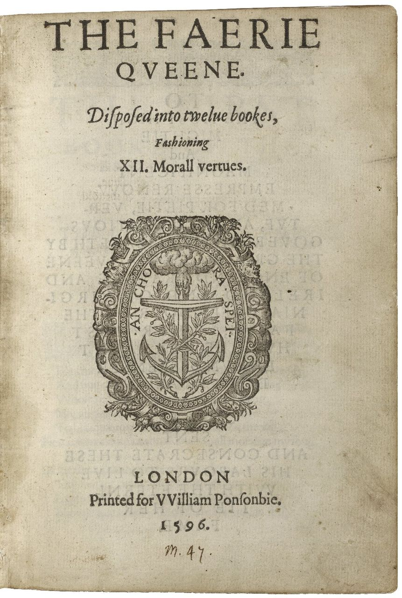
“Beyond all doubt, it is best to have made one’s acquaintance with Spenser in a very large — and preferably illustrated — edition of The Faerie Queene, on a wet day, between the ages of twelve and sixteen.”
C. S. LEWIS · ENGLISH LITERATURE IN THE SIXTEENTH CENTURY
TO THE MOST HIGH, MIGHTIE AND MAGNIFICENT EMPRESSE RENOWMED FOR PIETIE, VERTUE, AND ALL GRATIOUS GOVERNMENT ELIZABETH BY THE GRACE OF GOD QUEENE OF ENGLAND FRAUNCE AND IRELAND AND OF VIRGINIA, DEFENDOUR OF THE FAITH, &c. HER MOST HUMBLE SERVAUNT EDMUND SPENSER DOTH IN ALL HUMILITIE DEDICATE, PRESENT AND CONSECRATE THESE HIS LABOURS TO LIVE WITH THE ETERNITIE OF HER FAME.
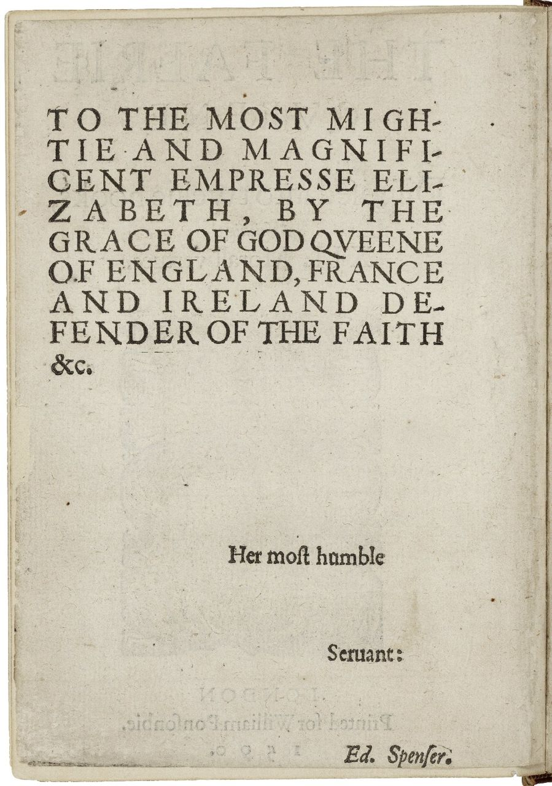
Front Matter
Editor’s Note A TABLE OF FALSE FRIENDS
The words that slow a reader of Spenser are seldom the strange ones. Eftsoons, wight, and mote announce themselves and are soon learned; the danger lies in common words worn to different meanings, which the eye accepts without pausing. A reader fluent in the English of the King James Bible is, if anything, more exposed: that fluency breeds trust, and these words betray it. The senses below are the ones this poem most often intends. Where the modern sense also occurs, context will usually declare it.
annoy
harm, molestation — a noun, and graver than vexation
brave
splendid, finely arrayed, showy
buxom
yielding, obedient — the buxom air
courage
heart, spirit, disposition — the seat of feeling, not merely valour
crime
charge, accusation; sin at large — whilst loving thou mayst loved be with equal crime
cunning
skill, knowledge — a term of praise
curious
elaborately wrought, made with care
dear
also grievous, dire, hard-bought — my dearest dread
discover
reveal, disclose
disease
dis-ease: distress, discomfort of any kind
doubt
fear, dread
dread
also an object of reverence — the Queen is Spenser’s dearest dread
fell
fierce, cruel, deadly
feature
bodily shape, the whole made form
fond
foolish, doting
gentle
noble, well-born — of blood before manners
horrid
bristling, shaggy — from Latin horridus
hue
form, appearance, aspect — not merely colour
idle
empty, vain, groundless
imp
child, scion, offshoot of a stock — without devilry
incontinent
immediately, at once — an adverb
jolly
gallant, handsome, spirited
kind, kindly
nature; natural, according to one’s kind
let
hinder; a hindrance — the old sense, as in tennis
lewd
ignorant, base, unlearned — not lustful
lightly
quickly, easily, readily
lively
living, lifelike — the lively image
lust
pleasure, desire, vigour — often blameless
meet
fitting, proper
mischief
calamity, grave harm — far stronger than mischief now
nephews
grandsons, descendants — Latin nepotes
outrage
violence, violent excess — not indignation
painful
painstaking, laborious
paragon
match, equal, companion; rival
passing
surpassingly, exceedingly — passing fair
presently
at once, this instant
pride
also prime, bloom, splendour — the rose’s pride is its flowering
prove
test, try by experience
purchase
plunder, winnings, what is got — by whatever means
quaint
cunningly made, dainty, strange
quick
alive, living
quit, quite
(verb) repay, requite, acquit
read
discern, interpret, advise, tell — whence areed
sad
grave, steadfast, sober, heavy — solid worth, not sorrow
silly
innocent, helpless, simple — the silly lamb
spill
destroy, ruin, waste
spoil
strip, despoil, plunder
still
always, continually — its commonest sense here
stout
brave, proud, resolute
success
outcome, issue — good or ill alike
suffer
allow, permit
table
a panel for painting, a tablet
tell
count, reckon — to tell his beads
train
lure, snare, deceit; also retinue, and a tail
try
test, refine, put to proof
uncouth
unknown, strange, unfamiliar — not boorish
usage
treatment, conduct toward one
virtue
power, efficacy, inherent strength — of herbs, rings, and men
want
lack, be without
wanton
playful, unruly, luxuriant — often without censure
weeds
garments, clothing — lowly Shepherds weeds
wit
mind, intelligence, understanding
wood
mad, furious — when not timber
worship
honour, renown, worthiness
Two conflations should also be known: travel and travail are one word here, labour and journeying together; and then for than, where it survives emendation, follows the same rule. When a sentence resists, suspect a small word.
THE FIRST BOOKE OF THE FAERIE QUEENE
The Legend of the Knight of the Red Crosse, or of Holinesse
Holinesse
The Proeme
io I the man, whose Muse whilom did mask,As time her taught, in lowly Shepherds weeds,Am now enforc’d a far unfitter task,For trumpets stern to change mine Oaten reeds,And sing of Knights and Ladies gentle deeds;Whose praises having slept in silence long,Me, all too mean, the sacred Muse areadsTo blazon broad amongst her learned throng:Fierce wars and faithful loves shall moralize my song.
iiHelp then, O holy Virgin chief of nine,Thy weaker Novice to perform thy will,Lay forth out of thine everlasting scrineThe antique rolls, which there lie hidden still,Of Faerie knights and fairest Tanaquill,Whom that most noble Briton Prince so longSought through the world, and suffered so much ill,That I must rue his undeserved wrong:O help thou my weak wit, and sharpen my dull tongue.
iiiAnd thou most dreaded imp of highest Jove,Fair Venus son, that with thy cruel dartAt that good knight so cunningly didst rove,That glorious fire it kindled in his heart,Lay now thy deadly Heben bow apart,And with thy mother mild come to mine aide:Come both, and with you bring triumphant Mart,In loves and gentle jollities array’d,After his murdrous spoils and bloody rage allay’d.
ivAnd with them eke, O Goddess heavenly bright,Mirror of grace and Majesty divine,Great Lady of the greatest Isle, whose lightLike Phœbus lampe throughout the world doth shine,Shed thy fair beams into my feeble eyne,And raise my thoughts too humble and too vile,To think of that true glorious type of thine,The argument of mine afflicted stile:The which to hear, vouchsafe, O dearest dread a-while.
Booke I · Holinesse
Canto I
❧
The Patron of true Holiness, Foul Error doth defeat: Hypocrisy him to entrap’, Doth to his home entreat.
❧
i Gentle Knight was pricking on the plain,Yclad in mighty arms and silver shield,Wherein old dints of deep wounds did remain,The cruel marks of many’ a bloody field;Yet arms till that time did he never wield:His angry steed did chide his foaming bit,As much disdaining to the curb to yield:Full jolly knight he seem’d, and fair did sit,As one for knightly jousts and fierce encounters fit.
iiBut on his breast a bloody Cross he bore,The dear remembrance of his dying Lord,For whose sweet sake that glorious badge he wore,And dead as living ever him ador’d:Upon his shield the like was also scor’d,For sovereign hope, which in his help he had:Right faithful true he was in deed and word,But of his cheer did seem too solemn sad;Yet nothing did he dread, but ever was ydrad.
iiiUpon a great adventure he was bond,That greatest Gloriana to him gave,That greatest Glorious Queen of Faerie lond,To winn him worship, and her grace to have,Which of all earthly things he most did crave;And ever as he rode, his heart did earnTo prove his puissance in battle braveUpon his foe, and his new force to learn;Upon his foe, a Dragon horrible and stern.
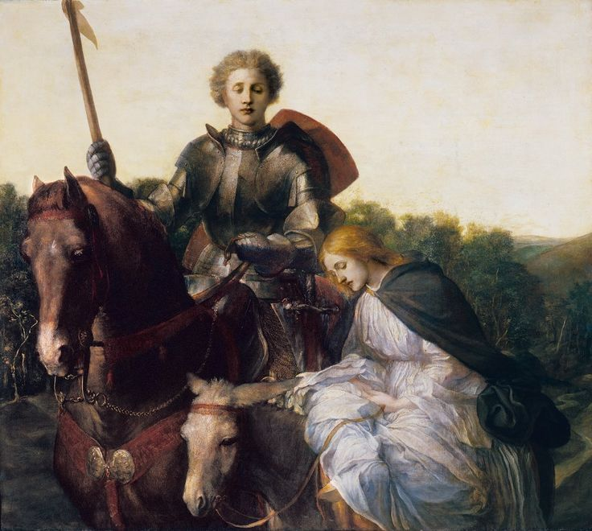
Una and the Red Cross KnightGeorge Frederic Watts, c. 1869 · National Museum Wales
ivA lovely Lady rode him fair beside,Upon a lowly Ass more white than snow,Yet she much whiter, but the same did hideUnder a vel, that wimpled was full low,And over all a black stole she did throw,As one that inly mourn’d: so was she sad,And heavy sat upon her palfrey slow:Seemed in heart some hidden care she had,And by her in a line a milk white lamb she lad.
vSo pure an innocent, as that same lamb,She was in life and every virtuous lore,And by descent from Royal linage cameOf ancient Kings and Queens, that had of yoreTheir scepters stretch’d from East to Western shore,And all the world in their subjection held;Till that infernal fiend with foul uproarForwasted all their land, and them expel’d:Whom to avenge, she had this Knight from far compel’d.
viBehind her fare away a Dwarf did lag,That lassie seem’d in being ever last,Or wearied with bearing of her bagOf needments at his back. Thus as they past,The day with clouds was sudden overcast,And angry Jove an hideous storm of rainDid pour into his Lemans lap so fast,That every wight to shrowd it did constrain,And this fair couple eke to shroud themselves were fain.
viiEnforc’d to seek some covert nigh at hand,A shady grove not far away they spied,That promist aide the tempest to withstand:Whose lofty trees yclad with sommers pride,Did spread so broad, that heavens light did hide,Not perceable with power of any starr:And all within were paths and alleies wide,With footing worn, and leading inward fare:Fair harbour that them seems; so in they enter’d arr.
viiiAnd forth they pass, with pleasure forward led,Joying to hear the birds sweet harmony,Which therein shrouded from the tempest dread,Seem’d in their song to scorn the cruel sky.Much can they prays the trees so straight and hi,The sailing Pine, the Cedar proud and tall,The vine-prop Elm, the Poplar never dry,The builder Oak, sole king of forests all,The Aspine good for staves, the Cypress funeral.
ixThe Laurel, meed of mighty ConquerorsAnd Poets sage, the Fire that weepeth still,The Willow worn of forlorn Paramours,The Eugh obedient to the benders will,The Birch for shafts, the Sallow for the mill,The Mirrhe sweet bleeding in the bitter wound,The warlike Beech, the Ash for nothing ill,The fruitful Olive, and the Platane round,The carver Holme, the Maple seldom inward sound.
xLed with delight, they thus beguile the way,Until the blust’ring storm is overblown;When weening to return, whence they did stray,They cannot find that path, which first was shown,But wander too and fro in ways unknown,Furthest from end then, when they nearest ween,That makes them doubt, their wits be not their own:So many paths, so many turnings seen,That which of them to take, in diverse doubt they been.
xiAt last resolving forward still to fare,Till that some end they find or in or out,That path they take, that beaten seem’d most bare,And like to lead the labyrinth about;Which when by tract they hunted had throughout,At length it brought them to a hollow cave,Amid the thickest woods. The Champion stoutEftsoons dismounted from his courser brave,And to the Dwarf a while his needless spere he gave.
xiiBe well aware, quoth then that Lady mild,Least sudden mischief ye too rash provoke:The danger hid, the place unknown and wild,Breeds dreadful doubts: Oft fire is without smoke,And peril without show: therefore your strokeSir knight with-hold, till further trial made.Ah Lady (said he) shame were to revokeThe forward footing for an hidden shade:Virtue gives her self light, through darkens for to wade.
xiiiYea but (quoth she) the peril of this placeI better wot then you, though now too lateTo wish you back return with foul disgrace,Yet wisedome warns, whilst foot is in the gate,To stay the steppe, ere forced to retrate.This is the wand’ring wood, this Errours den,A monster vile, whom God and man does hate:Therefore I read beware. Fly fly (quoth thenThe fearful Dwarf:) this is no place for living men.
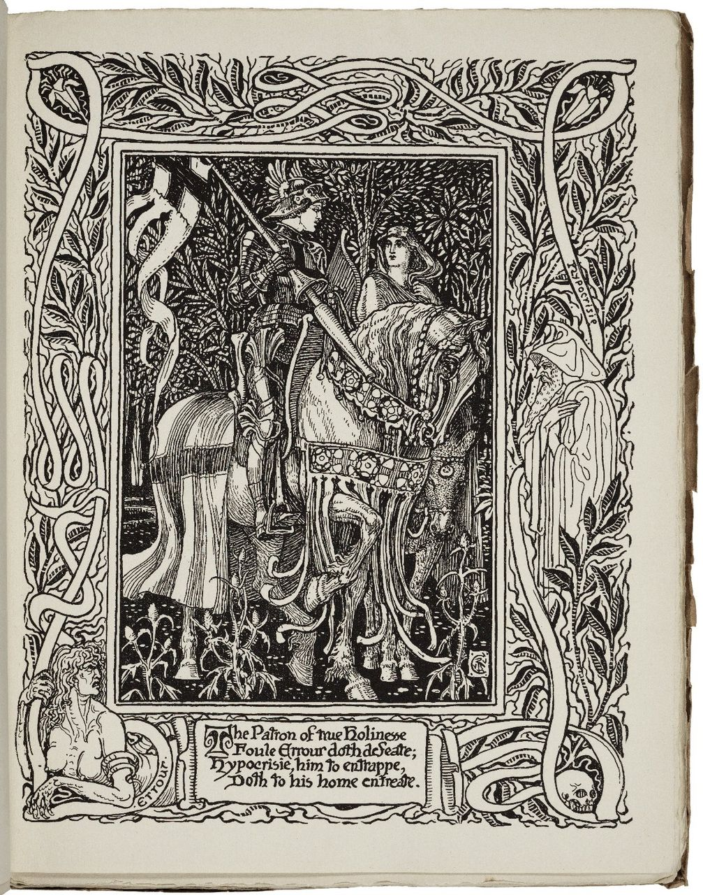
Holiness defeats ErrorWalter Crane, 1895–97 · from the George Allen edition
xivBut full of fire and greedy hardiment,The youthful knight could not for ought be stay’d,But forth unto the darksome hole he went,And looked in: his glist’ring armor madeA little glooming light, much like a shade,By which he saw the ugly monster plain,Half like a serpent horribly displaide,But th’other half did womans shape retain,Most lothsome, filthy, foul, and full of vile disdain.
xvAnd as she lay upon the durtie ground,Her huge long tail her den all overspread,Yet was in knots and many boughtes upwound,Pointed with mortal sting. Of her there bredA thousand yong ones, which she daily fed,Sucking upon her poisonous dugs, eachoneOf sundry shapes, yet all ill favored:Soon as that uncouth light upon them shone,Into her mouth they crept, and suddain all were gone.
xviTheir dam upstart, out of her den effraide,And rushed forth, hurling her hideous tailAbout her cursed head, whose folds display’dWere stretch’d now forth at length without entrail.She look’d about, and seeing one in maileArmed to point, sought back to turn again;For light she hated as the deadly bale,Ay wont in desert darkness to remain,Where plain none might her see, nor she see any plain.
xviiWhich when the valiant Elf perceiv’d, he leptAs Lyon fierce upon the flying pray,And with his trenchand blade her boldly keptFrom turning back, and forced her to stay:Therewith enrag’d she loudly gan to bray,And turning fierce, her speckled tail aduaunst,Threat’ning her angry sting, him to dismay:Who nought aghast, his mighty hand enhaunst:The stroke down from her head unto her shoulder glanc’d.
xviiiMuch daunted with that dint, her sense was daz’d,Yet kindling rage, her self she gathered round,And all at once her beastly body raizdWith doubled forces high above the ground:Tho wrapping up her wreathed stern arownd,Lept fierce upon his shield, and her huge trainAll suddenly about his body wound,That hand or foot to stire he strove in vain:God help the man so wrapt in Errours endless train.
xixHis Lady sad to see his sore constraint,Cried out, Now now Sir knight, show what ye be,Add faith unto your force, and be not faint:Strangle her, else she sure will strangle thee.That when he heard, in great perplexity,His gall did grate for grief and high disdain,And knitting all his force got one hand free,Wherewith he gript her gorge with so great pain,That soon to loose her wicked bands did her constrain.
xxTherewith she spew’d out of her filthy mawA flood of poison horrible and black,Full of great lumps of flesh and gobbets raw,Which stunck so vildly, that it forc’d him slackHis grasping hold, and from her turn him back:Her vomit full of books and papers was,With loathly frogs and toads, which eyes did lack,And creeping sought way in the weedy graz:Her filthy parbreak all the place defiled has.
xxiAs when old father Nilus gins to swellWith timely pride above the Ægyptian vale,His fatty waves do fertile slime outwell,And overflow each plain and lowly dale:But when his later spring gins to avale,Huge heaps of mud he leaves, wherein there breedTen thousand kinds of creatures, partly maleAnd partly female of his fruitful seed;Such ugly monstrous shapes elswhere may no man reed.
xxiiThe same so sore annoyed has the knight,That wellnigh choked with the deadly stink,His forces fade, ne can no longer fight.Whose corage when the fiend perceiv’d to shrink,She poured forth out of her hellish sinkHer fruitful cursed spawn of serpents small,Deformed monsters, foul, and black as ink,Which swarming all about his legs did crawl,And him encombred sore, but could not hurt at all.
xxiiiAs gentle Shepherd in sweet even-tide,When ruddy Phœbus gins to welk in west,High on an hill, his flock to vewen wide,Marks which do byte their hasty supper best;A cloud of combrous gnats do him molest,All striving to infix their feeble stings,That from their noyance he no where can rest,But with his clownish hands their tender wingsHe brusheth oft, and oft doth mar their murmurings.
xxivThus ill bested, and fearful more of shame,Then of the certain peril he stood in,Half furious unto his foe he came,Resolv’d in mind all suddenly to win,Or soon to lose, before he once would lin;And stroke at her with more than manly force,That from her body full of filthy sinHe raft her hatful head without remorse;A stream of cole black blood forth gushed from her corse.
xxvHer scatter’d brood, soon as their Parent dearThey saw so rudely falling to the ground,Groaning full deadly, all with troublous fear,Gathred themselves about her body round,Weening their wonted entrance to have foundAt her wide mouth: but being there withstoodThey flocked all about her bleeding wound,And sucked up their dying mothers blood,Making her death their life, and eke her hurt their good.
xxviThat detestable sight him much amazde,To see th’unkindly Imps of heaven accurst,Devour their dam; on whom while so he gaz’d,Having all satisfied their bloody thurst,Their bellies swolne he saw with fulness burst,And bowels gushing forth: well worthy endOf such as drunk her life, the which them nurst;Now needeth him no lenger labour spend,His foes have slain themselves, with whom he should contend.
xxviiHis Lady seeing all, that chanc’d, from fareApproach’d in hast to greet his victory,And said, Fair knight, borne under happy starr,Who see your vanquisht foes before you lye:Well worthy be you of that Armory,Wherein ye have great glory won this day,And prov’d your strength on a strong enimie,Your first adventure: many such I pray,And henceforth ever wish, that like succeed it may.
xxviiiThen mounted he upon his Steed again,And with the Lady backward sought to wend;That path he kept, which beaten was most plain,Ne ever would to any by-way bend,But still did follow one unto the end,The which at last out of the wood them brought.So forward on his way (with God to frend)He passed forth, and new adventure sought;Long way he travelled, before he heard of ought.
xxixAt length they chanc’d to meet upon the wayAn aged Sire, in long black weeds yclad,His feet all bare, his beard all hoary gray,And by his belt his book he hanging had;Sober he seemde, and very sagely sad,And to the ground his eyes were lowly bent,Simple in show, and void of malice bad,And all the way he prayed, as he went,And often knock’d his breast, as one that did repent.
xxxHe fair the knight saluted, louting low,Who fair him quited, as that courteous was:And after asked him, if he did knowOf strange adventures, which abroad did pas.Ah my dear Son (quoth he) how should, alas,Silly old man, that lives in hidden cell,Bidding his beads all day for his trespass,Tidings of war and worldly trouble tell?With holy father sits not with such things to mell.
xxxiBut if of danger which hereby doth dwell,And homebred evil ye desire to hear,Of a strange man I can you tidings tell,That wasteth all this country fare and near.Of such (said he) I chiefly do inquere,And shall you well reward to show the place,In which that wicked wight his days doth wear:For to all knighthood it is foul disgrace,That such a cursed creature lives so long a space.
xxxiiFar hence (quoth he) in wastfull wildernessHis dwelling is, by which no living wightMay ever pass, but thorough great distress.Now (said the Lady) draweth toward night,And well I wot, that of your later fightYe all forwearied be: for what so strong,But wanting rest will also want of might?The Sun that measures heaven all day long,At night doth bait his steeds the Ocean waves among.
xxxiiiThen with the Sun take Sir, your timely rest,And with new day new work at once begin:Untroubled night they say gives counsel best.Right well Sir knight ye have advised bin,(Quoth then that aged man;) the way to winIs wisely to advise: now day is spent;Therefore with me ye may take up your InFor this same night. The knight was well content:So with that godly father to his home they went.
xxxivA little lowly Hermitage it was,Down in a dale, hard by a forests side,Far from resort of people, that did pasIn travel to and froe: a little wideThere was an holy Chappell edified,Wherein the Hermite dewly wont to sayHis holy things each morne and eventide:Thereby a Crystal stream did gently play,Which from a sacred fountain welled forth alway.
xxxvArrived there, the little house they fill,Ne loke for entertainement, where none was:Rest is their feast, and all things at their will;The noblest mind the best contentment has.With fair discourse the evening so they pas:For that old man of pleasing words had store,And well could file his tongue as smooth as glaze;He told of Saints and Popes, and evermoreHe strow’d an Ave-Mary after and before.
xxxviThe drooping Night thus creepeth on them fast,And the sad humour loading their eye lids,As messenger of Morpheus on them castSweet slumb’ring dew, the which to sleep them bides.Unto their lodgings then his guests he rides:Where when all drownd in deadly sleep he finds,He to his study goes, and there amidesHis Magic books and arts of sundry kinds,He seeks out mighty charms, to trouble sleepy minds.
xxxviiThen choosing out few words most horrible,(Let none them read) thereof did verses frame,With which and other spells like terrible,He bad awake black Plutoes grisly Dame,And cursed heaven, and spake reproachful shameOf highest God, the Lord of life and light;A bold bad man, that dar’d to call by nameGreat Gorgon, Prince of darkness and dead night,At which Cocytus quakes, and Styx is put to flight.
xxxviiiAnd forth he call'd out of deep darkness dreadLegions of Sprights, the which like little fliesFlutt’ring about his ever damned head,A-waite whereto their service he applies,To aide his friends, or fray his enemies:Of those he chose out two, the falsest two,And fittest for to forge true-seeming lyes;The one of them he gave a message too,The other by him self stay’d other work to do.
xxxixHe making speedy way through spersed ayre,And through the world of waters wide and deep,To Morpheus house doth hastily repair.Amid the bowels of the earth full steep,And low, where dawning day doth never peep,His dwelling is; there Tethys his wet bedDoth ever wash, and Cynthia still doth steepIn silver dew his ever-drooping head,Whiles sad Night over him her mantle black doth spread.
xlWhose double gates he findeth locked fast,The one fair fram’d of burnisht Ivory,The other all with silver overcast;And wakeful doges before them fare do lye,Watching to banish Care their enemy,Who oft is wont to trouble gentle Sleep.By them the Sprite doth pass in quietly,And unto Morpheus comes, whom drowned deepIn drowsy fit he finds: of nothing he takes keep.
xliAnd more, to lull him in his slumber soft,A trickling stream from high rock tumbling downAnd ever-drizling rain upon the loft,Mixt with a murmuring wind, much like the sownOf swarming Bees, did cast him in a swoon:No other noys, nor peoples troublous cries,As still are wont t’annoy the walled town,Might there be heard: but carless Quiet lyes,Wrapt in eternal silence fare from enemies.
xliiThe messenger approaching to him spake,But his wast words return’d to him in vain:So sound he slept, that nought mought him awake.Then rudely he him thrust, and pusht with pain,Whereat he gan to stretch: but he againShook him so hard, that forced him to speak.As one then in a dream, whose dryer braineIs toss’d with troubled sights and fancies weak,He mumbled soft, but would not all his silence break.
xliiiThe Sprite then gan more boldly him to wake,And threaten’d unto him the dreaded nameOf Hecate: whereat he gan to quake,And lifting up his lumpish head, with blameHalf angry asked him, for what he came.Hither (quoth he) me Archimago sent,He that the stubborn Sprites can wisely tame,He bids thee to him send for his intentA fit false dream, that can delude the sleepers sent.
xlivThe God obayde, and calling forth straight wayA diverse dream out of his prison dark,Delivered it to him, and down did layHis heavy head, devoid of careful cark,Whose senses all were straight benumb’d and starke.He back returning by the Ivory door,Remounted up as light as cheerful Lark,And on his little wings the dream he boreIn hast unto his Lord, where he him left afore.
xlvWho all this while with charms and hidden arts,Had made a Lady of that other Spright,And fram’d of liquid ayre her tender partsSo lively, and so like in all mens sight,That weaker sense it could have ravisht quite:The maker self for all his wondrous witt,Was nigh beguiled with so goodly sight:Her all in white he clad, and over itCast a black stole, most like to seem for Una fit.
xlviNow when that idle dream was to him brought,Unto that Elfin knight he bad him fly,Where he slept soundly void of evil thought,And with false shews abuse his fantasy,In sort as he him schooled privily:And that new creature borne without her dew,Full of the makers guile, with usage slyHe taught to imitate that Lady trow,Whose semblance she did carrie under feigned hue.
xlviiThus well instructed, to their work they hast,And coming where the knight in slumber lay,The one upon his hardy head him plac’d,And made him dream of loves and lustful play,That nigh his manly heart did melt away,Bathed in wanton bliss and wicked joy:Then seemed him his Lady by him lay,And to him playnd, how that false winged boyHer chaste heart had subdewd, to learn Dame pleasures toy.
xlviiiAnd she her self of beauty sovereign Queen,Fair Venus seemde unto his bed to bringHer, whom he waking evermore did weenTo be the chastest flower, that ay did springOn earthly branch, the daughter of a king,Now a loose Leman to vile service bound:And eke the Graces seemed all to sing,Hymen iõ Hymen, dancing all around,Whilst freshest Flora her with Ivy garland crown’d.
xlixIn this great passion of unwonted lust,Or wonted fear of doing ought amiss,He started up, as seeming to mistrustSome secret ill, or hidden foe of his:Lo there before his face his Lady is,Under blake stole hiding her baited hooke,And as half blushing offer’d him to kiss,With gentle blandishment and lovely loke,Most like that virgin true, which for her knight him took.
lAll clean dismay’d to see so uncouth sight,And half enraged at her shameless guise,He thought have slain her in his fierce despite:But hasty heat temp’ring with sufferance wise,He staid his hand, and gan himself adviseTo prove his sense, and tempt her faigned truth.Wringing her hands in wemens piteous wise,Tho can she weep, to stire up gentle ruth,Both for her noble blood, and for her tender youth.
liAnd said, Ah Sir, my liege Lord and my love,Shall I accuse the hidden cruel fate,And mighty causes wrought in heaven above,Or the blind God, that doth me thus amate,For hoped love to winn me certain hate?Yet thus perforce he bids me do, or die.Die is my dew: yet rew my wretched stateYou, whom my hard avenging destinyHath made judge of my life or death indifferently.
liiYour own dear sake forc’d me at first to leaveMy Fathers kingdom, There she stopt with tears;Her swollen heart her speech seem’d to bereave,And then again begun, My weaker yearsCaptive’d to fortune and frail worldly fears,Fly to your faith for succour and sure aide:Let me not dye in languor and long tears.Why Dame (quoth he) what hath ye thus dismay’d?What frays ye, that were wont to comfort me afraid?
liiiLove of your self, she said, and dear constraintLets me not sleep, but wast the weary nightIn secret anguish and unpitied plaint,Whiles you in carless sleep are drowned quite.Her doubtful words made that redoubted knightSuspect her truth: yet since no’untruth he knew,Her fawning love with foul disdainful spiteHe would not shend, but said, Dear dame I rew,That for my sake unknown such grief unto you grew.
livAssure your self, it fell not all to ground;For all so dear as life is to my heart,I deem your love, and hold me to you bound;Ne let vain fears procure your needless smart,Where cause is none, but to your rest depart.Not all content, yet seem’d she to appeaseHer mournful plaints, beguiled of her art,And fed with words, that could not chuse but please,So sliding softly forth, she turn’d as to her ease.
lvLong after lay he musing at her mood,Much griev’d to think that gentle Dame so light,For whose defence he was to shed his blood.At last dull weariness of former fightHaving yrockt a sleep his irksome spright,That troublous dream gan freshly toss his braine,With bowers, and beds, and Ladies dear delight:But when he saw his labour all was vain,With that misformed spright he back return’d again.
Booke I · Holinesse
Canto II
❧
The guileful great Enchanter parts The Redcrosse Knight from Truth: Into whose stead fair falshood steps, And works him woeful ruth.
❧
iy this the Northern wagoner had setHis sevenfold teme behind the steadfast starr,That was in Ocean waves yet never wet,But firm is fixt, and sendeth light from fareTo all, that in the wide deep wand’ring arr:And cheerful Chaunticlere with his note shrillHad warned once, that Phœbus fiery carrIn hast was climbing up the Eastern hill,Full envious that night so long his rome did fill.
iiWhen those accursed messengers of hell,That feigning dream, and that fair-forged SprightCame to their wicked maister, and gan tellTheir bootless pains, and ill succeeding night:Who all in rage to see his skilful mightDeluded so, gan threaten hellish painAnd sad Proserpines wrath, them to affright.But when he saw his threat’ning was but vain,He cast about, and search’d his baleful books again.
iiiEftsoons he toke that miscreated fair,And that false other Spright, on whom he spreadA seeming body of the subtile aire,Like a young Squire, in loves and lusty-headHis wanton days that ever loosely led,Without regard of arms and dreaded fight:Those two he toke, and in a secret bed,Covered with darkness and misdeeming night,Them both together laid, to joy in vain delight.
ivForthwith he runes with feigned faithful hastUnto his guest, who after troublous sightsAnd dreams, gan now to take more sound repast,Whom suddenly he wakes with fearful frights,As one aghast with fiends or damned sprights,And to him calls, Rise rise unhappy Swain,That here wex old in sleep, whiles wicked wightsHave knit themselves in Venus shameful chain;Come see, where your false Lady doth her honour stain.
vAll in amaze he suddenly up startWith sword in hand, and with the old man went;Who soon him brought into a secret part,Where that false couple were full closely mentIn wanton lust and lewd embracement:Which when he saw, he burnt with gealous fire,The eye of reason was with rage yblent,And would have slain them in his furious ire,But hardly was restreined of that aged sire.
viReturning to his bed in torment great,And bitter anguish of his guilty sight,He could not rest, but did his stout heart eat,And wast his inward gall with deep despite,Irksome of life, and too long ling’ring night.At last fair Hesperus in highest skiHad spent his lampe, and brought forth dawning light,Then up he rose, and clad him hastily;The Dwarf him brought his steed: so both away do fly.
viiNow when the rosy-finger’d Morning fair,Weary of aged Tithones saffron bed,Had spread her purple robe through dewy aire,And the high hills Titan discovered,The royal virgin shook off drowsy-head,And rising forth out of her baser bower,Look’d for her knight, who far away was fled,And for her Dwarf, that wont to wait each hour;Then gan she wail and weep, to see that woful stowre.
viiiAnd after him she rode with so much speedAs her slow beast could make; but all in vain:For him so far had borne his light-foot steed,Pricked with wrath and fiery fierce disdain,That him to follow was but fruitless pain;Yet she her weary limbs would never rest,But every hill and dale, each wood and plainDid search, sore grieved in her gentle breast,He so ungently left her, whom she loved best.
ixBut subtil Archimago when his guestsHe saw divided into double parts,And Una wand’ring in woods and forests,Th’end of his drift, he prais’d his divelish arts,That had such might over true meaning hearts;Yet rests not so, but other means doth make,How he may work unto her further smarts:For her he hated as the hissing snake,And in her many troubles did most pleasure take.
xHe then devisde himself how to disguise;For by his mighty science he could takeAs many forms and shapes in seeming wise,As ever Proteus to himself could make:Sometime a foul, sometime a fish in lake,Now like a foxe, now like a dragon fell,That of himself he oft for fear would quake,And oft would fly away. O who can tellThe hidden power of herbs, and might of Magic spell?
xiBut now seemde best, the person to put onOf that good knight, his late beguiled guest:In mighty arms he was yclad anon,And silver shield: upon his coward breastA bloody cross, and on his craven crestA bounch of hairs discolour’d diversly:Full jolly knight he seemde, and well addrest,And when he sate upon his courser free,Saint George himself ye would have deemed him to be.
xiiBut he the knight, whose semblant he did bear,The true Saint George was wander’d far away,Still flying from his thoughts and gealous fear;Will was his guide, and grief led him astray.At last him chanc’d to meet upon the wayA faithless Sarrazin all arm’d to point,In whose great shield was writ with letters gaySans foy: full large of limb and every jointHe was, and cared not for God or man a point.
xiiiHe had a fair companion of his way,A goodly Lady clad in scarlot red,Purfled with gold and pearl of rich assay,And like a Persian mitre on her headShe wore, with crowns and owches garnished,The which her lavish lovers to her gave;Her wanton palfrey all was overspreadWith tinsel trappings, woven like a wave,Whose bridle rung with golden bels and bosses brave.
xivWith fair disport and courting dallianceShe intertainde her lover all the way:But when she saw the knight his spear aduaunce,She soon left off her mirth and wanton play,And bad her knight address him to the fray:His foe was nigh at hand. He prick’d with prideAnd hope to winn his Ladies heart that day,Forth spurred fast: adown his coursers sideThe red blood trickling stain’d the way, as he did ride.
xvThe knight of the Redcrosse when him he spied,Spurring so hote with rage dispiteous,Gan fairly couch his spear, and towards ride:Soon meet they both, both fell and furious,That daunted with their forces hideous,Their steeds do stagger, and amazed stand,And eke themselves too rudely rigorous,Astonied with the stroke of their own hand,Do back rebut, and each to other yeeldeth land.
xviAs when two rams stir’d with ambitious pride,Fight for the rule of the rich fleeced flock,Their horned fronts so fierce on either sideDo meet, that with the terror of the shockAstonied both, stand senseless as a block,Forgetful of the hanging victory:So stood these twain, unmoved as a rock,Both staring fierce, and holding idlyThe broken reliques of their former cruelty.
xviiThe Sarazin sore daunted with the buffeSnatcheth his sword, and fiercely to him flies;Who well it wards, and quyteth cuff with cuff:Each others equal puissance envies,And through their iron sides with cruel spiesDoes seek to perse: repining courage yieldsNo foot to foe. The flashing fiere fliesAs from a forge out of their burning shields,And streams of purple blood new dies the verdant fields.
xviiiCurse on that Cross (quoth then the Sarazin)That keeps thy body from the bitter fit;Dead long ygoe I wot thou haddest bin,Had not that charm from thee forwarned it:But yet I warne thee now assured sit,And hide thy head. Therewith upon his crestWith rigour so outrageous he smit,That a large share it hew’d out of the rest,And glancing down his shield, from blame him fairly blest.
xixWho thereat wondrous wroth, the sleeping sparkOf native virtue gan eftsoons revive,And at his haughty helmet making mark,So hugely stroke, that it the steel did rive,And cleft his head. He tumbling down alive,With bloody mouth his mother earth did kiss,Greeting his grave: his grudging ghost did striveWith the frail flesh; at last it flitted is,Whither the souls do fly of men, that live amiss.
xxThe Lady when she saw her champion fall,Like the old ruins of a broken tower,Staid not to wail his woful funeral,But from him fled away with all her power;Who after her as hastily gan scour,Bidding the Dwarf with him to bring awayThe Sarazins shield, sign of the conqueror.Her soon he overtook, and bad to stay,For present cause was none of dread her to dismay.
xxiShe turning back with rueful countenance,Cried, Mercy mercy Sir vouchsafe to showOn silly Dame, subject to hard mischance,And to your mighty will. Her humblesse lowIn so ritch weeds and seeming glorious show,Did much emmove his stout heroïcke heart,And said, Dear dame, your sudden overthrowMuch rueth me; but now put fear apart,And tell, both who ye be, and who that toke your part.
xxiiMelting in tears, then gan she thus lament;The wretched woman, whom unhappy hourHath now made thrall to your commandement,Before that angry heavens list to lower,And fortune false betraide me to your power,Was, (O what now availeth that I was!)Borne the sole daughter of an Emperor,He that the wide West under his rule has,And high hath set his throne, where Tiberis doth pas.
xxiiiHe in the first flower of my freshest age,Betrothed me unto the only hairOf a most mighty king, most rich and sage;Was never Prince so faithful and so fair,Was never Prince so meek and debonaire;But ere my hoped day of spousal shone,My dearest Lord fell from high honours stair,Into the hands of his accursed fone,And cruelly was slain, that shall I ever mon.
xxivHis blessed body spoil’d of lively breath,Was afterward, I know not how, conuaidAnd fro me hid: of whose most innocent deathWhen tidings came to me unhappy maid,O how great sorrow my sad soul assay’d.Then forth I went his woful corse to find,And many years throughout the world I straid,A virgin widow, whose deep wounded mindWith love, long time did languish as the striken hind.
xxvAt last it chanced this proud SarazinTo meet me wand’ring, who perforce me ledWith him away, but yet could never winThe Fort, that Ladies hold in sovereign dread.There lies he now with foul dishonour dead,Who whiles he live’de, was called proud Sans foy,The eldest of three brethren, all three bredOf one bad sire, whose youngest is Sans joy,And twixt them both was borne the bloody bold Sans loy.
xxviIn this sad plight, friendless, unfortunate,Now miserable I Fidessa dwell,Craving of you in pity of my state,To do none ill, if please ye not do well.He in great passion all this while did dwell,More busying his quick eyes, her face to view,Then his dull ears, to hear what she did tell;And said, Fair Lady heart of flint would rewThe undeserved woes and sorrows, which ye show.
xxviiHenceforth in safe assurance may ye rest,Having both found a new friend you to aid,And lost an old foe, that did you molest:Better new friend then an old foe is said.With change of chere the seeming simple maidLet fall her eyen, as shamefast to the earth,And yielding soft, in that she nought gain-said,So forth they rode, he feining seemly merth,And she coy lokes: so dainty they say maketh derth.
xxviiiLong time they thus together traveiled,Till weary of their way, they came at last,Where grew two goodly trees, that fair did spreadTheir arms abroad, with gray moss overcast,And their green leaves trembling with every blast,Made a calm shadow far in compass round:The fearful Shepherd often there aghastUnder them never sat, ne wont there soundHis meri oaten pipe, but shun’d th’unlucky ground.
xxixBut this good knight soon as he them can spy,For the cole shade him thither hastly got:For golden Phœbus now ymounted hie,From fiery wheels of his fair chariotHurled his beam so scorching cruel hot,That living creature mote it not abide;And his new Lady it endured not.There they alight, in hope themselves to hideFrom the fierce heat, and rest their weary limbs a tide.
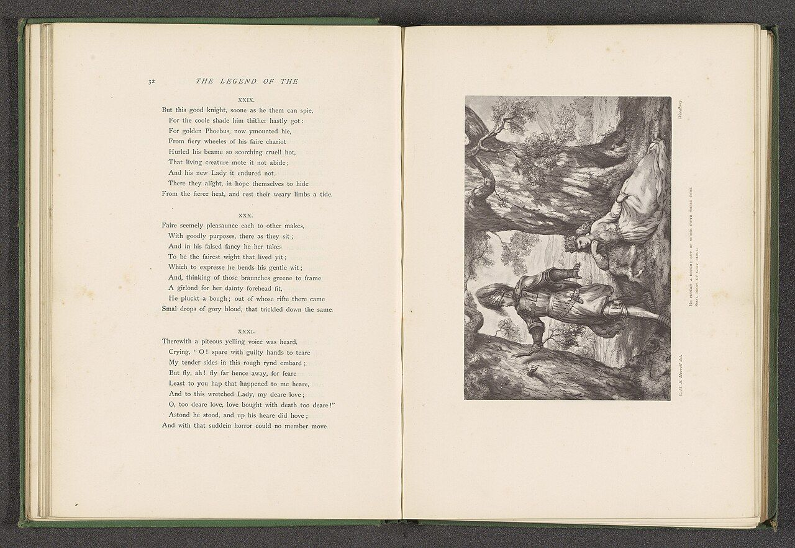
Redcrosse and Duessa beside the bleeding treeafter a 19th-century drawing · Rijksmuseum, Amsterdam
xxxFair seemly pleasance each to other makes,With goodly purposes there as they sit:And in his falsed fancy he her takesTo be the fairest wight, that lived yite;Which to express, he bends his gentle wit,And thinking of those branches green to frameA garland for her dainty forehead fit,He pluck’d a bough; out of whose rift there cameSmall drops of gory blood, that trickled down the same.
xxxiTherewith a piteous yelling voice was heard,Crying, O spare with guilty hands to tearMy tender sides in this rough rynd embar’d,But fly, ah fly far hence away, for fearLeast to you hap, that happened to me hear,And to this wretched Lady, my dear love,O too dear love, love bought with death too dear.Aston’d he stood, and up his hair did hove,And with that sudden horror could no member move.
xxxiiAt last whenas the dreadful passionWas overpast, and manhood well awake,Yet musing at the strange occasion,And doubting much his sense, he thus bespake;What voice of damned Ghost from Limbo lake,Or guileful spright wand’ring in empty aire,Both which frail men do oftentimes mistake,Sends to my doubtful ears these speeches rare,And rueful plaints, me bidding guiltless blood to spare?
xxxiiiThen groaning deep, Nor damned Ghost, (quoth he,)Nor guileful sprite to thee these words doth speak,But once a man Fradubio, now a tree,Wretched man, wretched tree; whose nature weak,A cruel witch her cursed will to wreak,Hath thus transform’d, and plac’d in open plains,Where Boreas doth blow full bitter bleak,And scorching Sun does dry my secret vaines:For though a tree I seem, yet cold and heat me pains.
xxxivSay on Fradubio then, or man, or tree,Quoth then the knight, by whose mischievous artsArt thou misshaped thus, as now I see?He oft finds med’cine, who his grief imparts;But double griefs afflict concealing hearts,As raging flames who striveth to suppress.The author then (said he) of all my smarts,Is one Duessa a false sorceress,That many errant knights hath brought to wretchedness.
xxxvIn prime of youthly years, when corage hotThe fire of love and joy of chevalreeFirst kindled in my breast, it was my lotTo love this gentle Lady, whom ye see,Now not a Lady, but a seeming tree;With whom as once I rode accompanied,Me chanced of a knight encounter’d be,That had a like fair Lady by his side,Like a fair Lady, but did foul Duessa hyde.
xxxviWhose forged beauty he did take in hand,All other Dames to have exceeded fare;I in defence of mine did likewise stand,Mine, that did then shine as the Morning starr:So both to battle fierce arranged arr,In which his harder fortune was to fallUnder my spear: such is the dye of war:His Lady left as a prise martial,Did yield her comely person, to be at my call.
xxxviiSo doubly lou’d of Ladies unlike fair,Th’one seeming such, the other such indeed,One day in doubt I cast for to compare,Whether in beauties glory did exceed;A Rosy garland was the victors meed:Both seemde to win, and both seemde won to be,So hard the discord was to be agreed.Frælissa was as fair, as fair mote be,And ever false Duessa seemde as fair as she.
xxxviiiThe wicked witch now seeing all this whileThe doubtful ballance equally to sway,What not by right, she cast to win by guile,And by her hellish science rais’d straight wayA foggy mist, that overcast the day,And a dull blast, that breathing on her face,Dimmed her former beauties shining ray,And with foul ugly form did her disgrace:Then was she fair alone, when none was fair in place.
xxxixThen cried she out, Fie, fie, deformed wight,Whose borrowed beauty now appeareth plainTo have before bewitched all mens sight;O leave her soon, or let her soon be slain.Her loathly visage viewing with disdain,Eftsoons I thought her such, as she me told,And would have killdee her; but with faigned pain,The false witch did my wrathful hand with-hold;So left her, where she now is turn’d to treen mould.
xlThens forth I toke Duessa for my Dame,And in the witch unweeting joy’d long time,Ne ever wist, but that she was the same,Till on a day (that day is every Prime,When Witches wont do penance for their crime)I chanc’d to see her in her proper hue,Bathing her self in origane and thyme:A filthy foul old woman I did view,That ever to have touch’d her, I did deadly rew.
xliHer nether parts misshapen, monstruous,Were hid in water, that I could not see,But they did seem more foul and hideous,Then womans shape man would believe to be.Thens forth from her most beastly companyI gan refrain, in mind to slip away,Soon as appear’d safe opportunity:For danger great, if not assur’d decayI saw before mine eyes, if I were known to stray.
xliiThe divelish hag by changes of my cherePerceiv’d my thought, and drownd in sleepy night,With wicked herbs and ointments did besmearMy body all, through charms and magic might,That all my senses were bereaved quite:Then brought she me into this desert waste,And by my wretched lovers side me pight,Where now enclos’d in wooden walls full fast,Banisht from living wights, our weary days we waste.
xliiiBut how long time, said then the Elfin knight,Are you in this misformed house to dwell?We may not change (quoth he) this evil plight,Till we be bathed in a living well;That is the term prescribed by the spell.O how, said he, mote I that well out find,That may restore you to your wonted well?Time and suffised fates to former kindShall us restore, none else from hence may us unbind.
xlivThe false Duessa, now Fidessa hight,Heard how in vain Fradubio did lament,And knew well all was true. But the good knightFull of sad fear and ghastly dreriment,When all this speech the living tree had spent,The bleeding bough did thrust into the ground,That from the blood he might be innocent,And with fresh clay did close the wooden wound:Then turning to his Lady, dead with fear her found.
xlvHer seeming dead he found with feigned fear,As all unweeting of that well she knew,And payn’d himself with busy care to rearHer out of carless swoon. Her eylids blewAnd dimmed sight with pale and deadly hueAt last she up gan lift: with trembling chereHer up he toke, too simple and too trow,And oft her kist. At length all passed fear,He set her on her steed, and forward forth did bear.
Booke I · Holinesse
Canto III
❧
Forsaken Truth long seeks her love, And makes the Lyon mild, Mares blind Devotions mart, and false In hand of leachour vild.
❧
iought is there under heav’ns wide hollowness,That moves more dear compassion of mind,Then beauty brought t’unworthy wretchednessThrough envies snares or fortunes freaks unkind:I, whether lately through her brightness blind,Or through alleageance and fast fealty,Which I do owe unto all woman kind,Feel my heart pierc’d with so great agony,When such I see, that all for pity I could die.
iiAnd now it is empassioned so deep,For fairest Unaes sake, of whom I sing,That my frail eyes these lines with tears do steep,To think how she through guileful handeling,Though true as touch, though daughter of a king,Though fair as ever living wight was fair,Though nor in word nor deed ill meriting,Is from her knight divorced in despairAnd her due loves deriv’d to that vile witches share.
iiiYet she most faithful Lady all this whileForsaken, woeful, solitary maidFare from all peoples prese, as in exile,In wilderness and wastfull deserts stray’d,To seek her knight; who subtilly betray’dThrough that late vision, which th’Enchaunter wrought,Had her abandon’d. She of nought afraid,Through woods and wastnesse wide him daily sought;Yet wished tidings none of him unto her brought.
ivOne day nigh weary of the irksome way,From her unhasty beast she did alight,And on the grass her dainty limbs did layIn secret shadow, fare from all mens sight:From her fair head her fillet she undight,And laid her stole aside. Her angels faceAs the great eye of heaven shined bright,And made a sunshine in the shady place;Did never mortal eye behold such heavenly grace.
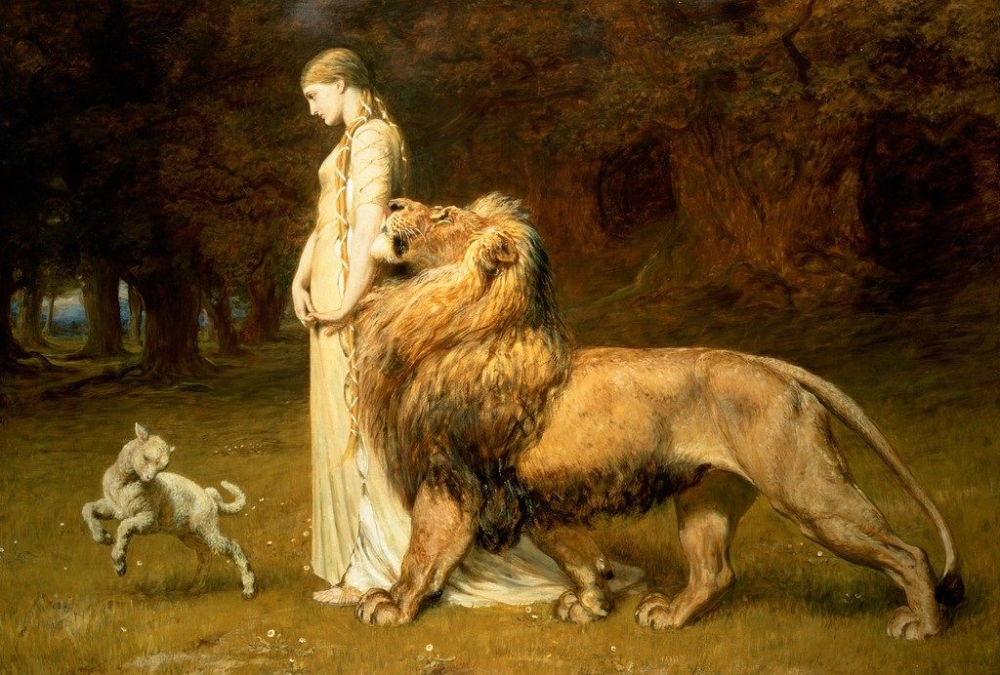
Una and the LionBriton Rivière, 1880 · private collection
vIt fortuned out of the thickest woodA ramping Lyon rushed suddainly,Hunting full greedy after salvage blood;Soon as the royal virgin he did spy,With gaping mouth at her ran greedily,To have at once devour’d her tender corse:But to the pray when as he drew more ny,His bloody rage asswaged with remorse,And with the sight amaz’d, forgat his furious forse.
viIn stead thereof he kist her weary feet,And lick’d her lilly hands with fawning tongue,As he her wronged innocence did weet.O how can beauty maister the most strong,And simple truth subdue avenging wrong?Whose yielded pride and proud submission,Still dreading death, when she had marked long,Her heart gan melt in great compassion,And drizling tears did shed for pure affection.
viiThe Lyon Lord of every beast in field,Quoth she, his princely puissance doth abate,And mighty proud to humble weak does yield,Forgetful of the hungry rage, which lateHim prick’d, in pity of my sad estate:But he my Lyon, and my noble Lord,How does he find in cruel heart to hateHer that him lou’d, and ever most ador’d,As the God of my life? why hath he me abhor’d?
viiiRedounding tears did choke th’end of her plaint,Which softly echoed from the neighbour wood;And sad to see her sorrowful constraintThe kingly beast upon her gazing stood;With pity calm’d, down fell his angry mood.At last in close heart shutting up her pain,Arose the virgin borne of heavenly brood,And to her snowy Palfrey got again,To seek her strayed Champion, if she might attain.
ixThe Lyon would not leave her desolate,But with her went along, as a strong gardOf her chaste person, and a faithful mateOf her sad troubles and misfortunes hard:Still when she slept, he kept both watch and ward,And when she wakt, he waited diligent,With humble service to her will prepar’d:From her fair eyes he toke commaundement,And ever by her lokes conceived her intent.
xLong she thus traveiled through deserts wide,By which she thought her wand’ring knight should pas,Yet never show of living wight espied;Till that at length she found the trodden graz,In which the tract of peoples footing was,Under the steep foot of a mountain hore;The same she follows, till at last she hasA damsel spied slow footing her before,That on her shoulders sad a pot of water bore.
xiTo whom approaching she to her gan call,To weet, if dwelling place were nigh at hand;But the rude wench her answer’d nought at all,She could not hear, nor speak, nor understand;Till seeing by her side the Lyon stand,With sudden fear her pitcher down she threw,And fled away: for never in that landFace of fair Lady she before did view,And that dread Lyons loke her cast in deadly hue.
xiiFull fast she fled, ne ever look’d behind,As if her life upon the wager lay,And home she came, whereas her mother blindSate in eternal night: nought could she say,But sudden catching hold, did her dismayWith quaking hands, and other signs of fear:Who full of ghastly fright and cold affray,Gan shut the door. By this arrived thereDame Una, weary Dame, and entrance did requere.
xiiiWhich when none yielded, her unruly PageWith his rude claws the wicket open rent,And let her in; where of his cruel rageNigh dead with fear, and faint astonishment,She found them both in darksome corner pent;Where that old woman day and night did prayUpon her beads devoutly penitent;Nine hundred Pater nosters every day,And thrice nine hundred Aves she was wont to say.
xivAnd to augment her painful penance more,Thrice every week in ashes she did sit,And next her wrinkled skin rough sackcloth wore,And thrice three times did fast from any bit:But now for fear her beads she did forget.Whose needless dread for to remove away,Fair Una framed words and count’nance fit:Which hardly doen, at length she gan them pray,That in their cottage small, that night she rest her may.
xvThe day is spent, and cometh drowsy night,When every creature shrowded is in sleep;Sad Una down her laisse in weary plight,And at her feet the Lyon watch doth keep:In stead of rest, she does lament, and weepFor the late loss of her dear loved knight,And sighs, and groans, and evermore does steepHer tender breast in bitter tears all night,All night she thinks too long, and often lokes for light.
xviNow when Aldeboran was mounted hieAbove the shiny Cassiopeias chair,And all in deadly sleep did drowned lie,One knocked at the door, and in would fare;He knocked fast, and often curst, and sware,That ready entrance was not at his call:For on his back a heavy load he bareOf nightly stelths and pillage several,Which he had got abroad by purchase criminal.
xviiHe was to weet a stout and sturdy thief,Wont to robe Churches of their ornaments,And poor mens boxes of their due relief,Which given was to them for good intents;The holy Saints of their rich vestimentsHe did disrobe, when all men carless slept,And spoil’d the Priests of their habiliments,Whiles none the holy things in safety kept;Then he by cunning sleights in at the window crept.
xviiiAnd all that he by right or wrong could find,Unto this house he brought, and did bestowUpon the daughter of this woman blind,Abessa daughter of Corceca slow,With whom he whoredom us’d, that few did know,And fed her fat with feast of offerings,And plenty, which in all the land did grow;Ne spared he to give her gold and rings:And now he to her brought part of his stolen things.
xixThus long the door with rage and threats he bet,Yet of those fearful women none durst riz,The Lyon frayed them, him in to let:He would no longer stay him to aduize,But open breaks the door in furious wiz,And ent’ring is; when that disdainful beastEncount’ring fierce, him sudden doth surprize,And seizing cruel claws on trembling breast,Under his Lordly foot him proudly hath suppress’d.
xxHim booteth not resist, nor succour call,His bleeding heart is in the vengers hand,Who straight him rent in thousand pieces small,And quite dismember’d hath: the thirsty landDrunk up his life; his corse left on the strand.His fearful friends wear out the woeful night,Ne dare to weep, nor seem to understandThe heavy hap, which on them is alight,Afraid, least to themselves the like mishappen might.
xxiNow when broad day the world discovered has,Up Una rose, up rose the Lyon eke,And on their former journey forward pas,In ways unknown, her wand’ring knight to seek,With pains fare passing that long wand’ring Greeke,That for his love refused deity;Such were the labours of this Lady meek,Still seeking him, that from her still did fly,Then furthest from her hope, when most she weened nie.
xxiiSoon as she parted thence, the fearful twain,That blind old woman and her daughter dearCame forth, and finding Kirkrapine there slain,For anguish great they gan to rend their hear,And beat their breasts, and naked flesh to tear.And when they both had wept and wayld their fill,Then forth they ran like two amazed dear,Half mad through malice, and revenging will,To follow her, that was the causer of their ill.
xxiiiWhom overtaking, they gan loudly bray,With hollow howling, and lamenting cry,Shamefully at her railing all the way,And her accusing of dishonesty,That was the flower of faith and chastity;And still amidst her railing, she did pray,That plagues, and mischiefs, and long miseryMight fall on her, and follow all the way,And that in endless error she might ever stray.
xxivBut when she saw her prayers nought prevail,She back returned with some labour lost;And in the way as she did weep and wail,A knight her met in mighty arms embost,Yet knight was not for all his bragging boast,But subtil Archimag, that Una soughtBy trains into new troubles to have toss’d:Of that old woman tidings he besought,If that of such a Lady she could tellen ought.
xxvTherewith she gan her passion to renew,And cry, and curse, and raile, and rend her hear,Saying, that harlot she too lately knew,That caus’d her shed so many a bitter tear,And so forth told the story of her fear:Much seemed he to mon her hapless chance,And after for that Lady did inquere;Which being taught, he forward gan aduaunceHis fair enchanted steed, and eke his charmed launce.
xxviEre long he came, where Una traveild slow,And that wild Champion waiting her beside:Whom seeing such, for dread he durst not showHimself too nigh at hand, but turned wideUnto an hill; from whence when she him spied,By his like seeming shield, her knight by nameShe wend it was, and towards him gan ryde:Approaching nigh, she wist it was the same,And with fair fearful humblesse towards him she came.
xxviiAnd weeping said, Ah my long lacked Lord,Where have ye been thus long out of my sight?Much feared I to have been quite abhor’d,Or ought have done, that ye displeasen might,That should as death unto my dear heart light:For since mine eye your joyous sight did mis,My cheerful day is turn’d to cheerless night,And eke my night of death the shadow is;But welcome now my light, and shining lampe of bliss.
xxviiiHe thereto meeting said, My dearest Dame,Fare be it from your thought, and fro my will,To think that knighthood I so much should shame,As you to leave, that have me loved still,And chose in Faery court of meer goodwill,Where noblest knights were to be found on earth:The earth shall sooner leave her kindly skillTo bring forth fruit, and make eternal derth,Then I leave you, my lief, yborne of heavenly berth.
xxixAnd sooth to say, why I left you so long,Was for to seek adventure in strange place,Where Archimago said a felon strongTo many knights did daily work disgrace;But knight he now shall never more deface:Good cause of mine excuse; that mote ye pleaseWell to accept, and evermore embraceMy faithful service, that by land and seasHave vow’d you to defend, now then your plaint appease.
xxxHis lovely words her seem’d due recompenseOf all her passed pains: one loving hourFor many years of sorrow can dispence:A dram of sweet is worth a pound of sower:She has forgot, how many a woeful stowreFor him she late endur’d; she speaks no moreOf past: true is, that true love hath no powerTo looken back; his eyes be fixt before.Before her stands her knight, for whom she toyld so sore.
xxxiMuch like, as when the beaten mariner,That long hath wander’d in the Ocean wide,Oft soust in swelling Tethys saltish tear,And long time having tan’d his tawney hideWith blust’ring breath of heaven, that none can bide,And scorching flames of fierce Orions hound,Soon as the port from fare he has espied,His cheerful whistle merrily doth sound,And Nereus crowns with cups; his mates him pledge around.
xxxiiSuch joy made Una, when her knight she found;And eke th’enchaunter joyous seem’d no less,Then the glad merchant, that does view from groundHis ship fare come from watrie wilderness,He hurls out vows, and Neptune oft doth bless:So forth they past, and all the way they spentDiscoursing of her dreadful late distress,In which he ask’d her, what the Lyon ment:†Who told her all that fell in journey as she went.
xxxiiiThey had not ridden fare, when they might seeOne pricking towards them with hasty heat,Full strongly arm’d, and on a courser free,That through his fierceness foamed all with sweat,And the sharpe iron did for anger eat,When his hot ryder spur’d his chauffed side;His loke was stern, and seemed still to threatCruel revenge, which he in heart did hyde,And on his shield Sans loy in bloody lines was died.
xxxivWhen nigh he drew unto this gentle pairAnd saw the Red-cross, which the knight did bear,He burnt in fire, and gan eftsoons prepareHimself to battle with his couched spear.Loth was that other, and did faint through fear,To taste th’untryed dint of deadly steel;But yet his Lady did so well him chere,That hope of new good hap he gan to feel;So bent his spear, and spurn’d his horse with iron heel.
xxxvBut that proud Paynim forward came so fierce,And full of wrath, that with his sharp-head spearThrough vainly crossed shield he quite did pierce,And had his staggering steed not shrunk for fear,Through shield and body eke he should him bear:Yet so great was the puissance of his push,That from his saddle quite he did him bear:He tombling rudely down to ground did rush,And from his gored wound a well of blood did gush.
xxxviDismounting lightly from his lofty steed,He to him lept, in mind to reave his life,And proudly said, Lo there the worthy meedOf him, that slew Sansfoy with bloody knife;Henceforth his ghost freed from repining strife,In peace may passen over Lethe lake,When morning altars purg’d with enemies life,The black infernal Furies doen aslake:Life from Sansfoy thou tookst, Sansloy shall from thee take.
xxxviiTherewith in haste his helmet gan unlace,Till Una cried, O hold that heavy hand,Dear Sir, what ever that thou be in place:Enough is, that thy foe doth vanquisht standNow at thy mercy: Mercy not withstand:For he is one the truest knight alive,Though conquered now he lie on lowly land,And whilst him fortune favour’d, fair did thriveIn bloody field: therefore of life him not deprive.
xxxviiiHer piteous words might not abate his rage,But rudely rending up his helmet, wouldHave slain him straight: but when he sees his age,And hoary head of Archimago old,His hasty hand he doth amazed hold,And half ashamed, wonder’d at the sight:For the old man well knew he, though untold,In charms and magic to have wondrous might,Ne ever wont in field, ne in round lists to fight.
xxxixAnd said, Why Archimago, luckless syr,What do I see? what hard mishap is this,That hath thee hither brought to taste mine ire?Or thine the fault, or mine the error is,In stead of foe to wound my friend amiss?He answered nought, but in a trance still lay,And on those guileful dazed eyes of hisThe cloud of death did sit. Which doen away,He left him lying so, ne would no lenger stay.
xlBut to the virgin comes, who all this whileAmazed stands, her self so mock’d to seeBy him, who has the guerdon of his guile,For so misfeigning her true knight to be:Yet is she now in more perplexity,Left in the hand of that same Paynim bold,From whom her booteth not at all to fly;Who by her cleanly garment catching hold,Her from her Palfrey pluck’d, her visage to behold.
xliBut her fierce servant full of kingly aweAnd high disdain, whenas his sovereign DameSo rudely handled by her foe he saw,With gaping jaws full greedy at him came,And ramping on his shield, did ween the sameHave reft away with his sharpe rending claws:But he was stout, and lust did now inflameHis corage more, that from his griping pawsHe hath his shield redeem’d, and forth his swerd he draws.
xliiO then too weak and feeble was the forseOf salvage beast, his puissance to withstand:For he was strong, and of so mighty corse,As ever wielded spear in warlike hand,And feats of arms did wisely understand.Eftsoons he perced through his chaufed chestWith thrilling point of deadly iron brand,And launch’d his Lordly heart: with death oppress’dHe roar’d aloud, whiles life forsook his stubborn breast.
xliiiWho now is left to keep the forlorn maidFrom raging spoil of lawless victors will?Her faithful gard remov’d, her hope dismay’d,Her self a yielded pray to save or spill.He now Lord of the field, his pride to fill,With foul reproaches, and disdainful spiteHer vildly entertains, and will or nill,Bears her away upon his courser light:Her prayers nought prevail, his rage is more of might.
xlivAnd all the way, with great lamenting pain,And piteous plaints she filleth his dull ears,That stony heart could riven have in twain,And all the way she wets with flowing tears:But he enrag’d with rancor, nothing hears.Her servile beast yet would not leave her so,But follows her fare off, ne ought he fears,To be partaker of her wand’ring woe,More mild in beastly kind, then that her beastly foe.
Booke I · Holinesse
Canto IIII
❧
To sinful house of Pride, Duessa guides the faithful knight, Where brothers death to wreak Sansioy doth challenge him to fight.
❧
ioung knight, what ever that dost arms profess,And through long labours huntest after fame,Beware of fraud, beware of fickleness,In choice, and change of thy dear loved Dame,Least thou of her believe too lightly blame,And rash misweening do thy heart remove:For unto knight there is no greater shame,Then lightness and inconstancy in love;That doth this Redcrosse knights ensample plainly prove.
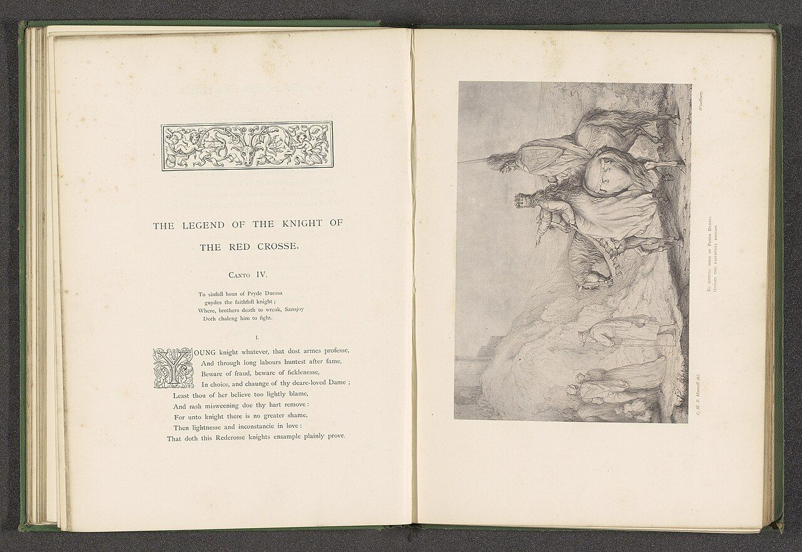
Duessa leads Redcrosse to the House of Prideafter a 19th-century drawing · Rijksmuseum, Amsterdam
iiWho after that he had fair Una lorn,Through light misdeeming of her loialtie,And false Duessa in her stead had borne,Called Fidess’, and so suppos’d to be;Long with her traveild, till at last they seeA goodly building, bravely garnished,The house of mighty Prince it seem’d to be:And towards it a broad high way that led,All bare through peoples feet, which thither traveiled.
iiiGreat troupes of people traveild thitherwardBoth day and night, of each degree and place,But few returned, having scaped hard,With baleful beggerie, or foul disgrace,Which ever after in most wretched case,Like loathsome lazars, by the hedges lay.Thither Duessa bad him bend his pace:For she is weary of the toilsome way,And also nigh consumed is the ling’ring day.
ivA stately Palace built of squared brick,Which cunningly was without morter laid,Whose walls were high, but nothing strong, nor thick,And golden foil all over them display’d,That purest skye with brightness they dismay’d:High lifted up were many lofty towers,And goodly galleries fare over laid,Full of fair windows, and delightful bowers;And on the top a Dial told the timely hours.
vIt was a goodly heap for to behold,And spake the praises of the workmans wit;But full great pity, that so fair a mouldDid on so weak foundation ever sit:For on a sandy hill, that still did flit,And fall away, it mounted was full hie,That every breath of heaven shaked it:And all the hinder parts, that few could spy,Were ruinous and old, but painted cunningly.
viArrived there they passed in forth right;For still to all the gates stood open wide,Yet charge of them was to a Porter hightCall'd Maluenù, who entrance none denied:Thence to the hall, which was on every sideWith rich array and costly arras dight:Infinite sorts of people did abideThere waiting long, to win the wished sightOf her, that was the Lady of that Palace bright.
viiBy them they pass, all gazing on them round,And to the Presence mount; whose glorious viewTheir frail amazed senses did confound:In living Princes court none ever knewSuch endless richesse, and so sumptuous show;Ne Persia self, the norse of pompous prideLike ever saw. And there a noble crewOf Lords and Ladies stood on every side,Which with their presence fair, the place much beautified.
viiiHigh above all a cloth of State was spread,And a rich throne, as bright as sunny day,On which there sate most brave embellishedWith royal robes and gorgeous array,A maiden Queen, that shone as Titans ray,In glist’ring gold, and peerless precious stone:Yet her bright blazing beauty did assayTo dim the brightness of her glorious throne,As envying her self, that too exceeding shone.
ixExceeding shone, like Phœbus fairest child,That did presume his fathers firry wayne,And flaming mouths of steeds unwonted wildThrough highest heaven with weaker hand to reign;Proud of such glory and advancement vain,While flashing beams do daze his feeble eyen,He leaves the welkin way most beaten plain,And rapt with whirling wheels, inflames the skyen,With fire not made to burn, but fairly for to shine.
xSo proud she shined in her Princely state,Looking to heaven; for earth she did disdain,And sitting high; for lowly she did hate:Lo underneath her scornful feet, was lainA dreadful Dragon with an hideous train,And in her hand she held a mirrhour bright,Wherein her face she often vewed fain,And in her self-lou’d semblance toke delight;For she was wondrous fair, as any living wight.
xiOf grisly Pluto she the daughter was,And sad Proserpina the Queen of hell;Yet did she think her peerless worth to pasThat parentage, with pride so did she swell,And thund’ring Jove, that high in heaven doth dwell,And wield the world, she claimed for her syr,Or if that any else did Jove excel:For to the highest she did still aspire,Or if ought higher were then that, did it desire.
xiiAnd proud Lucifera men did her call,That made her self a Queen, and crown’d to be,Yet rightful kingdom she had none at all,Ne heritage of native sovereignty,But did usurp with wrong and tyrannyUpon the scepter, which she now did hold:Ne rul’d her Realms with lawes, but policy,And strong advisement of six wizards old,That with their counsels bad her kingdom did uphold.
xiiiSoon as the Elfin knight in presence came,And false Duessa seeming Lady fair,A gentle Husher, Vanitie by nameMade room, and passage for them did prepaire:So goodly brought them to the lowest stairOf her high throne, where they on humble kneeMaking obeisance, did the cause declare,Why they were come, her royal state to see,To prove the wide report of her great Maiestee.
xivWith lofty eyes, half loth to loke so low,She thanked them in her disdainful wise,Ne other grace vouchsafed them to showOf Princesse worthy, scars them bad arise.Her Lords and Ladies all this while deviseThemselves to setten forth to strangers sight:Some frounce their curled hair in courtly guise,Some prancke their ruffes, and others trimly dightTheir gay attire: each others greater pride does spite.
xvGoodly they all that knight do entertain,Right glad with him to have increas’d their crew:But to Duess’ each one himself did painAll kindness and fair courtesy to show;For in that court whilom her well they knew:Yet the stout Faerie monist the middest crowdThought all their glory vain in knightly view,And that great Princesse too exceeding prow’d,That to strange knight no better countenance allow’d.
xviSudden upriseth from her stately placeThe royal Dame, and for her coach doth call:All hurtlen forth, and she with Princely pace,As fair Aurora in her purple pall,Out of the East the dawning day doth call:So forth she comes: her brightness broad doth blaze;The heaps of people thronging in the hall,Do ride each other, upon her to gaze:Her glorious glitterand light doth all mens eyes amaze.
xviiSo forth she comes, and to her coach does clime,Adorned all with gold, and garlands gay,That seem’d as fresh as Flora in her prime,And strove to match, in royal rich array,Great Junoes golden chair, the which they sayThe Gods stand gazing on, when she does rideTo Joves high house through heavens bras-paved wayDrawn of fair Pecocks, that excel in pride,And full of Argus eyes their tails dispredden wide.
xviiiBut this was drawn of six unequal beasts,On which her six sage Counsellours did ryde,Taught to obay their bestial behests,With like conditions to their kinds applied:Of which the first, that all the rest did guide,Was sluggish Idlenesse the norse of sin;Upon a slothful Ass he chose to ryde,Array’d in habit black, and amiss thin,Like to an holy Monck, the service to begin.
xixAnd in his hand his Portesse still he bare,That much was worn, but therein little red,For of devotion he had little care,Still drownd in sleep, and most of his days dead;Scars could he once uphold his heavy head,To looken, whether it were night or day:May seem the wayne was very evil led,When such an one had guiding of the way,That knew not, whether right he went, or else astray.
xxFrom worldly cares himself he did esloyne,And greatly shunned manly exercise,From every work he challenged essoyne,For contemplation sake: yet otherwise,His life he led in lawless riotise;By which he grew to grievous malady;For in his lustless limbs through evil guiseA shaking fever raignd continually:Such one was Idlenesse, first of this company.
xxiAnd by his side rode loathsome Gluttony,Deformed creature, on a filthy swine,His belly was up-blown with luxury,And eke with fatness swollen were his eyne,And like a Crane his neck was long and fyn,With which he swallow’d up excessive feast,For want whereof poor people oft did pyne;And all the way, most like a brutish beast,He spued up his gorge, that all did him detest.
xxiiIn green vine leaves he was right fitly clad;For other clothes he could not wear for heat,And on his head an ivy girland had,From under which fast trickled down the sweat:Still as he rode, he somewhat still did eat,And in his hand did bear a boozing can,Of which he supt so oft, that on his seatHis dronken corse he scars upholden can,In shape and life more like a monster, then a man.
xxiiiUnfit he was for any worldly thing,And eke unhable once to stire or go,Not meet to be of counsel to a king,Whose mind in meat and drink was drowned so,That from his friend he seldom knew his fo:Full of diseases was his carcass blew,And a dry dropsy through his flesh did flow:Which by misdiet daily greater grew:Such one was Gluttony, the second of that crew.
xxivAnd next to him rode lustful Lechery,Upon a bearded Goat, whose rugged hair,And whally eyes (the sign of gelosy,)Was like the person self, whom he did bear:Who rough, and black, and filthy did appear,Unseemly man to please fair Ladies eye;Yet he of Ladies oft was loved dear,When fairer faces were bid standen by:O who does know the bent of womens fantasy?
xxvIn a green gown he clothed was full fair,Which underneath did hide his filthiness,And in his hand a burning heart he bare,Full of vain follies, and new fanglenesse:For he was false, and fraught with fickleness,And learned had to love with secret lokes,And well could dance, and sing with ruefulness,And fortunes tell, and read in loving books,And thousand other ways, to bait his fleshly hokes.
xxviInconstant man, that loved all he saw,And lusted after all, that he did love,Ne would his looser life be tide to law,But joy’d weak wemens hearts to tempt and proveIf from their loyal loves he might then move;Which lewdness fil’d him with reproachful painOf that foul evil, which all men reprove,That rots the marrow, and consumes the braine:Such one was Lecherie, the third of all this train.
xxviiAnd greedy Avarice by him did ride,Upon a Camel loaden all with gold;Two iron coffers hung on either side,With precious metal full, as they might hold,And in his lap an heap of coin he told;For of his wicked pelf his God he made,And unto hell him self for money sold;Accursed usury was all his trade,And right and wrong ylike in equal ballance weigh’d.
xxviiiHis life was nigh unto deaths door yplast,And thread-bare cote, and cobbled shoes he ware,Ne scars good morsel all his life did taste,But both from back and belly still did spare,To fill his bags, and richesse to compare;Yet childe ne kinsman living had he noneTo leave them to; but thorough daily careTo get, and nightly fear to lose his own,He led a wretched life unto him self unknown.
xxixMost wretched wight, whom nothing might sufis,Whose greedy lust did lack in greatest store,Whose need had end, but no end covetise,Whose wealth was want, whose plenty made him pore,Who had enough, yet wished ever more;A vile disease, and eke in foot and handA grievous gout tormented him full sore,That well he could not touch, nor go, nor stand:Such one was Avarice, the fourth of this fair band.
xxxAnd next to him malicious Envie rode,Upon a ravenous wolfe, and still did chawBetween his canker’d teeth a venemous tod,That all the poison ran about his chaw;But inwardly he chawed his own mawAt neighbours wealth, that made him ever sad;For death it was, when any good he saw,And wept, that cause of weeping none he had,But when he heard of harm, he wexed wondrous glad.
xxxiAll in a kirtle of discolour’d sayHe clothed was, ypainted full of eyes;And in his bosom secretly there layAn hatful Snake, the which his tail uptiesIn many folds, and mortal sting implies.Still as he rode, he gnasht his teeth, to seeThose heaps of gold with gripple Covetise,And grudged at the great felicityOf proud Lucifera, and his own company.
xxxiiHe hated all good works and virtuous deeds,And him no less, that any like did use,And who with gracious bread the hungry feeds,His almes for want of faith he doth accuse;So every good to bad he doth abuse:And eke the verse of famous Poets wittHe does backebite, and spightfull poison spuesFrom leprous mouth on all, that ever writ:Such one vile Envie was, that fifty in row did sit.
xxxiiiAnd him beside rides fierce revenging Wrath,Upon a Lion, loth for to be led;And in his hand a burning brand he hath,The which he brandisheth about his head;His eyes did hurl forth sparkles fiery red,And stared stern on all, that him beheld,As ashes pale of hue and seeming dead;And on his dagger still his hand he held,Trembling through hasty rage, when choler in him sweld.
xxxivHis ruffin raiment all was stain’d with blood,Which he had spilt, and all to rags yrent,Through unaduized rashness woxen wood;For of his hands he had no governement,Ne car’d for blood in his avengement:But when the furious fit was overpast,His cruel facts he often would repent;Yet wilful man he never would forecast,How many mischieves should ensue his heedless hast.
xxxvFull many mischiefs follow cruel Wrath;Abhorred bloodshed, and tumultuous strife,Unmanly murder, and unthrifty scathe,Bitter despite, with rancours rusty knife,And fretting grief the enemy of life;All these, and many evils moe haunt ire,The swelling Splene, and Frenzy raging rife,The shaking Palsy, and Saint Fraunces fire:Such one was Wrath, the last of this ungodly tire.
xxxviAnd after all, upon the wagon beamRode Sathan, with a smarting whip in hand,With which he forward lasht the laesie teme,So oft as Slowth still in the mire did stand.Huge routs of people did about them band,Showting for joy, and still before their wayA foggy mist had covered all the land;And underneath their feet, all scattered layDead sculs and bones of men, whose life had gone astray.
xxxviiSo forth they marchen in this goodly sort,To take the solace of the open aire,And in fresh flouring fields themselves to sport;Amongst the rest rode that false Lady fair,The foul Duessa, next unto the chairOf proud Lucifera, as one of the train:But that good knight would not so nigh repair,Him self estranging from their joyance vain,Whose fellowship seem’d far unfit for warlike swain.
xxxviiiSo having solaced themselves a spaceWith pleasance of the breathing fields yfed,They back returned to the Princely Place;Whereas an errant knight in arms ycled,And heathnish shield, wherein with letters redWas writ Sans joy, they new arrived find:Enflam’d with fury and fiers hardy-head,He seem’d in heart to harbour thoughts unkind,And nourish bloody vengeance in his bitter mind.
xxxixWho when the shamed shield of slain Sans foyHe spied with that same Faery champions page,Bewraying him, that did of late destroyHis eldest brother, burning all with rageHe to him leapt, and that same envious gageOf victors glory from him snatch’d away:But th’Elfin knight, which ought that warlike wage,Disdain’d to loose the meed he won in fray,And him rencount’ring fierce, rescu’d the noble pray.
xlTherewith they gan to hurtlen greedily,Redoubted battle ready to darrayne,And clash their shields, and shake their swords on hi,That with their sturre they troubled all the train;Till that great Queen upon eternal painOf high displeasure, that ensewen might,Commanded them their fury to refrain,And if that either to that shield had right,In equal lists they should the morrow next it fight.
xliAh dearest Dame, (quoth then the Paynim bold,)Pardon the error of enraged wight,Whom great grief made forget the rains to holdOf reasons rule, to see this recreant knight,No knight, but treachour full of false despiteAnd shameful treason, who through guile hath slainThe prowest knight, that ever field did fight,Even stout Sans foy (O who can then refrain?)Whose shield he bears renuerst, the more to heap disdain.
xliiAnd to augment the glory of his guile,His dearest love the fair Fidessa loIs there possessed of the traitor vile,Who reaps the harvest sown by his foe,Sown in bloody field, and bought with woe:That brothers hand shall dearly well requiteSo be, O Queen, you equal favour show.Him little answer’d th’angry Elfin knight;He never meant with words, but swords to plead his right.
xliiiBut threw his gauntlet as a sacred pledge,His cause in combat the next day to try:So been they parted both, with hearts on edge,To be aveng’d each on his enemy.That night they pas in joy and jollity,Feasting and courting both in bower and hall;For Steward was excessive Gluttonie,That of his plenty poured forth to all;Which doen, the Chamberlain Slowth did to rest them call.
xlivNow whenas darksome night had all display’dHer coleblacke curtein over brightest skye,The warlike youths on dainty couches laid,Did chace away sweet sleep from sluggish eye,To muse on means of hoped victory.But whenas Morpheus had with leaden maceArrested all that courtly company,Up-rose Duessa from her resting place,And to the Paynims lodging comes with silent pace.
xlvWhom broad awake she finds, in troublous fit,Forecasting, how his foe he might annoy,And him amoves with speeches seeming fit:Ah dear Sans joy, next dearest to Sans foy,Cause of my new grief, cause of my new joy,Joyous, to see his image in mine eye,And greave’d, to think how foe did him destroy,That was the flower of grace and chevalrye;Lo his Fidessa to thy secret faith I fly.
xlviWith gentle words he can her fairly greet,And bad say on the secret of her heart.Then sighing soft, I learn that little sweetOft temper’d is (quoth she) with muchel smart:For since my breast was launch’d with lovely dartOf dear Sansfoy, I never joyed hour,But in eternal woes my weaker heartHave wasted, loving him with all my power,And for his sake have felt full many an heavy stowre.
xlviiAt last when perils all I weened past,And hop’d to reap the crop of all my care,Into new woes unweeting I was cast,By this false faitor, who unworthy wareHis worthy shield, whom he with guileful snareEntrapped slew, and brought to shameful grave.Me silly maid away with him he bare,And ever since hath kept in darksome cave,For that I would not yield, that to Sans-foy I gave.
xlviiiBut since fair Sun hath sperst that louring clow’d,And to my loathed life now shews some light,Under your beams I will me safely shrowd,From dreaded storm of his disdainful spite:To you th’inheritance belongs by rightOf brothers prays, to you eke longs his love.Let not his love, let not his restless sprightBe unreveng’d, that calls to you aboveFrom wand’ring Stygian shores, where it doth endless move.
xlixThereto said he, Fair Dame be nought dismay’dFor sorrows past; their grief is with them gone:Ne yet of present peril be afraid;For needless fear did never vantage none,And helpless hap it booteth not to mon.Dead is Sans-foy, his vital pains are past,Though greaved ghost for vengeance deep do groan:He lives, that shall him pay his dewties last,And guilty Elfin blood shall sacrifice in hast.
lO but I fear the fickle freaks (quoth she)Of fortune false, and odds of arms in field.Why dame (quoth he) what odds can ever be,Where both do fight alike, to win or yield?Yea but (quoth she) he bears a charmed shield,And eke enchanted arms, that none can perse,Ne none can wound the man, that does them wield.Charm’d or enchanted (answer’d he then ferce)I no whit reck, ne you the like need to reherce.
liBut fair Fidessa, sithens fortunes guile,Or enemies power hath now captived you,Return from whence ye came, and rest a whileTill morrow next, that I the Elf subdue,And with Sans-foyes dead dowry you endew.Ay me, that is a double death (she said)With proud foes sight my sorrow to renew:Where ever yet I be, my secrete aidShall follow you. So passing forth she him obaid.
Booke I · Holinesse
Canto V
❧
The faithful knight in equal field subdues his faithless foe, Whom false Duessa saves, and for his cure to hell does goe.
❧
ihe noble heart, that harbours virtuous thought,And is with child of glorious great intent,Can never rest, until it forth have broughtTh’eternall brood of glory excellent:Such restless passion did all night tormentThe flaming corage of that Faery knight,Devising, how that doughty turnamentWith greatest honour he atchieven might;Still did he wake, and still did watch for dawning light.
iiAt last the golden Oriental gateOf greatest heaven gan to open fair,And Phœbus fresh, as bridegrome to his mate,Came dancing forth, shaking his dewy hair:And hurl’d his glist’ring beams through gloomy aire.Which when the wakeful Elf perceiv’d, straight wayHe started up, and did him self prepaire,In sun-bright arms, and battailous array:For with that Pagan proud he combat will that day.
iiiAnd forth he comes into the commune hall,Where early waite him many a gazing eye,To weet what end to stranger knights may fall.There many Minstrales maken melody,To drive away the dull melancholy,And many Bardes, that to the trembling chordCan tune their timely voices cunningly,And many Chroniclers, that can recordOld loves, and wars for Ladies doen by many a Lord.
ivSoon after comes the cruel Sarrazin,In woven maile all armed warily,And sternly lokes at him, who not a pinDoes care for loke of living creatures eye.They bring them wines of Greece and Araby,And dainty spices fetch’d from furthest Ynd,To kindle heat of corage privily:And in the wine a solemn oath they bindT’obserue the sacred lawes of arms, that are assynd.
vAt last forth comes that far renowned Queen,With royal pomp and Princely majesty;She is ybrought unto a paled green,And placed under stately canapee,The warlike feats of both those knights to see.On th’other side in all mens open viewDuessa placed is, and on a treeSans-foy his shield is hang’d with bloody hue:Both those the lawrell garlands to the victor dew.
viA shrilling trompet sownded from on hye,And unto battaill bad themselves address:Their shining shields about their wrests they tye,And burning blades about their heads do bless,The instruments of wrath and heaviness:With greedy force each other doth assail,And strike so fiercely, that they do impressDeep dinted furrows in the batter’d maile;The iron walls to ward their blows are weak and frail.
viiThe Sarrazin was stout, and wondrous strong,And heaped blows like iron hammers great:For after blood and vengeance he did long.The knight was fiers, and full of youthly heat:And doubled strokes, like dreaded thunders threat:For all for prays and honour he did fight.Both stricken strike, and beaten both do beat,That from their shields forth flyeth firry light,And helmets hewen deep, show marks of eithers might.
viiiSo th’one for wrong, the other strives for right:As when a Griffon seized of his pray,A Dragon fiers encountreth in his flight,Through widest ayre making his idle way,That would his rightful ravine rend away:With hideous horror both together smite,And souse so sore, that they the heavens affray:The wise Southsayer seeing so sad sight,Th’amazed vulgar tels of wars and mortal fight.
ixSo th’one for wrong, the other strives for right,And each to deadly shame would drive his foe:The cruel steel so greedily doth bightIn tender flesh, that streams of blood down flow,With which the arms, that erst so bright did show,Into a pure vermillion now are died:Great ruth in all the gazers hearts did grow,Seeing the gored wounds to gape so wide,That victory they dare not wish to either side.
xAt last the Paynim chanc’d to cast his eye,His sudden eye, flaming with wrathful fire,Upon his brothers shield, which hung thereby:Therewith redoubled was his raging ire,And said, Ah wretched son of woeful syr,Doest thou sit wailing by black Stygian lake,Whilst here thy shield is hang’d for victors hire,And sluggish german doest thy forces slake,To after-send his foe, that him may overtake?
xiGoe caitiff Elf, him quickly overtake,And soon redeem from his long wand’ring woe;Goe guilty ghost, to him my message make,That I his shield have quit from dying foe.Therewith upon his crest he stroke him so,That twice he reeled, ready twice to fall;End of the doubtful battle deemed thoThe lookers on, and low’d to him gan callThe false Duessa, Thine the shield, and I, and all.
xiiSoon as the Faerie heard his Lady speak,Out of his swowning dream he gan awake,And quick’ning faith, that erst was woxen weak,The creeping deadly cold away did shake:Tho mov’d with wrath, and shame, and Ladies sake,Of all at once he cast aveng’d to be,And with so’exceeding fury at him strake,That forced him to stoup upon his knee;Had he not stooped so, he should have cloven be.
xiiiAnd to him said, Goe now proud Miscreant,Thy self thy message do to german dear,Alone he wand’ring thee too long doth want:Goe say, his foe thy shield with his doth bear.Therewith his heavy hand he high gan rear,Him to have slain; when lo a darksome clow’dUpon him fell: he no where doth appear,But vanisht is. The Elf him calls alow’d,But answer none receives: the darkness him does shrowd.
xivIn haste Duessa from her place arose,And to him running said, O prowest knight,That ever Lady to her love did chose,Let now abate the terror of your might,And quench the flame of furious despite,And bloody vengeance; lo th’infernall powersCovering your foe with cloud of deadly night,Have borne him hence to Plutoes baleful bowers.The conquest yours, I yours, the shield, and glory yours.
xvNot all so satisfied, with greedy eyeHe sought all round about, his thirsty bladeTo bath in blood of faithless enemy;Who all that while lay hid in secret shade:He stands amazed, how he thence should fade.At last the trumpets Triumph sound on hie,And running Heralds humble homage made,Greeting him goodly with new victory,And to him brought the shield, the cause of enmity.
xviWherewith he goethe to that sovereign Queen,And falling her before on lowly knee,To her makes present of his service seen:Which she accepts, with thanks, and goodly gree,Greatly aduauncing his gay chevalree.So marcheth home, and by her takes the knight,Whom all the people follow with great glee,Shouting, and clapping all their hands on hight,That all the aire it fils, and flies to heaven bright.
xviiHome is he brought, and laid in sumptuous bed:Where many skilful leaches him abide,To salue his hurts, that yet still freshly bled.In wine and oil they wash his wounds wide,And softly can embalm on every side.And all the while, most heavenly melodyAbout the bed sweet music did divide,Him to beguile of grief and agony:And all the while Duessa wept full bitterly.
xviiiAs when a weary traveller that straysBy muddy shore of broad seven-mouthed Nile,Unweeting of the perilous wand’ring ways,Doth meet a cruel crafty Crocodile,Which in false grief hiding his harmful guile,Doth weep full sore, and sheddeth tender tears:The foolish man, that pities all this whileHis mournful plight, is swallow’d up unwares,Forgetful of his own, that minds anothers cares.
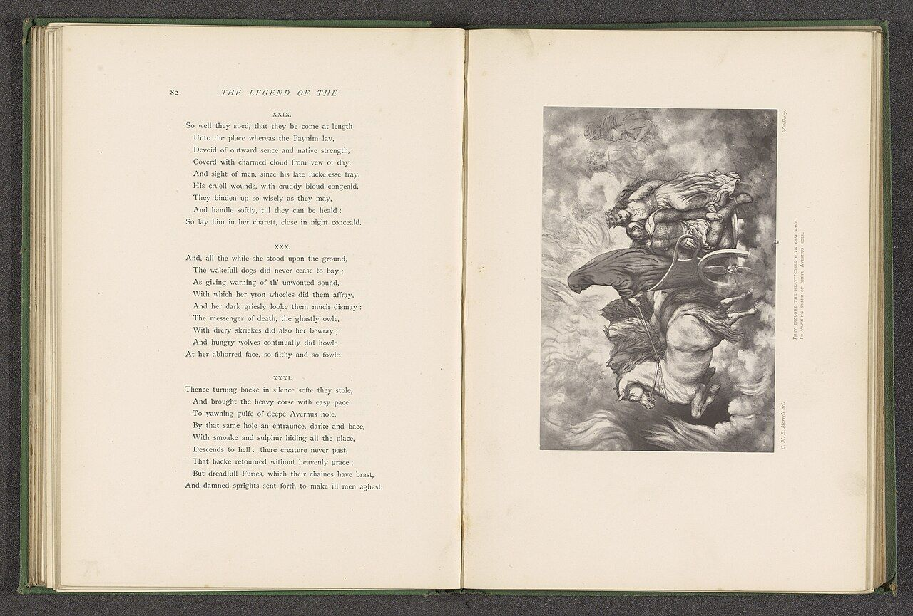
Duessa brings Sansjoy to the underworldafter a 19th-century drawing · Rijksmuseum, Amsterdam
xixSo wept Duessa until eventide,That shining lamps in Joves high house were light:Then forth she rose, ne lenger would abide,But comes unto the place, where th’Hethen knightIn slumb’ring swoon’d nigh void of vital spright,Lay cover’d with inchaunted cloud all day:Whom when she found, as she him left in plight,To wail his woful case she would not stay,But to the eastern coast of heaven makes speedy way.
xxWhere grisly Night, with visage deadly sad,That Phœbus cheerful face durst never view,And in a foul black pitchy mantle clad,She finds forth coming from her darksome mew,Where she all day did hide her hated hue.Before the door her iron charet stood,Already harnessed for journey new;And coleblacke steeds yborne of hellish brood,That on their rusty bits did champ, as they were wood.
xxiWho when she saw Duessa sunny bright,Adorn’d with gold and jewels shining clear,She greatly grew amazed at the sight,And th’unacquainted light began to fear:For never did such brightness there appear,And would have back retired to her cave,Until the witches speech she gan to hear,Saying, Yet O thou dreaded Dame, I craveAbide, till I have told the message, which I have.
xxiiShe stay’d, and forth Duessa gan proceed,O thou most ancient Grandmother of all,More old than Jove, whom thou at first didst breed,Or that great house of Gods cælestiall,Which wast begot in Dæmogorgons hall,And sawst the secrets of the world unmade,Why suffredst thou thy Nephews dear to fallWith Elfin sword, most shamefully betrade?Lo where the stout Sansioy doth sleep in deadly shade.
xxiiiAnd him before, I saw with bitter eyesThe bold Sansfoy shrink underneath his spear;And now the pray of fowles in field he lyes,Nor wayld of friends, nor laid on groaning bear,That whilom was to me too dearly dear.O what of Gods then boots it to be borne,If old Aveugles sons so evil hear?Or who shall not great Nightes children scorn,When two of three her Nephews are so foul forlorn.
xxivUp then, up dreary Dame, of darkness Queen,Go gather up the reliques of thy race,Or else goe them avenge, and let be seen,That dreaded Night in brightest day hath place,And can the children of fair light deface.Her feeling speeches some compassion movedIn heart, and change in that great mothers face:Yet pity in her heart was never provedTill then: for evermore she hated, never loved.
xxvAnd said, Dear daughter rightly may I rewThe fall of famous children borne of me,And good successes, which their foes ensue:But who can turn the stream of destine,Or break the chain of strong necessity,Which fast is tyde to Joves eternal seat?The sons of Day he favoureth, I see,And by my ruins thinks to make them great:To make one great by others loss, is bad excheat.
xxviYet shall they not escape so freely all;For some shall pay the price of others guilt:And he the man that made Sansfoy to fall,Shall with his own blood price that he hath spilt.But what art thou, that telst of Nephews kilt?I that do seem not I, Duessa am,(Quoth she) how ever now in garments gilt,And gorgeous gold array’d I to thee came;Duessa I, the daughter of Deceipt and Shame.
xxviiThen bowing down her aged back, she kistThe wicked witch, saying; In that fair faceThe false resemblance of Deceipt, I wistDid closely lurk; yet so true-seeming graceIt carried, that I scars in darksome placeCould it discern, though I the mother beOf falshood, and root of Duessaes race.O welcome child, whom I have long’d to see,And now have seen unwares. Lo now I go with thee.
xxviiiThen to her iron wagon she betakes,And with her bears the foul welfavourd witch:Through mirksome aire her ready way she makes.Her twyfold Teme, of which two black as pitch,And two were browne, yet each to each unlich,Did softly swim away, ne ever stamp,Unless she chanc’d their stubborn mouths to twitch;Then foaming tarre, their bridles they would champ,And trampling the fine element, would fiercely ramp.
xxixSo well they sped, that they be come at lengthUnto the place, whereas the Paynim lay,Devoid of outward sense, and native strength,Cover’d with charmed cloud from view of day,And sight of men, since his late luckless fray.His cruel wounds with cruddy blood congealed,They binden up so wisely, as they may,And handle softly, till they can be healed:So lay him in her charet, close in night concealed.
xxxAnd all the while she stood upon the ground,The wakeful dogs did never cease to bay,As giving warning of th’unwonted sound,With which her iron wheels did them affray,And her dark grisly loke them much dismay;The messenger of death, the ghastly OwlWith dreary shrieks did also her bewray;And hungry Wolves continually did howl,At her abhorred face, so filthy and so foul.
xxxiThence turning back in silence soft they stole,And brought the heavy corse with easy paceTo yawning gulf of deep Avernus hole.By that same hole an entrance dark and baseWith smoake and sulphur hiding all the place,Descends to hell: there creature never past,That back returned without heavenly grace;But dreadful Furies, which their chaines have brast,And damned sprights sent forth to make ill men aghast.
xxxiiBy that same way the direful dames do driveTheir mournful charet, fil’d with rusty blood,And down to Plutoes house are come bilive:Which passing through, on every side them stoodThe trembling ghosts with sad amazed mood,Chatt’ring their iron teeth, and staring wideWith stony eyes; and all the hellish broodOf fiends infernal flock’d on every side,To gaze on earthly wight, that with the Night durst ride.
xxxiiiThey pas the bitter waves of Acheron,Where many souls sit wailing woefully,And come to fiery flood of Phlegeton,Whereas the damned ghosts in torments fry,And with sharpe shrilling shrieks do bootless cry,Cursing high Jove, the which them thither sent.The house of endless pain is built thereby,In which ten thousand sorts of punishmentThe cursed creatures do eternally torment.
xxxivBefore the threshold dreadful CerberusHis three deformed heads did lay along,Curled with thousand adders venemous,And lilled forth his bloody flaming tongue:At them he gan to rear his bristles strong,And felly gnarr, until days enemyDid him appease; then down his tail he hungAnd suffered them to passen quietly:For she in hell and heaven had power equally.
xxxvThere was Ixion turned on a wheel,For daring tempt the Queen of heaven to sin;And Sisyphus an huge round stone did reelAgainst an hill, ne might from labour lin;There thirsty Tantalus hung by the chin;And Tityus fed a vulture on his maw;Typhœus joints were stretched on a gin,Theseus condemned to endless sloth by law,And fifty sisters water in leak vessels draw.
xxxviThey all beholding worldly wights in place,Leave off their work, unmindful of their smart,To gaze on them; who forth by them do pace,Till they be come unto the furthest part:Where was a Cave ywrought by wondrous art,Deep, dark, uneasy, doleful, comfortless,In which sad Æsculapius fare a partEmprisond was in chaines remediless,For that Hippolytus rent corse he did redress.
xxxviiHippolytus a jolly huntsman was,That wont in charet chace the foaming Bore;He all his Peers in beauty did surpass,But Ladies love as loss of time forbore:His wanton stepdame loved him the more,But when she saw her offer’d sweets refusedHer love she turn’d to hate, and him beforeHis father fierce of treason false accused,And with her gealous termes his open ears abused.
xxxviiiWho all in rage his Sea-god syr besought,Some cursed vengeance on his son to cast:From surging gulf two monsters straight were brought,With dread whereof his chasing steeds aghast,Both charet swift and huntsman overcast.His goodly corps on ragged cliffs yrent,Was quite dismember’d, and his members chasteScattered on every mountain, as he went,That of Hippolytus was left no moniment.
xxxixHis cruel stepdame seeing what was donne,Her wicked days with wretched knife did end,In death avowing th’innocence of her son.Which hearing his rash Syr, began to rendHis hair, and hasty tongue, that did offend:Tho gathering up the relicks of his smartBy Dianes means, who was Hippolyts frend,Them brought to Æsculape, that by his artDid heal them all again, and joined every part.
xlSuch wondrous science in mans wit to rainWhen Jove aviz’d, that could the dead revive,And fates expired could renew again,Of endless life he might him not deprive,But unto hell did thrust him down alive,With flashing thunderbolt ywounded sore:Where long remaining, he did always striveHimself with salves to health for to restore,And slake the heavenly fire, that raged evermore.
xliThere ancient Night arriving, did alightFrom her nigh weary wain, and in her armsTo Æsculapius brought the wounded knight:Whom having softly disarayd of arms,Tho gan to him discover all his harms,Beseeching him with prayer, and with praise,If either salves, or oils, or herbs, or charmsA fordone wight from door of death mote raise,He would at her request prolong her nephews days.
xliiAh Dame (quoth he) thou temptest me in vain,To dare the thing, which daily yet I rew,And the old cause of my continued painWith like attempt to like end to renew.Is not enough, that thrust from heaven dewHere endless penance for one fault I pay,But that redoubled crime with vengeance newThou biddest me to eek? Can Night defrayThe wrath of thund’ring Jove, that rules both night and day?
xliiiNot so (quoth she) but sith that heavens kingFrom hope of heaven hath thee excluded quite,Why fearest thou, that canst not hope for thing,And fearest not, that more thee hurten might,Now in the power of everlasting Night?Goe to then, O thou fare renowned sonOf great Apollo, show thy famous mightIn medicine, that else hath to thee wonGreat pains, and greater praise, both never to be donne.
xlivHer words prevail’d: And then the learned leachHis cunning hand gan to his wounds to lay,And all things else, the which his art did teach:Which having seen, from thence arose awayThe mother of dread darkness, and let stayAveugles son there in the leaches cure,And back returning toke her wonted way,To rune her timely race, whilst Phœbus pureIn western waves his weary wagon did recure.
xlvThe false Duessa leaving noyous Night,Return’d to stately palace of dame Pride;Where when she came, she found the Faery knightDeparted thence, albe his wounds wideNot throughly heald, unready were to ride.Good cause he had to hasten thence away;For on a day his wary Dwarf had spied,Where in a dungeon deep huge numbers layOf caitiff wretched thralls, that wailed night and day.
xlviA rueful sight, as could be seen with eye;Of whom he learned had in secret wiseThe hidden cause of their captivity,How mortgaging their lives to Covetise,Through wastfull Pride, and wanton Riotise,They were by law of that proud TyrannessProvokt with Wrath, and Envies false surmise,Condemned to that Dungeon merciless,Where they should live in woe, and die in wretchedness.
xlviiThere was that great proud king of Babylon,That would compel all nations to adore,And him as only God to call upon,Till through celestial dome thrown out of door,Into an Oxy he was transform’d of yore:There also was king Crœsus, that enhaunstHis heart too high through his great riches store;And proud Antiochus, the which aduaunstHis cursed hand gainst God, and on his altars daunst.
xlviiiAnd them long time before, great Nimrod was,That first the world with sword and fire warray’d;And after him old Ninus fare did pasIn princely pomp, of all the world obayd;There also was that mighty Monarch laidLow under all, yet above all in pride,That name of native syr did foul upbraid,And would as Ammons son be magnified,Till scorn’d of God and man a shameful death he did.
xlixAll these together in one heap were thrown,Like carkases of beasts in butchers stall.And in another corner wide were strownThe antique ruins of the Romaines fall:Great Romulus the Grandsire of them all,Proud Tarquin, and too lordly Lentulus,Stout Scipio, and stubborn Hanniball,Ambitious Sylla, and stern Marius,High Cæsar, great Pompey, and fierce Antonius.
lAmongst these mighty men were wemen mixt,Proud wemen, vain, forgetful of their yoke:The bold Semiramis, whose sides transfixtWith sons own blade, her foul reproaches spoke;Fair Sthenobœa, that her self did chokeWith wilful cord, for wanting of her will;High minded Cleopatra, that with strokeOf Asps sting her self did stoutly kill:And thousands moe the like, that did that dungeon fill.
liBesides the endless routs of wretched thralls,Which thither were assembled day by day,From all the world after their woeful falls,Through wicked pride, and wasted wealths decay.But most of all, which in that Dungeon layFell from high Princes courts, or Ladies bowers,Where they in idle pomp, or wanton play,Consumed had their goods, and thriftless hours,And lastly thrown themselves into these heavy stowres.
liiWhose case when as the careful Dwarf had told,And made ensample of their mournful sightUnto his maister, he no lenger wouldThere dwell in peril of like painful plight,But early rose, and ere that dawning lightDiscovered had the world to heaven wide,He by a privy Postern toke his flight,That of no envious eyes he mote be spied:For doubtless death ensewd, if any him descried.
liiiScars could he footing find in that foul way,For many corses, like a great Lay-stallOf murder’d men which therein strowed lay,Without remorse, or decent funeral:Which all through that great Princesse pride did fallAnd came to shameful end. And them besideForth riding underneath the castell wall,A donghill of dead carkases he spied,The dreadful spectacle of that sad house of Pride.
Booke I · Holinesse
Canto VI
❧
From lawless lust by wondrous grace fayre Una is releas’d: Whom salvage nation does adore, and learns her wise behest.
❧
is when a ship, that flies fair under sail,An hidden rock escaped hath unwares,That lay in waite her wrack for to bewail,The Marriner yet half amazed staresAt peril past, and yet in doubt ne daresTo joy at his fool-happy oversight:So doubly is distress’d twixt joy and caresThe dreadless courage of this Elfin knight,Having escapt so sad ensamples in his sight.
iiYet sad he was that his too hasty speedThe fair Duess’ had forc’d him leave behind;And yet more sad, that Una his dear dreedHer truth had stain’d with treason so unkind;Yet crime in her could never creature find,But for his love, and for her own self sake,She wander’d had from one to other Ynd,Him for to seek, ne ever would forsake,Till her unwares the fierce Sansloy did overtake.
iiiWho after Archimagoes foul defeat,Led her away into a forrest wild,And turning wrathful fire to lustful heat,With beastly sin thought her to have defilde,And made the vassal of his pleasures vild.Yet first he cast by treaty, and by trains,Her to perswade, that stubborn fort to yilde:For greater conquest of hard love he gaines,That works it to his will, then he that it constrains.
ivWith fawning words he courted her a while,And looking lovely, and oft sighing sore,Her constant heart did tempt with diverse guile:But words, and lokes, and sighs she did abhor,As rock of Diamond steadfast evermore.Yet for to feed his firry lustful eye,He snatch’d the vel, that hung her face before;Then gan her beauty shine, as brightest skye,And burnt his beastly heart t’efforce her chastity.
vSo when he saw his flatt’ring arts to fail,And subtile engines bet from battery,With greedy force he gan the fort assail,Whereof he wend possessed soon to be,And win rich spoil of ransack’d chastetee.Ah heavens, that do this hideous act behold,And heavenly virgin thus outraged see,How can ye vengeance just so long withhold,And hurl not flashing flames upon that Paynim bold?
viThe piteous maiden careful comfortless,Does throw out thrilling shrieks, and shrieking cries,The last vain help of womens great distress,And with loud plaints importuneth the skies,That molten starrs do drop like weeping eyes;And Phœbus flying so most shameful sight,His blushing face in foggy cloud implies,And hides for shame. What wit of mortal wightCan now devise to quit a thrall from such a plight?
viiEternal providence exceeding thought,Where none appears can make her self a way:A wondrous way it for this Lady wrought,From Lyons claws to pluck the griped pray.Her shrill outcries and shrieks so loud did bray,That all the woods and forests did resown’d;A troupe of Faunes and Satyres far awayWithin the wood were dancing in a rownd,Whiles old Sylvanus slept in shady arber sown’d.
viiiWho when they heard that piteous strained voice,In hast forsook their rural merriment,And ran towards the far rebownded noyce,To weet, what wight so loudly did lament.Unto the place they come incontinent:Whom when the raging Sarrazin espied,A rude, misshapen, monstrous rabblement,Whose like he never saw, he durst not bide,But got his ready steed, and fast away gan ride.
ixThe wild woodgods arrived in the place,There find the virgin doleful desolate,With ruffled raiments, and fair blubber’d face,As her outrageous foe had left her late,And trembling yet through fear of former hate;All stand amazed at so uncouth sight,And gin to pity her unhappy state,All stand astonied at her beauty bright,In their rude eyes unworthy of so woeful plight.
xShe more amaz’d, in double dread doth dwell;And every tender part for fear does shake:As when a greedy Wolfe through hunger fellA seely Lamb fare from the flock does take,Of whom he means his bloody feast to make,A Lyon spies fast running towards him,The innocent pray in hast he does forsake,Which quit from death yet quakes in every limeWith change of fear, to see the Lyon loke so grim.
xiSuch fearful fit assay’d her trembling heart,Ne word to speak, ne joint to move she had:The salvage nation feel her secret smart,And read her sorrow in her count’nance sad;Their frowning forheads with rough horns yclad,And rustic horror all a side do lay,And gently grenning, show a semblance gladTo comfort her, and fear to put away,Their backward bent knees teach her humbly to obay.
xiiThe doubtful Damsel dare not yet commitHer single person to their barbarous truth,But still twixt fear and hope amaz’d does sit,Late learn’d what harm to hasty trust ensue’th,They in compassion of her tender youth,And wonder of her beauty sovereign,Are won with pity and unwonted ruth,And all prostrate upon the lowly plain,Do kiss her feet, and fawn on her with count’nance fain.
xiiiTheir hearts she ghesseth by their humble guise,And yields her to extremity of time;So from the ground she fearless doth arise,And walketh forth without suspect of crime:They all as glad, as birds of joyous Prime,Thence lead her forth, about her dancing round,Shouting, and singing all a shepherds rime,And with green branches strowing all the ground,Do worship her, as Queen, with olive garland cround.
xivAnd all the way their merry pipes they sound,That all the woods with doubled Echo ring,And with their horned feet do wear the ground,Leaping like wanton kids in pleasant Spring.So towards old Sylvanus they her bring;Who with the noys awaked, cometh out,To weet the cause, his weak steps governing,And aged limbs on Cypress staddle stout,And with an ivy twine his wast is girt about.
xvFar off he wonders, what them makes so glad,Or Bacchus merry fruit they did invent,Or Cybeles frantic rites have made them mad;They drawing nigh, unto their God presentThat flower of faith and beauty excellent.The God himself vewing that mirrhour rare,Stood long amaz’d, and burnt in his intent;His own fair Dryope now he thinks not fair,And Pholoe foul, when her to this he doth compaire.
xviThe woodborne people fall before her flat,And worship her as Goddess of the wood;And old Sylvanus self bethinks not, whatTo think of wight so fair, but gazing stood,In doubt to deem her borne of earthly brood;Sometimes Dame Venus self he seems to see,But Venus never had so sober mood;Sometimes Diana he her takes to be,But misseth bow, and shafts, and buskins to her knee.
xviiBy view of her he ginneth to reviveHis ancient love, and dearest Cyparisse,And calls to mind his portraiture alive,How fair he was, and yet not fair to this,And how he slew with glancing dart amissA gentle Hind, the which the lovely boyDid love as life, above all worldly bliss;For grief whereof the lad n’ould after joy,But pyn’d away in anguish and self-wild annoy.
xviiiThe woody Nymphs, fair HamadryadesHer to behold do thither rune apace,And all the troupe of light-foot Naiades,Flock all about to see her lovely face:But when they vewed have her heavenly grace,They envy her in their malicious mind,And fly away for fear of foul disgrace:But all the Satyres scorn their woody kind,And henceforth nothing fair, but her on earth they find.
xixGlad of such luck, the luckless lucky maid,Did her content to please their feeble eyes,And long time with that salvage people staid,To gather breath in many miseries.During which time her gentle wit she plies,To teach them truth, which worshipt her in vain,And made her th’Image of Idolatries;But when their bootless zeal she did restrainFrom her own worship, they her Ass would worship fain.
xxIt fortuned a noble warlike knightBy just occasion to that forrest came,To seek his kindred, and the lignage right,From whence he toke his well deserved name:He had in arms abroad won muchel fame,And fil’d far landes with glory of his might,Plain, faithful, true, and enemy of shame,And ever lou’d to fight for Ladies right,But in vain glorious frays he little did delight.
xxiA Satyrs son yborne in forrest wild,By strange adventure as it did betide,And there begotten of a Lady mild,Fair Thyamis the daughter of Labryde,That was in sacred bands of wedlock tydeTo Therion, a loose unruly swain;Who had more joy to raunge the forrest wide,And chase the salvage beast with busy payne,Then serve his Ladies love, and wast in pleasures vain.
xxiiThe forlorn maid did with loves longing burn,And could not lack her lovers company,But to the wood she goes, to serve her turn,And seek her spouse, that from her still does fly,And follows other game and venery:A Satyr chanc’d her wand’ring for to find,And kindling coals of lust in brutish eye,The loyal links of wedlock did unbind,And made her person thrall unto his beastly kind.
xxiiiSo long in secret cabin there he heldHer captive to his sensual desire,Till that with timely fruit her belly sweld,And bore a boy unto that salvage sire:Then home he suffer’d her for to retire,For ransome leaving him the late borne child;Whom till to ryper years he gan aspire,He noursled up in life and manners wild,Amongst wild beasts and woods, from lawes of men exilde.
xxivFor all he taught the tender imp, was butTo banish cowardize and bastard fear;His trembling hand he would him force to putUpon the Lyon and the rugged Bear,And from the she Bears teats her whelps to tear;And eke wild roaring Bulse he would him makeTo tame, and ryde their backs not made to bear;And the Robuckes in flight to overtake,That every beast for fear of him did fly and quake.
xxvThereby so fearless, and so fell he grew,That his own sire and maister of his guiseDid often tremble at his horrid view,And oft for dread of hurt would him advise,The angry beasts not rashly to despise,Nor too much to provoke; for he would learnThe Lyon stoup to him in lowly wise,(A lesson hard) and make the Libbard sternLeave roaring, when in rage he for revenge did earn.
xxviAnd for to make his power approved more,Wild beasts in iron yokes he would compel;The spotted Panther, and the tusked Bore,The Pardal swift, and the Tigre cruel;The Antelope, and Wolfe both fierce and fell;And them constrain in equal teme to draw.Such joy he had, their stubborn hearts to quell,And sturdy courage tame with dreadful aw,That his behest they feared, as a tyrans law.
xxviiHis loving mother came upon a dayUnto the woods, to see her little son;And chanc’d unwares to meet him in the way,After his sports, and cruel pastime donne,When after him a Lyonnesse did rune,That roaring all with rage, did low’d requereHer children dear, whom he away had won:The Lyon whelps she saw how he did bear,And lull in rugged arms, withouten childish fear.
xxviiiThe fearful Dame all quaked at the sight,And turning back, gan fast to fly away,Until with love revokt from vain affright,She hardly yet perswaded was to stay,And then to him these womanish words gan say;Ah Satyrane, my dearling, and my joy,For love of me leave off this dreadful play;To dally thus with death, is no fit toy,Go find some other play-fellows, mine own sweet boy.
xxixIn these and like delights of bloody gameHe trained was, till ryper years he raught,And there abode, whilst any beast of nameWalk’d in that forest, whom he had not taughtTo fear his force: and then his courage haughtDesir’d of forreine foemen to be known,And far abroad for strange adventures sought:In which his might was never overthrown,But through all Faery lond his famous worth was blown.
xxxYet evermore it was his manner fair,After long labours and adventures spent,Unto those native woods for to repair,To see his sire and offspring ancient.And now he thither came for like intent;Where he unwares the fairest Una found,Strange Lady, in so strange habiliment,Teaching the Satyrs, which her sat around,Trow sacred lore, which from her sweet lips did redound.
xxxiHe wonder’d at her wisedome heavenly rare,Whose like in womens wit he never knew;And when her courteous deeds he did compare,Gan her admire, and her sad sorrows rew,Blaming of Fortune, which such troubles threw,And joy’d to make proof of her crueltyOn gentle Dame, so hurtless, and so trow:Thenceforth he kept her goodly company,And learn’d her discipline of faith and verity.
xxxiiBut she all vow’d unto the Redcrosse knight,His wand’ring peril closely did lament,Ne in this new acquaintance could delight,But her dear heart with anguish did torment,And all her wit in secret counsels spent,How to escape. At last in privy wiseTo Satyrane she showed her intent;Who glad to gain such favour, gan devise,How with that pensive Maid he best might thence arise.
xxxiiiSo on a day when Satyrs all were gone,To do their service to Sylvanus old,The gentle virgin left behind aloneHe led away with courage stout and bold.Too late it was, to Satyrs to be told,Or ever hope recover her again:In vain he seeks that having cannot hold.So fast he carried her with careful pain,That they the woods are past, and come now to the plain.
xxxivThe better part now of the ling’ring day,They traveild had, when as they fare espiedA weary wight forwandring by the way,And towards him they gan in hast to ride,To weet of news, that did abroad betide,Or tidings of her knight of the Redcrosse.But he them spying, gan to turn aside,For fear as seem’d, or for some feigned loss;More greedy they of news, fast towards him do cross.
xxxvA silly man, in simple weeds forworn,And soil’d with dust of the long dried way;His sandals were with toilsome travel torn,And face all tan’d with scorching sunny ray,As he had traveild many a sommers day,Through boiling sands of Arabie and Ynde;And in his hand a Jacobs staff, to stayHis weary limbs upon: and eke behind,His scrip did hang, in which his needments he did bind.
xxxviThe knight approaching nigh, of him inquerdTidings of war, and of adventures new;But wars, nor new adventures none he herd.Then Una gan to ask, if ought he knew,Or heard abroad of that her champion trow,That in his armour bare a crosslet red.Aye me, Dear dame (quoth he) well may I rewTo tell the sad sight, which mine eyes have red:These eyes did see that knight both living and eke dead.
xxxviiThat cruel word her tender heart so thrild,That sudden cold did rune through every vain,And stony horror all her senses fil’dWith dying fit, that down she fell for pain.The knight her lightly reared up again,And comforted with courteous kind relief:Then won from death, she bad him tellen plainThe further process of her hidden grief;The lesser pangs can bear, who hath endur’d the chief.
xxxviiiThen gan the Pilgrim thus, I chanc’d this day,This fatal day, that shall I ever rew,To see two knights in travel on my way(A sori sight) arrange’d in battle new,Both breathing vengeance, both of wrathful hue:My fearful flesh did tremble at their strife,To see their blades so greedily imbrue,That drunk with blood, yet thristed after life:What more? the Redcrosse knight was slain with Paynim knife.
xxxixAh dearest Lord (quoth she) how might that be,And he the stoutest knight, that ever won?Ah dearest dame (quoth he) how might I seeThe thing, that might not be, and yet was donne?Where is (said Satyrane) that Paynims son,That him of life, and us of joy hath reft?Not far away (quoth he) he hence doth wonForeby a fountain, where I late him leftWashing his bloody wounds, that through the steel were cleft.
xlTherewith the knight thence marched forth in hast,Whiles Una with huge heaviness oppress’d,Could not for sorrow follow him so fast;And soon he came, as he the place had guess'd,Whereas that Pagan proud him self did rest,In secret shadow by a fountain side:Even he it was, that erst would have suppress’dFair Una: whom when Satyrane espied,With foul reproachful words he boldly him defied.
xliAnd said, Arise thou cursed Miscreant,That hast with knightless guile and trecherous trainFair knighthood foully shamed, and doest vauntThat good knight of the Redcrosse to have slain:Arise, and with like treason now maintainThy guilty wrong, or else thee guilty yield.The Sarrazin this hearing, rose amain,And catching up in hast his three square shield,And shining helmet, soon him buckled to the field.
xliiAnd drawing nigh him said, Ah misborn Elf,In evil hour thy foes thee hither sent,Anothers wrongs to wreak upon thy self:Yet ill thou blamest me, for having blentMy name with guile and traiterous intent;That Redcrosse knight, perdie, I never slew,But had he been, where erst his arms were lent,Th’enchaunter vain his error should not rew:But thou his error shalt, I hope now proven trow.
xliiiTherewith they gan, both furious and fell,To thunder blows, and fiersly to assailEach other bent his enemy to quell,That with their force they pierc’d both plate and maile,And made wide furrows in their fleshes frail,That it would pity any living eye.Large floods of blood adown their sides did raile;But floods of blood could not them satisfy:Both hunger’d after death: both chose to win, or die.
xlivSo long they fight, and fell revenge pursue,That fainting each, themselves to breathen let,And oft refreshed, battle oft renue:As when two Bores with rancling malice met,Their gory sides fresh bleeding fiercely fret,Til breathless both themselves aside retire,Where foaming wrath, their cruel tusks they whet,And trample th’earth, the whiles they may respire;Then back to fight again, new breathed and entire.
xlvSo fiersly, when these knights had breathed once,They gan to fight return, increasing moreTheir puissant force, and cruel rage at once,With heaped strokes more hugely, then before,That with their drerie wounds and bloody goreThey both deformed, scarsely could be known.By this sad Una fraught with anguish sore,Led with their noise, which through the aire was thrown,Arriv’d, where they in erth their fruitless blood had sown.
xlviWhom all so soon as that proud SarrazinEspied, he gan revive the memoryOf his lewd lusts, and late attempted sin,And left the doubtful battle hastily,To catch her, newly offer’d to his eye:But Satyrane with strokes him turning, staid,And sternly bad him other business ply,Then hunt the steps of pure unspotted Maid:Wherewith he all enrag’d, these bitter speeches said.
xlviiO foolish faeries son, what fury madHath thee incenst, to hast thy doleful fate?Were it not better, I that Lady had,Then that thou hadst repented it too late?Most senseless man he, that himself doth hate,To love another. Lo then for thine aidHere take thy lovers token on thy pate.So they to fight; the whiles the royal MaidFled fare away, of that proud Paynim sore afraid.
xlviiiBut that false Pilgrim, which that leasing told,Being in deed old Archimage, did stayIn secret shadow, all this to behold,And much reioyced in their bloody fray:But when he saw the Damsel pass awayHe left his stond, and her pursewd apace,In hope to bring her to her last decay.But for to tell her lamentable case,And eke this battles end, will need another place.
Booke I · Holinesse
Canto VII
❧
The Redcrosse knight is captive made By Giant proud oppress’d, Prince Arthur meets with Una greatly with those news distress’d.
❧
ihat man so wise, what earthly wit so ware,As to descry the crafty cunning train,By which deceipt doth mask in visor fair,And cast her colours dyed deep in graine,To seem like Truth, whose shape she well can fain,And fitting gestures to her purpose frame,The guiltless man with guile to entertain?Great maistres of her art was that false Dame,The false Duessa, cloaked with Fidessaes name.
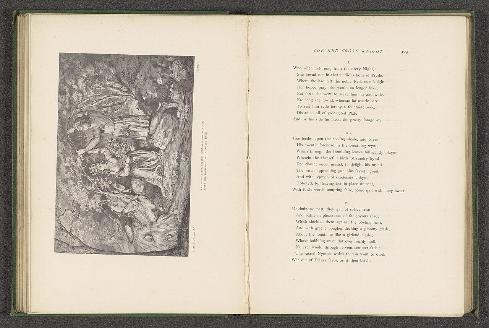
Redcrosse and Duessa beside the fountainafter a 19th-century drawing · Rijksmuseum, Amsterdam
iiWho when returning from the drery Night,She fownd not in that perilous house of Pryde,Where she had left, the noble Redcrosse knight,Her hoped pray, she would no lenger bide,But forth she went, to seek him far and wide.Ere long she fownd, whereas he weary sate,To rest him self, foreby a fountain side,Disarmed all of iron-coted Plate,And by his side his steed the grassy forage ate.
iiiHe feeds upon the cooling shade, and bayesHis sweaty forehead in the breathing wind,Which through the trembling leaves full gently playsWherein the cherefull birds of sundry kindDo chaunt sweet musick, to delight his mind:The Witch approaching gan him fairly greet,And with reproach of carelessness unkindUpbraid, for leaving her in place unmeet,With foul words temp’ring fair, sour gall with hony sweet.
ivUnkindness past, they gan of solace treat,And bathe in pleasance of the joyous shade,Which shielded them against the boiling heat,And with green boughs decking a gloomy glade,About the fountain like a garland made;Whose bubbling wave did ever freshly well,Ne ever would through fervent sommer fade:The sacred Nymph, which therein wont to dwell,Was out of Dianes favour, as it then befell.
vThe cause was this: one day when Phœbe fayreWith all her band was following the chace,This Nymph, quite tyr’d with heat of scorching ayreSat down to rest in middest of the race:The goddess wroth gan foully her disgrace,And bad the waters, which from her did flow,Be such as she her self was then in place.Thenceforth her waters waxed dull and slow,And all that drunk thereof, did faint and feeble grow.
viHereof this gentle knight unweeting was,And lying down upon the sandy grail,Drunk of the stream, as clear as crystal glaze;Eftsoons his manly forces gan to fail,And mighty strong was turn’d to feeble frail.His changed powers at first themselves not felt,Till crudled cold his corage gan assail,And cheerful blood in faintness chill did melt,Which like a fever fit through all his body swelt.
viiYet goodly court he made still to his Dame,Pour'd out in loosnesse on the grassy grown’d,Both carless of his health, and of his fame:Till at the last he heard a dreadful sown’d,Which through the wood loud bellowing, did rebownd,That all the earth for terror seem’d to shake,And trees did tremble. Th’Elfe therewith astownd,Upstarted lightly from his looser make,And his unready weapons gan in hand to take.
viiiBut ere he could his armour on him dight,Or get his shield, his monstrous enemyWith sturdy steps came stalking in his sight,An hideous Gent horrible and hye,That with his tallness seem’d to threat the skye,The ground eke groaned under him for dreed;His living like saw never living eye,Ne durst behold: his stature did exceedThe hight of three the tallest sons of mortal seed.
ixThe greatest Earth his uncouth mother was,And blust’ring Æolus his boasted sire,Who with his breath, which through the world doth pas,Her hollow womb did secretly inspire,And fil’d her hidden caves with stormy ire,That she conceiv’d; and trebling the dew time,In which the wombs of women do expire,Brought forth this monstrous mass of earthly slime,Puft up with empty wind, and fil’d with sinful crime.
xSo grown great through arrogant delightOf th’high descent, whereof he was yborne,And through presumption of his matchless might,All other powers and knighthood he did scorn.Such now he marcheth to this man forlorn,And left to loss: his stalking steps are staidUpon a snaggy Oke, which he had tornOut of his mothers bowels, and it madeHis mortal mace, wherewith his foemen he dismayde.
xiThat when the knight he spied, he gan advanceWith huge force and insupportable main,And towards him with dreadful fury prance;Who hapless, and eke hopeless, all in vainDid to him pace, sad battle to darrayne,Disarm’d, disgrac’d, and inwardly dismayde,And eke so faint in every joint and vain,Through that frail fountain, which him feeble made,That scarsely could he weald his bootless single blade.
xiiThe Gent stroke so mainly merciless,That could have overthrown a stony tower,And were not heavenly grace, that him did bless,He had been pouldred all, as thin as flower:But he was wary of that deadly stowre,And lightly lept from underneath the blow:Yet so exceeding was the villeins power,That with the wind it did him overthrow,And all his senses stound, that still he lay full low.
xiiiAs when that divelish iron Engin wroughtIn deepest Hell, and fram’d by Furies skill,With windy Nitre and quick Sulphur fraught,And ram’d with bullet round, ordain’d to kill,Conceiveth fire, the heavens it doth fillWith thund’ring noys, and all the ayre doth choke,That none can breath, nor see, nor hear at will,Through smouldry cloud of duskish stincking smoke,That th’onely breath him daunts, who hath escapt the stroke.
xivSo daunted when the Gent saw the knight,His heavy hand he heaved up on hye,And him to dust thought to have batter’d quite,Until Duessa loud to him gan cry;O great Orgoglio, greatest under skye,O hold thy mortal hand for Ladies sake,Hold for my sake, and do him not to die,But vanquisht thine eternal bondslave make,And me thy worthy meed unto thy Leman take.
xvHe hearken’d, and did stay from further harms,To gain so goodly guerdon, as she spake:So willingly she came into his arms,Who her as willingly to grace did take,And was possessed of his new found make.Then up he toke the slumber’d senseless corse,And ere he could out of his swoon awake,Him to his castle brought with hasty forse,And in a Dungeon deep him threw without remorse.
xviFrom that day forth Duessa was his dear,And highly honour’d in his haughty eye,He gave her gold and purple pall to wear,And triple crown set on her head full hye,And her endow’d with royal maiestye:Then for to make her dreaded more of men,And peoples hearts with awful terror tye,A monstrous beast ybred in filthy fenHe chose, which he had kept long time in darksome den.
xviiSuch one it was, as that renowned SnakeWhich great Alcides in Stremona slew,Long foster’d in the filth of Lerna lake,Whose many heads out budding ever new,Did breed him endless labour to subdue:But this same Monster much more ugly was;For seven great heads out of his body grew,An iron breast, and back of scaly bras,And all embrewd in blood, his eyes did shine as glaze.
xviiiHis tail was stretched out in wondrous length,That to the house of heavenly gods it raught,And with extorted power, and borrow’d strength,The ever-burning lamps from thence it brought,And prowdly threw to ground, as things of nought;And underneath his filthy feet did treadThe sacred things, and holy hests foretaught.Upon this dreadful Beast with sevenfold headHe set the false Duessa, for more aw and dread.
xixThe woeful Dwarf, which saw his maisters fall,Whiles he had keeping of his grazing steed,And valiant knight become a caitiff thrall,When all was past, toke up his forlorn weed,His mighty armour, missing most at need;His silver shield, now idle maisterlesse;His poynant spear, that many made to bleed,The rueful moniments of heaviness,And with them all departs, to tell his great distress.
xxHe had not travail’d long, when on the wayHe woeful Lady, woeful Una met,Fast flying from the Paynims greedy pray,Whilst Satyrane him from pursuit did let:Who when her eyes she on the Dwarf had set,And saw the signs, that deadly tidings spake,She fell to ground for sorrowful regret,And lively breath her sad breast did forsake,Yet might her piteous heart be seen to pant and quake.
xxiThe messenger of so unhappy newsWould fain have died: dead was his heart within,Yet outwardly some little comfort shews:At last recovering heart, he does beginTo rub her temples, and to chaufe her chin,And every tender part does toss and turn:So hardly he the flitted life does win,Unto her native prison to retorn:Then gins her grieved ghost thus to lament and mourne.
xxiiYe dreary instruments of doleful sight,That do this deadly spectacle behold,Why do ye lenger feed on loathed light,Or liking find to gaze on earthly mould,Sith cruel fates the careful threads unfold,The which my life and love together tyde?Now let the stony dart of senseless coldPerse to my heart, and pas through every side,And let eternal night so sad sight fro me hide.
xxiiiO lightsome day, the lampe of highest Jove,First made by him, mens wand’ring ways to guide,When darkness he in deepest dungeon drove,Henceforth thy hated face for ever hyde,And shut up heavens windows shining wide:For earthly sight can nought but sorrow breed,And late repentance, which shall long abide.Mine eyes no more on vanity shall feed,But seeled up with death, shall have their deadly meed.
xxivThen down again she fell unto the ground;But he her quickly reared up again:Thrice did she sink adown in deadly swoon’d,And thrice he her reviv’d with busy pain:At last when life recover’d had the rain,And over-wrestled his strong enemy,With foltring tongue, and trembling every vain,Tell on (quoth she) the woeful Tragedy,The which these reliques sad present unto mine eye.
xxvTempestuous fortune hath spent all her spite,And thrilling sorrow thrown his utmost dart;Thy sad tongue cannot tell more heavy plight,Then that I feel, and harbour in mine heart:Who hath endur’d the whole, can bear each part.If death it be, it is not the first wound,That launched hath my breast with bleeding smart.Begin, and end the bitter baleful stound;If less, then that I fear, more favour I have found.
xxviThen gan the Dwarf the whole discourse declare,The subtil trains of Archimago old;The wanton loves of false Fidessa fair,Bought with the blood of vanquisht Paynim bold:The wretched pair transform’d to treen mould;The house of Pride, and perils round about;The combat, which he with Sansioy did hold;The luckless conflict with the Giant stout,Wherein captive’d, of life or death he stood in doubt.
xxviiShe heard with patience all unto the end,And strove to maister sorrowful assay,Which greater grew, the more she did contend,And almost rent her tender heart in tway;And love fresh coals unto her fire did lay:For greater love, the greater is the loss.Was never Lady loved dearer day,Then she did love the knight of the Redcrosse;For whose dear sake so many troubles her did toss.
xxviiiAt last when fervent sorrow slaked was,She up arose, resolving him to findA live or dead: and forward forth doth pas,All as the Dwarf the way to her assynd:And evermore in constant careful mindhe fed her wound with fresh renewed bale;Long toss’d with storms, and bet with bitter wind,High over hills, and low adown the dale,She wander’d many a wood, and measur’d many a vale.
xxixAt last she chanced by good hap to meetA goodly knight, fair marching by the wayTogether with his Squire, arrayed meet:His glitterand armour shined fare away,Like glancing light of Phœbus brightest ray;From top to toe no place appeared bare,That deadly dint of steel endanger may:Athwart his breast a bauldrick brave he ware,That shynd, like twinkling stars, with stons most precious rare.
xxxAnd in the midst thereof one precious stoneOf wondrous worth, and eke of wondrous mights,Shapt like a Ladies head, exceeding shone,Like Hesperus amongst the lesser lights,And strove for to amaze the weaker sights;Thereby his mortal blade full comely hungIn ivory sheath, ycaru’d with curious slights;Whose hilts were burnisht gold, and handle strongOf mother pearl, and buckled with a golden tongue.
xxxiHis haughty helmet, horrid all with gold,Both glorious brightness, and great terror bred;For all the crest a Dragon did enfoldWith greedy paws, and over all did spreadHis golden wings: his dreadful hideous headClose couched on the bever, seem’d to throwFrom flaming mouth bright sparkles fiery red,That sudden horror to faint hearts did show;And scaly tail was stretch’d adown his back full low.
xxxiiUpon the top of all his lofty crest,A bunch of hairs discolour’d diversly,With sprincled pearl, and gold full richly drest,Did shake, and seem’d to dance for jollity,Like to an Almond tree ymounted hyeOn top of green Selinis all alone,With blossoms brave bedecked daintily;Whose tender locks do tremble every oneAt every little breath, that under heaven is blown.
xxxiiiHis warlike shield all closely cover’d was,Ne might of mortal eye be ever seen;Not made of steel, nor of enduring bras,Such earthly metals soon consumed been:But all of Diamond perfect pure and cleanIt framed was, one massy entire mould,Hewen out of Adamant rock with engines keen,That point of spear it never percen could,Ne dint of direful sword divide the substance would.
xxxivThe same to wight he never wont disclose,But when as monsters huge he would dismay,Or daunt unequal armies of his foes,Or when the flying heavens he would affray;For so exceeding shone his glist’ring ray,That Phœbus golden face it did attaint,As when a cloud his beams doth over-lay;And silver Cynthia wexed pale and faint,As when her face is staynd with magic arts constraint.
xxxvNo magic arts hereof had any might,Nor bloody words of bold Enchanters call,But all that was not such, as seem’d in sight,Before that shield did fade, and sudden fall:And when him list the raskall routes appall,Men into stones therewith he could transmew,And stones to dust, and dust to nought at all;And when him list the prouder lokes subdue,He would them gazing blind, or turn to other hue.
xxxviNe let it seem, that credence this exceeds,For he that made the same, was known right wellTo have done much more admirable deeds.It Merlin was, which whilom did excelAll living wights in might of magic spell:Both shield, and sword, and armour all he wroughtFor this young Prince, when first to arms he fell;But when he died, the Faerie Queen it broughtTo Faerie lond, where yet it may be seen, if sought.
xxxviiA gentle youth, his dearly loved SquireHis spear of heben wood behind him bare,Whose harmful head, thrice heated in the fire,Had riven many a breast with pikehead square;A goodly person, and could menage fairHis stubborn steed with curbed canon bit,Who under him did trample as the aire,And chauft, that any on his back should sit;The iron rowels into frothy foam he bit.
xxxviiiWhen as this knight nigh to the Lady drew,With lovely court he gan her entertain;But when he heard her answers loth, he knewSome secret sorrow did her heart distrain:Which to allay, and calm her storming pain,Fair feeling words he wisely gan display,And for her humour fitting purpose fain,To tempt the cause it self for to bewray;Wherewith emmov’d, these bleeding words she gan to say.
xxxixWhat worlds delight, or joy of living speechCan heart, so plung’d in sea of sorrows deep,And heaped with so huge misfortunes, reach?The careful cold beginneth for to creep,And in my heart his iron arrow steep,Soon as I think upon my bitter bale:Such helpless harms its better hidden keep,Then rip up grief, where it may not availe,My last left comfort is, my woes to weep and wail.
xlAh Lady dear, quoth then the gentle knight,Well may I ween, your grief is wondrous great;For wondrous great grief groneth in my spright,Whiles thus I hear you of your sorrows treat.But woeful Lady let me you intreat,For to unfold the anguish of your heart:Mishaps are maister’d by advice discrete,And counsel mitigates the greatest smart;Found never help, who never would his hurts impart.
xliO but (quoth she) great grief will not be told,And can more easily be thought, then said.Right so; (quoth he) but he, that never would,Could never: will to might gives greatest aid.But grief (quoth she) does greater grow display’d,If then it find not help, and breeds despair.Despair breeds not (quoth he) where faith is staid.No faith so fast (quoth she) but flesh does pair.Flesh may empaire (quoth he) but reason can repair.
xliiHis goodly reason, and well guided speechSo deep did settle in her gracious thought,That her perswaded to disclose the breach,Which love and fortune in her heart had wrought,And said; Fair Sir, I hope good hap hath broughtYou to inquire the secrets of my grief,Or that your wisedome will direct my thought,Or that your prowess can me yield relief:Then hear the story sad, which I shall tell you brief.
xliiiThe forlorn Maiden, whom your eyes have seenThe laughing stock of fortunes mockeries,Am th’only daughter of a King and Queen,Whose parents dear, whilst equal destiniesDid rune about, and their felicitiesThe favourable heavens did not envy,Did spread their rule through all the territories,Which Phison and Euphrates floweth by,And Gehons golden waves do wash continually.
xlivTill that their cruel cursed enemy,An huge great Dragon horrible in sight,Bred in the loathly lakes of Tartary,With murdrous ravine, and devouring mightTheir kingdom spoil’d, and country wasted quite:Themselves, for fear into his jaws to fall,He forc’d to castle strong to take their flight,Where fast embar’d in mighty brazen wall,He has them now four yeres besieg’d to make them thrall.
xlvFull many knights adventurous and stoutHave enterprizd that Monster to subdue;From every coast that heaven walks about,Have thither come the noble Martial crew,That famous hard achievements still pursue,Yet never any could that garland win,But all still shrunk, and still he greater grew:All they for want of faith, or guilt of sin,The piteous pray of his fierce cruelty have bin.
xlviAt last yledd with fare reported praise,Which flying fame throughout the world had spread,Of doughty knights, whom Faery land did raise,That noble order hight of Maidenhead,Forthwith to court of Gloriane I sped,Of Gloriane great Queen of glory bright,Whose kingdoms seat Cleopolis is red,There to obtain some such redoubted knight,That Parents dear from tyrants power deliver might.
xlviiIt was my chance (my chance was fair and good)There for to find a fresh unproved knight,Whose manly hands imbrue’d in guilty bloodHad never been, ne ever by his mightHad thrown to ground the unregarded right:Yet of his prowess proof he since hath made(I witness am) in many a cruel fight;The groaning ghosts of many one dismaideHave felt the bitter dint of his avenging blade.
xlviiiAnd ye the forlorn reliques of his power,His biting sword, and his devouring spear,Which have endured many a dreadful stowre,Can speak his prowess, that did erst you bear,And well could rule: now he hath left you hear,To be the record of his rueful loss,And of my doleful disaventurous dear:O heavy record of the good Redcrosse,Where have you left your Lord, that could so well you toss?
xlixWell hoped I, and fair beginnings had,That he my captive langour should redeem,Till all unweeting, an Enchanter badHis sense abus’d, and made him to misdeemMy loyalty, not such as it did seem;That rather death desire, then such despite.Be judge ye heavens, that all things right esteem,How I him lou’d, and love with all my might,So thought I eke of him, and think I thought aright.
lThenceforth me desolate he quite forsook,To wander, where wild fortune would me lead,And other bywaies he himself betook,Where never foot of living wight did tread,That brought not back the baleful body dead;In which him chanced false Duessa meet,Mine only foe, mine only deadly dread,Who with her witchcraft and misseeming sweet,Inveigled him to follow her desires unmeet.
liAt last by subtil sleights she him betray’dUnto his foe, a Giant huge and tall,Who him disarmed, dissolute, dismay’d,Unwares surprised, and with mighty mallThe monster merciless him made to fall,Whose fall did never foe before behold;And now in darksome dungeon, wretched thrall,Remediless, for aiea he doth him hold;This is my cause of grief, more great, then may be told.
liiEre she had ended all, she gan to faint:But he her comforted and fair bespake,Certes, Madame, ye have great cause of plaint,That stoutest heart, I ween, could cause to quake.But be of chere, and comfort to you take:For till I have acquit your captive knight,Assure your self, I will you not forsake.His cheerful words reviv’d her cheerless spright,So forth they went, the Dwarf them guiding ever right.
Booke I · Holinesse
Canto VIII
❧
Fair virgin to redeem her dear brings Arthur to the fight: Who slays the Giant, wounds the beast, and strips Duessa quite.
❧
iy me, how many perils do enfoldThe righteous man, to make him daily fall?Were not, that heavenly grace doth him uphold,And steadfast truth acquite him out of all.Her love is firm, her care continual,So oft as he through his own foolish pride,Or weakness is to sinful bands made thrall:Else should this Redcrosse knight in bands have died,For whose deliverance she this Prince doth thither guide.
iiThey sadly traveild thus, until they cameNigh to a castle builded strong and hie:Then cried the Dwarf, lo yonder is the same,In which my Lord my liege doth luckless lie,Thrall to that Giants hatful tyranny:Therefore, dear Sir, your mighty powers assay.The noble knight alighted by and byFrom lofty steed, and bad the Lady stay,To see what end of fight should him befall that day.
iiiSo with the Squire, th’admirer of his might,He marched forth towards that castle wall;Whose gates he found fast shut, ne living wightTo ward the same, nor answer comers call.Then toke that Squire an horne of bugle small,Which hung adown his side in twisted gold,And tassels gay. Wide wonders over allOf that same horns great virtues weren told,Which had approved been in uses manifold.
ivWas never wight, that heard that shrilling sound,But trembling fear did feel in every vain;Three miles it might be easy heard around,And Echoes three answer’d it self again:No false enchantment, nor deceiptfull trainMight once abide the terror of that blast,But presently was void and wholly vain:No gate so strong, no lock so firm and fast,But with that percing noise flew open quite, or brast.
vThe same before the Gents gate he blew,That all the castle quaked from the ground,And every door of freewill open flew.The Giant self dismaied with that sown’d,Where he with his Duessa dalliance fownd,In hast came rushing forth from inner bower,With staring countenance stern, as one astownd,And staggering steps, to weet, what sudden stowreHad wrought that horror strange, and dar’d his dreaded power.
viAnd after him the proud Duessa came,High mounted on her manyheaded beast,And every head with firry tongue did flame,And every head was crowned on his crest,And bloody mouthed with late cruel feast.That when the knight beheld, his mighty shildUpon his manly arm he soon addrest,And at him fiercely flew, with courage fil’d,And eger greediness through every member thrild.
viiTherewith the Giant buckled him to fight,Inflam’d with scornful wrath and high disdain,And lifting up his dreadful club on hight,All arm’d with ragged snubs and knotty graine,Him thought at first encounter to have slain.But wise and wary was that noble Pere,And lightly leaping from so monstrous main,Did fair avoid the violence him near;It booted nought, to think, such thunderbolts to bear.
viiiNe shame he thought to shun so hideous might:The idle stroke, enforcing furious way,Missing the mark of his misaimed sightDid fall to ground, and with his heavy swaySo deeply dinted in the driven clay,That three yards deep a furrow up did throw:The sad earth wounded with so sore assay,Did groan full grievous underneath the blow,And trembling with strange fear, did like an earthquake show.
ixAs when almighty Jove in wrathful mood,To wreak the guilt of mortal sins is bent,Hurls forth his thund’ring dart with deadly food,Enrol’d in flames, and smould’ring dreriment,Through riven clouds and molten firmament;The fierce threeforked engin making way,Both lofty towers and highest trees hath rent,And all that might his angry passage stay,And shooting in the earth, casts up a mount of clay.
xHis boystrous club, so buried in the ground,He could not rearen up again so light,But that the knight him at avantage found,And whiles he strove his comber’d clubb to quiteOut of the earth, with blade all burning brightHe smote off his left arm, which like a blockDid fall to ground, depriv’d of native might;Large streams of blood out of the truncked stockForth gushed, like fresh water stream from riven rock.
xiDismaied with so desperate deadly wound,And eke impatient of unwonted pain,He loudly braid with beastly yelling sound,That all the fields rebellowed again;As great a noys, as when in Cimbrian plainAn heard of Bulls, whom kindly rage doth sting,Do for the milky mothers want complain,And fill the fields with troublous bellowing,The neighbour woods around with hollow murmur ring.
xiiThat when his dear Duessa heard, and sawThe evil stown’d, that daungerd her estate,Unto his aide she hastily did drawHer dreadful beast, who swolne with blood of lateCame ramping forth with proud presumpteous gate,And threaten’d all his heads like flaming brands.But him the Squire made quickly to retrate,Encount’ring fierce with single sword in hand,And twixt him and his Lord did like a bulwark stand.
xiiiThe proud Duessa full of wrathful spite,And fierce disdain, to be affronted so,Enforc’d her purple beast with all her mightThat stop out of the way to overthroe,Scorning the let of so unequal foe:But nathemore would that courageous swainTo her yield passage, gainst his Lord to goe,But with outrageous strokes did him restrain,And with his body bard the way atwixt them twain.
xivThen toke the angry witch her golden cup,Which still she bore, replete with magic arts;Death and despeyre did many thereof sup,And secret poison through their inner parts,Th’eternall bale of heavy wounded hearts;Which after charms and some enchantments said,She lightly sprinkled on his weaker parts;Therewith his sturdy courage soon was quay’d,And all his senses were with sudden dread dismay’d.
xvSo down he fell before the cruel beast,Who on his neck his bloody claws did seize,That life nigh crusht out of his panting breast:No power he had to stire, nor will to riz.That when the careful knight gan well avise,He lightly left the foe, with whom he fought,And to the beast gan turn his enterprise;For wondrous anguish in his heart it wrought,To see his loved Squire into such thraldom brought.
xviAnd high aduauncing his blood-thirsty blade,Stroke one of those deformed heads so sore,That of his puissance proud ensample made;His monstrous scalp down to his teeth it tore,And that misformed shape mis-shaped more:A sea of blood gusht from the gaping wound,That her gay garments staynd with filthy gore,And overflowed all the field around;That over shoes in blood he waded on the ground.
xviiThereat he roared for exceeding pain,That to have heard, great horror would have bred,And scourging th’emptie ayre with his long train,Through great impatience of his grieved headHis gorgeous ryder from her lofty steadWould have cast down, and trod in durtie mire,Had not the Giant soon her succoured;Who all enrag’d with smart and frantic ire,Came hurtling in full fierce, and forc’d the knight retire.
xviiiThe force, which wont in two to be disperst,In one alone left hand he now unites,Which is through rage more strong than both were erst;With which his hideous club aloft he dites,And at his foe with furious rigour smites,That strongest Oak might seem to overthrow:The stroke upon his shield so heavy lites,That to the ground it doubleth him full low:What mortal wight could ever bear so monstrous blow?
xixAnd in his fall his shield, that covered was,Did loose his vel by chance, and open flew:The light whereof, that heavens light did pas,Such blazing brightness through the aier threw,That eye mote not the same endure to view.Which when the Giant spied with staring eye,He down let fall his arm, and soft withdrewHis weapon huge, that heaved was on hyeFor to have slain the man, that on the ground did lie.
xxAnd eke the fruitful-headed beast, amaz’dAt flashing beams of that sunshiny shield,Became starke blind, and all his senses daz’d,That down he tumbled on the durtie field,And seem’d himself as conquered to yield.Whom when his maistres proud perceiv’d to fall,Whiles yet his feeble feet for faintness reel’d,Unto the Giant loudly she gan call,O help Orgoglio, help, or else we perish all.
xxiAt her so piteous cry was much amove’dHer champion stout, and for to aide his frend,Again his wonted angry weapon prov’d:But all in vain: for he has read his endIn that bright shield, and all their forces spendThemselves in vain: for since that glancing sight,He hath no power to hurt, nor to defend;As where th’Almighties lightning brand does light,It dimes the dazed eyen, and daunts the senses quite.
xxiiWhom when the Prince, to battle new addrest,And threat’ning high his dreadful stroke did see,His sparkling blade about his head he blest,And smote off quite his right leg by the knee,That down he tombled; as an aged tree,High growing on the top of rocky clift,Whose hartstrings with keen steel nigh hewen be,The mighty trunck half rent, with ragged riftDoth roll adown the rocks, and fall with fearful drift.
xxiiiOr as a Castle reared high and round,By subtile engins and malicious slightIs undermined from the lowest ground,And her foundation forc’d, and feebled quite,At last down falls, and with her heaped hightHer hasty ruin does more heavy make,And yields it self unto the victors might;Such was this Giants fall, that seem’d to shakeThe steadfast globe of earth, as it for fear did quake.
xxivThe knight then lightly leaping to the pray,With mortal steel him smote again so sore,That headless his unweldy body lay,All wallow’d in his own foul bloody gore,Which flowed from his wounds in wondrous store.But soon as breath out of his breast did pas,That huge great body, which the Giant bore,Was vanisht quite, and of that monstrous masWas nothing left, but like an empty bladder was.
xxvWhose grievous fall, when false Duessa spied,Her golden cup she cast unto the ground,And crowned mitre rudely threw aside;Such percing grief her stubborn heart did wound,That she could not endure that doleful stound,But leaving all behind her, fled away:The light-foot Squire her quickly turn’d around,And by hard means enforcing her to stay,So brought unto his Lord, as his deserved pray.
xxviThe royal Virgin, which beheld from fare,In pensive plight, and sad perplexity,The whole achievement of this doubtful war,Came running fast to greet his victory,With sober gladness, and mild modesty,And with sweet joyous chere him thus bespake;Fair branch of noblesse, flower of chevalrie,That with your worth the world amazed make,How shall I quite the pains, ye suffer for my sake?
xxviiAnd you fresh bud of virtue springing fast,Whom these sad eyes saw nigh unto deaths door,What hath poor Virgin for such peril past,Wherewith you to reward? Accept thereforeMy simple self, and service evermore;And he that high does sit, and all things seeWith equal eyes, their merits to restore,Behold what ye this day have done for me,And what I cannot quite, requite with usure.
xxviiiBut sith the heavens, and your fair handelingHave made you maister of the field this day,Your fortune maister eke with governing,And well begun end all so well, I pray,Ne let that wicked woman scape away;For she it is, that did my Lord bethrall,My dearest Lord, and deep in dungeon lay,Where he his better days hath wasted all.O hear, how piteous he to you for aid does call.
xxixForthwith he gave in charge unto his Squire,That scarlot whore to keppen carefully;Whiles he himself with greedy great desireInto the Castle enter’d forcibly,Where living creature none he did espy;Then gan he lowdly through the house to call:But no man car’d to answer to his cry.There raignd a solemn silence over all,Nor voice was heard, nor wight was seen in bower or hall.
xxxAt last with creeping crooked pace forth cameAn old old man, with beard as white as snow,That on a staff his feeble steps did frame,And guide his weary gate both too and fro:For his eye sight him failed long ygo,And on his arm a bounch of keys he bore,The which unused rust did overgrow:Those were the keys of every inner door,But he could not them use, but kept them still in store.
xxxiBut very uncouth sight was to behold,How he did fashion his untoward pace,For as he forward move’d his footing old,So backward still was turn’d his wrincled face,Unlike to men, who ever as they trace,Both feet and face one way are wont to lead.This was the ancient keeper of that place,And foster father of the Giant dead;His name Ignaro did his nature right aread.
xxxiiHis reverend hairs and holy gravityThe knight much honour'd, as beseemed well,And gently ask’d, where all the people be,Which in that stately building wont to dwell.Who answer’d him full soft, he could not tell.Again he ask’d, where that same knight was laid,Whom great Orgoglio with his puissance fellHad made his caitiff thrall; again he said,He could not tell: ne ever other answer made.
xxxiiiThen asked he, which way he in might pas:He could not tell, again he answered.Thereat the courteous knight displeased was,And said, Old sire, it seems thou hast not redHow ill it sits with that same silver headIn vain to mock, or mock’d in vain to be:But if thou be, as thou art pourtrahedWith natures pen, in ages grave degree,Aread in graver wise, what I demand of thee.
xxxivHis answer likewise was, he could not tell.Whose senseless speech, and doted ignoranceWhen as the noble Prince had marked well,He guess'd his nature by his countenance,And calm’d his wrath with goodly temperance.Then to him stepping, from his arm did reachThose keys, and made himself free enterance.Each door he opened without any breach;There was no barre to stop, nor foe him to empeach.
xxxvThere all within full rich array’d he found,With royal arras and resplendent gold.And did with store of everything abound,That greatest Princes presence might behold.But all the floor (too filthy to be told)With blood of guiltless babes, and innocents trow,Which there were slain, as sheep out of the fold,Defiled was, that dreadful was to view,And sacred ashes over it was strowed new.
xxxviAnd there beside of marble stone was builtAn Altar, carv’d with cunning imagery,On which true Christians blood was often spilt,And holy Martyrs often doen to die,With cruel malice and strong tyranny:Whose blessed sprites from underneath the stoneTo God for vengeance cried continually,And with great grief were often heard to groan,That hardest heart would bleed, to hear their piteous mon.
xxxviiThrough every room he sought, and every bour,But no where could he find that woeful thrall:At last he came unto an iron door,That fast was lock’d, but key found not at allAmongst that bounch, to open it withal;But in the same a little grate was pight,Through which he sent his voice, and low’d did callWith all his power, to weet, if living wightWere housed therewithin, whom he enlargen might.
xxxviiiTherewith an hollow, dreary, murmuring voiceThese piteous plaints and dolours did resound;O who is that, which brings me happy choiceOf death, that here lie dying every stound,Yet live perforce in baleful darkens bound?For now three Moons have changed thrice their hue,And have been thrice hid underneath the ground,Since I the heavens cheerful face did view,O welcome thou, that doest of death bring tidings trow.
xxxixWhich when that Champion heard, with percing pointOf pity dear his heart was thrilled sore,And trembling horror ran through every joint,For ruth of gentle knight so foul forlore:Which shaking off, he rent that iron door,With furious force, and indignation fell;Where enter’d in, his foot could find no flor,But all a deep descent, as dark as hell,That breathed ever forth a filthy baneful smell.
xlBut neither darkens foul, nor filthy bands,Nor noyous smell his purpose could withhold,(Entire affection hateth nicer hands)But that with constant zeal, and courage bold,After long pains and labours manifold,He found the means that Prisoner up to rear;Whose feeble thighs, unhable to upholdHis pined corse, him scars to light could bear,A rueful spectacle of death and ghastly drere.
xliHis sad dull eyes deep sunck in hollow pits,Could not endure th’unwonted sun to view;His bare thin cheeks for want of better bits,And empty sides deceived of their dew,Could make a stony heart his hap to rew;His rawbone arms, whose mighty brawned boorsWere wont to rive steel plates, and helmets hue,Were clean consum’d, and all his vital powersDecay’d, and all his flesh shrunk up like withered flowers.
xliiWhom when his Lady saw, to him she ranWith hasty joy: to see him made her glad,And sad to view his visage pale and wan,Who erst in flowers of freshest youth was clad.Tho when her well of tears she wasted had,She said, Ah dearest Lord, what evil starrOn you hath frond, and pour'd his influence bad,That of your self ye thus berobbed arr,And this misseeming hue your manly looks doth mare?
xliiiBut welcome now my Lord, in well or woe,Whose presence I have lack’d too long a day;And fie on Fortune mine avowed foe,Whose wrathful wreaks themselves do now alay.And for these wrongs shall treble penance payOf treble good: good grows of evils priefe.The cheerless man, whom sorrow did dismay,Had no delight to treaten of his grief;His long endured famine needed more relief.
xlivFair Lady, then said that victorious knight,The things, that grievous were to do, or bear,Them to renew, I wot, breeds no delight;Best music breeds †delight in loathing ear:But th’onely good, that grows of passed fear,Is to be wise, and ware of like agein.This days ensample hath this lesson dearDeep written in my heart with iron pen,That bliss may not abide in state of mortal men.
xlvHenceforth sir knight, take to you wonted strength,And maister these mishaps with patient might;Lo where your foe lyes stretch’d in monstrous length,And lo that wicked woman in your sight,The root of all your care, and wretched plight,Now in your power, to let her live, or die.To do her dye (quoth Una) were despite,And shame t’avenge so weak an enemy;But spoil her of her scarlot robe, and let her fly.
xlviSo as she bad, that witch they disaraid,And rob’d of royal robes, and purple pall,And ornaments that richly were display’d;Ne spared they to strip her naked all.Then when they had despoil’d her tire and call,Such as she was, their eyes might her behold,That her misshaped parts did them appall,A loathly, wrinckled hag, ill favoured, old,Whose secret filth good manners biddeth not be told.
xlviiHer crafty head was altogether bald,And as in hate of honorable eld,Was overgrown with scurf and filthy scald;Her teeth out of her rotten gums were feld,And her sower breath abhominably smeld;Her dried dugs, like bladders lacking wind,Hung down, and filthy matter from them weld;Her wrizled skin as rough, as maple rind,So scabby was, that would have loathd all womankind.
xlviiiHer nether parts, the shame of all her kind,My chaster Muse for shame doth blush to write;But at her romp she growing had behindA foxes tail, with dong all foully dight;And eke her feet most monstrous were in sight;For one of them was like an Eagles claw,With griping talaunts arm’d to greedy fight,The other like a Bears uneven paw:More ugly shape yet never living creature saw.
xlixWhich when the knights beheld, amaz’d they were,And wonder’d at so foul deformed wight.Such then (said Una) as she seemeth here,Such is the face of falshood, such the sightOf foul Duessa, when her borrowed lightIs laid away, and counterfesaunce known.Thus when they had the witch disrobed quite,And all her filthy feature open shown,They let her goe at will, and wander ways unknown.
lShe flying fast from heavens hated face,And from the world that her discovered wide,Fled to the wastfull wilderness apace,From living eyes her open shame to hide,And lurk’d in rocks and caves long unespied.But that fair crew of knights, and Una fairDid in that castle afterwards abide,To rest themselves, and weary powers repair,Where store they found of all, that dainty was and rare.
Booke I · Holinesse
Canto IX
❧
His loves and lignage Arthur tells:[295
❧
i Goodly golden chain, wherewith yfereThe virtues linked are in lonely wiz:And noble minds of yore allied were,In brave poursuit of chevalrous emprise,That none did others safety despise,Nor aid envy to him, in need that stands,But friendly each did others prays deviseHow to aduaunce with favourable hands,As this good Prince redeem’d the Redcrosse knight from bands.
iiWho when their powers, empaird through labour long,With dew repast they had recured well,And that weak captive wight now wexed strong,Them list no lenger there at leasure dwell,But forward fare, as their adventures fell,But ere they parted, Una fair besoughtThat stranger knight his name and nation tell;Least so great good, as he for her had wrought,Should die unknown, and buried be in thankless thought.
iiiFair virgin (said the Prince) ye me requireA thing without the compass of my wit:For both the lignage and the certain Sire,From which I sprong, from me are hidden yite.For all so soon as life did me admitInto this world, and showed heavens light,From mothers pap I taken was unfit:And straight delivered to a Faery knight,To be upbrought in gentle thewes and martial might.
ivUnto old Timon he me brought bylive,Old Timon, who in youthly years hath beenIn warlike feats th’expertest man alive,And is the wisest now on earth I ween;His dwelling is low in a valley green,Under the foot of Rauran mossy hore,From whence the river Dee as silver cleanHis tombling billows rolls with gentle rore:There all my days he train’d me up in virtuous lore.
vThither the great Magicien Merlin came,As was his use, ofttimes to visit me:For he had charge my discipline to frame,And Tutors nouriture to oversee.Him oft and oft I ask’d in privity,Of what loins and what lignage I did spring:Whose answer bad me still assured be,That I was son and heir unto a king,As time in her just term the truth to light should bring.
viWell worthy imp, said then the Lady gent,And Pupil fit for such a Tutors hand.But what adventure, or what high intentHath brought you hither into Faery land,Aread Prince Arthur, crown of Martial band?Full hard it is (quoth he) to read arightThe course of heavenly cause, or understandThe secret meaning of th’eternall might,That rules mens ways, and rules the thoughts of living wight.
viiFor whither he through fatal deep foresightMe hither sent, for cause to me unghest,Or that fresh bleeding wound, which day and nightWhilom doth rancle in my riven breast,With forced fury following his behest,Me hither brought by ways yet never found,You to have helpt I hold my self yet blest.Ah courteous knight (quoth she) what secret woundCould ever find, to grieve the gentlest heart on ground?
viiiDear Dame (quoth he) you sleeping sparks awake,Which troubled once, into huge flames will grow,Ne ever will their fervent fury slake,Till living moisture into smoke do flow,And wasted life do lye in ashes low.Yet sithens silence lesseneth not my fire,But told it flames, and hidden it does glow,I will revel, what ye so much desire:Ah Love, lay down thy bow, the whiles I may respire.
ixIt was in freshest flower of youthly years,When courage first does creep in manly chest,Then first the coal of kindly heat appearsTo kindle love in every living breast;But me had warn’d old Timons wise behest,Those creeping flames by reason to subdue,Before their rage grew to so great unrest,As miserable lovers use to rew,Which still wex old in woe, whiles woe still wexeth new.
xThat idle name of love, and lovers life,As loss of time, and virtues enemyI ever scorn’d, and joy’d to stire up strife,In middest of their mournful Tragedy,Ay wont to laugh, when them I heard to cry,And blow the fire, which them to ashes brent:Their God himself, griev’d at my liberty,Shot many a dart at me with fiers intent,But I them warded all with wary government.
xiBut all in vain: no fort can be so strong,Ne fleshly breast can armed be so sound,But will at last be won with battrie long,Or unawares at disavantage found;Nothing is sure, that grows on earthly ground:And who most trusts in arm of fleshly might,And boasts, in beauties chain not to be bound,Doth soonest fall in disaventrous fight,And yields his caitiff neck to victors most despite.
xiiEnsample make of him your hapless joy,And of my self now mated, as ye see;Whose prouder vaunt that proud avenging boyDid soon pluck down, and curb’d my liberty.For on a day prick’d forth with jollityOf looser life, and heat of hardiment,Ranging the forest wide on courser free,The fields, the floods, the heavens with one consentDid seem to laugh on me, and favour mine intent.
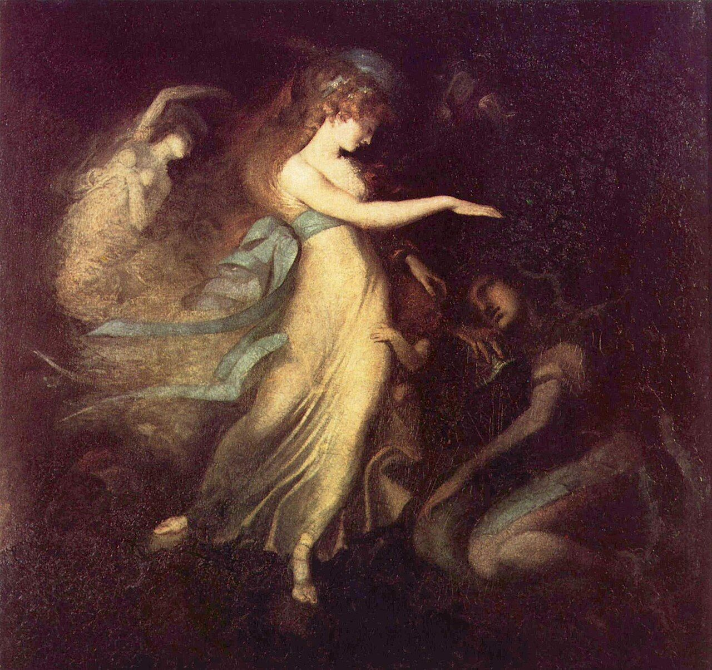
Prince Arthur and the Fairy QueenHenry Fuseli, 1788 · Kunstmuseum Basel
xiiiFor-wearied with my sports, I did alightFrom lofty steed, and down to sleep me laid;The verdant graz my couch did goodly dight,And pillow was my helmet fair display’d:Whiles every sense the humour sweet embay’d,And slumb’ring soft my heart did steale away,Me seemed, by my side a royal MaidHer dainty limbs full softly down did lay:So fair a creature yet saw never sunny day.
xivMost goodly glee and lovely blandishmentShe to me made, and bad me love her dear,For dearly sure her love was to me bent,As when just time expired should appear.But whether dreams delude, or true it were,Was never heart so ravisht with delight,Ne living man like words did ever hear,As she to me delivered all that night;And at her parting said, She Queen of Faeries hight.
xvWhen I awoke, and found her place devoid,And nought but pressed graz, where she had lien,I sorrowed all so much, as erst I joy’d,And washed all her place with wat’ry eyen.From that day forth I lou’d that face divine;From that day forth I cast in careful mind,To seek her out with labour, and long tyne,And never vow to rest, till her I find,Nine monethes I seek in vain yet ni’ll that vow unbind.
xviThus as he spake, his visage wexed pale,And change of hue great passion did bewray;Yet still he strove to cloke his inward bale,And hide the smoke, that did his fire display,Till gentle Una thus to him gan say;O happy Queen of Faeries, that hast foundMongst many, one that with his prowess mayDefend thine honour, and thy foes confound:True Loves are often sown, but seldom grow on ground.
xviiThine, O then, said the gentle Redcrosse knight,Next to that Ladies love, shalbe the place,O fairest virgin, full of heavenly light,Whose wondrous faith, exceeding earthly race,Was firmest fixt in mine extremest case.And you, my Lord, the Patron of my life,Of that great Queen may well gain worthy grace:For only worthy you through prows priefeYf living man mote worthy be, to be her lief.
xviiiSo diversly discoursing of their loves,The golden Sun his glist’ring head gan show,And sad remembrance now the Prince amoves,With fresh desire his voyage to pursue:Als Una earn’d her traveill to renew.Then those two knights, fast friendship for to bind,And love establish each to other trow,Gave goodly gifts, the signs of grateful mind,And eke as pledges firm, right hands together joynd.
xixPrince Arthur gave a box of Diamond sure,Embow’d with gold and gorgeous ornament,Wherein were clos’d few drops of liquor pure,Of wondrous worth, and virtue excellent,That any wound could heal incontinent:Which to requite, the Redcrosse knight him gaveA book, wherein his Saveours testamentWas writ with golden letters rich and brave;A work of wondrous grace, and able souls to save.
xxThus been they parted, Arthur on his wayTo seek his love, and th’other for to fightWith Unaes foe, that all her realm did pray.But she now weighing the decayed plight,And shrunken sinews of her chosen knight,Would not a while her forward course pursue,Ne bring him forth in face of dreadful fight,Till he recovered had his former hue:For him to be yet weak and weary well she knew.
xxiSo as they traveild, lo they gan espyAn armed knight towards them gallop fast,That seemed from some feared foe to fly,Or other grisly thing, that him agast.Still as he fled, his eye was backward cast,As if his fear still followed him behind;Als flew his steed, as he his bands had brast,And with his winged heels did tread the wind,As he had been a fol of Pegasus his kind.
xxiiNigh as he drew, they might perceive his headTo be unarm’d, and curl’d uncombed hearsUpstaring stiff, dismay’d with uncouth dread;Nor drop of blood in all his face appearsNor life in limb: and to increase his fears,In foul reproach of knighthoods fair degree,About his neck an hempen rope he wears,That with his glist’ring arms does ill agree;But he of rope or arms has now no memory.
xxiiiThe Redcrosse knight toward him crossed fast,To weet, what mister wight was so dismay’d:There him he finds all senseless and aghast,That of him self he seem’d to be afraid;Whom hardly he from flying forward stay’d,Till he these words to him deliver might;Sir knight, aread who hath ye thus array’d,And eke from whom make ye this hasty flight:For never knight I saw in such misseeming plight.
xxivHe answer’d nought at all, but adding newFear to his first amassment, staring wideWith stony eyes, and hartlesse hollow hue,Astonisht stood, as one that had aspideInfernal furies, with their chaines untied.Him yet again, and yet again bespakeThe gentle knight; who nought to him replied,But trembling every joint did inly quake,And foltring tongue at last these words seem’d forth to shake.
xxvFor Gods dear love, Sir knight, do me not stay;For lo he comes, he comes fast after me.Eft looking back would fain have rune away;But he him forc’d to stay, and tellen freeThe secret cause of his perplexity:Yet nathemore by his bold hartie speech,Could his blood-frozen heart embolden’d be,But through his boldness rather fear did reach,Yet forc’d, at last he made through silence sudden breach.
xxviAnd am I now in safety sure (quoth he)From him, that would have forced me to die?And is the point of death now turn’d fro me,That I may tell this hapless history?Fear nought: (quoth he) no danger now is nye.Then shall I you recount a rueful case,(Said he) the which with this unlucky eyeI late beheld, and had not greater graceMe reft from it, had been partaker of the place.
xxviiI lately chanc’d (Would I had never chanc’d)With a fair knight to keppen company,Sir Terwin hight, that well himself aduaunstIn all affaires, and was both bold and free,But not so happy as mote happy be:He lou’d, as was his lot, a Lady gent,That him again lou’d in the least degree:For she was proud, and of too high intent,And joy’d to see her lover languish and lament.
xxviiiFrom whom returning sad and comfortless,As on the way together we did fare,We met that villen (God from him me bless)That cursed wight, from whom I scapt whilere,A man of hell, that calls himself Despaire:Who first us greets, and after fair arreedesOf tidings strange, and of adventures rare:So creeping close, as Snake in hidden weeds,Inquireth of our states, and of our knightly deeds.
xxixWhich when he knew, and felt our feeble heartsEmbost with bale, and bitter biting grief,Which love had launched with his deadly darts,With wounding words and termes of foul repriefeHe pluck’d from us all hope of due relief,That erst us held in love of ling’ring life;Then hopeless hartlesse, gan the cunning thiefPerswade us die, to stint all further strife:To me he lent this rope, to him a rusty knife.
xxxWith which sad instrument of hasty death,That woeful lover, loathing lenger light,A wide way made to let forth living breath.But I more fearful, or more luckie wight,Dismay’d with that deformed dismal sight,Fled fast away, half dead with dying fear:Ne yet assur’d of life by you, Sir knight,Whose like infirmity like chance may bear:But God you never let his charmed speeches hear.
xxxiHow may a man (said he) with idle speechBe won, to spoil the Castle of his health?I wot (quoth he) whom trial late did teach,That like would not for all this worlds wealth:His subtil tongue, like dropping honny, melt’thInto the heart, and searcheth every vain,That ere one be aware, by secret stealthHis power is reft, and weakness doth remain.O never Sir desire to try his guileful train.
xxxiiCertes (said he) hence shall I never rest,Till I that treachours art have heard and tried;And you Sir knight, whose name mote I request,Of grace do me unto his cabin guide.I that hight Trevisan (quoth he) will rideAgainst my liking back, to do you grace:But nor for gold nor glee will I abideBy you, when ye arrive in that same place;For lever had I die, then see his deadly face.
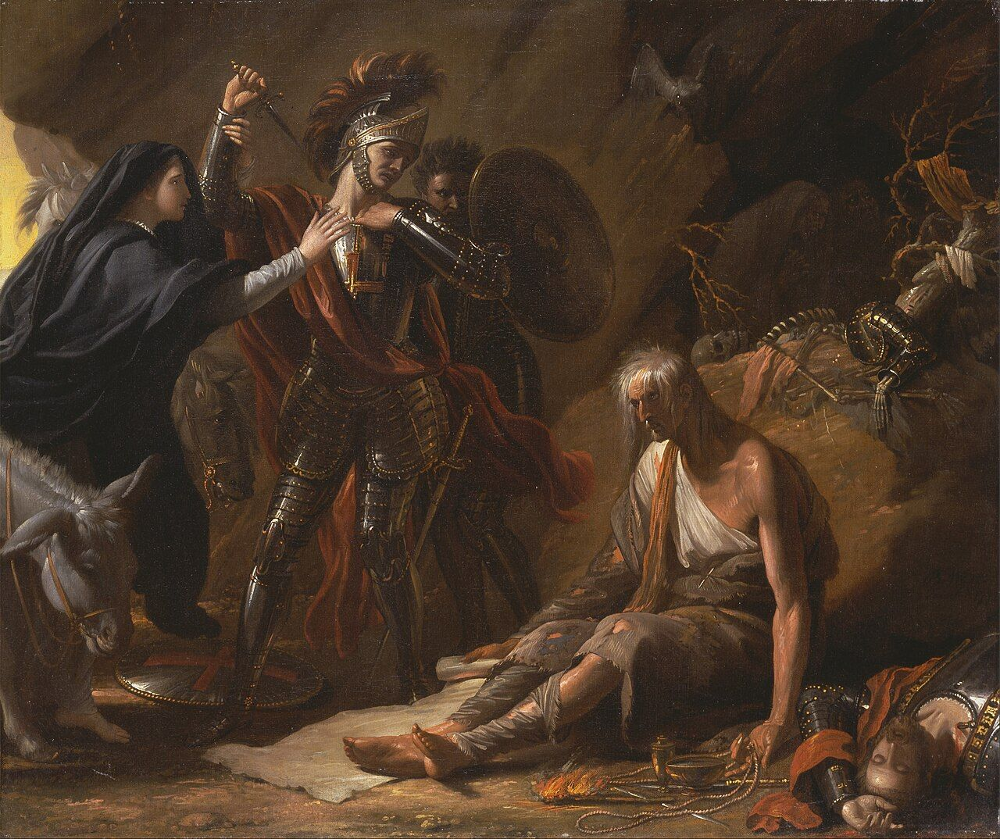
The Cave of DespairBenjamin West, 1772 · Yale Center for British Art
xxxiiiEre long they come, where that same wicked wightHis dwelling has, low in an hollow cave,Fare underneath a craggy clift ypight,Dark, doleful, dreary, like a greedy grave,That still for carrion carcass doth crave:On top whereof aye dwelt the ghastly Owl,Shrieking his baleful note, which ever draveFare from that haunt all other cheerful foul;And all about it wand’ring ghosts did wail and howl.
xxxivAnd all about old stocks and stubs of trees,Whereon nor fruit, nor leaf was ever seen,Did hang upon the ragged rocky knees;On which had many wretches hanged been,Whose carcass were scattered on the green,And thrown about the cliffs. Arrived there,That bare-head knight for dread and doleful teen,Would fain have fled, ne durst approchen near,But th’other forc’d him stay, and comforted in fear.
xxxvThat darksome cave they enter, where they findThat cursed man, low sitting on the ground,Musing full sadly in his sullen mind;His griesy locks, long grown, and unbound,Disorder’d hung about his shoulders round,And hid his face; through which his hollow eyneLook’d deadly dull, and stared as astound;His raw-bone cheeks through penury and pine,Were shrunk into his jaws, as he did never dine.
xxxviHis garment nought but many ragged clouts,With thorns together pin’d and patched was,The which his naked sides he wrapt abouts;And him beside there lay upon the grazA dreary corse, whose life away did pas,All wallow’d in his own yet luke-warm blood,That from his wound yet welled fresh alas;In which a rusty knife fast fixed stood,And made an open passage for the gushing flood.
xxxviiWhich piteous spectacle, approving trowThe woeful tale that Trevisan had told,When as the gentle Redcrosse knight did view,With firry zeal he burnt in courage bold,Him to avenge, before his blood were cold,And to the villein said, Thou damned wight,The author of this fact, we here behold,What justice can but judge against thee right,With thine own blood to price his blood, here shed in sight?
xxxviiiWhat frantic fit (quoth he) hath thus distraughtThee, foolish man, so rash a dome to give?What justice ever other judgement taught,But he should die, who merits not to live?None else to death this man despairing drive,But his own guilty mind deserving death.Is then unjust to each his due to give?Or let him die, that loatheth living breath?Or let him die at ease, that liveth here uneath?
xxxixWho travels by the weary wand’ring way,To come unto his wished home in haste,And meets a flood, that doth his passage stay,Is not great grace to help him over past,Or free his feet, that in the mire stick fast?Most envious man, that grieves at neighbours good,And fond, that joyest in the woe thou hast,Why wilt not let him pass, that long hath stoodUpon the bank, yet wilt thy self not pass the flood?
xlHe there does now enjoy eternal restAnd happy ease, which thou doest want and crave,And further from it daily wanderest:What if some little pain the passage have,That makes frail flesh to fear the bitter wave?Is not short pain well borne, that brings long ease,And lays the soul to sleep in quiet grave?Sleep after toil, port after stormy seas,Ease after war, death after life does greatly please.
xliThe knight much wonder’d at his sudden wit,And said, The term of life is limited,Ne may a man prolong, nor shorten it;The soldier may not move from watchful stead,Nor leave his stand, until his Captain bed.Who life did limit by almighty dome,(Quoth he) knowes best the termes established;And he, that points the Centonell his rome,Doth license him depart at sound of morning drome.
xliiIs not his deed, what ever thing is donne,In heaven and earth? did not he all createTo die again? all ends that was begone.Their times in his eternal book of fateAre written sure, and have their certain date.Who then can strive with strong necessity,That holds the world in his still changing state,Or shun the death ordain’d by destiny?When hour of death is come, let none ask whence, nor why.
xliiiThe lenger life, I wot the greater sin,The greater sin, the greater punishment:All those great battles, which thou boasts to win,Through strife, and blood-shed, and avengement,Now prays’d, hereafter dear thou shalt repent:For life must life, and blood must blood repay.Is not enough thy evil life forespent?For he, that once hath missed the right way,The further he doth goe, the further he doth stray.
xlivThen do no further goe, no further stray,But here lie down, and to thy rest betake,Th’ill to prevent, that life ensewen may.For what hath life, that may it loved make,And gives not rather cause it to forsake?Fear, sickness, age, loss, labour, sorrow, strife,Pain, hunger, cold, that makes the heart to quake;And ever fickle fortune rageth rife,All which, and thousands mo do make a loathsome life.
xlvThou wretched man, of death hast greatest need,If in true ballance thou wilt weigh thy state:For never knight, that dared warlike deed,More luckless disaventures did amate:Witness the dungeon deep, wherein of lateThy life shut up, for death so oft did call;And though good luck prolonged hath thy date,Yet death then, would the like mishaps forestall,Into the which hereafter thou maiest happen fall.
xlviWhy then doest thou, O man of sin, desireTo draw thy days forth to their last degree?Is not the measure of thy sinful hireHigh heaped up with huge iniquity,Against the day of wrath, to burden thee?Is not enough, that to this Lady mildThou falsed hast thy faith with periurie,And sold thy self to serve Duessa vild,With whom in all abuse thou hast thy self defilde?
xlviiIs not he just, that all this doth beholdFrom highest heaven, and bears an equal eye?Shall he thy sins up in his knowledge fold,And guilty be of thine impiety?Is not his law, Let every sinner die:Die shall all flesh? what then must needs be donne,Is it not better to do willingly,Then linger, till the glass be all out rone?Death is the end of woes: die soon, O faeries son.
xlviiiThe knight was much enmoved with his speech,That as a swords point through his heart did perse,And in his conscience made a secret breach,Well knowing true all, that he did reherse,And to his fresh remembrance did reverseThe ugly view of his deformed crimes,That all his manly powers it did disperse,As he were charmed with inchaunted rimes,That oftentimes he quakt, and fainted oftentimes.
xlixIn which amazement, when the MiscreantPerceived him to waver weak and frail,Whiles trembling horror did his conscience dante,And hellish anguish did his soul assail,To drive him to despair, and quite to quail,He show’d him painted in a table plain,The damned ghosts, that do in torments wail,And thousand fiends that do them endless painWith fire and brimstone, which for ever shall remain.
lThe sight whereof so throughly him dismay’d,That nought but death before his eyes he saw,And ever burning wrath before him laid,By righteous sentence of th’Almighties law:Then gan the villein him to overcraw,And brought unto him swords, ropes, poison, fire,And all that might him to perdition draw;And bad him choose, what death he would desire:For death was due to him, that had provokt Gods ire.
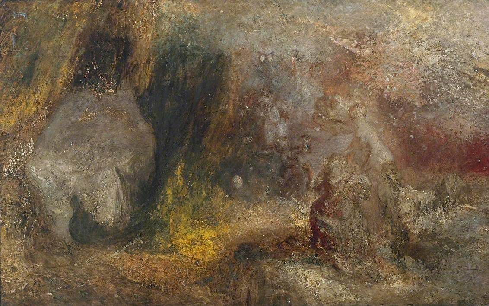
The Cave of DespairJ. M. W. Turner, c. 1835 · Tate / National Gallery
liBut when as none of them he saw him take,He to him raught a dagger sharpe and keen,And gave it him in hand: his hand did quake,And tremble like a leaf of Aspin green,And troubled blood through his pale face was seenTo come, and goe with tidings from the heart,As it a running messenger had been.At last resolv’d to work his final smart,He lifted up his hand, that back again did start.
liiWhich when as Una saw, through every vainThe crudled cold ran to her well of life,As in a swoon: but soon reliv’d again,Out of his hand she snatch’d the cursed knife,And threw it to the ground, enraged rife,And to him said, Fie, fie, faint harted knight,What meanest thou by this reproachful strife?Is this the battle, which thou vauntst to fightWith that fire-mouthed Dragon, horrible and bright?
liiiCome, come away, frail, feeble, fleshly wight,Ne let vain words bewitch thy manly heart,Ne divelish thoughts dismay thy constant spright.In heavenly mercies hast thou not a part?Why shouldst thou then despeire, that chosen art?Where justice grows, there grows eke greater grace,The which doth quench the brand of hellish smart,And that accurst hand-writing doth deface.Arise, Sir knight arise, and leave this cursed place.
livSo up he rose, and thence amounted straight.Which when the carle beheld, and saw his guestWould safe depart, for all his subtil sleight,He chose an halter from among the rest,And with it hung himself, unbid unblest.But death he could not work himself thereby;For thousand times he so himself had drest,Yet nathless it could not do him die,Till he should die his last, that is eternally.
Booke I · Holinesse
Canto X
❧
Her faithful knight fair Una brings to house of Holiness, Where he is taught repentance, and the way to heavenly bless.
❧
ihat man is he, that boasts of fleshly might,And vain assurance of mortality,Which all so soon, as it doth come to fight,Against spiritual foes, yields by and by,Or from the field most cowardly doth fly?Ne let the man ascribe it to his skill,That thorough grace hath gained victory.If any strength we have, it is to ill,But all the good is Gods, both power and eke will.
iiBy that, which lately hapned, Una saw,That this her knight was feeble, and too faint;And all his sinews woxen weak and raw,Through long enprisonment, and hard constraint,Which he endured in his late restraint,That yet he was unfit for bloody fight:Therefore to cherish him with diets daint,She cast to bring him, where he chearen might,Till he recovered had his late decayed plight.
iiiThere was an auntient house not fare away,Renowmd throughout the world for sacred lore,And pure unspotted life: so well they sayIt govern’d was, and guided evermore,Through wisedome of a matron grave and hore;Whose only joy was to relieve the needsOf wretched souls, and help the helpless pore:All night she spent in bidding of her beds,And all the day in doing good and godly deeds.
ivDame Cœlia men did her call, as thoughtFrom heaven to come, or thither to arise,The mother of three daughters, well upbroughtIn goodly thewes, and godly exercise:The eldest two most sober, chaste, and wise,Fidelia and Speranza virgins were,Though spous’d, yet wanting wedlocks solemnize;But fair Charissa to a lovely fereWas lincked, and by him had many pledges dere.
vArrived there, the door they find fast lock’d;For it was warely watched night and day,For fear of many foes: but when they knock’d,The Porter opened unto them straight way:He was an aged syr, all hoary gray,With lokes full lowly cast, and gate full slow,Wont on a staff his feeble steps to stay,Hight Humiltá. They pass in stooping low;For straight and narrow was the way, which he did show.
viEach goodly thing is hardest to begin,But enter’d in a spacious court they see,Both plain, and pleasant to be walked in,Where them does meet a francklin fair and free,And entertains with comely courteous glee,His name was Zele, that him right well became,For in his speeches and behaviour heDid labour lively to express the same,And gladly did them guide, till to the Hall they came.
viiThere fairly them receives a gentle Squire,Of mild demeanure, and rare courtesy,Right cleanly clad in comely sad attire;In word and deed that show’d great modesty,And knew his good to all of each degree,Hight Reverence. He them with speeches meetDoes fair entreat; no courting nicety,But simple true, and eke unfained sweet,As might become a Squire so great persons to greet.
viiiAnd afterwards them to his Dame he leads,That aged Dame, the Lady of the place:Who all this while was busy at her beads:Which doen, she up arose with seemly grace,And toward them full matronly did pace.Where when that fairest Una she beheld,Whom well she knew to spring from heavenly race,Her heart with joy unwonted inly sweld,As feeling wondrous comfort in her weaker eld.
ixAnd her embracing said, O happy earth,Whereon thy innocent feet do ever tread,Most virtuous virgin borne of heavenly berth,That to redeem thy woful parents head,From tyrans rage, and ever-dying dread,Hast wander’d through the world now long a day;Yet ceasest not thy weary soles to lead,What grace hath thee now hither brought this way?Or doen thy feeble feet unweeting hither stray?
xStrange thing it is an errant knight to seeHere in this place, or any other wight,That hither turns his steps. So few there be,That chose the narrow path, or seek the right:All keep the broad high way, and take delightWith many rather for to go astray,And be partakers of their evil plight,Then with a few to walk the rightest way;O foolish men, why haste ye to your own decay?
xiThy self to see, and tired limbs to rest,O matron sage (quoth she) I hither came,And this good knight his way with me addrest,Led with thy praises and broad-blazed fame,That up to heaven is blown. The ancient DameHim goodly greeted in her modest guise,And entertaynd them both, as best became,With all the court’sies, that she could devise,Ne wanted ought, to show her bounteous or wise.
xiiThus as they gan of sundry things devise,Lo two most goodly virgins came in place,Ylinked arm in arm in lovely wise,With countenance demure, and modest grace,They number’d even steps and equal pace:Of which the eldest, that Fidelia hight,Like sunny beams threw from her Crystal face,That could have daz’d the rash beholders sight,And round about her head did shine like heavens light.
xiiiShe was araied all in lilly white,And in her right hand bore a cup of gold,With wine and water fil’d up to the hight,In which a Serpent did himself enfold,That horror made to all, that did behold;But she no whit did change her constant mood:And in her other hand she fast did holdA book, that was both sign’d and seld with blood,Wherein dark things were writ, hard to be understood.
xivHer younger sister, that Speranza hight,Was clad in blew, that her beseemed well;Not all so cheerful seemed she of sight,As was her sister; whether dread did dwell,Or anguish in her heart, is hard to tell:Upon her arm a silver anchor lay,Whereon she leaned ever, as befell:And ever up to heaven, as she did pray,Her steadfast eyes were bent, ne swarved other way.
xvThey seeing Una, towards her gan wend,Who them encounters with like courtesy;Many kind speeches they betwene them spend,And greatly joy each other well to see:Then to the knight with shamefast modestyThey turn themselves, at Unaes meek request,And him salute with well beseeming glee;Who fair them quites, as him beseemed best,And goodly gan discourse of many a noble gest.
xviThen Una thus; But she your sister dear;The dear Charissa where is she become?Or wants she health, or busy is elsewhere?Ah no, said they, but forth she may not come:For she of late is lighten’d of her womb,And hath encreas’d the world with one son more,That her to see should be but troublesome.Indeed (quoth she) that should her trouble sore,But thank’d be God, and her encrease so evermore.
xviiThen said the aged Cœlia, Dear dame,And you good Sir, I wot that of your toil,And labours long, through which ye hither came,Ye both forwearied be: therefore a whileI read you rest, and to your bowers recoil.Then called she a Groom, that forth him ledInto a goodly lodge, and gan despoilOf puissant arms, and laid in easy bed;His name was meek Obedience rightfully ared.
xviiiNow when their weary limbs with kindly rest,And bodies were refresht with due repast,Fair Una gan Fidelia fair request,To have her knight into her schoolehouse plaste,That of her heavenly learning he might taste,And hear the wisedome of her words divine.She granted, and that knight so much agraste,That she him taught celestial discipline,And opened his dull eyes, that light mote in them shine.
xixAnd that her sacred Book, with blood ywrit,That none could read, except she did them teach,She unto him disclosed every whit,And heavenly documents thereout did preach,That weaker wit of man could never reach,Of God, of grace, of justice, of free will,That wonder was to hear her goodly speech:For she was able, with her words to kill,And raise again to life the heart, that she did thrill.
xxAnd when she list pour out her larger spright,She would command the hasty Sun to stay,Or backward turn his course from heavens hight;Sometimes great hosts of men she could dismay,Dry-shod to pass, she parts the floods in tway;And eke huge mountains from their native seatShe would command, themselves to bear away,And throw in raging sea with roaring threat.Almighty God her gave such power, and puissance great.
xxiThe faithful knight now grew in little space,By hearing her, and by her sisters lore,To such perfection of all heavenly grace,That wretched world he gan for to abhor,And mortal life gan loath, as thing forlore,Greave’d with remembrance of his wicked ways,And prick’d with anguish of his sines so sore,That he desirde to end his wretched days:So much the dart of sinful guilt the soul dismays.
xxiiBut wise Speranza gave him comfort sweet,And taught him how to take assured holdUpon her silver anchor, as was meet;Else had his sines so great, and manifoldMade him forget all that Fidelia told.In this distressed doubtful agony,When him his dearest Una did behold,Disdeining life, desiring leave to die,She found her self assayld with great perplexity.
xxiiiAnd came to Cœlia to declare her smart,Who well acquainted with that commune plight,Which sinful horror works in wounded heart,Her wisely comforted all that she might,With goodly counsel and advisement right;And straightway sent with careful diligence,To fetch a Leach, the which had great insightIn that disease of grieved conscience,And well could cure the same; His name was Patience.
xxivWho coming to that soul-diseased knight,Could hardly him intreat, to tell his grief:Which known, and all that noy’d his heavy sprightWell search’d, eftsoons he gan apply reliefOf salves and med’cines, which had passing priefe,And thereto added words of wondrous might:By which to ease he him recured brief,And much asswag’d the passion of his plight,That he his pain endur’d, as seeming now more light.
xxvBut yet the cause and root of all his ill,Inward corruption, and infected sin,Not purg’d nor heald, behind remained still,And fest’ring sore did rankle yet within,Close creeping twixt the marrow and the skin.Which to extirp, he laid him privilyDown in a darksome lowly place fare in,Whereas he meant his corrosives to apply,And with straight diet tame his stubborn malady.
xxviIn ashes and sackcloth he did arrayHis dainty corse, proud humors to abate,And dieted with fasting every day,The swelling of his wounds to mitigate,And made him pray both early and eke late:And ever as superfluous flesh did rotAmendment ready still at hand did wait,To pluck it out with pincers firry whot,That soon in him was left no one corrupted jot.
xxviiAnd bitter Penance with an iron whip,Was wont him once to disple every day:And sharpe Remorse his heart did prick and nip,That drops of blood thence like a well did play;And sad Repentance used to embayHis body in salt water smarting sore,The filthy blots of sine to wash away.So in short space they did to health restoreThe man that would not live, but erst lay at deaths door.
xxviiiIn which his torment often was so great,That like a Lyon he would cry and rore,And rend his flesh, and his own sinews eat.His own dear Una hearing evermoreHis rueful shrieks and groanings, often toreHer guiltless garments, and her golden hear,For pity of his pain and anguish sore;Yet all with patience wisely she did bear;For well she wist, his crime could else be never clear.
xxixWhom thus recover’d by wise Patience,And trow Repentance they to Una brought:Who joyous of his cured conscience,Him dearly kist, and fairly eke besoughtHimself to cherish, and consuming thoughtTo put away out of his careful breast.By this Charissa, late in child-bed brought,Was woxen strong, and left her fruitful nest;To her fair Una brought this unacquainted guest.
xxxShe was a woman in her freshest age,Of wondrous beauty, and of bounty rare,With goodly grace and comely personage,That was on earth not easy to compare;Full of great love, but Cupids wanton snareAs hell she hated, chaste in work and will;Her neck and breasts were ever open bare,That ay thereof her babes might suck their fill;The rest was all in yellow robes arrayed still.
xxxiA multitude of babes about her hung,Playing their sports, that joy’d her to behold,Whom still she fed, whiles they were weak and young,But thrust them forth still, as they wexed old:And on her head she wore a tyre of gold,Adorn’d with gems and owches wondrous fair,Whose passing price uneath was to be told;And by her side there sate a gentle pairOf turtle doves, she sitting in an ivory chair.
xxxiiThe knight and Una ent’ring, fair her greet,And bid her joy of that her happy brood;Who them requites with court’sies seeming meet,And entertains with friendly cheerful mood.Then Una her besought, to be so good,As in her virtuous rules to school her knight,Now after all his torment well withstood,In that sad house of Penaunce, where his sprightHad past the pains of hell, and long enduring night.
xxxiiiShe was right joyous of her just request,And taking by the hand that Faeries son,Gan him instruct in every good behest,Of love, and righteousness, and well to donne,And wrath, and hatred warely to shone,That drew on men Gods hatred, and his wrath,And many souls in dolours had fordone:In which when him she well instructed hath,From thence to heaven she teacheth him the ready path.
xxxivWherein his weaker wand’ring steps to guide,An ancient matron she to her does call,Whose sober lokes her wisedome well descried:Her name was Mercie, well known over all,To be both gracious, and eke liberal:To whom the careful charge of him she gave,To lead aright, that he should never fallIn all his ways through this wide worlds wave,That Mercy in the end his righteous soul might save.
xxxvThe godly Matron by the hand him bearsForth from her presence, by a narrow way,Scatter’d with bushy thorns, and ragged briers,Which still before him she remov’d away,That nothing might his ready passage stay:And ever when his feet encombred were,Or gan to shrink, or from the right to stray,She held him fast, and firmly did upbear,As careful Norse her child from falling oft does rear.
xxxviEftsoons unto an holy Hospital,That was fore by the way, she did him bring,In which seven Bead-men that had vowed allTheir life to service of high heavens kingDid spend their days in doing godly thing:Their gates to all were open evermore,That by the weary way were traveiling,And one sate waiting ever them before,To call in comers-by, that needy were and pore.
xxxviiThe first of them that eldest was, and best,Of all the house had charge and governement,As Guardian and Steward of the rest:His office was to give entertainementAnd lodging, unto all that came, and went:Not unto such, as could him feast again,And double quite, for that he on them spent,But such, as want of harbour did constrain:Those for Gods sake his dewty was to entertain.
xxxviiiThe second was as Almner of the place,His office was, the hungry for to feed,And thristy give to drink, a work of grace:He fear’d not once him self to be in need,Ne car’d to hoard for those, whom he did breed:The grace of God he laid up still in store,Which as a stock he left unto his seed;He had enough, what need him care for more?And had he less, yet some he would give to the pore.
xxxixThe third had of their wardrobe custody,In which were not rich tyres, nor garments gay,The plumes of pride, and wings of vanity,But clothes meet to keep keen could away,And naked nature seemly to array;With which bare wretched wights he daily clad,The images of God in earthly clay;And if that no spare cloths to give he had,His own coat he would cut, and it distribute glad.
xlThe fourth appointed by his office was,Poor prisoners to relieve with gracious aid,And captives to redeem with price of bras,From Turks and Sarrazins, which them had stay’d;And though they faulty were, yet well he way’d,That God to us forgiveth every hourMuch more than that, why they in bands were laid,And he that harrow’d hell with heavy stowre,The faulty souls from thence brought to his heavenly bower.
xliThe fifty had charge sic persons to attend,And comfort those, in point of death which lay;For them most needeth comfort in the end,When sin, and hell, and death do most dismayThe feeble soul departing hence away.All is but lost, that living we bestow,If not well ended at our dying day.O man have mind of that last bitter throw;For as the tree does fall, so lyes it ever low.
xliiThe sixte had charge of them now being dead,In seemly sort their corses to engrave,And deck with dainty flowers their bridal bed,That to their heavenly spouse both sweet and braveThey might appear, when he their souls shall save.The wondrous workemanship of Gods own mould,Whose face he made, all beasts to fear, and gaveAll in his hand, even dead we honour should.Ah dearest God me grant, I dead be not defoul’d.
xliiiThe seventh now after death and burial done,Had charge the tender Orphans of the deadAnd widows aid, least they should be undone:In face of judgement he their right would plead,Ne ought the power of mighty men did dreadIn their defence, nor would for gold or feeBe won their rightful causes down to tread:And when they stood in most necessity,He did supply their want, and gave them ever free.
xlivThere when the Elfin knight arrived was,The first and chiefest of the seven, whose careWas guests to welcome, towards him did pas:Where seeing Mercie, that his steps up bare,And always led, to her with reverence rareHe humbly louted in meek lowliness,And seemly welcome for her did prepare:For of their order she was Patroness,Albe Charissa were their chiefest founders.
xlvThere she awhile him stays, him self to rest,That to the rest more able he might be:During which time, in every good behestAnd godly work of Almes and charityShe him instructed with great industry;Shortly therein so perfect he became,That from the first unto the last degree,His mortal life he learned had to frameIn holy righteousness, without rebuke or blame.
xlviThence forward by that painful way they pas,Forth to an hill, that was both steep and hi;On top whereof a sacred chappell was,And eke a little Hermitage thereby,Wherein an aged holy man did lie,That day and night said his devotion,Ne other worldly business did apply;His name was heavenly Contemplation;Of God and goodness was his meditation.
xlviiGreat grace that old man to him given had;For God he often saw from heavens hight,All were his earthly eyen both blunt and bad,And through great age had lost their kindly sight,Yet wondrous quick and persant was his spright,As Eagles eye, that can behold the Sun:That hill they scale with all their power and might,That his frail thighs nigh weary and fordoneGan fail, but by her help the top at last he won.
xlviiiThere they do find that godly aged Sire,With snowy locks adown his shoulders shed,As hoary frost with spangles doth attireThe mossy branches of an Oke half dead.Each bone might through his body well be red,And every sinew seen through his long fast:For nought he car’d his carcass long unfed;His mind was full of spiritual repast,And pyn’d his flesh, to keep his body low and chaste.
xlixWho when these two approaching he aspideAt their first presence grew aggrieved sore,That forc’d him lay his heavenly thoughts aside;And had he not that Dame respected more,Whom highly he did reverence and adore,He would not once have moved for the knight.They him saluted standing far afore;Who well them greeting, humbly did requite,And asked, to what end they clomb that tedious height.
lWhat end (quoth she) should cause us take such pain,But that same end, which every living wightShould make his mark, high heaven to attain?Is not from hence the way, that leadeth rightTo that most glorious house, that glistreth brightWith burning starrs, and everliving fire,Whereof the keys are to thy hand behightBy wise Fidelia? she doth thee require,To show it to this knight, according his desire.
liThrice happy man, said then the father grave,Whose staggering steps thy steady hand doth lead,And shews the way, his sinful soul to save.Who better can the way to heaven aread,Then thou thy self, that was both borne and bredIn heavenly throne, where thousand Angels shine?Thou doest the prayers of the righteous sedPresent before the majesty divine,And his avenging wrath to clemency incline.
liiYet since thou bidst, thy pleasure shalbe donne.Then come thou man of earth, and see the way,That never yet was seen of Faeries son,That never leads the traveiler astray,But after labours long, and sad delay,Brings them to joyous rest and endless bliss.But first thou must a season fast and pray,Till from her bands the spright assoiled is,And have her strength recur’d from frail infirmitis.
liiiThat done, he leads him to the highest Mount;Such one, as that same mighty man of God,That blood-red billows like a walled frontOn either side disparted with his rod,Till that his army dry-foot through them yod,Dwelt forty days upon; where writ in stoneWith bloody letters by the hand of God,The bitter dome of death and baleful monHe did receive, whiles flashing fire about him shone.
livOr like that sacred hill, whose head full hie,Adorn’d with fruitful Olives all arownd,Is, as it were for endless memoryOf that dear Lord, who oft thereon was fownd,For ever with a flouring garland crown’d:Or like that pleasant Mount, that is for ayThrough famous Poets verse each where renown’d,On which the thrice three learned Ladies playTheir heavenly notes, and make full many a lovely lay.
lvFrom thence, far off he unto him did showA little path, that was both steep and long,Which to a goodly City led his view;Whose walls and towers were builded high and strongOf perl and precious stone, that earthly tongueCannot describe, nor wit of man can tell;Too high a ditty for my simple song;The City of the great king hight it well,Wherein eternal peace and happiness doth dwell.
lviAs he thereon stood gazing, he might seeThe blessed Angels to and fro descendFrom highest heaven, in gladsome company,And with great joy into that City wend,As commonly as friend does with his frend.Whereat he wonder’d much, and gan enquere,What stately building durst so high extendHer lofty towers unto the starry sphere,And what unknowen nation there empeopled were.
lviiFair knight (quoth he) Hierusalem that is,The new Hierusalem, that God has builtFor those to dwell in, that are chosen his,His chosen people purg’d from sinful guilt,With precious blood, which cruelly was spiltOn cursed tree, of that unspotted lam,That for the sines of all the world was kilt:Now are they Saints all in that City sam,More dear unto their God, then younglings to their dam.
lviiiTill now, said then the knight, I weened well,That great Cleopolis, where I have been,In which that fairest Faerie Queene doth dwell,The fairest City was, that might be seen;And that bright tower all built of crystal clean,Panthea, seem’d the brightest thing, that was:But now by proof all otherwise I ween;For this great City that does far surpass,And this bright Angels tower quite dims that tower of glaze.
lixMost trow, then said the holy aged man;Yet is Cleopolis for earthly frame,The fairest piece, that eye beholden can:And well beseems all knights of noble name,That covet in th’immortall book of fameTo be eternized, that same to haunt,And doen their service to that sovereign Dame,That glory does to them for guerdon grant:For she is heavenly borne, and heaven may justly vaunt.
lxAnd thou fair imp, sprong out from English race,How ever now accompted Elfins son,Well worthy doest thy service for her grace,To aide a virgin desolate foredone.But when thou famous victory hast won,And high amongst all knights hast hung thy shield,Thenceforth the suit of earthly conquest shone,And wash thy hands from guilt of bloody field:For blood can nought but sin, and wars but sorrows yield.
lxiThen seek this path, that I to thee presage,Which after all to heaven shall thee send;Then peaceably thy painful pilgrimageTo yonder same Hierusalem do bend,Where is for thee ordain’d a blessed end:For thou amongst those Saints, whom thou doest see,Shalt be a Saint, and thine own nations frendAnd Patron: thou Saint George shalt called be,Saint George of meri England, the sign of victory.
lxiiUnworthy wretch (quoth he) of so great grace,How dare I think such glory to attain?These that have it attain’d, were in like case(Quoth he) as wretched, and liv’d in like pain.But deeds of arms must I at last be fain,And Ladies love to leave so dearly bought?What need of arms, where peace doth ay remain,(Said he) and battles none are to be fought?As for loose loves are vain, and vanish into nought.
lxiiiO let me not (quoth he) then turn againBack to the world, whose joys so fruitless are;But let me here for aye in peace remain,Or straight way on that last long voyage fare,That nothing may my present hope empare.That may not be (said he) ne maist thou yiteForgo that royal maids bequeathed care,Who did her cause into thy hand commit,Till from her cursed foe thou have her freely quit.
lxivThen shall I soon, (quoth he) so God me grace,Abet that virgins cause disconsolate,And shortly back return unto this place,To walk this way in Pilgrims poor estate.But now aread, old father, why of lateDidst thou behight me borne of English blood,Whom all a Faeries son doen nominate?That word shall I (said he) avouchen good,Sith to thee is unknown the cradle of thy brood.
lxvFor well I wot, thou springst from ancient raceOf Saxon kings, that have with mighty handAnd many bloody battles fought in placeHigh rear’d their royal throne in Britane land,And vanquisht them, unable to withstand:From thence a Faerie thee unweeting reft,There as thou slepst in tender swaddling band,And her base Elfin brood there for thee left.Such men do Changelings call, so chaungd by Faeries theft.
lxviThence she thee brought into this Faerie lond,And in an heaped furrow did thee hyde,Where thee a Ploughman all unweeting fond,As he his toilsome teme that way did guide,And brought thee up in ploughmans state to bide,Whereof Georgos he thee gave to name;Till prick’d with courage, and thy forces pride,To Faery court thou cam’st to seek for fame,And prove thy puissant arms, as seems thee best became.
lxviiO holy Sire (quoth he) how shall I quiteThe many favours I with thee have found,That hast my name and nation red aright,And taught the way that does to heaven bound?This said, adown he looked to the ground,To have return’d, but dazed were his eyne,Through passing brightness, which did quite confoundHis feeble sense, and too exceeding shine.So dark are earthly things compar’d to things divine.
lxviiiAt last whenas himself he gan to find,To Una back he cast him to retire;Who him awaited still with pensive mind.Great thanks and goodly meed to that good syr,He thence departing gave for his pains hire.So came to Una, who him joy’d to see,And after little rest, gan him desire,Of her adventure mindful for to be.So leave they take of Cœlia, and her daughters three.
Booke I · Holinesse
Canto XI
❧
The knight with that old Dragon fights two days incessantly: The third him overthrows, and gains most glorious victory.
❧
iigh time now gan it wex for Una fair,To think of those her captive Parents dear,And their forwasted kingdom to repair:Whereto whenas they now approached near,With hartie words her knight she gan to chere,And in her modest manner thus bespake;Dear knight, as dear, as ever knight was dear,That all these sorrows suffer for my sake,High heaven behold the tedious toil, ye for me take.
iiNow are we come unto my native soil,And to the place, where all our perils dwell;Here haunts that fiend, and does his daily spoil,Therefore henceforth be at your keeping well,And ever ready for your foeman fell.The spark of noble courage now awake,And strive your excellent self to excel;That shall ye evermore renowned make,Above all knights on earth, that batteill undertake.
And pointing forth, lo yonder is (said she) iiiThe brazen tower in which my parents dearFor dread of that huge fiend emprisond be,Whom I from far see on the walls appear,Whose sight my feeble soul doth greatly chere:And on the top of all I do espyThe watchman waiting tidings glad to hear,That O my parents might I happilyUnto you bring, to ease you of your misery.
ivWith that they heard a roaring hideous sound,That all the ayre with terror filled wide,And seem’d uneath to shake the steadfast ground.Eftsoons that dreadful Dragon they espied,Where stretch’d he lay upon the sunny sideOf a great hill, himself like a great hill.But all so soon, as he from far descriedThose glist’ring arms, that heaven with light did fill,He rous’d himself full blithe, and hasten’d them until.
vThen bad the knight his Lady yede aloof,And to an hill her self with draw aside,From whence she might behold that battailles proofAnd eke be safe from danger far descried:She him obayd, and turn’d a little wide.Now O thou sacred Muse, most learned Dame,Fair imp of Phœbus and his aged bride,The Norse of time, and everlasting fame,That warlike hands ennoblest with immortal name;
viO gently come into my feeble breast,Come gently, but not with that mighty rage,Wherewith the martial troupes thou doest infest,And hearts of great Heroës doest enrage,That nought their kindled courage may asswage,Soon as thy dreadful trompe begins to sown’d;The God of war with his fiers equipageThou doest awake, sleep never he so sown’d,And scared nations doest with horror stern astownd.
viiFair Goddess lay that furious fit aside,Till I of wars and bloody Mars do sing,And Briton fields with Sarrazin blood bedyde,Twixt that great faery Queen and Paynim king,That with their horror heaven and earth did ring,A work of labour long, and endless prays:But now a while let down that haughty string,And to my tunes thy second tenor rays,That I this man of God his godly arms may blaze.
viiiBy this the dreadful Beast drew nigh to hand,Half flying, and half footing in his hast,That with his largeness measured much land,And made wide shadow under his huge wast;As mountain doth the valley overcast.Approaching nigh, he reared high aforeHis body monstrous, horrible, and vast,Which to increase his wondrous greatness more,Was swolne with wrath, and poison, and with bloody gore.
ixAnd over, all with brazen scales was arm’d,Like plated coat of steel, so couched near,That nought mote perse, ne might his corse be harm’dWith dint of sword, nor push of pointed spear;Which as an Eagle, seeing pray appear,His aery plumes doth rouse, full rudely dight,So shaked he, that horror was to hear,For as the clashing of an Armour bright,Such noys his roused scales did send unto the knight.
xHis flaggy wings when forth he did display,Were like two sails, in which the hollow wyndIs gathered full, and worketh speedy way:And eke the penes, that did his pineons bind,Were like main-yards, with flying canvas lynd,With which whenas him list the ayre to beat,And there by force unwonted passage find,The clouds before him fled for terror great,And all the heavens stood still amazed with his threat.
xiHis huge long tail wound up in hundred folds,Does overspread his long bras-scaly back,Whose wreathed boughts when ever he unfolds,And thick entangled knots adown does slack,Bespotted as with shields of red and black,It sweepeth all the land behind him fare,And of three furlongs does but little lack;And at the point two stings in-fixed arr,Both deadly sharpe, that sharpest steel exceeden fare.
xiiBut stings and sharpest steel did far exceedThe sharpness of his cruel rending claws;Dead was it sure, as sure as death in deed,What ever thing does touch his ravenous paws,Or what within his reach he ever draws.But his most hideous head my tong to tellDoes tremble: for his deep devouring jawsWide gaped, like the grisly mouth of hell,Through which into his dark abisse all ravin fell.
xiiiAnd that more wondrous was, in either jawThree ranckes of iron teeth enraunged were,In which yet trickling blood and gobbets rawOf late devoured bodies did appear,That sight thereof bred cold congealed fear:Which to increase, and all atonce to kill,A cloud of smothering smoke and sulphur searOut of his stinking gorge forth steamed still,That all the ayre about with smoke and stench did fill.
xivHis blazing eyes, like two bright shining shields,Did burn with wrath, and sparkled living fire;As two broad Beacons, set in open fields,Send forth their flames fare off to every shire,And warning give, that enemies conspire,With fire and sword the region to invade;So flam’d his eyne with rage and rancorous ire:But fare within, as in a hollow glade,Those glaring lamps were set, that made a dreadful shade.
xvSo dreadfully he towards him did pas,Forelifting up aloft his speckled breast,And often bounding on the brused graz,As for great joyance of his newcome guest.Eftsoons he gan advance his haughty crest,As chauffed Bore his bristles doth uprear,And shoke his scales to battle ready drest;That made the Redcrosse knight nigh quake for fear,As bidding bold defiance to his foeman near.
xviThe knight gan fairly couch his steady spear,And fiercely ran at him with rigorous might:The pointed steel arriving rudely there,His harder hide would neither perse, nor bight,But glancing by forth passed forward right;Yet sore amoved with so puissant push,The wrathful beast about him turned light,And him so rudely passing by, did brushWith his long tail, that horse and man to ground did rush.
xviiBoth horse and man up lightly rose again,And fresh encounter towards him addrest:But th’idle stroke yet back recoyld in vain,And found no place his deadly point to rest.Exceeding rage enflam’d the furious beast,To be avenged of so great despite;For never felt his imperceable breastSo wondrous force, from hand of living wight;Yet had he prou’d the power of many a puissant knight.
xviiiThen with his waving wings displayed wide,Himself up high he lifted from the ground,And with strong flight did forcibly divideThe yielding aire, which nigh too feeble foundHer flitting parts, and element unsound,To bear so great a weight: he cutting wayWith his broad sails, about him soared round:At last low stooping with unweldie sway,Snatch’d up both horse and man, to bear them quite away.
xixLong he them bore above the subject plain,So fare as Ewghen bow a shaft may send,Till struggling strong did him at last constrain,To let them down before his flights end:As haggard hauke presuming to contendWith hardy foul, above his hable might,His weary pounces all in vain doth spend,To truss the pray too heavy for his flight;Which coming down to ground, does free it self by fight.
xxHe so disseized of his griping gross,The knight his thrillant spear again assay’dIn his bras-plated body to emboss,And three mens strength unto the stroke he laid;Wherewith the stiff beam quaked, as afraid,And glancing from his scaly neck, did glideClose under his left wing, then broad display’d.The percing steel there wrought a wound full wide,That with the uncouth smart the Monster lowdly cried.
xxiHe cried, as raging seas are wont to rore,When wintry storm his wrathful wreck does threat,The rolling billows beat the ragged shore,As they the earth would shoulder from her seat,And greedy gulf does gape, as he would eatHis neighbour element in his revenge:Then gin the blust’ring brethren boldly threat,To move the world from off his steadfast henge,And boystrous battle make, each other to avenge.
xxiiThe steely head stuck fast still in his flesh,Till with his cruel claws he snatch’d the wood,And quite a sunder broke. Forth flowed freshA gushing river of black goarie blood,That drowned all the land, whereon he stood;The stream thereof would drive a water-mill.Trebly augmented was his furious moodWith bitter sense of his deep rooted ill,That flames of fire he threw forth from his large nosethrill.
xxiiiHis hideous tail then hurled he about,And therewith all enwrapt the nimble thisOf his froth-foamy steed, whose courage stoutStriving to loose the knot, that fast him tyes,Himself in streighter bands too rash implies,That to the ground he is perforce constrayndTo throw his rider: who can quickly riseFrom off the earth, with durty blood distaynd,For that reproachful fall right foully he disdaynd.
xxivAnd fiercely toke his trenchand blade in hand,With which he stroke so furious and so fell,That nothing seem’d the puissance could withstand:Upon his crest the harden’d iron fell,But his more harden’d crest was arm’d so well,That deeper dint therein it would not make;Yet so extremely did the buffe him quell,That from thenceforth he shun’d the like to take,But when he saw them come, he did them still forsake.
xxvThe knight was wrath to see his stroke beguyld,And smote again with more outrageous might;But back again the sparckling steel recoyld,And left not any mark, where it did light;As if in Adamant rock it had been pight.The beast impatient of his smarting wound,And of so fierce and forcible despite,Thought with his wings to stye above the ground;But his late wounded wing unserviceable found.
xxviThen full of grief and anguish vehement,He lowdly braid, that like was never heard,And from his wide devouring oven sentA flake of fire, that flashing in his beard,Him all amaz’d, and almost made affeard:The scorching flame sore swinged all his face,And through his armour all his body sear’d,That he could not endure so cruel case,But thought his arms to leave, and helmet to unlace.
xxviiNot that great Champion of the antique world,Whom famous Poets verse so much doth vaunt,And hath for twelve huge labours high extol’d,So many furies and sharpe fits did haunt,When him the poisoned garment did enchantWith Centaures blood, and bloody verses charm’d,As did this knight twelve thousand dolours daunt,Whom firry steel now burnt, that erst him arm’d,That erst him goodly arm’d, now most of all him harm’d.
xxviiiFaint, weary, sore, emboyled, grieved, brentWith heat, toil, wounds, arms, smart, and inward fireThat never man such mischiefs did torment;Death better were, death did he oft desire,But death will never come, when needs require.Whom so dismay’d when that his foe beheld,He cast to suffer him no more respire,But gan his sturdy stern about to weld,And him so strongly stroke, that to the ground him feld.
xxixIt fortuned (as fair it then befell)Behind his back unweeting, where he stood,Of ancient time there was a springing well,From which fast trickled forth a silver flood,Full of great virtues, and for med’cine good.Whilom, before that cursed Dragon gotThat happy land, and all with innocent bloodDefyld those sacred waves, it rightly hotThe well of life, ne yet his virtues had forgot.
xxxFor unto life the dead it could restore,And guilt of sinful crimes clean wash away,Those that with sickness were infected sore,It could recure, and aged long decayRenew, as one were borne that very day.Both Silo this, and Jordan did excel,And th’English Bath, and eke the german Spau,Ne can Cephise, nor Hebrus match this well:Into the same the knight back overthrowen, fell.
xxxiNow gan the golden Phœbus for to steepHis fiery face in billows of the west,And his faint steeds water’d in Ocean deep,Whiles from their journal labours they did rest,When that infernal Monster, having kestHis weary foe into that living well,Can high advance his broad discoloured breast,Above his wonted pitch, with countenance fell,And clapt his iron wings, as victor he did dwell.
xxxiiWhich when his pensive Lady saw from fare,Great woe and sorrow did her soul assay,As weening that the sad end of the war,And gan to highest God entirely pray,That feared chance from her to turn away;With folded hands and knees full lowly bentAll night she watch’d, ne once adown would layHer dainty limbs in her sad dreriment,But praying still did wake, and waking did lament.
xxxiiiThe morrow next gan early to appear,That Titan rose to rune his daily race;But early ere the morrow next gan rearOut of the sea fair Titans dewy face,Up rose the gentle virgin from her place,And looked all about, if she might spyHer loved knight to move his manly pace:For she had great doubt of his safety,Since late she saw him fall before his enemy.
xxxivAt last she saw, where he upstarted braveOut of the well, wherein he drenched lay;As Eagle fresh out of the Ocean wave,Where he hath left his plumes all hoary gray,And deck’d himself with feathers youthly gay,Like Eyas hauke up mounts unto the skies,His newly budded pineons to assay,And marueiles at himself, still as he flies:So new this new-borne knight to battle new did rise.
xxxvWhom when the damned fiend so fresh did spy,No wonder if he wonder’d at the sight,And doubted, whether his late enemyIt were, or other new supplied knight.He, now to prove his late renewed might,High brandishing his bright dew-burning blade,Upon his crested scalp so sore did smite,That to the scull a yawning wound it made:The deadly dint his dulled senses all dismay’d.
xxxviI wot not, whether the revenging steelWere harden’d with that holy water dew,Wherein he fell, or sharper edge did feel,Or his baptized hands now greater grew;Or other secret virtue did ensue;Else never could the force of fleshly arm,Ne molten metal in his blood embrue:For till that stown’d could never wight him harm,By subtilty, nor slight, nor might, nor mighty charm.
xxxviiThe cruel wound enraged him so sore,That loud he yelded for exceeding pain;As hundred ramping Lyons seem’d to rore,Whom ravenous hunger did thereto constrain:Then gan he toss aloft his stretched train,And therewith scourge the buxom aire so sore,That to his force to yeelden it was fain;Ne ought his sturdy strokes might stand afore,That high trees overthrew, and rocks in pieces tore.
xxxviiiThe same aduauncing high above his head,With sharpe intended sting so rude him smote,That to the earth him drove, as stricken dead,Ne living wight would have him life behot:The mortal sting his angry needle shotQuite through his shield, and in his shoulder seas’d,Where fast it stuck, ne would there out be got:The grief thereof him wondrous sore diseas’d,Ne might his ranckling pain with patience be appeas’d.
xxxixBut yet more mindful of his honour dear,Then of the grievous smart, which him did wring,From loathed soil he can him lightly rear,And strove to loose the fare infixed sting:Which when in vain he tried with struggeling,Inflam’d with wrath, his raging blade he heft,And stroke so strongly, that the knotty stringOf his huge tail he quite a sunder cleft,Five joints thereof he hew’d, and but the stump him left.
xlHeart cannot think, what outrage, and what cries,With foul enfouldred smoake and flashing fire,The hell-bred beast threw forth unto the skies,That all was covered with darkness dire:Then fraught with rancour, and engorged ire,He cast at once him to avenge for all,And gathering up himself out of the mire,With his uneven wings did fiercely fallUpon his sun-bright shield, and gript it fast withal.
xliMuch was the man encombred with his hold,In fear to lose his weapon in his paw,Ne wist yet, how his talants to unfold;Nor harder was from Cerberus greedy jawTo pluck a bone, then from his cruel clawTo reave by strength the griped gage away:Thrice he assay’d it from his foot to draw,And thrice in vain to draw it did assay,It booted nought to think, to robe him of his pray.
xliiTho when he saw no power might prevail,His trusty sword he call'd to his last aid,Wherewith he fiercely did his foe assail,And double blows about him stoutly laid,That glancing fire out of the iron play’d;As sparckles from the Andvile use to fly,When heavy hammers on the wedge are swaid;Therewith at last he forc’d him to untieOne of his grasping feet, him to defend thereby.
xliiiThe other foot, fast fixed on his shield,Whenas no strength, nor stroks mote him constrainTo loose, ne yet the warlike pledge to yield,He smote thereat with all his might and main,That nought so wondrous puissance might sustain;Upon the joint the lucky steel did light,And made such way, that hew’d it quite in twain;The paw yet missed not his minisht might,But hung still on the shield, as it at first was pight.
xlivFor grief thereof, and divelish despite,From his infernal fournace forth he threwHuge flames, that dimmed all the heavens light,Enrol’d in duskish smoke and brimstone blew;As burning Aetna from his boiling stewDoth belch out flames, and rocks in pieces broke,And ragged ribs of mountains molten new,Enwrapt in coleblacke clouds and filthy smoke,That all the land with stench, and heaven with horror choke.
xlvThe heat whereof, and harmful pestilenceSo sore him noy’d, that forc’d him to retireA little backward for his best defence,To save his body from the scorching fire,Which he from hellish entrails did expire.It chanc’d (eternal God that chance did guide)As he recoiled backward, in the mireHis nigh forwearied feeble feet did slide,And down he fell, with dread of shame sore terrified.
xlviThere grew a goodly tree him fair beside,Loaden with fruit and apples rosie red,As they in pure vermilion had been did,Whereof great virtues over all were red:For happy life to all, which thereon fed,And life eke everlasting did befall:Great God it planted in that blessed steadWith his almighty hand, and did it callThe tree of life, the crime of our first fathers fall.
xlviiIn all the world like was not to be found,Save in that soil, where all good things did grow,And freely sprong out of the fruitful ground,As incorrupted Nature did them sow,Till that dread Dragon all did overthrow.Another like fair tree eke grew thereby,Whereof who so did eat, eftsoons did knowBoth good and ill: O mornefull memory:That tree through one mans fault hath doen us all to dy.
xlviiiFrom that first tree forth flow’d, as from a well,A trickling stream of Balm, most sovereignAnd dainty dear, which on the ground still fell,And overflowed all the fertile plain,As it had dewed been with timely rain:Life and long health that gracious ointment gave,And deadly wounds could heal, and rear againThe senseless corse appointed for the grave.Into that same he fell: which did from death him save.
xlixFor nigh thereto the ever damned beastDurst not approach, for he was deadly made,And all that life preserved, did detest:Yet he it oft adventur’d to invade.By this the drooping day-light gan to fade,And yield his rome to sad succeeding night,Who with her sable mantle gan to shadeThe face of earth, and ways of living wight,And high her burning torch set up in heaven bright.
lWhen gentle Una saw the second fallOf her dear knight, who weary of long fight,And faint through loss of blood, mov’d not at all,But lay as in a dream of deep delight,Besmear’d with precious Balm, whose virtuous mightDid heal his wounds, and scorching heat alay,Again she stricken was with sore affright,And for his safety gan devoutly pray;And watch the noyous night, and wait for joyous day.
liThe joyous day gan early to appear,And fair Aurora from the dewy bedOf aged Tithone gan her self to rear,With rosie cheeks, for shame as blushing red;Her golden locks for haste were loosely shedAbout her ears, when Una her did markClimb to her charet, all with flowers spread,From heaven high to chase the cheerless dark;With merry note her loud salutes the mounting lark.
liiThen freshly up arose the doughty knight,All healed of his hurts and wounds wide,And did himself to battle ready dight;Whose early foe awaiting him besideTo have devour’d, so soon as day he spied,When now he saw himself so freshly rear,As if late fight had nought him damnified,He woxe dismay’d, and gan his fate to fear;Nathless with wonted rage he him aduaunced near.
liiiAnd in his first encounter, gaping wide,He thought at once him to have swallow’d quite,And rusht upon him with outragious pride;Who him r’encountring fierce, as hauke in flight,Perforce rebutted back. The weapon brightTaking advantage of his open jaw,Ran through his mouth with so importune might,That deep emperst his darksome hollow maw,And back retyrd, his life blood forth with all did draw.
livSo down he fell, and forth his life did breath,That vanisht into smoke and clouds swift;So down he fell, that th’earth him underneathDid groan, as feeble so great load to lift;So down he fell, as an huge rocky clift,Whose false foundation waves have washt away,With dreadful poise is from the mayneland rift,And rolling down, great Neptune doth dismay;So down he fell, and like an heaped mountain lay.
lvThe knight himself even trembled at his fall,So huge and horrible a mass it seem’d;And his dear Lady, that beheld it all,Durst not approach for dread, which she misdeem’d,But yet at last, when as the direful fiendShe saw not stire, off-shaking vain affright,She nigher drew, and saw that joyous end:Then God she prays’d, and thank’d her faithful knight,That had achiev’d so great a conquest by his might.
Booke I · Holinesse
Canto XII
❧
Fair Una to the Redcrosse knight betrothed is with joy: Though false Duessa it to barre her false sleights do imploy.
❧
iehold I see the haven nigh at hand,To which I mean my weary course to bend;Very the main shet, and bear up with the land,The which afore is fairly to be ken’d,And seemeth safe from storms, that may offend;There this fair virgin weary of her wayMust landed be, now at her journeys end:There eke my feeble bark a while may stay,Till merry wind and weather call her thence away.
iiScarsely had Phœbus in the glooming EastYet harnessed his firry-footed teem,Ne rear’d above the earth his flaming crest,When the last deadly smoke aloft did steem,That sign of last outbreathed life did seemUnto the watchman on the castle wall;Who thereby dead that baleful Beast did deem,And to his Lord and Lady low’d gan call,To tell, how he had seen the Dragons fatal fall.
iiiUprose with hasty joy, and feeble speedThat aged Sire, the Lord of all that land,And looked forth, to weet, if true indeedThose tidings were, as he did understand,Which whenas true by trial he out fond,He bad to open wide his brazen gate,Which long time had been shut, and out of hondProclaimed joy and peace through all his state;For dead now was their foe, which them forayed late.
ivThen gan triumphant Trompets sound on hie,That sent to heaven the echoed reportOf their new joy, and happy victoryGainst him, that had them long oppress’d with tort,And fast imprisoned in sieged fort.Then all the people, as in solemn feast,To him assembled with one full consort,Reioycing at the fall of that great beast,From whose eternal bondage now they were releas’d.
vForth came that ancient Lord and aged Queen,Array’d in antique robes down to the ground,And sad habiliments right well beseen;A noble crew about them waited roundOf sage and sober Peres, all gravely gown’d;Whom fare before did march a goodly bandOf tall young men, all hable arms to sown’d,But now they laurel branches bore in hand;Glad sign of victory and peace in all their land.
viUnto that doughty Conqueror they came,And him before themselves prostrating low,Their Lord and Patron loud did him proclame,And at his feet their laurel boughs did throw.Soon after them all dancing on a rowThe comely virgins came, with girlands dight,As fresh as flowers in meadow green do grow,When morning dew upon their leaves doth light:And in their hands sweet Timbrels all upheld on hight.
viiAnd them before, the fry of children youngTheir wanton sports and childish mirth did play,And to the Maidens sounding timbrels sungIn well attuned notes, a joyous lay,And made delightful music all the way,Until they came, where that fair virgin stood;As fair Diana in fresh sommers dayBeholds her Nymphs, enrange’d in shady wood,Some wrestle, some do run, some bathe in crystal flood.
viiiSo she beheld those maidens merrimentWith cheerful view; who when to her they came,Themselves to ground with gracious humblesse bent,And her ador’d by honorable name,Lifting to heaven her everlasting fame:Then on her head they set a girland green,And crowned her twixt earnest and twixt game;Who in her self-resemblance well beseen,Did seem such, as she was, a goodly maiden Queen.
ixAnd after, all the raskall many ran,Heaped together in rude rabblement,To see the face of that victorious man:Whom all admired, as from heaven sent,And gaz’d upon with gaping wonderment.But when they came, where that dead Dragon lay,Stretch’d on the ground in monstrous large extent,The sight with idle fear did them dismay,Ne durst approach him nigh, to touch, or once assay.
xSome fear’d, and fled; some fear’d and well it faynd;One that would wiser seem, then all the rest,Warn’d him not touch, for yet perhaps remain’dSome ling’ring life within his hollow breast,Or in his womb might lurk some hidden nestOf many Dragonets, his fruitful seed;Another said, that in his eyes did restYet sparckling fire, and bad thereof take heed;Another said, he saw him move his eyes indeed.
xiOne mother, when as her foolehardie childDid come too near, and with his talants play,Half dead through fear, her little babe revyld,And to her gossips gan in counsel say;How can I tell, but that his talants mayYet scratch my son, or rend his tender hand?So diversly themselves in vain they fray;Whiles some more bold, to measure him nigh stand,To prove how many acres he did spread of land.
xiiThus flocked all the folk him round about,The whiles that hoary king, with all his train,Being arrived, where that champion stoutAfter his foes defeasance did remain,Him goodly greets, and fair does entertain,With princely gifts of ivory and gold,And thousand thanks him yields for all his pain.Then when his daughter dear he does behold,Her dearly doth imbrace, and kisseth manifold.
xiiiAnd after to his Palace he them brings,With shaumes, and trompets, and with Clarions sweet;And all the way the joyous people sings,And with their garments strows the paved street:Whence mounting up, they find purveyance meetOf all, that royal Princes court became,And all the floor was underneath their feetBespread with costly scarlot of great name,On which they lowly sit, and fitting purpose frame.
xivWhat needs me tell their feast and goodly guise,In which was nothing riotous nor vain?What needs of dainty dishes to devise,Of comely services, or courtly train?My narrow leaves cannot in them containThe large discourse of royal Princes state.Yet was their manner than but bare and plain:For th’antique world excess and pride did hate;Such proud luxurious pomp is swollen up but late.
xvThen when with meats and drinks of every kindeTheir fervent appetites they quenched had,That ancient Lord gan fit occasion find,Of strange adventures, and of perils sad,Which in his travel him befallen had,For to demand of his renowned guest:Who then with utt’rance grave, and count’nance sad,From point to point, as is before express’d,Discourst his voyage long, according his request.
xviGreat pleasure mixt with pitiful regard,That godly King and Queen did passionate,Whiles they his pitiful adventures heard,That oft they did lament his luckless state,And often blame the too importune fate,That heap’d on him so many wrathful wreaks:For never gentle knight, as he of late,So tossed was in fortunes cruel freaks;And all the while salt tears bedeawd the hearers cheeks.
xviiThen said that royal Pere in sober wise;Dear Son, great been the evils, which ye boreFrom first to last in your late enterprise,That I note, whether prays, or pity more:For never living man, I ween, so soreIn sea of deadly dangers was distress’d;But since now safe ye seised have the shore,And well arrived are, (high God be blest)Let us devise of ease and everlasting rest.
xviiiAh dearest Lord, said then that doughty knight,Of ease or rest I may not yet devise;For by the faith, which I to arms have plight,I bounden am straight after this emprise,As that your daughter can ye well aduize,Back to return to that great Faerie Queen,And her to serve six years in warlike wiz,Gainst that proud Paynim king, that works her teen:Therefore I ought crave pardon, till I there have been.
xixUnhappy falls that hard necessity,(Quoth he) the troubler of my happy peace,And vowed foe of my felicity;Ne I against the same can justly preace:But since that band ye cannot now release,Nor doen undo; (for vows may not be vain)Soon as the term of those six years shall cease,Ye then shall hither back return again,The marriage to accomplish vow’d betwixt you twain.
xxWhich for my part I covet to perform,In sort as through the world I did proclame,That who so killdee that monster most deform,And him in hardy battle overcame,Should have mine only daughter to his Dame,And of my kingdom heir apparaunt be:Therefore since now to thee perteines the same,By dew desert of noble chevalree,Both daughter and eke kingdom, lo I yield to thee.
xxiThen forth he called that his daughter fair,The fairest Un’ his only daughter dear,His only daughter, and his only heir;Who forth proceeding with sad sober chere,As bright as doth the morning starr appearOut of the East, with flaming locks bedight,To tell that dawning day is drawing near,And to the world does bring long wished light;So fair and fresh that Lady show’d her self in sight.
xxiiSo fair and fresh, as freshest flower in May;For she had laid her mournful stole aside,And widow-like sad wimple thrown away,Wherewith her heavenly beauty she did hide,Whiles on her weary journey she did ride;And on her now a garment she did wear,All lilly white, withouten spot, or pride,That seem’d like silk and silver woven near,But neither silk nor silver therein did appear.
xxiiiThe blazing brightness of her beauties beam,And glorious light of her sunshiny faceTo tell, were as to strive against the stream.My ragged rimes are all too rude and base,Her heavenly lineaments for to enchase.Ne wonder; for her own dear loved knight,All were she daily with himself in place,Did wonder much at her celestial sight:Oft had he seen her fair, but never so fair dight.
xxivSo fairly dight, when she in presence came,She to her Sire made humble reverence,And bowed low, that her right well became,And added grace unto her excellence:Who with great wisedome, and grave eloquenceThus gan to say. But ear he thus had said,With flying speed, and seeming great pretence,Came running in, much like a man dismay’d,A Messenger with letters, which his message said.
xxvAll in the open hall amazed stood,At suddeinnesse of that unwary sight,And wonder’d at his breathless hasty mood.But he for nought would stay his passage right,Till fast before the king he did alight;Where falling flat, great humblesse he did make,And kist the ground, whereon his foot was pight;Then to his hands that writ he did betake,Which he disclosing, red thus, as the paper spake.
xxviTo thee, most mighty king of Eden fair,Her greeting sends in these sad lines addrest,The woeful daughter, and forsaken heirOf that great Emperor of all the West;And bids thee be aduized for the best,Ere thou thy daughter linck in holy bandOf wedlock to that new unknowen guest:For he already plighted his right handUnto another love, and to another land.
xxviiTo me sad maid, or rather widow sad,He was affianced long time before,And sacred pledges he both gave, and had,False errant knight, infamous, and forswore:Witness the burning Altars, which he swore,And guilty heavens of his bold periury,Which though he hath polluted oft of yore,Yet I to them for Judgement just do fly,And them conjure t’avenge this shameful injury.
xxviiiTherefore since mine he is, or free or bond,Or false or trow, or living or else dead,Withhold, O sovereign Prince, your hasty hondFrom knitting league with him, I you aread;Ne ween my right with strength adown to tread,Through weakens of my widowhed, or woe:For truth is strong, her rightful cause to plead,And shall find friends, if need requireth soe,So bids thee well to fare, Thy neither friend, nor foe, Fidessa.
xxixWhen he these bitter biting words had red,The tidings strange did him abashed make,That still he sate long time astonishedAs in great muse, ne word to creature spake.At last his solemn silence thus he brake,With doubtful eyes fast fixed on his guest;Redoubted knight, that for mine only sakeThy life and honour late aduenturest,Let nought be hid from me, that ought to be express’d.
xxxWhat mean these bloody vows, and idle threats,Thrown out from womanish impatient mind?What heavens? what altars? what enraged heatsHere heaped up with termes of love unkind,My conscience clear with guilty bands would bind?High God be witness, that I guiltless amie.But if your self, Sir knight, ye faulty find,Or wrapped be in loves of former Dame,With crime do not it cover, but disclose the same.
xxxiTo whom the Redcrosse knight this answer sent,My Lord, my King, be nought hereat dismay’d,Till well ye wot by grave intendiment,What woman, and wherefore doth me upbraidWith breach of love, and loyalty betray’d.It was in my mishaps, as hitherwardI lately traveild, that unwares I stray’dOut of my way, through perils strange and hard;That day should fail me, ere I had them all declar’d.
xxxiiThere did I find, or rather I was foundOf this false woman, that Fidessa hight,Fidessa hight the falsest Dame on ground,Most false Duessa, royal richly dight,That easy was t’ inuegle weaker sight:Who by her wicked arts, and wylie skill,Too false and strong for earthly skill or might,Unwares me wrought unto her wicked will,And to my foe betray’d, when least I feared ill.
xxxiiiThen stepped forth the goodly royal Maid,And on the ground her self prostrating low,With sober countenance thus to him said;O pardon me, my sovereign Lord, to showThe secret treasons, which of late I knowTo have been wrought by that false sorceress.She only she it is, that erst did throwThis gentle knight into so great distress,That death him did await in daily wretchedness.
xxxivAnd now it seems, that she suborned hathThis crafty messenger with letters vain,To work new woe and improvided scathe,By breaking of the band betwixt us twain;Wherein she used hath the practic painOf this false footman, clokt with simpleness,Whom if ye please for to discover plain,Ye shall him Archimago find, I guess,The falsest man alive; who tries shall find no less.
xxxvThe king was greatly moved at her speech,And all with sudden indignation fraight,Bad on that Messenger rude hands to reach.Eftsoons the Gard, which on his state did wait,Attach’d that faitor false, and bound him strait:Who seeming sorely chauffed at his band,As chained Bear, whom cruel dogs do bait,With idle force did fain them to withstand,And often semblance made to scape out of their hand.
xxxviBut they him laid full low in dungeon deep,And bound him hand and foot with iron chains.And with continual watch did warely keep;Who then would think, that by his subtile trainsHe could escape foul death or deadly pains?Thus when that Princes wrath was pacified,He gan renew the late forbidden banes,And to the knight his daughter dear he tyde,With sacred rites and vows for ever to abide.
xxxviiHis own two hands the holy knots did knit,That none but death for ever can devide;His own two hands, for such a turn most fit,The housling fire did kindle and provide,And holy water thereon sprinckled wide;At which the bushy Teade a groom did light,And sacred lampe in secret chamber hide,Where it should not be quenched day nor night,For fear of evil fates, but burnen ever bright.
xxxviiiThen gan they sprinckle all the posts with wine,And made great feast to solemnize that day;They all perfumde with frankincense divine,And precious odours fetch’d from far away,That all the house did sweat with great array:And all the while sweet Music did applyHer curious skill, the warbling notes to play,To drive away the dull Melancholy;The whiles one sung a song of love and jollity.
xxxixDuring the which there was an heavenly noiseHeard sound through all the Palace pleasantly,Like as it had been many an Angels voice,Singing before th’eternall majesty,In their trinal triplicities on hye;Yet wist no creature, whence that heavenly sweetProceeded, yet eachone felt secretlyHimself thereby reft of his senses meet,And ravished with rare impression in his sprite.
xlGreat joy was made that day of young and old,And solemn feast proclaim’d throughout the land,That their exceeding merth may not be told:Suffice it hear by signs to understandThe usual joys at knitting of loves band.Thrice happy man the knight himself did hold,Possessed of his Ladies heart and hand,And ever, when his eye did her behold,His heart did seem to melt in pleasures manifold.
xliHer joyous presence and sweet companyIn full content he there did long enjoy,Ne wicked envy, ne vile gealosyHis dear delights were able to annoy:Yet swimming in that sea of blissful joy,He nought forgot, how he whilom had sworn,In case he could that monstrous beast destroy,Unto his Faerie Queen back to return:The which he shortly did, and Una left to mourne.
xliiNow strike your sails ye jolly Mariners,For we be come unto a quiet rode,Where we must land some of our passengers,And light this weary vessel of her lode.Here she a while may make her safe abode,Till she repaired have her tackles spent,And wants supplied. And then again abroadOn the long voyage whereto she is bent:Well may she speed and fairly finish her intent.
THE SECOND BOOKE OF THE FAERIE QUEENE
The Legend of Sir Guyon, or of Temperaunce
Temperaunce
The Proeme
iight well I wot most mighty Sovereign,That all this famous antique history,Of some th’aboundance of an idle braineWill judged be, and painted forgery,Rather than matter of just memory,Sith none, that breatheth living aire, does know,Where is that happy land of Faery,Which I so much do vaunt, yet no where show,But vouch antiquities, which no body can know.
iiBut let that man with better sense aduize,That of the world least part to us is red:And daily how through hardy enterprise,Many great Regions are discovered,Which to late age were never mentioned.Who ever heard of th’Indian Peru?Or who in venturous vessel measuredThe Amazons huge river now found trow?Or fruitfullest Virginia who did ever view?
iiiYet all these were, when no man did them know;Yet have from wisest ages hidden been:And later times things more unknown shall show.Why then should witless man so much misweenThat nothing is, but that which he hath seen?What if within the Moons fair shining sphere?What if in every other starr unseenOf other worlds he happily should hear?He wonder would much more: yet such to some appear.
ivOf Faerie lond yet if he more inquire,By certain signs here set in sundry placeHe may it find; ne let him then admire,But yield his sense to be too blunt and base,That no’te without an hound fine footing trace.And thou, O fairest Princesse under sky,In this fair mirrhour maist behold thy face,And thine own realms in lond of Faery,And in this antique Image thy great ancestry.
vThe which O pardon me thus to enfoldIn covert vel, and wrap in shadows light,That feeble eyes your glory may behold,Which else could not endure those beams bright,But would be dazled with exceeding light.O pardon, and vouchsafe with patient earThe brave adventures of this Faery knightThe good Sir Guyon graciously to hear,In whom great rule of Temp’raunce goodly doth appear.
Booke II · Temperaunce
Canto I
❧
Guion by Archimage abus’d, The Redcrosse knight awaits, Finds Mordant and Amavia slain With pleasures poisoned baits.
❧
ihat cunning Architect of cancer’d guile,Whom Princes late displeasure left in bands,For falsed letters and suborned wile,Soon as the Redcrosse knight he understandsTo been departed out of Eden lands,To serve again his sovereign Elfin Queen,His arts he moves, and out of caitiffs handsHimself he frees by secret means unseen;His shackles empty left, him self escaped clean.
iiAnd forth he fares full of malicious mind,To worken mischief and avenging woe,Where ever he that godly knight may find,His only heart sore, and his only foe,Sith Una now he algates must forgo,Whom his victorious hands did erst restoreTo native crown and kingdom late ygoe:Where she enjoys sure peace for evermore,As weather-beaten ship arriv’d on happy shore.
iiiHim therefore now the object of his spiteAnd deadly food he makes: him to offendBy forged treason, or by open fightHe seeks, of all his drift the aimed end:Thereto his subtile engins he does bend,His practic wit, and his fair filed tongue,With thousand other sleights: for well he ken’d,His credit now in doubtful ballance hung;For hardly could be hurt, who was already stong.
ivStill as he went, he crafty stales did lay,With cunning trains him to entrap unwares,And privy spials plac’d in all his way,To weet what course he takes, and how he fares;To ketch him at a vantage in his snares.But now so wise and wary was the knightBy trial of his former harms and cares,That he descried, and shonned still his slight:The fish that once was caught, new bait will hardly bite.
vNath’lesse th’Enchaunter would not spare his pain,In hope to win occasion to his will;Which when he long awaited had in vain,He chaungd his mind from one to other ill:For to all good he enemy was still.Upon the way him fortuned to meet,Fair marching underneath a shady hill,A goodly knight, all arm’d in harness meet,That from his head no place appeared to his feet.
viHis carriage was full comely and upright,His countenance demure and temperate,But yet so stern and terrible in sight,That cheard his friends, and did his foes amate:He was an Elfin borne of noble state,And mickle worship in his native land;Well could he tourney and in lists debate,And knighthood toke of good Sir Huons hand,When with king Oberon he came to Faerie land.
viiHim als accompanied upon the wayA comely Palmer, clad in black attire,Of ripest years, and hairs all hoary gray,That with a staff his feeble steps did stire,Least his long way his aged limbs should tire:And if by lokes one may the mind aread,He seem’d to be a sage and sober sire,And ever with slow pace the knight did lead,Who taught his trampling steed with equal steps to tread.
viiiSuch whenas Archimago them did view,He weened well to work some uncouth wile,Eftsoons untwisting his deceiptfull clew,He gan to weave a web of wicked guile,And with fair countenance and flatt’ring stile,To them approaching, thus the knight bespake:Fair son of Mars, that seek with warlike spoil,And great achiev’ments great your self to make,Vouchsafe to stay your steed for humble misers sake.
ixHe stay’d his steed for humble misers sake,And bad tell on the tenor of his plaint;Who feigning then in every limb to quake,Through inward fear, and seeming pale and faintWith piteous mon his percing speech gan paint;Dear Lady how shall I declare thy case,Whom late I left in langourous constraint?Would God thy self now present were in place,To tell this rueful tale; thy sight could win thee grace.
xOr rather would, O would it so had chanc’d,That you, most noble Sir, had present been,When that lewd ribauld with vile lust aduaunstLaid first his filthy hands on virgin clean,To spoil her dainty corse so fair and sheen,As on the earth, great mother of us all,With living eye more fair was never seen,Of chastity and honour virginal:Witness ye heavens, whom she in vain to help did call.
xiHow may it be, (said then the knight half wroth,)That knight should knighthood ever so have shent?None but that saw (quoth he) would ween for troth,How shamefully that Maid he did torment.Her looser golden locks he rudely rent,And drew her on the ground, and his sharpe swordAgainst her snowy breast he fiercely bent,And threaten’d death with many a bloody word;Tong hates to tell the rest, that eye to see abhor’d.
xiiTherewith amoved from his sober mood,And lives he yet (said he) that wrought this act,And doen the heavens afford him vital food?He lives, (quoth he) and boasteth of the fact,Ne yet hath any knight his courage crack’d.Where may that treachour then (said he) be found,Or by what means may I his footing tract?That shall I show (said he) as sure, as houndThe stricken Dear doth challenge by the bleeding wound.
xiiiHe staid not lenger talk, but with fierce ireAnd zealous hast away is quickly goneTo seek that knight, where him that crafty SquireSuppos’d to be. They do arrive anon,Where sate a gentle Lady all alone,With garments rent, and hair discheveled,Wringing her hands, and making piteous mon;Her swollen eyes were much disfigured,And her fair face with tears was foully blubbered.
xivThe knight approaching nigh, thus to her said,Fair Lady, through foul sorrow ill bedight,Great pity is to see you thus dismay’d,And mare the blossom of your beauty bright:For thy appease your grief and heavy plight,And tell the cause of your conceived pain.For if he live, that hath you doen despite,He shall you do due recompense again,Or else his wrong with greater puissance maintain.
xvWhich when she heard, as in despightfull wise,She wilfully her sorrow did augment,And offer’d hope of comfort did despise:Her golden locks most cruelly she rent,And scratch’d her face with ghastly dreriment,Ne would she speak, ne see, ne yet be seen,But hid her visage, and her head down bent,Either for grievous shame, or for great teen,As if her heart with sorrow had transfixed been.
xviTill her that Squire bespake, Madame my lief,For Gods dear love be not so wilful bent,But do vouchsafe now to receive relief,The which good fortune doth to you present.For what boots it to weep and to wayment,When ill is chanc’d, but doth the ill increase,And the weak mind with double woe torment?When she her Squire heard speak, she gan appeaseHer voluntary pain, and feel some secret ease.
xviiEftsoon she said, Ah gentle trusty Squire,What comfort can I woeful wretch conceive,Or why should ever I henceforth desireTo see fair heavens face, and life not leave,Sith that false Traitor did my honour reave?False traitor certes (said the Faerie knight)I read the man, that ever would deceiveA gentle Lady, or her wrong through might:Death were too little pain for such a foul despite.
xviiiBut now, fair Lady, comfort to you make,And read, who hath ye wrought this shameful plight;That short revenge the man may overtake,Where so he be, and soon upon him light.Certes (said she) I wot not how he hight,But under him a gray steed did he wield,Whose sides with dappled circles weren dight;Upright he rode, and in his silver shieldHe bore a bloody Cross, that quarter’d all the field.
xixNow by my head (said Guyon) much I muse,How that same knight should do so foul amiss,Or ever gentle Damsel so abuse:For may I boldly say, he surely isA right good knight, and true of word ywis:I present was, and can it witness well,When arms he swore, and straight did enterpriseTh’aduenture of the Errant damozell,In which he hath great glory won, as I hear tell.
xxNathless he shortly shall again be tried,And fairly quite him of th’imputed blame,Else be ye sure he dearly shall abide,Or make you good amendment for the same:All wrongs have mends, but no amends of shame.Now therefore Lady, rise out of your pain,And see the salving of your blotted name.Full loth she seem’d thereto, but yet did fain;For she was inly glad her purpose so to gain.
xxiHer purpose was not such, as she did fain,Ne yet her person such, as it was seen,But under simple show and semblant plainLurckt false Duessa secretly unseen,As a chaste Virgin, that had wronged been:So had false Archimago her disguis’d,To cloke her guile with sorrow and sad teen;And eke himself had craftily devis’dTo be her Squire, and do her service well aguis’d.
xxiiHer late forlorn and naked he had found,Where she did wander in waste wilderness,Lurking in rocks and caves fare under ground,And with green moss cov’ring her nakedness,To hide her shame and loathly filthiness;Sith her Prince Arthur of proud ornamentsAnd borrow’d beauty spoyld. Her nathlessTh’enchaunter finding fit for his intents,Did thus revest, and deck’d with due habiliments.
xxiiiFor all he did, was to deceive good knights,And draw them from pursuit of praise and fame,To slug in sloth and sensual delights,And end their days with irrenowmed shame.And now exceeding grief him overcame,To see the Redcrosse thus aduaunced hye;Therefore this crafty engine he did frame,Against his praise to stire up enmityOf such, as virtues like mote unto him ally.
xxivSo now he Guyon guides an uncouth wayThrough woods and mountains, till they came at lastInto a pleasant dale, that lowly layBetwixt two hills, whose high heads overplast,The valley did with cole shade overcast,Through midst thereof a little river rol’d,By which there sate a knight with helm unlast,Himself refreshing with the liquid cold,After his travel long, and labours manifold.
xxvLo yonder he, cried Archimage alow’d,That wrought the shameful fact, which I did show;And now he doth himself in secret shrowd,To fly the vengeance for his outrage dew;But vain: for ye shall dearly do him rew,So God ye speed, and send you good success;Which we fare off will here abide to view.So they him left, inflam’d with wrathfulness,That straight against that knight his spear he did address.
xxviWho seeing him from fare so fierce to prick,His warlike arms about him gan embrace,And in the rest his ready spear did stick;Tho when as still he saw him towards pace,He gan rencounter him in equal race.They been ymet, both ready to affrap,When suddenly that warrior gan abacHis threaten’d spear, as if some new mishapHad him betide, or hidden danger did entrap.
xxviiAnd cried, Mercy Sir knight, and mercy Lord,For mine offence and heedless hardiment,That had almost committed crime abhor’d,And with reproachful shame mine honour shent,Whiles cursed steel against that badge I bent,The sacred badge of my Redeemers death,Which on your shield is set for ornament:But his fierce foe his steed could stay uneath,Who prick’d with courage ken, did cruel battle breath.
xxviiiBut when he heard him speak, straight way he knewHis error, and himself inclining said;Ah dear Sir Guyon, well becommeth you,But me behoveth rather to upbraid,Whose hasty hand so fare from reason stray’d,That almost it did haynous violenceOn that fair image of that heavenly Maid,That decks and arms your shield with fair defence:Your court’sie takes on you anothers due offence.
xxixSo been they both at one, and doen uprearTheir bevers bright, each other for to greet;Goodly comportance each to other bear,And entertain themselves with court’sies meet.Then said the Redcrosse knight, Now mote I weet,Sir Guyon, why with so fierce salians,And fell intent ye did at erst me meet;For sith I know your goodly governance,Great cause, I ween, you guided, or some uncouth chance.
xxxCertes (said he) well mote I shame to tellThe fond encheason, that me hither led.A false infamous faitour late befellMe for to meet, that seemed ill bested,And playnd of grievous outrage, which he redA knight had wrought against a Lady gent;Which to avenge, he to this place me led,Where you he made the mark of his intent,And now is fled; foul shame him follow, where he went.
xxxiSo can he turn his earnest unto game,Through goodly handling and wise temperance.By this his aged guide in presence came;Who soon as on that knight his eye did glance,Eft sones of him had perfect cognizance,Sith him in Faerie court he late aviz’d;And said, Fair son, God give you happy chance,And that dear Cross upon your shield devizd,Wherewith above all knights ye goodly seem aguiz’d.
xxxiiJoy may you have, and everlasting fame,Of late most hard achiev’ment by you donne,For which enrolled is your glorious nameIn heavenly Registers above the Sun,Where you a Saint with Saints your seat have won:But wretched we, where ye have left your mark,Must now anew begin, like race to rune;God guide thee, Guyon, well to end thy wark,And to the wished haven bring thy weary bark.
xxxiiiPalmer, (him answered the Redcrosse knight)His be the praise, that this achiev’ment wrought,Who made my hand the organ of his might;More than goodwill to me attribute nought:For all I did, I did but as I ought.But you, fair Sir, whose pageant next ensues,Well mote yea thee, as well can wish your thought,That home ye may report thrice happy news;For well ye worthy been for worth and gentle thewes.
xxxivSo courteous cong both did give and take,With right hands plighted, pledges of good will.Then Guyon forward gan his voyage make,With his black Palmer, that him guided still.Still he him guided over dale and hill,And with his steedy staff did point his way:His race with reason, and with words his will,From foul intemperance he oft did stay,And suffer’d not in wrath his hasty steps to stray.
xxxvIn this fair wiz they traveild long yfere,Through many hard assays, which did betide;Of which he honour still away did bear,And spread his glory through all countries wide.At last as chanc’d them by a forest sideTo pass, for succour from the scorching ray,They heard a rueful voice, that dearnly criedWith percing shrieks, and many a doleful lay;Which to attend, a while their forward steps they stay.
xxxviBut if that carless heavens (quoth she) despiseThe dome of just revenge, and take delightTo see sad pageants of mens miseries,As bound by them to live in lives despite,Yet can they not warne death from wretched wight.Come then, come soon, come sweetest death to me,And take away this long lent loathed light:Sharpe be thy wounds, but sweet the medicines be,That long captived souls from weary thraldom free.
xxxviiBut thou, sweet Babe, whom frowning froward fateHath made sad witness of thy fathers fall,Sith heaven thee deigns to hold in living state,Long maist thou live, and better thrive withal,Then to thy luckless parents did befall:Live thou, and to thy mother dead attest,That clear she did from blemish criminal;Thy little hands embrewd in bleeding breastLo I for pledges leave. So give me leave to rest.
xxxviiiWith that a deadly shriek she forth did throw,That through the wood reechoed again,And after gave a groan so deep and low,That seem’d her tender heart was rent in twain,Or thrild with point of thorough piercing pain;As gentle Hind, whose sides with cruel steelThrough launched, forth her bleeding life does rain,Whiles the sad pang approaching she does feel,Brays out her latest breath, and up her eyes doth seel.
xxxixWhich when that warrior heard, dismounting straictFrom his tall steed, he rusht into the thick,And soon arrived, where that sad pourtraictOf death and dolour lay, half dead, half quick,In whose white alabaster breast did stickA cruel knife, that made a grisly wound,From which forth gusht a streme of gorebloud thick,That all her goodly garments stain’d around,And into a deep sanguine did the grassy ground.
xlPitiful spectacle of deadly smart,Beside a bubbling fountain low she lay,Which she increased with her bleeding heart,And the clean waves with purple gore did ray;Als in her lap a lovely babe did playHis cruel sport, in stead of sorrow dew;For in her streaming blood he did embayHis little hands, and tender joints embrue;Pitiful spectacle, as ever eye did view.
xliBesides them both, upon the soiled grazThe dead corse of an armed knight was spread,Whose armour all with blood besprinckled was;His ruddy lips did smile, and rosy redDid paint his cheerful cheeks, yet being dead:Seem’d to have been a goodly personage,Now in his freshest flower of lusty head,Fit to inflame fair Lady with loves rage,But that fiers fate did crop the blossom of his age.
xliiWhom when the good Sir Guyon did behold,His heart gan wexe as starke, as marble stone,And his fresh blood did frieze with fearful cold,That all his senses seem’d bereft at one:At last his mighty ghost gan deep to groan,As Lyon grudging in his great disdain,Mourns inwardly, and makes to himself mon;Till ruth and frail affection did constrainHis stout courage to stoup, and show his inward pain.
xliiiOut of her gored wound the cruel steelHe lightly snatch’d, and did the floodgate stopWith his fair garment: then gan softly feelHer feeble pulse, to prove if any dropOf living blood yet in her veins did hop;Which when he felt to move, he hoped fairTo call back life to her forsaken shop;So well he did her deadly wounds repair,That at the last she gan to breath out living aire.
xlivWhich he perceiving greatly gan reioice,And goodly counsel, that for wounded heartIs meetest med’cine, temper’d with sweet voice;Ay me, dear Lady, which the image artOf rueful pity, and impatient smart,What direful chance, arm’d with revenging fate,Or cursed hand hath play’d this cruel part,Thus foul to hasten your untimely date;Speak, O dear Lady speak: help never comes too late.
xlvTherewith her dim eye-lids she up gan rear,On which the drery death did sit, as sadAs lump of lead, and made dark clouds appear;But when as him all in bright armour cladBefore her standing she espied had,As one out of a deadly dream affright,She weakly started, yet she nothing drad:Straight down again her self in great despiteShe groveling threw to ground, as hating life and light.
xlviThe gentle knight her soon with careful painUplifted light, and softly did uphold:Thrice he her rear’d, and thrice she sunk again,Till he his arms about her sides gan fold,And to her said; Yet if the stony coldHave not all seized on your frozen heart,Let one word fall that may your grief unfold,And tell the secret of your mortal smart;He oft finds present help, who does his grief impart.
xlviiThen casting up a deadly loke, full lowShe sight from bottom of her wounded breast,And after, many bitter throbs did throwWith lips full pale and foltring tongue oppress’d,These words she breathed forth from riven chest;Leave, ah leave off, what ever wight thou be,To let a weary wretch from her dew rest,And trouble dying souls tranquility.Take not away now got, which none would give to me.
xlviiiAh fare be it (said he) Dear dame fro me,To hinder soul from her desired rest,Or hold sad life in long captivity:For all I seek, is but to have redress’dThe bitter pangs, that doth your heart infest.Tell then, O Lady tell, what fatal priefeHath with so huge misfortune you oppress’d?That I may cast to compass your relief,Or die with you in sorrow, and partake your grief.
xlixWith feeble hands then stretched forth on hye,As heaven accusing guilty of her death,And with dry drops congealed in her eye,In these sad words she spent her utmost breath:Hear then, O man, the sorrows that uneathMy tongue can tell, so fare all sense they pas:Lo this dead corpse, that lies here underneath,The gentlest knight, that ever on green grazGay steed with spurs did prick, the good Sir Mordant was.
lWas, (ay the while, that he is not so now)My Lord my love; my dear Lord, my dear love,So long as heavens just with equal browVouchsafed to behold us from above,One day when him high courage did emmove,As wont ye knights to seek adventures wild,He pricked forth, his puissant force to prove,Me then he left enwombed of this child,This luckless child, whom thus ye see with blood defil’d.
liHim fortuned (hard fortune ye may guess)To come, where vile Acrasia does won,Acrasia a false enchaunteresse,That many errant knights hath foul fordone:Within a wand’ring Island, that doth roneAnd stray in perilous gulf, her dwelling is;Fair Sir, if ever there ye travel, shoneThe cursed land where many wend amiss,And know it by the name; it hight the Bowre of blis.
liiHer bliss is all in pleasure and delight,Wherewith she makes her lovers drunken mad,And then with words and weeds of wondrous might,On them she works her will to uses bad:My lifest Lord she thus beguiled had;For he was flesh: (all flesh doth frailty breed.)Whom when I heard to been so ill bestad,Weak wretch I wrapt my self in Palmers weed,And cast to seek him forth through danger and great dreed.
liiiNow had fair Cynthia by even tournesFull measured three quarters of her year,And thrice three times had fil’d her crooked horns,Whenas my womb her burdein would forbear,And bad me call Lucina to me near.Lucina came: a manchild forth I brought:The woods, the Nymphs, my bowers, my midwives wear,Hard help at need. So dear thee babe I bought,Yet nought too dear I deem’d, while so my dear I sought.
livHim so I sought, and so at last I found,Where him that witch had thralled to her will,In chaines of lust and lewd desires ybound,And so transformed from his former skill,That me he knew not, neither his own ill;Till through wise handling and fair governance,I him recured to a better will,Purged from drugs of foul intemperance:Then means I gan devise for his deliverance.
lvWhich when the vile Enchaunteresse perceiv’d,How that my Lord from her I would reprive,With cup thus charm’d, him parting she deceiv’d;Sad verse, give death to him that death does give,And loss of love, to her that loves to live,So soon as Bacchus with the Nymph does lincke:So parted we and on our journey drive,Till coming to this well, he stopt to drincke:The charm fulfil’d, dead suddenly he down did sincke.
lviWhich when I wretch, Not one word more she saidBut breaking off the end for want of breath,And sliding soft, as down to sleep her laid,And ended all her woe in quiet death.That seeing good Sir Guyon, could uneathFrom tears abstain, for grief his heart did grate,And from so heavy sight his head did wreath,Accusing fortune, and too cruel fate,Which plunged had fair Lady in so wretched state.
lviiThen turning to his Palmer said, Old syrBehold the image of mortality,And feeble nature cloth’d with fleshly tyre,When raging passion with fierce tyrannyRobs reason of her due regality,And makes it servant to her basest part:The strong it weakens with infirmity,And with bold fury arms the weakest heart;The strong through pleasure soonest falls, the weak through smart.
lviiiBut temperance (said he) with golden squireBetwixt them both can measure out a mean,Neither to melt in pleasures whot desire,Nor fry in hartlesse grief and doleful teen.Thrice happy man, who fares them both atween:But sith this wretched woman overcomeOf anguish, rather than of crime hath been,Reserve her cause to her eternal dome,And in the mean vouchsafe her honorable tomb.
lixPalmer (quoth he) death is an equal domeTo good and bad, the common Inn of rest;But after death the trial is to come,When best shall be to them, that lived best:But both alike, when death hath both suppress’d,Religious reverence doth burial teen,Which who so wants, wants so much of his rest:For all so great shame after death I ween,As self to diene bad, unburied bad to been.
lxSo both agree their bodies to engrave;The great earths womb they open to the sky,And with sad Cypress seemly it embrave,Then covering with a clod their closed eye,They lay therein those corses tenderly,And bid them sleep in everlasting peace.But ere they did their utmost obsequy,Sir Guyon more affection to increase,Bynempt a sacred vow, which none should aye release.
lxiThe dead knights sword out of his sheath he drew,With which he cut a lock of all their hear,Which meddling with their blood and earth, he threwInto the grave, and gan devoutly swear;Such and such evil God on Guyon rear,And worse and worse young Orphan be thy pain,If I or thou dew vengeance do forbear,Till guilty blood her guerdon do obtain:So shedding many tears, they clos’d the earth again.
Booke II · Temperaunce
Canto II
❧
Babes bloody hands may not be clensd:[490
❧
ihus when Sir Guyon with his faithful guideHad with due rites and dolorous lamentThe end of their sad Tragedy uptied,The little babe up in his arms he hent;Who with sweet pleasance and bold blandishmentGan smile on them, that rather ought to weep,As carless of his woe, or innocentOf that was doen, that ruth emperced deepIn that knights heart, and words with bitter tears did steep.
iiAh luckless babe, borne under cruel starr,And in dead parents baleful ashes bred,Full little weenest thou, what sorrows areLeft thee for portion of thy livelihead,Poor Orphan in the wide world scattered,As budding branch rent from the native tree,And thrown forth, till it be withered:Such is the state of men: thus enter weInto this life with woe, and end with misery.
iiiThen soft himself inclining on his kneeDown to that well, did in the water ween(So love does loath disdainful nicitee)His guilty hands from bloody gore to clean.He washt them oft and oft, yet nought they beenFor all his washing cleaner. Still he strove,Yet still the little hands were bloody seen;The which him into great amaz’ment drove,And into diverse doubt his wavering wonder clove.
ivHe wist not whether blot of foul offenceMight not be purg’d with water nor with bath;Or that high God, in lieu of innocence,Imprinted had that token of his wrath,To show how sore bloodguiltiness he hat’th;Or that the charm and venim, which they druncke,Their blood with secret filth infected hath,Being diffused through the senseless truncke,That through the great contagion direful deadly stunck.
vWhom thus at gaze, the Palmer gan to bordWith goodly reason, and thus fair bespake;Ye been right hard amated, gracious Lord,And of your ignorance great marvell make,Whiles cause not well conceived ye mistake.But know, that secret virtues are infus’dIn every fountain, and in every lake,Which who hath skill them rightly to have chus’d,To proof of passing wonders hath full often us’d.
viOf those some were so from their sours indew’dBy great Dame Nature, from whose fruitful papTheir wellheads spring, and are with moisture deawd;Which feeds each living plant with liquid sap,And filles with flowers fair Floraes painted lap:But other some by gift of later grace,Or by good prayers, or by other hap,Had virtue pour'd into their waters base,And thenceforth were renowmd, and sought from place to place.
viiSuch is this well, wrought by occasion strange,Which to her Nymph befell. Upon a day,As she the woods with bow and shafts did raunge,The hartlesse Hind and Robucke to dismay,Dan Faunus chanc’d to meet her by the way,And kindling fire at her fair burning eye,Inflamed was to follow beauties chace,And chased her, that fast from him did fly;As Hind from her, so she fled from her enemy.
viiiAt last when failing breath began to faint,And saw no means to scape, of shame afraid,She set her down to weep for sore constraint,And to Diana calling low’d for aide,Her dear besought, to let her dye a maid.The goddess heard, and sudden where she sate,Welling out streams of tears, and quite dismay’dWith stony fear of that rude rustic mate,Transform’d her to a stone from steadfast virgins state.
ixLo now she is that stone, from whose two heads,As from two weeping eyes, fresh streams do flow,Yet cold through fear, and old conceived dreads;And yet the stone her semblance seems to show,Shapt like a maid, that such ye may her know;And yet her virtues in her water bide:For it is chaste and pure, as purest snow,Ne lets her waves with any filth be died,But ever like her self unstained hath been tried.
xFrom thence it comes, that this babes bloody handMay not be clensd with water of this well:Ne certes Sir strive you it to withstand,But let them still be bloody, as befell,That they his mothers innocence may tell,As she bequeathd in her last testament;That as a sacred Symbol it may dwellIn her sons flesh, to mind revengement,And be for all chaste Dames an endless moniment.
xiHe hearken’d to his reason, and the childUptaking, to the Palmer gave to bear;But his sad fathers arms with blood defilde,An heavy load himself did lightly rear,And turning to that place, in which whilereHe left his lofty steed with golden sell,And goodly gorgeous barbes, him found not there.By other accident that erst befell,He is conuaide, but how or where, here fits not tell.
xiiWhich when Sir Guyon saw, all were he wroth,Yet algates mote he soft himself appease,And fairly fare on foot, how ever loth;His double burden did him sore disease.So long they traveiled with little ease,Till that at last they to a Castle came,Built on a rock adjoining to the seas;It was an ancient work of antique fame,And wondrous strong by nature, and by skilful frame.
xiiiTherein three sisters dwelt of sundry sort,The children of one sire by mothers three;Who dying whilom did divide this fortTo them by equal shares in equal fee:But strifull mind, and diverse qualityDrew them in parts, and each made others foe:Still did they strive, and daily disagree;The eldest did against the youngest goe,And both against the middest meant to worken woe.
xivWhere when the knight arriv’d, he was right wellReceiv’d, as knight of so much worth became,Of second sister, who did far excelThe other two; Medina was her name,A sober sad, and comely courteous Dame;Who rich array’d, and yet in modest guise,In goodly garments, that her well became,Fair marching forth in honorable wiz,Him at the threshold met, and well did enterprise.
xvShe led him up into a goodly bower,And comely courted with meet modesty,Ne in her speech, ne in her haviour,Was lightness seen, or looser vanity,But gracious womanhood, and gravity,Above the reason of her youthly years:Her golden locks she roundly did uptieIn breaded tramels, that no looser hearsDid out of order stray about her dainty ears.
xviWhilst she her self thus busily did frame,Seemly to entertain her new-come guest,News hereof to her other sisters came,Who all this while were at their wanton rest,Accourting each her friend with lavish fest:They were two knights of perls puissance,And famous far abroad for warlike gest,Which to these Ladies love did countenance,And to his mistress each himself strove to aduaunce.
xviiHe that made love unto the eldest Dame,Was hight Sir Huddibras, an hardy man;Yet not so good of deeds, as great of name,Which he by many rash adventures wan,Since errant arms to sew he first began;More huge in strength, then wise in works he was,And reason with fool-hardize over ran;Stern melancholy did his courage pas,And was for terror more, all arm’d in shining bras.
xviiiBut he that lou’d the youngest, was Sans-loy,He that fair Una late foul outraged,The most unruly, and the boldest boy,That ever warlike weapons menaged,And to all lawless lust encouraged,Through strong opinion of his matchless might:Ne ought he car’d, whom he endamagedBy tortious wrong, or whom bereav’d of right.He now this Ladies champion chose for love to fight.
xixThese two gay knights, vow’d to so diverse loves,Each other does envy with deadly hate,And daily war against his foeman moves,In hope to win more favour with his mate,And th’others pleasing service to abate,To magnify his own. But when they heard,How in that place strange knight arrived late,Both knights and Ladies forth right angry far’d,And fiercely unto battle stern themselves prepar’d.
xxBut ere they could proceed unto the place,Where he abode, themselves at discord fell,And cruel combat joynd in middle space:With horrible assault, and fury fell,They heapt huge strokes, the scorned life to quell,That all on uproar from her settled seatThe house was rays’d, and all that in did dwell;Seem’d that lowde thunder with amazement greatDid rend the ratling skies with flames of fouldring heat.
xxiThe noys thereof call'd forth that stranger knight,To weet, what dreadful thing was there in hand;Where when as two brave knights in bloody fightWith deadly rancour he enraunged fond,His sunbroad shield about his wrest he bond,And shining blade unsheathd, with which he ranUnto that stead, their strife to understond;And at his first arrival, them beganWith goodly means to pacify, well as he can.
xxiiBut they him spying, both with greedy forseAt once upon him ran, and him besetWith strokes of mortal steel without remorse,And on his shield like iron sledges bet:As when a Bear and Tigre being metIn cruel fight on lybicke Ocean wide,Espy a traveiler with feet surbet,Whom they in equal pray hope to devide,They stint their strife, and him assail on every side.
xxiiiBut he, not like a weary traveilere,Their sharpe assault right boldly did rebut,And suffer’d not their blows to byte him near,But with redoubled buffs them back did put:Whose grieved minds, which choler did englut,Against themselves turning their wrathful spite,Gan with new rage their shields to hue and cut;But still when Guyon came to part their fight,With heavy load on him they freshly gan to smite.
xxivAs a tall ship tossed in troublous seas,Whom raging winds threat’ning to make the prayOf the rough rocks, do diversly disease,Meets two contrary billows by the way,That her on either side do sore assay,And boast to swallow her in greedy grave;She scorning both their spites, does make wide way,And with her breast breaking the foamy wave,Does ride on both their backs, and fair her self doth save.
xxvSo boldly he him bears, and rusheth forthBetween them both, by conduct of his blade.Wondrous great prowess and heroic worthHe show’d that day, and rare ensample made,When two so mighty warriors he dismade:At once he wards and strikes, he takes and pays,Now forc’d to yield, now forcing to invade,Before, behind, and round about him lays:So double was his pains, so double be his prays.
xxviStrange sort of fight, three valiant knights to seeThree combats join in one, and to darraineA triple war with triple enmity,All for their Ladies froward love to gain,Which gotten was but hate. So love does rainIn stoutest minds, and maketh monstrous war;He maketh war, he maketh peace again,And yet his peace is but continual jar:O miserable men, that to him subject arr.
xxviiWhilst thus they mingled were in furious arms,The fair Medina with her tresses torn,And naked breast, in pity of their harms,Amongst them ran, and falling them beforne,Besought them by the womb, which them had borne,And by the loves, which were to them most dear,And by the knighthood, which they sure had sworn,Their deadly cruel discord to forbear,And to her just conditions of fair peace to hear.
xxviiiBut her two other sisters standing by,Her low’d gainsaid, and both their champions badPursue the end of their strong enmity,As ever of their loves they would be glad.Yet she with pithy words and counsel sad,Still strove their stubborn rages to revoke,That at the last suppressing fury mad,They gan abstain from dint of direful stroke,And hearken to the sober speeches, which she spoke.
xxixAh puissant Lords, what cursed evil Spright,Or fell Erinnys, in your noble heartsHer hellish brand hath kindled with despite,And stir’d you up to work your wilful smarts?Is this the joy of arms? be these the partsOf glorious knighthood, after blood to thrust,And not regard dew right and just desarts?Vain is the vaunt, and victory unjust,That more to mighty hands, then rightful cause doth trust.
xxxAnd were there rightful cause of differenceYet were not better, fair it to accord,Then with blood guiltiness to heap offence,And mortal vengeance join to crime abhor’d?O fly from wrath, fly, O my liefest Lord:Sad be the sights, and bitter fruits of war,And thousand furies wait on wrathful sword;Ne ought the prays of prowess more doth mare,Then foul revenging rage, and base contentious jar.
xxxiBut lovely concord, and most sacred peaceDoth nourish virtue, and fast friendship breeds;Weak she makes strong, and strong thing does increase,Till it the pitch of highest prays exceeds:Brave be her wars, and honorable deeds,By which she triumphs over ire and pride,And winns an Olive garland for her meeds:Be therefore, O my dear Lords, pacified,And this misseeming discord meekly lay aside.
xxxiiHer gracious words their rancour did appall,And suncke so deep into their boiling breasts,That down they let their cruel weapons fall,And lowly did abase their lofty crestsTo her fair presence, and discrete behests.Then she began a treaty to procure,And stablish termes betwixt both their requests,That as a law for ever should endure;Which to observe in word of knights they did assure.
xxxiiiWhich to confirm, and fast to bind their league,After their weary sweat and bloody toil,She them besought, during their quiet treague,Into her lodging to repair a while,To rest themselves, and grace to reconcile.They soon consent: so forth with her they fare,Where they are well receiv’d, and made to spoilThemselves of soiled arms, and to prepareTheir minds to pleasure, and their mouths to dainty fare.
xxxivAnd those two froward sisters, their fair lovesCame with them eke, all were they wondrous loth,And fained chere, as for the time behoves,But could not colour yet so well the troth,But that their natures bad appear’d in both:For both did at their second sister grutch,And inly grieve, as doth an hidden mothThe inner garment fret, not th’utter touch;One thought their chere too little, th’other thought too mutch.
xxxvElissa (so the eldest hight) did deemSuch entertainment base, ne ought would eat,Ne ought would speak, but evermore did seemAs discontent for want of merth or meat;No solace could her Paramour intreatHer once to show, ne court, nor dalliance,But with bent louring brows, as she would threat,She scold, and frown’d with froward countenance,Unworthy of fair Ladies comely governance.
xxxviBut young Perissa was of other mind,Full of disport, still laughing, loosely light,And quite contrary to her sisters kind;No measure in her mood, no rule of right,But poured out in pleasure and delight;In wine and meats she flow’d above the bancke,And in excess exceeded her own might;In sumptuous tire she joy’d her self to prancke,But of her love too lavish (little have she thancke.)
xxxviiFast by her side did sit the bold Sans-loy,Fit mate for such a mincing mineon,Who in her looseness toke exceeding joy;Might not be found a franker franion,Of her lewd parts to make companion;But Huddibras, more like a Malecontent,Did see and grieve at his bold fashion;Hardly could he endure his hardiment,Yet still he sat, and inly did him self torment.
xxxviiiBetwixt them both the fair Medina sateWith sober grace, and goodly carriage:With equal measure she did moderateThe strong extremities of their outrage;That forward pair she ever would asswage,When they would strive dew reason to exceed;But that same froward twain would accourage,And of her plenty add unto their need:So kept she them in order, and her self in heed.
xxxixThus fairly she attempered her feast,And pleas’d them all with meet satiety,At last when lust of meat and drink was ceas’d,She Guyon dear besought of courtesy,To tell from whence he came through jeopardy,And whither now on new adventure bound.Who with bold grace, and comely gravity,Drawing to him the eyes of all around,From lofty siege began these words aloud to sound.
xlThis thy demand, O Lady, doth reviveFresh memory in me of that great Queen,Great and most glorious virgin Queen alive,That with her sovereign power, and scepter shenAll Faery lond does peaceably sustene.In widest Ocean she her throne does rear,That over all the earth it may be seen;As morning Sun her beams dispredden clear,And in her face fair peace, and mercy doth appear.
xliIn her the richesse of all heavenly graceIn chief degree are heaped up on hye:And all that else this worlds enclosure baseHath great or glorious in mortal eye,Adorns the person of her Majesty;That men beholding so great excellence,And rare perfection in mortality,Do her adore with sacred reverence,As th’Idole of her makers great magnificence.
xliiTo her I homage and my service owe,In number of the noblest knights on ground,Mongst whom on me she deigned to bestowOrder of Maydenhead, the most renown’d,That may this day in all the world be found:An yearly solemn feast she wonts to makeThe day that first doth lead the year around;To which all knights of worth and courage boldResort, to hear of strange adventures to be told.
xliiiThere this old Palmer showed himself that day,And to that mighty Princesse did complainOf grievous mischiefs, which a wicked FayHad wrought, and many whelm’d in deadly pain,Whereof he crav’d redress. My Sovereign,Whose glory is in gracious deeds, and joysThroughout the world her mercy to maintain,Eftsoons devis’d redress for such annoys;Me all unfit for so great purpose she employes.
xlivNow hath fair Phœbe with her silver faceThrice seen the shadows of the nether world,Sith last I left that honorable place,In which her royal presence is †introld;Ne ever shall I rest in house nor hold,Till I that false Acrasia have won;Of whose foul deeds, too hideous to be told,I witness am, and this their wretched son,Whose woeful parents she hath wickedly fordone.
xlvTell on, fair Sir, said she, that doleful tale,From which sad ruth does seem you to restrain,That we may pity such unhappy bale,And learn from pleasures poison to abstain:Ill by ensample good doth often gain.Then forward he his purpose gan pursue,And told the story of the mortal payne,Which Mordant and Amavia did rew;As with lamenting eyes him self did lately view.
xlviNight was far spent, and now in Ocean deepOrion, flying fast from hissing snake,His flaming head did hasten for to steep,When of his piteous tale he end did make;Whilst with delight of that he wisely spake,Those guests beguiled, did beguile their eyesOf kindly sleep, that did them overtake.At last when they had mark’d the changed skies,They wist their hour was spent; then each to rest him hies.
Booke II · Temperaunce
Canto III
❧
Vain Braggadocchio getting Guyons horse is made the scorn Of knighthood trow, and is of fayre Belphœbe foul forlorn.
❧
ioon as the morrow fair with purple beamsDisperst the shadows of the misti night,And Titan playing on the eastern streams,Gan clear the dewy ayre with springing light,Sir Guyon mindful of his vow yplight,Uprose from drowsy couch, and him addrestUnto the journey which he had behight:His puissant arms about his noble breast,And many-folded shield he bound about his wrest.
iiThen taking Congé of that virgin pure,The bloody-handed babe unto her truthDid earnestly commit, and her conjure,In virtuous lore to train his tender youth,And all that gentle noriture ensue’th:And that so soon as ryper years he raught,He might for memory of that days ruth,Be called Ruddymane, and thereby taught,T’avenge his Parents death on them, that had it wrought.
iiiSo forth he far’d, as now befell, on foot,Sith his good steed is lately from him gone;Patience perforce; helpless what may it bootTo fret for anger, or for grief to mon?His Palmer now shall foot no more alone:So fortune wrought, as under green woods sideHe lately heard that dying Lady groan,He left his steed without, and spear beside,And rushed in on foot to aid her, ere she died.
ivThe whiles a losel wand’ring by the way,One that to bounty never cast his mind,Ne thought of honour ever did assayHis baser breast, but in his kestrel kindA pleasing vain of glory vain did find,To which his flowing tong, and troublous sprightGave him great aid, and made him more inclin’d:He that brave steed there finding ready dight,Purloynd both steed and spear, and ran away full light.
vNow gan his heart all swell in jollity,And of him self great hope and help conceiv’d,That puffed up with smoke of vanity,And with self-loved personage deceiv’d,He gan to hope, of men to be receiv’dFor such, as he him thought, or fain would be:But for in court gay portance he perceiv’d,And gallant show to be in greatest gree,Eftsoons to court he cast t’avaunce his first degree.
viAnd by the way he chanced to espyOne sitting idle on a sunny bancke,To whom avaunting in great bravery,As Peacock, that his painted plumes doth prancke,He smote his courser in the trembling flancke,And to him threaten’d his heart-thrilling spear:The seely man seeing him ryde so rancke,And aim at him, fell flat to ground for fear,And crying Mercy low’d, his pitious hands gan rear.
viiThereat the Scarcrow wexed wondrous prow’d,Through fortune of his first adventure fair,And with big thund’ring voice revyld him low’d;Vile Caitiff, vassal of dread and despair,Unworthy of the commune breathed aire,Why livest thou, dead dog, a lenger day,And doest not unto death thy self prepaire.Dye, or thy self my captive yield for ay;Great favour I thee grant, for answer thus to stay.
viiiHold, O dear Lord, hold your dead-doing hand,Then loud he cried, I am your humble thrall.Ah wretch (quoth he) thy destinies withstandMy wrathful will, and do for mercy call.I give thee life: therefore prostrated fall,And kiss my stirrup; that thy homage be.The Miser threw him self, as an Offal,Straight at his foot in base humility,And cleped him his liege, to hold of him in fee.
ixSo happy peace they made and fair accord:Eftsoons this liege-man gan to wexe more bold,And when he felt the folly of his Lord,In his own kind he gan him self unfold:For he was wylie witted, and grown oldIn cunning sleights and practic knavery.From that day forth he cast for to upholdHis idle humour with fine flattery,And blow the bellows to his swelling vanity.
xTrompart fit man for Braggadocchio,To serve at court in view of vaunting eye;Vain-glorious man, when flutt’ring wind does blowIn his light wings, is lifted up to skye:The scorn of knighthood and trow chevalrye,To think without desert of gentle deed,And noble worth to be aduaunced hye:Such prays is shame; but honour virtues meedDoth bear the fairest flower in honorable seed.
xiSo forth they pas, a well consorted pair,Till that at length with Archimage they meet:Who seeing one that shone in armour fair,On goodly courser thund’ring with his feet,Eftsoons supposed him a person meet,Of his revenge to make the instrument:For since the Redcrosse knight he erst did weet,To been with Guyon knit in one consent,The ill, which erst to him, he now to Guyon ment.
xiiAnd coming close to Trompart gan inquereOf him, what mighty warrior that mote be,That rode in golden sell with single spere,But wanted sword to wreak his enmity.He is a great adventurer, (said he)That hath his sword through hard assay forgone,And now hath vow’d, till he avenged be,Of that despite, never to wearen none;That spear is him enough to doen a thousand groan.
xiiiTh’enchaunter greatly joyed in the vaunt,And weened well ere long his will to win,And both his foen with equal foil to daunt.Tho to him louting lowly, did beginTo plain of wrongs, which had committed binBy Guyon, and by that false Redcrosse knight,Which two through treason and deceiptfull gin,Had slain Sir Mordant, and his Lady bright:That mote him honour win, to wreak so foul despite.
xivTherewith all suddeinly he seem’d enraged,And threaten’d death with dreadful countenance,As if their lives had in his hand been gaged;And with stiff force shaking his mortal launce,To let him weet his doughty valiance,Thus said; Old man, great sure shalbe thy meed,If where those knights for fear of dew vengeanceDo lurk, thou certainly to me aread,That I may wreak on them their hainous hatful deed.
xvCertes, my Lord, (said he) that shall I soon,And give you eke good help to their decay,But mote I wisely you advise to doon;Give no ods to your foes, but do puruayYour self of sword before that bloody day:For they be two the prowest knights on ground,And oft approv’d in many hard assay,And eke of surest steel, that may be found,Do arm your self against that day, them to confound.
xviDotard (said he) let be thy deep advise;Seems that through many years thy wits thee fail,And that weak eld hath left thee nothing wise,Else never should thy judgement be so frail,To measure manhood by the sword or maile.Is not enough four quarters of a man,Withouten sword or shield, an host to quail?Thou little wottest, what this right hand can:Speak they, which have beheld the battles, which it wan.
xviiThe man was much abashed at his boast;Yet well he wist, that who so would contendWith either of those knights on even coast,Should need of all his arms, him to defend;Yet feared least his boldness should offend,When Braggadocchio said, Once I did swear,When with one sword seven knights I brought to end,Thence forth in battle never sword to bear,But it were that, which noblest knight on earth doth wear.
xviiiPerdie Sir knight, said then th’enchaunter blive,That shall I shortly purchase to your hond:For now the best and noblest knight alivePrince Arthur is, that wons in Faerie lond;He hath a sword, that flames like burning brand.The same by my device I undertakeShall by tomorrow by thy side be fond.At which bold word that boaster gan to quake,And wonder’d in his mind, what mote that monster make.
xixHe stay’d not for more bidding, but awayWas sudden vanished out of his sight:The Northern wind his wings did broad displayAt his command, and reared him up lightFrom off the earth to take his aerie flight.They look’d about, but no where could espyTract of his foot: then dead through great affrightThey both nigh were, and each bad other fly:Both fled at once, ne ever back returned eye.
xxTill that they come unto a forrest green,In which they shrowd themselves from causeless fear;Yet fear them follows still, where so they been,Each trembling leaf, and whistling wind they hear,As ghastly bug their hair on end does rear:Yet both do strive their fearfulness to fain.At last they heard a horne, that shrilled clearThroughout the wood, that echoed again,And made the forrest ring, as it would rive in twain.
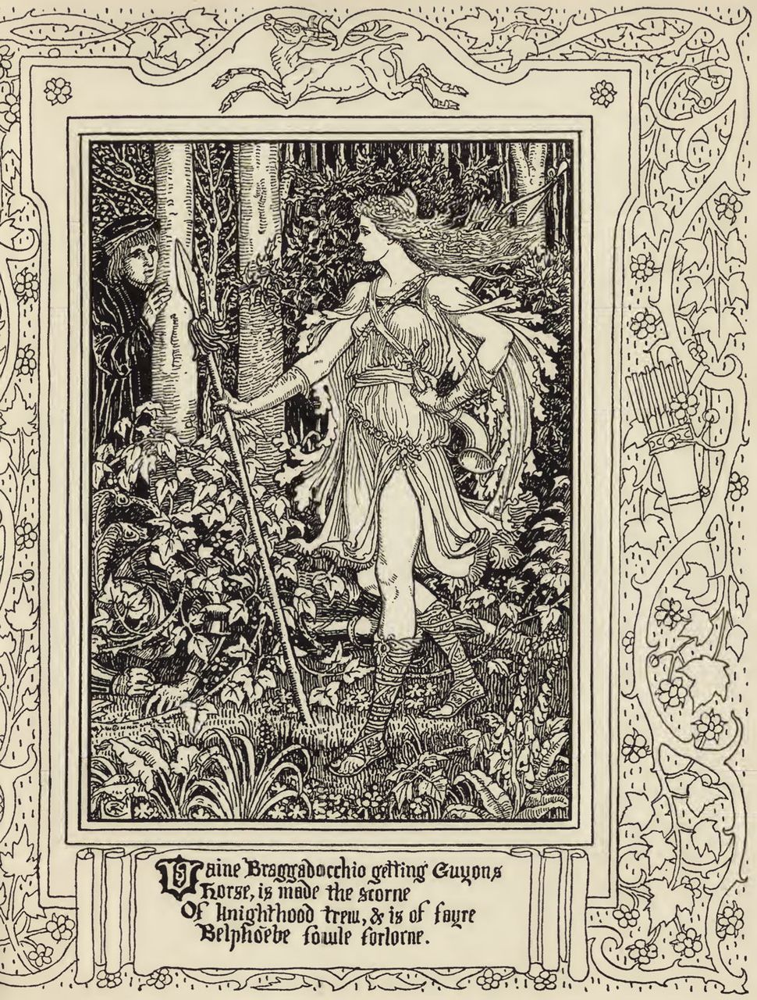
Belphoebe appears to BraggadocchioWalter Crane, 1895–97 · Folger Shakespeare Library
xxiEft through the thick they heard one rudely rush;With noys whereof he from his lofty steedDown fell to ground, and crept into a bush,To hide his coward head from dying dreed.But Trompart stoutly stay’d to taken heedOf what might hap. Eftsoon there stepped forthA goodly Lady clad in hunters weed,That seem’d to be a woman of great worth,And by her stately portance, borne of heavenly birth.
xxiiHer face so fair as flesh it seemed not,But heavenly pourtraict of bright Angels hue,Clear as the ski, withouten blame or blot,Through goodly mixture of complexions dew;And in her cheeks the vermeil red did showLike roses in a bed of lilies shed,The which ambrosial odours from them threw,And gazers sense with double pleasure fed,Hable to heal the sic, and to revive the dead.
xxiiiIn her fair eyes two living lamps did flame,Kindled above at th’heavenly makers light,And darted firry beams out of the same,So passing persant, and so wondrous bright,That quite bereav’d the rash beholders sight:In them the blinded god his lustful fireTo kindle oft assay’d, but had no might;For with dread Majesty, and awful ire,She broke his wanton darts, and quenched base desire.
xxivHer ivory forhead, full of bounty brave,Like a broad table did it self dispread,For Love his lofty triumphs to engrave,And write the battles of his great godhead:All good and honour might therein be red:For there their dwelling was. And when she spake,Sweet words, like dropping honny she did shed,And twixt the perls and rubins softly brakeA silver sound, that heavenly music seem’d to make.
xxvUpon her eyelids many Graces sate,Under the shadow of her even brows,Working belgards, and amorous retrate,And every one her with a grace endows:And every one with meekens to her bows.So glorious mirrhour of celestial grace,And sovereign moniment of mortal vows,How shall frail pen descrive her heavenly face,For fear through want of skill her beauty to disgrace?
xxviSo fair, and thousand thousand times more fairShe seem’d, when she presented was to sight,And was yclad, for heat of scorching aire,All in a silken Camus lyly white,Purfled upon with many a folded plight,Which all above besprinckled was throughoutWith golden aygulets, that glister’d bright,Like twinckling starrs, and all the skirt aboutWas hem’d with golden fringe
xxviiBelow her ham her weed did somewhat train,And her straight legs most bravely were embayldIn gilden buskins of costly Cordwain,All bard with golden bends, which were entayldWith curious anticks, and full fair aumayld:Before they fasten’d were under her kneeIn a rich Jewell, and therein entrayldThe ends of all their knots, that none might see,How they within their foldings close enwrapped be.
xxviiiLike two fair marble pillars they were seen,Which do the temple of the Gods support,Whom all the people deck with girlands green,And honour in their festival resort;Those same with stately grace, and princely portShe taught to tread, when she her self would grace,But with the woodie Nymphs when she did play,Or when the flying Libbard she did chace,She could them nimbly move, and after fly apace.
xxixAnd in her hand a sharpe bore-spear she held,And at her back a bow and quiver gay,Stuft with steel-headed darts, wherewith she queldThe salvage beasts in her victorious play,Knit with a golden bauldricke, which forelayAthwart her snowy breast, and did divideHer dainty paps; which like young fruit in MayNow little gan to swell, and being tide,Through her thin weed their places only signified.
xxxHer yellow locks crisped, like golden wire,About her shoulders weren loosely shed,And when the wind amongst them did inspire,They waved like a pennon wide dispread,And low behind her back were scattered:And whether art it were, or heedless hap,As through the flouring forrest rash she fled,In her rude hairs sweet flowers themselves did lap,And flourishing fresh leaves and blossoms did enwrap.
xxxiSuch as Diana by the sandy shoreOf swift Eurotas, or on Cynthus green,Where all the Nymphs have her unwares forlore,Wandreth alone with bow and arrows keen,To seek her game: Or as that famous QueenOf Amazons, whom Pyrrhus did destroy,The day that first of Priame she was seen,Did show her self in great triumphant joy,To succour the weak state of sad afflicted Troy.
xxxiiSuch when as hartlesse Trompart her did view,He was dismayed in his coward mind,And doubted, whether he himself should show,Or fly away, or bide alone behind:Both fear and hope he in her face did find,When she at last him spying thus bespake;Hayle Groom; didst not thou see a bleeding Hind,Whose right haunch erst my steadfast arrow strake?If thou didst, tell me, that I may her overtake.
xxxiiiWherewith reviv’d, this answer forth he threw;O Goddess, (for such I thee take to be)For neither doth thy face terrestrial show,Nor voice sound mortal; I avow to thee,Such wounded beast, as that, I did not see,Sith erst into this forrest wild I came.But mote thy goodlihead forgive it me,To weet, which of the Gods I shall thee name,That unto thee due worship I may rightly frame.
xxxivTo whom she thus; but ere her words ensewed,Unto the bush her eye did sudden glance,In which vain Braggadocchio was mewed,And saw it stire: she left her percing launce,And towards gan a deadly shaft aduaunce,In mind to mark the beast. At which sad stowre,Trompart forth stept, to stay the mortal chance,Out crying, O what ever heavenly power,Or earthly wight thou be, withhold this deadly hour.
xxxvO stay thy hand, for yonder is no gameFor thy fierce arrows, them to exercise,But lo my Lord, my liege, whose warlike nameIs fare renowmd through many bold emprise;And now in shade he shrowded yonder lies.She staid: with that he crauld out of his nest,Forth creeping on his caitiff hands and this,And standing stoutly up, his lofty crestDid fiercely shake, and rows, as coming late from rest.
xxxviAs fearful foul, that long in secret caveFor dread of soaring hauke her self hath hid,Not caring how, her silly life to save,She her gay painted plumes disorderid,Seeing at last her self from danger rid,Peeps forth, and soon renews her native pride;She gins her feathers foul disfiguredProudly to prune, and set on every side,So shakes off shame, ne thinks how erst she did her hide.
xxxviiSo when her goodly visage he beheld,He gan himself to vaunt: but when he vewedThose deadly toles, which in her hand she held,Soon into other fits he was transmewed,Till she to him her gracious speech renewed;All hail, Sir knight, and well may thee befall,As all the like, which honour have pursewedThrough deeds of arms and prowess martial;All virtue merits praise, but such the most of all.
xxxviiiTo whom he thus; O fairest under ski,True be thy words, and worthy of thy praise,That warlike feats doest highest glorify.Therein have I spent all my youthly days,And many battles fought, and many fraiseThroughout the world, where so they might be found,Endevouring my dreaded name to raiseAbove the Moon, that fame may it resoundIn her eternal trompe, with laurel girland cround.
xxxixBut what art thou, O Lady, which doest raungeIn this wild forrest, where no pleasure is,And doest not it for joyous court exchange,Amongst thine equal peres, where happy blissAnd all delight does reign, much more than this?There thou maist love, and dearly loved be,And swim in pleasure, which thou here doest mis;There maist thou best be seen, and best maist see:The wood is fit for beasts, the court is fit for thee.
xlWho so in pomp of proud estate (quoth she)Does swim, and bathes himself in courtly bliss,Does waste his days in dark obscurity,And in oblivion ever buried is:Where ease abounds, yt’s eath to do amiss;But who his limbs with labours, and his mindBehaves with cares, cannot so easy mis.Abroad in arms, at home in studious kindWho seeks with painful toil, shall honour soonest find.
xliIn woods, in waves, in wars she wonts to dwell,And will be found with peril and with pain;Ne can the man, that moulds in idle cell,Unto her happy mansion attain:Before her gate high God did Sweat ordain,And wakeful watches ever to abide:But easy is the way, and passage plainTo pleasures palace; it may soon be spied,And day and night her doors to all stand open wide.
xliiIn Princes court, The rest she would have said,But that the foolish man, fil’d with delightOf her sweet words, that all his sense dismay’d,And with her wondrous beauty ravisht quite,Gan burn in filthy lust, and leaping light,Thought in his bastard arms her to embrace.With that she swarving back, her Javelin brightAgainst him bent, and fiercely did menace:So turned her about, and fled away apace.
xliiiWhich when the Peasant saw, amaz’d he stood,And grieved at her flight; yet durst he notPursue her steps, through wild unknowen wood;Besides he fear’d her wrath, and threaten’d shotWhiles in the bush he lay, not yet forgot:Ne car’d he greatly for her presence vain,But turning said to Trompart, What foul blotIs this to knight, that Lady should againDepart to woods untoucht, and leave so proud disdain?
xlivPerdie (said Trompart) let her pass at will,Least by her presence danger mote befall.For who can tell (and sure I fear it ill)But that she is some power celestial?For whiles she spake, her great words did appallMy feeble courage, and my heart oppress,That yet I quake and tremble over all.And I (said Braggadocchio) thought no less,When first I heard her horne sound with such ghastliness.
xlvFor from my mothers womb this grace I haveMe given by eternal destiny,That earthly thing may not my courage braveDismay with fear, or cause one foot to fly,But either hellish fiends, or powers on hie:Which was the cause, when erst that horne I heard,Weening it had been thunder in the ski,I hid my self from it, as one affeard;But when I other knew, my self I boldly rear’d.
xlviBut now for fear of worse, that may betide,Let us soon hence depart. They soon agree;So to his steed he got, and gan to ride,As one unfit therefore, that all might seeHe had not trained been in chevalree.Which well that valiant courser did discern;For he despysd to tread in dew degree,But chaufd and foam’d, with courage fierce and stern,And to be esd of that base burden still did erne.
Booke II · Temperaunce
Canto IIII
❧
Guion does Furor bind in chaines, and stops Occasion: Delivers Phedon, and therefore by Strife is rayl’d upon.
❧
in brave pursuit of honorable deed,There is I know not what great differenceBetween the vulgar and the noble seed,Which unto things of valorous pretenceSeems to be borne by native influence;As feats of arms, and love to entertain,But chiefly skill to ride, seems a scienceProper to gentle blood; some others fainTo menage steeds, as did this vaunter; but in vain.
iiBut he the rightful owner of that steed,Who well could menage and subdue his pride,The whiles on foot was forced for to ied,With that black Palmer, his most trusty guide;Who suffer’d not his wand’ring feet to slide.But when strong passion, or weak fleshlinessWould from the right way seek to draw him wide,He would through temperance and steadfastness,Teach him the weak to strengthen, and the strong suppress.
iiiIt fortuned forth faring on his way,He saw from fare, or seemed for to seeSome troublous uproar or contentious fray,Whereto he drew in haste it to agree.A mad man, or that feigned mad to be,Drew by the hair along upon the ground,A handsome stripling with great cruelty,Whom sore he bet, and gor’d with many a wound,That cheeks with tears, and sides with blood did all abound.
ivAnd him behind, a wicked Hag did stalk,In ragged robes, and filthy disarray,Her other leg was lame, that she no’te walk,But on a staff her feeble steps did stay;Her locks, that loathly were and hoary gray,Grew all afore, and loosely hung unrold,But all behind was bald, and worn away,That none thereof could ever taken hold,And eke her face ill favour’d, full of wrinckles old.
vAnd ever as she went, her tongue did walkIn foul reproach, and termes of vile despite,Provoking him by her outrageous talk,To heap more vengeance on that wretched wight;Sometimes she raught him stones, wherwith to smite,Sometimes her staff, though it her one leg were,Withouten which she could not go upright;Ne any evil means she did forbear,That might him move to wrath, and indignation rear.
viThe noble Guyon mov’d with great remorse,Approaching, first the Hag did thrust away,And after adding more impetuous forse,His mighty hands did on the madman lay,And pluck’d him back; who all on fire straight way,Against him turning all his fell intent,With beastly brutish rage gan him assay,And smote, and bit, and kick’d, and scratch’d, and rent,And did he wist not what in his avengement.
viiAnd sure he was a man of mickle might,Had he had governance, it well to guide:But when the frantic fit inflam’d his spright,His force was vain, and stroke more often wide,Then at the aimed mark, which he had eide:And oft himself he chanc’d to hurt unwares,Whilst reason blent through passion, nought descried,But as a blindfold Bull at randon fares,And where he hits, nought knowes, and whom he hurts, nought cares.
viiiHis rude assault and rugged handelingStrange seemed to the knight, that aye with foeIn fair defence and goodly menagingOf arms was wont to fight, yet nathemoWas he abashed now not fighting so,But more enfierced through his currish play,Him sternly gript, and haling to and fro,To overthrow him strongly did assay,But overthrew himself unwares, and lower lay.
ixAnd being down the villein sore did beat,And bruze with clownish fists his manly face:And eke the Hag with many a bitter threat,Still call'd upon to kill him in the place.With whose reproach and odious menaceThe knight emboyling in his haughty heart,Knit all his forces, and gan soon unbraceHis grasping hold: so lightly did upstart,And drew his deadly weapon, to maintain his part.
xWhich when the Palmer saw, he loudly cried,Not so, O Guyon, never think that soThat Monster can be maister’d or destroy’d:He is not, ah, he is not such a foe,As steel can wound, or strength can overthroe.That same is Furor, cursed cruel wight,That unto knighthood works much shame and woe;And that same Hag, his aged mother, hightOccasion, the root of all wrath and despite.
xiWith her, who so will raging Furor tame,Must first begin, and well her amenage:First her restrain from her reproachful blame,And evil means, with which she doth enrageHer frantic son, and kindles his courage,Then when she is withdrawen, or strong withstood,It’s eath his idle fury to asswage,And calm the tempest of his passion wood;The banks are overflowen, when stopped is the flood.
xiiTherewith Sir Guyon left his first emprise,And turning to that woman, fast her hentBy the hoar locks, that hung before her eyes,And to the ground her threw: yet n’ould she stentHer bitter railing and foul revilement,But still provokt her son to wreak her wrong;But nathless he did her still torment,And catching hold of her ungracious tongue,Thereon an iron lock did fasten firm and strong.
xiiiThen when as use of speech was from her reft,With her two crooked hands she signs did make,And beckned him, the last help she had left:But he that last left help away did take,And both her hands fast bound unto a stake,That she note stire. Then gan her son to flyFull fast away, and did her quite forsake;But Guyon after him in haste did hie,And soon him overtook in sad perplexity.
xivIn his strong arms he stiffly him embrac’d,Who him gainstriving, nought at all prevail’d:For all his power was utterly defac’d,And furious fits at erst quite weren quail’d:Oft he re’nforst, and oft his forces fayld,Yet yield he would not, nor his rancour slack.Then him to ground he cast, and rudely hayl’d,And both his hands fast bound behind his back,And both his feet in fetters to an iron rack.
xvWith hundred iron chaines he did him bind,And hundred knots that did him sore constrain:Yet his great iron teeth he still did grind,And grimly gnash, threat’ning revenge in vain;His burning eyen, whom bloody strakes did stain,Stared full wide, and threw forth sparks of fire,And more for ranck despite, then for great pain,Shakt his long locks, colour’d like copper-wire,And bit his tawny beard to show his raging ire.
xviThus when as GuyonFuror had captive’d,Turning about he saw that wretched Squire,Whom that mad man of life nigh late depriv’d,Lying on ground, all soil’d with blood and mire:Whom when as he perceived to respire,He gan to comfort, and his wounds to dress.Being at last recured, he gan inquire,What hard mishap him brought to such distress,And made that caitiffs thrall, the thrall of wretchedness.
xviiWith heart then throbbing, and with wat’ry eyes,Fair Sir (quoth he) what man can shun the hap,That hidden lyes unwares him to surprise?Misfortune waits advantage to entrapThe man most wary in her whelming lap.So me weak wretch, of many weakest one,Unweeting, and unware of such mishap,She brought to mischief through occasion,Where this same wicked villein did me light upon.
xviiiIt was a faithless Squire, that was the soursOf all my sorrow, and of these sad tears,With whom from tender dug of commune norse,At once I was upbrought, and eft when yearsMore rype us reason lent to chose our Pears,Ourselves in league of vowed love we knit:In which we long time without gealous fears,Or faulty thoughts continewd, as was fit;And for my part I vow, dissembled not a whit.
xixIt was my fortune commune to that age,To love a Lady fair of great degree,The which was borne of noble parentage,And set in highest seat of dignity,Yet seem’d no less to love, then loved to be:Long I her serv’d, and found her faithful still,Ne ever thing could cause us disagree:Love that two hearts makes one, makes eke one will:Each strove to please, and others pleasure to fulfill.
xxMy friend, hight Philemon, I did partakeOf all my love and all my privity;Who greatly joyous seemed for my sake,And gracious to that Lady, as to me,Ne ever wight, that mote so welcome be,As he to her, withouten blot or blame,Ne ever thing, that she could think or see,But unto him she would impart the same:O wretched man, that would abuse so gentle Dame.
xxiAt last such grace I found, and means I wrought,That I that Lady to my spouse had won;Accord of friends, consent of parents sought,Affiance made, my happiness begone,There wanted nought but few rites to be donne,Which marriage make; that day too fare did seem:Most joyous man, on whom the shining SunDid show his face, my self I did esteem,And that my falser friend did no less joyous deem.
xxiiBut ere that wished day his beam disclos’d,He either envying my toward good,Or of himself to treason ill dispos’d,One day unto me came in friendly mood,And told for secret how he understoodThat Lady whom I had to me assynd,Had both distain’d her honorable blood,And eke the faith, which she to me did bind;And therfore wisht me stay, till I more truth should find.
xxiiiThe gnawing anguish and sharpe gelosy,Which his sad speech infixed in my breast,Ranckled so sore, and fester’d inwardly,That my engreeved mind could find no rest,Till that the truth thereof I did outwrest,And him besought by that same sacred bandBetwixt us both, to counsel me the best.He then with solemn oath and plighted handAssur’d, ere long the truth to let me understand.
xxivEre long with like again he boarded me,Saying, he now had boulted all the flour,And that it was a groom of base degree,Which of my love was partner Paramour:Who used in a darksome inner bowerHer oft to meet: which better to approve,He promised to bring me at that hour,When I should see, that would me nearer move,And drive me to withdraw my blind abused love.
xxvThis graceless man for furtherance of his guile,Did court the handmaid of my Lady dear,Who glad t’embosome his affection vile,Did all she might, more pleasing to appear.One day to work her to his will more near,He woo’d her thus: Pryene (so she hight)What great despite doth fortune to thee bear,Thus lowly to abase thy beauty bright,That it should not deface all others lesser light?
xxviBut if she had her least help to thee lent,T’adorne thy form according thy desart,Their blazing pride thou wouldest soon have blent,And staynd their praises with thy least good part;Ne should fair Claribell with all her art,Though she thy Lady be, approach thee near:For proof thereof, this evening, as thou art,Array thy self in her most gorgeous geare,That I may more delight in thy embracement dear.
xxviiThe Maiden proud through prays, and mad through loveHim hearken’d to, and soon her self array’d,The whiles to me the treachour did removeHis crafty engin, and as he had said,Me leading, in a secret corner laid,The sad spectator of my Tragedy;Where left, he went, and his own false part play’d,Disguised like that groom of base degree,Whom he had feign’d th’abuser of my love to be.
xxviiiEftsoons he came unto th’appointed place,And with him brought Pryene, rich array’d,In Claribellaes clothes. Her proper faceI not descerned in that darksome shade,But wend it was my love, with whom he play’d.Ah God, what horror and tormenting griefMy heart, my hands, mine eyes, and all assay’d?Me liefer were ten thousand deaths priefe,Then wound of gealous worm, and shame of such repriefe.
xxixI home returning, fraught with foul despite,And chawing vengeance all the way I went,Soon as my loathed love appear’d in sight,With wrathful hand I slew her innocent;That after soon I dearly did lament:For when the cause of that outrageous deedDemanded, I made plain and evident,Her faulty Handmaid, which that bale did breed,Confest, how Philemon her wrought to change her weed.
xxxWhich when I heard, with horrible affrightAnd hellish fury all enrag’d, I soughtUpon my self that vengeable despiteTo punish: yet it better first I thought,To wreak my wrath on him, that first it wrought.To Philemon, false faitour PhilemonI cast to pay, that I so dearly bought;Of deadly drugs I gave him drink anon,And washt away his guilt with guilty potion.
xxxiThus heaping crime on crime, and grief on grief,To loss of love adjoining loss of frend,I meant to purge both with a third mischief,And in my woes beginner it to end:That was Pryene; she did first offend,She last should smart: with which cruel intent,When I at her my murdrous blade did bend,She fled away with ghastly dreriment,And I pursewing my fell purpose, after went.
xxxiiFear gave her wings, and rage enforc’d my flight;Through woods and plains so long I did her chace,Till this mad man, whom your victorious mightHath now fast bound, me met in middle space,As I her, so he me pursewd apace,And shortly overtook: I, breathing ire,Sore chauffed at my stay in such a case,And with my heat kindled his cruel fire;Which kindled once, his mother did more rage inspire.
xxxiiiBetwixt them both, they have me doen to die,Through wounds, and strokes, and stubborn handeling,That death were better, then such agony,As grief and fury unto me did bring;Of which in me yet sticks the mortal sting,That during life will never be appeas’d.When he thus ended had his sorrowing,Said Guyon, Squire, sore have ye been diseas’d;But all your hurts may soon through temperance be esd.
xxxivThen gan the Palmer thus, Most wretched man,That to affections does the bridle lend;In their beginning they are weak and wan,But soon through suff’rance grow to fearful end;Whiles they are weak betimes with them contend:For when they once to perfect strength do grow,Strong wars they make, and cruel batt’ry bendGainst fort of Reason, it to overthrow:Wrath, gealosie, grief, love this Squire have laid thus low.
xxxvWrath, gealosie, grief, love do thus expel:Wrath is a fire, and gealosie a weed,Grief is a flood, and love a monster fell;The fire of sparks, the weed of little seed,The flood of drops, the Monster filth did breed:But sparks, seed, drops, and filth do thus delay;The sparks soon quench, the springing seed outweed,The drops dry up, and filth wipe clean away:So shall wrath, gealosie, grief, love dye and decay.
xxxviUnlucky Squire (said Guyon) sith thou hastFalne into mischief through intemperance,Henceforth take heed of that thou now hast past,And guide thy ways with wary governance,Least worse betide thee by some later chance.But read how art thou nam’d, and of what kin.Phedon I hight (quoth he) and do aduaunceMine ancestry from famous Coradin,Who first to rays our house to honour did begin.
xxxviiThus as he spake, lo far away they spiedA varlet running towards hastily,Whose flying feet so fast their way applied,That round about a cloud of dust did fly,Which mingled all with sweat, did dim his eye.He soon approached, panting, breathless, whot,And all so soyld, that none could him descry;His countenance was bold, and bashed notFor Guyons lokes, but scornful eyglaunce at him shot.
xxxviiiBehind his back he bore a brazen shield,On which was drawen fair, in colours fit,A flaming fire in midst of bloody field,And round about the wreath this word was writ,Burnt I do burne. Right well beseemed it,To be the shield of some redoubted knight;And in his hand two darts exceeding flit,And deadly sharpe he held, whose heads were dightIn poison and in blood, of malice and despite.
xxxixWhen he in presence came, to Guyon firstHe boldly spake, Sir knight, if knight thou be,Abandon this forestalled place at erst,For fear of further harm, I counsel thee,Or bide the chance at thine own jeoperdie.The knight at his great boldness wondered,And though he scorn’d his idle vanity,Yet mildly him to purpose answered;For not to grow of nought he it conjectured.
xlVarlet, this place most dew to me I deem,Yielded by him, that held it forcibly.But whence should come that harm, which thou doest seemTo threat to him, that minds his chance t’abye?Perdy (said he) here comes, and is hard byA knight of wondrous power, and great assay,That never yet encounter’d enemy,But did him deadly daunt, or foul dismay;Ne thou for better hope, if thou his presence stay.
xliHow hight he then (said Guyon) and from whence?Pyrochles is his name, renowned fareFor his bold feats and hardy confidence,Full oft approv’d in many a cruel war,The brother of Cymochles, both which arrThe sons of old Acrates and Despight,Acrates son of Phlegeton and Jarre;But Phlegeton is son of Herebus and Night;But Herebus son of Aeternitie is hight.
xliiSo from immortal race he does proceed,That mortal hands may not withstand his might,Drad for his derring do, and bloody deed;For all in blood and spoil is his delight.His am I Atin, his in wrong and right,That matter make for him to work upon,And stire him up to strife and cruel fight.Fly therefore, fly this fearful stead anon,Least thy foolhardize work thy sad confusion.
xliiiHis be that care, whom most it doth concern,(Said he) but whither with such hasty flightArt thou now bound? for well mote I discernGreat cause, that carries thee so swift and light.My Lord (quoth he) me sent, and straight behightTo seek Occasion, where so she be:For he is all dispos’d to bloody fight,And breathes out wrath and hainous cruelty;Hard is his hap, that first false in his jeopardy.
xlivMadman (said then the Palmer) that does seekOccasion to wrath, and cause of strife;She comes unsought, and shonned follows eke.Happy, who can abstain, when Rancour rifeKindles Revenge, and threats his rusty knife;Woe never wants, where every cause is caught,And rash Occasion makes unquiet life.Then lo, where bound she sits, whom thou hast sought,(Said Guyon,) let that message to thy Lord be brought.
xlvThat when the varlet heard and saw, straight wayHe wexed wondrous wroth, and said, Vile knight,That knights and knighthood doest with shame upbray,And shewst th’ensample of thy childish might,With silly weak old woman thus to fight.Great glory and gay spoil sure hast thou got,And stoutly prou’d thy puissance here in sight;That shall Pyrochles well requite, I wot,And with thy blood abolish so reproachful blot.
xlviWith that one of his thrillant darts he threw,Headed with ire and vengeable despite;The quivering steel his aimed end well knew,And to his breast it self intended right:But he was wary, and ere it empightIn the meant mark, aduaunst his shield atween,On which it seizing, no way enter might,But back rebounding, left the forckhead keen;Eftsoons he fled away, and might no where be seen.
Booke II · Temperaunce
Canto V
❧
Pyrochles does with Guion fight, And Furors chain unbinds:[580
❧
iho ever doth to temperance applyHis steadfast life, and all his actions frame,Trust me, shall find no greater enemy,Then stubborn perturbation, to the same;To which right well the wise do give that name,For it the goodly peace of stayed mindsDoes overthrow, and troublous war proclame:His own woes author, who so bound it finds,As did Pyrochles, and it wilfully unbinds.
iiAfter that varlets flight, it was not long,Ere on the plain fast pricking Guyon spiedOne in bright arms embatteiled full strong,That as the Sunny beams do glance and glideUpon the trembling wave, so shined bright,And round about him threw forth sparkling fire,That seem’d him to enflame on every side:His steed was bloody red, and foamed ire,When with the maistring spur he did him roughly stire.
iiiApproaching nigh, he never stay’d to greet,Ne chaffar words, prow’d courage to provoke,But prick’d so fiers, that underneath his feetThe smould’ring dust did round about him smoke,Both horse and man nigh able for to choke;And fairly couching his steel-headed spear,Him first saluted with a sturdy stroke;It booted nought Sir Guyon coming nearTo think, such hideous puissance on foot to bear.
ivBut lightly shunned it, and passing by,With his bright blade did smite at him so fell,That the sharpe steel arriving forciblyOn his broad shield, bit not, but glancing fellOn his horse neck before the quilted sell,And from the head the body sundried quite.So him dismounted low, he did compelOn foot with him to matchen equal fight;The truncked beast fast bleeding, did him foully dight.
vSore bruzed with the fall, he slow uprose,And all enraged, thus him loudly shent;Disleal knight, whose coward courage choseTo wreak it self on beast all innocent,And shun’d the mark, at which it should be ment,Thereby thine arms seem strong, but manhood frail;So hast thou oft with guile thine honour blent;But little may such guile thee now availe,If wonted force and fortune do not much me fail.
viWith that he drew his flaming sword, and strokeAt him so fiercely, that the upper margeOf his sevenfolded shield away it toke,And glancing on his helmet, made a largeAnd open gash therein: were not his targe,That broke the violence of his intent,The weary soul from thence it would discharge;Nathless so sore a buff to him it lent,That made him reel, and to his breast his bever bent.
viiExceeding wroth was Guyon at that blow,And much asham’d, that stroke of living armShould him dismay, and make him stoup so low,Though otherwise it did him little harm:Tho hurling high his iron braced arm,He smote so manly on his shoulder plate,That all his left side it did quite disarm;Yet there the steel stay’d not, but inly bateDeep in his flesh, and opened wide a red floodgate.
viiiDeadly dismay’d, with horror of that dintPyrochles was, and grieved eke entire;Yet nathemore did it his fury stint,But added flame unto his former fire,That wellnigh molt his heart in raging ire,Ne thenceforth his approved skill, to ward,Or strike, or hurtle round in warlike gyre,Remember’d he, ne car’d for his saufgard,But rudely rag’d, and like a cruel Tigre far’d.
ixHe hew’d, and lasht, and foynd, and thunder’d blows,And every way did seek into his life,Ne plate, ne male could ward so mighty throws,But yielded passage to his cruel knife.But Guyon, in the heat of all his strife,Was wary wise, and closely did awaitAvauntage, whilst his foe did rage most rife;Sometimes a thwart, sometimes he stroke him strait,And falsed oft his blows, t’illude him with such bait.
xLike as a Lyon, whose imperial powerA prow’d rebellious Unicorn defies,T’avoide the rash assault and wrathful stowreOf his fiers foe, him to a tree applies,And when him running in full course he spies,He slips aside; the whiles that furious beastHis precious horne, sought of his enemies,Strikes in the stock, ne thence can be releas’d,But to the mighty victor yields a bounteous feast.
xiWith such fair slight him Guyon often fail’d,Till at the last all breathless, weary, faintHim spying, with fresh onset he assail’d,And kindling new his courage seeming queint,Stroke him so hugely, that through great constraintHe made him stoup perforce unto his knee,And do unwilling worship to the Saint,That on his shield depainted he did see;Such homage till that instant never learned he.
xiiWhom Guyon seeing stoup, pursewed fastThe present offer of fair victory,And soon his dreadful blade about he cast,Wherewith he smote his haughty crest so hye,That straight on ground made him full low to lie;Then on his breast his victor foot he thrust,With that he cried, Mercy, do me not dye,Ne deem thy force by fortunes dome unjust,That hath (maugre her spite) thus low me laid in dust.
xiiiEftsoons his cruel hand Sir Guyon stay’d,Temp’ring the passion with advisement slow,And maistring might on enemy dismay’d:For th’equall dye of war he well did know;Then to him said, Live and allegaunce owe,To him that gives thee life and liberty,And henceforth by this days ensample trow,That hasty wroth, and heedless hazardryDo breed repentance late, and lasting infamy.
xivSo up he let him rise, who with grim lokeAnd count’naunce stern upstanding, gan to grindHis grated teeth for great disdeigne, and shookHis sandy locks, long hanging down behind,Knotted in blood and dust, for grief of mind,That he in ods of arms was conquered;Yet in himself some comfort he did find,That him so noble knight had maistered,Whose bounty more than might, yet both he wondered.
xvWhich Guyon marking said, Be nought aggrieve’d,Sir knight, that thus ye now subdewed arr:Was never man, who most conquests achiev’d,But sometimes had the worse, and lost by war,Yet shortly gaynd, that loss exceeded fare:Loss is no shame, nor to be less than foe,But to be lesser, then himself, doth mareBoth losers lot, and victors prays also.Vain others overthrows, who self doth overthrow.
xviFly, O Pyrochles, fly the dreadful war,That in thy self thy lesser parts do move,Outrageous anger, and woe-working jar,Direful impatience, and heart murd’ring love;Those, those thy foes, those warriors far remove,Which thee to endless bale captived lead.But sith in might thou didst my mercy prove,Of courtesy to me the cause aread,That thee against me drew with so impetuous dread.
xviiDreadless (said he) that shall I soon declare:It was complain’d, that thou hadst done great tortUnto an aged woman, poor and bare,And thralled her in chaines with strong effort,Void of all succour and needful comfort:That ill beseems thee, such as I thee see,To work such shame. Therefore I thee exhort,To change thy will, and set Occasion free,And to her captive son yield his first liberty.
xviiiThereat Sir Guyon smilde, And is that all(Said he) that thee so sore displeased hath?Great mercy sure, for to enlarge a thrall,Whose freedom shall thee turn to greatest scathe.Nath’lesse now quench thy whot emboyling wrath:Lo there they be; to thee I yield them free.Thereat he wondrous glad, out of the pathDid lightly leap, where he them bound did see,And gan to break the bands of their captivity.
xixSoon as Occasion felt her self untied,Before her son could well assoiled be,She to her use return’d, and straight defiedBoth Guyon and Pyrochles: th’one (said she)Bycause he won; the other because heWas won: So matter did she make of nought,To stire up strife, and do them disagree:But soon as Furor was enlarg’d, she soughtTo kindle his quench’d fire, and thousand causes wrought.
xxIt was not long, ere she inflam’d him so,That he would algates with Pyrochles fight,And his redeemer chalengd for his foe,Because he had not well mainteind his right,But yielded had to that same stranger knight:Now gan Pyrochles wex as wood, as he,And him affronted with impatient might:So both together fiers engrasped be,Whiles Guyon standing by, their uncouth strife does see.
xxiHim all that while Occasion did provokeAgainst Pyrochles, and new matter framedUpon the old, him stirring to be wrokeOf his late wrongs, in which she oft him blamedFor suffering such abuse, as knighthood shamed,And him dishabled quite. But he was wiseNe would with vain occasions be inflamed;Yet others she more urgent did devise:Yet nothing could him to impatience entise.
xxiiTheir fell contention still increased more,And more thereby increased Furors might,That he his foe has hurt, and wounded sore,And him in blood and durt deformed quite.His mother eke, more to augment his spite,Now brought to him a flaming fire brand,Which she in Stygian lake, ay burning bright,Had kindled: that she gave into his hond,That arm’d with fire, more hardly he mote him withstond.
xxiiiTho gan that villein wex so fiers and strong,That nothing might sustain his furious forse;He cast him down to ground, and all alongDrew him through durt and mire without remorse,And foully battered his comely corse,That Guyon much disdeignd so loathly sight.At last he was compel’d to cry perforse,Help, O Sir Guyon, help most noble knight,To rid a wretched man from hands of hellish wight.
xxivThe knight was greatly moved at his plaint,And gan him dight to succour his distress,Till that the Palmer, by his grave restraint,Him stay’d from yielding pitiful redress;And said, Dear son, thy causeless ruth repress,Ne let thy stout heart melt in pity vain:He that his sorrow sought through wilfulness,And his foe fetter’d would release again,Deserves to taste his follies fruit, repented payne.
xxvGuyon obayd; So him away he drewFrom needless trouble of renewing fightAlready fought, his voyage to pursue.But rash Pyrochles varlet, Atin hight,When late he saw his Lord in heavy plight,Under Sir Guyons puissant stroke to fall,Him deeming dead, as then he seem’d in sight,Fled fast away, to tell his funeralUnto his brother, whom Cymochles men did call.
xxviHe was a man of rare redoubted might,Famous throughout the world for warlike prays,And glorious spoils, purchast in perilous fight:Full many doughty knights he in his daysHad doen to death, subdewde in equal frays,Whose carkases, for terror of his name,Of fowles and beasts he made the piteous prays,And hung their conquered arms for more defameOn gallow trees, in honour of his dearest Dame.
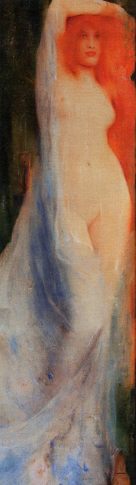
AcrasiaFernand Khnopff, 1897 · for the Fairy Queen
xxviiHis dearest Dame is that Enchaunteresse,The vile Acrasia, that with vain delights,And idle pleasures in her Bowre of Blisse,Does charm her lovers, and the feeble sprightsCan call out of the bodies of frail wights:Whom then she does transform to monstrous hues,And horribly misshapes with ugly sights,Captive’d eternally in iron mews,And darksome dens, where Titan his face never shews.
xxviiiThere Atin found Cymochles soiourning,To serve his Lemans love: for he, by kind,Was given all to lust and loose living,When ever his fiers hands he free mote find:And now he has pour'd out his idle mindIn dainty delices, and lavish joys,Having his warlike weapons cast behind,And flows in pleasures, and vain pleasing toys,Mingled amongst loose Ladies and lascivious boyes.
xxixAnd over him, art striving to compaireWith nature, did an Arber green dispread,Framed of wanton Ivy, flouring fair,Through which the fragrant Eglantine did spreadHis pricking arms, entrayld with roses red,Which dainty odours round about them threw,And all within with flowers was garnished,That when mild Zephyrus amongst them blew,Did breath out bounteous smells, and painted colors show.
xxxAnd fast beside, there trickled softly downA gentle stream, whose murmuring wave did playAmongst the pumy stones, and made a sown,To lull him soft a sleep, that by it lay;The weary Traveiler, wand’ring that way,Therein did often quench his thristy heat,And then by it his weary limbs display,Whiles creeping slumber made him to forgetHis former pain, and wypt away his toilsome sweat.
xxxiAnd on the other side a pleasant groveWas shot up high, full of the stately tree,That dedicated is t’Olympicke Jove,And to his son Alcides, whenas heGaynd in Nemea goodly victory;Therein the meri birds of every sortChaunted alow’d their cheerful harmony:And made amongst themselves a sweet consort,That quicken’d the dull spright with musical comfort.
xxxiiThere he him found all carelessly display’d,In secret shadow from the sunny ray,On a sweet bed of lilies softly laid,Amidst a flock of Damsels fresh and gay,That round about him dissolute did playTheir wanton follies, and light merriment;Every of which did loosely disarrayHer upper parts of meet habiliments,And show’d them naked, deck’d with many ornaments.
xxxiiiAnd every of them strove, with most delights,Him to aggrate, and greatest pleasures show;Some fram’d fair lokes, glancing like evening lights,Others sweet words, dropping like honny dew;Some bathed kisses, and did soft embrueThe sugred licour through his melting lips:One boasts her beauty, and does yield to viewHer dainty limbs above her tender hips;Another her out boasts, and all for trial strips.
xxxivHe, like an Adder, lurking in the weeds,His wand’ring thought in deep desire does steep,And his frail eye with spoil of beauty feeds;Sometimes he falsely fains himself to sleep,Whiles through their lids his wanton eyes do peep,To steale a snatch of amorous conceipt,Whereby close fire into his heart does creep:So, them deceives, deceiv’d in his deceipt,Made drunk with drugs of dear voluptuous receipt.
xxxvAtin arriving there, when him he spied,Thus in still waves of deep delight to wade,Fiercely approaching, to him lowdly cried,Cymochles; oh no, but Cymochles shade,In which that manly person late did fade,What is become of great Acrates son?Or where hath he hung up his mortal blade,That hath so many haughty conquests won?Is all his force forlorn, and all his glory donne?
xxxviThen pricking him with his sharpe-pointed dart,He said; Up, up, thou womanish weak knight,That here in Ladies lap entombed art,Unmindful of thy praise and prowest might,And weetless eke of lately wrought despite,Whiles sad Pyrochles lies on senseless ground,And groneth out his utmost grudging spright,Through many a stroke, and many a streaming wound,Calling thy help in vain, that here in joys art dround.
xxxviiSuddeinly out of his delightful dreamThe man awoke, and would have question’d more;But he would not endure that woeful themeFor to dilate at large, but urged soreWith percing words, and pitiful implore,Him hasty to arise. As one affrightWith hellish fiends, or Furies mad uproar,He then uprose, inflam’d with fell despite,And called for his arms; for he would algates fight.
xxxviiiThey been ybrought; he quickly does him dight,And lightly mounted, passeth on his way,Ne Ladies loves, ne sweet entreaties mightAppease his heat, or hasty passage stay;For he has vow’d, to been aveng’d that day,(That day it self him seemed all too long:)On him, that did Pyrochles dear dismay:So proudly pricketh on his courser strong,And Atin aiea him pricks with spurs of shame and wrong.
Booke II · Temperaunce
Canto VI
❧
Guion is of immodest Merth[612
❧
i Harder lesson, to learn ContinenceIn joyous pleasure, then in grievous pain:For sweetness doth allure the weaker senseSo strongly, that uneathes it can refrainFrom that, which feeble nature covets fain;But grief and wrath, that be her enemies,And foes of life, she better can restrain;Yet virtue vaunts in both their victories,And Guyon in them all shews goodly maisteries.
iiWhom bold Cymochles travelling to find,With cruel purpose bent to wreak on himThe wrath, which Atin kindled in his mind,Came to a river, by whose utmost brimWaiting to pass, he saw whereas did swimA long the shore, as swift as glance of eye,A little Gondelay, bedecked trimWith boughs and arbours woven cunningly,That like a little forrest seemed outwardly.
iiiAnd therein sate a Lady fresh and fair,Making sweet solace to her self alone;Sometimes she sung, as loud as lark in aire,Sometimes she laught, that nigh her breath was gone,Yet was there not with her else any one,That might to her move cause of merriment:Matter of merth enough, though there were none,She could devise, and thousand ways invent,To feed her foolish humour, and vain jolliment.
ivWhich when fare off Cymochles heard, and saw,He loudly call'd to such, as were a bord,The little bark unto the shore to draw,And him to ferry over that deep ford:The merry marriner unto his wordSoon hearken’d, and her painted bot straightwayTurn’d to the shore, where that same warlike LordShe in receiv’d; but Atin by no wayShe would admit, albe the knight her much did pray.
vEftsoons her shallow ship away did slide,More swift, then swallow sheres the liquid ski,Withouten oar or Pilot it to guide,Or winged canvas with the wind to fly,Only she turn’d a pin, and by and byIt cut away upon the yielding wave,Ne cared she her course for to apply:For it was taught the way, which she would have,And both from rocks and flats it self could wisely save.
viAnd all the way, the wanton Damsel foundNew merth, her passenger to entertain:For she in pleasant purpose did abound,And greatly joyed merry tales to fain,Of which a store-house did with her remain,Yet seemed, nothing well they her became;For all her words she drownd with laughter vain,And wanted grace in utt’ring of the same,That turned all her pleasance to a scoffing game.
viiAnd other whiles vain toys she would deviseAs her fantastic wit did most delight,Sometimes her head she fondly would aguizeWith gaudy garlands, or fresh flowerets dightAbout her neck, or rings of rushes plight;Sometimes to do him laugh, she would assayTo laugh at shaking of the leaves light,Or to behold the water work, and playAbout her little frigot, therein making way.
viiiHer light behaviour, and loose dallianceGave wondrous great contentment to the knight,That of his way he had no sovenance,Nor care of vow’d revenge, and cruel fight,But to weak wench did yield his martial might.So easy was to quench his flamed mindWith one sweet drop of sensual delight,So easy is, t’appease the stormy windOf malice in the calm of pleasant womankind.
ixDiverse discourses in their way they spent,Mongst which Cymochles of her questioned,Both what she was, and what that usage ment,Which in her cot she daily practised.Vain man (said she) that wouldest be reckonedA stranger in thy home, and ignorantOf Phædria (for so my name is red)Of Phædria, thine own fellow seruaunt;For thou to serve Acrasia thy self doest vaunt.
xIn this wide Inland sea, that hight by nameThe Idle lake, my wand’ring ship I row,That knowes her port, and thither sails by aim,Ne care, ne fear I, how the wind do blow,Or whether swift I wend, or whether slow:Both slow and swift a like do serve my torn,Ne swelling Neptune, ne loud thund’ring JoveCan change my chere, or make me ever mourne;My little boat can safely pass this perilous bourne.
xiWhiles thus she talked, and whiles thus she toy’d,They were fare past the passage, which he spake,And come unto an Island, waste and void,That floated in the midst of that great lake,There her small Gondelay her port did make,And that gay pair issuing on the shoreDisburden’d her. Their way they forward takeInto the land, that lay them fair before,Whose pleasance she him show’d, and plentiful great store.
xiiIt was a chosen plot of fertile land,Amongst wide waves set, like a little nest,As if it had by Natures cunning handBeen choisely picked out from all the rest,And laid forth for ensample of the best:No dainty flower or herb, that grows on ground,No arboret with painted blossoms drest,And smelling sweet, but there it might be foundTo bud out fair, and her sweet smells throw all around.
xiiiNo tree, whose branches did not bravely spring;No branch, whereon a fine bird did not sit:No bird, but did her shrill notes sweetly sing;No song but did contain a lovely dit:Trees, branches, birds, and songs were framed fit,For to allure frail mind to carless ease.Carless the man soon woxe, and his weak witWas overcome of thing, that did him please;So pleased, did his wrathful purpose fair appease.
xivThus when she had his eyes and senses fedWith false delights, and fil’d with pleasures vain,Into a shady dale she soft him led,And laid him down upon a grassy plain;And her sweet self without dread, or disdain,She set beside, laying his head disarm’dIn her loose lap, it softly to sustain,Where soon he slumber’d, fearing not be harm’d,The whiles with a loud lay she thus him sweetly charm’d.
xvBehold, O man, that toilsome pains doest take,The flowers, the fields, and all that pleasant grows,How they themselves do thine ensample make,Whiles nothing envious nature them forth throwsOut of her fruitful lap; how, no man knowes,They spring, they bud, they blossom fresh and fair,And deck the world with their rich pompous shows;Yet no man for them taketh pains or care,Yet no man to them can his careful pains compare.
xviThe lilly, Lady of the flouring field,The Flower-deluce, her lovely Paramour,Bid thee to them thy fruitless labours yield,And soon leave off this toilsome weary stour;Lo lo how brave she decks her bounteous bour,With silken curtens and gold coverlets,Therein to shrowd her sumptuous Belamoure,Yet neither spines nor cards, ne cares nor frets,But to her mother Nature all her care she lets.
xviiWhy then dost thou, O man, that of them allArt Lord, and eke of nature Sovereign,Wilfully make thy self a wretched thrall,And wast thy joyous hours in needless pain,Seeking for danger and adventures vain?What boots it all to have, and nothing use?Who shall him rew, that swimming in the main,Will die for thirst, and water doth refuse?Refuse such fruitless toil, and present pleasures chuse.
xviiiBy this she had him lulled fast a sleep,That of no worldly thing he care did take;Then she with liquors strong his eyes did steep,That nothing should him hastily awake:So she him left, and did her self betakeUnto her boat again, with which she cleftThe slothful wave of that great grisly lake;Soon she that Island fare behind her left,And now is come to that same place, where first she weft.
xixBy this time was the worthy Guyon broughtUnto the other side of that wide strond,Where she was rowing, and for passage sought:Him needed not long call, she soon to hondHer ferry brought, where him she biding fond,With his sad guide; himself she toke a bord,But the Blacke Palmer suffer’d still to stond,Ne would for price, or prayers once afford,To ferry that old man over the perlous ford.
xxGuyon was loath to leave his guide behind,Yet being enter’d, might not back retire;For the flit bark, obaying to her mind,Forth launched quickly, as she did desire,Ne gave him leave to bid that aged sireAdieu, but nimbly ran her wonted courseThrough the dull billows thick as troubled mire,Whom neither wind out of their seat could forse,Nor timely tides did drive out of their sluggish sours.
xxiAnd by the way, as was her wonted guise,Her merry fit she freshly gan to rear,And did of joy and jollity devise,Her self to cherish, and her guest to chere:The knight was courteous, and did not forbearHer honest merth and pleasance to partake;But when he saw her toy, and gibe, and geare,And pass the bonds of modest merimake,Her dalliance he despis’d, and follies did forsake.
xxiiYet she still followed her former stile,And said, and did all that mote him delight,Till they arrived in that pleasant Ill,Where sleeping late she left her other knight.But when as Guyon of that land had sight,He wist himself amiss, and angry said;Ah Dame, perdie ye have not doen me right,Thus to mislead me, whiles I you obaid:Me little needed from my right way to have straid.
xxiiiFair Sir (quoth she) be not displeas’d at all;Who fares on sea, may not command his way,Ne wind and weather at his pleasure call:The sea is wide, and easy for to stray;The wind unstable, and doth never stay.But here a while ye may in safety rest,Till season serve new passage to assay;Better safe port, then be in seas distress’d.Therewith she laught, and did her earnest end in jest.
xxivBut he half discontent, mote nathlessHimself appease, and issewd forth on shore:The joys whereof, and happy fruitfulness,Such as he saw, she gan him lay before,And all though pleasant, yet she made much more:The fields did laugh, the flowers did freshly spring,The trees did bud, and early blossoms bore,And all the quire of birds did sweetly sing,And told that gardins pleasures in their caroling.
xxvAnd she more sweet, then any bird on bough,Would oftentimes amongst them bear a part,And strive to pass (as she could well enough)Their native music by her skilful art:So did she all, that might his constant heartWithdraw from thought of warlike enterprise,And drown in dissolute delights apart,Where noys of arms, or view of martial guiseMight not revive desire of knightly exercise.
xxviBut he was wise, and wary of her will,And ever held his hand upon his heart:Yet would not seem so rude, and thewed ill,As to despise so courteous seeming part,That gentle Lady did to him impart,But fairly temp’ring fond desire subdewd,And ever her desired to depart.She list not hear, but her disports poursewd,And ever bad him stay, till time the tide renew’d.
xxviiAnd now by this, Cymochles hour was spent,That he awoke out of his idle dreme,And shaking off his drowsy dreriment,Gan him avize, how ill did him beseem,In slothful sleep his molten heart to stem,And quench the brand of his conceived ire.Tho up he started, stir’d with shame extreme,Ne staied for his Damsel to inquire,But marched to the strond, there passage to require.
xxviiiAnd in the way he with Sir Guyon met,Accompanied with Phædria the fair,Eftsoons he gan to rage, and inly fret,Crying, Let be that Lady debonaire,Thou recreant knight, and soon thy self prepaireTo battle, if thou mean her love to gain:Lo, lo already, how the fowles in aireDo flock, awaiting shortly to obtainThy carcass for their pray, the guerdon of thy pain.
xxixAnd therewithal he fiercely at him flew,And with importune outrage him assayld;Who soon prepar’d to field, his sword forth drew,And him with equal value counteruayld:Their mighty strokes their haberieons dismayld,And naked made each others manly spalls;The mortal steel despiteously entayldDeep in their flesh, quite through the iron walls,That a large purple streme adown their giambeux falls.
xxxCymochles, that had never met beforeSo puissant foe, with envious despiteHis proud presumed force increased more,Disdeigning to be held so long in fight;Sir Guyon grudging not so much his might,As those unknightly railings, which he spoke,With wrathful fire his courage kindled bright,Thereof devising shortly to be wroke,And doubling all his powers, redoubled every stroke.
xxxiBoth of them high at once their hands enhaunst,And both at once their huge blows down did sway;Cymochles sword on Guyons shield yglaunst,And thereof nigh one quarter sherd away;But Guyons angry blade so fierce did playOn th’others helmet, which as Titan shone,That quite it clove his plumed crest in tway,And bared all his head unto the bone;Wherewith astonisht, still he stood, as senseless stone.
xxxiiStill as he stood, fair Phædria, that beheldThat deadly danger, soon atween them ran;And at their feet her self most humbly feld,Crying with piteous voice, and count’nance wan;Ah well away, most noble Lords, how canYour cruel eyes endure so piteous sight,To shed your lives on ground? woe worth the man,That first did teach the cursed steel to bightIn his own flesh, and make way to the living spright.
xxxiiiIf ever love of Lady did empierceYour iron breasts, or pity could find place,Withhold your bloody hands from battle fierce,And sith for me ye fight, to me this graceBoth yield, to stay your deadly strife a space.They stay’d a while: and forth she gan proceed:Most wretched woman, and of wicked race,That am the author of this hainous deed,And cause of death between two doughty knights do breed.
xxxivBut if for me ye fight, or me will serve,Not this rude kind of battle, nor these armsAre meet, the which do men in bale to sterve,And doleful sorrow heap with deadly harms:Such cruel game my scarmoges disarms:Another war, and other weapons IDo love, where love does give his sweet alarms,Without bloodshed, and where the enemyDoes yield unto his foe a pleasant victory.
xxxvDebateful strife, and cruel enmityThe famous name of knighthood foully shend;But lovely peace, and gentle amity,And in Amours the passing hours to spend,The mighty martial hands do most commend;Of love they ever greater glory bore,Then of their arms: Mars is Cupidoes frend,And is for Venus loves renowned more,Then all his wars and spoils, the which he did of yore.
xxxviTherewith she sweetly smyld. They though full bentTo prove extremities of bloody fight,Yet at her speech their rages gan relent,And calm the sea of their tempestuous spite,Such power have pleasing words: such is the mightOf courteous clemency in gentle heart.Now after all was ceas’d, the Faery knightBesought that Damsel suffer him depart,And yield him ready passage to that other part.
xxxviiShe no less glad, then he desirous wasOf his departure thence; for of her joyAnd vain delight she saw he light did pas,A foe of folly and immodest toy,Still solemn sad, or still disdainful coy,Delighting all in arms and cruel war,That her sweet peace and pleasures did annoy,Troubled with terror and unquiet jar,That she well pleased was thence to amove him fare.
xxxviiiTho him she brought abord, and her swift botForthwith directed to that further strand;The which on the dull waves did lightly floteAnd soon arrived on the shallow sand,Where gladsome Guyon sallied forth to land,And to that Damsel thanks gave for reward.Upon that shore he spied Atin stand,There by his maister left, when late he far’dIn Phædrias flit bark over that perlous shard.
xxxixWell could he him remember, sith of lateHe with Pyrochles sharp debatement made;Straight gan he him revile, and bitter rate,As shepherds curr, that in dark evenings shadeHath tracted forth some salvage beasts trade;Vile Miscreant (said he) whither doest thou flyThe shame and death, which will thee soon invade?What coward hand shall do thee next to die,That art thus foully fled from famous enemy?
xlWith that he stiffly shook his steelehead dart:But sober Guyon, hearing him so raile,Though somewhat moved in his mighty heart,Yet with strong reason maister’d passion frail,And passed fairly forth. He turning tail,Back to the strond retyrd, and there still stay’d,Awaiting passage, which him late did fail;The whiles Cymochles with that wanton maidThe hasty heat of his avow’d revenge delay’d.
xliWhylest there the varlet stood, he saw from fareAn armed knight, that towards him fast ran,He ran on foot, as if in luckless warHis forlorn steed from him the victor wan;He seemed breathless, hartlesse, faint, and wan,And all his armour sprinckled was with blood,And soyld with durtie gore, that no man canDiscern the hue thereof. He never stood,But bent his hasty course towards the idle flood.
xliiThe varlet saw, when to the flood he came,How without stop or stay he fiercely lept,And deep him self beducked in the same,That in the lake his lofty crest was stept,Ne of his safety seemed care he kept,But with his raging arms he rudely flashtThe waves about, and all his armour swept,That all the blood and filth away was washt,Yet still he bet the water, and the billows dasht.
xliiiAtin drew nigh, to weet what it mote be;For much he wonder’d at that uncouth sight;Whom should he, but his own dear Lord, there see,His own dear Lord Pyrochles, in sad plight,Ready to drown himself for fell despite.Harrow now out, and well away, he cried,What dismal day hath lent this cursed light,To see my Lord so deadly damnified?Pyrochles, O Pyrochles, what is thee betide?
xlivI burn, I burn, I burn, then loud he cried,O how I burn with implacable fire,Yet nought can quench mine inly flaming side,Nor sea of licour cold, nor lake of mire,Nothing but death can do me to respire.Ah be it (said he) from Pyrochles fareAfter pursewing death once to require,Or think, that ought those puissant hands may mare:Death is for wretches borne under unhappy starr.
xlvPerdie, then is it fit for me (said he)That am, I ween, most wretched man alive,Burning in flames, yet no flames can I see,And dying daily, daily yet revive:O Atin, help to me last death to give.The varlet at his plaint was grieved so sore,That his deep wounded heart in two did rive,And his own health rememb’ring now no more,Did follow that ensample, which he blam’d afore.
xlviInto the lake he lept, his Lord to aid,(So Love the dread of danger doth despise)And of him catching hold him strongly stay’dFrom drowning. But more happy he, then wiseOf that seas nature did him not avise.The waves thereof so slow and sluggish were,Engrost with mud, which did them foul agrise,That every weighty thing they did upbear,Ne ought mote ever sink down to the bottom there.
xlviiWhiles thus they struggled in that idle wave,And strove in vain, the one himself to drown,The other both from drowning for to save,Lo, to that shore one in an ancient gown,Whose hoary locks great gravity did crown,Holding in hand a goodly arming sword,By fortune came, led with the troublous sown:Where drenched deep he found in that dull fordThe careful servant, striving with his raging Lord.
xlviiiHim Atin spying, knew right well of yore,And loudly call'd, Help help, O Archimage;To save my Lord, in wretched plight forlore;Help with thy hand, or with thy counsel sage:Weak hands, but counsel is most strong in age.Him when the old man saw, he wonder’d sore,To see Pyrochles there so rudely rage:Yet sithens help, he saw, he needed moreThen pity, he in hast approached to the shore.
xlixAnd call'd, Pyrochles, what is this, I see?What hellish fury hath at erst thee hent?Furious ever I thee knew to be,Yet never in this strange astonishment.These flames, these flames (he cried) do me torment.What flames (quoth he) when I thee present see,In danger rather to be drent, then brent?Harrow, the flames, which me consume (said he)Ne can be quench’d, within my secret bowels be.
lThat cursed man, that cruel fiend of hell,Furor, oh Furor hath me thus bedight:His deadly wounds within my livers swell,And his whot fire burns in mine entrails bright,Kindled through his infernal brand of spite,Sith late with him I batteil vain would boast;That now I ween Joves dreaded thunder lightDoes scorch not half so sore, nor damned ghostIn flaming Phlegeton does not so felly roast.
liWhich when as Archimago heard, his griefHe knew right well, and him at once disarm’d:Then search’d his secret wounds, and made a priefeOf every place, that was with brusing harm’d,Or with the hidden fire too inly warm’d.Which done, he balms and herbs thereto applied,And evermore with mighty spells them charm’d,That in short space he has them qualified,And him restor’d to health, that would have algates died.
Booke II · Temperaunce
Canto VII
❧
Guion finds Mammon in a delve, Sunning his threasure hore: Is by him tempted, and led down, To see his secret store.
❧
is Pilot well expert in perilous wave,That to a steadfast starr his course hath bent,When foggy mists, or cloudy tempests haveThe faithful light of that fair lampe yblent,And cover’d heaven with hideous dreriment,Upon his card and compass firms his eye,The maisters of his long experiment,And to them does the steddy helm apply,Bidding his winged vessel fairly forward fly:
iiSo Guyon having lost his trusty guide,Late left beyond that Ydle lake, proceedsYet on his way, of none accompanied;And evermore himself with comfort feeds,Of his own virtues, and prays-worthy deeds.So long he yode, yet no adventure found,Which fame of her shrill trompet worthy reeds:For still he traveild through wide wastfull ground,That nought but desert wilderness show’d all around.
iiiAt last he came unto a gloomy glade,Cover’d with boughs and shrubs from heavens light,Whereas he sitting found in secret shadeAn uncouth, salvage, and uncivil wight,Of grisly hue, and foul ill favour’d sight;His face with smoke was tan’d, and eyes were blear’d,His head and beard with soot were ill bedight,His cole-black hands did seem to have been sear’dIn smiths fire-spitting forge, and nails like claws appear’d.
ivHis iron coat all overgrown with rust,Was underneath enveloped with gold,Whose glist’ring gloss darken’d with filthy dust,Well yet appeared, to have been of oldA work of rich entail, and curious mould,Woven with anticks and wild Imagery:And in his lap a mass of coin he told,And turned upsidowne, to feed his eyeAnd covetous desire with his huge threasury.
vAnd round about him lay on every sideGreat heaps of gold, that never could be spent:Of which some were rude owre, not purifiedOf Mulcibers devouring element;Some others were new driven, and distentInto great Ingoes, and to wedges square;Some in round plates withouten moniment;But most were stampt, and in their metal bareThe antique shapes of kings and keasars strange and rare.
viSoon as he Guyon saw, in great affrightAnd hast he rose, for to remove asideThose precious hills from strangers envious sight,And down them poured through an hole full wide,Into the hollow earth, them there to hide.But Guyon lightly to him leaping, stay’dHis hand, that trembled, as one terrified;And though him self were at the sight dismay’d,Yet him perforce restraynd, and to him doubtful said.
viiWhat art thou man, (if man at all thou art)That here in desert hast thine habitans,And these rich heaps of wealth doest hide apartFrom the worlds eye, and from her right usaunce?Thereat with staring eyes fixed askance,In great disdain, he answer’d; Hardy Elf,That darest view my direful countenance,I read thee rash, and heedless of thy self,To trouble my still seat, and heaps of precious pelf.
viiiGod of the world and worldlings I me call,Great Mammon, greatest god below the skye,That of my plenty pour out unto all,And unto none my graces do ennuyee:Riches, renown, and principality,Honour, estate, and all this worlds good,For which men swinck and sweat incessantly,Fro me do flow into an ample flood,And in the hollow earth have their eternal brood.
ixWherefore if me thou deign to serve and sew,At thy command lo all these mountains be;Or if to thy great mind, or greedy viewAll these may not sufis, there shall to theeTen times so much be number’d franck and free.Mammon (said he) thy godheads vaunt is vain,And idle offers of thy golden fee;To them, that covet such eye-glutting gain,Proffer thy gifts, and fitter seruaunts entertain.
xMe ill besits, that in der-doing arms,And honours suit my vowed days do spend,Unto thy bounteous baits, and pleasing charms,With which weak men thou witchiest, to attend:Regard of worldly muck doth foully blend,And low abase the high heroic spright,That joys for crowns and kingdoms to contend;Fair shields, gay steeds, bright arms be my delight:Those be the riches fit for an aduent’rous knight.
xiVain glorious Elf (said he) doest not thou weet,That money can thy wants at will supply?Sheilds, steeds, and arms, and all things for thee meetIt can puruay in twinckling of an eye;And crowns and kingdoms to thee multiply.Do not I kings create, and throw the crownSometimes to him, that low in dust doth li?And him that raignd, into his room thrust down,And whom I lust, do heap with glory and renown?
xiiAll otherwise (said he) I riches read,And deem them root of all disquietness;First got with guile, and then preserv’d with dread,And after spent with pride and lavishness,Leaving behind them grief and heaviness.Infinite mischiefs of them do ariz,Strife, and debate, bloodshed, and bitterness,Outrageous wrong, and hellish covetise,That noble heart as great dishonour doth despise.
xiiiNe thine be kingdoms, ne the scepters thine;But realms and rulers thou doest both confound,And loyal truth to treason doest incline;Witness the guiltless blood pour'd oft on ground,The crowned often slain, the slayer cround,The sacred Diadem in pieces rent,And purple robe gored with many a wound;Castles surpriz’d, great cities sack’d and brent:So mak’st thou kings, and gayness’d wrongful governement.
xivLong were to tell the troublous storms, that tossThe private state, and make the life unsweet:Who swelling sails in Caspian sea doth cross,And in frail wood on Adrian gulf doth fleet,Doth not, I ween, so many evils meet.Then Mammon wexing wroth, And why then, said,Are mortal men so fond and undiscreet,So evil thing to seek unto their aid,And having not complain, and having it upbraid?
xvIndeed (quoth he) through foul intemperance,Frail men are oft captive’d to covetise:But would they think, with how small allowanceUntroubled Nature doth her self sufis,Such superfluities they would despise,Which with sad cares empeach our native joys:At the well head the purest streams arise:But mucky filth his branching arms annoys,And with uncomely weeds the gentle wave accloyes.
xviThe antique world, in his first flouring youth,Found no defect in his Creators grace,But with glad thanks, and unreproved truth,The gifts of sovereign bounty did embrace:Like Angels life was then mens happy case;But later ages pride, like corn-fed steed,Abus’d her plenty, and fat swolne encreaseTo all licentious lust, and gan exceedThe measure of her mean, and natural first need.
xviiThen gan a cursed hand the quiet wombOf his great Grandmother with steel to wound,And the hid treasures in her sacred tomb,With Sacriledge to dig. Therein he foundFountains of gold and silver to abound,Of which the matter of his huge desireAnd pompous pride eftsoons he did compound;Then avarice gan through his veins inspireHis greedy flames, and kindled life-devouring fire.
xviiiSon (said he then) let be thy bitter scorn,And leave the rudeness of that antique ageTo them, that liv’d therein in state forlorn;Thou that doest live in later times, must wageThy works for wealth, and life for gold engage.If then thee list my offer’d grace to use,Take what thou please of all this surplusage;If thee list not, leave have thou to refuse:But thing refused, do not afterward accuse.
xixMe list not (said the Elfin knight) receiveThing offer’d, till I know it well be got,Ne wot I, but thou didst these goods bereaveFrom rightful owner by unrighteous lot,Or that blood guiltiness or guile them blot.Perdy (quoth he) yet never eye did view,Ne tong did tell, ne hand these handled not,But safe I have them kept in secret mew,From heavens sight, and power of all which them pursue.
xxWhat secret place (quoth he) can safely holdSo huge a mass, and hide from heavens eye?Or where hast thou thy won, that so much goldThou canst preserve from wrong and robbery?Come thou (quoth he) and see. So by and byThrough that thick covert he him led, and foundA darksome way, which no man could descry,That deep descended through the hollow ground,And was with dread and horror compassed around.
xxiAt length they came into a larger space,That stretch’d it self into an ample plain,Through which a beaten broad high way did trace,That straight did lead to Plutoes grisly rain:By that ways side, there sate infernal Payne,And fast beside him sat tumultuous Strife:The one in hand an iron whip did strain,The other brandished a bloody knife,And both did gnash their teeth, and both did threaten life.
xxiiOn thother side in one consort there sate,Cruel Revenge, and rancorous Despite,Disloyal Treason, and heart-burning Hate,But gnawing Gealosie out of their sightSitting alone, his bitter lips did bight,And trembling Fear still to and fro did fly,And found no place, where safe he shroud him might,Lamenting Sorrow did in darkness lye,And Shame his ugly face did hide from living eye.
xxiiiAnd over them sad Horror with grim hue,Did always sore, beating his iron wings;And after him Owls and Night-ravens flew,The hatful messengers of heavy things,Of death and dolour telling sad tidings;Whiles sad Celeno, sitting on a clift,A song of bale and bitter sorrow sings,That heart of flint a sunder could have rift:Which having ended, after him she flyeth swift.
xxivAll these before the gates of Pluto lay,By whom they passing, spake unto them nought.But th’Elfin knight with wonder all the wayDid feed his eyes, and fil’d his inner thought.At last him to a little door he brought,That to the gate of Hell, which gaped wide,Was next adjoining, ne them parted ought:Betwixt them both was but a little stride,That did the house of Richesse from hell-mouth divide.
xxvBefore the door sat self-consuming Care,Day and night keeping wary watch and ward,For fear least Force or Fraud should unawareBreak in, and spoil the treasure there in gard:Ne would he suffer Sleep once thither-wardApproach, albe his drowsy den were next;For next to death is Sleep to be compar’d:Therefore his house is unto his annext;Here Sleep, there Richesse, and Hel-gate them both betwext.
xxviSo soon as Mammon there arriv’d, the doorTo him did open, and afforded way;Him followed eke Sir Guyon evermore,Ne darkens him, ne danger might dismay.Soon as he enter’d was, the door straight wayDid shut, and from behind it forth there leptAn ugly fiend, more foul than dismal day,The which with monstrous stalk behind him stept,And ever as he went, dew watch upon him kept.
xxviiWell hoped he, ere long that hardy guest,If ever covetous hand, or lustful eye,Or lips he laid on thing, that likt him best,Or ever sleep his eye-strings did untie,Should be his pray. And therefore still on hyeHe over him did hold his cruel claws,Threat’ning with greedy gripe to do him dyeAnd rend in pieces with his ravenous paws,If ever he transgress’d the fatal Stygian lawes.
xxviiiThat houses form within was rude and strong,Like an huge cave, hewn out of rocky clift,From whose rough vault the ragged breaches hung,Embost with massy gold of glorious gift,And with rich metal loaded every rift,That heavy ruin they did seem to threat;And over them Arachne high did liftHer cunning web, and spread her subtile net,Enwrapped in foul smoke and clouds more black than jet.
xxixBoth roof, and floor, and walls were all of gold,But overgrown with dust and old decay,And hid in darkens, that none could beholdThe hue thereof: for view of cheerful dayDid never in that house it self display,But a faint shadow of uncertain light;Such as a lamp, whose life does fade away:Or as the Moon cloathed with clowdy night,Does show to him, that walks in fear and sad affright.
xxxIn all that room was nothing to be seen,But huge great iron chests and coffers strong,All bard with double bends, that none could weenThem to efforce by violence or wrong;On every side they placed were along.But all the ground with sculs was scattered,And dead mens bones, which round about were flong,Whose lives, it seemed, whilom there were shed,And their vile carcass now left unburied.
xxxiThey forward pass, ne Guyon yet spoke word,Till that they came unto an iron door,Which to them opened of his own accord,And show’d of richesse such exceeding store,As eye of man did never see before;Ne ever could within one place be found,Though all the wealth, which is, or was of yore,Could gathered be through all the world around,And that above were added to that under ground.
xxxiiThe charge thereof unto a covetous SprightCommanded was, who thereby did attend,And warily awaited day and night,From other covetous fiends it to defend,Who it to rob and ransack did intend.Then Mammon turning to that warrior, said;Lo here the worlds bliss, lo here the end,To which all men do aim, rich to be made:Such grace now to be happy, is before thee laid.
xxxiiiCertes (said he) I n’ill thine offer’d grace,Ne to be made so happy do intend:Another bliss before mine eyes I place,Another happiness, another end.To them, that list, these base regards I lend:But I in arms, and in achievements brave,Do rather choose my flitting hours to spend,And to be Lord of those, that riches have,Then them to have my self, and be their servile sclave.
xxxivThereat the fiend his gnashing teeth did grate,And griev’d, so long to lack his greedy pray;For well he weened, that so glorious baitWould tempt his guest, to take thereof assay:Had he so doen, he had him snatch’d away,More light than Culver in the Faulcons fist.Eternal God thee save from such decay.But whenas Mammon saw his purpose mist,Him to entrap unwares another way he wist.
xxxvThence forward he him led, and shortly broughtUnto another room, whose door forthright,To him did open, as it had been taught:Therein an hundred ranges weren pight,And hundred fornaces all burning bright;By every fornace many fiends did bide,Deformed creatures, horrible in sight,And every fiend his busy pains applied,To melt the golden metal, ready to be tried.
xxxviOne with great bellows gathered filling aire,And with forc’d wind the fewell did inflame;Another did the dying brands repairWith iron tongs, and sprinckled oft the sameWith liquid waves, fiers Vulcans rage to tame,Who maistring them, renew’d his former heat;Some scum’d the dross, that from the metal came;Some stir’d the molten owre with ladles great;And every one did swincke, and every one did sweat.
xxxviiBut when as earthly wight they present saw,Glist’ring in arms and battailous array,From their whot work they did themselves withdrawTo wonder at the sight: for till that day,They never creature saw, that came that way.Their staring eyes sparckling with fervent fire,And ugly shapes did nigh the man dismay,That were it not for shame, he would retire,Till that him thus bespake their sovereign Lord and sire.
xxxviiiBehold, thou Faeries son, with mortal eye,That living eye before did never see:The thing, that thou didst crave so earnestly,To weet, whence all the wealth late show’d by me,Proceeded, lo now is reveal’d to thee.Here is the fountain of the worlds good:Now therefore, if thou wilt enriched be,Avise thee well, and change thy wilful mood,Least thou perhaps hereafter wish, and be withstood.
xxxixSufis it then, thou Money God (quoth he)That all thine idle offers I refuse.All that I need I have; what needeth meTo covet more, then I have cause to use?With such vain shews thy worldlings vile abuse:But give me leave to follow mine emprise.Mammon was much displeas’d, yet no’te he chuse,But bear the rigour of his bold mesprise,And thence him forward led, him further to entise.
xlHe brought him through a darksome narrow strait,To a broad gate, all built of beaten gold:The gate was open, but therein did waitA sturdy villein, striding stiff and bold,As if that highest God defi he would;In his right hand an iron club he held,But he himself was all of golden mould,Yet had both life and sense, and well could weldThat cursed weapon, when his cruel foes he queld.
xliDisdayne he called was, and did disdainTo be so call'd, and who so did him call:Stern was his loke, and full of stomacke vain,His portance terrible, and stature tall,Far passing th’hight of men terrestrial;Like an huge Giant of the Titans race,That made him scorn all creatures great and small,And with his pride all others power deface:More fit amongst black fiends, then men to have his place.
xliiSoon as those glitterand arms he did espy,That with their brightness made that darkness light,His harmful club he gan to hurtle hye,And threaten batteill to the Faery knight;Who likewise gan himself to batteill dight,Till Mammon did his hasty hand withhold,And counsel’d him abstain from perilous fight:For nothing might abash the villein bold,Ne mortal steel emperce his miscreated mould.
xliiiSo having him with reason pacified,And the fiers Carle commanding to forbear,He brought him in. The room was large and wide,As it some Gyeld or solemn Temple wear:Many great golden pillars did upbearThe massy roof, and riches huge sustain,And every pillar decked was full dearWith crowns and Diadems, and titles vain,Which mortal Princes wore, whiles they on earth did reign.
xlivA route of people there assembled were,Of every sort and nation under skye,Which with great uproar precede to draw nearTo th’upper part, where was aduaunced hyeA stately siege of sovereign maiestye;And thereon sat a woman gorgeous gay,And richly clad in robes of royalty,That never earthly Prince in such arrayHis glory did enhance, and pompous pride display.
xlvHer face right wondrous fair did seem to be,That her broad beauties beam great brightness threwThrough the dim shade, that all men might it see:Yet was not that same her own native hue,But wrought by art and counterfetted show,Thereby more lovers unto her to call;Nath’lesse most heavenly fair in deed and viewShe by creation was, till she did fall;Thenceforth she sought for helps, to cloke her crime withal.
xlviThere, as in glist’ring glory she did sit,She held a great gold chain ylincked well,Whose upper end to highest heaven was knit,And lower part did reach to lowest Hell;And all that preace did round about her swell,To catchen hold of that long chain, therebyTo clime aloft, and others to excel:That was Ambition, rash desire to sty,And every lincke thereof a step of dignity.
xlviiSome thought to raise themselves to high degree,By riches and unrighteous reward,Some by close should’ring, some by flattery;Others through friends, others for base regard;And all by wrong ways for themselves prepar’d.Those that were up themselves, kept others low,Those that were low themselves, held others hard,Ne suffer’d them to rise or greater grow,But every one did strive his fellow down to throw.
xlviiiWhich whenas Guyon saw, he gan inquire,What meant that preace about that Ladies throne,And what she was that did so high aspire.Him Mammon answered; That goodly one,Whom all that folk with such contention,Do flock about, my dear, my daughter is;Honour and dignity from her aloneDerived are, and all this worlds blissFor which ye men do strive: few get, but many mis.
xlixAnd fair Philotime she rightly hight,The fairest wight that wonneth under skye,But that this darksome nether world her lightDoth dim with horror and deformity,Worthy of heaven and hye felicity,From whence the gods have her for envy thrust:But sith thou hast found favour in mine eye,Thy spouse I will her make, if that thou lust,That she may thee advance for works and merits just.
lGramercy Mammon (said the gentle knight)For so great grace and offer’d high estate;But I, that am frail flesh and earthly wight,Unworthy match for such immortal mateMy self well wot, and mine unequal fate;And were I not, yet is my troth yplight,And love avow’d to other Lady late,That to remove the same I have no might:To change love causeless is reproach to warlike knight.
liMammon emmoved was with inward wrath;Yet forcing it to fain, him forth thence ledThrough grisly shadows by a beaten path,Into a gardin goodly garnishedWith herbs and fruits, whose kinds mote not be red:Not such, as earth out of her fruitful wombThrows forth to men, sweet and well savoured,But direful deadly black both leaf and bloom,Fit to adorn the dead, and deck the drery tomb.
liiThere mournful Cypresse grew in greatest store,And trees of bitter Gall, and Heben sad,Dead sleeping Poppy, and black Hellebore,Cold Coloquintida, and Tetra mad,Mortal Samnitis, and Cicuta bad,With which th’uniust Atheniens made to dyWise Socrates, who thereof quaffing gladPour'd out his life, and last PhilosophyTo the fair Critias his dearest Belamy.
liiiThe Gardin of Proserpina this hight;And in the midst thereof a silver seat,With a thick Arber goodly over dight,In which she often us’d from open heatHer self to shroud, and pleasures to entreat.Next thereunto did grow a goodly tree,With branches broad dispread and body great,Clothed with leaves, that none the wood mote seeAnd loaden all with fruit as thick as it might be.
livTheir fruit were golden apples glist’ring bright,That goodly was their glory to behold,On earth like never grew, ne living wightLike ever saw, but they from hence were sold;For those, which Hercules with conquest boldGot from great Atlas daughters, hence began,And planted there, did bring forth fruit of gold:And those with which th’Eubæan young man wanSwift Atalanta, when through craft he her out ran.
lvHere also sprong that goodly golden fruit,With which Acontius got his lover trow,Whom he had long time sought with fruitless suit:Here eke that famous golden Apple grew,The which amongst the gods false Ate threw;For which th’Idæan Ladies disagreed,Till partial Paris dempt it Venus dew,And had of her, fair Helen for his meed,That many noble Greekes and Troians made to bleed.
lviThe warlike Elf much wonder’d at this tree,So fair and great, that shadowed all the ground,And his broad branches, laden with rich fee,Did stretch themselves without the utmost boundOf this great gardin, compast with a mound,Which over-hanging, they themselves did steep,In a black flood which flow’d about it round;That is the river of Cocytus deep,In which full many souls do endless wail and weep.
lviiWhich to behold, he clomb up to the bank,And looking down, saw many damned wights,In those sad waves, which direful deadly stank,Plonged continually of cruel Sprights,That with their piteous cries, and yelling shrights,They made the further shore resounden wide:Amongst the rest of those same rueful sights,One cursed creature he by chance espied,That drenched lay full deep, under the Garden side.
lviiiDeep was he drenched to the upmost chin,Yet gaped still, as coveting to drinkOf the cold liquor, which he waded in,And stretching forth his hand, did often thinkTo reach the fruit, which grew upon the brincke:But both the fruit from hand, and flood from mouthDid fly aback, and made him vainly swink:The whiles he steru’d with hunger and with drouthHe daily died, yet never throughly diene couth.
lixThe knight him seeing labour so in vain,Ask’d who he was, and what he ment thereby:Who groaning deep, thus answer’d him again;Most cursed of all creatures under skye,Lo Tantalus, I here tormented lye:Of whom high Jove wont whilom feasted be,Lo here I now for want of food do dye:But if that thou be such, as I thee see,Of grace I pray thee, give to eat and drink to me.
lxNay, nay, thou greedy Tantalus (quoth he)Abide the fortune of thy present fate,And unto all that live in high degree,Ensample be of mind intemperate,To teach them how to use their present state.Then gan the cursed wretch aloud to cry,Accusing highest Jove and gods ingrate,And eke blaspheming heaven bitterly,As author of unjustice, there to let him dye.
lxiHe look’d a little further, and espiedAnother wretch, whose carkasse deep was drentWithin the river, which the same did hyde:But both his hands most filthy feculent,Above the water were on high extent,And faynd to wash themselves incessantly;Yet nothing cleaner were for such intent,But rather fouler seemed to the eye;So lost his labour vain and idle industry.
lxiiThe knight him calling, asked who he was,Who lifting up his head, him answer’d thus:I Pilate am the falsest Judge, alas,And most unjust, that by unrighteousAnd wicked dome, to Jews despiteousDelivered up the Lord of life to die,And did acquite a murdrer felonous;The whiles my hands I washt in purity,The whiles my soul was soyld with foul iniquity.
lxiiiInfinite moe, tormented in like painHe there beheld, too long here to be told:Ne Mammon would there let him long remain,For terror of the tortures manifold,In which the damned souls he did behold,But roughly him bespake. Thou fearful fool,Why takest not of that same fruit of gold,Ne sittest down on that same silver stole,To rest thy weary person, in the shadow cole.
lxivAll which he did, to do him deadly fallIn frail intemperance through sinful bait;To which if he inclined had at all,That dreadful fiend, which did behind him wait,Would him have rent in thousand pieces strait:But he was wary wise in all his way,And well perceived his deceiptfull sleight,Ne suffer’d lust his safety to betray;So goodly did beguile the Guiler of the pray.
lxvAnd now he has so long remained there,That vital powers gan wexe both weak and wan,For want of food, and sleep, which two upbear,Like mighty pillars, this frail life of man,That none without the same enduren can.For now three days of men were full outwrought,Since he this hardy enterprise began:For thy great Mammon fairly he besought,Into the world to guide him back, as he him brought.
lxviThe God, though loth, yet was constrain’d t’obay,For lenger time, then that, no living wightBelow the earth, might suffer’d be to stay:So back again, him brought to living light.But all so soon as his enfeebled sprightGan suck this vital aire into his breast,As overcome with too exceeding might,The life did flit away out of her nest,And all his senses were with deadly fit oppress’d.
Booke II · Temperaunce
Canto VIII
❧
Sir Guion laid in swoon is by Acrates sons despoyld, Whom Arthur soon hath rescu’d And Paynim brethren foyld.
❧
ind is there care in heaven? and is there loveIn heavenly spirits to these creatures base,That may compassion of their evils move?There is: else much more wretched were the caseOf men, then beasts. But O th’exceeding graceOf highest God, that loves his creatures so,And all his works with mercy doth embrace,That blessed Angels, he sends to and fro,To serve to wicked man, to serve his wicked foe.
iiHow oft do they, their silver bowers leave,To come to succour us, that succour want?How oft do they with golden pineons, cleaveThe flitting skies, like flying Pursuivant,Against foul fiends to aide us militant?They for us fight, they watch and dewly ward,And their bright Squadrons round about us plant,And all for love, and nothing for reward:O why should heavenly God to men have such regard?
iiiDuring the while, that Guyon did abideIn Mammons house, the Palmer, whom whilereThat wanton Maid of passage had denied,By further search had passage found elsewhere,And being on his way, approached near,Where Guyon lay in trance, when suddenlyHe heard a voice, that called loud and clear,Come hither, come hither, O come hastily;That all the fields resounded with the rueful cry.
ivThe Palmer lent his ear unto the noyce,To weet, who called so importunely:Again he heard a more efforced voice,That bad him come in haste. He by and byHis feeble feet directed to the cry;Which to that shady delve him brought at last,Where Mammon erst did sun his threasury:There the good Guyon he found slumb’ring fastIn senseless dream; which sight at first him sore aghast.
vBeside his head there sate a fair young man,Of wondrous beauty, and of freshest years,Whose tender bud to blossom new began,And flourish fair above his equal pears;His snowy front curled with golden hears,Like Phœbus face adorn’d with sunny rays,Divinely shone, and two sharpe winged shears,Decked with diverse plumes, like painted Jays,Were fixed at his back, to cut his ayerie ways.
viLike as Cupido on Idæan hill,When having laid his cruel bow away,And mortal arrows, wherewith he doth fillThe world with murdrous spoils and bloody pray,With his fair mother he him dights to play,And with his goodly sisters, Graces three;The Goddess pleased with his wanton play,Suffers her self through sleep beguil’d to be,The whiles the other Ladies mind their merry glee.
viiWhom when the Palmer saw, abasht he wasThrough fear and wonder, that he nought could say,Till him the child bespoke, Long lack’d, alas,Hath been thy faithful aide in hard assay,Whiles deadly fit thy pupil doth dismay;Behold this heavy sight, thou reverend Sire,But dread of death and dolour do away;For life ere long shall to her home retire,And he that breathless seems, shale corage bold respire.
viiiThe charge, which God doth unto me aret,Of his dear safety, I to thee commend;Yet will I not forgo, ne yet forgetThe care thereof my self unto the end,But evermore him succour, and defendAgainst his foe and mine: watch thou I pray;For evil is at hand him to offend.So having said, eftsoons he gan displayHis painted nimble wings, and vanisht quite away.
ixThe Palmer seeing his left empty place,And his slow eyes beguiled of their sight,Woxe sore afraid, and standing still a space,Gaz’d after him, as foul escapt by flight;At last him turning to his charge behight,With trembling hand his troubled pulse gan try;Where finding life not yet dislodged quite,He much reioyst, and cord it tenderly,As chicken newly hatch’d, from dreaded destiny.
xAt last he spied, where towards him did paceTwo Paynim knights, all arm’d as bright as ski,And them beside an aged Sire did trace,And fare before a light-foot Page did fly,That breathed strife and troublous enmity;Those were the two sons of Acrates old,Who meeting erst with Archimago sly,Foreby that idle strond, of him were told,That he, which erst them combatted, was Guyon bold.
xiWhich to avenge on him they dearly vow’d,Where ever that on ground they mote him find;False Archimage provokt their courage prow’d,And stryfull Atin in their stubborn mindCoals of contention and whot vengeance tynd.Now been they come, whereas the Palmer sate,Keeping that slumber’d corse to him assynd;Well knew they both his person, sith of lateWith him in bloody arms they rashly did debate.
xiiWhom when Pyrochles saw, inflam’d with rage,That sire he foul bespake, Thou dotard vile,That with thy bruteness shendst thy comely age,Abandon soon, I read, the caitiff spoilOf that same outcast carkasse, that erewhileMade it self famous through false trechery,And crown’d his coward crest with knightly stile;Lo where he now inglorious doth lie,To prove he lived ill, that did thus foully dye.
xiiiTo whom the Palmer fearless answered;Certes, Sir knight, ye been too much to blame,Thus for to blot the honour of the dead,And with foul cowardize his carkasse shame,Whose living hands immortaliz’d his name.Vile is the vengeance on the ashes cold,And envy base, to bark at sleeping fame:Was never wight, that treason of him told;Your self his prowess prou’d and found him fiers and bold.
xivThen said Cymochles; Palmer, thou doest dote,Ne canst of prowess, ne of knighthood deem,Save as thou seest or hearst. But well I wot,That of his puissance trial made extreme;Yet gold all is not, that doth golden seem,Ne all good knights, that shake well spear and shield:The worth of all men by their end esteem,And then due praise, or due reproach them yield;Bad therefore I him deem, that thus lies dead on field.
xvGood or bad (gan his brother fierce reply)What do I reck, sith that he died entire?Or what doth his bad death now satisfyThe greedy hunger of revenging ire,Sith wrathful hand wrought not her own desire?Yet since no way is left to wreak my spite,I will him reave of arms, the victors hire,And of that shield, more worthy of good knight;For why should a dead dog be deck’d in armour bright?
xviFair Sir, said then the Palmer suppliant,For knighthoods love, do not so foul a deed,Ne blame your honour with so shameful vauntOf vile revenge. To spoil the dead of weedIs sacrilege, and doth all sines exceed;But leave these relicks of his living might,To deck his herse, and trap his tomb-black steed.What herse or steed (said he) should he have dight,But be entombed in the raven or the kite?
xviiWith that, rude hand upon his shield he laid,And th’other brother gan his helm unlace,Both fiercely bent to have him disaraid;Till that they spied, where towards them did paceAn armed knight, of bold and bounteous grace,Whose squire bore after him an heben launce,And cover’d shield. Well ken’d him so fare spaceTh’enchaunter by his arms and amenaunce,When under him he saw his Lybian steed to prance.
xviiiAnd to those brethren said, Rise rise by live,And unto battle do yourselves address;For yonder comes the prowest knight alive,Prince Arthur, flower of grace and nobilesse,That hath to Paynim knights wrought great distress,And thousand Sar’zins foully donne to die.That word so deep did in their hearts impress,That both eftsoons upstarted furiously,And gan themselves prepare to battle greedily.
xixBut fierce Pyrochles, lacking his own sword,The want thereof now greatly gan to plain,And Archimage besought, him that afford,Which he had brought for Braggadocchio vain.So would I (said th’enchaunter) glad and fainBeteeme to you this sword, you to defend,Or ought that else your honour might maintain,But that this weapons power I well have ken’d,To be contrary to the work, which ye intend.
xxFor that same knights own sword this is of yore,Which Merlin made by his almighty artFor that his noursling, when he knighthood swore,Therewith to doen his foes eternal smart.The metal first he mixt with Medæwart,That no enchantment from his dint might save;Then it in flames of Aetna wrought apart,And seven times dipped in the bitter waveOf hellish Styx, which hidden virtue to it gave.
xxiThe virtue is, that neither steel, nor stoneThe stroke thereof from entrance may defend;Ne ever may be used by his fone,Ne forc’d his rightful owner to offend,Ne ever will it break, ne ever bend.Wherefore Morddure it rightfully is hight.In vain therefore, Pyrochles, should I lendThe same to thee, against his lord to fight,For sure it would deceive thy labour, and thy might.
xxiiFoolish old man, said then the Pagan wroth,That weenest words or charms may force withstond:Soon shalt thou see, and then believe for troth,That I can carve with this inchaunted brandHis Lords own flesh. Therewith out of his hondThat virtuous steel he rudely snatch’d away,And Guyons shield about his wrest he bond;So ready dight, fierce battle to assay,And match his brother proud in battailous array.
xxiiiBy this that stranger knight in presence came,And goodly salved them; who nought againHim answered, as courtesy became,But with stern lokes, and stomachous disdain,Gave signs of grudge and discontentment vain:Then turning to the Palmer, he gan spyWhere at his feet, with sorrowful demainAnd deadly hue, an armed corse did lie,In whose dead face he red great magnanimity.
xxivSaid he then to the Palmer, Reverend syr,What great misfortune hath betid this knight?Or did his life her fatal date expire,Or did he fall by treason, or by fight?How ever, sure I rew his piteous plight.Not one, nor other, (said the Palmer grave)Hath him befalne, but clouds of deadly nightA while his heavy eylids cover’d have,And all his senses drowned in deep senseless wave.
xxvWhich, those his cruel foes, that stand hereby,Making advantage, to revenge their spite,Would him disarm, and treaten shamefully,Unworthy usage of redoubted knight.But you, fair Sir, whose honorable sightDoth promise hope of help, and timely grace,Mote I beseech to succour his sad plight,And by your power protect his feeble case.First praise of knighthood is, foul outrage to deface.
xxviPalmer, (said he) no knight so rude, I ween,As to doen outrage to a sleeping ghost:Ne was there ever noble courage seen,That in aduauntage would his puissance boast:Honour is least, where odds appeareth most.May be, that better reason will asswageThe rash revengers heat. Words well dispostHave secret power, t’appease inflamed rage:If not, leave unto me thy knights last patronage.
xxviiTho turning to those brethren, thus bespoke,Ye warlike pair, whose valorous great mightIt seems, just wrongs to vengeance do provoke,To wreak your wrath on this dead seeming knight,Mote ought allay the storm of your despite,And settle patience in so furious heat?Not to debate the challenge of your right,But for this carkasse pardon I entreat,Whom fortune hath already laid in lowest seat.
xxviiiTo whom Cymochles said; For what art thou,That mak’st thy self his days-man, to prolongThe vengeance prest? Or who shall let me now,On this vile body from to wreak my wrong,And make his carkasse as the outcast dong?Why should not that dead carrion satisfyThe guilt, which if he lived had thus long,His life for due revenge should dear aby?The trespass still doth live, albe the person die.
xxixIndeed (then said the Prince) the evil donneDyes not, when breath the body first doth leave,But from the grandsire to the Nephews son,And all his seed the curse doth often cleave,Till vengeance utterly the guilt bereave:So streightly God doth judge. But gentle knight,That doth against the dead his hand uprear,His honour staines with rancour and despite,And great disparagment makes to his former might.
xxxPyrochles gan reply the second time,And to him said, Now felon sure I read,How that thou art partaker of his crime:Therefore by Termagaunt thou shalt be dead.With that his hand, more sad than lomp of lead,Uplifting high, he weened with Morddure,His own good sword Morddure, to cleave his head.The faithful steel such treason no’uld endure,But swarving from the mark, his Lords life did assure.
xxxiYet was the force so furious and so fell,That horse and man it made to reel aside;Nath’lesse the Prince would not forsake his sell:For well of yore he learned had to ride,But full of anger fiercely to him cried;False traitor miscreant, thou broken hastThe law of arms, to strike foe undefied.But thou thy treasons fruit, I hope, shalt tasteRight sower, and feel the law, the which thou hast defac’d.
xxxiiWith that his baleful spear he fiercely bentAgainst the Pagans breast, and therewith thoughtHis cursed life out of her lodge have rent:But ere the point arrived, where it ought,That seven-fold shield, which he from Guyon broughtHe cast betwene to ward the bitter stound:Through all those folds the steelehead passage wroughtAnd through his shoulder pierc’d; wherwith to groundHe groveling fell, all gored in his gushing wound.
xxxiiiWhich when his brother saw, fraught with great griefAnd wrath, he to him leaped furiously,And foully said, By Mahoune, cursed thief,That direful stroke thou dearly shalt aby.Then hurling up his harmful blade on hye,Smote him so hugely on his haughty crest,That from his saddle forced him to fly:Else mote it needs down to his manly breastHave cleft his head in twain, and life thence dispossess’d.
xxxivNow was the Prince in dangerous distress,Wanting his sword, when he on foot should fight:His single spear could do him small redress,Against two foes of so exceeding might,The least of which was match for any knight.And now the other, whom he erst did daunt,Had rear’d himself again to cruel fight,Three times more furious, and more puissant,Unmindful of his wound, of his fate ignorant.
xxxvSo both at once him charge on either side,With hideous strokes, and importable power,That forced him his ground to traverse wide,And wisely watch to ward that deadly stowre:For in his shield, as thick as stormy shower,Their strokes did rain, yet did he never quail,Ne backward shrink, but as a steadfast tower,Whom foe with double batt’ry doth assail,Them on her bulwark bears, and bids them nought availe.
xxxviSo stoutly he withstood their strong assay,Till that at last, when he advantage spied,His poinant spear he thrust with puissant swayAt proud Cymochles, whiles his shield was wide,That through his thigh the mortal steel did gride:He swarving with the force, within his fleshDid break the launce, and let the head abide:Out of the wound the red blood flowed fresh,That underneath his feet soon made a purple plesh.
xxxviiHorribly then he gan to rage, and rayle,Cursing his Gods, and himself damning deep:Als when his brother saw the red blood rayleAdown so fast, and all his armour steep,For very fellness low’d he gan to weep,And said, Caitiff, curse on thy cruel hond,That twice hath sped; yet shall it not thee keepFrom the third brunt of this my fatal brand:Lo where the dreadful Death behind thy back doth stond.
xxxviiiWith that he stroke, and th’other stroke withal,That nothing seem’d mote bear so monstrous might:The one upon his covered shield did fall,And glancing down would not his owner byte:But th’other did upon his troncheon smite,Which hewing quite a sunder, further wayIt made, and on his hacqueton did lite,The which dividing with importune sway,It seiz’d in his right side, and there the dint did stay.
xxxixWide was the wound, and a large lukewarm flood,Red as the Rose, thence gushed grievously;That when the Paynim spied the streaming blood,Gave him great heart, and hope of victory.On th’other side, in huge perplexity,The Prince now stood, having his weapon broke;Nought could he hurt, but still at ward did li:Yet with his troncheon he so rudely strokeCymochles twice, that twice him forc’d his foot revoke.
xlWhom when the Palmer saw in such distress,Sir Guyons sword he lightly to him raught,And said; Fair Son, great God thy right hand bless,To use that sword so wisely as it ought.Glad was the knight, and with fresh courage fraught,When as again he armed felt his hond;Then like a Lion, which hath long time saughtHis robbed whelps, and at the last them fondAmongst the shepherd swains, then wexeth wood and yond.
xliSo fierce he laid about him, and dealt blowsOn either side, that neither maile could hold,Ne shield defend the thunder of his throws:Now to Pyrochles many strokes he told;Eft to Cymochles twice so many fold:Then back again turning his busy hond,Them both at once compel’d with courage bold,To yield wide way to his heart-thrilling brand;And though they both stood stiff, yet could not both withstond.
xliiAs salvage Bull, whom two fierce mastives bait,When rancour doth with rage him once engore,Forgets with wary ward them to await,But with his dreadful horns them drives afore,Or flings aloft, or treads down in the flor,Breathing out wrath, and bellowing disdain,That all the forrest quakes to hear him rore:So rag’d Prince Arthur twixt his foemen twain,That neither could his mighty puissance sustain.
xliiiBut ever at Pyrochles when he smit,Who Guyons shield cast ever him before,Whereon the Faery Queens pourtract was writ,His hand relented, and the stroke forbore,And his dear heart the picture gan adore,Which oft the Paynim sav’d from deadly stowre.But him henceforth the same can save no more;For now arrived is his fatal hour,That no’te avoided be by earthly skill or power.
xlivFor when Cymochles saw the foul reproach,Which them appeached, prick’d with guilty shame,And inward grief, he fiercely gan approach,Resolv’d to put away that loathly blame,Or die with honour and desert of fame;And on the hauberk stroke the Prince so sore,That quite disparted all the linked frame,And pierced to the skin, but bit no more,Yet made him twice to reel, that never move’d afore.
xlvWhereat renfierst with wrath and sharpe regret,He stroke so hugely with his borrow’d blade,That it empierst the Pagans burganet,And cleaving the hard steel, did deep invadeInto his head, and cruel passage madeQuite through his braine. He tombling down on ground,Breathd out his ghost, which to th’infernall shadeFast flying, there eternal torment found,For all the sines, wherewith his lewd life did abound.
xlviWhich when his german saw, the stony fearRan to his heart, and all his sense dismay’d,Ne thenceforth life ne courage did appear,But as a man, whom hellish fiends have fray’d,Long trembling still he stood: at last thus said;Traitor what hast thou doen? how ever mayThy cursed hand so cruelly have sway’dAgainst that knight: Harrow and well away,After so wicked deed why liv’st thou lenger day?
xlviiWith that all desperate as loathing light,And with revenge desiring soon to die,Assembling all his force and utmost might,With his own sword he fierce at him did fly,And stroke, and foynd, and lasht outrageously,Withouten reason or regard. Well knewThe Prince, with patience and sufferance slySo hasty heat soon cooled to subdue:Tho when this breathless woxe, that batteil gan renew.
xlviiiAs when a windy tempest bloweth hye,That nothing may withstand his stormy stowre,The clouds, as things afraid, before him fly;But all so soon as his outrageous powerIs laid, they fiercely then begin to shower,And as in scorn of his spent stormy spite,Now all at once their malice forth do pour;So did Prince Arthur bear himself in fight,And suffer’d rash Pyrochles wast his idle might.
xlixAt last when as the Sarrazin perceiv’d,How that strange sword refus’d, to serve his need,But when he stroke most strong, the dint deceiv’d,He flong it from him, and devoid of dreed,Upon him lightly leaping without heed,Twixt his two mighty arms engrasped fast,Thinking to overthrow and down him tread:But him in strength and skill the Prince surpast,And through his nimble sleight did under him down cast.
lNought booted it the Paynim then to strive;For as a Bittur in the Eagles claw,That may not hope by flight to scape alive,Still waits for death with dread and trembling aw;So he now subject to the victors law,Did not once move, nor upward cast his eye,For vile disdain and rancour, which did gnawHis heart in twain with sad melancholy,As one that loathed life, and yet despis’d to die.
liBut full of Princely bounty and great mind,The Conqueror nought cared him to slay,But casting wrongs and all revenge behind,More glory thought to give life, then decay,And said, Paynim, this is thy dismal day;Yet if thou wilt renounce thy miscreance,And my trow liegeman yield thy self for ay,Life will I grant thee for thy valiance,And all thy wrongs will wipe out of my sovenance.
liiFool (said the Pagan) I thy gift defy,But use thy fortune, as it doth befall,And say, that I not overcome do dye,But in despite of life, for death do call.Wroth was the Prince, and sori yet withal,That he so wilfully refused grace;Yet sith his fate so cruelly did fall,His shining Helmet he gan soon unlace,And left his headless body bleeding all the place.
liiiBy this Sir Guyon from his trance awakt,Life having maistered her senseless foe;And looking up, when as his shield he lakt,And sword saw not, he wexed wondrous woe:But when the Palmer, whom he long ygoeHad lost, he by him spied, right glad he grew,And said, Dear sir, whom wand’ring to and froI long have lack’d, I joy thy face to view;Firm is thy faith, whom danger never fro me drew.
livBut read what wicked hand hath robbed meOf my good sword and shield? The Palmer glad,With so fresh hue uprising him to see,Him answered; Fair son, be no whit sadFor want of weapons, they shall soon be had.So gan he to discourse the whole debate,Which that strange knight for him sustained had,And those two Sarrazins confounded late,Whose carcass on ground were horribly prostrate.
lvWhich when he heard, and saw the tokens trow,His heart with great affection was embay’d,And to the Prince bowing with reverence dew,As to the Patron of his life, thus said;My Lord, my liege, by whose most gracious aidI live this day, and see my foes subdewd,What may sufis, to be for meed repay’dOf so great graces, as ye have me show’d,But to be ever bound
lviTo whom the Infant thus, Fair Sir, what needGood turns be counted, as a servile bond,To bind their doers, to receive their meed?Are not all knights by oath bound, to withstondOppressors power by arms and puissant hond?Sufis, that I have done my dew in place.So goodly purpose they together fond,Of kindness and of courteous aggrace;The whiles false Archimage and Atin fled apace.
Booke II · Temperaunce
Canto IX
❧
The house of Temperance, in which doth sober Alma dwell, Besieg’d of many foes, whom stranger knights to flight compel.
❧
if all Gods works, which do this world adorn,There is no one more fair and excellent,Then is mans body both for power and form,Whiles it is kept in sober government;But none then it, more foul and indecent,Distemper’d through misrule and passions base:It grows a Monster, and incontinentDoth loose his dignity and native grace.Behold, who list, both one and other in this place.
iiAfter the Paynim brethren conquer’d were,The Briton Prince recov’ring his stol’n sword,And Guyon his lost shield, they both yfereForth passed on their way in fair accord,Till him the Prince with gentle court did bord;Sir knight, mote I of you this curt’sie read,To weet why on your shield so goodly scor’dBear ye the picture of that Ladies head?Full lively is the semblant, though the substance dead.
iiiFair Sir (said he) if in that picture deadSuch life ye read, and virtue in vain show,What mote ye ween, if the trow lively-headOf that most glorious visage ye did view?But if the beauty of her mind ye knew,That is her bounty, and imperial power,Thousand times fairer than her mortal hue,O how great wonder would your thoughts devour,And infinite desire into your spirit pour!
ivShe is the mighty Queen of Faerie,Whose fair retrait I in my shield do bear;She is the flower of grace and chastity,Throughout the world renowned far and near,My lief, my liege, my Sovereign, my dear,Whose glory shineth as the morning starr,And with her light the earth enlumines clear;Far reach her mercies, and her praises fare,As well in state of peace, as puissance in war.
vThrice happy man, (said then the Briton knight)Whom gracious lot, and thy great valianceHave made thee soldier of that Princesse bright,Which with her bounty and glad countenanceDoth bless her seruaunts, and them high aduaunce.How may strange knight hope ever to aspire,By faithful service, and meet amenance,Unto such bliss? sufficient were that hireFor loss of thousand lives, to die at her desire.
viSaid Guyon, Noble Lord, what meed so great,Or grace of earthly Prince so sovereign,But by your wondrous worth and warlike featYe well may hope, and easely attain?But were your will, her sold to entertain,And number’d be mongst knights of Maydenhed,Great guerdon, well I wot, should you remain,And in her favour high be reckoned,As Arthegall, and Sophy now been honored.
viiCertes (then said the Prince) I God avow,That sith I arms and knighthood first did plight,My whole desire hath been, and yet is now,To serve that Queen with all my power and might.Now hath the Sun with his lamp-burning light,Walk’d round about the world, and I no less,Sith of that Goddess I have sought the sight,Yet no where can her find: such happinessHeaven doth to me envy, and fortune favourless.
viiiFortune, the foe of famous chevisanceSeldom (said Guyon) yields to virtue aide,But in her way throws mischief and mischance,Whereby her course is stopt, and passage staid.But you, fair Sir, be not herewith dismay’d,But constant keep the way, in which ye stand;Which were it not, that I am else delaidWith hard adventure, which I have in hand,I labour would to guide you through all Faery land.
ixGramercy Sir (said he) but mote I weet,What strange adventure do ye now pursue?Perhaps my succour, or advisement meetMote stead you much your purpose to subdue.Then gan Sir Guyon all the story showOf false Acrasia, and her wicked wiles,Which to avenge, the Palmer him forth drewFrom Faery court. So talked they, the whilesThey wasted had much way, and measur’d many miles.
xAnd now fair Phœbus gan decline in hastHis weary wagon to the Western vale,Whenas they spied a goodly castle, plac’dForeby a river in a pleasant dale,Which choosing for that evenings hospital,They thither march’d: but when they came in sight,And from their sweaty Coursers did avale,They found the gates fast barred long ere night,And every loup fast lock’d, as fearing foes despite.
xiWhich when they saw, they weened foul reproachWas to them doen, their entrance to forstall,Till that the Squire gan nigher to approach;And wind his horne under the castle wall,That with the noise it shook, as it would fall:Eftsoons forth looked from the highest spireThe watch, and low’d unto the knights did call,To weet, what they so rudely did require.Who gently answered, They entrance did desire.
xiiFly fly, good knights, (said he) fly fast awayIf that your lives ye love, as meet ye should;Fly fast, and save yourselves from near decay,Here may ye not have entrance, though we would:We would and would again, if that we could;But thousand enemies about us rave,And with long siege us in this castle hold:Seven years this wiz they us besieged have,And many good knights slain, that have us sought to save.
xiiiThus as he spoke, lo with outragious cryA thousand villeins round about them swarm’dOut of the rocks and caves adjoining nye,Vile caitiff wretches, ragged, rude, deform’d,All threat’ning death, all in strange manner arm’d,Some with unweldy clubs, some with long spears,Some rusty knives, some staves in fire warm’d.Stern was their loke, like wild amazed stears,Staring with hollow eyes, and stiff upstanding hears.
xivFiersly at first those knights they did assail,And drove them to recoil: but when againThey gave fresh charge, their forces gan to fail,Unhable their encounter to sustain;For with such puissance and impetuous mainThose Champions broke on them, that forc’d them fly,Like scattered Sheep, whenas the Shepherds swainA Lyon and a Tigre doth espy,With greedy pace forth rushing from the forest nye.
xvA while they fled, but soon return’d againWith greater fury, then before was found;And evermore their cruel CapitaineSought with his raskall routs t’enclose them round,And overrun to tread them to the ground.But soon the knights with their bright-burning bladesBroke their rude troupes, and orders did confound,Hewing and slashing at their idle shades;For though they bodies seem, yet substance from them fades.
xviAs when a swarm of Gnats at eventideOut of the fens of Allan do arise,Their murmuring small trompets sounden wide,Whiles in the aire their clust’ring army flies,That as a cloud doth seem to dim the skies;Ne man nor beast may rest, or take repast,For their sharpe wounds, and noyous injuries,Till the fierce Northern wind with blust’ring blastDoth blow them quite away, and in the Ocean cast.
xviiThus when they had that troublous rout disperst,Unto the castle gate they come again,And entrance crav’d, which was denied erst.Now when report of that their perilous pain,And combrous conflict, which they did sustain,Came to the Ladies ear, which there did dwell,She forth issewed with a goodly trainOf Squires and Ladies equipaged well,And entertained them right fairly, as befell.
xviiiAlma she called was, a virgin bright;That had not yet felt Cupides wanton rage,Yet was she woo’d of many a gentle knight,And many a Lord of noble parentage,That sought with her to lincke in marriage:For she was fair, as fair mote ever be,And in the flower now of her freshest age;Yet full of grace and goodly modesty,That even heaven reioyced her sweet face to see.
xixIn robe of lilly white she was array’d,That from her shoulder to her heel down raught,The train whereof loose far behind her stray’d,Branched with gold and pearl, most richly wrought,And borne of two fair Damsels, which were taughtThat service well. Her yellow golden hearWas trimly woven, and in tresses wrought,Ne other tyre she on her head did wear,But crowned with a garland of sweet Rosier.
xxGoodly she entertain’d those noble knights,And brought them up into her castle hall;Where gentle court and gracious delightShe to them made, with mildness virginal,Shewing her self both wise and liberal:There when they rested had a season dew,They her besought of favour special,Of that fair Castle to afford them view;She granted, and them leading forth, the same did show.
xxiFirst she them led up to the Castle wall,That was so high, as foe might not it clime,And all so fair, and fensible withal,Not built of brick, ne yet of stone and lime,But of thing like to that Ægyptian slime,Whereof king Nine whilom built Babell tower;But O great pity, that no lenger timeSo goodly workemanship should not endure:Soon it must turn to earth; no earthly thing is sure.
xxiiThe frame thereof seem’d partly circular,And part triangular, O work divine;Those two the first and last proportions are,The one imperfect, mortal, fœminine;Th’other immortal, perfect, masculine,And twixt them both a quadrate was the base,Proportioned equally by seven and nine;Nine was the circle set in heavens place,All which compacted made a goodly diapase.
xxiiiTherein two gates were placed seemly well:The one before, by which all in did pas,Did th’other far in workmanship excel;For not of wood, nor of enduring bras,But of more worthy substance fram’d it was;Doubly disparted, it did lock and close,That when it locked, none might thorough pas,And when it opened, no man might it close,Still open to their friends, and closed to their foes.
xxivOf hewen stone the porch was fairly wrought,Stone more of value, and more smooth and fine,Then Jet or Marble far from Ireland brought;Over the which was cast a wand’ring vine,Enchased with a wanton ivy twine.And over it a fair Portcullis hung,Which to the gate directly did incline,With comely compass, and compacture strong,Neither unseemly short, nor yet exceeding long.
xxvWithin the Barbican a Porter sate,Day and night duly keeping watch and ward,Nor wight, nor word mote pass out of the gate,But in good order, and with dew regard;Utterers of secrets he from thence debar’d,Babblers of folly, and blazers of crime.His larumbell might low’d and wide be hard,When cause requir’d, but never out of time;Early and late it rong, at evening and at prime.
xxviAnd round about the porch on every sideTwice sixteen warders sat, all armed brightIn glist’ring steel, and strongly fortified:Tall yeomen seemed they, and of great might,And were enraunged ready, still for fight.By them as Alma passed with her guests,They did obeisance, as beseemed right,And then again returned to their rests:The Porter eke to her did lout with humble gestes.
xxviiThence she them brought into a stately Hall,Wherein were many tables fair dispread,And ready dight with drapets festival,Against the viands should be minister’d.At th’upper end there sate, yclad in redDown to the ground, a comely personage,That in his hand a white rod menaged,He Steward was hight Diet; rype of age,And in demeanure sober, and in counsel sage.
xxviiiAnd through the Hall there walked to and froA jolly yeoman, Marshall of the same,Whose name was Appetite; he did bestowBoth guests and meat, when ever in they came,And knew them how to order without blame,As him the Steward bad. They both at oneDid dewty to their Lady, as became;Who passing by, forth led her guests anonInto the kitchin room, ne spar’d for niceness none.
xxixIt was a vault ybuilt for great dispence,With many ranges rear’d along the wall;And one great chimney, whose long tonnell thenceThe smoke forth threw. And in the midst of allThere placed was a caudron wide and tall,Upon a mighty furnace, burning whot,More whot, then Aetn’, or flaming Mongiball:For day and night it brent, ne ceased not,So long as anything it in the caudron got.
xxxBut to delay the heat, least by mischanceIt might break out, and set the whole on fire,There added was by goodly ordinance,An huge great pair of bellows, which did stireContinually, and cooling breath inspire.About the Caudron many Cokes accoyld,With hokes and ladles, as need did require;The whiles the viands in the vessel boyl’dThey did about their business sweat, and sorely toyld.
xxxiThe maister Cooke was call'd Concoction,A careful man, and full of comely guise:The kitchin Clerk, that hight Digestion,Did order all th’Achates in seemly wise,And set them forth, as well he could devise.The rest had several offices assind,Some to remove the scum, as it did rise;Others to bear the same away did mind;And others it to use according to his kind.
xxxiiBut all the liquor, which was foul and wast,Not good nor serviceable else for ought,They in another great round vessel plac’d,Till by a conduit pipe it thence were brought:And all the rest, that noyous was, and nought,By secret ways, that none might it espy,Was close conuaid, and to the back-gate brought,That cleped was Port Esquiline, wherebyIt was avoided quite, and thrown out privily.
xxxiiiWhich goodly order, and great workmans skillWhenas those knights beheld, with rare delight,And gazing wonder they their minds did fill;For never had they seen so strange a sight.Thence back again fair Alma led them right,And soon into a goodly Parlour brought,That was with royal arras richly dight,In which was nothing pourtrahed, nor wrought,Not wrought, nor pourtrahed, but easy to be thought.
xxxivAnd in the midst thereof upon the flour,A lovely bevy of fair Ladies sate,Courted of many a jolly Paramour,The which them did in modest wise amate,And eachone sought his Lady to aggrate:And eke amongst them little Cupid play’dHis wanton sports, being returned lateFrom his fierce wars, and having from him laidHis cruel bow, wherewith he thousands hath dismay’d.
xxxvDiverse delights they found themselves to please;Some song in sweet consort, some laught for joy,Some play’d with straws, some idly sat at ease;But other some could not abide to toy,All pleasance was to them grief and annoy:This frond, that fand, the third for shame did blush,Another seemed envious, or coy,Another in her teeth did gnaw a rush:But at these strangers presence every one did hush.
xxxviSoon as the gracious Alma came in place,They all at once out of their seats arose,And to her homage made, with humble grace:Whom when the knights beheld, they gan disposeThemselves to court, and each a Damsel chose:The Prince by chance did on a Lady light,That was right fair and fresh as morning rose,But somwhat sad, and solemn eke in sight,As if some pensive thought constrain’d her gentle spright.
xxxviiIn a long purple pall, whose skirt with goldWas fretted all about, she was array’d;And in her hand a Poplar branch did hold:To whom the Prince in courteous manner said;Gentle Madame, why been ye thus dismay’d,And your fair beauty do with sadness spill?Lives any, that you hath thus ill apaid?Or doen you love, or doen you lack your will?What ever be the cause, it sure beseems you ill.
xxxviiiFair Sir, (said she half in disdainful wise,)How is it, that this mood in me ye blame,And in your self do not the same advise?Him ill beseems, anothers fault to name,That may unwares be blotted with the same:Pensive I yield I am, and sad in mind,Through great desire of glory and of fame;Ne ought I ween are ye therein behind,That have twelve months sought one, yet no where can her find.
xxxixThe Prince was inly moved at her speech,Well weeting trow, what she had rashly told;Yet with fair semblant sought to hide the breach,Which change of colour did perforce unfold,Now seeming flaming whot, now stony cold.Tho turning soft aside, he did inquire,What wight she was, that Poplar branch did hold:It answered was, her name was Prays-desire,That by well doing sought to honour to aspire.
xlThe whiles, the Faerie knight did entertainAnother Damsel of that gentle crew,That was right fair, and modest of demain,But that too oft she chang’d her native hue:Strange was her tyre, and all her garment blew,Close round about her tuck’d with many a plight:Upon her fist the bird, which shonneth view,And keeps in coverts close from living wight,Did sit, as yet asham’d, how rude Pan did her dight.
xliSo long as Guyon with her commoned,Unto the ground she cast her modest eye,And ever and anon with rosie redThe bashful blood her snowy cheeks did die,That her became, as polisht ivory,Which cunning Craftesmans hand hath overlaidWith fair vermilion or pure Castory.Great wonder had the knight, to see the maidSo strangely passioned, and to her gently said,
xliiFair Damsel, seemeth, by your troubled chere,That either me too bold ye ween, this wiseYou to molest, or other ill to fearThat in the secret of your heart close lyes,From whence it doth, as cloud from sea arise.If it be I, of pardon I you pray;But if ought else that I mote not devise,I will, if please you it discure, assay,To ease you of that ill, so wisely as I may.
xliiiShe answer’d nought, but more abasht for shame,Held down her head, the whiles her lovely faceThe flashing blood with blushing did inflame,And the strong passion mardy her modest grace,That Guyon meruayld at her uncouth case:Till Alma him bespake, Why wonder yeaFair Sir at that, which ye so much embrace?She is the fountain of your modesty;You shamefast are, but Shamefastnesse it self is she.
xlivThereat the Elf did blush in privity,And turn’d his face away; but she the sameDissembled fair, and faynd to oversee.Thus they awhile with court and goodly game,Themselves did solace each one with his Dame,Till that great Lady thence away them sought,To view her castles other wondrous frame.Up to a stately Turret she them brought,Ascending by ten steps of Alablaster wrought.
xlvThat Turrets frame most admirable was,Like highest heaven compassed around,And lifted high above this earthly mass,Which it suruew’d, as hills doen lower ground;But not on ground mote like to this be found,Not that, which antique Cadmus whilom builtIn Thebes, which Alexander did confound;Nor that proud tower of Troy, though richly guilt,From which young Hectors blood by cruel Greekes was spilt.
xlviThe roof hereof was arched over head,And deck’d with flowers and herbars daintily;Two goodly Beacons, set in watches stead,Therein gave light, and flam’d continually:For they of living fire most subtillyWere made, and set in silver sockets bright,Cover’d with lids devise’d of substance sly,That readily they shut and open might.O who can tell the praises of that makers might!
xlviiNe can I tell, ne can I stay to tellThis parts great workmanship, and wondrous power,That all this other worlds work doth excel,And likest is unto that heavenly tower,That God hath built for his own blessed bower.Therein were diverse romes, and diverse stages,But three the chiefest, and of greatest power,In which there dwelt three honorable sages,The wisest men, I ween, that lived in their ages.
xlviiiNot he, whom Greece, the Norse of all good arts,By Phœbus dome, the wisest thought alive,Might be compar’d to these by many parts:Nor that sage Pylian syr, which did surviveThree ages, such as mortal men contrive,By whose advise old Priams city fell,With these in praise of policies mote strive.These three in these three romes did sundry dwell,And counselled fair Alma, how to govern well.
xlixThe first of them could things to come foresee:The next could of things present best aduize;The third things past could keep in memory,So that no time, nor reason could ariz,But that the same could one of these comprize.For thy the first did in the forepart sit,That nought mote hinder his quick preiudize:He had a sharpe foresight, and working wit,That never idle was, ne once could rest a whit.
lHis chamber was dispainted all within,With sundry colours, in the which were writInfinite shapes of things dispersed thin;Some such as in the world were never yite,Ne can devised be of mortal wit;Some daily seen, and known by their names,Such as in idle fantasies do flit:Infernal Hags, Centaurs, fiends, Hippodames,Apes, Lions, Ægles, Owls, fools, lovers, children, Dames.
liAnd all the chamber filled was with flies,Which buzzed all about, and made such sound,That they encombred all mens ears and eyes,Like many swarms of Bees assembled round,After their hives with honny do abound:All those were idle thoughts and fantasies,Devices, dreams, opinions unsound,Shews, visions, sooth-says, and prophesies;And all that fained is, as leasings, tales, and lies.
liiAmongst them all sate he, which wonned there,That hight Phantastes by his nature trow;A man of years yet fresh, as mote aper,Of swarth complexion, and of crabbed hue,That him full of melancholy did show;Bent hollow beetle brows, sharpe staring eyes,That mad or foolish seem’d: one by his viewMote deem him borne with ill disposed skies,When oblique Saturne sate in the house of agonies.
liiiWhom Alma having showed to her guests,Thence brought them to the second rome, whose wallsWere painted fair with memorable gestes,Of famous Wizards, and with picturalsOf Magistrates, of courts, of tribunals,Of commen wealths, of states, of policy,Of lawes, of judgements, and of decretals;All arts, all science, all Philosophy,And all that in the world was aye thought wittily.
livOf those that rome was full, and them amongThere sate a man of ripe and perfect age,Who did them meditate all his life long,That through continual practise and usage,He now was grown right wise, and wondrous sage.Great pleasure had those stranger knights, to seeHis goodly reason, and grave personage,That his disciples both desir’d to be;But Alma thence them led to th’hindmost rome of three.
lvThat chamber seemed ruinous and old,And therefore was removed fare behind,Yet were the walls, that did the same uphold,Right firm and strong, though somewhat they declin’d;And therein sate an old oldman, half blind,And all decrepit in his feeble corse,Yet lively vigour rested in his mind,And recompenst him with a better scorse:Weak body well is chang’d for minds redoubled forse.
lviThis man of infinite remembrance was,And things foregone through many ages held,Which he recorded still, as they did pas,Ne suffer’d them to perish through long eld,As all things else, the which this world doth weld,But laid them up in his immortal scrine,Where they for ever incorrupted dweld:The wars he well remember’d of king Nine,Of old Assaracus, and Inachus divine.
lviiThe years of Nestor nothing were to his,Ne yet Mathusalem, though longest liv’d;For he remember’d both their infancies:Ne wonder than, if that he were depriv’dOf native strength now, that he them surviv’d.His chamber all was hang’d about with rolls,And old records from ancient times deriv’d,Some made in books, some in long parchment scrolls,That were all worm-eaten, and full of canker holes.
lviiiAmidst them all he in a chair was set,Tossing and turning them withouten end;But for he was unhable them to fet,A little boy did on him still attend,To reach, when ever he for ought did send;And oft when things were lost, or laid amiss,That boy them sought, and unto him did lend.Therefore he Anamnestes cleped is,And that old man Eumnestes, by their propertis.
lixThe knights there ent’ring, did him reverence dewAnd wonder’d at his endless exercise,Then as they gan his Library to view,And antique Registers for to avise,There chanced to the Princes hand to riz,An ancient book, hight Briton moniments,That of this lands first conquest did devise,And old division into Regiments,Till it reduced was to one mans governments.
lxSir Guyon chanc’d eke on another book,That hight Antiquitie of Faerie lond,In which when as he greedily did loke,Th’off-spring of Elves and Faries there he fond,As it delivered was from hond to hond:Whereat they burning both with fervent fire,Their countries ancestry to understond,Crav’d leave of Alma, and that aged sire,To read those books; who gladly granted their desire.
Booke II · Temperaunce
Canto X
❧
A chronicle of Briton kings, from Brute to Uthers reign. And rolls of Elfin Emperors, till time of Gloriane.
❧
iho now shall give unto me words and sound,Equal unto this haughty enterprise?Or who shall lend me wings, with which from groundMy lowly verse may loftily arise,And lift it self unto the highest skies?More ample spirit, then hitherto was wont,Here needs me, whiles the famous ancestriesOf my most dreaded Sovereign I recount,By which all earthly Princes she doth fare surmount.
iiNe under Sun, that shines so wide and fair,Whence all that lives, does borrow life and light,Lives ought, that to her linage may compaire,Which though from earth it be derived right,Yet doth it self stretch forth to heavens hight,And all the world with wonder overspread;A labour huge, exceeding fare my might:How shall frail pen, with fear disparaged,Conceive such sovereign glory, and great bountihed?
iiiArgument worthy of Mœonian quill,Or rather worthy of great Phœbus rote,Whereon the ruins of great Ossa hill,And triumphs of Phlegræan Jove he wrote,That all the Gods admir’d his lofty note.But if some relish of that heavenly layHis learned daughters would to me report,To deck my song withal, I would assay,Thy name, O sovereign Queen, to blazon fare away.
ivThy name O sovereign Queen, thy realm and race,From this renowned Prince derived arr,Who mightily upheld that royal mace,Which now thou bear’st, to thee descended fareFrom mighty kings and conquerors in war,Thy fathers and great Grandfathers of old,Whose noble deeds above the Northern starrImmortal fame for ever hath enrol’d;As in that old mans book they were in order told.
vThe land, which warlike Britons now possess,And therein have their mighty empire rays’d,In antique times was salvage wilderness,Unpeopled, unmanurd, unprov’d, unprays’d,Ne was it Island then, ne was it pays’dAmid the Ocean waves, ne was it soughtOf merchants fare, for profits therein prays’d,But was all desolate, and of some thoughtBy sea to have been from the Celtic main-land brought.
viNe did it then deserve a name to have,Till that the venturous Mariner that wayLearning his ship from those white rocks to save,Which all along the Southern sea-coast lay,Threat’ning unheedy wreck and rash decay,For safeties sake that same his sea-mark made,And nam’d it Albion. But later dayFinding in it fit ports for fishers trade,Gan more the same frequent, and further to invade.
viiBut fare in land a salvage nation dwelt,Of hideous Giants, and half beastly men,That never tasted grace, nor goodness felt,But like wild beasts lurking in loathsome den,And flying fast as Roebuck through the fen,All naked without shame, or care of cold,By hunting and by spoiling lived then;Of stature huge, and eke of courage bold,That sons of men amaz’d their sternness to behold.
viiiBut whence they sprong, or how they were begot,Uneath is to assure; uneath to wenThat monstrous error, which doth some assot,That Dioclesians fifty daughters shenInto this land by chance have driven been,Where companing with fiends and filthy Sprights,Through vain illusion of their lust unclene,They brought forth Giants and such dreadful wights,As fare exceeded men in their immeasurd mights.
ixThey held this land, and with their filthinessPolluted this same gentle soil long time:That their own mother loathd their beastliness,And gan abhor her broods unkindly crime,All were they borne of her own native slime,Until that Brutus anciently deriv’dFrom royal stock of old Assaracs line,Driven by fatal error, here arriv’d,And them of their unjust possession depriv’d.
xBut ere he had established his throne,And spread his empire to the utmost shore,He fought great battles with his salvage fone;In which he them defeated evermore,And many Giants left on groaning flor;That well can witness yet unto this dayThe western Hough, besprincled with the goreOf mighty Goëmot, whom in stout frayCorineus conquered, and cruelly did slay.
xiAnd eke that ample Pit, yet fare renown’d,For the large leap, which Debon did compelCoulin to make, being eight lugs of grown’d;Into the which returning back, he fell,But those three monstrous stones do most excelWhich that huge son of hideous Albion,Whose father Hercules in France did quell,Great Godmer threw, in fierce contention,At bold Canutus; but of him was slain anon.
xiiIn meed of these great conquests by them got,Corineus had that Province utmost west,To him assigned for his worthy lot,Which of his name and memorable gestHe called Cornewaile, yet so called best:And Debons shayre was, that is Devonshyre:But Canute had his portion from the rest,The which he call'd Canutium, for his hire;Now Cantium, which Kent we commenly inquire.
xiiiThus Brute this Realm unto his rule subdewd,And reign'd long in great felicity,Lou’d of his friends, and of his foes eschew’d,He left three sons, his famous progeny,Borne of fair Inogene of Italy;Mongst whom he parted his imperial state,And Locrine left chief Lord of Britany.At last ripe age bad him surrender lateHis life, and long good fortune unto final fate.
xivLocrine was left the sovereign Lord of all;But Albanact had all the Northrene part,Which of himself Albania he did call;And Camber did possess the Western quart,Which Severne now from Logris doth depart:And each his portion peaceably enioyd,Ne was there outward breach, nor grudge in heart,That once their quiet government annoy’d,But each his pains to others profit still employ’d.
xvUntil a nation strang, with visage swart,And courage fierce, that all men did affray,Which through the world then swarm’d in every part,And overflow’d all countries fare away,Like Noyes great flood, with their importune sway,This land invaded with like violence,And did themselves through all the North display:Until that Locrine for his Realms defence,Did head against them make, and strong munifience.
xviHe them encounter’d, a confused rout,Foreby the River, that whilom was hightThe ancient Abus, where with courage stoutHe them defeated in victorious fight,And chaste so fiercely after fearful flight,That forc’d their Chieftain, for his safeties sake,(Their Chieftain Humber named was aright)Unto the mighty stream him to betake,Where he an end of battle, and of life did make.
xviiThe king returned proud of victory,And insolent wox through unwonted ease,That shortly he forgot the jeopardy,Which in his land he lately did appease,And fell to vain voluptuous disease:He lou’d fair Lady Estrild, lewdly lou’d,Whose wanton pleasures him too much did please,That quite his heart from Guendolene remov’d,From Guendolene his wife, though always faithful prou’d.
xviiiThe noble daughter of CorineusWould not endure to be so vile disdain’d,But gathering force, and courage valorous,Encounter’d him in battle well ordain’d,In which him vanquisht she to fly constrain’d:But she so fast pursewd, that him she toke,And threw in bands, where he till death remain’d;Als his fair Leman, flying through a brooke,She overhent, nought moved with her piteous loke.
xixBut both her self, and eke her daughter dear,Begotten by her kingly Paramour,The fair Sabrina almost dead with fear,She there attached, fare from all succour;The one she slew in that impatient stour,But the sad virgin innocent of all,Adown the rolling river she did pour,Which of her name now Severne men do call:Such was the end, that to disloyal love did fall.
xxThen for her son, which she to Locrin bore,Madan was young, unmeet the rule to sway,In her own hand the crown she kept in store,Till ryper years he raught, and stronger stay:During which time her power she did displayThrough all this realm, the glory of her sex,And first taught men a woman to obay:But when her son to mans estate did wex,She it surrender’d, ne her self would lenger vex.
xxiTho Madan raignd, unworthy of his race:For with all shame that sacred throne he fil’d:Next Memprise, as unworthy of that place,In which being consorted with Manild,For thirst of single kingdom him he killdee.But Ebranck salved both their infamiesWith noble deeds, and warreyd on BrunchildIn Henault, where yet of his victoriesBrave moniments remain, which yet that land envies.
xxiiAn happy man in his first days he was,And happy father of fair progeny:For all so many weeks as the year has,So many children he did multiply;Of which were twenty sons, which did applyTheir minds to praise, and chevalrous desire:Those germans did subdue all Germany,Of whom it hight; but in the end their SireWith foul repulse from France was forced to retire.
xxiiiWhich blot his son succeeding in his seat,The second Brute, the second both in name,And eke in semblance of his puissance great,Right well recur’d, and did away that blameWith recompense of everlasting fame.He with his victor sword first openedThe bowels of wide France, a forlorn Dame,And taught her first how to be conquered;Since which, with sundri spoils she hath been ransacked.
xxivLet Scaldis tell, and let tell Hania,And let the marsh of Estham bruges tell,What colour were their waters that same day,And all the moore twixt Eluersham and Dell,With blood of Henalois, which therein fell.How oft that day did sad Brunchildis seeThe green shield died in dolorous vermell?That not Scuith guiridh it mote seem to be,But rather y Scuith gogh, sign of sad cruelty.
xxvHis son king Leill by fathers labour long,Enioyd an heritage of lasting peace,And built Cairleill, and built Cairleon strong.Next Huddibras his realm did not encrease,But taught the land from weary wars to cease.Whose footsteps Bladud following, in artsExcel’d at Athens all the learned preace,From whence he brought them to these salvage parts,And with sweet science mollified their stubborn hearts.
xxviEnsample of his wondrous faculty,Behold the boiling Bathes at Cairbadon,Which seethe with secret fire eternally,And in their entrails, full of quick Brimstone,Nourish the flames, which they are warm’d upon,That to their people wealth they forth do well,And health to every forreine nation:Yet he at last contending to excelThe reach of men, through flight into fond mischief fell.
xxviiNext him king Leyr in happy peace long rain’d,But had no issue male him to succeed,But three fair daughters, which were well uptrain’d,In all that seemed fit for kingly seed:Mongst whom his realm he equally decreedTo have divided. Tho when feeble ageNigh to his utmost date he saw proceed,He call'd his daughters; and with speeches sageInquyrd, which of them most did love her parentage.
xxviiiThe eldest Gonorill gan to protest,That she much more than her own life him lou’d:And Regan greater love to him profess’d,Then all the world, when ever it were prov’d;But Cordeill said she lou’d him, as behoov’d:Whose simple answer, wanting colours fairTo paint it forth, him to displeasance move’d,That in his crown he counted her no hair,But twixt the other twain his kingdom whole did shaire.
xxixSo wedded th’one to Maglan king of Scots,And th’other to the king of Cambria,And twixt them shaird his realm by equal lots:But without dower the wise CordeliaWas sent to Aganip of Celtica.Their aged Syr, thus eased of his crown,A private life led in Albania,With Gonorill, long had in great renown,That nought him griev’d to been from rule deposed down.
xxxBut true it is, that when the oil is spent,The light goes out, and week is thrown away;So when he had resigned his regiment,His daughter gan despise his drooping day,And weary wax of his continual stay.Tho to his daughter Regan he repayrd,Who him at first well used every way;But when of his departure she despayrd,Her bounty she abated, and his chere empayrd.
xxxiThe wretched man gan then avise too late,That love is not, where most it is profess’d,Too truly tried in his extremest state;At last resolv’d likewise to prove the rest,He to Cordelia him self addrest,Who with entire affection him receav’d,As for her Syr and king her seemed best;And after all an army strong she leav’d,To war on those, which him had of his realm bereav’d.
xxxiiSo to his crown she him restor’d again,In which he died, made ripe for death by eld,And after wild, it should to her remain:Who peaceably the same long time did weld:And all mens hearts in dew obedience held:Till that her sisters children, woxen strongThrough proud ambition, against her rebel’d,And overcommen kept in prison long,Till weary of that wretched life, her self she hung.
xxxiiiThen gan the bloody brethren both to rain:But fierce Cundah gan shortly to envyHis brother Morgan, prick’d with proud disdain,To have a pere in part of sovereignty,And kindling coals of cruel enmity,Rais’d war, and him in battle overthrew:Whence as he to those woodie hills did fly,Which hight of him Glamorgan, there him slew:Then did he reign alone, when he none equal knew.
xxxivHis son Rivallo his dead rome did supply,In whose sad time blood did from heaven rain:Next great Gurgustus, then fair CæcilyIn constant peace their kingdoms did contain,After whom Lago, and Kinmarke did rain,And Gorbogud, till fare in years he grew:Then his ambitious sons unto them twainArraught the rule, and from their father drew,Stout Ferrex and stern Porrex him in prison threw.
xxxvBut O, the greedy thirst of royal crown,That knowes no kinred, nor regards no right,Stir’d Porrex up to put his brother down;Who unto him assembling forreine might,Made war on him, and fell him self in fight:Whose death t’avenge, his mother merciless,Most merciless of women, Wyden hight,Her other son fast sleeping did oppress,And with most cruel hand him murder’d pitiless.
xxxviHere ended Brutus sacred progeny,Which had seven hundred years this scepter borne,With high renown, and great felicity;The noble branch from th’antique stock was tornThrough discord, and the royal throne forlorn:Thenceforth this Realm was into factions rent,Whilst each of Brutus boasted to be borne,That in the end was left no monimentOf Brutus, nor of Britons glory ancient.
xxxviiThen up arose a man of matchless might,And wondrous wit to menage high affaires,Who stir’d with pity of the stressed plightOf this sad Realm, cut into sundry shairesBy such, as claymd themselves Brutes rightful hairs,Gathered the Princes of the people loose,To taken counsel of their common cares;Who with his wisedom won, him straight did chooseTheir king, and swore him fealty to win or loose.
xxxviiiThen made he head against his enemies,And Ymner slew, of Logris miscreate;Then Ruddoc and proud Stater, both allies,This of Albanie newly nominate,And that of Cambry king confirmed late,He overthrew through his own valiance;Whose countreis he redus’d to quiet state,And shortly brought to civil governance,Now one, which erst were many, made through variance.
xxxixThen made he sacred lawes, which some men sayWere unto him reveal’d in vision,By which he freed the Traveilers high way,The Churches part, and Ploughmans portion,Restraining stealth, and strong extortion;The gracious Numa of great Britanie:For till his days, the chief dominionBy strength was wielded without policy;Therefore he first wore crown of gold for dignity.
xlDonwallo died (for what may live for ay?)And left two sons, of peerless prowess both;That sacked Rome too dearly did assay,The recompense of their periured oath,And ransack’d Greece well tried, when they were wroth;Besides subjected Fraunce, and Germany,Which yet their praises speak, all be they loth,And inly tremble at the memoryOf Brennus and Bellinus, kings of Brittany.
xliNext them did Gurgunt, great Bellinus sonIn rule succeed, and eke in fathers prays;He Easterland subdewd, and Danmark won,And of them both did foy and tribute raise,The which was dew in his dead fathers days:He also gave to fugitives of Spayne,Whom he at sea found wand’ring from their ways,A seat in Ireland safely to remain,Which they should hold of him, as subject to Britayne.
xliiAfter him reign'd Guitheline his hair,The justest man and trewest in his days,Who had to wife Dame Mertia the fayre,A woman worthy of immortal prays,Which for this Realm found many goodly lays,And wholesome Statutes to her husband brought;Her many deem’d to have been of the Fayes,As was Aegerie, that Numa tought;Those yet of her be Mertian lawes both nam’d and thought.
xliiiHer son Sisillus after her did reign,And then Kimarus, and then Danius;Next whom Morindus did the crown sustain,Who, had he not with wrath outrageous,And cruel rancour dim’d his valorousAnd mighty deeds, should matched have the best:As well in that same field victoriousAgainst the forreine Morands he express’d;Yet lives his memory, though carcass sleep in rest.
xlivFive sons he left begotten of one wife,All which successively by turns did rain;First Gorboman a man of virtuous life;Next Archigald, who for his proud disdain,Deposed was from Princedom sovereign,And piteous Elidure put in his stead;Who shortly it to him restor’d again,Till by his death he it recovered;But Peridure and Vigent him disthronized.
xlvIn wretched prison long he did remain,Till they outraigned had their utmost date,And then therein reseized was again,And ruled long with honorable state,Till he surrender’d Realm and life to fate.Then all the sons of these five brethren rayn’dBy dew success, and all their Nephews late,Even thrice eleven descents the crown retaynd,Till aged Hely by dew heritage it gaynd.
xlviHe had two sons, whose eldest called LudLeft of his life most famous memory,And endless moniments of his great good:The ruin’d walls he did reædifyeOf Troynovant, gainst force of enemy,And built that gate, which of his name is hight,By which he lyes entombed solemnly.He left two sons, too young to rule aright,Androgeus and Tenantius, pictures of his might.
xlviiWhilst they were young, Cassibalane their EmeWas by the people chosen in their stead,Who on him toke the royal Diadem,And goodly well long time it governed,Till the prow’d Romanes him disquieted,And warlike Cæsar, tempted with the nameOf this sweet Island, never conquered,And envying the Britons blazed fame,(O hideous hunger of dominion) hither came.
xlviiiYet twice they were repulsed back again,And twice renforst, back to their ships to fly,The whiles with blood they all the shore did stain,And the gray Ocean into purple dy:Ne had they footing found at last perdie,Had not Androgeus, false to native soil,And envious of Uncles sovereignty,Betray’d his contrey unto forreine spoil:Nought else, but treason, from the first this land did foil.
xlixSo by him Cæsar got the victory,Through great bloodshed, and many a sad assay,In which him self was charged heavilyOf hardy Nennius, whom he yet did slay,But lost his sword, yet to be seen this day.Thenceforth this land was tributary madeT’ambitious Rome, and did their rule obay,Till Arthur all that reckoning defray’d;Yet oft the Briton kings against them strongly sway’d.
lNext him Tenantius reign'd, then Kimbeline,What time th’eternall Lord in fleshly slimeEnwombed was, from wretched Adams lineTo purge away the guilt of sinful crime:O joyous memory of happy time,That heavenly grace so plenteously display’d;(O too high ditty for my simple rime.)Soon after this the Romanes him warray’d;For that their tribute he refus’d to let be paid.
liGood Claudius, that next was Emperor,An army brought, and with him battle fought,In which the king was by a TreachetourDisguised slain, ere any thereof thought:Yet ceased not the bloody fight for ought;For Aruirage his brothers place supplied,Both in his arms, and crown, and by that draughtDid drive the Romanes to the weaker side,That they to peace agreed. So all was pacified.
liiWas never king more highly magnified,Nor dread of Romanes, then was Aruirage,For which the Emperor to him alliedHis daughter Genuiss’ in marriage:Yet shortly he renounst the vassalageOf Rome again, who hither hastly sentVespasian, that with great spoil and rageForwasted all, till Genuissa gentPerswaded him to cesse, and her Lord to relent.
liiiHe died; and him succeeded Marius,Who joy’d his days in great tranquillity,Then Coyll, and after him good Lucius,That first received Christianity,The sacred pledge of Christs Evangely;Yet true it is, that long before that dayHither came Joseph of Arimathy,Who brought with him the holy grail, (they say)And preach’d the truth, but since it greatly did decay.
livThis good king shortly without issue did,Whereof great trouble in the kingdom grew,That did her self in sundry parts divide,And with her power her own self overthrew,Whilst Romanes daily did the weak subdue:Which seeing stout Bunduca, up arose,And taking arms, the Britons to her drew;With whom she marched straight against her foes,And them unwares besides the Severne did enclose.
lvThere she with them a cruel battle tried,Not with so good success, as she deserv’d;By reason that the Captains on her side,Corrupted by Paulinus, from her swerv’d:Yet such, as were through former flight preserv’d,Gathering again, her Host she did renew,And with fresh courage on the victor serv’d:But being all defeated, save a few,Rather than fly, or be captive’d her self she slew.
lviO famous moniment of womens prays,Matchable either to Semiramis,Whom antique history so high doth raise,Or to Hypsiphil’ or to Thomiris:Her Host two hundred thousand number’d is;Who whiles good fortune favoured her might,Triumphed oft against her enimis;And yet though overcome in hapless fight,She triumphed on death, in enemies despite.
lviiHer reliques Fulgent having gathered,Fought with Severus, and him overthrew;Yet in the chace was slain of them, that fled:So made them victors, whom he did subdue.Then gan Carausius tirannize anew,And gainst the Romanes bent their proper power,But him Allectus treacherously slew,And took on him the robe of Emperor:Nath’lesse the same enjoyed but short happy hour:
lviiiFor Asclepiodate him overcame,And left inglorious on the vanquisht plain,Without or robe, or rag, to hide his shame.Then afterwards he in his stead did reign;But shortly was by Coyll in battle slain:Who after long debate, since Lucies time,Was of the Britons first crown’d Sovereign:Then gan this Realm renew her passed prime:He of his name Coylchester built of stone and lime.
lixWhich when the Romanes heard, they hither sentConstantius, a man of mickle might,With whom king Coyll made an agreement,And to him gave for wife his daughter bright,Fair Helena, the fairest living wight;Who in all godly thewes, and goodly praysDid far excel, but was most famous hightFor skill in Music of all in her days,Aswell in curious instruments, as cunning lays.
lxOf whom he did great Constantine beget,Who afterward was Emperor of Rome;To which whiles absent he his mind did set,Octavius here lept into his rome,And it usurped by unrighteous dome:But he his title justified by might,Slaying Traherne, and having overcomeThe Romane legion in dreadful fight:So settled he his kingdom, and confirm’d his right.
lxiBut wanting issue male, his daughter dearHe gave in wedlock to Maximian,And him with her made of his kingdom heir,Who soon by means thereof the Empire wan,Till murder’d by the friends of Gratian;Then gan the Huns and Picts invade this land,During the reign of Maximinian;Who dying left none heir them to withstand,But that they overran all parts with easy hand.
lxiiThe weary Britons, whose war-hable youthWas by Maximian lately led away,With wretched miseries, and woful ruth,Were to those Pagans made an open pray,And daily spectacle of sad decay:Whom Romane wars, which now four hundred years,And more had wasted, could no whit dismay;Till by consent of Commons and of Pears,They crown’d the second Constantine with joyous tears,
lxiiiWho having oft in battle vanquishedThose spoilful Picts, and swarming Easterlings,Long time in peace his Realm established,Yet oft annoy’d with sundry bordragingsOf neighbour Scots, and forrein Scatterlings,With which the world did in those days abound:Which to outbar, with painful pyoningsFrom sea to sea he heapt a mighty mound,Which from Alcluid to Panwelt did that border bound.
lxivThree sons he dying left, all under age;By means whereof, their uncle VortigereUsurpt the crown, during their pupillage;Which th’Infants tutors gathering to fear,Them closely into Armorick did bear:For dread of whom, and for those Picts annoys,He sent to Germanie, strange aid to rear,From whence eftsoons arrived here three hoysOf Saxons, whom he for his safety imployes.
lxvTwo brethren were their Capitains, which hightHengist and Horsus, well approv’d in war,And both of them men of renowned might;Who making vantage of their civil jar,And of those forreiners, which came from fare,Grew great, and got large portions of land,That in the Realm ere long they stronger arr,Then they which sought at first their helping hand,And Vortiger enforc’d the kingdom to aband.
lxviBut by the help of Vortimere his son,He is again unto his rule restor’d,And Hengist seeming sad, for that was donne,Received is to grace and new accord,Through his fair daughters face, and flatt’ring word;Soon after which, three hundred Lords he slewOf British blood, all sitting at his bord;Whose doleful moniments who list to rew,Th’eternall marks of treason may at Stonheng view.
lxviiBy this the sons of Constantine, which fled,Ambrose and Uther did ripe years attain,And here arriving, strongly challengedThe crown, which Vortiger did long detain:Who flying from his guilt, by them was slain,And Hengist eke soon brought to shameful death.Thenceforth Aurelius peaceably did reign,Till that through poison stopped was his breath;So now entombed lyes at Stonehenge by the heath.
lxviiiAfter him Uther, which Pendragon hight,Succeeding There abruptly it did end,Without full point, or other Cesure right,As if the rest some wicked hand did rend,Or th’Authour self could not at least attendTo finish it: that so untimely breachThe Prince him self half seemeth to offend,Yet secret pleasure did offence empeach,And wonder of antiquity long stopt his speech.
lxixAt last quite ravisht with delight, to hearThe royal Offspring of his native land,Cried out, Dear country, O how dearly dearOught thy remembrance, and perpetual bandBe to thy foster Child, that from thy handDid commune breath and nouriture receive?How brutish is it not to understand,How much to her we owe, that all us gave,That gave unto us all, what ever good we have.
lxxBut Guyon all this while his book did read,Ne yet has ended: for it was a greatAnd ample volume, that doth far exceedMy leasure, so long leaves here to repeat:It told, how first Prometheus did createA man, of many parts from beasts derived,And then stole fire from heaven, to animateHis work, for which he was by Jove deprivedOf life him self, and heart-strings of an Ægle rived.
lxxiThat man so made, he called Elfe, to weetQuick, the first author of all Elfin kind:Who wand’ring through the world with weary feet,Did in the gardins of Adonis findA goodly creature, whom he deem’d in mindTo be no earthly wight, but either Spright,Or Angell, th’authour of all woman kind;Therefore a Fay he her according hight,Of whom all Faeryes spring, and fetch their lignage right.
lxxiiOf these a mighty people shortly grew,And puissant kings, which all the world warray’d,And to themselves all Nations did subdue:The first and eldest, which that scepter sway’d,Was Elfin; him all India obayd,And all that now America men call:Next him was noble Elfinan, who laidCleopolis foundation first of all:But Elfiline enclos’d it with a golden wall.
lxxiiiHis son was Elfinell, who overcameThe wicked Gobbelines in bloody field:But Elfant was of most renowned fame,Who all of Crystal did Panthea build:Then Elfar, who two brethren giants killdee,The one of which had two heads, th’other three:Then Elfinor, who was in Magic skild;He built by art upon the glassy SeeA bridge of bras, whose sound heavens thunder seem’d to be.
lxivHe left three sons, the which in order rayn’d,And all their Offspring, in their dew descents,Even seven hundred Princes, which maintayndWith mighty deeds their sundry governments;That were too long their infinite contentsHere to record, ne much material:Yet should they be most famous moniments,And brave ensample, both of martial,And civil rule to kings and states imperial.
lxxvAfter all these Elficleos did reign,The wise Elficleos in great Majesty,Who mightily that scepter did sustain,And with rich spoils and famous victory,Did high aduaunce the crown of Faery:He left two sons, of which fair ElferonThe eldest brother did untimely dy;Whose empty place the mighty OberonDoubly supplied, in spousal, and dominion.
lxxviGreat was his power and glory over all,Which him before, that sacred seat did fill,That yet remains his wide memorial:He dying left the fairest Tanaquill,Him to succeed therein, by his last will:Fairer and nobler liveth none this hour,Ne like in grace, ne like in learned skill;Therefore they Glorian call that glorious flower,Long mayst thou Glorian live, in glory and great power.
lxxviiBeguil’d thus with delight of novelties,And natural desire of countreys state,So long they red in those antiquities,That how the time was fled, they quite forgat,Till gentle Alma seeing it so late,Perforce their studies broke, and them besoughtTo think, how supper did them long await.So half unwilling from their books them brought,And fairly feasted, as so noble knights she ought.
Booke II · Temperaunce
Canto XI
❧
The enemies of Temperance besiege her dwelling place: Prince Arthur them repels, and foul Maleger doth deface.
❧
ihat war so cruel, or what siege so sore,As that, which strong affections do applyAgainst the fort of reason evermoreTo bring the soul into captivity:Their force is fiercer through infirmityOf the frail flesh, relenting to their rage,And exercise most bitter tyrannyUpon the parts, brought into their bondage:No wretchedness is like to sinful vellenage.
iiBut in a body, which doth freely yieldHis parts to reasons rule obedient,And letteth her that ought the scepter weald,All happy peace and goodly governmentIs settled there in sure establishment;There Alma like a virgin Queen most bright,Doth florish in all beauty excellent:And to her guests doth bounteous banket dight,Attemper’d goodly well for health and for delight.
iiiEarly before the Morne with cremosin ray,The windows of bright heaven opened had,Through which into the world the dawning dayMight loke, that maketh every creature glad,Uprose Sir Guyon, in bright armour clad,And to his purpos’d journey him prepar’d:With him the Palmer eke in habit sad,Him self addrest to that adventure hard:So to the rivers side they both together far’d.
ivWhere them awaited ready at the fordThe Ferriman, as Alma had behight,With his well rigged boat: They go abord,And he eftsoons gan launch his bark forthright.Ere long they rowed were quite out of sight,And fast the land behind them fled away.But let them pas, whiles wind and weather rightDo serve their turns: here I a while must stay,To see a cruel fight doen by the Prince this day.
vFor all so soon, as Guyon thence was goanUpon his voyage with his trusty guide,That wicked band of villeins fresh begoneThat castle to assail on every side,And lay strong siege about it far and wide.So huge and infinite their numbers were,That all the land they under them did hide;So foul and ugly, that exceeding fearTheir visages imprest, when they approached near.
viThem in twelve troupes their Captain did dispartAnd round about in fittest steads did place,Where each might best offend his proper part,And his contrary object most deface,As every one seem’d meetest in that case.Seven of the same against the Castle gate,In strong entrenchments he did closely place,Which with incessant force and endless hate,They batter’d day and night, and entrance did awate.
viiThe other five, five sundry ways he set,Against the five great Bulwarks of that pile,And unto each a Bulwark did aret,T’assayle with open force or hidden guile,In hope thereof to win victorious spoil.They all that charge did fervently apply,With greedy malice and importune toil,And planted there their huge artillery,With which they daily made most dreadful battery.
viiiThe first troupe was a monstrous rabblementOf foul misshapen wights, of which some wereHeaded like Owls, with becks uncomely bent,Others like Dogs, others like Gryphons drear,And some had wings, and some had claws to tear,And every one of them had Lynces eyes,And every one did bow and arrows bear:All those were lawless lusts, corrupt envies,And covetous aspects, all cruel enemies.
ixThose same against the bulwark of the SightDid lay strong siege, and battailous assault,Ne once did yield it respite day nor night,But soon as Titan gan his head exault,And soon again as he his light with hault,Their wicked engins they against it bent:That is each thing, by which the eyes may fault,But two then all more huge and violent,Beauty, and money, they that Bulwark sorely rent.
xThe second Bulwark was the Hearing sense,Gainst which the second troupe designment makes;Deformed creatures, in strange difference,Some having heads like Hearts, some like to Snakes,Some like wild Bores late rouzd out of the brakes;Slanderous reproaches, and foul infamies,Leasings, backbitings, and vain-glorious crakes,Bad counsels, praises, and false flatteries.All those against that fort did bend their batteries.
xiLikewise that same third Fort, that is the SmellOf that third troupe was cruelly assay’d:Whose hideous shapes were like to fiends of hell,Some like to hounds, some like to Apes, dismay’d,Some like to Puttocks, all in plumes array’d:All shape’t according their conditions,For by those ugly forms weren pourtrayd,Foolish delights and fond abusions,Which do that sense besiege with light illusions.
xiiAnd that fourth band, which cruel batt’ry bent,Against the fourth Bulwark, that is the Tast,Was as the rest, a grysie rabblement,Some mouth’d like greedy Oystriges, some fastLike loathly Toads, some fashioned in the wastLike swine; for so deform’d is luxury,Surfeat, misdiet, and unthrifty wast,Vain feasts, and idle superfluity:All those this senses Fort assail incessantly.
xiiiBut the fifty troupe most horrible of hue,And fierce of force, was dreadful to report:For some like Snails, some did like spiders show,And some like ugly Urchins thick and short:Cruelly they assailed that fifty Fort,Armed with darts of sensual delight,With stings of carnal lust, and strong effortOf feeling pleasures, with which day and nightAgainst that same fifty bulwark they continued fight.
xivThus these twelve troupes with dreadful puissanceAgainst that Castle restless siege did lay,And evermore their hideous OrdinanceUpon the Bulwarks cruelly did play,That now it gan to threaten near decay:And evermore their wicked CapitaineProvoked them the breaches to assay,Somtimes with threats, somtimes with hope of gain,Which by the ransack of that piece they should attain.
xvOn th’other side, th’assieged Castles wardTheir steadfast stonds did mightily maintain,And many bold repulse, and many hardAchievement wrought with peril and with pain,That goodly frame from ruin to sustain:And those two brethren Giants did defendThe walls so stoutly with their sturdy main,That never entrance any durst pretend,But they to direful death their groaning ghosts did send.
xviThe noble virgin, Lady of the place,Was much dismayed with that dreadful sight:For never was she in so evil case,Till that the Prince seeing her woeful plight,Gan her recomfort from so sad affright,Off’ring his service, and his dearest lifeFor her defence, against that Carle to fight,Which was their chief and th’author of that strife:She him remercied as the Patron of her life.
xviiEftsoons himself in glitterand arms he dight,And his well proved weapons to him hent;So taking courteous cong he behight,Those gates to be unbar’d, and forth he went.Fair mote he thee, the prowest and most gent,That ever brandished bright steel on hye:Whom soon as that unruly rabblement,With his gay Squire issuing did espy,They rear’d a most outrageous dreadful yelling cry.
xviiiAnd therewith all at once at him let flyTheir flutt’ring arrows, thick as flakes of snow,And round about him flock impetuously,Like a great water flood, that tombling lowFrom the high mountains, threats to overflowWith sudden fury all the fertile plain,And the sad husbandmans long hope doth throwA down the stream, and all his vows make vain,Nor bounds nor banks his headlong ruin may sustain.
xixUpon his shield their heaped hayle he bore,And with his sword disperst the raskall flocks,Which fled a sunder, and him fell before,As withered leaves drop from their dried stocks,When the wroth Western wind does reave their locks;And under neath him his courageous steed,The fierce Spumador trode them down like docks,The fierce Spumador borne of heavenly seed:Such as Laomedon of Phœbus race did breed.
xxWhich sudden horror and confused cry,When as their Captain heard, in haste he yode,The cause to weet, and fault to remedy;Upon a Tigre swift and fierce he rode,That as the wind ran underneath his lode,Whiles his long legs nigh raught unto the ground;Full large he was of limb, and shoulders broad,But of such subtile substance and unsound,That like a ghost he seem’d, whose grave-clothes were unbound.
xxiAnd in his hand a bended bow was seen,And many arrows under his right side,All deadly dangerous, all cruel keen,Headed with flint, and feathers bloody did,Such as the Indians in their quivers hide;Those could he well direct and straight as line,And bid them strike the mark, which he had eide,Ne was their salue, ne was their medicine,That mote recure their wounds: so inly they did tine.
xxiiAs pale and wan as ashes was his loke,His body lean and meagre as a rake,And skin all withered like a dried roke,Thereto as cold and drery as a Snake,That seem’d to tremble evermore, and quake:All in a canvas thin he was bedight,And girded with a belt of twisted brake,Upon his head he wore an Helmet light,Made of a dead mans skull, that seem’d a ghastly sight.
xxiiiMaleger was his name, and after him,There follow’d fast at hand two wicked Hags,With hoary locks all loose, and visage grim;Their feet unshod, their bodies wrapt in rags,And both as swift on foot, as chased Stags;And yet the one her other legge had lame,Which with a staff, all full of little snagsShe did support, and Impotence her name:But th’other was Impatience, arm’d with raging flame.
xxivSoon as the Carle from fare the Prince espied,Glist’ring in arms and warlike ornament,His Beast he felly prick’d on either side,And his mischievous bow full ready bent,With which at him a cruel shaft he sent:But he was wary, and it warded wellUpon his shield, that it no further went,But to the ground the idle quarrel fell:Then he another and another did expel.
xxvWhich to prevent, the Prince his mortal spearSoon to him raught, and fierce at him did ride,To be avenged of that shot whilere:But he was not so hardy to abideThat bitter stown’d, but turning quick asideHis light-foot beast, fled fast away for fear:Whom to pursue, the Infant after hide,So fast as his good Courser could him bear,But labour lost it was, to ween approach him near.
xxviFor as the winged wind his Tigre fled,That view of eye could scars him overtake,Ne scars his feet on ground were seen to tread;Through hills and dales he speedy way did make,Ne hedge ne ditch his ready passage brake,And in his flight the villein turn’d his face,(As wonts the Tartar by the Caspian lake,When as the Russian him in fight does chace)Unto his Tigres tail, and shot at him apace.
xxviiApace he shot, and yet he fled apace,Still as the greedy knight nigh to him drew,And oftentimes he would relent his pace,That him his foe more fiercely should pursue:Who when his uncouth manner he did view,He gan avize to follow him no more,But keep his standing, and his shafts eschew,Until he quite had spent his perlous store,And then assail him fresh, ere he could shift for more.
xxviiiBut that lame Hag, still as abroad he strewHis wicked arrows, gathered them again,And to him brought, fresh battle to renew:Which he espying, cast her to restrainFrom yielding succour to that cursed Swain,And her attaching, thought her hands to tye;But soon as him dismounted on the plain,That other Hag did fare away espyBinding her sister, she to him ran hastily.
xxixAnd catching hold of him, as down he lent,Him backward overthrew, and down him stay’dWith their rude hands and grisly graplement,Till that the villein coming to their aid,Upon him fell, and lode upon him laid;Full little wanted, but he had him slain,And of the battle baleful end had made,Had not his gentle Squire beheld his pain,And commen to his rescue, ere his bitter bane.
xxxSo greatest and most glorious thing on groundMay often need the help of weaker hand;So feeble is mans state, and life unsound,That in assurance it may never stand,Till it dissolved be from earthly band.Proof be thou Prince, the prowest man alive,And noblest borne of all in Britayne land;Yet thee fierce Fortune did so nearly drive,That had not grace thee blest, thou shouldest not survive.
xxxiThe Squire arriving, fiercely in his armsSnatch’d first the one, and then the other Jade,His chiefest lets and authors of his harms,And them perforce withheld with threaten’d blade,Least that his Lord they should behind invade;The whiles the Prince prick’d with reproachful shame,As one awakt out of long slumb’ring shade,Reviving thought of glory and of fame,United all his powers to purge himself from blame.
xxxiiLike as a fire, the which in hollow caveHath long been underkept, and down suppress’d,With murmurous disdain doth inly rave,And grudge, in so straight prison to be prest,At last breaks forth with furious unrest,And strives to mount unto his native seat;All that did erst it hinder and molest,It now devours with flames and scorching heat,And carries into smoake with rage and horror great.
xxxiiiSo mightily the Briton Prince him rouzdOut of his hold, and broke his caitiff bands,And as a Bear whom angry currs have touzd,Having off-shakt them, and escapt their hands,Becomes more fell, and all that him withstandsTreads down and overthrows. Now had the CarleAlighted from his Tigre, and his handsDischarged of his bow and deadly quar’le,To seize upon his foe flat lying on the marle.
xxxivWhich now him turn’d to disavantage dear;For neither can he fly, nor other harm,But trust unto his strength and manhood mere,Sith now he is fare from his monstrous swarm,And of his weapons did himself disarm.The knight yet wrothful for his late disgrace,Fiercely aduaunst his valorous right arm,And him so sore smote with his iron mace,That groveling to the ground he fell, and fil’d his place.
xxxvWell weened he, that field was then his own,And all his labour brought to happy end,When sudden up the villein overthrown,Out of his swoon arose, fresh to contend,And gan himself to second battle bend,As hurt he had not been. Thereby there layAn huge great stone, which stood upon one end,And had not been removed many a day;Some land-mark seem’d to be, or sign of sundry way.
xxxviThe same he snatch’d, and with exceeding swayThrew at his foe, who was right well awareTo shun the engin of his meant decay;It booted not to think that throw to bear,But ground he gave, and lightly leapt arear:Eft fierce returning, as a Faulcon fairThat once hath failed of her souse full near,Remounts again into the open aire,And unto better fortune doth her self prepaire.
xxxviiSo brave returning, with his brandisht blade,He to the Carle himself again addrest,And stroke at him so sternly, that he madeAn open passage through his riven breast,That half the steel behind his back did rest;Which drawing back, he looked evermoreWhen the heart blood should gush out of his chest,Or his dead corse should fall upon the flor;But his dead corse upon the flor fell nathemore.
xxxviiiNe drop of blood appeared shed to be,All were the wound so wide and wonderous,That through his carkasse one might plainly see:Half in a maze with horror hideous,And half in rage, to be deluded thus,Again through both the sides he stroke him quite,That made his spright to groan full piteous:Yet nathemore forth fled his groaning spright,But freshly as at first, prepar’d himself to fight.
xxxixThereat he smitten was with great affright,And trembling terror did his heart appall,Ne wist he, what to think of that same sight,Ne what to say, ne what to do at all;He doubted, least it were some magicalIllusion, that did beguile his sense,Or wand’ring ghost, that wanted funeral,Or aerie spirit under false pretence,Or hellish fiend rays’d up through divelish science.
xlHis wonder fare exceeded reasons reach,That he began to doubt his dazeled sight,And oft of error did himself appeach:Flesh without blood, a person without spright,Wounds without hurt, a body without might,That could do harm, yet could not harmed be,That could not die, yet seem’d a mortal wight,That was most strong in most infirmity;Like did he never hear, like did he never see.
xliA while he stood in this astonishment,Yet would he not for all his great dismayGive over to effect his first intent,And th’utmost means of victory assay,Or th’utmost issue of his own decay.His own good sword Morddure, that never fayldAt need, till now, he lightly threw away,And his bright shield, that nought him now avayld,And with his naked hands him forcibly assayld.
xliiTwixt his two mighty arms him up he snatch’d,And crusht his carkasse so against his breast,That the disdainful soul he thence dispatch’d,And th’idle breath all utterly express’d:Tho when he felt him dead, a down he kestThe lumpish corse unto the senseless grown’d;Adown he kest it with so puissant wrest,That back again it did aloft rebownd,And gave against his mother earth a groanful sown’d.
xliiiAs when Joves harness-bearing Bird from hieStoups at a flying heron with proud disdain,The stone-dead quarry false so forcibly,That it rebounds against the lowly plain,A second fall redoubling back again.Then thought the Prince all peril sure was past,And that he victor only did remain;No sooner thought, then that the Carle as fastGan heap huge strokes on him, as ere he down was cast.
xlivNigh his wits end then woxe th’amazed knight,And thought his labour lost and travel vain,Against this lifeless shadow so to fight:Yet life he saw, and felt his mighty main,That whiles he marueild still, did still him pain:For thy he gan some other ways aduize,How to take life from that dead-living swain,Whom still he marked freshly to arizFrom th’earth, and from her womb new spirits to reprise.
xlvHe then remember’d well, that had been said,How th’Earth his mother was, and first him bore;She eke so often, as his life decay’d,Did life with usury to him restore,And rays’d him up much stronger than before,So soon as he unto her womb did fall;Therefore to ground he would him cast no more,Ne him commit to grave terrestrial,But bear him fare from hope of succour usual.
xlviTho up he caught him twixt his puissant hands,And having scruz’d out of his carrion corseThe loathful life, now loos’d from sinful bands,Upon his shoulders carried him perforseAbove three furlongs, taking his full course,Until he came unto a standing lake;Him thereinto he threw without remorse,Ne stir’d, till hope of life did him forsake;So end of that Carles days, and his own pains did make.
xlviiWhich when those wicked Hags from fare did spy,Like two mad dogs they ran about the lands,And th’one of them with dreadful yelling cry,Throwing away her broken chaines and bands,And having quench’d her burning fiere brands,Headlong her self did cast into that lake;But Impotence with her own wilful hands,One of Malegers cursed darts did take,So riv’d her trembling heart, and wicked end did make.
xlviiiThus now alone he conqueror remains;Tho coming to his Squire, that kept his steed,Thought to have mounted, but his feeble vainesHim fail’d thereto, and served not his need,Through loss of blood, which from his wounds did bleed,That he began to faint, and life decay:But his good Squire him helping up with speed,With steadfast hand upon his horse did stay,And led him to the Castle by the beaten way.
xlixWhere many Grooms and Squiers ready were,To take him from his steed full tenderly,And eke the fairest Alma met him thereWith balm and wine and costly spicery,To comfort him in his infirmity;Eftsoons she caus’d him up to be conuayd,And of his arms despoiled easily,In sumptuous bed she made him to be laid,And all the while his wounds were dressing, by him stay’d.
Booke II · Temperaunce
Canto XII
❧
Guion, by Palmers governance, passing through perils great, Doth overthrow the Bower of bliss, and Acrasie defeat.
❧
iow gins this goodly frame of TemperanceFairly to rise, and her adorned headTo prick of highest praise forth to advance,Formerly grounded, and fast setteledOn firm foundation of true bountihed;And this brave knight, that for that virtue fights,Now comes to point of that same perilous stead,Where Pleasure dwells in sensual delights,Mongst thousand dangers, and ten thousand magic mights.
iiTwo days now in that sea he sailed has,Ne ever land beheld, ne living wight,Ne ought save peril, still as he did pas:Tho when appeared the third Morrow bright,Upon the waves to spread her trembling light,An hideous roaring fare away they heard,That all their senses filled with affright,And straight they saw the raging surges rear’dUp to the skies, that them of drowning made affeard.
iiiSaid then the Boteman, Palmer stere aright,And keep an even course; for yonder wayWe needs must pass (God do us well acquight,)That is the Gulfe of Greedinesse, they say,That deep engorgeth all this worlds pray:Which having swallow’d up excessively,He soon in vomit up again doth lay,And belcheth forth his superfluity,That all the seas for fear do seem away to fly.
ivOn th’other side an hideous Rock is pight,Of mighty Magnes stone, whose craggy cliftDepending from on high, dreadful to sight,Over the waves his rugged arms doth lift,And threatneth down to throw his ragged riftOn who so cometh nigh; yet nigh it drawsAll passengers, that none from it can shift:For whiles they fly that Gulfs devouring jaws,They on this rock are rent, and sunck in helpless waws.
vForward they pass, and strongly he them rows,Until they nigh unto that Gulf arrive,Where stream more violent and greedy grows:Then he with all his puissance doth striveTo strike his oars, and mightily doth driveThe hollow vessel through the threatful wave,Which gaping wide, to swallow them alive,In th’huge abyss of his engulfing grave,Doth rore at them in vain, and with great terror rave.
viThey passing by, that grisly mouth did see,Sucking the seas into his entralles deep,That seem’d more horrible than hell to be,Or that dark dreadful hole of Tartare steep,Through which the damned ghosts doen often creepBack to the world, bad livers to torment:But nought that falls into this direful deep,Ne that approcheth nigh the wide descent,May back return, but is condemned to be drent.
viiOn th’other side, they saw that perilous Rock,Threat’ning it self on them to ruinate,On whose sharpe clifts the ribs of vessels broke,And shivered ships, which had been wrecked late,Yet stuck, with carkasses exanimateOf such, as having all their substance spentIn wanton joys, and lusts intemperate,Did afterwards make shipwreck violent,Both of their life, and fame for ever foully blent.
viiiFor thy, this hight The Rocke of vile Reproch,A dangerous and detestable place,To which nor fish nor foul did once approach,But yelling Mews, with Seagulls hoarse and base,And Cormoyrants, with birds of ravenous race,Which still sate waiting on that wastfull clift,For spoil of wretches, whose unhappy case,After lost credit and consumed thrift,At last them driven hath to this despairful drift.
ixThe Palmer seeing them in safety past,Thus said; Behold th’ensamples in our sights,Of lustful luxury and thriftless wast:What now is left of miserable wights,Which spent their looser days in lewd delights,But shame and sad reproach, here to be red,By these rent reliques, speaking their ill plights?Let all that live, hereby be counselled,To shun Rocke of Reproch, and it as death to dread.
xSo forth they rowed, and that FerrymanWith his stiff oars did brush the sea so strong,That the hoar waters from his frigot ran,And the light bubbles danced all along,Whiles the salt brine out of the billows sprong.At last fare off they many Islands spy,On every side floating the floods among:Then said the knight, Lo I the land descry,Therefore old Syr thy course do thereunto apply.
xiThat may not be, said then the FerrymanLeast we unweeting hap to be fordone:For those same Islands, seeming now and than,Are not firm land, nor any certein won,But straggling plots, which to and fro do roneIn the wide waters: therefore are they hightThe wandring Islands. Therefore do them shone;For they have oft drawn many a wand’ring wightInto most deadly danger and distressed plight.
xiiYet well they seem to him, that fare doth view,Both fair and fruitful, and the ground dispreadWith grassy green of delectable hue,And the tall trees with leaves apparelled,Are deck’d with blossoms died in white and red,That mote the passengers thereto allure;But whosoever once hath fastenedHis foot thereon, may never it recure,But wandreth ever more uncertein and unsure.
xiiiAs th’Isle of Delos whilom men reportAmid th’Aegæan sea long time did stray,Ne made for shipping any certain port,Till that Latona traveiling that way,Flying from Junoes wrath and hard assay,Of her fair twins was there delivered,Which afterwards did rule the night and day;Thenceforth it firmly was established,And for Apolloes honour highly herried.
xivThey to him hearken, as beseemeth meet,And pass on forward: so their way does li,That one of those same Islands, which do fleetIn the wide sea, they needs must passen by,Which seem’d so sweet and pleasant to the eye,That it would tempt a man to touchen there:Upon the banck they sitting did espyA dainty damsel, dressing of her hear,By whom a little skippet floating did appear.
xvShe them espying, loud to them can call,Bidding them nigher draw unto the shore;For she had cause to busy them withal;And therewith loudly laught: But nathemoreWould they once turn, but kept on as afore:Which when she saw, she left her locks undight,And running to her boat withouten oreFrom the departing land it launched light,And after them did drive with all her power and might.
xviWhom overtaking, she in merry sortThem gan to bord, and purpose diversly,Now faining dalliance and wanton sport,Now throwing forth lewd words immodestly;Till that the Palmer gan full bitterlyHer to rebuke, for being loose and light:Which not abiding, but more scornefullyScoffing at him, that did her justly wite,She turn’d her bot about, and from them rowed quite.
xviiThat was the wanton Phœdria, which lateDid ferry him over the Idle lake:Whom nought regarding, they kept on their gate,And all her vain allurements did forsake,When them the wary Boateman thus bespake;Here now behoveth us well to avise,And of our safety good heed to take;For here before a perlous passage lyes,Where many Mermaids haunt, making false melodies.
xviiiBut by the way, there is a great Quicksand,And a whirlepoole of hidden jeopardy,Therefore, Sir Palmer, keep an even hand;For twixt them both the narrow way doth li.Scars had he said, when hard at hand they spyThat quicksand nigh with water covered;But by the checked wave they did descryIt plain, and by the sea discoloured:It called was the quicksand of Unthriftyhed.
xixThey passing by, a goodly Ship did see,Laden from far with precious merchandize,And bravely furnished, as ship might be,Which through great disaventure, or mesprize,Her self had rune into that hazardize;Whose mariners and merchants with much toil,Labour’d in vain, to have recur’d their prize,And the rich wares to save from piteous spoil,But neither toil nor travel might her back recoil.
xxOn th’other side they see that perilous Poole,That called was the Whirlepoole of decay,In which full many had with hapless dooleBeen suncke, of whom no memory did stay:Whose circled waters rapt with whirling sway,Like to a restless wheel, still running round,Did covet, as they passed by that way,To draw their boat within the utmost boundOf his wide Labyrinth, and then to have them dround.
xxiBut th’heedfull Boateman strongly forth did stretchHis brawny arms, and all his body strain,That th’utmost sandy breach they shortly fetch,Whiles the dread danger does behind remain.Sudden they see from midst of all the Main,The surging waters like a mountain rise,And the great sea puft up with proud disdain,To swell above the measure of his guise,As threat’ning to devour all, that his power despise.
xxiiThe waves come rolling, and the billows roreOutragiously, as they enraged were,Or wrathful Neptune did them drive beforeHis whirling charet, for exceeding fear:For not one puff of wind there did appear,That all the three thereat woxe much afraid,Unweeting, what such horror strange did rear.Eftsoons they saw an hideous hoast array’d,Of huge Sea monsters, such as living sense dismay’d.
xxiiiMost ugly shapes, and horrible aspects,Such as Dame Nature self mote fear to see,Or shame, that ever should so foul defectsFrom her most cunning hand escaped be;All dreadful pourtraicts of deformity:Spring-headed Hydraes, and sea-should’ring Whales,Great whirlpools, which all fishes make to flee,Bright Scolopendras, arm’d with silver scales,Mighty Monoceroses, with immeasured tails.
xxivThe dreadful Fish, that hath deserv’d the nameOf Death, and like him lokes in dreadful hue,The grisly Wasserman, that makes his gameThe flying ships with swiftness to pursue,The horrible Sea-satyr, that doth showHis fearful face in time of greatest storm,Huge Ziffius, whom Mariners eschewNo less, then rocks, (as travellers inform,)And greedy Rosmarines with visages deform.
xxvAll these, and thousand thousands many more,And more deformed Monsters thousand fold,With dreadful noise, and hollow rombling rore,Came rushing in the foamy waves enrol’d,Which seem’d to fly for fear, them to behold:Ne wonder, if these did the knight appall;For all that here on earth we dreadful hold,Be but as bugs to fearen babes withal,Compared to the creatures in the seas entrall.
xxviFear nought, (then said the Palmer well aviz’d;)For these same Monsters are not these in deed,But are into these fearful shapes disguise’dBy that same wicked witch, to work us dreed,And draw from on this journey to proceed.Tho lifting up his virtuous staff on hye,He smote the sea, which calmed was with speed,And all that dreadful Army fast gan flyInto great Tethys bosom, where they hidden lye.
xxviiQuit from that danger, forth their course they kept,And as they went, they heard a rueful cryOf one, that wayld and pitifully wept,That through the sea the resounding plaints did fly:At last they in an Island did espyA seemly Maiden, sitting by the shore,That with great sorrow and sad agony,Seemed some great misfortune to deplore,And low’d to them for succour called evermore.
xxviiiWhich Guyon hearing, straight his Palmer bad,To stere the boat towards that doleful Maid,That he might know, and ease her sorrow sad:Who him avizing better, to him said;Fair Sir, be not displeas’d, if disobayd:For ill it were to hearken to her cry;For she is inly nothing ill apayd,But only womanish fine forgery,Your stubborn heart t’affect with frail infirmity.
xxixTo which when she your courage hath inclin’dThrough foolish pity, then her guileful baitShe will embosom deeper in your mind,And for your ruin at the last await.The knight was ruled, and the Boateman straitHeld on his course with stayed steadfastness,Ne ever shruncke, ne ever sought to baitHis tired arms for toilsome weariness,But with his oars did sweep the wat’ry wilderness.
xxxAnd now they nigh approached to the stead,Where as those Mermaids dwelt: it was a stillAnd calmy bay, on th’one side shelteredWith the broad shadow of an hoary hill,On th’other side an high rock toured still,That twixt them both a pleasant port they made,And did like an half Theatre fulfill:There those fine sisters had continual trade,And us’d to bath themselves in that deceiptfull shade.
xxxiThey were fair Ladies, till they fondly striv’dWith th’Heliconian maids for maistery;Of whom they over-comen, were depriv’dOf their proud beauty, and th’one moyityTransform’d to fish, for their bold surquedry,But th’upper half their hue retained still,And their sweet skill in wonted melody;Which ever after they abus’d to ill,T’allure weak travellers, whom gotten they did kill.
xxxiiSo now to Guyon, as he passed by,Their pleasant tunes they sweetly thus applied;O thou fair son of gentle Faery,That art in mighty arms most magnifiedAbove all knights, that ever battle tried,O turn thy rudder hither-ward a while:Here may thy storm-bet vessel safely ride;This is the Port of rest from troublous toil,The worlds sweet In, from pain and wearisome turmoil.
xxxiiiWith that the rolling sea resounding soft,In his big base them fitly answered,And on the rock the waves breaking aloft,A solemn Mean unto them measured,The whiles sweet Zephirus low’d whisteledHis treble, a strange kinde of harmony;Which Guyons senses softly tickeled,That he the boateman bad row easily,And let him hear some part of their rare melody.
xxxivBut him the Palmer from that vanity,With temperate advice discounselled,That they it past, and shortly gan descryThe land, to which their course they leveled;When suddeinly a gross fog over spreadWith his dull vapour all that desert has,And heavens cheerful face enveloped,That all things one, and one as nothing was,And this great Universe seem’d one confused mas.
xxxvThereat they greatly were dismay’d, ne wistHow to direct their way in darkens wide,But fear’d to wander in that wastfull mist,For tombling into mischief unespied.Worse is the danger hidden, then descried.Suddeinly an innumerable flightOf harmful fowles about them fluttering, cried,And with their wicked wings them oft did smite,And sore annoyed, groping in that grisly night.
xxxviEven all the nation of unfortunateAnd fatal birds about them flocked were,Such as by nature men abhor and hate,The ill-fast Owl, deaths dreadful messenger,The hoars Night-raven, trump of doleful drere,The leather-winged Bat, days enemy,The rueful Strich, still waiting on the bere,The Whistler shrill, that who so hears, doth dy,The hellish Harpies, prophets of sad destiny.
xxxviiAll those, and all that else does horror breed,About them flew, and fil’d their sails with fear:Yet stay’d they not, but forward did proceed,Whiles th’one did row, and th’other stiffly stear;Till that at last the weather gan to clear,And the fair land it self did plainly show.Said then the Palmer, Lo where does appearThe sacred soil, where all our perils grow;Therefore, Sir knight, your ready arms about you throw.
xxxviiiHe hearken’d, and his arms about him toke,The whiles the nimble boat so well her sped,That with her crooked keel the land she stroke,Then forth the noble Guyon sallied,And his sage Palmer, that him governed;But th’other by his boat behind did stay.They marched fairly forth, of nought ydred,Both firmly arm’d for every hard assay,With constancy and care, gainst danger and dismay.
xxxixEre long they heard an hideous bellowingOf many beasts, that roar’d outrageously,As if that hungers point, or Venus stingHad them enraged with fell surquedry;Yet nought they fear’d, but past on hardily,Until they came in view of those wild beasts:Who all at once, gaping full greedily,And rearing fiercely their upstarting crests,Ran towards, to devour those unexpected guests.
xlBut soon as they approach’d with deadly threat,The Palmer over them his staff upheld,His mighty staff, that could all charms defeat:Eftsoons their stubborn courages were queld,And high aduaunced crests down meekly feld,In stead of fraying, they themselves did fear,And trembled, as them passing they beheld:Such wondrous power did in that staff appear,All monsters to subdue to him, that did it bear.
xliOf that same wood it fram’d was cunningly,Of which Caduceus whilom was made,Caduceus the rod of Mercury,With which he wonts the Stygian realms invade,Through ghastly horror, and eternal shade;Th’ infernal fiends with it he can asswage,And Orcus tame, whom nothing can perswade,And rule the Furyes, when they most do rage:Such virtue in his staff had eke this Palmer sage.
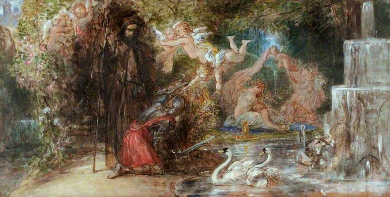
Sir Guyon arriving at the Bower of BlissThomas Uwins · Victoria and Albert Museum
xliiThence passing forth, they shortly do arrive,Whereas the Bower of Blisse was situate;A place pick’d out by choice of best alive,That natures work by art can imitate:In which what ever in this worldly stateIs sweet, and pleasing unto living sense,Or that may daintiest fantasie aggrate,Was poured forth with plentiful dispence,And made there to abound with lavish affluence.
xliiiGoodly it was enclosed round about,Aswell their enter’d guests to keep within,As those unruly beasts to hold without;Yet was the fence thereof but weak and thin;Nought fear’d their force, that fortilage to win,But wisedomes power, and temperances might,By which the mightiest things efforced bin:And eke the gate was wrought of substance light,Rather for pleasure, then for battery or fight.
xlivYt framed was of precious ivory,That seem’d a work of admirable wit;And therein all the famous historyOf Jason and Medæa was ywrit;Her mighty charms, her furious loving fit,His goodly conquest of the golden fleece,His falsed faith, and love too lightly flit,The wonder’d Argo, which in venturous pieceFirst through the Euxine seas bore all the flour of Greece.
xlvYe might have seen the frothy billows fryUnder the ship, as thorough them she went,That seem’d the waves were into ivory,Or ivory into the waves were sent;And other where the snowy substance sprentWith vermell, like the boyes blood therein shed,A piteous spectacle did represent,And otherwhiles with gold besprinkeled;Yt seem’d th’enchaunted flame, which did Creüsa wed.
xlviAll this, and more might in that goodly gateBe red; that ever open stood to all,Which thither came: but in the Porch there sateA comely personage of stature tall,And semblance pleasing, more than natural,That travellers to him seem’d to entize;His looser garment to the ground did fall,And flew about his heels in wanton wiz,Not fit for speedy pace, or manly exercise.
xlviiThey in that place him Genius did call:Not that celestial power, to whom the careOf life, and generation of allThat lives, pertains in charge particular,Who wondrous things concerning our welfare,And strange phantoms doth let us oft forsee,And oft of secret ill bids us beware:That is our Self, whom though we do not see,Yet each doth in him self it well perceive to be.
xlviiiTherefore a God him sage AntiquityDid wisely make, and good Agdistes call:But this same was to that quite contrary,The foe of life, that good ennuis to all,That secretly doth us procure to fall,Through guileful semblants, which he makes us see.He of this Gardin had the governall,And Pleasures porter was devizd to be,Holding a staff in hand for more formality.
xlixWith diverse flowers he daintily was deck’d,And strowed round about, and by his sideA mighty Mazer bowl of wine was set,As if it had to him been sacrified;Wherewith all new-come guests he gratified:So did he eke Sir Guyon passing by:But he his idle courtesy defied,And overthrew his bowl disdainfully;And broke his staff, with which he charmed semblants sly.
lThus being enter’d, they behold aroundA large and spacious plain, on every sideStrowed with pleasauns, whose fair grassy groundMantled with green, and goodly beautifiedWith all the ornaments of Floraes pride,Wherewith her mother Art, as half in scornOf niggard Nature, like a pompous brideDid deck her, and too lavishly adorn,When forth from virgin bower she comes in th’early morne.
liThereto the Heavens always Jovial,Look’d on them lovely, still in steadfast state,Ne suffer’d storm nor frost on them to fall,Their tender buds or leaves to violate,Nor scorching heat, nor cold intemperateT’afflict the creatures, which therein did dwell,But the mild aire with season moderateGently attemper’d, and dispos’d so well,That still it breathed forth sweet spirit and holesome smell.
liiMore sweet and holesome, then the pleasant hillOf Rhodope, on which the Nimphe, that boreA giant babe, her self for grief did kill;Or the Thessalian Tempe, where of yoreFair Daphne Phœbus heart with love did gore;Or Ida, where the Gods lou’d to repair,When ever they their heavenly bowers forlore;Or sweet Parnasse, the haunt of Muses fair;Or Eden self, if ought with Eden mote compaire.
liiiMuch wonder’d Guyon at the fair aspectOf that sweet place, yet suffer’d no delightTo sincke into his sense, nor mind affect,But passed forth, and look’d still forward right,Bridling his will, and maistering his might:Till that he came unto another gate;No gate, but like one, being goodly dightWith boughs and branches, which did broad dilateTheir clasping arms, in wanton wreathings intricate.
livSo fashioned a Porch with rare device,Archt over head with an embracing vine,Whose bounches hanging down, seemed to enticeAll passers by, to taste their lushious wine,And did themselves into their hands incline,As freely offering to be gathered:Some deep empurpled as the Hyacint,Some as the Rubine, laughing sweetly red,Some like fair Emeraudes, not yet well ripened.
lvAnd them amongst, some were of burnisht gold,So made by art, to beautify the rest,Which did themselves amongst the leaves enfold,As lurking from the view of covetous guest,That the weak bows, with so rich load oppress’d,Did bow adown, as over-burdened.Under that Porch a comely dame did rest,Clad in fair weeds, but foul disordered,And garments loose, that seem’d unmeet for womanhed.
lviIn her left hand a Cup of gold she held,And with her right the riper fruit did reach,Whose sappy liquor, that with fulness sweld,Into her cup she scruz’d, with dainty breachOf her fine fingers, without foul empeach,That so fair wine-press made the wine more sweet:Thereof she us’d to give to drink to each,Whom passing by she happened to meet:It was her guise, all Strangers goodly so to greet.
lviiSo she to Guyon offer’d it to taste;Who taking it out of her tender hond,The cup to ground did violently cast,That all in pieces it was broken fond,And with the liquor stained all the lond:Whereat Excesse exceedingly was wroth,Yet no’te the same amend, ne yet withstand,But suffered him to pass, all were she loth;Who nought regarding her displeasure forward goth.
lviiiThere the most dainty Paradise on ground,It self doth offer to his sober eye,In which all pleasures plenteously abound,And none does others happiness ennuyee:The painted flowers, the trees upshooting hye,The dales for shade, the hills for breathing space,The trembling groves, the Crystal running by;And that, which all fair works doth most aggrace,The art, which all that wrought, appeared in no place.
lixOne would have thought, (so cunningly, the rude,And scorned parts were mingled with the fine,)That nature had for wantonness ensudeArt, and that Art at nature did repine;So striving each th’other to undermine,Each did the others work more beautify;So diff’ring both in wills, agreed in fine:So all agreed through sweet diversity,This Gardin to adorn with all variety.
lxAnd in the midst of all, a fountain stood,Of richest substance, that on earth might be,So pure and shiny, that the silver floodThrough every channel running one might see;Most goodly it with curious imageryWas over-wrought, and shapes of naked boyes,Of which some seem’d with lively jollity,To fly about, playing their wanton toys,Whilst others did themselves embay in liquid joys.
lxiAnd over all, of purest gold was spread,A trail of ivy in his native hue:For the rich metal was so coloured,That wight, who did not well avis’d it view,Would surely deem it to be ivy trow:Low his lascivious arms adown did creep,That themselves dipping in the silver dew,Their fleecy flowers they tenderly did steep,Which drops of Crystal seem’d for wantons to weep.
lxiiInfinite streams continually did wellOut of this fountain, sweet and fair to see,The which into an ample laver fell,And shortly grew to so great quantity,That like a little lake it seem’d to be;Whose depth exceeded not three cubits hight,That through the waves one might the bottom see,All pav’d beneath with Jaspar shining bright,That seem’d the fountain in that sea did sail upright.
lxiiiAnd all the margent round about was set,With shady Laurel trees, thence to defendThe sunny beams, which on the billows bet,And those which therein bathed, mote offend.As Guyon hapned by the same to wend,Two naked Damsels he therein espied,Which therein bathing, seemed to contend,And wrestle wantonly, ne car’d to hyde,Their dainty parts from view of any, which them eide.
lxivSometimes the one would lift the other quiteAbove the waters, and then down againHer plong, as over maistered by might,Where both awhile would covered remain,And each the other from to rise restrain;The whiles their snowy limbs, as through a vel,So through the Crystal waves appeared plain:Then suddeinly both would themselves unhele,And th’amarous sweet spoils to greedy eyes revel.
lxvAs that fair Starr, the messenger of morne,His dewy face out of the sea doth rear:Or as the Cyprian goddess, newly borneOf th’Oceans fruitful froth, did first appear:Such seemed they, and so their yellow hearChristalline humour dropped down apace.Whom such when Guyon saw, he drew him near,And somewhat gan relent his earnest pace,His stubborn breast gan secret pleasance to embrace.
lxviThe wanton Maidens him espying, stoodGazing a while at his unwonted guise;Then th’one her self low ducked in the flood,Abasht, that her a stranger did a vise:But th’other rather higher did arise,And her two lilly paps aloft display’d,And all, that might his melting heart entiseTo her delights, she unto him bewray’d:The rest hid underneath, him more desirous made.
lxviiWith that, the other likewise up arose,And her fair locks, which formerly were bowndUp in one knot, she low adown did lose:Which flowing long and thick, her cloth’d arownd,And th’yvorie in golden mantle gown’d:So that fair spectacle from him was reft,Yet that, which reft it, no less fair was fownd:So hid in locks and waves from lookers theft,Nought but her lovely face she for his looking left.
lxviiiWithal she laughed, and she blusht withal,That blushing to her laughter gave more grace,And laughter to her blushing, as did fall:Now when they spied the knight to slack his pace,Them to behold, and in his sparkling faceThe secret signs of kindled lust appear,Their wanton merriments they did encrease,And to him beckned, to approach more near,And show’d him many sights, that courage cold could rear.
lxixOn which when gazing him the Palmer saw,He much rebukt those wand’ring eyes of his,And counsel’d well, him forward thence did draw.Now are they come nigh to the Bowre of blisOf her fond favorites so nam’d amiss:When thus the Palmer; Now Sir, well avise;For here the end of all our travel is:Here wons Acrasia, whom we must surprise,Else she will slip away, and all our drift despise.
lxxEftsoons they heard a most melodious sound,Of all that mote delight a dainty ear,Such as at once might not on living ground,Save in this Paradise, be heard elswhere:Right hard it was, for wight, which did it hear,To read, what manner music that mote be:For all that pleasing is to living ear,Was there consorted in one harmony,Birds, voices, instruments, winds, waters, all agree.
lxxiThe joyous birds shrouded in cheerful shade,Their notes unto the voice attemper’d sweet;Th’Angelicall soft trembling voices madeTo th’instruments divine respondence meet:The silver sounding instruments did meetWith the base murmur of the waters fall:The waters fall with difference discreet,Now soft, now loud, unto the wind did call:The gentle warbling wind low answered to all.
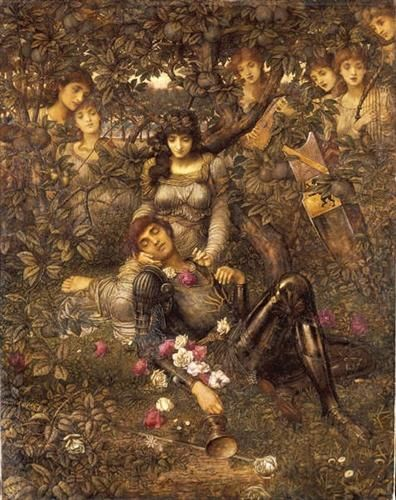
AcrasiaJohn Melhuish Strudwick, c. 1888 · private collection
lxxiiThere, whence that Musick seemed heard to be,Was the fair Witch her self now solacing,With a new Lover, whom through sorceryAnd witchcraft, she from fare did thither bring:There she had him now laid a slombering,In secret shade, after long wanton joys:Whilst round about them pleasantly did singMany fair Ladies, and lascivious boyes,That ever mixt their song with light licentious toys.
lxxiiiAnd all that while, right over him she hung,With her false eyes fast fixed in his sight,As seeking medicine, whence she was stong,Or greedily depasturing delight:And oft inclining down with kisses light,For fear of waking him, his lips bedew’d,And through his humid eyes did suck his spright,Quite molten into lust and pleasure lewd;Wherewith she sighed soft, as if his case she rew’d.
lxxivThe whiles some one did chaunt this lovely lay;Ah see, who so fair thing doest fain to see,In springing flower the image of thy day;Ah see the Virgin Rose, how sweetly sheDoth first peep forth with bashful modesty,That fairer seems, the less ye see her may;Lo see soon after, how more bold and freeHer bared bosom she doth broad display;Lo see soon after, how she fades, and falls away.
lxxvSo passeth, in the passing of a day,Of mortal life the leaf, the bud, the flower,Ne more doth flourish after first decay,That erst was sought to deck both bed and bower,Of many a Lady, and many a Paramour:Gather therefore the Rose, whilst yet is prime,For soon comes age, that will her pride deflower:Gather the Rose of love, whilst yet is time,Whilst loving thou mayst loved be with equal crime.
lxxviHe ceas’d, and then gan all the quire of birdsTheir diverse notes t’attune unto his lay,As in approvance of his pleasing words.The constant pair heard all, that he did say,Yet swarved not, but kept their forward way,Through many covert groves, and thickets close,In which they creeping did at last displayThat wanton Lady, with her lover lose,Whose sleepy head she in her lap did soft dispose.
lxxviiUpon a bed of Roses she was laid,As faint through heat, or dight to pleasant sin,And was array’d, or rather disarayd,All in a vel of silk and silver thin,That hid no whit her alablaster skin,But rather show’d more white, if more might be:More subtile web Arachne cannot spin,Nor the fine nets, which oft we woven seeOf scorched dew, do not in th’aire more lightly flee.
lxxviiiHer snowy breast was bare to ready spoilOf hungry eyes, which n’ote therewith be fil’d,And yet through languor of her late sweet toil,Few drops, more clear than Nectar, forth distil’d,That like pure Orient perls adown it trild,And her fair eyes sweet smiling in delight,Moistened their fiery beams, with which she thrildFrail hearts, yet quenched not; like starry lightWhich sparckling on the silent waves, does seem more bright.
lxxixThe young man sleeping by her, seem’d to beSome goodly swain of honorable place,That certes it great pity was to seeHim his nobility so foul deface;A sweet regard, and amiable grace,Mixed with manly sternness did appearYet sleeping, in his well proportion’d face,And on his tender lips the downy hearDid now but freshly spring, and silken blossoms bear.
lxxxHis warlike arms, the idle instrumentsOf sleeping praise, were hung upon a tree,And his brave shield, full of old moniments,Was foully ra’st, that none the signs might see;Ne for them, ne for honour cared he,Ne ought, that did to his aduauncement tend,But in lewd loves, and wastfull luxury,His days, his goods, his body he did spend:O horrible enchantment, that him so did blend.
lxxxiThe noble Elf, and careful Palmer drewSo nigh them, minding nought, but lustful game,That sudden forth they on them rusht, and threwA subtile net, which only for the sameThe skilful Palmer formally did frame.So held them under fast, the whiles the restFled all away for fear of fouler shame.The fair Enchantress, so unwares oppress’d,Tried all her arts, and all her sleights, thence out to wrest.
lxxxiiAnd eke her lover strove: but all in vain;For that same net so cunningly was wound,That neither guile, nor force might it distrain.They toke them both, and both them strongly boundIn captive bands, which there they ready found:But her in chaines of adamant he tyde;For nothing else might keep her safe and sound;But Verdant (so he hight) he soon untied,And counsel sage in steed thereof to him applied.
lxxxiiiBut all those pleasant bowers and Palace brave,Guyon broke down, with rigour pitiless;Ne ought their goodly workmanship might saveThem from the tempest of his wrathfulness,But that their bliss he turn’d to balefulness:Their groves he feld, their gardins did deface,Their arbers spoil, their Cabinets suppress,Their banket houses burn, their buildings race,And of the fairest late, now made the fowlest place.
lxxxivThen led they her away, and eke that knightThey with them led, both sorrowful and sad:The way they came, the same retorn’d they right,Till they arrived, where they lately hadCharm’d those wild-beasts, that rag’d with fury mad.Which now awaking, fierce at them gan fly,As in their mistress rescue, whom they lad;But them the Palmer soon did pacify.Then Guyon ask’d, what meant those beasts, which there did li.
lxxxvSaid he, These seeming beasts are men indeed,Whom this Enchantress hath transformed thus,Whilom her lovers, which her lusts did feed,Now turned into figures hideous,According to their minds like monstruous.Sad end (quoth he) of life intemperate,And mournful meed of joys delicious:But Palmer, if it mote thee so aggrate,Let them returned be unto their former state.
lxxxviStraight way he with his virtuous staff them stroke,And straight of beasts they comely men became;Yet being men they did unmanly loke,And stared ghastly, some for inward shame,And some for wrath, to see their captive Dame:But one above the rest in special,That had an hog been late, hight Grille by name,Repined greatly, and did him miscall,That had from hoggish form him brought to natural.
lxxxviiSaid Guyon, See the mind of beastly man,That hath so soon forgot the excellenceOf his creation, when he life began,That now he chooseth, with vile difference,To be a beast, and lack intelligence.To whom the Palmer thus, The donghill kindDelights in filth and foul incontinence:Let Grill be Grill, and have his hoggish mind,But let us hence depart, whilst wether serves and wind.
THE THIRD BOOKE OF THE FAERIE QUEENE
The Legend of Britomartis, or of Chastitie
Chastitie
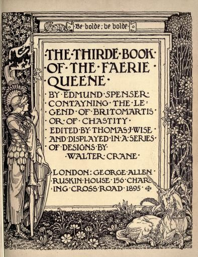
The Proeme
it falls me here to write of Chastity,That fairest virtue, fare above the rest;For which what needs me fetch from FaeryForreine ensamples, it to have express’d?Sith it is shrined in my Sovereigns breast,And form’d so lively in each perfect part,That to all Ladies, which have it profess’d,Need but behold the pourtraict of her heart,If pourtrayd it might be by any living art.
iiBut living art may not least part express,Nor life-resembling pencil it can paint,All were it Zeuxis or Praxiteles:His dædale hand would fail, and greatly faint,And her perfections with his error taint:Ne Poets wit, that passeth Painter fareIn picturing the parts of beauty daint,So hard a workmanship adventure dare,For fear through want of words her excellence to mare.
iiiHow then shall I, Apprentice of the skill,That whilom in divinest wits did rain,Presume so high to stretch mine humble quill?Yet now my luckless lot doth me constrainHereto perforce. But O dread SovereignThus fare forth pardon, sith that choicest witCannot your glorious pourtraict figure plainThat I in colour’d shows may shadow it,And antique praises unto present persons fit.
ivBut if in living colours, and right hue,Your self you covet to see pictured,Who can it do more lively, or more trow,Then that sweet verse, with Nectar sprinckeled,In which a gracious servant picturedHis Cynthia, his heavens fairest light?That with his melting sweetness ravished,And with the wonder of her beams bright,My senses lulled are in slumber of delight.
vBut let that same delicious Poet lendA little leave unto a rustic MuseTo sing his mistress prays, and let him mend,If ought amiss her liking may abuse:Ne let his fairest Cynthia refuse,In mirrors more than one her self to see,But either Gloriana let her chuse,Or in Belphœbe fashioned to be:In th’one her rule, in th’other her rare chastity.
Booke III · Chastitie
Canto I
❧
Guion encountreth Britomart, fair Florimell is chased: Duessaes trains and Malecastaes[861
❧
ihe famous Briton Prince and Faerie knight,After long ways and perilous pains endured,Having their weary limbs to perfect plightRestor’d, and sori wounds right well recured,Of the fair Alma greatly were procured,To make there lenger soiourne and abode;But when thereto they might not be allured,From seeking praise, and deeds of arms abroad,They courteous cong toke, and forth together yode.
iiBut the captive’d Acrasia he sent,Because of travel long, a nigher way,With a strong gard, all rescue to prevent,And her to Faerie court safe to conuay,That her for witness of his hard assay,Unto his Faerie Queen he might present:But he him self betook another way,To make more trial of his hardiment,And seek adventures, as he with Prince Arthur went.
iiiLong so they travelled through wasteful ways,Where dangers dwelt, and perils most did won,To hunt for glory and renowned praise;Full many Countries they did overronne,From the uprising to the setting Sun,And many hard adventures did achieve;Of all the which they honour ever won,Seeking the weak oppressed to relieve,And to recover right for such, as wrong did grieve.
ivAt last as through an open plain they yode,They spied a knight, that towards pricked fair,And him beside an aged Squire there rode,That seem’d to couch under his shield three-square,As if that age bad him that burden spare,And yield it those, that stouter could it wield:He them espying, gan himself prepare,And on his arm address his goodly shieldThat bore a Lion passant in a golden field.
vWhich seeing good Sir Guyon, dear besoughtThe Prince of grace, to let him rune that turn.He granted: then the Faery quickly raughtHis poinant spear, and sharply gan to spurnHis foamy steed, whose fiery feet did burnThe verdant grass, as he thereon did tread;Ne did the other back his foot return,But fiercely forward came withouten dread,And bent his dreadful spear against the others head.
viThey been ymet, and both their points arrived,But Guyon drove so furious and fell,That seem’d both shield and plate it would have rived;Nathless it bore his foe not from his sell,But made him stagger, as he were not well:But Guyon self, ere well he was aware,Nigh a spears length behind his crouper fell,Yet in his fall so well him self he bare,That mischievous mischance his life and limbs did spare.
viiGreat shame and sorrow of that fall he toke;For never yet, sith warlike arms he bore,And shivering spear in bloody field first shook,He found himself dishonored so sore.Ah gentlest knight, that ever armour bore,Let not thee grieve dismounted to have been,And brought to ground, that never wast before;For not thy fault, but secret power unseen,That spear enchanted was, which laid thee on the green.
viiiBut weenedst thou what wight thee overthrew,Much greater grief and shamefuller regretFor thy hard fortune then thou wouldst renew,That of a single damsel thou wert metOn equal plain, and there so hard beset;Even the famous Britomart it was,Whom strange adventure did from Britaine fet,To seek her lover (love fare sought alas,)Whose image she had seen in Venus looking glaze.
ixFull of disdainful wrath, he fierce uprose,For to revenge that foul reproachful shame,And snatching his bright sword began to closeWith her on foot, and stoutly forward came;Die rather would he, then endure that same.Which when his Palmer saw, he gan to fearHis toward peril and untoward blame,Which by that new rencounter he should rear:For death sate on the point of that enchanted spear.
xAnd hasting towards him gan fair perswade,Not to provoke misfortune, nor to weenHis spears default to mend with cruel blade;For by his mighty Science he had seenThe secret virtue of that weapon keen,That mortal puissance mote not withstond:Nothing on earth mote always happy been.Great hazard were it, and adventure fond,To loose long gotten honour with one evil hond.
xiBy such good means he him discounselled,From prosecuting his revenging rage;And eke the Prince like treaty handeled,His wrathful will with reason to asswage,And laid the blame, not to his carriage,But to his starting steed, that swarv’d aside,And to the ill purveyance of his page,That had his furnitures not firmly tyde:So is his angry courage fairly pacified.
xiiThus reconcilement was between them knit,Through goodly temperance, and affection chaste,And either vow’d with all their power and wit,To let not others honour be defac’d,Of friend or foe, who ever it embac’d,Ne arms to bear against the others side:In which accord the Prince was also plaste,And with that golden chain of concord tyde.So goodly all agreed, they forth yfere did ryde.
xiiiO goodly usage of those antique times,In which the sword was servant unto right;When not for malice and contentious crimes,But all for praise, and proof of manly might,The martial brood accustomed to fight:Then honour was the meed of victory,And yet the vanquished had no despite:Let later age that noble use envy,Vile rancour to avoid, and cruel surquedry.
xivLong they thus travelled in friendly wise,Through countries waste, and eke well edified,Seeking adventures hard, to exerciseTheir puissance, whilom full dernely tried:At length they came into a forrest wide,Whose hideous horror and sad trembling soundFull grisly seem’d: Therein they long did ryde,Yet tract of living creatures none they found,Save Bears, Lions, and Bulse, which roamed them around.
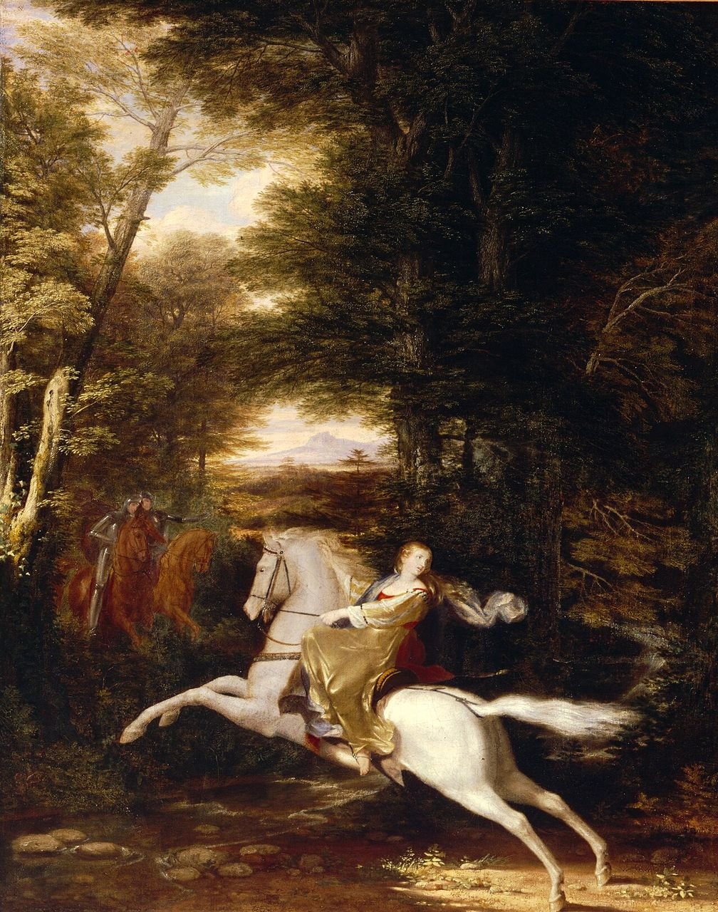
The Flight of FlorimellWashington Allston, 1819 · Detroit Institute of Arts
xvAll suddenly out of the thickest brush,Upon a milk-white Palfrey all alone,A goodly Lady did foreby them rush,Whose face did seem as clear as Crystal stone,And eke through fear as white as whales bone:Her garments all were wrought of beaten gold,And all her steed with tinsel trappings shone,Which fled so fast, that nothing mote him hold,And scars them leasure gave, her passing to behold.
xviStill as she fled, her eye she backward threw,As fearing evil, that pursewd her fast;And her fair yellow locks behind her flew,Loosely disperst with puff of every blast:All as a blazing starr doth fare outcastHis hearie beams, and flaming locks dispread,At sight whereof the people stand aghast:But the sage wizard tells, as he has red,That it importunes death and doleful drerihed.
xviiSo as they gazed after her a while,Lo where a grisly Foster forth did rush,Breathing out beastly lust her to defile:His tireling jade he fiercely forth did push,Through thick and thin, both over bank and bushIn hope her to attain by hooke or crook,That from his gory sides the blood did gush:Large were his limbs, and terrible his loke,And in his clownish hand a sharp bore spear he shook.
xviiiWhich outrage when those gentle knights did see,Full of great envy and fell gealosy,They stay’d not to avise, who first should be,But all spur’d after fast, as they mote fly,To rescue her from shameful villany.The Prince and Guyon equally byliveHer self pursewd, in hope to win therebyMost goodly meed, the fairest Dame alive:But after the foul foster Timias did strive.
xixThe whiles fair Britomart, whose constant mind,Would not so lightly follow beauties chace,Ne reck’d of Ladies Love, did stay behind,And them awaited there a certain space,To weet if they would turn back to that place:But when she saw them gone, she forward went,As lay her journey, through that perlous Pace,With steadfast courage and stout hardiment;Ne evil thing she fear’d, ne evil thing she ment.
xxAt last as nigh out of the wood she came,A stately Castle fare away she spied,To which her steps directly she did frame.That Castle was most goodly edified,And plaste for pleasure nigh that forrest side:But fair before the gate a spacious plain,Mantled with green, it self did spredden wide,On which she saw six knights, that did darraineFierce battle against one, with cruel might and main.
xxiMainly they all at once upon him laid,And sore beset on every side around,That nigh he breathless grew, yet nought dismay’d,Ne ever to them yielded foot of groundAll had he lost much blood through many a wound,But stoutly dealt his blows, and every wayTo which he turned in his wrathful stound,Made them recoil, and fly from dread decay,That none of all the six before, him durst assay.
xxiiLike dastard Currs, that having at a bayThe salvage beast embost in weary chace,Dare not adventure on the stubborn pray,Ne byte before, but rome from place to place,To get a snatch, when turned is his face,In such distress and doubtful jeopardy,When Britomart him saw, she ran a paceUnto his rescue, and with earnest cry,Bad those same six forbear that single enemy.
xxiiiBut to her cry they list not lenden ear,Ne ought the more their mighty strokes surcease,But gathering him round about more near,Their direful rancour rather did encrease;Till that she rushing through the thickest press,Perforce disparted their compacted gyre,And soon compel’d to hearken unto peace:Tho gan she mildly of them to inquireThe cause of their dissention and outrageous ire.
xxivWhereto that single knight did answer frame;These six would me enforce by odds of might,To change my lief, and love another Dame,That death me liefer were, then such despite,So unto wrong to yield my wrested right:For I love one, the truest one on ground,Ne list me change; she th’Errant Damzell hight,For whose dear sake full many a bitter stown’d,I have endur’d, and tasted many a bloody wound.
xxvCertes (said she) then been ye six to blame,To ween your wrong by force to justify:For knight to leave his Lady were great shame,That faithful is, and better were to die.All loss is less, and less the infamy,Then loss of love to him, that loves but one;Ne may love be compel’d by maisterie;For soon as maisterie comes, sweet love anonTaketh his nimble wings, and soon away is gone.
xxviThen spake one of those six, There dwelleth hereWithin this castle wall a Lady fair,Whose sovereign beauty hath no living pere,Thereto so bounteous and so debonaire,That never any mote with her compaire.She hath ordain’d this law, which we approve,That every knight, which doth this way repair,In case he have no Lady, nor no love,Shall do unto her service never to remove.
xxviiBut if he have a Lady or a Love,Then must he her forgo with foul defame,Or else with us by dint of sword approve,That she is fairer, then our fairest Dame,As did this knight, before ye hither came.Perdie (said Britomart) the choise is hard:But what reward had he, that overcame?He should aduaunced be to high regard,(Said they) and have our Ladies love for his reward.
xxviiiTherefore a read Sir, if thou have a love.Love have I sure, (quoth she) but Lady none;Yet will I not fro mine own love remove,Ne to your Lady will I service done,But wreak your wrongs wrought to this knight alone,And prove his cause. With that her mortal spearShe mightily aventred towards one,And down him smote, ere well aware he wear,Then to the next she rode, and down the next did bear.
xxixNe did she stay, till three on ground she laid,That none of them himself could rear again;The fourth was by that other knight dismay’d,All were he weary of his former pain,That now there do but two of six remain;Which two did yield, before she did them smite.Ah (said she then) now may ye all see plain,That truth is strong, and trow love most of might,That for his trusty seruaunts doth so strongly fight.
xxxToo well we see, (said they) and prove too wellOur faulty weakness, and your matchless might:For thy, fair Sir, yours be the Damozel,Which by her own law to your lot doth light,And we your liege men faith unto you plight.So underneath her feet their swords they mardy,And after her besought, well as they might,To enter in, and reap the dew reward:She granted, and then in they all together far’d.
xxxiLong were it to describe the goodly frame,And stately port of Castle Joyeous,(For so that Castle hight by commune name)Where they were entertain’d with courteousAnd comely glee of many graciousFair Ladies, and of many a gentle knight,Who through a Chamber long and spacious,Eftsoons them brought unto their Ladies sight,That of them cleped was the Lady of delight.
xxxiiBut for to tell the sumptuous arrayOf that great chamber, should be labour lost:For living wit, I ween, cannot displayThe royal riches and exceeding cost,Of every pillar and of every post;Which all of purest bullion framed were,And with great pearls and precious stones embost,That the bright glister of their beams clearDid sparckle forth great light, and glorious did appear.
xxxiiiThese stranger knights through passing, forth were ledInto an inner room, whose royaltyAnd rich purveyance might uneath be red;Mote Princes place beseem so deck’d to be.Which stately manner when as they did see,The image of superfluous riotize,Exceeding much the state of mean degree,They greatly wonder’d, whence so sumptuous guiseMight be maintaynd, and each gan diversely devise.
xxxivThe walls were round about apparelledWith costly clothes of Arras and of Toure,In which with cunning hand was pourtrahedThe love of Venus and her ParamourThe fair Adonis, turned to a flower,A work of rare device, and wondrous wit.First did it show the bitter baleful stowre,Which her assay’d with many a fervent fit,When first her tender heart was with his beauty smit.
xxxvThen with what sleights and sweet allurements sheEntyst the Boy, as well that art she knew,And wooed him her Paramour to be;Now making garlands of each flower that grew,To crown his golden locks with honour dew;Now leading him into a secret shadeFrom his Beauperes, and from bright heavens view,Where him to sleep she gently would perswade,Or bathe him in a fountain by some covert glade.
xxxviAnd whilst he slept, she over him would spreadHer mantle, colour’d like the starry skies,And her soft arm lay underneath his head,And with ambrosial kisses bathe his eyes;And whilst he bath’d, with her two crafty spies,She secretly would search each dainty lime,And throw into the well sweet Rosemaries,And fragrant violets, and Pans trim,And ever with sweet Nectar she did sprinkle him.
xxxviiSo did she steale his heedless heart away,And joy’d his love in secret unespied.But for she saw him bent to cruel play,To hunt the salvage beast in forrest wide,Dreadful of danger, that mote him betide,She oft and oft aduiz’d him to refrainFrom chase of greater beasts, whose brutish prideMote breed him scathe unwares: but all in vain;For who can shun the chance, that dest’ny doth ordain?
xxxviiiLo, where beyond he lyeth languishing,Deadly engored of a great wild Bore,And by his side the Goddess grovelingMakes for him endless mon, and evermoreWith her soft garment wipes away the gore,Which staines his snowy skin with hatful hue:But when she saw no help might him restore,Him to a dainty flower she did transmew,Which in that cloth was wrought, as if it lively grew.
xxxixSo was that chamber clad in goodly wiz,And round about it many beds were dight,As whilom was the antique worlds guise,Some for untimely ease, some for delight,As pleased them to use, that use it might:And all was full of Damsels, and of Squires,Dancing and reveling both day and night,And swimming deep in sensual desires,And Cupid still amongst them kindled lustful fires.
xlAnd all the while sweet Music did divideHer looser notes with Lydian harmony;And all the while sweet birds thereto appliedTheir dainty lays and dulcet melody,Ay caroling of love and jollity,That wonder was to hear their trim consort.Which when those knights beheld, with scornful eye,They sdeigned such lascivious disport,And loath’d the loose demeanure of that wanton sort.
xliThence they were brought to that great Ladies view,Whom they found sitting on a sumptuous bed,That glister’d all with gold and glorious show,As the proud Persian Queens accustomed:She seem’d a woman of great bountihed,And of rare beauty, saving that askanceHer wanton eyes, ill signs of womanhed,Did roll too lightly, and too often glance,Without regard of grace, or comely amenaunce.
xliiLong work it were, and needless to deviseTheir goodly entertainement and great glee:She caused them be led in courteous wizInto a bower, disarmed for to be,And cheered well with wine and spicery:The Redcrosse Knight was soon disarmed there,But the brave Maid would not disarmed be,But only vented up her umbriere,And so did let her goodly visage to aper.
xliiiAs when fair Cynthia, in darksome night,Is in a noyous cloud enveloped,Where she may find the substance thin and light,Breaks forth her silver beams, and her bright headDiscovers to the world discomfited;Of the poor traveller, that went astray,With thousand blessings she is herried;Such was the beauty and the shining ray,With which fair Britomart gave light unto the day.
xlivAnd eke those six, which lately with her fought,Now were disarm’d, and did themselves presentUnto her view, and company unsought;For they all seemed courteous and gent,And all six brethren, borne of one parent,Which had them traynd in all civility,And goodly taught to tilt and turnament;Now were they liegemen to this Lady free,And her knights service ought, to hold of her in fee.
xlvThe first of them by name Gardante hight,A jolly person, and of comely view;The second was Parlante, a bold knight,And next to him Jocante did ensue;Basciante did him self most courteous show;But fierce Bacchante seem’d too fell and keen;And yet in arms Noctante greater grew:All were fair knights, and goodly well beseen,But to fair Britomart they all but shadows been.
xlviFor she was full of amiable grace,And manly terror mixed therewithal,That as the one stir’d up affections base,So th’other did mens rash desires appall,And hold them back, that would in error fall;As he, that hath espied a vermeil Rose,To which sharpe thorns and breres the way forstall,Dare not for dread his hardy hand expose,But wishing it far off, his idle wish doth lose.
xlviiWhom when the Lady saw so fair a wight,All ignorant of her contrary sex,(For she her wend a fresh and lusty knight)She greatly gan enamoured to wex,And with vain thoughts her falsed fancy vex:Her fickle heart conceived hasty fire,Like sparks of fire, which fall in sclender flex,That shortly brent into extreme desire,And ransack’d all her veins with passion entire.
xlviiiEftsoons she grew to great impatienceAnd into termes of open outrage brust,That plain discovered her incontinence,Ne reck’d she, who her meaning did mistrust;For she was given all to fleshly lust,And poured forth in sensual delight,That all regard of shame she had discust,And meet respect of honour put to flight:So shameless beauty soon becomes a loathly sight.
xlixFair Ladies, that to love captived arr,And chaste desires do nourish in your mind,Let not her fault your sweet affections mare,Ne blot the bounty of all womankind;’Mongst thousands good one wanton Dame to find:Amongst the Roses grow some wicked weeds;For this was not to love, but lust inclin’d;For love does always bring forth bounteous deeds,And in each gentle heart desire of honour breeds.
lNought so of love this looser Dame did skill,But as a coal to kindle fleshly flame,Giving the bridle to her wanton will,And treading under foot her honest name:Such love is hate, and such desire is shame.Still did she rove at her with crafty glanceOf her false eyes, that at her heart did aim,And told her meaning in her countenance;But Britomart dissembled it with ignorance.
liSupper was shortly dight and down they sat,Where they were served with all sumptuous fare,Whiles fruitful Ceres, and Lyæus fatPour'd out their plenty, without spite or spare:Nought wanted there, that dainty was and rare;And aye the cups their bancks did overflow,And aye between the cups, she did prepareWay to her love, and secret darts did throw;But Britomart would not such guilfull message know.
liiSo when they slaked had the fervent heatOf appetite with meats of every sort,The Lady did fair Britomart entreat,Her to disarm, and with delightful sportTo loose her warlike limbs and strong effort,But when she mote not thereunto be won,(For she her sex under that strange purportDid use to hide, and plain apparaunce shone:)In plainer wise to tell her grievance she begone.
liiiAnd all at once discovered her desireWith sighs, and sobs, and plaints, and piteous grief,The outward sparks of her in burning fire;Which spent in vain, at last she told her brief,That but if she did lend her short relief,And do her comfort, she mote algates dye.But the chaste damsel, that had never priefeOf such malengine and fine forgery,Did easily believe her strong extremity.
livFull easy was for her to have belief,Who by self-feeling of her feeble sex,And by long trial of the inward grief,Wherewith imperious love her heart did vex,Could judge what pains do loving hearts perplex.Who means no guile, be guiled soonest shall,And to fair semblance doth light faith annex;The bird, that knowes not the false fowlers call,Into his hidden net full easily doth fall.
lvFor thy she would not in discourteise wise,Scorn the fair offer of good will profess’d;For great rebuke it is, love to despise,Or rudely sdeigne a gentle hearts request;But with fair countenance, as beseemed best,Her entertaynd; nath’lesse she inly deem’dHer love too light, to woe a wand’ring guest:Which she misconstruing, thereby esteem’dThat from like inward fire that outward smoke had steem’d.
lviTherewith a while she her flit fancy fed,Till she mote winn fit time for her desire,But yet her wound still inward freshly bled,And through her bones the false instilled fireDid spread it self, and venime close inspire.Tho were the tables taken all away,And every knight, and every gentle SquireGan choose his dame with Basciomani gay,With whom he meant to make his sport and courtly play.
lviiSome fell to dance, some fell to hazardry,Some to make love, some to make merriment,As diverse wits to divers things apply;And all the while fair Malecasta bentHer crafty engins to her close intent.By this th’eternall lamps, wherewith high JoveDoth light the lower world, were half yspent,And the moist daughters of huge Atlas stroveInto the Ocean deep to drive their weary drove.
lviiiHigh time it seemed then for every wightThem to betake unto their kindly rest;Eftsoons long waxen torches weren light,Unto their bowers to guiden every guest:Tho when the Britoness saw all the restAvoided quite, she gan her self despoil,And safe commit to her soft feathered nest,Where through long watch, and late days weary toil,She soundly slept, and careful thoughts did quite assoil.
lixNow whenas all the world in silence deepYshrowded was, and every mortal wightWas drowned in the depth of deadly sleep,Fair Malecasta, whose engrieved sprightCould find no rest in such perplexed plight,Lightly arose out of her weary bed,And under the black vel of guilty Night,Her with a scarlot mantle covered,That was with gold and Ermines fair enveloped.
lxThen panting soft, and trembling every joint,Her fearful feet towards the bower she moved;Where she for secret purpose did appointTo lodge the warlike maid unwisely loved,And to her bed approaching, first she proved,Whether she slept or wakt, with her soft handShe softly felt, if any member moved,And lent her wary ear to understand,If any puff of breath, or sign of sense she fond.
lxiWhich whenas none she fond, with easy shift,For fear least her unwares she should abraid,Th’embroderd quilt she lightly up did lift,And by her side her self she softly laid,Of every finest fingers touch afraid;Ne any noise she made, ne word she spake,But inly sigh’d. At last the royal MaidOut of her quiet slumber did awake,And chaungd her weary side, the better ease to take.
lxiiWhere feeling one close couched by her side,She lightly lept out of her filed bed,And to her weapon ran, in mind to grideThe loathed leachour. But the Dame half deadThrough sudden fear and ghastly drerihed,Did shriek alow’d, that through the house it rong,And the whole family therewith adred,Rashly out of their roused couches sprong,And to the troubled chamber all in arms did throng.
lxiiiAnd those six Knights that Ladies Champions,And eke the Redcrosse knight ran to the stown’d,Half arm’d and half unarm’d, with them attons:Where when confusedly they came, they fowndTheir Lady lying on the senseless grown’d;On th’other side, they saw the warlike MaidAll in her snow-white smock, with locks unbownd,Threat’ning the point of her avenging blade,That with so troublous terror they were all dismayde.
lxivAbout their Lady first they flock’d arownd,Whom having laid in comfortable couch,Shortly they rear’d out of her frozen swoon’d;And afterwards they gan with foul reproachTo stire up strife, and troublous conteck broch:But by ensample of the last days loss,None of them rashly durst to her approach,Ne in so glorious spoil themselves emboss;Her succour’d eke the Champion of the bloody Cross.
lxvBut one of those six knights, Gardante hight,Drew out a deadly bow and arrow keen,Which forth he sent with felonous despite,And fell intent against the virgin sheen:The mortal steel stay’d not, till it was seenTo gore her side, yet was the wound not deep,But lightly rased her soft silken skin,That drops of purple blood thereout did weep,Which did her lilly smock with staines of vermeil steep.
lxviWherewith enrag’d she fiercely at them flew,And with her flaming sword about her laid,That none of them foul mischief could eschew,But with her dreadful strokes were all dismay’d:Here, there, and every where about her sway’dHer wrathful steel, that none mote it abide;And eke the Redcrosse knight gave her good aid,Ay joining foot to foot, and side to side,That in short space their foes they have quite terrified.
lxviiTho whenas all were put to shameful flight,The noble Britomartis her array’d,And her bright arms about her body dight:For nothing would she lenger there be stay’d,Where so loose life, and so ungentle tradeWas us’d of Knights and Ladies seeming gent:So early ere the gross Earths griesy shadeWas all disperst out of the firmament,They toke their steeds, and forth upon their journey went.
Booke III · Chastitie
Canto II
❧
The Redcrosse knight to Britomart describeth Artegal: The wondrous myrrhour, by which she in love with him did fall.
❧
iere have I cause, in men just blame to find,That in their proper prays too partial be,And not indifferent to woman kind,To whom no share in arms and chevalrieThey do impart, ne maken memoryOf their brave gestes and prowess martial;Scars do they spare to one or two or three,Room in their writs; yet the same writing smallDoes all their deeds deface, and dims their glories all.
iiBut by record of antique times I find,That women wont in wars to bear most sway,And to all great exploits themselves inclin’d:Of which they still the garland bore away,Till envious Men fearing their rules decay,Gan coin straight lawes to curb their liberty;Yet sith they warlike arms have laid away,They have excel’d in arts and policy,That now we foolish men that prays gin eke t’enuy.
iiiOf warlike puissance in ages spent,Be thou fair Britomart, whose prays I write,But of all wisedome be thou precedent,O sovereign Queen, whose prays I would endite,Endite I would as dewtie doth excite;But ah my rimes too rude and rugged arr,When in so high an object they do lite,And striving, fit to make, I fear do mare:Thy self thy praises tell, and make them known fare.
ivShe travelling with Guyon by the way,Of sundry things fair purpose gan to find,T’abridg their journey long, and ling’ring day;Mongst which it fell into that Faeries mind,To ask this Briton Maid, what uncouth wind,Brought her into those parts, and what inquestMade her dissemble her disguised kind:Fair Lady she him seem’d, like Lady drest,But fairest knight alive, when armed was her breast.
vThereat she sighing softly, had no powerTo speak a while, ne ready answer make,But with heart-thrilling throbs and bitter stowre,As if she had a fever fit, did quake,And every dainty limb with horror shake;And ever and anon the rosy red,Flasht through her face, as it had been a flakeOf lightning, through bright heaven fulmined;At last the passion past she thus him answered.
viFair Sir, I let you weet, that from the hourI taken was from nourses tender pap,I have been trained up in warlike stowre,To tossen spear and shield, and to affrapThe warlike ryder to his most mishap;Sithence I loathed have my life to lead,As Ladies wont, in pleasures wanton lap,To finger the fine needle and nyc thread;Me lever were with point of foemans spear be dead.
viiAll my delight on deeds of arms is set,To hunt out perils and adventures hard,By sea, by land, where so they may be met,Only for honour and for high regard,Without respect of richesse or reward.For such intent into these parts I came,Withouten compass, or withouten card,Far fro my native soil, that is by nameThe greater Britaine, here to seek for prays and fame.
viiiFame blazed hath, that here in Faery londDo many famous Knights and Ladies won,And many strange adventures to be fond,Of which great worth and worship may be won;Which I to prove, this voyage have begone.But mote I weet of you, right courteous knight,Tidings of one, that hath unto me donneLate foul dishonour and reproachful spite,The which I seek to wreak, and Arthegall he hight.
ixThe word gone out, she back again would call,As her repenting so to have missaid,But that he it up-taking ere the fall,Her shortly answered; Fair martial MaidCertes ye misavised been, t’upbraydA gentle knight with so unknightly blame:For weet ye well of all, that ever play’dAt tilt or tourney, or like warlike game,The noble Arthegall hath ever borne the name.
xFor thy great wonder were it, if such shameShould ever enter in his bounteous thought,Or ever do, that mote deseruen blame:The noble courage never weeneth ought,That may unworthy of it self be thought.Therefore, fair Damsel, be ye well aware,Least that too fare ye have your sorrow sought:You and your country both I wish welfare,And honour both; for each of other worthy are.
xiThe royal Maid woxe inly wondrous glad,To hear her Love so highly magnified,And joy’d that ever she affixed had,Her heart on knight so goodly glorified,How ever finely she it fain’d to hide:The loving mother, that nine monethes did bear,In the dear closet of her painful side,Her tender babe, it seeing safe appear,Doth not so much reioyce, as she reioyced there.
xiiBut to occasion him to further talk,To feed her humour with his pleasing stile,Her list in strifull termes with him to balk,And thus replied, How ever, Sir, ye fileYour courteous tongue, his praises to compile,It ill beseems a knight of gentle sort,Such as ye have him boasted, to beguileA simple maid, and work so haynous tort,In shame of knighthood, as I largely can report.
xiiiLet be therefore my vengeance to disswade,And read, where I that faitour false may find.Ah, but if reason fair might you perswade,To slake your wrath, and mollify your mind,(Said he) perhaps ye should it better find:For hardy thing it is, to ween by might,That man to hard conditions to bind,Or ever hope to match in equal fight,Whose prowess paragon saw never living wight.
xivNe soothlich is it easy for to read,Where now on earth, or how he may be found;For he ne wonneth in one certain stead,But restless walketh all the world around,Ay doing things, that to his fame redound,Defending Ladies cause, and Orphans right,Where so he hears, that any doth confoundThem comfortless, through tyranny or might;So is his sovereign honour raisde to heavens hight.
xvHis feeling words her feeble sense much pleased,And softly sunck into her molten heart;Heart that is inly hurt, is greatly easedWith hope of thing, that may allegge his smart;For pleasing words are like to Magic art,That doth the charmed Snake in slumber lay:Such secret ease felt gentle Britomart,Yet list the same efforce with fain’d gainesay;So dischord oft in Musick makes the sweeter lay.
xviAnd said, Sir knight, these idle termes forbear,And sith it is uneath to find his haunt,Tell me some marks, by which he may appear,If chance I him encounter paravant;For perdie one shall other slay, or daunt:What shape, what shield, what arms, what steed, what stead,And what so else his person most may vaunt?All which the Redcrosse knight to point ared,And him in every part before her fashioned.
xviiYet him in every part before she knew,How ever list her now her knowledge fain,Sith him whilom in Britaine she did view,To her revealed in a mirrhour plain,Whereof did grow her first engraffed pain;Whose root and stalk so bitter yet did taste,That but the fruit more sweetness did contain,Her wretched days in dolour she mote wast,And yield the pray of love to lothsome death at last.
xviiiBy strange occasion she did him behold,And much more strangely gan to love his sight,As it in books hath written been of old.In Deheubarth that now South-wales is hight,What time king Ryence reign’d, and deled right,The great Magitian Merlin had devise’d,By his deep science, and hell-dreaded might,A looking glass, right wondrously aguize’d,Whose virtues through the wide world soon were solemniz’d.
xixIt virtue had, to show in perfect sight,What ever thing was in the world contaynd,Betwixt the lowest earth and heavens hight,So that it to the looker appertaynd;What ever foe had wrought, or frend had faynd,Therein discovered was, ne ought mote pas,Ne ought in secret from the same remain’d;For thy it round and hollow shaped was,Like to the world it self, and seem’d a world of glaze.
xxWho wonders not, that reads so wonderous work?But who does wonder, that has red the Tower,Wherein th’Ægyptian Phao long did lurkFrom all mens view, that none might her discoure,Yet she might all men view out of her bower?Great Ptolomæe it for his lemans sakeYbuilded all of glass, by Magic power,And also it impregnable did make;Yet when his love was false, he with a peaze it brake.
xxiSuch was the glassie globe that Merlin made,And gave unto king Ryence for his gard,That never foes his kingdom might invade,But he it knew at home before he hardTidings thereof, and so them still debar’d.It was a famous Present for a Prince,And worthy work of infinite reward,That treasons could bewray, and foes convince;Happy this Realm, had it remained ever since.
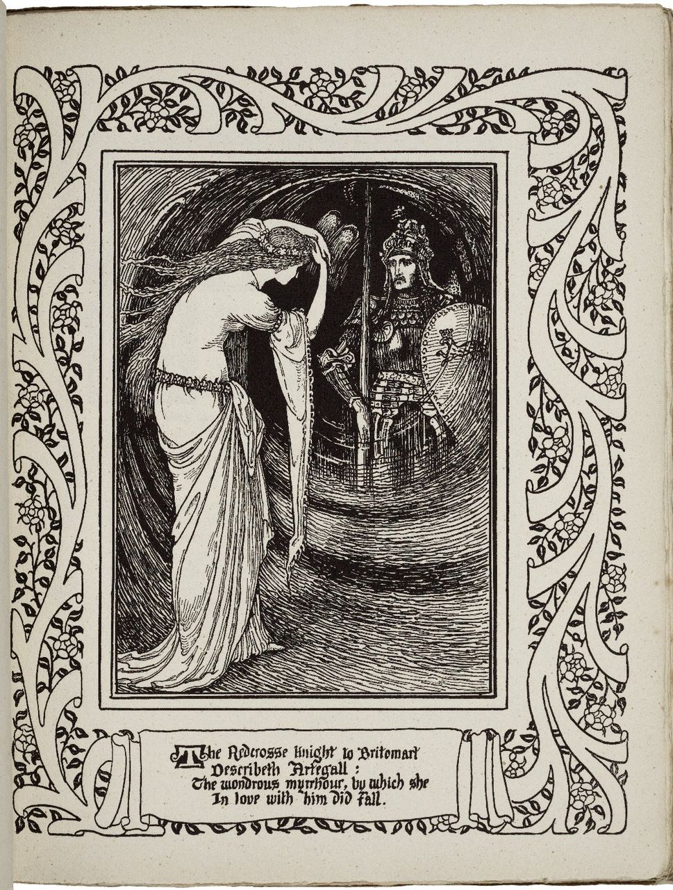
Britomart views Artegall in the enchanted glassWalter Crane, 1895–97 · from the George Allen edition
xxiiOne day it fortuned, fair BritomartInto her fathers closet to repair;For nothing he from her reserv’d apart,Being his only daughter and his hair:Where when she had espied that mirrhour fayre,Her self a while therein she view'd in vain;Tho her avizing of the virtues rare,Which thereof spoken were, she gan againHer to bethink of, that mote to her self pertain.
xxiiiBut as it falleth, in the gentlest heartsImperious Love hath highest set his throne,And tyrannizeth in the bitter smartsOf them, that to him buxom are and prone:So thought this Maid (as maidens use to done)Whom fortune for her husband would allot,Not that she lusted after any one;For she was pure from blame of sinful blot,Yet wist her life at last must lincke in that same knot.
xxivEftsoons there was presented to her eyeA comely knight, all arm’d in complete wiz,Through whose bright ventail lifted up on hyeHis manly face, that did his foes agrize,And friends to termes of gentle truce entize,Look’d forth, as Phœbus face out of the east,Betwixt two shady mountains doth ariz;Portly his person was, and much increas’dThrough his Heroic grace, and honorable gest.
xxvHis crest was covered with a couchant Hound,And all his armour seem’d of antique mould,But wondrous massy and assured sound,And round about yfretted all with gold,In which there written was with cyphers old,Achilles armes, which Arthegall did win.And on his shield enveloped sevenfoldHe bore a crowned little Ermilin,That deck’d the azure field with her fair pouldred skin.
xxviThe Damsel well did view his personage,And liked well, ne further fasten’d not,But went her way; ne her unguilty ageDid ween, unwares, that her unlucky lotLay hidden in the bottom of the pot;Of hurt unwist most danger doth redound:But the false Archer, which that arrow shotSo slyly, that she did not feel the wound,Did smile full smoothly at her weetless woeful stound.
xxviiThenceforth the feather in her lofty crest,Ruffed of love, gan lowly to availe,And her proud portance, and her princely gest,With which she erst triumphed, now did quail:Sad, solemn, sower, and full of fancies frailShe woxe; yet wist she neither how, nor why,She wist not, silly Maid, what she did ail,Yet wist, she was not well at ease perdy,Yet thought it was not love, but some melancholy.
xxviiiSo soon as Night had with her pallid hueDefac’d the beauty of the shining sky,And reft from men the worlds desired view,She with her Norse adown to sleep did lie;But sleep full fare away from her did fly:In stead thereof sad sighs, and sorrows deepKept watch and ward about her warily,That nought she did but wail, and often steepHer dainty couch with tears, which closely she did weep.
xxixAnd if that any drop of slumb’ring restDid chance to still into her weary spright,When feeble nature felt her self oppress’d,Straight way with dreams, and with fantastic sightOf dreadful things the same was put to flight,That oft out of her bed she did astart,As one with view of ghastly fiends affright:Tho gan she to renew her former smart,And think of that fair visage, written in her heart.
xxxOne night, when she was toss’d with such unrest,Her aged Nurse, whose name was Glauce hight,Feeling her leap out of her loathed nest,Betwixt her feeble arms her quickly keight,And down again in her warm bed her dight;Ah my dear daughter, ah my dearest dread,What uncouth fit (said she) what evil plightHath thee oppress’d, and with sad dreariheadChanged thy lively chere, and living made thee dead?
xxxiFor not of nought these sudden ghastly fearsAll night afflict thy natural repose,And all the day, when as thine equal pearsTheir fit disports with fair delight do chose,Thou in dull corners doest thy self inclose,Ne tastiest Princes pleasures, ne doest spreadAbroad thy fresh youths fairest flower, but loseBoth leaf and fruit, both too untimely shed,As one in wilful bale for ever buried.
xxxiiThe time, that mortal men their weary caresDo lay away, and all wild beasts do rest,And every river eke his course forbears,Then doth this wicked evil thee infest,And rive with thousand throbs thy thrilled breast;Like an huge Aetn’ of deep engulfed grief,Sorrow is heaped in thy hollow chest,Whence forth it breaks in sighs and anguish rife,As smoke and sulphur mingled with confused strife.
xxxiiiAye me, how much I fear, least love it be;But if that love it be, as sure I readBy known signs and passions, which I see,Be it worthy of thy race and royal sed,Then I avow by this most sacred headOf my dear foster child, to ease thy grief,And win thy will: Therefore away do dread;For death nor danger from thy dew reliefShall me debar, tell me therefore my liefest lief.
xxxivSo having said, her twixt her arms twainShe straightly straynd, and coled tenderly,And every trembling joint, and every vainShe softly felt, and rubbed busily,To do the frozen cold away to fly;And her fair dewy eyes with kisses dearShe oft did bath, and oft again did dry;And ever her importun’d, not to fearTo let the secret of her heart to her appear.
xxxvThe Damsel pauzd, and then thus fearefully;Ah Nurse, what needeth thee to eke my pain?Is not enough, that I alone do dye,But it must doubled be with death of twain?For nought for me but death there doth remain.O daughter dear (said she) despair no whit;For never sore, but might a salue obtain:That blinded God, which hath ye blindly smit,Another arrow hath your lovers heart to hit.
xxxviBut mine is not (quoth she) like others wound;For which no reason can find remedy.Was never such, but mote the like be found,(Said she) and though no reason may applySalue to your sore, yet love can higher stye,Then reasons reach, and oft hath wonders donne.But neither God of love, nor God of skyCan do (said she) that, which cannot be donne.Things oft impossible (quoth she) seem, ere begone.
xxxviiThese idle words (said she) do nought asswageMy stubborn smart, but more annoyance breed,For no no usual fire, no usual rageIt is, O Nurse, which on my life doth feed,And sucks the blood, which from my heart doth bleed.But since thy faithful zeal lets me not hydeMy crime, (if crime it be) I will it reed.Nor Prince, nor pere it is, whose love hath grideMy feeble breast of late, and launched this wound wide.
xxxviiiNor man it is, nor other living wight;For then some hope I might unto me draw,But th’only shade and semblant of a knight,Whose shape or person yet I never saw,Hath me subjected to loves cruel law:The same one day, as me misfortune led,I in my fathers wondrous mirrhour saw,And pleased with that seeming goodly-head,Unwares the hidden hooke with bait I swallowed.
xxxixSithens it hath infixed faster holdWithin my bleeding bowels, and so soreNow ranckleth in this same frail fleshly mould,That all mine entrails flow with poysnous gore,And th’ulcer groweth daily more and more;Ne can my running sore find remedy,Other than my hard fortune to deplore,And languish as the leaf falne from the tree,Till death make one end of my days and misery.
xlDaughter (said she) what need ye be dismay’d,Or why make ye such Monster of your mind?Of much more uncouth thing I was afraid;Of filthy lust, contrary unto kind:But this affection nothing strange I find;For who with reason can you aye reprove,To love the semblant pleasing most your mind,And yield your heart, whence ye cannot remove?No guilt in you, but in the tyranny of love.
xliNot so th’Arabian Myrrhe did set her mind;Nor so did Biblis spend her pining heart,But lou’d their native flesh against all kind,And to their purpose used wicked art:Yet play’d Pasiphaë a more monstrous part,That lou’d a Bull, and learn’d a beast to be;Such shameful lusts who loaths not, which departFrom course of nature and of modesty?Sweet love such lewdness bands from his fair company.
xliiBut thine my Dear (welfare thy heart my dear)Though strange beginning had, yet fixed isOn one, that worthy may perhaps appear;And certes seems bestowed not amiss:Joy thereof have thou and eternal bliss.With that upleaning on her elbow weak,Her alablaster breast she soft did kiss,Which all that while she felt to pant and quake,As it an Earth-quake were; at last she thus bespake.
xliiiBeldame, your words do work me little ease;For though my love be not so lewdly bent,As those ye blame, yet may it nought appeaseMy raging smart, ne ought my flame relent,But rather doth my helpless grief augment.For they, how ever shameful and unkind,Yet did possess their horrible intent:Short end of sorrows they thereby did find;So was their fortune good, though wicked were their mind.
xlivBut wicked fortune mine, though mind be good,Can have no end, nor hope of my desire,But feed on shadows, whiles I die for food,And like a shadow wexe, whiles with entireAffection, I do languish and expire.I fonder, then Cephisus foolish child,Who having vewed in a fountain sherHis face, was with the love thereof beguil’d;I fonder love a shade, the body fare exil’d.
xlvNought like (quoth she) for that same wretched boyWas of himself the idle Paramour;Both love and lover, without hope of joy,For which he faded to a wat’ry flower.But better fortune thine, and better hour,Which love’st the shadow of a warlike knight;No shadow, but a body hath in power:That body, wheresoever that it light,May learned be by cyphers, or by Magic might.
xlviBut if thou may with reason yet repressThe growing evil, ere it strength have got,And thee abandon’d wholly do possess,Against it strongly strive, and yield thee not,Till thou in open field adown be smote.But if the passion maister thy frail might,So that needs love or death must be thy lot,Then I avow to thee, by wrong or rightTo compass thy desire, and find that loved knight.
xlviiHer cheerful words much cheard the feeble sprightOf the sic virgin, that her down she laidIn her warm bed to sleep, if that she might;And the old-woman carefully display’dThe clothes about her round with busy aid;So that at last a little creeping sleepSurpris’d her sense: She therewith well apayd,The drunken lampe down in the oil did steep,And set her by to watch, and set her by to weep.
xlviiiEarly the morrow next, before that dayHis joyous face did to the world reveal,They both uprose and toke their ready wayUnto the Church, their prayers to appeal,With great devotion, and with little zeal:For the fair Damsel from the holy herseHer love-sic heart to other thoughts did steale;And that old Dame said many an idle verse,Out of her daughters heart fond fancies to reverse.
xlixReturned home, the royal Infant fellInto her former fit; for why, no powerNor guidance of her self in her did dwell.But th’aged Nurse her calling to her bower,Had gathered Rew, and Savine, and the flowerOf Camphora, and Calamint, and Dill,All which she in a earthen Pot did pour,And to the brim with Colt wood did it fill,And many drops of milk and blood through it did spill.
lThen taking thrice three hairs from off her head,Them trebly breaded in a threefold lace,And round about the pots mouth, bound the thread,And after having whispered a spaceCertain sad words, with hollow voice and base,She to the virgin said, thrice said she it;Come daughter come, come; spit upon my face,Spit thrice upon me, thrice upon me spit;Th’uneven number for this business is most fit.
liThat said, her round about she from her turn’d,She turned her contrary to the Sun,Thrice she her turn’d contrary, and return’d,All contrary, for she the right did shun,And ever what she did, was straight undone.So thought she to undo her daughters love:But love, that is in gentle breast begone,No idle charms so lightly may remove,That well can witness, who by trial it does prove.
liiNe ought it mote the noble Maid availe,Ne slake the fury of her cruel flame,But that she still did waste, and still did wail,That through long languor, and heart-burning brameShe shortly like a pyned ghost became,Which long hath waited by the Stygian strond.That when old Glauce saw, for fear least blameOf her miscarriage should in her be fond,She wist not how t’amend, nor how it to withstond.
Booke III · Chastitie
Canto III
❧
Merlin bewrays to Britomart, the state of Artegal. And shews the famous Progeny which from them springen shall.
❧
iost sacred fire, that burnest mightilyIn living breasts, ykindled first above,Amongst th’eternall spheres and lamping sky,And thence pour'd into men, which men call Love;Not that same, which doth base affections moveIn brutish minds, and filthy lust inflame,But that sweet fit, that doth true beauty love,And choseth virtue for his dearest Dame,Whence spring all noble deeds and never dying fame:
iiWell did Antiquity a God thee deem,That over mortal minds hast so great might,To order them, as best to thee doth seem,And all their actions to direct aright;The fatal purpose of divine foresight,Thou doest effect in destined descents,Through deep impression of thy secret might,And stirredst up th’Heroes high intents,Which the late world admires for wondrous moniments.
iiiBut thy dread darts in none do triumph more,Ne braver proof in any, of thy powerShow’dst thou, then in this royal Maid of yore,Making her seek an unknown Paramour,From the worlds end, through many a bitter stowre:From whose two loins thou afterwards did raysMost famous fruits of matrimonial bower,Which through the earth have spread their living prays,That fame in trompe of gold eternally displays.
ivBegin then, O my dearest sacred Dame,Daughter of Phœbus and of Memorie,That doest ennoble with immortal nameThe warlike Worthies, from antiquity,In thy great volume of Eternity:Begin, O Clio, and recount from henceMy glorious Sovereigns goodly ancestry,Till that by dew degrees and long protense,Thou have it lastly brought unto her Excellence.
vFull many ways within her troubled mind,Old Glauce cast, to cure this Ladies grief:Full many ways she sought, but none could find,Nor herbs, nor charms, nor counsel, that is chiefAnd choisest med’cine for sic hearts relief:For thy great care she toke, and greater fear,Least that it should her turn to foul repriefe,And sore reproach, when so her father dearShould of his dearest daughters hard misfortune hear.
viAt last she her avis’d, that he, which madeThat mirrhour, wherein the sic DamoselSo strangely vewed her strange lovers shade,To weet, the learned Merlin, well could tell,Under what coast of heaven the man did dwell,And by what means his love might best be wrought:For though beyond the Africk Ismaell,Or th’Indian Peru he were, she thoughtHim forth through infinite endevour to have sought.
viiForthwith themselves disguising both in strangeAnd base attire, that none might them bewray,To Maridunum, that is now by changeOf name Cayr-Merdin call'd, they toke their way:There the wise Merlin whilom wont (they say)To make his won, low underneath the ground,In a deep delve, fare from the view of day,That of no living wight he mote be found,When so he counsel’d with his sprights encompast round.
viiiAnd if thou ever happen that same wayTo travel, goe to see that dreadful place:It is an hideous hollow cave (they say)Under a rock that lyes a little spaceFrom the swift Barry, tombling down apace,Amongst the woodie hills of Dynevowre:But dare thou not, I charge, in any case,To enter into that same baleful Bower,For fear the cruel Fiends should thee unwares devour.
ixBut standing high aloft, low lay thine ear,And there such ghastly noise of iron chaines,And brazen Caudrons thou shalt rombling hear,Which thousand sprights with long enduring painsDo toss, that it will stone thy feeble brains,And oftentimes great groans, and grievous stounds,When too huge toil and labour them constrains:And oftentimes loud strokes, and ringing soundsFrom under that deep Rock most horribly rebounds.
xThe cause some say is this: A little whileBefore that Merlin died, he did intend,A brazen wall in compass to compileAbout Cairmardin, and did it commendUnto these Sprights, to bring to perfect end.During which work the Lady of the Lake,Whom long he lou’d, for him in hast did send,Who thereby forc’d his workemen to forsake,Them bound till his return, their labour not to slake.
xiIn the mean time through that false Ladies train,He was surpris’d, and buried under bear,Ne ever to his work return’d again:Nath’lesse those fiends may not their work forbear,So greatly his commaundement they fear,But there do toil and travel day and night,Until that brazen wall they up do rear:For Merlin had in Magic more insight,Then ever him before or after living wight.
xiiFor he by words could call out of the skyBoth Sun and Moon, and make them him obay:The land to sea, and sea to maineland dry,And darksome night he eke could turn to day:Huge hosts of men he could alone dismay,And hosts of men of meanest things could frame,When so him list his enemies to fray:That to this day for terror of his fame,The fiends do quake, when any him to them does name.
xiiiAnd sooth, men say that he was not the sonOf mortal Syr, or other living wight,But wondrously begotten, and begoneBy false illusion of a guileful Spright,On a fair Lady None, that whilom hightMatilda, daughter to Pubidius,Who was the Lord of Mathravall by right,And cozen unto king Ambrosius:Whence he indued was with skill so marvellous.
xivThey here arriving, staid a while without,Ne durst adventure rashly in to wend,But of their first intent gan make new doutFor dread of danger, which it might portend:Until the hardy Maid (with love to frend)First entering, the dreadful Mage there foundDeep busied bout work of wondrous end,And writing strange characters in the ground,With which the stubborn fiends he to his service bound.
xvHe nought was moved at their entrance bold:For of their coming well he wist afore,Yet list them bid their business to unfold,As if ought in this world in secret storeWere from him hidden, or unknown of yore.Then Glauce thus, Let not it thee offend,That we thus rashly through thy darksome door,Unwares have prest: for either fatal end,Or other mighty cause us two did hither send.
xviHe bad tell on; And then she thus began.Now have three Moons with borrow’d brothers light,Thrice shined fair, and thrice seem’d dim and wan,Sith a sore evil, which this virgin brightTormenteth, and doth plonge in doleful plight,First rooting toke; but what thing it mote be,Or whence it sprong, I cannot read aright:But this I read, that but if remedeThou her afford, full shortly I her dead shall see.
xviiTherewith th’Enchaunter softly gan to smileAt her smooth speeches, weeting inly well,That she to him dissembled womanish guile,And to her said, Beldame, by that ye tell,More need of leach-craft hath your Damozel,Then of my skill: who help may have elsewhere,In vain seeks wonders out of Magic spell.Th’old woman wox half blanck, those words to hear;And yet was loth to let her purpose plain appear.
xviiiAnd to him said, If any leaches skill,Or other learned means could have redress’dThis my dear daughters deep engraffed ill,Certes I should be loth thee to molest:But this sad evil, which doth her infest,Doth course of natural cause fare exceed,And housed is within her hollow breast,That either seems some cursed witches deed,Or evil spright, that in her doth such torment breed.
xixThe wizard could no lenger bear her bord,But brusting forth in laughter, to her said;Glauce, what needs this colourable word,To cloke the cause, that hath it self bewray’d?Ne ye fair Britomartis, thus array’d,More hidden are, then Sun in cloudy vel;Whom thy good fortune, having fate obayd,Hath hither brought, for succour to appel:The which the powers to thee are pleased to revel.
xxThe doubtful Maid, seeing her self descried,Was all abasht, and her pure ivoryInto a clear Carnation sudden died;As fair Aurora rising hastily,Doth by her blushing tell, that she did lieAll night in old Tithonus frozen bed,Whereof she seems ashamed inwardly.But her old Norse was nought dishartened,But vauntage made of that, which Merlin had ared.
xxiAnd said, Sith then thou knowest all our grief,(For what doest not thou know?) of grace I pray,Pity our plaint, and yield us meet relief.With that the Prophet still awhile did stay,And then his spirit thus gan forth display;Most noble Virgin, that by fatal loreHast learn’d to love, let no whit thee dismayThe hard begin, that meets thee in the door,And with sharpe fits thy tender heart oppresseth sore.
xxiiFor so must all things excellent begin,And eke enrooted deep must be that Tree,Whose big embodied branches shall not lin,Till they to heavens hight forth stretched be.For from thy womb a famous ProgenyShall spring, out of the ancient Troian blood,Which shall revive the sleeping memoryOf those same antique Peres, the heavens brood,Which Greeke and Asian rivers stained with their blood.
xxiiiRenowned kings, and sacred Emperors,Thy fruitful Offspring, shall from thee descend;Brave Captains, and most mighty warriors,That shall their conquests through all lands extend,And their decayed kingdoms shall amend:The feeble Britons, broken with long war,They shall uprear, and mightily defendAgainst their forrein foe, that comes from fare,Till universal peace compound all civil jar.
xxivIt was not, Britomart, thy wand’ring eye,Glancing unwares in charmed looking glaze,But the straight course of heavenly destiny,Led with eternal providence, that hasGuided thy glance, to bring his will to pas:Ne is thy fate, ne is thy fortune ill,To love the prowest knight, that ever was.Therefore submit thy ways unto his will,And do by all dew means thy destiny fulfill.
xxvBut read (said Glauce) thou MagitianWhat means shall she out seek, or what ways take?How shall she know, how shall she find the man?Or what needs her to toil, sith fates can makeWay for themselves, their purpose to partake?Then Merlin thus; Indeed the fates are firm,And may not shrinck, though all the world do shake:Yet ought mens good endevours them confirm,And guide the heavenly causes to their constant term.
xxviThe man whom heavens have ordain’d to beThe spouse of Britomart, is Arthegall:He wonneth in the land of Fayeree,Yet is no Fary borne, ne sib at allTo Elfes, but sprang of seed terrestrial,And whilom by false Faries stol’n away,Whiles yet in infant cradle he did crawl;Ne other to himself is known this day,But that he by an Elf was gotten of a Fay.
xxviiBut sooth he is the son of Gorlois,And brother unto Cador Cornish king,And for his warlike feats renowned is,From where the day out of the sea doth spring,Until the closure of the Evening.From thence, him firmly bound with faithful band,To this his native soil thou back shalt bring,Strongly to aide his country, to withstandThe power of forrein Paynims, which invade thy land.
xxviiiGreat aid thereto his mighty puissance,And dreaded name shall give in that sad day:Where also proof of thy prow valianceThou then shalt make, t’increase thy lovers pray.Long time ye both in arms shall bear great sway,Till thy wombs burden thee from them do call,And his last fate him from thee take away,Too rathe cut off by practise criminalOf secret foes, that him shall make in mischief fall.
xxixWith thee yet shall he leave for memoryOf his late puissance, his Image dead,That living him in all activityTo thee shall represent. He from the headOf his cosine Constantius without dreadShall take the crown, that was his fathers right,And therewith crown himself in th’others stead:Then shall he issue forth with dreadful might,Against his Saxon foes in bloody field to fight.
xxxLike as a Lyon, that in drowsy caveHath long time slept, himself so shall he shake,And coming forth, shall spread his banner braveOver the troubled South, that it shall makeThe warlike Mertians for fear to quake:Thrice shall he fight with them, and twice shall win,But the third time shall fair accordance make:And if he then with victory can lin,He shall his days with peace bring to his earthly In.
xxxiHis son, hight Vortipore, shall him succeedIn kingdom, but not in felicity;Yet shall he long time war with happy speed,And with great honour many battles try:But at the last to th’importunityOf froward fortune shall be forc’d to yield.But his son Malgo shall full mightilyAvenge his fathers loss, with spear and shield,And his proud foes discomfit in victorious field.
xxxiiBehold the man, and tell me Britomart,If ay more goodly creature thou didst see;How like a Giant in each manly partBears he himself with portly maiestee,That one of th’old Heroes seems to be:He the six Islands, comprovincialIn ancient times unto great Britain,Shall to the same reduce, and to him callTheir sundry kings to do their homage several.
xxxiiiAll which his son Careticus awhileShall well defend, and Saxons power suppress,Until a stranger king from unknown soilArriving, him with multitude oppress;Great Gormond, having with huge mightinessIreland subdewd, and therein fixt his throne,Like a swift Otter, fell through emptiness,Shall overswim the sea with many oneOf his Norueyses, to assist the Britons fone.
xxxivHe in his fury all shall overrun,And holy Church with faithless hands deface,That thy sad people utterly fordone,Shall to the utmost mountains fly apace:Was never so great wast in any place,Nor so foul outrage doen by living men:For all thy Cities they shall sack and race,And the green grass, that groweth, they shall bren,That even the wild beast shall dy in starved den.
xxxvWhiles thus thy Britons do in languor pine,Proud Etheldred shall from the North arise,Serving th’ambitious will of Augustine,And passing Dee with hardy enterprise,Shall back repulse the valiant Brockwell twice,And Bangor with massacred Martyrs fill;But the third time shall rew his foolhardise:For Cadwan pitying his peoples ill,Shall stoutly him defeat, and thousand Saxons kill.
xxxviBut after him, Cadwallin mightilyOn his son Edwin all those wrongs shall wreak;Ne shall availe the wicked sorceryOf false Pellite, his purposes to break,But him shall slay, and on a gallows bleakShall give th’enchaunter his unhappy hire;Then shall the Britons, late dismay’d and weak,From their long vassalage gin to respire,And on their Paynim foes avenge their ranckled ire.
xxxviiNe shall he yet his wrath so mitigate,Till both the sons of Edwin he have slain,Offricke and Osricke, twines unfortunate,Both slain in battle upon Layburne plain,Together with the king of Louthiane,Hight Adin, and the king of Orkeny,Both joint partakers of their fatal pain:But Penda, fearful of like desteny,Shall yield him self his liegeman, and swear fealty.
xxxviiiHim shall he make his fatal Instrument,T’afflict the other Saxons unsubdewd;He marching forth with fury insolentAgainst the good king Oswald, who indew’dWith heavenly power, and by Angels rescu’d,All holding crosses in their hands on hye,Shall him defeat withouten blood imbrewd:Of which, that field for endless memory,Shall Hevenfield be call'd to all posterity.
xxxixWhere at Cadwallin wroth, shall forth issue,And an huge host into Northumber lead,With which he godly Oswald shall subdue,And crown with martyrdom his sacred head.Whose brother Oswin, daunted with like dread,With price of silver shall his kingdom buy,And Penda, seeking him adown to tread,Shall tread adown, and do him foully dye,But shall with gifts his Lord Cadwallin pacify.
xlThen shall Cadwallin dye, and then the rainOf Britons eke with him at once shall die;Ne shall the good Cadwallader with pain,Or power, be hable it to remedy,When the full time prefixt by destiny,Shalbe expir’d of Britons regiment.For heaven it self shall their success envy,And them with plagues and murrins pestilentConsume, till all their warlike puissance be spent.
xliYet after all these sorrows, and huge hillsOf dying people, during eight years space,Cadwallader not yielding to his ills,From Armoricke, where long in wretched caseHe liv’d, returning to his native place,Shalbe by vision staid from his intent:For th’heavens have decreed, to displaceThe Britons, for their sines dew punishment,And to the Saxons over-give their government.
xliiThen woe, and woe, and everlasting woe,Be to the Briton babe, that shalbe borne,To live in thraldom of his fathers foe;Late King, now captive, late Lord, now forlorn,The worlds reproach, the cruel victors scorn,Banisht from Princely bower to wastfull wood:O who shall help me to lament, and mourneThe royal seed, the antique Troian blood,Whose Empire lenger here, then ever any stood.
xliiiThe Damsel was full deep empassioned,Both for his grief, and for her peoples sake,Whose future woes so plain he fashioned,And sighing sore, at length him thus bespake;Ah but will heavens fury never slake,Nor vengeance huge relent it self at last?Will not long misery late mercy make,But shall their name for ever be defac’d,And quite from of the earth their memory be rast?
xlivNay but the term (said he) is limited,That in this thraldom Britons shall abide,And the just revolution measured,That they as Strangers shalbe notified.For twice four hundreth years shalbe supplied,Ere they to former rule restor’d shalbee,And their importune fates all satisfied:Yet during this their most obscurity,Their beams shall oft break forth, that men them fair may see.
xlvFor Rhodoricke, whose surname shalbe Great,Shall of him self a brave ensample show,That Saxon kings his friendship shall intreat;And Howell Dha shall goodly well indewThe salvage minds with skill of just and trow;Then Griffyth Conan also shall up rearHis dreaded head, and the old sparks renewOf native courage, that his foes shall fear,Least back again the kingdom he from them should bear.
xlviNe shall the Saxons selves all peaceablyEnjoy the crown, which they from Britons wonFirst ill, and after ruled wickedly:For ere two hundred years be full outronne,There shall a Raven far from rising Sun,With his wide wings upon them fiercely fly,And bid his faithless chickens overronneThe fruitful plains, and with fell cruelty,In their avenge, tread down the victors surquedry.
xlviiYet shall a third both these, and thine subdue;There shall a Lyon from the sea-bord woodOf Neustria come roaring, with a crewOf hungry whelps, his battailous bold brood,Whose claws were newly dipt in cruddy blood,That from the Daniske Tyrants head shall rendTh’usurped crown, as if that he were wood,And the spoil of the country conqueredAmongst his young ones shall divide with bountyhed.
xlviiiTho when the term is full accomplishid,There shall a spark of fire, which hath long-whileBeen in his ashes raked up, and hid,Be freshly kindled in the fruitful IllOf Mona, where it lurked in exile;Which shall break forth into bright burning flame,And reach into the house, that bears the stileOf royal majesty and sovereign name;So shall the Briton blood their crown again reclame.
xlixThenceforth eternal unjon shall be madeBetween the nations different afore,And sacred Peace shall lovingly perswadeThe warlike minds, to learn her goodly lore,And civil arms to exercise no more:Then shall a royal virgin rain, which shallStretch her white rod over the Belgicke shore,And the great Castle smite so sore with all,That it shall make him shake, and shortly learn to fall.
lBut yet the end is not. There Merlin stay’d,As overcomen of the spirits power,Or other ghastly spectacle dismay’d,That secretly he saw, yet note discoure:Which sudden fit, and half extatick stourWhen the two fearful women saw, they grewGreatly confused in behaviour;At last the fury past, to former hueHe turn’d again, and cheerful looks <as erst> did show.
liThen, when themselves they well instructed hadOf all, that needed them to be inquir’d,They both conceiving hope of comfort glad,With lighter hearts unto their home retir’d;Where they in secret counsel close conspir’d,How to effect so hard an enterprise,And to possess the purpose they desir’d:Now this, now that twixt them they did devise,And diverse plots did frame, to mask in strange disguise.
liiAt last the Norse in her foolhardy witConceiv’d a bold devise, and thus bespake;Daughter, I deem that counsel aye most fit,That of the time doth dew aduauntage take;Ye see that good king Uther now doth makeStrong war upon the Paynim brethren, hightOcta and Oza, whom he lately brakeBeside Cayr Verolame, in victorious fight,That now all Britanie doth burn in arms bright.
liiiThat therefore nought our passage may empeach,Let us in feigned arms ourselves disguise,And our weak hands (whom need new strength shall teach)The dreadful spear and shield to exercise:Ne certes daughter that same warlike wizI ween, would you misseem; for ye been tall,And large of limb, t’atchieve an hard emprise,Ne ought ye want, but skill, which practise smallWill bring, and shortly make you a maid Martial.
livAnd sooth, it ought your courage much inflame,To hear so often, in that royal hoos,From whence to none inferior ye came,Bards tell of many women valorousWhich have full many feats adventurousPerform’d, in paragon of proudest men:The bold Bunduca, whose victoriousExploits made Rome to quake, stout Guendolen,Renowned Martia, and redoubted Emmilen.
lvAnd that, which more than all the rest may sway,Late days ensample, which these eyes beheld,In the last field before MeneviaWhich Uther with those forrein Pagans held,I saw a Saxon Virgin, the which feldGreat Ulfin thrice upon the bloody plain,And had not Carados her hand withheldFrom rash revenge, she had him surely slain,Yet Carados himself from her escapt with pain.
lviAh read, (quoth Britomart) how is she hight?Fair Angela (quoth she) men do her call,No whit less fair, then terrible in fight:She hath the leading of a MartialAnd mighty people, dreaded more than allThe other Saxons, which do for her sakeAnd love, themselves of her name Angles call.Therefore fair Infant her ensample makeUnto thy self, and equal courage to thee take.
lviiHer harty words so deep into the mindOf the young Damsel sunk, that great desireOf warlike arms in her forthwith they tynd,And generous stout courage did inspire,That she resolv’d, unweeting to her Sire,Aduent’rous knighthood on her self to don,And counsel’d with her Norse, her Maids attireTo turn into a massy habergeon,And bad her all things put in readiness anon.
lviiiTh’old woman nought, that needed, did omit;But all things did conveniently puruay:It fortuned (so time their turn did fit)A band of Britons riding on forayFew days before, had gotten a great prayOf Saxon goods, amongst the which was seenA goodly Armour, and full rich array,Which long’d to Angela, the Saxon Queen,All fretted round with gold, and goodly well beseen.
lixThe same, with all the other ornaments,King Ryence caused to be hanged byIn his chief Church, for endless monimentsOf his success and gladful victory:Of which her self avising readily,In th’evening late old Glauce thither ledFair Britomart, and that same ArmoryDown taking, her therein appareled,Well as she might, and with brave bauldrick garnished.
lxBeside those arms there stood a mighty spear,Which Bladud made by Magic art of yore,And us’d the same in battle aye to bear;Sith which it had bin here preserv’d in store,For his great virtues proved long afore:For never wight so fast in sell could sit,But him perforce unto the ground it bore:Both spear she toke, and shield, which hung by it:Both spear and shield of great power, for her purpose fit.
lxiThus when she had the virgin all array’d,Another harness, which did hang thereby,About her self she dight, that the young MaidShe might in equal arms accompany,And as her Squire attend her carefully:Tho to their ready Steeds they clomb full light,And through back ways, that none might them espy,Covered with secret cloud of silent night,Themselves they forth conuayd, and passed forward right.
lxiiNe rested they, till that to Faery londThey came, as Merlin them directed late:Where meeting with this Redcrosse knight, she fondOf diverse things discourses to dilate,But most of Arthegall, and his estate.At last their ways so fell, that they mote part:Then each to other well affectionate,Friendship professed with unfained heart,The Redcrosse knight diverst, but forth rode Britomart.
Booke III · Chastitie
Canto IIII
❧
Bold Marinell of Britomart, Is thrown on the Rich strond: Fair Florimell of Arthur is Long followed, but not fond.
❧
ihere is the Antique glory now become,That whilom wont in women to appear?Where be the brave achievements doen by some?Where be the battles, where the shield and spear,And all the conquests, which them high did rear,That matter made for famous Poets verse,And boastful men so oft abasht to hear?Been they all dead, and laid in doleful herse?Or doen they only sleep, and shall again reverse?
iiIf they be dead, then woe is me therefore:But if they sleep, O let them soon awake:For all too long I burn with envy sore,To hear the warlike feats, which Homere spakeOf bold Penthesilee, which made a lakeOf Greekish blood so oft in Troian plain;But when I read, how stout Debora strakeProud Sisera, and how Camill’ hath slainThe huge Orsilochus, I swell with great disdain.
iiiYet these, and all that else had puissance,Cannot with noble Britomart compare,Aswell for glory of great valiance,As for pure chastity and virtue rare,That all her goodly deeds do well declare.Well worthy stock, from which the branches sprong,That in late years so fair a blossom bare,As thee, O Queen, the matter of my song,Whose lignage from this Lady I derive along.
ivWho when through speeches with the Redcrosse knight,She learned had th’estate of Arthegall,And in each point her self inform’d aright,A friendly league of love perpetualShe with him bound, and Congé toke withal.Then he forth on his journey did proceed,To seek adventures, which mote him befall,And win him worship through his warlike deed,Which always of his pains he made the chiefest meed.
vBut Britomart kept on her former course,Ne ever dofte her arms, but all the wayGrew pensive through that amorous discourse,By which the Redcrosse knight did erst displayHer lovers shape, and chevalrous array;A thousand thoughts she fashioned in her mind,And in her feigning fancy did portrayHim such, as fittest she for love could find,Wise, warlike, personable, courteous, and kind.
viWith such self-pleasing thoughts her wound she fed,And thought so to beguile her grievous smart;But so her smart was much more grievous bred,And the deep wound more deep engor’d her heart,That nought but death her dolour mote depart.So forth she rode without repose or rest,Searching all lands and each remotest part,Following the guidance of her blinded guest,Till that to the sea-coast at length she her addrest.
viiThere she alighted from her light-foot beast,And sitting down upon the rocky shore,Bad her old Squire unlace her lofty crest;Tho having view'd a while the surges hore,That gainst the craggy clifts did loudly rore,And in their raging surquedry disdaynd,That the fast earth affronted them so sore,And their devouring covetise restraynd,Thereat she sighed deep, and after thus complain’d.
viiiHuge sea of sorrow, and tempestuous grief,Wherein my feeble bark is tossed long,Far from the hoped haven of relief,Why do thy cruel billows beat so strong,And thy moist mountains each on others throng,Threat’ning to swallow up my fearful life?O do thy cruel wrath and spightfull wrongAt length allay, and stint thy stormy strife,Which in these troubled bowels reigns, and rageth rife.
ixFor else my feeble vessel craz’d, and crack’dThrough thy strong buffets and outrageous blows,Cannot endure, but needs it must be wrack’dOn the rough rocks, or on the sandy shallows,The whiles that love it steres, and fortune rows;Love my lewd Pilot hath a restless mindAnd fortune Boteswaine no assurance knowes,But sail withouten starrs gainst tide and wind:How can they other do, sith both are bold and blind?
xThou God of winds, that raignest in the seas,That raignest also in the Continent,At last blow up some gentle gale of ease,The which may bring my ship, ere it be rent,Unto the gladsome port of her intent:Then when I shall my self in safety see,A table for eternal monimentOf thy great grace, and my great jeopardy,Great Neptune, I avow to hallow unto thee.
xiThen sighing softly sore, and inly deep,She shut up all her plaint in privy grief;For her great courage would not let her weep,Till that old Glauce gan with sharpe repriefe,Her to restrain, and give her good relief,Through hope of those, which Merlin had her toldShould of her name and nation be chief,And fetch their being from the sacred mouldOf her immortal womb, to be in heaven enrol’d.
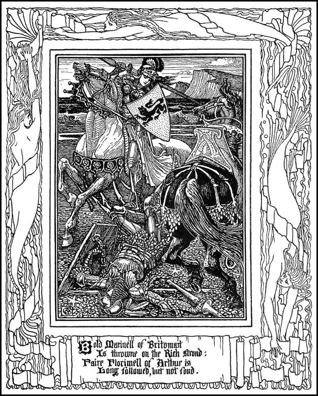
Britomart overthrows MarinellWalter Crane, 1895–97 · from the George Allen edition
xiiThus as she her recomforted, she spied,Where fare away one all in armour bright,With hasty gallop towards her did ryde;Her dolour soon she ceas’d, and on her dightHer Helmet, to her Courser mounting light:Her former sorrow into sudden wrath,Both cozen passions of distroubled spright,Converting, forth she beats the dusty path;Love and despite at once her courage kindled hath.
xiiiAs when a foggy mist hath overcastThe face of heaven, and the clear aire engrost,The world in darkens dwells, till that at lastThe wat’ry Southwinde from the seaboard costUpblowing, doth disperse the vapour lo’st,And pours it self forth in a stormy shower;So the fair Britomart having disclo’stHer clowdy care into a wrathful stowre,The mist of grief dissolv’d, did into vengeance power.
xivEftsoons her goodly shield addressing fair,That mortal spear she in her hand did take,And unto battle did her self prepaire.The knight approaching, sternly her bespake;Sir knight, that doest thy voyage rashly makeBy this forbidden way in my despite,Ne doest by others death ensample take,I read thee soon retire, whiles thou hast might,Least afterwards it be too late to take thy flight.
xvYthrild with deep disdain of his proud threat,She shortly thus; Fly they, that need to fly;Words fearen babes. I mean not thee entreatTo pass; but maugre thee will pass or dy.Ne lenger stay’d for th’other to reply,But with sharpe spear the rest made dearly known.Strongly the strange knight ran, and sturdilyStroke her full on the breast, that made her downDecline her head, and touch her crouper with her crown.
xviBut she again him in the shield did smiteWith so fierce fury and great puissance,That through his threesquare scuchin percing quite,And through his mailed hauberque, by mischanceThe wicked steel through his left side did glance;Him so transfixed she before her boreBeyond his croupe, the length of all her launce,Till sadly soucing on the sandy shore,He tombled on an heap, and wallow’d in his gore.
xviiLike as the sacred Oxy, that carless stands,With gilden horns, and floury garlands crown’d,Proud of his dying honour and dear bands,Whiles th’altars fume with frankincense arownd,All suddenly with mortal stroke astownd,Doth groveling fall, and with his streaming goreDistains the pillars, and the holy grown’d,And the fair flowers, that decked him afore;So fell proud Marinell upon the precious shore.
xviiiThe martial Maid stay’d not him to lament,But forward rode, and kept her ready wayAlong the strond, which as she over-went,She saw bestrowed all with rich arrayOf pearls and precious stones of great assay,And all the gravel mixt with golden owre;Whereat she wonder’d much, but would not stayFor gold, or perls, or precious stones an hour,But them despised all; for all was in her power.
xixWhiles thus he lay in deadly stonishment,Tidings hereof came to his mothers ear;His mother was the black-brow’d Cymoent,The daughter of great Nereus, which did bearThis warlike son unto an earthly pear,The famous Dumarin; who on a dayFinding the Nymph a sleep in secret where,As he by chance did wander that same way,Was taken with her love, and by her closely lay.
xxThere he this knight of her begot, whom borneShe of his father Marinell did name,And in a rocky cave as wight forlorn,Long time she foster’d up, till he becameA mighty man at arms, and mickle fameDid get through great adventures by him donne:For never man he suffer’d by that sameRich strond to travel, whereas he did won,But that he must do battle with the Sea-nymphs son.
xxiAn hundred knights of honorable nameHe had subdue’d, and them his vassals made,That through all Farie lond his noble fameNow blazed was, and fear did all invade,That none durst passen through that perilous glade.And to advance his name and glory more,Her Sea-god syr she dearly did perswade,T’endow her son with threasure and rich store,Bovey all the sons, that were of earthly wombs ybore.
xxiiThe God did grant his daughters dear demand,To doen his Nephew in all riches flow;Eftsoons his heaped waves he did command,Out of their hollow bosom forth to throwAll the huge threasure, which the sea belowHad in his greedy gulf devoured deep,And him enriched through the overthrowAnd wrecks of many wretches, which did weep,And often wail their wealth, which he from them did keep.
xxiiiShortly upon that shore there heaped was,Exceeding riches and all precious things,The spoil of all the world, that it did pasThe wealth of th’East, and pomp of Persian kings;Gold, amber, ivory, perls, owches, rings,And all that else was precious and dear,The sea unto him voluntary brings,That shortly he a great Lord did appear,As was in all the lond of Faery, or elsewhere.
xxivThereto he was a doughty dreaded knight,Tried often to the scathe of many dear,That none in equal arms him matchen might,The which his mother seeing, gan to fearLeast his too haughty hardiness might rearSome hard mishap, in hazard of his life:For thy she oft him counsel’d to forbearThe bloody battle, and to stire up strife,But after all his war, to rest his weary knife.
xxvAnd for his more assurance, she inquir’dOne day of Proteus by his mighty spell,(For Proteus was with prophecy inspir’d)Her dear sons destiny to her to tell,And the sad end of her sweet Marinell.Who through foresight of his eternal skill,Bad her from womankind to keep him well:For of a woman he should have much ill,A virgin strange and stout him should dismay, or kill.
xxviFor thy she gave him warning every day,The love of women not to entertain;A lesson too too hard for living clay,From love in course of nature to refrain:Yet he his mothers lore did well retain,And ever from fair Ladies love did fly;Yet many Ladies fair did oft complain,That they for love of him would algates dy:Dy, who so list for him, he was loves enemy.
xxviiBut ah, who can deceive his destiny,Or ween by warning to avoid his fate?That when he sleeps in most security,And safest seems, him soonest doth amate,And findeth dew effect or soon or late.So feeble is the power of fleshly arm.His mother bad him womens love to hate,For she of womans force did fear no harm;So weening to have arm’d him, she did quite disarm.
xxviiiThis was that woman, this that deadly wound,That Proteus prophecide should him dismay,The which his mother vainly did expound,To be heart-wounding love, which should assayTo bring her son unto his last decay.So tickle be the termes of mortal state,And full of subtile sophisms, which do playWith double senses, and with false debate,T’approve the unknowen purpose of eternal fate.
xxixToo true the famous Marinell it fownd,Who through late trial, on that wealthy StrondInglorious now lies in senseless swoon’d,Through heavy stroke of Britomartis hond.Which when his mother dear did understond,And heavy tidings heard, whereas she play’dAmongst her wat’ry sisters by a pond,Gathering sweet daffadillyes, to have madeGay garlands, from the Sun their forheads fair to shade;
xxxEftsoons both flowers and garlands fare awayShe flong, and her fair dewy locks yrent,To sorrow huge she turn’d her former play,And gamesome merth to grievous dreriment:She threw her self down on the Continent,Ne word did speak, but lay as in a swoon,Whiles all her sisters did for her lament,With yelling outcries, and with shrieking sown;And every one did tear her garland from her crown.
xxxiSoon as she up out of her deadly fitArose, she bad her charet to be brought,And all her sisters, that with her did sit,Bad eke at once their charets to be sought;Tho full of bitter grief and pensive thought,She to her wagon clomb; clomb all the rest,And forth together went, with sorrow fraught.The waves obedient to their behest,Them yielded ready passage, and their rage surceas’d.
xxxiiGreat Neptune stood amazed at their sight,Whiles on his broad round back they softly slidAnd eke himself mourn’d at their mournful plight,Yet wist not what their wailing ment, yet didFor great compassion of their sorrow, bidHis mighty waters to them buxom be:Eftsoons the roaring billows still abide,And all the grisly Monsters of the SeeStood gaping at their gate, and wonder’d them to see.
xxxiiiA teme of Dolphins ranged in array,Drew the smooth charet of sad Cymoent;They were all taught by Triton, to obayTo the long rains, at her commaundement:As swift as swallows, on the waves they went,That their broad flaggy finns no foam did rear,Ne bubbling roundel they behind them sent;The rest of other fishes drawen wear,Which with their finny oars the swelling sea did shear.
xxxivSoon as they been arriv’d upon the brimOf the Rich strond, their charets they forlore,And let their temed fishes softly swimAlong the margent of the foamy shore,Least they their finns should bruze, and surbate soreTheir tender feet upon the stony ground:And coming to the place, where all in goreAnd cruddy blood enwallowed they foundThe luckless Marinell, lying in deadly swoun’d;
xxxvHis mother swoon’d thrice, and the third timeCould scarce recovered be out of her pain;Had she not been devoid of mortal slime,She should not then have been reliv’d again,But soon as life recovered had the rain,She made so piteous mon and dear wayment,That the hard rocks could scars from tears refrain,And all her sister Nymphs with one consentSupplied her sobbing breaches with sad complement.
xxxviDear image of my self (she said) that is,The wretched son of wretched mother borne,Is this thine high aduauncement, O is thisTh’immortall name, with which thee yet unborneThy Gransire Nereus promist to adorn?Now lyest thou of life and honour reft;Now lyest thou a lump of earth forlorn,Ne of thy late life memory is left,Ne can thy irrevocable destiny be weft?
xxxviiFond Proteus, father of false prophecis,And they more fond, that credit to thee give,Not this the work of womans hand ywis,That so deep wound through these dear members drive.I feared love: but they that love do live,But they that die, do neither love nor hate.Nath’lesse to thee thy folly I forgive,And to my self, and to accursed fateThe guilt I do ascribe: dear wisedome bought too late.
xxxviiiO what avails it of immortal seedTo been ybred and never borne to die?Fare better I it deem to die with speed,Then waste in woe and wailful misery.Who dyes the utmost dolour doth abye,But who that lives, is left to wail his loss:So life is loss, and death felicity.Sad life worse than glad death: and greater crossTo see friends grave, then dead the grave self to engross.
xxxixBut if the heavens did his days envy,And my short bliss malign, yet mote they wellThus much afford me, ere that he did dieThat the dim eyes of my dear MarinellI mote have closed, and him bed farewell,Sith other offices for mother meetThey would not grant.Yet maulgre them farewell, my sweetest sweet;Farewell my sweetest son, sith we no more shall meet.
xlThus when they all had sorrowed their fill,They softly gan to search his grisly wound:And that they might him handle more at will,They him disarm’d, and spreading on the groundTheir watchet mantles frindgd with silver round,They softly wipt away the gelly bloodFrom th’orifice; which having well upbound,They pour'd in sovereign balm, and Nectar good,Good both for earthly med’cine, and for heavenly food.
xliTho when the lilly handed Liagore,(This Liagore whilom had learned skillIn leaches craft, by great Appolloes lore,Sith her whilom upon high Pindus hill,He loved, and at last her womb did fillWith heavenly seed, whereof wise Pæon sprong)Did feel his pulse, she knew their staied stillSome little life his feeble sprites among;Which to his mother told, despeire she from her flong.
xliiTho up him taking in their tender hands,They easily unto her charet bear:Her teme at her commaundement quiet stands,Whiles they the corse into her wagon rear,And strow with flowers the lamentable bear:Then all the rest into their coaches clime,And through the brackish waves their passage shear;Upon great Neptunes neck they softly swim,And to her wat’ry chamber swiftly carry him.
xliiiDeep in the bottom of the sea, her bowerIs built of hollow billows heaped hye,Like to thick clouds, that threat a stormy shower,And vaulted all within, like to the sky,In which the Gods do dwell eternally:There they him laid in easy couch well dight;And sent in haste for Tryphon, to applySalves to his wounds, and medicines of might:For Tryphon of sea gods the sovereign leach is hight.
xlivThe whiles the Nymphes sit all about him round,Lamenting his mishap and heavy plight;And oft his mother vewing his wide wound,Cursed the hand, that did so deadly smiteHer dearest son, her dearest hearts delight.But none of all those curses overtookThe warlike Maid, th’ensample of that might,But fairly well she thriv’d, and well did brookeHer noble deeds, ne her right course for ought forsook.
xlvYet did false Archimage her still pursue,To bring to pass his mischievous intent,Now that he had her singled from the crewOf courteous knights, the Prince, and Faery gent,Whom late in chace of beauty excellentShe left, pursewing that same foster strong;Of whose foul outrage they impatient,And full of fiery zeal, him followed long,To rescue her from shame, and to revenge her wrong.
xlviThrough thick and thin, through mountains and through plains,Those two great champions did at once pursueThe fearful damsel, with incessant pains:Who from them fled, as light-foot hare from viewOf hunter swift, and sent of hounds trow.At last they came unto a double way,Where, doubtful which to take, her to rescue,Themselves they did dispart, each to assay,Whether more happy were, to win so goodly pray.
xlviiBut Timias, the Princes gentle Squire,That Ladies love unto his Lord forlent,And with proud envy, and indignant ire,After that wicked foster fiercely went.So been they three three sundry ways ybent.But fairest fortune to the Prince befell,Whose chance it was, that soon he did repent,To take that way, in which that DamozelWas fled afore, afraid of him, as fiend of hell.
xlviiiAt last of her fare off he gained view:Then gan he freshly prick his foamy steed,And ever as he nigher to her drew,So evermore he did increase his speed,And of each turning still kept wary heed:Aloud to her he oftentimes did call,To do away vain doubt, and needless dreed:Full mild to her he spake, and oft let fallMany meek words, to stay and comfort her withal.
xlixBut nothing might relent her hasty flight;So deep the deadly fear of that foul swainWas erst impressed in her gentle spright:Like as a fearful Dove, which through the rain,Of the wide aire her way does cut amain,Having fare off espied a Tassell gent,Which after her his nimble wings doth strain,Doubleth her haste for fear to be for-hent,And with her pineons cleaves the liquid firmament.
lWith no less haste, and eke with no less dreed,That fearful Lady fled from him, that mentTo her no evil thought, nor evil deed;Yet former fear of being foully shent,Carried her forward with her first intent:And though oft looking backward, well she view'd,Her self freed from that foster insolent,And that it was a knight, which now her sew’d,Yet she no less the knight fear’d, then that villein rude.
liHis uncouth shield and strange arms her dismay’d,Whose like in Faery lond were seldom seen,That fast she from him fled, no less afraid,Then of wild beasts if she had chased been:Yet he her follow’d still with courage keen,So long that now the golden HesperusWas mounted high in top of heaven sheen,And warn’d his other brethren joyeous,To light their blessed lamps in Joves eternal hoos.
liiAll suddenly dim woxe the dampish ayre,And grisly shadows covered heaven bright,That now with thousand starrs was decked fayre;Which when the Prince beheld, a loathful sight,And that perforce, for want of lenger light,He mote surcease his suit, and lose the hopeOf his long labour, he gan foully wyteHis wicked fortune, that had turn’d aslope,And cursed night, that reft from him so goodly scope.
liiiTho when her ways he could no more descry,But to and fro at disaventure stray’d;Like as a ship, whose Lodestar suddenlyCovered with clouds, her Pilot hath dismay’d;His wearisome pursuit perforce he stay’d,And from his lofty steed dismounting low,Did let him forage. Down himself he laidUpon the grassy ground, to sleep a throw;The cold earth was his couch, the hard steel his pillow.
livBut gentle Sleep ennuied him any rest;In stead thereof sad sorrow, and disdainOf his hard hap did vex his noble breast,And thousand fancies bet his idle braineWith their light wings, the sights of semblants vain:Oft did he wish, that Lady fair mote beHis Faery Queen, for whom he did complain:Or that his Faery Queen were such, as she:And ever hasty Night he blamed bitterly.
lvNight thou foul Mother of annoyance sad,Sister of heavy death, and norse of woe,Which wast begot in heaven, but for thy badAnd brutish shape thrust down to hell below,Where by the grim flood of Cocytus slowThy dwelling is, in Herebus black hoos,(Black Herebus thy husband is the foeOf all the Gods) where thou ungracious,Half of thy days doest lead in horror hideous.
lviWhat had th’eternall Maker need of thee,The world in his continual course to keep,That doest all things deface, ne lettest seeThe beauty of his work? Indeed in sleepThe slothful body, that doth love to steepHis lustless limbs, and drown his baser mind,Doth praise thee oft, and oft from Stygian deepCalls thee, his goddess in his error blind,And great Dame Natures handmaid, cheering every kind.
lviiBut well I wot, that to an heavy heartThou art the root and nurse of bitter cares,Breeder of new, renewer of old smarts:In stead of rest thou lendest railing tears,In stead of sleep thou sendest troublous fears,And dreadful visions, in the which aliveThe dreary image of sad death appears:So from the weary spirit thou doest driveDesired rest, and men of happiness deprive.
lviiiUnder thy mantle black there hidden lye,Light-shonning theft, and traiterous intent,Abhorred bloodshed, and vile felony,Shameful deceipt, and danger imminent;Foul horror, and eke hellish dreriment:All these I wot in thy protection be,And light do shone, for fear of being shent:For light ylike is loth’d of them and thee,And all that lewdness love, do hate the light to see.
lixFor day discovers all dishonest ways,And sheweth each thing, as it is indeed:The praises of high God he fair displays,And his large bounty rightly doth aread.Days dearest children be the blessed seed,Which darkness shall subdue, and heaven win:Truth is his daughter; he her first did breed,Most sacred virgin, without spot of sin.Our life is day, but death with darkness doth begin.
lxO when will day then turn to me again,And bring with him his long expected light?O Titan, haste to rear thy joyous wain:Speed thee to spread abroad thy beams bright,And chase away this too long ling’ring night,Chase her away, from whence she came, to hell.She, she it is, that hath me done despite:There let her with the damned spirits dwell,And yield her rome to day, that can it govern well.
lxiThus did the Prince that weary night outwear,In restless anguish and unquiet pain:And early, ere the morrow did uprearHis dewy head out of the Ocean main,He up arose, as half in great disdain,And clomb unto his steed. So forth he went,With heavy loke and lumpish pace, that plainIn him bewraid great grudge and maltalent:His steed eke seem’d t’apply his steps to his intent.
Booke III · Chastitie
Canto V
❧
Prince Arthur hears of Florimell: three fosters Timias wound, Belphebe finds him almost dead, and reareth out of sown’d.
❧
ionder it is to see, in diverse minds,How diversly love doth his pageants play,And shews his power in variable kinds:The baser wit, whose idle thoughts alwayAre wont to cleave unto the lowly clay,It stirreth up to sensual desire,And in lewd sloth to wast his carless day:But in brave sprite it kindles goodly fire,That to all high desert and honour doth aspire.
iiNe suffereth it uncomely idleness,In his free thought to build her sluggish nest:Ne suffereth it thought of ungentleness,Ever to creep into his noble breast,But to the highest and the worthiestLifteth it up, that else would lowly fall:It lets not fall, it lets it not to rest:It lets not scars this Prince to breath at all,But to his first poursuit him forward still doth call.
iiiWho long time wander’d through the forrest wide,To find some issue thence, till that at lastHe met a Dwarf, that seemed terrifiedWith some late peril, which he hardly past,Or other accident, which him aghast;Of whom he asked, whence he lately came,And whither now he travelled so fast:For sore he swat, and running through that sameThick forest, was bescratcht, and both his feet nigh lame.
ivPanting for breath, and almost out of heart,The Dwarf him answer’d, Sir, ill mote I stayTo tell the same. I lately did departFrom Faery court, where I have many a dayServed a gentle Lady of great sway,And high accompt through out all Elfin land,Who lately left the same, and toke this way:Her now I seek, and if ye understandWhich way she fared hath, good Sir tell out of hand.
vWhat mister wight (said he) and how array’d?Royally clad (quoth he) in cloth of gold,As meetest may beseem a noble maid;Her fair locks in rich circlet be enrol’d,A fairer wight did never Sun behold,And on a Palfrey rides more white than snow,Yet she her self is whiter manifold:The surest sign, whereby ye may her know,Is, that she is the fairest wight alive, I trow.
viNow certes swain (said he) such one I ween,Fast flying through this forest from her fo,A foul ill favoured foster, I have seen;Her self, well as I might, I rescu’d tho,But could not stay; so fast she did forego,Carried away with wings of speedy fear.Ah dearest God (quoth he) that is great woe,And wondrous ruth to all, that shall it hear.But can ye read Sir, how I may her find, or where?
viiPerdy me lever were to weeten that,(Said he) then ransome of the richest knight,Or all the good that ever yet I gat:But froward fortune, and too forward NightSuch happiness did, maulgre, to me spite,And fro me reft both life and light at one.But Dwarf aread, what is that Lady bright,That through this forest wandreth thus alone;For of her error strange I have great ruth and mon.
viiiThat Lady is (quoth he) where so she be,The bountiest virgin, and most debonaire,That ever living eye I ween did see;Lives none this day, that may with her compareIn steadfast chastity and virtue rare,The goodly ornaments of beauty bright;And is ycleped Florimell the fair,Fair Florimell belov’d of many a knight,Yet she loves none but one, that Marinell is hight.
ixA Sea-nymphs son, that Marinell is hight,Of my dear Dame is loved dearly well;In other none, but him, she sets delight,All her delight is set on Marinell;But he sets nought at all by Florimell:For Ladies love his mother long ygoeDid him, they say, forwarn through sacred spell.But fame now flies, that of a forreine foeHe is yslaine, which is the ground of all our woe.
xFive days there be, since he (they say) was slain,And four, since Florimell the Court for-went,And vowed never to return again,Till him alive or dead she did invent.Therefore, fair Sir, for love of knighthood gent,And honour of trow Ladies, if ye mayBy your good counsel, or bold hardiment,Or succour her, or me direct the way;Do one, or other good, I you most humbly pray.
xiSo may ye gain to you full great renown,Of all good Ladies through the world so wide,And haply in her heart find highest room,Of whom ye seek to be most magnified:At least eternal meed shall you abide.To whom the Prince; Dwarf, comfort to thee take,For till thou tidings learn, what her betide,I here avow thee never to forsake.Ill wears he arms, that nill them use for Ladies sake.
xiiSo with the Dwarf he back return’d again,To seek his Lady, where he mote her find;But by the way he greatly gan complainThe want of his good Squire late left behind,For whom he wondrous pensive grew in mind,For doubt of danger, which mote him betide;For him he loved above all mankind,Having him trow and faithful ever tried,And bold, as ever Squire that waited by knights side.
xiiiWho all this while full hardly was assay’dOf deadly danger, which to him betid;For whiles his Lord pursewd that noble Maid,After that foster foul he fiercely rid,To been avenged of the shame, he didTo that fair Damsel: Him he chased longThrough the thick woods, wherein he would have hidHis shameful head from his avengement strong,And oft him threaten’d death for his outrageous wrong.
xivNathless the villen sped him self so well,Whether through swiftness of his speedy beast,Or knowledge of those woods, where he did dwell,That shortly he from danger was releas’d,And out of sight escaped at the least;Yet not escaped from the dew rewardOf his bad deeds, which daily he increas’d,Ne ceased not, till him oppressed hardThe heavy plague, that for such leachours is prepar’d.
xvFor soon as he was vanisht out of sight,His coward courage gan embolden’d be,And cast t’avenge him of that foul despite,Which he had borne of his bold enimee.Tho to his brethren came: for they were threeUngracious children of one graceless sire,And unto them complained, how that heHad used been of that foolehardy Squire;So them with bitter words he stir’d to bloody ire.
xviForthwith themselves with their sad instrumentsOf spoil and murder they gan arm bylive,And with him forth into the forest went,To wreak the wrath, which he did erst reviveIn their stern breasts, on him which late did driveTheir brother to reproach and shameful flight:For they had vow’d, that never he aliveOut of that forest should escape their might;Vile rancour their rude hearts had fil’d with such despite.
xviiWithin that wood there was a covert glade,Foreby a narrow ford, to them well known,Through which it was uneath for wight to wade;And now by fortune it was overflown:By that same way they knew that Squire unknownMote algates pass; for thy themselves they setThere in await, with thick woods over grown,And all the while their malice they did whetWith cruel threats, his passage through the ford to let.
xviiiIt fortuned, as they devised had,The gentle Squire came riding that same way,Unweeting of their wile and treason bad,And through the ford to passen did assay;But that fierce foster, which late fled away,Stoutly forth stepping on the further shore,Him boldly bad his passage there to stay,Till he had made amends, and full restoreFor all the damage, which he had him doen afore.
xixWith that at him a quiv’ring dart he threw,With so fell force and villeinous despite,That through his haberieon the forkehead flew,And through the linked mailes empierced quite,But had no power in his soft flesh to bite:That stroke the hardy Squire did sore displease,But more that him he could not come to smite;For by no means the high bank he could seas,But labour’d long in that deep ford with vain disease.
xxAnd still the foster with his long bore-spearHim kept from landing at his wished will;Anon one sent out of the thicket nearA cruel shaft, headed with deadly ill,And feathered with an unlucky quill;The wicked steel stay’d not, till it did lightIn his left thigh, and deeply did it thrill:Exceeding grief that wound in him empight,But more that with his foes he could not come to fight.
xxiAt last through wrath and vengeance making way,He on the bancke arriv’d with mickle pain,Where the third brother him did sore assay,And drove at him with all his might and mainA forrest bill, which both his hands did strain;But warily he did avoid the blow,And with his spear requited him again,That both his sides were thrilled with the throw,And a large stream of blood out of the wound did flow.
xxiiHe tombling down, with gnashing teeth did biteThe bitter earth, and bad to let him inInto the baleful house of endless night,Where wicked ghosts do wail their former sin.Tho gan the battle freshly to begin;For nathemore for that spectacle bad,Did th’other two their cruel vengeance blin,But both at once on both sides him bestad,And load upon him laid, his life for to have had.
xxiiiTho when that villain he aviz’d, which lateAffrighted had the fairest Florimell,Full of fiers fury, and indignant hate,To him he turned, and with rigour fellSmote him so rudely on the Pannikell,That to the chin he cleft his head in twain:Down on the ground his carkas groveling fell;His sinful soul with desperate disdain,Out of her fleshly ferm fled to the place of pain.
xxivThat seeing now the only last of three,Who with that wicked shaft him wounded had,Trembling with horror, as that did foreseeThe fearful end of his avengement sad,Through which he follow should his brethren bad,His bootless bow in feeble hand upcaught,And therewith shot an arrow at the lad;Which faintly flutt’ring, scarce his helmet raught,And glancing fell to ground, but him annoyed naught.
xxvWith that he would have fled into the wood;But Timias him lightly overhent,Right as he ent’ring was into the flood,And stroke at him with force so violent,That headless him into the ford he sent:The carkas with the stream was carried down,But th’head fell backeward on the Continent.So mischief fell upon the meaners crown;They three be dead with shame, the Squire lives with renown.
xxviHe lives, but takes small joy of his renown;For of that cruel wound he bled so sore,That from his steed he fell in deadly swoon;Yet still the blood forth gusht in so great store,That he lay wallow’d all in his own gore.Now God thee keep, thou gentlest Squire alive,Else shall thy loving Lord thee see no more,But both of comfort him thou shalt deprive,And eke thy self of honour, which thou didst atchive.
xxviiProvidence heavenly passeth living thought,And doth for wretched mens reliefs make way;For lo great grace or fortune thither broughtComfort to him, that comfortless now lay.In those same woods, ye well remember may,How that a noble hunters did won,She, that base Braggadochio did affray,And made him fast out of the forrest rune;Belphœbe was her name, as fair as Phœbus sun.
xxviiiShe on a day, as she pursewd the chaceOf some wild beast, which with her arrows keenShe wounded had, the same along did traceBy tract of blood, which she had freshly seen,To have besprinckled all the grassy green;By the great pursue, which she there perceav’d,Well hoped she the beast engor’d had been,And made more hast, the life to have bereav’d:But ah, her expectation greatly was deceav’d.
xxixShortly she came, whereas that woful SquireWith blood deformed, lay in deadly swoon’d:In whose fair eyes, like lamps of quenched fire,The Crystal humour stood congealed rownd;His locks, like faded leaves fallen to grown’d,Knotted with blood, in bounches rudely ran,And his sweet lips, on which before that stown’dThe bud of youth to blossom fair began,Spoil’d of their rosie red, were woxen pale and wan.
xxxSaw never living eye more heavy sight,That could have made a rock of stone to rew,Or rive in twain: which when that Lady brightBesides all hope with melting eyes did view,All suddeinly abasht she changed hue,And with stern horror backward gan to start:But when she better him beheld, she grewFull of soft passion and unwonted smart:The point of pity perced through her tender heart.
xxxiMeekly she bowed down, to weet if lifeYet in his frozen members did remain,And feeling by his pulses beating rife,That the weak soul her seat did yet retain,She cast to comfort him with busy pain:His double folded neck she rear’d upright,And rub’d his temples, and each trembling vain;His mailed haberieon she did undight,And from his head his heavy burganet did light.
xxxiiInto the woods thenceforth in hast she went,To seek for herbs, that mote him remedy;For she of herbs had great intendiment,Taught of the Nymph, which from her infancyHer nourced had in trow Nobility:There, whether it divine Tobacco were,Or Panachæa or Polygony,She found, and brought it to her patient dearWho al this while lay bleeding out his heart-blood near.
xxxiiiThe sovereign weed betwixt two marbles plainShe pownded small, and did in pieces bruze,And then atween her lilly hands twain,Into his wound the juice thereof did scruze,And round about, as she could well it use,The flesh therewith she suppled and did steep,T’abate all spasm, and soke the swelling bruze,And after having search’d the intuse deep,She with her scarfe did bind the wound from cold to keep.
xxxivBy this he had sweet life recur’d again,And groaning inly deep, at last his eyes,His wat’ry eyes, drizling like dewy rain,He up gan lift toward the azure skies,From whence descend all hopeless remedies:Therewith he sigh’d, and turning him aside,The goodly Maid full of divinities,And gifts of heavenly grace he by him spied,Her bow and gilden quiver lying him beside.
xxxvMercy dear Lord (said he) what grace is this,That thou hast showed to me sinful wight,To send thine Angell from her bower of bliss,To comfort me in my distressed plight?Angell, or Goddess do I call thee right?What service may I do unto thee meet,That hast from darkens me return’d to light,And with thy heavenly salves and med’cines sweet,Hast drest my sinful wounds? I kiss thy blessed feet.
xxxviThereat she blushing said, Ah gentle Squire,Nor Goddess I, nor Angell, but the Maid,And daughter of a woody Nymph, desireNo service, but thy safety and aid;Which if thou gain, I shalbe well apayd.We mortal wights, whose lives and fortunes beTo commune accidents still open laid,Are bound with commune bond of frailty,To succour wretched wights, whom we captived see.
xxxviiBy this her Damsels, which the former chaceHad undertaken after her, arriv’d,As did Belphœbe, in the bloody place,And thereby deem’d the beast had been depriv’dOf life, whom late their Ladies arrow riv’d:For thy the bloody tract they follow fast,And every one to rune the swiftest strive’d;But two of them the rest far overpast,And where their Lady was, arrived at the last.
xxxviiiWhere when they saw that goodly boy, with bloodDefowled, and their Lady dress his wownd,They wonder’d much, and shortly understood,How him in deadly case their Lady fownd,And rescu’d out of the heavy stown’d.Eftsoons his warlike courser, which was stray’dFare in the woods, whiles that he lay in swoon’d,She made those Damsels search, which being stay’d,They did him set thereon, and forth with them conuayd.
xxxixInto that forest fare they thence him led,Where was their dwelling, in a pleasant glade,With mountains round about environed,And mighty woods, which did the valley shade,And like a stately Theatre it made,Spreading it self into a spacious plain.And in the midst a little river plaideAmongst the pumy stones, which seem’d to plainWith gentle murmur, that his course they did restrain.
xlBeside the same a dainty place there lay,Planted with mirtle trees and laurels green,In which the birds song many a lovely layOf gods high prays, and of their loves sweet teen,As it an earthly Paradise had been:In whose enclosed shadow there was pightA fair Pavilion, scarcely to be seen,The which was all within most richly dight,That greatest Princes living it mote well delight.
xliThither they brought that wounded Squire, and laidIn easy couch his feeble limbs to rest,He rested him a while, and then the MaidHis ready wound with better salves new drest;Daily she dressed him, and did the bestHis grievous hurt to garish, that she might,That shortly she his dolour hath redress’d,And his foul sore reduced to fair plight:It she reduced, but himself destroyed quite.
xliiO foolish Physic, and unfruitful pain,That heals up one and makes another wound:She his hurt thigh to him recur’d again,But hurt his heart, the which before was sound,Through an unwary dart, which did reboundFrom her fair eyes and gracious countenance.What boots it him from death to be unbound,To be captived in endless duranceOf sorrow and despair without aleggeaunce?
xliiiStill as his wound did gather, and grow hole,So still his heart woxe sore, and health decay’d:Madness to save a part, and lose the whole.Still whenas he beheld the heavenly Maid,Whiles daily plaisters to his wound she laid,So still his Malady the more increas’d,The whiles her matchless beauty him dismay’d.Ah God, what other could he do at least,But love so fair a Lady, that his life releas’d?
xlivLong while he strove in his courageous breast,With reason dew the passion to subdue,And love for to dislodge out of his nest:Still when her excellencies he did view,Her sovereign bounty, and celestial hue,The same to love he strongly was constrain’d:But when his mean estate he did revue,He from such hardy boldness was restrain’d,And of his luckless lot and cruel love thus plain’d.
xlvUnthankful wretch (said he) is this the meed,With which her sovereign mercy thou doest quite?Thy life she saved by her gracious deed,But thou doest ween with villeinous despite,To blot her honour, and her heavenly light.Dye rather, dye, then so disloyallyDeem of her high desert, or seem so light:Fair death it is to shone more shame, to dy:Dye rather, dy, then ever love disloyally.
xlviBut if to love disloyalty it be,Shall I then hate her, that from deaths doorMe brought? ah fare be such reproach fro me.What can I less do, then her love therefore,Sith I her dew reward cannot restore?Dye rather, dye, and dying do her serve,Dying her serve, and living her adore;Thy life she gave, thy life she doth deserve:Dye rather, dye, then ever from her service swerve.
xlviiBut foolish boy, what boots thy service baseTo her, to whom the heavens do serve and sew?Thou a mean Squire, of meek and lowly place,She heavenly borne, and of celestial hue.How then? of all love taketh equal view:And doth not highest God vouchsafe to takeThe love and service of the basest crew?If she will not, dye meekly for her sake;Dye rather, dye, then ever so fair love forsake.
xlviiiThus warreid he long time against his will,Till that through weakness he was forc’d at last,To yield himself unto the mighty ill:Which as a victor proud, gan ransack fastHis inward parts, and all his entrails wast,That neither blood in face, nor life in heartIt left, but both did quite dry up, and blast;As percing levin, which the inner partOf everything consumes, and calcineth by art.
xlixWhich seeing fair Belphœbe, gan to fear,Least that his wound were inly well not healed,Or that the wicked steel empoysned were:Little she wend, that love he close concealed;Yet still he wasted, as the snow congealed,When the bright sun his beams thereon doth beat;Yet never he his heart to her revealed,But rather chose to die for sorrow great,Then with dishonorable termes her to entreat.
lShe gracious Lady, yet no pains did spare,To do him ease, or do him remedy:Many Restoratives of virtues rare,And costly Cordials she did apply,To mitigate his stubborn malady:But that sweet Cordial, which can restoreA love-sick heart, she did to him envy;To him, and to all th’unworthy world forloreShe did envy that sovereign salue, in secret store.
liThat dainty Rose, the daughter of her Morne,More dear than life she tendered, whose flowerThe garland of her honour did adorn:Ne suffer’d she the Middays scorching power,Ne the sharp Northern wind thereon to shower,But lapped up her silken leaves most chair,When so the froward skye began to lower:But soon as calmed was the Crystal aire,She did it fair dispread, and let to florish fair.
liiEternal God in his almighty power,To make ensample of his heavenly grace,In Paradise whilom did plant this flower,Whence he it fetch’d out of her native place,And did in stock of earthly flesh enrace,That mortal men her glory should admire:In gentle Ladies breast, and bounteous raceOf woman kind it fairest flower doth spire,And beareth fruit of honour and all chaste desire.
liiiFair imps of beauty, whose bright shining beamsAdorn the world with like to heavenly light,And to your wills both royalties and RealmsSubdue, through conquest of your wondrous might,With this fair flower your goodly garlands dight,Of chastity and virtue virginal,That shall embellish more your beauty bright,And crown your heads with heavenly coronal,Such as the Angels wear before Gods tribunal.
livTo your fair selves a fair ensample frame,Of this fair virgin, this Belphœbe fair,To whom in perfect love, and spotless fameOf chastity, none living may compaire:Ne poysnous Envy justly can empaireThe prays of her fresh flouring Maidenhead;For thy she standeth on the highest stairOf th’honorable stage of womanhead,That Ladies all may follow her ensample dead.
lvIn so great prays of steadfast chastity,Nathless she was so courteous and kind,Temper’d with grace, and goodly modesty,That seemed those two virtues strove to findThe higher place in her Heroic mind:So striving each did other more augment,And both encreas’d the prays of woman kind,And both encreas’d her beauty excellent;So all did make in her a perfect complement.
Booke III · Chastitie
Canto VI
❧
The birth of fair Belphœbe and Of Amoret is told. The Gardins of Adonis fraught With pleasures manifold.
❧
iell may I ween, fair Ladies, all this whileYe wonder, how this noble DamozelSo great perfections did in her compile,that in salvage forests she did dwell,So fare from court and royal Citadel,The great schoolmistress of all courtesy:Seemeth that such wild woods should far expelAll civil usage and gentility,And gentle sprite deform with rude rusticity.
iiBut to this fair Belphœbe in her berthThe heavens so favourable were and free,Looking with mild aspect upon the earth,In th’Horoscope of her nativity,That all the gifts of grace and chastityOn her they poured forth of plenteous horne;Jove laught on Venus from his sovereign see,And Phœbus with fair beams did her adorn,And all the Graces rock’d her cradle being borne.
iiiHer berth was of the womb of Morning dew,And her conception of the joyous Prime,And all her whole creation did her showPure and unspotted from all loathly crime,That is ingenerate in fleshly slime.So was this virgin borne, so was she bred,So was she trained up from time to time,In all chaste virtue, and true bounty-headTill to her dew perfection she was ripened.
ivHer mother was the fair Chrysogonee,The daughter of Amphisa, who by raceA Faerie was, yborne of high degree,She bore Belphœbe, she bore in like caseFair Amoretta in the second place:These two were twines, and twixt them two did shareThe heritage of all celestial grace.That all the rest it seem’d they robbed bareOf bounty, and of beauty, and all virtues rare.
vIt were a goodly story, to declare,By what strange accident fair ChrysogoneConceiv’d these infants, and how them she bare,In this wild forrest wand’ring all alone,After she had nine months fulfil’d and gone:For not as other wemens commune brood,They were enwombed in the sacred throneOf her chaste body, nor with commune food,As other wemens babes, they sucked vital blood.
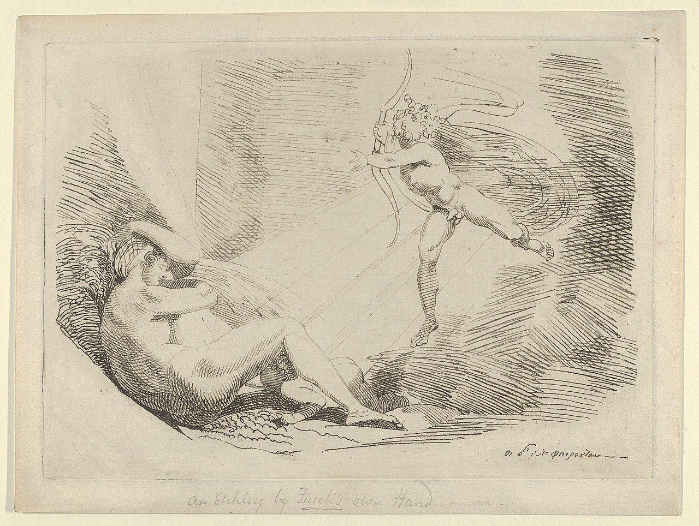
Chrysogone conceives, in a ray of sunshine, Amoretta and BelphoebeHenry Fuseli, c. 1800 · The Metropolitan Museum of Art
viBut wondrously they were begot, and bredThrough influence of th’heavens fruitful ray,As it in antique books is mentioned.It was upon a Sommers shiny day,When Titan fair his beams did display,In a fresh fountain, fare from all mens view,She bath’d her breast, the boiling heat t’ allay;She bath’d with roses red, and violets blew,And all the sweetest flowers, that in the forrest grew.
viiTill faint through irksome weariness, adownUpon the grassy ground her self she laidTo sleep, the whiles a gentle slumb’ring swoonUpon her fell all naked bare display’d;The sun-beams bright upon her body play’d,Being through former bathing mollified,And pierc’d into her womb, where they embay’dWith so sweet sense and secret power unspied,That in her pregnant flesh they shortly fructified.
viiiMiraculous may seem to him, that readsSo strange ensample of conception;But reason teacheth that the fruitful sedesOf all things living, through impressionOf the sunbeams in moist complexion,Do life conceive and quicken’d are by kind:So after Nilus inundation,Infinite shapes of creatures men do find,Informed in the mud, on which the Sun hath shynd.
ixGreat father he of generationIs rightly call'd, th’author of life and light;And his fair sister for creationMinistreth matter fit, which temper’d rightWith heat and humour, breeds the living wight.So sprong these twines in womb of Chrysogone,Yet wist she nought thereof, but sore affright,Wonder’d to see her belly so upblone,Which still increas’d, till she her term had full outgone.
xWhereof conceiving shame and foul disgrace,Albe her guiltless conscience her clear’d,She fled into the wilderness a space,Till that unwieldy burden she had rear’d,And shun’d dishonor, which as death she fear’d:Where weary of long travel, down to restHer self she set, and comfortably cheard;There a sad cloud of sleep her overkest,And seized every sense with sorrow sore oppress’d.
xiIt fortuned, fair Venus having lostHer little son, the winged god of love,Who for some light displeasure, which him crost,Was from her fled, as flit as ayerie Dove,And left her blissful bower of joy above,(So from her often he had fled away,When she for ought him sharply did reprove,And wander’d in the world in strange array,Disguise’d in thousand shapes, that none might him bewray.)
xiiHim for to seek, she left her heavenly hoos,The house of goodly forms and fair aspects,Whence all the world derives the gloriousFeatures of beauty, and all shapes select,With which high God his workmanship hath deck’d;And searched every way, through which his wingsHad borne him, or his tract she mote detect:She promist kisses sweet, and sweeter thingsUnto the man, that of him tidings to her brings.
xiiiFirst she him sought in Court, where most he usedWhilom to haunt, but there she found him not;But many there she found, which sore accusedHis falsehood, and with foul infamous blotHis cruel deeds and wicked wyles did spot:Ladies and Lords she every where mote hearComplaining, how with his empoysned shotTheir woeful hearts he wounded had whilere,And so had left them languishing twixt hope and fear.
xivShe then the Cities sought from gate to gate,And every one did ask, did he him see;And every one her answer’d, that too lateHe had him seen, and felt the crueltyOf his sharpe darts and whot artillery;And every one threw forth reproaches rifeOf his mischievous deeds, and said, That heWas the disturber of all civil life,The enemy of peace, and author of all strife.
xvThen in the country she abroad him sought,And in the rural cottages inquired,Where also many plaints to her were brought,How he their heedless hearts with love had fired,And his false venim through their veins inspired;And eke the gentle shepherd swains, which satKeeping their fleecy flocks, as they were hired,She sweetly heard complain, both how and whatHer son had to them doen; yet she did smile thereat.
xviBut when in none of all these she him got,She gan avize, where else he mote him hyde:At last she her bethought, that she had notYet sought the salvage woods and forests wide,In which full many lovely Nymphs abide,Mongst whom might be, that he did closely lye,Or that the love of some of them him tyde:For thy she thither cast her course t’apply,To search the secret haunts of Dianes company.
xviiShortly unto the wasteful woods she came,Whereas she found the Goddess with her crew,After late chace of their embrewed game,Sitting beside a fountain in a rew,Some of them washing with the liquid dewFrom off their dainty limbs the dusty sweat,And soil which did deform their lively hue;Others lay shaded from the scorching heat;The rest upon her person gave attendance great.
xviiiShe having hung upon a bough on highHer bow and painted quiver, had unlac’dHer silver buskins from her nimble thigh,And her lancke loins ungirt, and breasts unbrac’d,After her heat the breathing cold to taste;Her golden locks, that late in tresses brightEmbreaded were for hind’ring of her haste,Now loose about her shoulders hung undight,And were with sweet Ambrosia all besprinckled light.
xixSoon as she Venus saw behind her back,She was asham’d to be so loose surprized,And woxe half wroth against her damsels slack,That had not her thereof before avized,But suffer’d her so carelessly disguisedBe overtaken. Soon her garments looseUpgath’ring, in her bosom she comprized,Well as she might, and to the Goddess rose,Whiles all her Nymphs did like a garland her enclose.
xxGoodly she gan fair Cytherea greet,And shortly asked her, what cause her broughtInto that wilderness for her unmeet,From her sweet bowers, and beds with pleasures fraught:That sudden change she strange adventure thought.To whom half weeping, she thus answered,That she her dearest son Cupido sought,Who in his frowardness from her was fled;That she repented sore, to have him angered.
xxiThereat Diana gan to smile, in scornOf her vain plaint, and to her scoffing said;Great pity sure, that ye be so forlornOf your gay son, that gives ye so good aidTo your disports: ill mote ye been apayd.But she was more engrieved, and replied;Fair sister, ill beseems it to upbraidA doleful heart with so disdainful pride;The like that mine, may be your pain another tide.
xxiiAs you in woods and wanton wildernessYour glory set, to chace the salvage beasts,So my delight is all in joyfulness,In beds, in bowers, in banckets, and in feasts:And ill becomes you with your lofty crests,To scorn the joy, that Jove is glad to seek;We both are bound to follow heavens behests,And tend our charges with obeisance meek:Spare, gentle sister, with reproach my pain to eek.
xxiiiAnd tell me, if that ye my son have heard,To lurk amongst your Nymphs in secret wiz;Or keep their cabins: much I am affeard,Least he like one of them him self disguise,And turn his arrows to their exercise:So may he long himself full easy hide:For he is fair and fresh in face and guise,As any Nymph (let not it be ennuied.)So saying every Nymph full narrowly she eide.
xxivBut Phœbe therewith sore was angered,And sharply said; Goe Dame, goe seek your boy,Where you him lately left, in Mars his bed;He comes not here, we scorn his foolish joy,Ne lend we leisure to his idle toy:But if I catch him in this company,By Stygian lake I vow, whose sad annoyThe Gods do dread, he dearly shall abye:Ill clip his wanton wings, that he no more shall fly.
xxvWhom when as Venus saw so sore displeased,She inly sori was, and gan relent,What she had said: so her she soon appeased,With sugred words and gentle blandishment,Which as a fountain from her sweet lips went,And welled goodly forth, that in short spaceShe was well pleas’d, and forth her damsels sent,Through all the woods, to search from place to place,If any tract of him or tidings they mote trace.
xxviTo search the God of love, her Nymphs she sentThroughout the wand’ring forrest every where:And after them her self eke with her wentTo seek the fugitive, both fare and near,So long they sought, till they arrived wereIn that same shady covert, whereas layFair Chrysogone in slombry trance whilere:Who in her sleep (a wondrous thing to say)Unwares had borne two babes, as fair as springing day.
xxviiUnwares she them conceiv’d, unwares she bore:She bore withouten pain, that she conceivedWithouten pleasure: ne her need imploreLucinaes aide: which when they both perceived,They were through wonder nigh of sense bereaved,And gazing each on other, nought bespake:At last they both agreed, her seeming grievedOut of her heavy swoon not to awake,But from her loving side the tender babes to take.
xxviiiUp they them toke, each one a babe uptooke,And with them carried, to be fostered;Dame Phœbe to a Nymph her babe betook,To be upbrought in perfect Maidenhead,And of her self her name Belphœbe red:But Venus hers thence fare away conuayd,To be upbrought in goodly womanhed,And in her little loves stead, which was stray’d,Her Amoretta call'd, to comfort her dismay’d.
xxixShe brought her to her joyous Paradise,Where most she wons, when she on earth does dwell.So fair a place, as Nature can devise:Whether in Paphos, or Cytheron hill,Or it in Gnidus be, I wot not well;But well I wot by trial, that this sameAll other pleasant places doth excel,And called is by her lost lovers name,The Gardin of Adonis, fare renowmd by fame.
xxxIn that same Gardin all the goodly flowers,Wherewith dame Nature doth her beautify,And decks the garlands of her paramours,Are fetch’d: there is the first seminaryOf all things, that are borne to live and die,According to their kinds. Long work it were,Here to account the endless progenyOf all the weeds, that bud and blossom there;But so much as doth need, must needs be counted here.
xxxiIt sited was in fruitful soil of old,And girt in with two walls on either side;The one of iron, the other of bright gold,That none might thorough break, nor over-stride:And double gates it had, which opened wide,By which both in and out men moten pas;Th’one fair and fresh, the other old and dried:Old Genius the porter of them was,Old Genius, the which a double nature has.
xxxiiHe letteth in, he letteth out to wend,All that to come into the world desire;A thousand thousand naked babes attendAbout him day and night, which do require,That he with fleshly weeds would them attire:Such as him list, such as eternal fateOrdained hath, he clothes with sinful mire,And sendeth forth to live in mortal state,Till they again return back by the hinder gate.
xxxiiiAfter that they again returned been,They in that Gardin planted be again;And grow afresh, as they had never seenFleshly corruption, nor mortal pain.Some thousand years so doen they there remain;And then of him are clad with other hue,Or sent into the changeful world again,Till thither they return, where first they grew:So like a wheel around they rune from old to new.
xxxivNe needs there Gardiner to set, or sow,To plant or prune: for of their own accordAll things, as they created were, do grow,And yet remember well the mighty word,Which first was spoken by th’Almightie lord,That bad them to increase and multiply:Ne do they need with water of the ford,Or of the clouds to moisten their roots dry;For in themselves eternal moisture they imply.
xxxvInfinite shapes of creatures there are bred,And uncouth forms, which none yet ever knew,And every sort is in a sundry bedSet by it self, and ranckt in comely rew:Some fit for reasonable souls t’indew,Some made for beasts, some made for birds to wear,And all the fruitful spawn of fishes hueIn endless rancks along enraunged were,That seem’d the Ocean could not contain them there.
xxxviDaily they grow, and daily forth are sentInto the world, it to replenish more;Yet is the stock not lessened, nor spent,But still remains in everlasting store,As it at first created was of yore.For in the wide womb of the world there lyes,In hatful darkens and in deep horror,An huge eternal Chaos, which suppliesThe substances of natures fruitful progenies.
xxxviiAll things from thence do their first being fetch,And borrow matter, whereof they are made,Which when as form and feature it does ketch,Becomes a body, and doth then invadeThe state of life, out of the grisly shade.That substance is eterne, and bideth so,Ne when the life decays, and form does fade,Doth it consume, and into nothing go,But changed is, and often alter’d to and fro.
xxxviiiThe substance is not changed, nor altered,But th’only form and outward fashion;For every substance is conditionedTo change her hue, and sundry forms to don,Meet for her temper and complexion:For forms are variable and decay,By course of kind, and by occasion;And that fair flower of beauty fades away,As doth the lilly fresh before the sunny ray.
xxxixGreat enemy to it, and to all the rest,That in the Gardin of Adonis springs,Is wicked Time, who with his scythe addrest,Does mow the flouring herbs and goodly things,And all their glory to the ground down flings,Where they do wither, and are foully mardy:He flies about, and with his flaggy wingsBeats down both leaves and buds without regard,Ne ever pity may relent his malice hard.
xlYet pity often did the gods relent,To see so fair things mardy, and spoiled quite:And their great mother Venus did lamentThe loss of her dear brood, her dear delight:Her heart was pierc’d with pity at the sight,When walking through the Gardin, them she spied,Yet no’te she find redress for such despite.For all that lives, is subject to that law:All things decay in time, and to their end do draw.
xliBut were it not, that Time their troubler is,All that in this delightful Gardin grows,Should happy be, and have immortal bliss:For here all plenty, and all pleasure flows,And sweet love gentle fits amongst them throws,Without fell rancor, or fond gealosie;Franckly each paramour his leman knowes,Each bird his mate, ne any does envyTheir goodly merriment, and gay felicity.
xliiThere is continual spring, and harvest thereContinual, both meeting at one time:For both the boughs do laughing blossoms bear,And with fresh colours deck the wanton Prime,And eke at once the heavy trees they clime,Which seem to labour under their fruits lode:The whiles the joyous birds make their pastimeAmongst the shady leaves, their sweet abode,And their true loves without suspition tell abroad.
xliiiRight in the middest of that Paradise,There stood a stately Mount, on whose round topA gloomy grove of mirtle trees did rise,Whose shady boughs sharpe steel did never lop,Nor wicked beasts their tender buds did crop,But like a garland compassed the hight,And from their fruitful sides sweet gum did drop,That all the ground with precious dew bedight,Threw forth most dainty odours, and most sweet delight.
xlivAnd in the thickest covert of that shade,There was a pleasant arbour, not by art,But of the trees own inclination made,Which knitting their rancke branches part to part,With wanton ivy twine entrayld athwart,And Eglantine, and Caprifole among,Fashion’d above within their inmost part,That nether Phœbus beams could through them throng,Nor Aeolus sharp blast could work them any wrong.
xlvAnd all about grew every sort of flower,To which sad lovers were transform’d of yore;Fresh Hyacinthus, Phœbus paramour,And dearest love,Foolish Narcisse, that likes the wat’ry shore,Sad Amaranthus, made a flower but late,Sad Amaranthus, in whose purple goreMe seems I see Amintas wretched fate,To whom sweet Poets verse hath given endless date.
xlviThere wont fair Venus often to enjoyHer dear Adonis joyous company,And reap sweet pleasure of the wanton boy;There yet, some say, in secret he does li,Lapped in flowers and precious spicery,By her hid from the world, and from the skillOf Stygian Gods, which do her love envy;But she her self, when ever that she will,Possesseth him, and of his sweetness takes her fill.
xlviiAnd sooth it seems they say: for he may notFor ever die, and ever buried beIn baleful night, where all things are forgot;All be he subject to mortality,Yet is eterne in mutability,And by succession made perpetual,Transformed oft, and changed diversly:For him the Father of all forms they call;Therefore needs mote he live, that living gives to all.
xlviiiThere now he liveth in eternal bliss,Joying his goddess, and of her enioyd:Ne feareth he henceforth that foe of his,Which with his cruel tusk him deadly cloy’d:For that wild Bore, the which him once annoy’d,She firmly hath emprisoned for ay,That her sweet love his malice mote avoid,In a strong rocky Cave, which is they say,Hewen underneath that Mount, that none him losen may.
xlixThere now he lives in everlasting joy,With many of the Gods in company,Which thither haunt, and with the winged boySporting himself in safe felicity:Who when he hath with spoils and crueltyRansack’d the world, and in the woeful heartsOf many wretches set his triumphs hye,Thither resorts, and laying his sad dartsAside, with fair Adonis plays his wanton parts.
lAnd his true love fair Psyche with him plays,Fair Psyche to him lately reconcyld,After long troubles and unmeet upbrayes,With which his mother Venus her revyld,And eke himself her cruelly exyld:But now in steadfast love and happy stateShe with him lives, and hath him borne a child,Pleasure, that doth both gods and men aggrate,Pleasure, the daughter of Cupid and Psyche late.
liHither great Venus brought this infant fair,The younger daughter of Chrysogonee,And unto Psyche with great trust and careCommitted her, yfostered to be,And trained up in true feminity:Who no less carefully her tendered,Then her own daughter Pleasure, to whom sheMade her companion, and her lessonedIn all the lore of love, and goodly womanhead.
liiIn which when she to perfect ripeness grew,Of grace and beauty noble Paragon,She brought her forth into the worlds view,To be th’ensample of true love alone,And Lodestar of all chaste affection,To all fair Ladies, that do live on ground.To Faery court she came, where many oneAdmyrd her goodly haveour, and foundHis feeble heart wide launched with loves cruel wound.
liiiBut she to none of them her love did cast,Save to the noble knight Sir Scudamore,To whom her loving heart she linked fastIn faithful love, t’abide for evermore,And for his dearest sake endured sore,Sore trouble of an hainous enemy;Who her would forced have to have forloreHer former love, and steadfast loialty,As ye may elsewhere read that rueful history.
livBut well I ween, ye first desire to learn,What end unto that fearful Damozel,Which fled so fast from that same foster stern,Whom with his brethren Timias slew, befell:That was to weet, the goodly Florimell;Who wand’ring for to seek her lover dear,Her lover dear, her dearest Marinell,Into misfortune fell, as ye did hear,And from Prince Arthur fled with wings of idle fear.
Booke III · Chastitie
Canto VII
❧
The witches son loves Florimell: she flies, he fains to die. Satyrane saves the Squire of Dames from Giants tyranny.
❧
iike as an Hind forth singled from the heard,That hath escaped from a ravenous beast,Yet flies away of her own feet affeard,And every leaf, that shaketh with the leastMurmur of wind, her terror hath encreas’d;So fled fair Florimell from her vain fear,Long after she from peril was releas’d:Each shade she saw, and each noys she did hear,Did seem to be the same, which she escapt whilere.
iiAll that same evening she in flying spent,And all that night her course continewed:Ne did she let dull sleep once to relent,Nor weariness to slack her hast, but fledEver alike, as if her former dreadWere hard behind, her ready to arrest:And her white Palfrey having conqueredThe maistring rains out of her weary wrest,Perforce her carried, where ever he thought best.
iiiSo long as breath, and hable puissanceDid native courage unto him supply,His pace he freshly forward did aduaunce,And carried her beyond all jeopardy,But nought that wanteth rest, can long aby.He having through incessant travel spentHis force, at last perforce a down did li,Ne foot could further move: The Lady gentThereat was sudden stroke with great astonishment.
ivAnd forc’d t’alight, on foot mote algates fare,A traveller unwonted to such way:Need teacheth her this lesson hard and rare,That fortune all in equal launce doth sway,And mortal miseries doth make her play.So long she travelled, till at length she cameTo an hills side, which did to her bewrayA little valley, subject to the same,All cover’d with thick woods, that quite it overcame.
vThrough the tops of the high trees she did descryA little smoke, whose vapour thin and light,Reeking aloft, uprolled to the sky:Which, cheerful sign did send unto her sight,That in the same did won some living wight.Eftsoons her steps she thereunto applied,And came at last in weary wretched plightUnto the place, to which her hope did guide,To find some refuge there, and rest her weary side.
viThere in a gloomy hollow glen she foundA little cottage, built of sticks and reedsIn homely wiz, and wald with sods around,In which a witch did dwell, in loathly weeds,And wilful want, all carless of her needs;So choosing solitary to abide,Far from all neighbours, that her devilish deedsAnd hellish arts from people she might hide,And hurt far off unknown, whom ever she ennuied.
viiThe Damsel there arriving enter’d in;Where sitting on the flor the Hag she found,Busy (as seem’d) about some wicked gin:Who soon as she beheld that sudden stound,Lightly upstarted from the dusty ground,And with fell loke and hollow deadly gazeStared on her awhile, as one astound,Ne had one word to speak, for great amaze,But show’d by outward signs, that dread her sense did daze.
viiiAt last turning her fear to foolish wrath,She ask’d, what devil had her thither brought,And who she was, and what unwonted pathHad guided her, unwelcomed, unsought?To which the Damsel full of doubtful thought,Her mildly answer’d; Beldame be not wrothWith silly Virgin by adventure broughtUnto your dwelling, ignorant and loth,That crave but room to rest, while tempest overblo’th.
ixWith that adown out of her Crystal eyneFew trickling tears she softly forth let fall,That like two Orient pearls, did purely shineUpon her snowy cheek; and therewithalShe sighed soft, that none so bestial,Nor salvage heart, but ruth of her sad plightWould make to melt, or piteously appall;And that vile Hag, all were her whole delightIn mischief, was much moved at so piteous sight.
xAnd gan recomfort her in her rude wise,With womanish compassion of her plaint,Wiping the tears from her suffused eyes,And bidding her sit down, to rest her faintAnd weary limbs a while. She nothing quaintNor s’deignfull of so homely fashion,Sith brought she was now to so hard constraint,Sate down upon the dusty ground anon,As glad of that small rest, as Bird of tempest goan.
xiTho gan she gather up her garments rent,And her loose locks to dight in order dew,With golden wreath and gorgeous ornament;Whom such whenas the wicked Hag did view,She was astonisht at her heavenly hue,And doubted her to deem an earthly wight,But or some Goddess, or of Dianes crew,And thought her to adore with humble spright;T’adore thing so divine as beauty, were but right.
xiiThis wicked woman had a wicked son,The comfort of her age and weary days,A laesie loord, for nothing good to donne,But stretched forth in idleness always,Ne ever cast his mind to covet prays,Or ply him self to any honest trade,But all the day before the sunny raysHe us’d to slug, or sleep in slothful shade:Such laesinesse both lewd and poor at once him made.
xiiiHe coming home at undertime, there foundThe fairest creature, that he ever saw,Sitting beside his mother on the ground;The sight whereof did greatly him adaw,And his base thought with terror and with awSo inly smote, that as one, which had gazedOn the bright Sun unwares, doth soon withdrawHis feeble eyne, with too much brightness dazed,So stared he on her, and stood long while amazed.
xivSoftly at last he gan his mother ask,What mister wight that was, and whence derived,That in so strange disguisement there did mask,And by what accident she there arrived:But she, as one nigh of her wits deprived,With nought but ghastly lokes him answered,Like to a ghost, that lately is revivedFrom Stygian shores, where late it wandered;So both at her, and each at other wondered.
xvBut the fair Virgin was so meek and mild,That she to them vouchsafed to embaceHer goodly port, and to their senses vild,Her gentle speech applied, that in short spaceShe grew familiar in that desert place.During which time, the Chorley through her so kindAnd curteise use conceiv’d affection base,And cast to love her in his brutish mind;No love, but brutish lust, that was so beastly tind.
xviClosely the wicked flame his bowels brent,And shortly grew into outrageous fire;Yet had he not the heart, nor hardiment,As unto her to utter his desire;His caitiff thought durst not so high aspire,But with soft sighs, and lovely semblances,He ween’d that his affection entireShe should aread; many resemblancesTo her he made, and many kind remembrances.
xviiOft from the forrest wildings he did bring,Whose sides empurpled were with smiling red,And oft young birds, which he had taught to singHis mistress praises, sweetly caroled,Garlands of flowers sometimes for her fair headHe fine would dight; sometimes the squirrel wildHe brought to her in bands, as conqueredTo be her thrall, his fellow servant vild;All which, she of him toke with countenance meek and mild.
xviiiBut past awhile, when she fit season sawTo leave that desert mansion, she castIn secret wiz her self thence to withdraw,For fear of mischief, which she did forecastMight be by the witch or that her son compast:Her weary Palfrey closely, as she might,Now well recovered after long repast,In his proud furnitures she freshly dight,His late miswandred ways now to remeasure right.
xixAnd early ere the dawning day appear’d,She forth issewed, and on her journey went;She went in peril, of each noys affeard,And of each shade, that did it self present;For still she feared to be overhent,Of that vile hag, or her uncivil son:Who when too late awaking, well they kent,That their fair guest was gone, they both begoneTo make exceeding mon, as they had been undone.
xxBut that lewd lover did the most lamentFor her depart, that ever man did hear;He knock’d his breast with desperate intent,And scratch’d his face, and with his teeth did tearHis rugged flesh, and rent his ragged hear:That his sad mother seeing his sore plight,Was greatly woe begone, and gan to fear,Least his frail senses were emperisht quite,And love to frenzy turn’d, sith love is frantic hight.
xxiAll ways she sought, him to restore to plight,With herbs, with charms, with counsel, and with tears,But tears, nor charms, nor herbs, nor counsel mightAsswage the fury, which his entrails tears:So strong is passion, that no reason hears.Tho when all other helps she saw to fail,She turn’d her self back to her wicked learsAnd by her devilish arts thought to prevail,To bring her back again, or work her final bale.
xxiiEftsoons out of her hidden cave she call'dAn hideous beast, of horrible aspect,That could the stoutest courage have appal’d;Monstrous mishapt, and all his back was spectWith thousand spots of colours queint elect,Thereto so swift, that it all beasts did pas:Like never yet did living eye detect;But likest it to an Hyena was,That feeds on womens flesh, as others feed on graz.
xxiiiIt forth she call'd, and gave it straight in charge,Through thick and thin her to pursue apace,Ne once to stay to rest, or breath at large,Till her he had attain’d, and brought in place,Or quite devour’d her beauties scornful grace.The Monster swift as word, that from her went,Went forth in hast, and did her footing traceSo sure and swiftly, through his perfect sent,And passing speed, that shortly he her overhent.
xxivWhom when the fearful Damsel nigh espied,No need to bid her fast away to fly;That ugly shape so sore her terrified,That it she shun’d no less, then dread to die,And her flit Palfrey did so well applyHis nimble feet to her concerned fear,That whilst his breath did strength to him supply,From peril free he her away did bear:But when his force gan fail, his pace gan wex arear.
xxvWhich whenas she perceiv’d, she was dismay’dAt that same last extremity full sore,And of her safety greatly grew afraid;And now she gan approach to the sea shore,As it befell, that she could fly no more,But yield her self to spoil of greediness.Lightly she leaped, as a wight forlore,From her dull horse, in desperate distress,And to her feet betook her doubtful sickerness.
xxviNot half so fast the wicked Myrrha fledFrom dread of her revenging fathers hond:Nor half so fast to save her maidenhead,Fled fearful Daphne on th’Ægæan strond,As Florimell fled from that Monster yond,To reach the sea, ere she of him were raught:For in the sea to drown her self she fond,Rather than of the tyrant to be caught:Thereto fear gave her wings, and need her courage taught.
xxviiIt fortuned (high God did so ordain)As she arrived on the roaring shore,In mind to leap into the mighty main,A little boat lay hoving her before,In which there slept a fisher old and pore,The whiles his nets were drying on the sand:Into the same she leapt, and with the oreDid thrust the shallop from the floating strand:So safety found at sea, which she found not at land.
xxviiiThe Monster ready on the pray to seas,Was of his forward hope deceived quite;Ne durst assay to wade the perlous seas,But greedily long gaping at the sight,At last in vain was forc’d to turn his flight,And tell the idle tidings to his Dame:Yet to avenge his devilish despite,He set upon her Palfrey tired lame,And slew him cruelly, ere any rescue came.
xxixAnd after having him embowelled,To fill his hellish gorge, it chanc’d a knightTo pass that way, as forth he travelled;It was a goodly Swain, and of great might,As ever man that bloody field did fight;But in vain sheows, that wont yong knights bewitch,And courtly services toke no delight,But rather joy’d to be, then seamen sich:For both to be and seem to him was labour lich.
xxxIt was to weet the good Sir Satyrane,That raung’d abroad to seek adventures wild,As was his wont in forrest, and in plain;He was all arm’d in rugged steel unfilde,As in the smoky forge it was compilde,And in his Scutchin bore a Satyrs head:He coming present, where the Monster vildUpon that milk-white Palfreys carkas fed,Unto his rescue ran, and greedily him sped.
xxxiThere well perceiv’d he, that it was the horse,Whereon fair Florimell was wont to ride,That of that fiend was rent without remorse:Much feared he, least ought did ill betideTo that fair Maid, the flower of womens pride;For her he dearly loved, and in allHis famous conquests highly magnified:Besides her golden girdle, which did fallFrom her in flight, he found, that did him sore appall.
xxxiiFull of sad fear, and doubtful agony,Fiercely he flew upon that wicked fiend,And with huge strokes, and cruel batteryHim forc’d to leave his pray, for to attendHim self from deadly danger to defend:Full many wounds in his corrupted fleshHe did engrave, and muchel blood did spend,Yet might not do him dye, but aye more freshAnd fierce he still appear’d, the more he did him thresh.
xxxiiiHe wist not, how him to despoil of life,Ne how to win the wished victory,Sith him he saw still stronger grow through strife,And him self weaker through infirmity;Greatly he grew enrag’d, and furiouslyHurling his sword away, he lightly leptUpon the beast, that with great crueltyRoared, and raged to be under-kept:Yet he perforce him held, and strokes upon him hept.
xxxivAs he that strives to stop a sudden flood,And in strong banckes his violence enclose,Forceth it swell above his wonted mood,And largely overflow the fruitful plain,That all the country seems to be a Main,And the rich furrows flote, all quite fordone:The woeful husbandman doth low’d complain,To see his whole years labour lost so soon,For which to God he made so many an idle boone.
xxxvSo him he held, and did through might amate:So long he held him, and him bet so long,That at the last his fierceness gan abate,And meekly stoup unto the victor strong:Who to avenge the implacable wrong,Which he supposed donne to Florimell,Sought by all means his dolour to prolong,Sith dint of steel his carcass could not quell:His maker with her charms had framed him so well.
xxxviThe golden ribband, which that virgin woreAbout her sclender wast, he toke in hand,And with it bound the beast, that low’d did roreFor great despite of that unwonted band,Yet dared not his victor to withstand,But trembled like a lamb, fled from the pray,And all the way him follow’d on the strand,As he had long been learned to obay;Yet never learned he such service, till that day.
xxxviiThus as he led the Beast along the way,He spied far off a mighty Giantess,Fast flying on a Courser dappled gray,From a bold knight, that with great hardinessHer hard pursewd, and sought for to suppress;She bore before her lap a doleful Squire,Lying athwart her horse in great distress,Fast bounden hand and foot with cords of wire,Whom she did mean to make the thrall of her desire.
xxxviiiWhich whenas Satyrane beheld, in hastHe left his captive Beast at liberty,And crost the nearest way, by which he castHer to encounter, ere she passed by:But she the way shun’d nathemore for thy,But forward gallopt fast; which when he spied,His mighty spear he couched warily,And at her ran: she having him descried,Her self to fight addrest, and threw her lode aside.
xxxixLike as a Goshauke, that in foot doth bearA trembling Culver, having spied on hightAn Egle, that with plumy wings doth shearThe subtile ayre, stooping with all his might,The quarry throws to ground with fell despite,And to the battle doth her self prepare:So ran the Geauntesse unto the fight;Her firry eyes with furious sparks did stare,And with blasphemous banns high God in pieces tare.
xlShe caught in hand an huge great iron mace,Wherewith she many had of life deprived,But ere the stroke could seize his aimed place,His spear amids her sun-broad shield arrived;Yet nathemore the steel a sunder rived,All were the beam in bigness like a mast,Ne her out of the steadfast saddle drived,But glancing on the temper’d metal, brastIn thousand shivers, and so forth beside her past.
xliHer Steed did stagger with that puissant stroke;But she no more was moved with that might,Then it had lighted on an aged Oke;Or on the marble Pillar, that is pightUpon the top of Mount Olympus hight,For the brave youthly Champions to assay,With burning charet wheels it nigh to smite:But who that smites it, mars his joyous play,And is the spectacle of ruinous decay.
xliiYet therewith sore enrag’d, with stern regardHer dreadful weapon she to him addrest,Which on his helmet martelled so hard,That made him low incline his lofty crest,And bow’d his batter’d visor to his breast:Wherewith he was so stun’d, that he n’ote ryde,But reeled to and fro from East to West:Which when his cruel enemy espied,She lightly unto him adjoined side to side;
xliiiAnd on his collar laying puissant hand,Out of his wavering seat him pluck’d perforse,Perforse him pluck’d, unable to withstand,Or help himself, and laying thwart her horse,In loathly wise like to a carrion corse,She bore him fast away. Which when the knight,That her pursewed, saw, with great remorseHe near was touched in his noble spright,And gan encrease his speed, as she encreas’d her flight.
xlivWhom when as nigh approaching she espied,She threw away her burden angrily;For she list not the battle to abide,But made her self more light, away to fly:Yet her the hardy knight pursewd so nye,That almost in the back he oft her strake:But still when him at hand she did espy,She turn’d, and semblance of fair fight did make;But when he stay’d, to flight again she did her take.
xlvBy this the good Sir Satyrane gan wakeOut of his dream, that did him long entrance,And seeing none in place, he gan to makeExceeding mon, and curst that cruel chance,Which reft from him so fair a chevisance:At length he spied, whereas that woeful Squire,Whom he had rescu’d from captivanceOf his strong foe, lay tombled in the mire,Unable to arise, or foot or hand to stire.
xlviTo whom approaching, well he mote perceiveIn that foul plight a comely personage,And lovely face, made fit for to deceiveFrail Ladies heart with loves consuming rage,Now in the blossom of his freshest age:He rear’d him up, and loos’d his iron bands,And after gan inquire his parentage,And how he fell into that Giants hands,And who that was, which chased her along the lands.
xlviiThen trembling yet through fear, the Squire bespake,That Geauntesse Argante is behight,A daughter of the Titans which did makeWar against heaven, and heaped hills on hight,To scale the skies, and put Jove from his right:Her sire Typhœus was, who mad through merth,And drunk with blood of men, slain by his might,Through incest, her of his own mother EarthWhilom begot, being but half twin of that berth.
xlviiiFor at that berth another Babe she bore,To weet the mighty Ollyphant, that wroughtGreat wreak to many errant knights of yore,And many hath to foul confusion brought.These twines, men say, (a thing far passing thought)Whiles in their mothers womb enclosed they were,Ere they into the lightsome world were brought,In fleshly lust were mingled both yfere,And in that monstrous wise did to the world aper.
xlixSo liv’d they ever after in like sin,Gainst natures law, and good behaviour:But greatest shame was to that maiden twin,Who not content so foully to devourHer native flesh, and stain her brothers bower,Did wallow in all other fleshly mire,And suffer’d beasts her body to deflower:So whot she burned in that lustful fire,Yet all that might not slake her sensual desire.
lBut over all the country she did raunge,To seek young men, to quench her flaming thrust,And feed her fancy with delightful change:Whom so she fittest finds to serve her lust,Through her main strength, in which she most doth trust,She with her brings into a secret Ill,Where in eternal bondage dye he must,Or be the vassal of her pleasures vile,And in all shameful sort him self with her defile.
liMe seely wretch she so at vauntage caught,After she long in waite for me did lie,And meant unto her prison to have brought,Her lothsome pleasure there to satisfy;That thousand deaths me lever were to die,Then break the vow, that to fair ColumbellI plighted have, and yet keep steadfastly:As for my name, it mistreth not to tell;Call me the Squyre of Dames, that me beseemeth well.
liiBut that bold knight, whom ye pursuing sawThat Geauntesse, is not such, as she seemed,But a fair virgin, that in martial law,And deeds of arms above all Dames is deemed,And above many knights is eke esteemed,For her great worth; She Palladine is hight:She you from death, you me from dread redeemed.Ne any may that Monster match in fight,But she, or such as she, that is so chaste a wight.
liiiHer well beseems that Quest (quoth Satyrane)But read, thou Squyre of Dames, what vow is this,Which thou upon thy self hast lately ta’ne?That shall I you recount (quoth he) ywis,So be ye pleas’d to pardon all amiss.That gentle Lady, whom I love and serve,After long suit and weary seruicis,Did ask me, how I could her love deserve,And how she might be sure, that I would never swerve.
livI glad by any means her grace to gain,Bad her command my life to save, or spill.Eftsoons she bad me, with incessant painTo wander through the world abroad at will,And every where, where with my power or skillI might do service unto gentle Dames,That I the same should faithfully fulfill,And at the twelve monethes end should bring their namesAnd pledges; as the spoils of my victorious games.
lvSo well I to fair Ladies service did,And found such favour in their loving hearts,That ere the year his course had compassid,Three hundred pledges for my good desartes,And thrice three hundred thanks for my good partsI with me brought, and did to her present:Which when she saw, more bent to eke my smarts,Then to reward my trusty true intent,She gan for me devise a grievous punishment.
lviTo weet, that I my travel should resume,And with like labour walk the world around,Ne ever to her presence should presume,Till I so many other Dames had found,The which, for all the suit I could propound,Would me refuse their pledges to afford,But did abide for ever chaste and sound.Ah gentle Squire (quoth he) tell at one word,How many foundst thou such to put in thy record?
lviiIn deed Sir knight (said he) one word may tellAll, that I ever found so wisely stay’d;For only three they were dispos’d so well,And yet three years I now abroad have stray’d,To find them out. Mote I (then laughing saidThe knight) inquire of thee, what were those three,The which thy proffer’d courtesy denay’d?Or ill they seemed sure aviz’d to be,Or brutishly brought up, that nev’r did fashions see.
lviiiThe first which then refused me (said he)Certes was but a common Courtisane,Yet flat refus’d to have a do with me,Because I could not give her many a Jane.(Thereat full hartly laughed Satyrane)The second was an holy Nunn to chose,Which would not let me be her Chappellane,Because she knew, she said, I would discloseHer counsel, if she should her trust in me repose.
lixThe third a Damsel was of low degree,Whom I in country cottage found by chance;Full little weened I, that chastityHad lodging in so mean a maintenance,Yet was she fair, and in her countenanceDwelt simple truth in seemly fashion.Long thus I woo’d her with dew observance,In hope unto my pleasure to have won;But was as fare at last, as when I first begone.
lxSafe her, I never any woman found,That chastity did for it self embrace,But were for other causes firm and sound;Either for want of handsome time and place,Or else for fear of shame and foul disgrace.Thus am I hopeless ever to attainMy Ladies love, in such a desperate case,But all my days am like to wast in vain,Seeking to match the chaste with th’unchaste Ladies train.
lxiPerdy, (said Satyrane) thou Squire of Dames,Great labour fondly hast thou hent in hand,To get small thanks, and therewith many blames,That may amongst Alcides labours stand.Thence back returning to the former land,Where late he left the Beast, he overcame,He found him not; for he had broke his band,And was return’d again unto his Dame,To tell what tidings of fair Florimell became.
Booke III · Chastitie
Canto VIII
❧
The Witch creates a snowy Lady, like to Florimell, Who wrong’d by Carle by Proteus sav’d, is sought by Paridell.
❧
io oft as I this history record,My heart doth melt with meer compassion,To think, how causeless of her own accordThis gentle Damsel, whom I write upon,Should plonged be in such affliction,Without all hope of comfort or relief,That sure I ween, the hardest heart of stone,Would hardly find to aggravate her grief;For misery craves rather mercy, then repriefe.
iiBut that accursed Hag, her hostess late,Had so enranckled her malicious heart,That she desyrd th’abridgement of her fate,Or long enlargement of her painful smart.Now when the Beast, which by her wicked artLate forth she sent, she back returning spied,Tyde with her broken girdle, it a partOf her rich spoils, whom he had erst destroy’d,She wend, and wondrous gladness to her heart applied.
iiiAnd with it running hast’ly to her son,Thought with that sight him much to have relived;Who thereby deeming sure the thing as donne,His former grief with fury fresh revived,Much more than erst, and would have algates rivedThe heart out of his breast: for sith her deadHe surely dempt, himself he thought deprivedQuite of all hope, wherewith he long had fedHis foolish malady, and long time had misled.
ivWith thought whereof, exceeding mad he grew,And in his rage his mother would have slain,Had she not fled into a secret mew,Where she was wont her Sprights to entertainThe maisters of her art: there was she fainTo call them all in order to her aide,And them conjure upon eternal pain,To counsel her so carefully dismay’d,How she might heal her son, whose senses were decay’d.
vBy their advise, and her own wicked wit,She there devise’d a wondrous work to frame,Whose like on earth was never framed yite,That even Nature self ennuied the same,And grudg’d to see the counterfet should shameThe thing it self. In hand she boldly tokeTo make another like the former Dame,Another Florimell, in shape and lokeSo lively and so like, that many it mistook.
viThe substance, whereof she the body made,Was purest snow in massy mould congeal’d,Which she had gathered in a shady gladeOf the Riphœan hills, to her reveal’dBy errant Sprights, but from all men conceal’d:The same she temper’d with fine Mercury,And virgin wex, that never yet was seld,And mingled them with perfect vermily,That like a lively sanguine it seem’d to the eye.
viiIn stead of eyes two burning lamps she setIn silver sockets, shining like the skies,And a quick moving Spirit did aretTo stire and roll them, like a womans eyes;In stead of yellow locks she did devise,With golden wire to weave her curled head;Yet golden wire was not so yellow thriceAs Florimells fair hair: and in the steadOf life, she put a Spright to rule the carkasse dead.
viiiA wicked Spright yfraught with fawning guile,And fair resemblance above all the rest,Which with the Prince of Darkness fell somewhile,From heavens bliss and everlasting rest;Him needed not instruct, which way were bestHimself to fashion likest Florimell,Ne how to speak, ne how to use his gest,For he in counterfeisance did excel,And all the wyles of wemens wits knew passing well.
ixHim shaped thus, she deck’d in garments gay,Which Florimell had left behind her late,That who so then her saw, would surely say,It was her self, whom it did imitate,Or fairer than her self, if ought algateMight fairer be. And then she forth her broughtUnto her son, that lay in feeble state;Who seeing her gan straight upstart, and thoughtShe was the Lady self, whom he so long had sought.
xTho fast her clipping twixt his arms twain,Extremely joyed in so happy sight,And soon forgot his former sickly pain;But she, the more to seem such as she hight,Coyly rebutted his embracement light;Yet still with gentle countenance retained,Enough to hold a fool in vain delight:Him long she so with shadows entertained,As her Creatress had in charge to her ordained.
xiTill on a day, as he disposed wasTo walk the woods with that his Idol fair,Her to disport, and idle time to pas,In th’open freshness of the gentle aire,A knight that way there chanced to repair;Yet knight he was not, but a boastful swain,That deeds of arms had ever in despair,Proud Braggadocchio, that in vaunting vainHis glory did repose, and credit did maintain.
xiiHe seeing with that Chorley so fair a wight,Decked with many a costly ornament,Much merueiled thereat, as well he might,And thought that match a foul disparagement:His bloody spear eftsoons he boldly bentAgainst the silly clown, who dead through fear,Fell straight to ground in great astonishment;Villein (said he) this Lady is my dear,Dy, if thou it gainesay: I will away her bear.
xiiiThe fearful Chorley durst not gainesay, nor doe,But trembling stood, and yielded him the pray;Who finding little leasure her to woe,On Tromparts steed her mounted without stay,And without rescue led her quite away.Proud man himself then Braggadocchio deemed,And next to none, after that happy day,Being possessed of that spoil, which seemedThe fairest wight on ground, and most of men esteemed.
xivBut when he saw himself free from poursute,He gan make gentle purpose to his Dame,With termes of love and lewdness dissolute;For he could well his glozing speeches frameTo such vain uses, that him best became:But she thereto would lend but light regard,As seeming sori, that she ever cameInto his power, that used her so hard,To reave her honour, which she more than life prefard.
xvThus as they two of kindness treated long,There them by chance encounter’d on the wayAn armed knight, upon a courser strong,Whose trampling feet upon the hollow laySeemed to thunder, and did nigh affrayThat Capons courage: yet he looked grim,And fain’d to chere his Lady in dismay;Who seem’d for fear to quake in every lime,And her to save from outrage, meekly prayed him.
xviFiercely that stranger forward came, and nighApproaching, with bold words and bitter threat,Bad that same boaster, as he mote, on highTo leave to him that Lady for excheat,Or bide him battle without further treat.That challenge did too peremptory seem,And fil’d his senses with abashment great;Yet seeing nigh him jeopardy extreme,He it dissembled well, and light seem’d to esteem.
xviiSaying, Thou foolish knight, that weenst with wordsTo steale away, that I with blows have won,And brought through points of many perilous swords:But if thee list to see thy Courser rone,Or prove thy self, this sad encounter shone,And seek else without hazard of thy head.At those proud words that other knight begoneTo wexe exceeding wroth, and him aredTo turn his steed about, or sure he should be dead.
xviiiSith then (said Braggadocchio) needs thou wiltThy days abridge, through proof of puissance,Turn we our steeds, that both in equal tiltMay meet again, and each take happy chance.This said, they both a furlongs mountenanceRetyrd their steeds, to rone in even race:But Braggadocchio with his bloody lanceOnce having turn’d, no more return’d his face,But left his love to loss, and fled himself apace.
xixThe knight him seeing fly, had no regardHim to poursew, but to the Lady rode,And having her from Trompart lightly rear’d,Upon his Courser set the lovely lode,And with her fled away without abode.Well weened he, that fairest FlorimellIt was, with whom in company he yode,And so her self did always to him tell;So made him think him self in heaven, that was in hell.
xxBut Florimell her self was fare away,Driven to great distress by Fortune strange,And taught the careful Mariner to play,Sith late mischance had her compel’d to changeThe land for sea, at randon there to raunge:Yet there that cruel Queen avengeress,Not satisfied so fare her to estrangeFrom courtly bliss and wonted happiness,Did heap on her new waves of weary wretchedness.
xxiFor being fled into the fishers bot,For refuge from the Monsters cruelty,Long so she on the mighty main did flote,And with the tide drove forward carelessly;For th’aire was mild, and cleared was the ski,And all his winds Dan Aeolus did keep,From stirring up their stormy enmity,As pitying to see her wail and weep;But all the while the fisher did securely sleep.
xxiiAt last when droncke with drowsiness, he woke,And saw his drover drive along the stream,He was dismay’d, and thrice his breast he stroke,For marvell of that accident extreme;But when he saw that blazing beauties beam,Which with rare light his bot did beautify,He marueild more, and thought he yet did dreamNot well awakt, or that some extasieAzoted had his sense, or dazed was his eye.
xxiiiBut when her well avizing, he perceivedTo be no vision, nor fantastic sight,Great comfort of her presence he conceived,And felt in his old courage new delightTo gin awake, and stire his frozen spright:Tho rudely ask’d her, how she thither came.Ah (said she) father, I note read aright,What hard misfortune brought me to the same;Yet am I glad that here I now in safety am.
xxivBut thou good man, sith fare in sea we be,And the great waters gin apace to swell,That now no more we can the main-land see,Have care, I pray, to guide the cock-bot well,Least worse on sea then us on land befell.Thereat th’old man did nought but fondly grin,And said, his boat the way could wisely tell:But his deceiptfull eyes did never lin,To loke on her fair face, and mark her snowy skin.
xxvThe sight whereof in his congealed flesh,Infixt such secret sting of greedy lust,That the dry withered stock it gan refresh,And kindled heat, that soon in flame forth brust:The driest wood is soonest burnt to dust.Rudely to her he lept, and his rough handWhere ill became him, rashly would have thrust,But she with angry scorn him did withstond,And shamefully reproved for his rudeness fond.
xxviBut he, that never good nor manners knew,Her sharpe rebuke full little did esteem;Hard is to teach an old horse amble trow.The inward smoke, that did before but steem,Broke into open fire and rage extreme,And now he strength gan add unto his will,Forcing to do, that did him foul misseem:Beastly he threw her down, ne car’d to spillHer garments gay with scales of fish, that all did fill.
xxviiThe silly virgin strove him to withstand,All that she might, and him in vain revil’d:She struggled strongly both with foot and hand,To save her honour from that villain vild,And cried to heaven, from humane help exil’d.O ye brave knights, that boast this Ladies love,Where be ye now, when she is nigh defil’dOf filthy wretch? well may she you reproveOf falshood or of sloth, when most it may behove.
xxviiiBut if that thou, Sir Satyran, didst weet,Or thou, Sir Peridure, her sori state,How soon would yea assemble many a fleet,To fetch from sea, that ye at land lost late;Towers, Cities, Kingdoms ye would ruinate,In your avengement and dispiteous rage,Ne ought your burning fury mote abate;But if Sir Calidore could it presage,No living creature could his cruelty asswage.
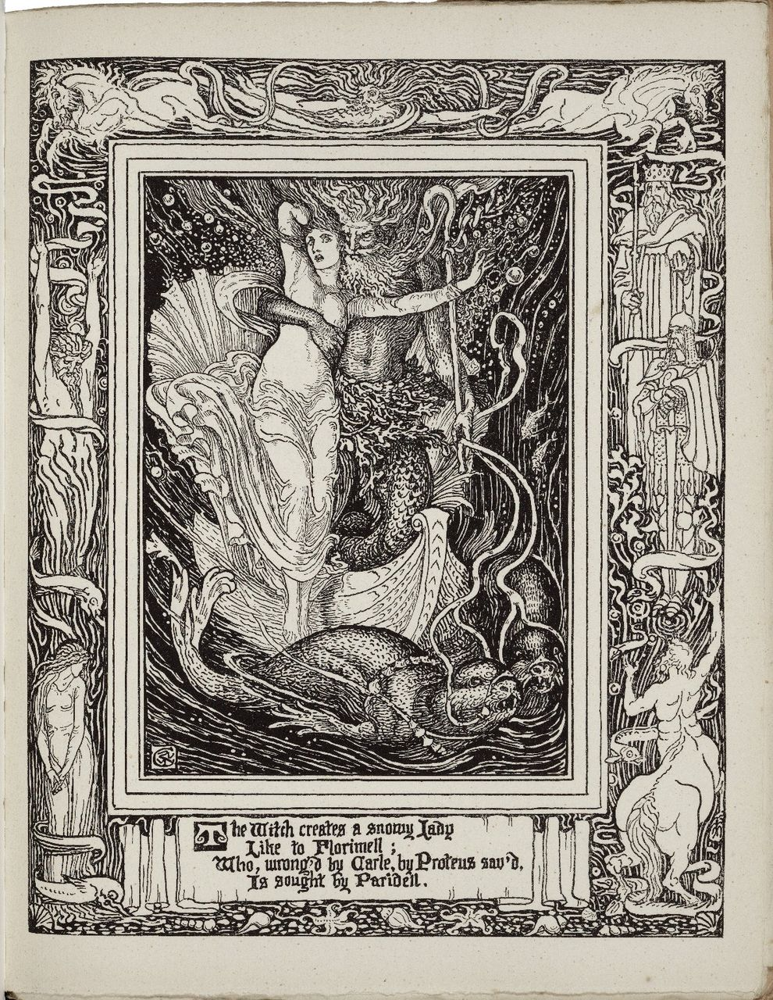
Florimell saved by ProteusWalter Crane, 1895–97 · from the George Allen edition
xxixBut sith that none of all her knights is nye,See how the heavens of voluntary grace,And sovereign favour towards chastity,Do succour send to her distressed case:So much high God doth innocence embrace.It fortuned, whilst thus she stiffly strove,And the wide sea importuned long spaceWith shrilling shrieks, Proteus abroad did rove,Along the foamy waves driving his finny drove.
xxxProteus is Shepherd of the seas of yore,And hath the charge of Neptunes mighty heard;An aged sire with head all frory hore,And sprinckled frost upon his dewy beard:Who when those pitiful outcries he heard,Through all the seas so ruefully resound,His charet swift in haste he thither steard,Which with a teem of scaly Phocas boundWas drawn upon the waves, that foamed him around.
xxxiAnd coming to that Fishers wand’ring bot,That went at will, withouten card or sail,He therein saw that irksome sight, which smoteDeep indignation and compassion frailInto his heart at once: straight did he hayleThe greedy villein from his hoped pray,Of which he now did very little fail,And with his staff, that drives his Heard astray,Him bet so sore, that life and sense did much dismay.
xxxiiThe whiles the piteous Lady up did rise,Ruffled and foully raid with filthy soil,And blubber’d face with tears of her fair eyes:Her heart nigh broken was with weary toil,To save her self from that outrageous spoil,But when she looked up, to weet, what wightHad her from so infamous fact assoyld,For shame, but more for fear of his grim sight,Down in her lap she hid her face, and loudly shright.
xxxiiiHer self not saved yet from danger dreadShe thought, but chang’d from one to other fear;Like as a fearful Partridge, that is fledFrom the sharpe Hauke, which her attached near,And false to ground, to seek for succour there,Whereas the hungry Spaniels she does spy,With greedy jaws her ready for to tear;In such distress and sad perplexityWas Florimell, when Proteus she did see thereby.
xxxivBut he endevoured with speeches mildHer to recomfort, and accourage bold,Bidding her fear no more her foeman vild,Nor doubt himself; and who he was, her told.Yet all that could not from affright her hold,Ne to recomfort her at all prevayld;For her faint heart was with the frozen coldBenumb’d so inly, that her wits nigh fayld,And all her senses with abashment quite were quayl’d.
xxxvHer up betwixt his rugged hands he rear’d,And with his frory lips full softly kist,Whiles the cold ysickles from his rough beard,Dropped adown upon her ivory breast:Yet he himself so busily addrest,That her out of astonishment he wrought,And out of that same fishers filthy nestRemoving her, into his charet brought,And there with many gentle termes her fair besought.
xxxviBut that old leachour, which with bold assaultThat beauty durst presume to violate,He cast to punish for his hainous fault;Then toke he him yet trembling sith of late,And tyde behind his charet, to aggrateThe virgin, whom he had abusde so sore:So drag’d him through the waves in scornful state,And after cast him up, upon the shore;But Florimell with him unto his bower he bore.
xxxviiHis bower is in the bottom of the main,Under a mighty rock, gainst which do raveThe roaring billows in their proud disdain,That with the angry working of the wave,Therein is eaten out an hollow cave,That seems rough Masons hand with engines keenHad long while laboured it to engrave:There was his won, ne living wight was seen,Save one old Nymph, hight Panope to keep it clean.
xxxviiiThither he brought the sori Florimell,And entertained her the best he mightAnd Panope her entertain’d eke well,As an immortal mote a mortal wight,To winn her liking unto his delight:With flattering words he sweetly wooed her,And offered fair gifts t’allure her sight,But she both offers and the offererDespysde, and all the fawning of the flatterer.
xxxixDaily he tempted her with this or that,And never suffer’d her to be at rest:But evermore she him refused flat,And all his fained kindness did detest,So firmly she had sealed up her breast.Sometimes he boasted, that a God he hight:But she a mortal creature loved best:Then he would make himself a mortal wight;But then she said she lou’d none, but a Faerie knight.
xlThen like a Faerie knight himself he drest;For every shape on him he could endew:Then like a king he was to her express’d,And offer’d kingdoms unto her in view,To be his Leman and his Lady trow:But when all this he nothing saw prevail,With harder means he cast her to subdue,And with sharpe threats her often did assail,So thinking for to make her stubborn courage quail.
xliTo dreadful shapes he did himself transform,Now like a Giant, now like to a fiend,Then like a Centaur, then like to a storm,Raging within the waves: thereby he wendHer will to win unto his wished end.But when with fear, nor favour, nor with allHe else could do, he saw himself esteem’d,Down in a Dungeon deep he let her fall,And threaten’d there to make her his eternal thrall.
xliiEternal thraldom was to her more lief,Then loss of chastity, or change of love:Die had she rather in tormenting grief,Then any should of falseness her reprove,Or looseness, that she lightly did remove.Most virtuous virgin, glory be thy meed,And crown of heavenly praise with Saints above,Where most sweet hims of this thy famous deedAre still amongst them song, that far my rimes exceed.
xliiiFit song of Angels caroled to be;But yet what so my feeble Muse can frame,Shall be t’aduance thy goodly chastity,And to enroll thy memorable name,In th’heart of every honourable Dame,That they thy virtuous deeds may imitate,And be partakers of thy endless fame.It irks me, leave thee in this woeful state,To tell of Satyrane, where I him left of late.
xlivWho having ended with that Squire of DamesA long discourse of his adventures vain,The which himself, then Ladies more defames,And finding not th’Hyena to be slain,With that same Squire, returned back againTo his first way. And as they forward went,They spied a knight fair pricking on the plain,As if he were on some adventure bent,And in his port appeared manly hardiment.
xlvSir Satyrane him towards did address,To weet, what wight he was, and what his quest:And coming nigh, eftsoons he gan to geeseBoth by the burning heart, which on his breastHe bare, and by the colours in his crest,That Paridell it was. Tho to him yode,And him saluting, as beseemed best,Gan first inquire of tidings fare abroad;And afterwards, on what adventure now he rode.
xlviWho thereto answering, said; The tidings bad,Which now in Faerie court all men do tell,Which turned hath great mirth, to mourning sad,Is the late ruin of proud Marinell,And sudden parture of fair Florimell,To find him forth: and after her are goneAll the brave knights, that doen in arms excel,To savegard her, ywandred all alone;Amongst the rest my lot (unworthy) is to be one.
xlviiAh gentle knight (said then Sir Satyrane)Thy labour all is lost, I greatly dread,That hast a thankless service on thee ta’ne,And offrest sacrifice unto the dead:For dead, I surely doubt, thou maist areadHenceforth for ever Florimell to be,That all the noble knights of Maydenhead,Which her ador’d, may sore repent with me,And all fair Ladies may for ever sori be.
xlviiiWhich words when Paridell had heard, his hueGan greatly change, and seem’d dismay’d to be;Then said, Fair Sir, how may I ween it trow,That ye do tell in such uncertainty?Or speak ye of report, or did ye seeJust cause of dread, that makes ye doubt so sore?For perdie else how mote it ever be,That ever hand should dare for to engoreHer noble blood? the heavens such cruelty abhor.
xlixThese eyes did see, that they will ever rewT’have seen, (quoth he) when as a monstrous beastThe Palfrey, whereon she did travel, slew,And of his bowels made his bloody feast:Which speaking token sheweth at the leastHer certain loss, if not her sure decay:Besides, that more suspition encreas’d,I found her golden girdle cast astray,Distaynd with durt and blood, as relique of the pray.
lAye me, (said Paridell) the signs be sad,And but God turn the same to good soothsay,That Ladies safety is sore to be drad:Yet will I not forsake my forward way,Till trial do more certain truth bewray.Fair Sir (quoth he) well may it you succeed,Ne long shall Satyrane behind you stay,But to the rest, which in this Quest proceedMy labour add, and be partaker of their speed.
liYe noble knights (said then the Squire of Dames)Well may ye speed in so praiseworthy pain:But sith the Sun now gins to slake his beams,In dewy vapours of the western main,And lose the teme out of his weary wain,Mote not mislike you also to abateYour zealous hast, till morrow next againBoth light of heaven, and strength of men relate:Which if ye please, to yonder castle turn your gate.
liiThat counsel pleased well; so all yfereForth marched to a Castle them before,Where soon arriving, they restrained wereOf ready entrance, which ought evermoreTo errant knights be commune: wondrous soreThereat displeas’d they were, till that young SquireGan them inform the cause, why that same doorWas shut to all, which lodging did desire:The which to let you weet, will further time require.
Booke III · Chastitie
Canto IX
❧
Malbecco will no strange knights host, For peevish gealosie: Paridell jousts with Britomart: Both show their ancestry.
❧
iedoubted knights, and honorable Dames,To whom I level all my labours end,Right sore I fear, least with unworthy blamesThis odious argument my rimes should shend,Or ought your goodly patience offend,Whiles of a wanton Lady I do write,Which with her loose incontinence doth blendThe shining glory of your sovereign light,And knighthood foul defaced by a faithless knight.
iiBut never let th’ensample of the badOffend the good: for good by paragonOf evil, may more notably be rad,As white seems fairer, mach’d with black at one;Ne all are shamed by the fault of one:For lo in heaven, whereas all goodness is,Amongst the Angels, a whole legionOf wicked Sprights did fall from happy bliss;What wonder than, if one of women all did mis?
iiiThen listen Lordings, if ye list to weetThe cause, why Satyrane and ParidellMote not be entertaynd, as seemed meet,Into that Castle (as that Squire does tell.)Therein a cancer’d crabbed Carle does dwell,That has no skill of Court nor courtesy,Ne cares, what men say of him ill or well;For all his days he drowns in privity,Yet has full large to live, and spend at liberty.
ivBut all his mind is set on mucky pelf,To hoard up heaps of evil gotten mass,For which he others wrongs, and wrecks himself;Yet is he lincked to a lovely lass,Whose beauty doth her bounty far surpass,The which to him both far unequal years,And also far unlike conditions has;For she does joy to play amongst her pears,And to be free from hard restraint and gealous fears.
vBut he is old, and withered like hay,Unfit fair Ladies service to supply;The privy guilt whereof makes him alwaySuspect her truth, and keep continual spyUpon her with his other blincked eye;Ne suffreth he resort of living wightApproach to her, ne keep her company,But in close bower her mews from all mens sight,Depriv’d of kindly joy and natural delight.
viMalbecco he, and Hellenore she hight,Unfitly yok’d together in one teem,That is the cause, why never any knightIs suffer’d here to enter, but he seemSuch, as no doubt of him he need misdeem.Thereat Sir Satyrane gan smile, and say;Extremely mad the man I surely deem,That weens with watch and hard restraint to stayA womans will, which is dispos’d to go astray.
viiIn vain he fears that, which he cannot shone:For who wots not, that womans subtiltiesCan guilen Argus, when she list misdone?It is not iron bands, nor hundred eyes,Nor brazen walls, nor many wakeful spies,That can withhold her wilful wand’ring feet;But fast good will with gentle curtesies,And timely service to her pleasures meetMay her perhaps contain, that else would algates fleet.
viiiThen is he not more mad (said Paridell)That hath himself unto such service sold,In doleful thraldom all his days to dwell?For sure a fool I do him firmly hold,That loves his fetters, though they were of gold.But why do we devise of others ill,Whiles thus we suffer this same dotard old,To keep us out, in scorn of his own will,And rather do not ransack all, and him self kill?
ixNay let us first (said Satyrane) entreatThe man by gentle means, to let us in,And afterwards affray with cruel threat,Ere that we to efforce it do begin:Then if all fail, we will by force it win,And eke reward the wretch for his mesprise,As may be worthy of his haynous sin.That counsel pleas’d: then Paridell did rise,And to the Castle gate approach’d in quiet wise.
xWhereat soft knocking, entrance he desyrd.The good man self, which then the Porter play’d,Him answered, that all were now retyrdUnto their rest, and all the keys conuaydUnto their maister, who in bed was laid,That none him durst awake out of his dreme;And therefore them of patience gently pray’d.Then Paridell began to change his theme,And threaten’d him with force and punishment extreme.
xiBut all in vain; for nought mote him relent,And now so long before the wicket fastThey waited, that the night was forward spent,And the fair welkin foully overcast,Gan blown up a bitter stormy blast,With shower and hayle so horrible and dread,That this fair many were compel’d at last,To fly for succour to a little shed,The which beside the gate for swine was ordered.
xiiIt fortuned, soon after they were gone,Another knight, whom tempest thither brought,Came to that Castle, and with earnest mon,Like as the rest, late entrance dear besought;But like so as the rest he pray’d for nought,For flatly he of entrance was refus’d,Sorely thereat he was displeas’d, and thoughtHow to avenge himself so sore abus’d,And evermore the Carle of courtesy accus’d.
xiiiBut to avoid th’intollerable stowre,He was compel’d to seek some refuge near,And to that shed, to shrowd him from the shower,He came, which full of guests he found whilere,So as he was not let to enter there:Whereat he gan to wex exceeding wroth,And swore, that he would lodge with them yfere,Or them dislodge, all were they lief or loth;And so defied them each, and so defied them both.
xivBoth were full loth to leave that needful tent,And both full loth in darkens to debate;Yet both full lief him lodging to have lent,And both full lief his boasting to abate;But chiefly Paridell his heart did grate,To hear him threaten so despightfully,As if he did a doge to kennel rate,That durst not bark; and rather had he dy,Then when he was defied, in coward corner li.
xvTho hastily remounting to his steed,He forth issue’d; like as a boistrous wind,Which in th’earthes hollow caves hath long bin hid,And shut up fast within her prisons blind,Makes the huge element against her kindTo move, and tremble as it were agast,Until that it an issue forth may find;Then forth it breaks, and with his furious blastConfounds both land and seas, and skies doth overcast.
xviTheir steel-head spears they strongly couch’d, and metTogether with impetuous rage and forse,That with the terror of their fierce affret,They rudely drove to ground both man and horse,That each awhile lay like a senseless corse.But Paridell sore brused with the blow,Could not arise, the counterchange to scorse,Till that young Squire him reared from below;Then drew he his bright sword, and gan about him throw.
xviiBut Satyrane forth stepping, did them stayAnd with fair treaty pacified their ire,Then when they were accorded from the fray,Against that Castles Lord they gan conspire,To heap on him dew vengeance for his hire.They been agreed, and to the gates they goeTo burn the same with unquenchable fire,And that uncurteous Carle their commune foeTo do foul death to die, or wrap in grievous woe.
xviiiMalbecco seeing them resolv’d in deedTo flame the gates, and hearing them to callFor fire in earnest, ran with fearful speed,And to them calling from the castle wall,Besought them humbly, him to bear with all,As ignorant of servants bad abuse,And slack attendance unto strangers call.The knights were willing all things to excuse,Though nought belev’d, and entrance late did not refuse.
xixThey been ybrought into a comely bower,And serv’d of all things that mote needful be;Yet secretly their host did on them lower,And welcomde more for fear, then charity;But they dissembled, what they did not see,And welcomed themselves. Each gan undightTheir garments wet, and weary armour free,To dry themselves by Vulcanes flaming light,And eke their lately bruzed parts to bring in plight.
xxAnd eke that stranger knight amongst the restWas for like need enforc’d to disarray:Tho whenas vailed was her lofty crest,Her golden locks, that were in tramels gayUpbounden, did themselves adown display,And raught unto her heels; like sunny beams,That in a cloud their light did long time stay,Their vapour vaded, show their golden gleams,And through the persant aire shoot forth their azure streams.
xxiShe also dofte her heavy haberieon,Which the fair feature of her limbs did hyde,And her well plighted frock, which she did wonTo tuck about her short, when she did ryde,She low let fall, that flow’d from her lanck sideDown to her foot, with carless modesty.Then of them all she plainly was espied,To be a woman wight, unwist to be,The fairest woman wight, that ever eye did see.
xxiiLike as Minerva, being late return’dFrom slaughter of the Giants conquered;Where proud Encelade, whose wide nosethrils burn’dWith breathed flames, like to a furnace red,Transfixed with the spear, down tombled deadFrom top of Hemus, by him heaped hye;Hath loos’d her helmet from her lofty head,And her Gorgonian shield gins to untieFrom her left arm, to rest in glorious victory.
xxiiiWhich whenas they beheld, they smitten wereWith great amazement of so wondrous sight,And each on other, and they all on herStood gazing, as if sudden great affrightHad them surprised. At last avizing right,Her goodly personage and glorious hue,Which they so much mistook, they toke delightIn their first error, and yet still anewWith wonder of her beauty fed their hungry view.
xxivYet note their hungry view be satisfied,But seeing still the more desir’d to see,And ever firmly fixed did abideIn contemplation of divinity:But most they meruaild at her chevalree,And noble prowess, which they had approved,That much they faynd to know, who she mote be;Yet none of all them her thereof amoved,Yet every one her likte, and every one her loved.
xxvAnd Paridell though partly discontentWith his late fall, and foul indignity,Yet was soon won his malice to relent,Through gracious regard of her fair eye,And knightly worth, which he too late did try,Yet tried did adore. Supper was dight;Then they Malbecco pray’d of courtesy,That of his Lady they might have the sight,And company at meat, to do them more delight.
xxviBut he to shift their curious request,Gan causen, why she could not come in place;Her crazed health, her late recourse to rest,And humid evening ill for sic folks case:But none of those excuses could take place;Ne would they eat, till she in presence came.She came in presence with right comely grace,And fairly them saluted, as became,And show’d her self in all a gentle courteous Dame.
xxviiThey sate to meat, and Satyrane his chanceWas her before, and Paridell beside;But he him self sate looking still askance,Gainst Britomart, and ever closely eideSir Satyrane, that glances might not glide:But his blind eye, that sided Paridell,All his demeasnure from his sight did hyde:On her fair face so did he feed his fill,And sent close messages of love to her at will.
xxviiiAnd ever and anon, when none was ware,With speaking lokes, that close embassage bore,He rov’d at her, and told his secret care:For all that art he learned had of yore.Ne was she ignorant of that lewd lore,But in his eye his meaning wisely red,And with the like him answer’d evermore:She sent at him one firry dart, whose headEmpoisned was with privy lust, and gealous dread.
xxixHe from that deadly throw made no defence,But to the wound his weak heart opened wide;The wicked engine through false influence,Past through his eyes, and secretly did glideInto his heart, which it did sorely gride.But nothing new to him was that same pain,Ne pain at all; for he so oft had triedThe power thereof, and lou’d so oft in vain,That thing of course he counted, love to entertain.
xxxThenceforth to her he sought to intimateHis inward grief, by means to him well known,Now Bacchus fruit out of the silver plateHe on the table dasht, as overthrown,Or of the fruitful liquor overflown,And by the dancing bubbles did divine,Or therein write to let his love be shown;Which well she red out of the learned line,A sacrament prophane in mistery of wine.
xxxiAnd when so of his hand the pledge she raught,The guilty cup she fained to mistake,And in her lap did shed her idle draught,Shewing desire her inward flame to slake:By such close signs they secret way did makeUnto their wills, and one eyes watch escape;Two eyes him needeth, for to watch and wake,Who lovers will deceive. Thus was the ape,By their fair handling, put into Malbeccoes cape.
xxxiiNow when of meats and drinks they had their fill,Purpose was moved by that gentle Dame,Unto those knights adventurous, to tellOf deeds of arms, which unto them became,And every one his kindred, and his name.Then Paridell, in whom a kindly prideOf gracious speech, and skill his words to frameAbounded, being glad of so fit tydeHim to commend to her, thus spake, of all well eide.
xxxiiiTroy, that art now nought, but an idle name,And in thine ashes buried low dost lie,Though whilom far much greater than thy fame,Before that angry Gods, and cruel skyeUpon thee heapt a direful destiny,What boots it boast thy glorious descent,And fetch from heaven thy great Genealogy,Sith all thy worthy praises being blent,Their of-spring hath embac’d, and later glory shent.
xxxivMost famous Worthy of the world, by whomThat war was kindled, which did Troy inflame,And stately towers of Ilion whilomBrought unto baleful ruin, was by nameSir Paris far renowmd through noble fame,Who through great prowess and bold hardiness,From Lacedæmon fetch’d the fairest Dame,That ever Greece did boast, or knight possess,Whom Venus to him gave for meed of worthiness.
xxxvFair Helene, flower of beauty excellent,And garland of the mighty Conquerors,That maddest many Ladies dear lamentThe heavy loss of their brave Paramours,Which they far off beheld from Troian tours,And saw the fields of fair Scamander strownWith carcass of noble warriors,Whose fruitless lives were under furrow sown,And Xanthus sandy banks with blood all overflown.
xxxviFrom him my linage I derive aright,Who long before the ten years siege of Troy,Whiles yet on Ida he a shepherd hight,On fair Oenone got a lovely boy,Whom for remembrance of her passed joy,She of his Father Parius did name;Who, after Greekes did Priams realm destroy,Gathred the Troian reliques sav’d from flame,And with them sailing thence, to th’Isle of Paros came.
xxxviiThat was by him call'd Paros, which beforeHight Nausa, there he many years did rain,And built Nausicle by the Pontick shore,The which he dying left next in remainTo Paridas his son.From whom I Paridell by kin descend;But for fair Ladies love, and glories gain,My native soil have left, my days to spendIn sewing deeds of arms, my lives and labours end.
xxxviiiWhenas the noble Britomart heard tellOf Troian wars, and Priams City sack’d,The rueful story of Sir Paridell,She was empassiond at that piteous act,With zelous envy of Greeks cruel fact,Against that nation, from whose race of oldShe heard, that she was lineally extract:For noble Britons sprong from Troians bold,And Troynovant was built of old Troyes ashes cold.
xxxixThen sighing soft awhile, at last she thus:O lamentable fall of famous town,Which raignd so many years victorious,And of all Asie bore the sovereign crown,In one sad night consum’d, and thrown down:What stony heart, that hears thy hapless fate,Is not empierst with deep compassiowne,And makes ensample of mans wretched state,That flours so fresh at morne, and fades at evening late?
xlBehold, Sir, how your pitiful complaintHath found another partner of your payne:For nothing may impress so dear constraint,As countries cause, and commune foes disdain.But if it should not grieve you, back againTo turn your course, I would to hear desire,What to Aeneas fell; sith that men sainHe was not in the Cities woeful fireConsum’d, but did him self to safety retire.
xliAnchyses son begot of Venus fair,(Said he,) out of the flames for safegard fled,And with a remnant did to sea repair,Where he through fatal error long was ledFull many years, and weetless wanderedFrom shore to shore, amongst the Lybicke sands,Ere rest he found. Much there he suffered,And many perils past in forreine lands,To save his people sad from victors vengeful hands.
xliiAt last in Latium he did arrive,Where he with cruel war was entertain’dOf th’inland folk, which sought him back to drive,Till he with old Latinus was constrain’d,To contract wedlock: (so the fates ordain’d.)Wedlock contract in blood, and eke in bloodAccomplished, that many dear complain’d:The rival slain, the victor through the floodEscaped hardly, hardly prais’d his wedlock good.
xliiiYet after all, he victor did survive,And with Latinus did the kingdom part.But after, when both nations gan to strive,Into their names the title to conuart,His son Iülus did from thence depart,With all the warlike youth of Troians blood,And in long Alba plac’d his throne apart,Where fair it florished, and long time stood,Till Romulus renewing it, to Rome remoud.
xlivThere there (said Britomart) a fresh appear’dThe glory of the later world to spring,And Troy again out of her dust was rear’d,To sit in second seat of sovereign king,Of all the world under her governing.But a third kingdom yet is to arise,Out of the Troians scattered of-spring,That in all glory and great enterprise,Both first and second Troy shall dare to equalise.
xlvIt Troynovant is hight, that with the wavesOf wealthy Thamis washed is along,Upon whose stubborn neck, whereat he ravesWith roaring rage, and sore him self does throng,That all men fear to tempt his billows strong,She fasten’d hath her foot, which stands so hi,That it a wonder of the world is songIn forreine landes, and all which passen by,Beholding it from far, do think it threats the skye.
xlviThe Troian Brute did first that City found,And Hygate made the mere thereof by West,And Overt gate by North: that is the boundToward the land; two rivers bound the rest.So huge a scope at first him seemed best,To be the compass of his kingdoms seat:So huge a mind could not in lesser rest,Ne in small mears contain his glory great,That Albion had conquered first by warlike feat.
xlviiAh fairest Lady knight, (said Paridell)Pardon I pray my heedless oversight,Who had forgot, that whilom I heard tellFrom aged Mnemon; for my wits been light.Indeed he said (if I remember right,)That of the antique Troian stock, there grewAnother plant, that raught to wondrous hight,And far abroad his mighty branches threw,Into the utmost Angle of the world he knew.
xlviiiFor that same Brute, whom much he did aduaunceIn all his speech, was Syluius his son,Whom having slain, through luckless arrows glanceHe fled for fear of that he had misdone,Or else for shame, so foul reproach to shone,And with him led to sea an youthly train,Where weary wand’ring they long time did won,And many fortunes prou’d in th’Ocean main,And great adventures found, that now were long to sain.
xlixAt last by fatal course they driven wereInto an Island spacious and broad,The furthest North, that did to them appear:Which after rest they seeking far abroad,Found it the fittest soil for their abode,Fruitful of all things fit for living food,But wholly wast, and void of peoples trode,Save an huge nation of the Gents brood,That fed on living flesh, and druncke mens vital blood.
lWhom he through weary wars and labours long,Subdewd with loss of many Britons bold:In which the great Goemagot of strongCorineus, and Coulin of Debon oldWere overthrown, and laid on th’earth full cold,Which quaked under their so hideous mass,A famous history to be enrol’dIn everlasting moniments of brass,That all the antique Worthies merits far did pass.
liHis work great Troynovant, his work is ekeFair Lincolne, both renowned far away,That who from East to West will endlong seek,Cannot two fairer Cities find this day,Except Cleopolis: so heard I sayOld Mnemon. Therefore Sir, I greet you wellYour country kin, and you entirely prayOf pardon for the strife, which late befellBetwixt us both unknown. So ended Paridell.
liiBut all the while, that he these speeches spent,Upon his lips hung fair Dame Hellenore,With vigilant regard, and dew attent,Fashioning worlds of fancies evermoreIn her frail wit, that now her quite forlore:The whiles unwares away her wond’ring eye,And greedy ears her weak heart from her bore:Which he perceiving, ever privilyIn speaking, many false belgardes at her let fly.
liiiSo long these knights discoursed diversly,Of strange affaires, and noble hardiment,Which they had past with mickle jeopardy,That now the humid night was farforth spent,And heavenly lamps were halfendeale ybrent:Which th’old man seeing well, who too long thoughtEvery discourse and every argument,Which by the hours he measured, besoughtThem go to rest. So all unto their bowers were brought.
Booke III · Chastitie
Canto X
❧
Paridell rapeth Hellenore: Malbecco her pursues: Finds amongst Satyrs, whence with him To turn she doth refuse.
❧
ihe morrow next, so soon as Phœbus LampBewrayed had the world with early light,And fresh Aurora had the shady dampOut of the goodly heaven amoved quite,Fair Britomart and that same Faerie knightUprose, forth on their journey for to wend:But Paridell complain’d, that his late fightWith Britomart, so sore did him offend,That ryde he could not, till his hurts he did amend.
iiSo forth they far’d, but he behind them stay’d,Maulgre his host, who grudged grievously,To house a guest, that would be needs obayd,And of his own him left not liberty:Might wanting measure moveth surquedry.Two things he feared, but the third was death;That fierce youngmans unruly maistery;His money, which he lou’d as living breath;And his fair wife, whom honest long he kept uneath.
iiiBut patience perforce he must aby,What fortune and his fate on him will lay,Fond is the fear, that finds no remedy;Yet warily he watcheth every way,By which he feareth evil happen may:So th’evill thinks by watching to prevent;Ne doth he suffer her, nor night, nor day,Out of his sight her self once to absent.So doth he punish her and eke himself torment.
ivBut Paridell kept better watch, then he,A fit occasion for his turn to find:False love, why do men say, thou canst not see,And in their foolish fancy feign thee blind,That with thy charms the sharpest sight doest bind,And to thy will abuse? Thou walkest free,And seest every secret of the mind;Thou seest all, yet none at all sees thee;All that is by the working of thy Deity.
vSo perfect in that art was Paridell,That he Malbeccoes halfen eye did wyle,His halfen eye he wiled wondrous well,And Hellenors both eyes did eke beguile,Both eyes and heart at once, during the whileThat he there soiourned his wounds to heal;That Cupid self it seeing, close did smile,To weet how he her love away did steale,And bad, that none their joyous treason should reveal.
viThe learned lover lost no time nor tyde,That least avantage mote to him afford,Yet bore so fair a sail, that none espiedHis secret drift, till he her laid abord.When so in open place, and commune bord,He fortun’d her to meet, with commune speechHe courted her, yet baited every word,That his ungentle host n’ote him appeachOf vile ungentleness, or hospitages breach.
viiBut when apart (if ever her apart)He found, then his false engins fast he plied,And all the sleights unbosom’d in his heart;He sigh’d, he sob’d, he swoon’d, he perdy died,And cast himself on ground her fast beside:Tho when again he him bethought to live,He wept, and wayld, and false laments belied,Saying, but if she Mercy would him giveThat he mote algates dye, yet did his death forgive.
viiiAnd otherwhiles with amorous delights,And pleasing toys he would her entertain,Now singing sweetly, to surprise her sprights,Now making lays of love and lovers pain,Bransles, Ballads, virelays, and verses vain;Oft purposes, oft riddles he devysd,And thousands like, which flowed in his braine,With which he fed her fancy, and entysdTo take to his new love, and leave her old despysd.
ixAnd every where he might, and every whileHe did her service dewtifull, and sewedAt hand with humble pride, and pleasing guile,So closely yet, that none but she it vewed,Who well perceived all, and all indewed.Thus finely did he his false nets dispread,With which he many weak hearts had subdewedOf yore, and many had ylike misled:What wonder than, if she were likewise carried?
xNo fort so fensible, no walls so strong,But that continual battery will rive,Or daily siege through dispuruayance long,And lack of reskewes will to parley drive;And Piece, that unto parley ear will give,Will shortly yield it self, and will be madeThe vassal of the victors will bylive:That stratagem had oftentimes assay’dThis crafty Paramour, and now it plain display’d.
xiFor through his trains he her intrapped hath,That she her love and heart hath wholly soldTo him, without regard of gain, or scathe,Or care of credit, or of husband old,Whom she hath vow’d to dub a fair Cucquold.Nought wants but time and place, which shortly sheDevised hath, and to her lover told.It pleased well. So well they both agree;So ready rype to ill, ill wemens counsels be.
xiiDark was the Evening, fit for lovers stealth,When chanc’d Malbecco busy be elsewhere,She to his closet went, where all his wealthLay hid: thereof she countless sums did rear,The which she meant away with her to bear;The rest she fyr’d for sport, or for despite;As Hellene, when she saw aloft appearThe Troiane flames, and reach to heavens hightDid clap her hands, and joyed at that doleful sight.
xiiiThis second Hellene, fair Dame Hellenore,The whiles her husband ran with sori haste,To quench the flames, which she had tyn’d before,Laught at his foolish labour spent in waste;And ran into her lovers arms right fast;Where straight embraced, she to him did cry,And call aloud for help, ere help were past;For lo that Guest would bear her forcibly,And meant to ravish her, that rather had to dy.
xivThe wretched man hearing her call for aid,And ready seeing him with her to fly,In his disquiet mind was much dismay’d:But when again he backward cast his eye,And saw the wicked fire so furiouslyConsume his heart, and scorch his Idols face,He was therewith distressed diversly,Ne wist he how to turn, nor to what place;Was never wretched man in such a woeful case.
xvAy when to him she cried, to her he turn’d,And left the fire; love money overcame:But when he marked, how his money burn’d,He left his wife; money did love disclame:Both was he loth to loose his loved Dame,And loth to leave his liefest pelf behind,Yet sith he n’ote save both, he sav’d that same,Which was the dearest to his donghill mind,The God of his desire, the joy of misers blind.
xviThus whilst all things in troublous uproar were,And all men busy to suppress the flame,The loving couple need no rescue fear,But leasure had, and liberty to frameTheir purpost flight, free from all mens reclame;And Night, the patroness of love-stealth fair,Gave them safe conduct, till to end they came:So been they gone yfere, a wanton pairOf lovers loosely knit, where list them to repair.
xviiSoon as the cruel flames yslaked were,Malbecco seeing, how his loss did lie,Out of the flames, which he had quench’d whilereInto huge waves of grief and gealosyeFull deep emplonged was, and drowned nye,Twixt inward doole and felonous despite;He rav’d, he wept, he stampt, he low’d did cry,And all the passions, that in man may light,Did him at once oppress, and vex his caitiff spright.
xviiiLong thus he chaw’d the cud of inward grief,And did consume his gall with anguish sore,Still when he mused on his late mischief,Then still the smart thereof increased more,And seem’d more grievous, then it was before:At last when sorrow he saw booted nought,Ne grief might not his love to him restore,He gan devise, how her he rescue mought,Ten thousand ways he cast in his confused thought.
xixAt last resolving, like a pilgrim pore,To search her forth, where so she might be fond,And bearing with him treasure in close store,The rest he leaves in ground: So takes in hondTo seek her endlong, both by sea and lond.Long he her sought, he sought her fare and near,And every where that he mote understond,Of knights and ladies any meetings were,And of eachone he met, he tidings did inquere.
xxBut all in vain, his woman was too wise,Ever to come into his cloche again,And he too simple ever to surpriseThe jolly Paridell, for all his pain.One day, as he forpassed by the plainWith weary pace, he fare away espiedA couple, seeming well to be his twain,Which hoved close under a forrest side,As if they lay in wait, or else themselves did hide.
xxiWell weened he, that those the same mote be,And as he better did their shape avize,Him seemed more their manner did agree;For th’one was armed all in warlike wiz,Whom, to be Paridell he did devise;And th’other all yclad in garments light,Discolour’d like to womanish disguise,He did resemble to his Lady bright;And ever his faint heart much earned at the sight.
xxiiAnd ever fain he towards them would goe,But yet durst not for dread approchen nie,But stood aloof, unweeting what to do;Till that prick’d forth with loves extremity,That is the father of foul gealosy,He closely nearer crept, the truth to weet:But, as he nigher drew, he easilyMight scerne, that it was not his sweetest sweet,Ne yet her Belamour, the partner of his sheet.
xxiiiBut it was scornful Braggadocchio,That with his servant Trompart hover’d there,Sith late he fled from his too earnest foe:Whom such when as Malbecco spied clere,He turned back, and would have fled arere;Till Trompart ronning hastily, him did stay,And bad before his sovereign Lord aper:That was him loth, yet durst he not gainesay,And coming him before, low louted on the lay.
xxivThe Boaster at him sternly bent his brow,As if he could have killdee him with his loke,That to the ground him meekly made to bow,And awful terror deep into him stroke,That every member of his body quooke.Said he, Thou man of nought, what doest thou here,Unfitly furnisht with thy bag and book,Where I expected one with shield and spere,To prove some deeds of arms upon an equal pere.
xxvThe wretched man at his imperious speech,Was all abasht, and low prostrating, said;Good Sir, let not my rudeness be no breachUnto your patience, ne be ill ypaid;For I unwares this way by fortune straid,A silly Pilgrim driven to distress,That seek a Lady, There he sudden staid,And did the rest with grievous sighs suppress,While tears stood in his eyes, few drops of bitterness.
xxviWhat Lady, man? (said Trompart) take good heart,And tell thy grief, if any hidden lye;Was never better time to show thy smart,Then now, that noble succour is thee by,That is the whole worlds commune remedy.That cheareful word his weak heart much did chere,And with vain hope his spirits faint supply,That bold he said; O most redoubted Pere,Vouchsafe with mild regard a wretches case to hear.
xxviiThen sighing sore, It is not long (said he)Sith I enioyd the gentlest Dame alive;Of whom a knight, no knight at all perdy,But shame of all, that do for honour strive,By treacherous deceipt did me deprive;Through open outrage he her bore away,And with foul force unto his will did drive,Which all good knights, that arms do bear this day,Are bound for to revenge, and punish if they may.
xxviiiAnd you most noble Lord, that can and dareRedress the wrong of miserable wight,Cannot employ your most victorious spearIn better quarrel, then defence of right,And for a Lady gainst a faithless knight;So shall your glory be aduaunced much,And all fair Ladies magnify your might,And eke my self, albe I simple such,Your worthy pain shall well reward with guerdon rich.
xxixWith that out of his bouget forth he drewGreat store of treasure, therewith him to tempt;But he on it look’d scornefully askew,As much disdeigning to be so misdempt,Or a war-monger to be basely nempt;And said; Thy offers base I greatly loth,And eke thy words uncourteous and unkempt;I tread in dust thee and thy money both,That, were it not for shame, So turned from him wroth.
xxxBut Trompart, that his maisters humor knew,In lofty lokes to hide an humble mind,Was inly tickled with that golden view,And in his ear him rounded close behind:Yet stopt he not, but lay still in the wind,Waiting aduauntage on the pray to seas;Till Trompart lowly to the ground inclin’d,Besought him his great courage to appease,And pardon simple man, that rash did him displease.
xxxiBigg looking like a doughty Doucepere,At last he thus; Thou clod of vilest clay,I pardon yield, and with thy rudeness bear;But weet henceforth, that all that golden pray,And all that else the vain world vaunten may,I loath as dong, ne deem my dew reward:Fame is my meed, and glory virtues pray.But minds of mortal men are muchel mardy,And mov’d amiss with massy mucks unmeet regard.
xxxiiAnd more, I grant to thy great miseryGracious respect, thy wife shall back be sent,And that vile knight, who ever that he be,Which hath thy Lady reft, and knighthood shent,By Sanglamort my sword, whose deadly dentThe blood hath of so many thousands shed,I swear, ere long shall dearly it repent;Ne he twixt heaven and earth shall hide his head,But soon he shall be found, and shortly doen be dead.
xxxiiiThe foolish man thereat woxe wondrous blithe,As if the word so spoken, were half donne,And humbly thanked him a thousand sith,That had from death to life him newly won.Tho forth the Boaster marching, brave begoneHis stolen steed to thunder furiously,As if he heaven and hell would overronne,And all the world confound with cruelty,That much Malbecco joyed in his jollity.
xxxivThus long they three together traveiled,Through many a wood, and many an uncouth way,To seek his wife, that was fare wandered:But those two sought nought, but the present pray,To weet the treasure, which he did bewray,On which their eyes and hearts were wholly set,With purpose, how they might it best betray;For sith the hour, that first he did them letThe same behold, therewith their keen desires were whet.
xxxvIt fortuned as they together far’d,They spied, where Paridell came pricking fastUpon the plain, the which himself prepar’dTo joust with that brave stranger knight a cast,As on adventure by the way he past:Alone he rode without his Paragon;For having filch’d her bels, her up he castTo the wide world, and let her fly alone,He nould be clog’d. So had he served many one.
xxxviThe gentle Lady, loose at randon left,The green-wood long did walk, and wander wideAt wild adventure, like a forlorn weft,Till on a day the Satyres her espiedStraying alone withouten groom or guide;Her up they toke, and with them home her led,With them as housewife ever to abide,To milk their goats, and make them cheese and bred,And every one as commune good her handeled.
xxxviiThat shortly she Malbecco has forgot,And eke Sir Paridell, all were he dear;Who from her went to seek another lot,And now by fortune was arrived here,Where those two guilers with Malbecco were:Soon as the oldman saw Sir Paridell,He fainted, and was almost dead with fear,Ne word he had to speak, his grief to tell,But to him louted low, and greeted goodly well.
xxxviiiAnd after asked him for Hellenore,I take no keep of her (said Paridell)She wonneth in the forrest there before.So forth he rode, as his adventure fell;The whiles the Boaster from his lofty sellFaynd to alight, something amiss to mend;But the fresh Swain would not his leasure dwell,But went his way; whom when he passed ken’d,He up remounted light, and after fain’d to wend.
xxxixPerdy nay (said Malbecco) shall ye not:But let him pass as lightly, as he came:For little good of him is to be got,And mickle peril to be put to shame.But let us go to seek my dearest Dame,Whom he hath left in yonder forrest wild:For of her safety in great doubt I am,Least salvage beasts her person have despoyld:Then all the world is lost, and we in vain have toyld.
xlThey all agree, and forward them addrest:Ah but (said crafty Trompart) weet ye well,That yonder in that wasteful wildernessHuge monsters haunt, and many dangers dwell;Dragons, and Minotaures, and fiends of hell,And many wild woodmen, which robe and rendAll travellers; therefore advise ye well,Before ye enterprise that way to wend:One may his journey bring too soon to evil end.
xliMalbecco stopt in great astonishment,And with pale eyes fast fixed on the rest,Their counsel crav’d, in danger imminent.Said Trompart, You that are the most oppress’dWith burden of great treasure, I think bestHere for to stay in safety behind;My Lord and I will search the wide forrest.That counsel pleased not Malbeccoes mind;For he was much afraid, himself alone to find.
xliiThen is it best (said he) that ye do leaveYour treasure here in some security,Either fast closed in some hollow greave,Or buried in the ground from jeopardy,Till we return again in safety:As for us two, least doubt of us ye have,Hence fare away we will blindfolded lie,Ne privy be unto your treasures grave.It pleased: so he did. Then they march forward brave.
xliiiNow when amid the thickest woods they were,They heard a noys of many bagpipes shrill,And shrieking Hubbubs them approaching near,Which all the forrest did with horror fill:That dreadful sound the boasters heart did thrill,With such amazement, that in haste he fled,Ne ever looked back for good or ill,And after him eke fearful Trompart sped;The old man could not fly, but fell to ground half dead.
xlivYet afterwards close creeping, as he might,He in a bush did hide his fearful head,The jolly Satyres full of fresh delight,Came dancing forth, and with them nimbly ledFair Hellenore, with garlands all bespread,Whom their May-lady they had newly made:She proud of that new honour, which they red,And of their lovely fellowship full glade,Daunst lively, and her face did with a Lawrell shade.
xlvThe silly man that in the thicket laySaw all this goodly sport, and grieved sore,Yet durst he not against it do or say,But did his heart with bitter thoughts engore,To see th’unkindnesse of his Hellenore.All day they danced with great lustihead,And with their horned feet the green grass wore,The whiles their Goats upon the brooses fed,Till drooping Phœbus gan to hide his golden head.
xlviTho up they gan their merry pipes to truss,And all their goodly herds did gather round,But every Satyre first did give a bussTo Hellenore: so busses did abound.Now gan the humid vapour shed the groundWith perly dew, and th’Earthes gloomy shadeDid dim the brightness of the welkin round,That every bird and beast awarned made,To shrowd themselves, whiles sleep their senses did invade.
xlviiWhich when Malbecco saw, out of his bushUpon his hands and feet he crept full light,And like a Got amongst the Goats did rush,That through the help of his fair horns on hight,And misty damp of misconceiving night,And eke through likeness of his goatish beard,He did the better counterfeit aright:So home he march’d amongst the horned heard,That none of all the Satyres him espied or heard.
xlviiiAt night, when all they went to sleep, he view'd,Whereas his lovely wife amongst them lay,Embraced of a Satyre rough and rude,Who all the night did mind his joyous play:Nine times he heard him come aloft ere day,That all his heart with gealosie did swell;But yet that nights ensample did bewray,That not for nought his wife them loved so well,When one so oft a night did ring his matins bell.
xlixSo closely as he could, he to them crept,When weary of their sport to sleep they fell,And to his wife, that now full soundly slept,He whispered in her ear, and did her tell,That it was he, which by her side did dwell,And therefore pray’d her wake, to hear him plain.As one out of a dream not waked well,She turned her, and returned back again:Yet her for to awake he did the more constrain.
lAt last with irksome trouble she abraid;And then perceiving, that it was indeedHer old Malbecco, which did her upbraid,With looseness of her love, and loathly deed,She was astonisht with exceeding dreed,And would have wakt the Satyre by her side;But he her pray’d, for mercy, or for meed,To save his life, ne let him be descried,But hearken to his lore, and all his counsel hyde.
liTho gan he her perswade, to leave that lewdAnd loathsome life, of God and man abhor’d,And home return, where all should be renew’dWith perfect peace, and bands of fresh accord,And she receiv’d again to bed and bord,As if no trespass ever had been donne:But she it all refused at one word,And by no means would to his will be won,But chose amongst the jolly Satyres still to won.
liiHe wooed her, till day spring he espied;But all in vain: and then turn’d to the heard,Who butted him with horns on every side,And trode down in the durt, where his hore beardWas foully dight, and he of death afeard.Early before the heavens fairest lightOut of the ruddy East was fully rear’d,The herds out of their folds were loosed quite,And he amongst the rest crept forth in sori plight.
liiiSo soon as he the Prison door did pas,He ran as fast, as both his feet could bear,And never looked, who behind him was,Ne scarsely who before: like as a BearThat creeping close, amongst the hives to rearAn hony combe, the wakeful dogs espy,And him assailing, sore his carkasse tear,That hardly he with life away does fly,Ne stays, till safe himself he see from jeopardy.
livNe stay’d he, till he came unto the place,Where late his treasure he entombed had,Where when he found it not (for Trompart baseHad it purloined for his maister bad:)With extreme fury he became quite mad,And ran away, ran with himself away:That who so strangely had him seen bestad,With upstart hair, and staring eyes dismay,From Limbo lake him late escaped sure would say.
lvHigh over hills and over dales he fled,As if the wind him on his wings had borne,Ne banck nor bush could stay him, when he spedHis nimble feet, as treading still on thorn:Grief, and despite, and gealosie, and scornDid all the way him follow hard behind,And he himself himself loath’d so forlorn,So shamefully forlorn of womankind;That as a Snake, still lurked in his wounded mind.
lviStill fled he forward, looking backward still,Ne stay’d his flight, nor fearful agony,Till that he came unto a rocky hill,Over the sea, suspended dreadfully,That living creature it would terrify,To loke adown, or upward to the hight:From thence he threw himself dispiteously,All desperate of his fore-damned spright,That seem’d no help for him was left in living sight.
lviiBut through long anguish, and self-murd’ring thoughtHe was so wasted and forpined quite,That all his substance was consum’d to nought,And nothing left, but like an aery Spright,That on the rocks he fell so flit and light,That he thereby receiv’d no hurt at all,But chanced on a craggy cliff to light;Whence he with crooked claws so long did crawl,That at the last he found a cave with entrance small.
lviiiInto the same he creeps, and thenceforth thereResolv’d to build his baleful mansion,In drery darkens, and continual fearOf that rocks fall, which ever and anonThreats with huge ruin him to fall upon,That he dare never sleep, but that one eyeStill ope he keeps for that occasion;Ne ever rests he in tranquillity,The roaring billows beat his bower so boystrously.
lixNe ever is he wont on ought to feed,But toads and frogs, his pasture poisonous,Which in his cold complexion do breedA filthy blood, or humour rancorous,Matter of doubt and dread suspicious,That doth with cureless care consume the heart,Corrupts the stomacke with gall vicious,Crosscuts the liver with internal smart,And doth transfix the soul with deaths eternal dart.
lxYet can he never dye, but dying lives,And doth himself with sorrow new sustain,That death and life at once unto him gives.And painful pleasure turns to pleasing pain.There dwells he ever, miserable swain,Hatful both to him self, and every wight;Where he through privy grief, and horror vain,Is woxen so deform’d, that he has quiteForgot he was a man, and Gealosie is hight.
Booke III · Chastitie
Canto XI
❧
Britomart chaceth Olyphant, finds Scudamore distress’d: Assays the house of Busyrane, where Loves spoils are express’d.
❧
i Hatful hellish Snake, what fury furstBrought thee from baleful house of Proserpine,Where in her bosom she thee long had nurst,And foster’d up with bitter milk of tine,Foul Gealosie, that turnest love divineTo joyless dread, and mak’st the loving heartWith hatful thoughts to languish and to pine,And feed it self with self-consuming smart?Of all the passions in the mind thou vilest art.
iiO let him far be banished away,And in his stead let Love for ever dwell,Sweet Love, that doth his golden wings embayIn blessed Nectar, and pure Pleasures well,Untroubled of vile fear, or bitter fell.And ye fair Ladies, that your kingdoms makeIn th’harts of men, them govern wisely well,And of fair Britomart ensample take,That was as trow in love, as Turtle to her make.
iiiWho with Sir Satyrane, as erst ye red,Forth riding from Malbeccoes hostlesse hoos,Far off aspyde a young man, the which fledFrom an huge Gent, that with hideousAnd hatful outrage long him chased thus;It was that Ollyphant, the brother dearOf that Argante vile and vicious,From whom the Squire of Dames was reft whilere;This all as bad as she, and worse, if worse ought were.
ivFor as the sister did in feminineAnd filthy lust exceed all woman kind,So he surpassed his sex masculine,In beastly use that I did ever find;Whom when as Britomart beheld behindThe fearful boy so greedily pursue,She was emmoved in her noble mind,T’employ her puissance to his rescue,And pricked fiercely forward, where she him did view.
vNe was Sir Satyrane her far behind,But with like fierceness did ensue the chace:Whom when the Giant saw, he soon resindeHis former suit, and from them fled apace;They after both, and boldly bad him base,And each did strive the other to out-goe,But he them both outran a wondrous space,For he was long, and swift as any Roe,And now made better speed, t’escape his feared foe.
viIt was not Satyrane, whom he did fear,But Britomart the flower of chastity;For he the power of chaste hands might not bear,But always did their dread encounter fly:And now so fast his feet he did apply,That he has gotten to a forrest near,Where he is shrowded in security.The wood they enter, and search every where,They searched diversely, so both divided were.
viiFair Britomart so long him followed,That she at last came to a fountain shear,By which there lay a knight all wallowedUpon the grassy ground, and by him nearHis haberieon, his helmet, and his spear;A little off, his shield was rudely thrown,On which the winged boy in colours clearDepeincted was, full easy to be known,And he thereby, where ever it in field was shown.
viiiHis face upon the ground did groveling li,As if he had been slumb’ring in the shade,That the brave Maid would not for courtesy,Out of his quiet slumber him abrade,Nor seem too suddeinly him to invade:Still as she stood, she heard with grievous throbHim groan, as if his heart were pieces made,And with most painful pangs to sigh and sob,That pity did the Virgins heart of patience rob.
ixAt last forth breaking into bitter plaintsHe said; O sovereign Lord that sit’st on hye,And raignst in bliss amongst thy blessed Saints,How suffrest thou such shameful cruelty,So long unwreaked of thine enemy?Or hast thou, Lord, of good mens cause no heed?Or doth thy justice sleep, and silent li?What booteth then the good and righteous deed,If goodness find no grace, nor righteousness no meed?
xIf good find grace, and righteousness reward,Why then is Amoret in caitiff band,Sith that more bounteous creature never far’dOn foot, upon the face of living land?Or if that heavenly justice may withstandThe wrongful outrage of unrighteous men,Why then is Busirane with wicked handSuffer’d, these seven monethes day in secret denMy Lady and my love so cruelly to pen?
xiMy Lady and my love is cruelly pendIn doleful darkens from the view of day,Whilst deadly torments do her chaste breast rend,And the sharpe steel doth rive her heart in tway,All for she Scudamore will not denay.Yet thou vile man, vile Scudamore art sound,Ne canst her aide, ne canst her foe dismay;Unworthy wretch to tread upon the ground,For whom so fair a Lady feels so sore a wound.
xiiThere an huge heap of singults did oppressHis struggling soul, and swelling throbs empeachHis foltring tong with pangs of drerinesse,Choking the remnant of his plaintiff speech,As if his days were come to their last reach.Which when she heard, and saw the ghastly fit,Threat’ning into his life to make a breach,Both with great ruth and terror she was smit,Fearing least from her cage the weary soul would flit.
xiiiTho stooping down she him amoved light;Who therewith somewhat starting, up gan loke,And seeing him behind a stranger knight,Whereas no living creature he mistook,With great indignance he that sight forsook,And down again himself disdainefullyAbjecting, th’earth with his fair forhead stroke:Which the bold Virgin seeing, gan applyFit medcine to his grief, and spake thus courtesly.
xivAh gentle knight, whose deep conceived griefWell seems t’exceede the power of patience,Yet if that heavenly grace some good reliefYou send, submit you to high providence,And ever in your noble heart prepense,That all the sorrow in the world is less,Then virtues might, and values confidence,For who nill bide the burden of distress,Must not here think to live: for life is wretchedness.
xvTherefore, fair Sir, do comfort to you take,And freely read, what wicked felon soHath outrag’d you, and thrald your gentle make.Perhaps this hand may help to ease your woe,And wreak your sorrow on your cruel foe,At least it fair endevour will apply.Those feeling words so near the quick did goe,That up his head he reared easily,And leaning on his elbow, these few words let fly.
xviWhat boots it plain, that cannot be redress’d,And sow vain sorrow in a fruitless ear,Sith power of hand, nor skill of learned breast,Ne worldly price cannot redeem my dear,Out of her thraldom and continual fear?For he the tyrant, which her hath in wardBy strong enchantments and black Magic lear,Hath in a dungeon deep her close embar’d,And many dreadful fiends hath pointed to her gard.
xviiThere he tormenteth her most terribly,And day and night afflicts with mortal pain,Because to yield him love she doth deny,Once to me yold, not to be yold again:But yet by torture he would her constrainLove to conceive in her disdainful breast;Till so she do, she must in doole remain,Ne may by living means be thence relest:What boots it then to plain, that cannot be redress’d?
xviiiWith this sad hersall of his heavy stress,The warlike Damsel was empassiond sore,And said; Sir knight, your cause is nothing less,Then is your sorrow, certes if not more;For nothing so much pity doth implore,As gentle Ladies helpless misery.But yet, if please ye listen to my lore,I will with proof of last extremity,Deliver her fro thence, or with her for you dy.
xixAh gentlest knight alive, (said Scudamore)What huge heroic magnanimityDwells in thy bounteous breast? what couldst thou more,If she were thine, and thou as now am I?O spare thy happy days, and them applyTo better boot, but let me dye, that ought;More is more loss: one is enough to dy.Life is not lost, (said she) for which is boughtEndless renown, that more than death is to be sought.
xxThus she at length perswaded him to rise,And with her wend, to see what new successMote him befall upon new enterprise;His arms, which he had vowed to disprofess,She gathered up and did about him dress,And his forwandred steed unto him got:So forth they both yfere make their progress,And march not past the mountenaunce of a shot,Till they arriv’d, whereas their purpose they did plot.
xxiThere they dismounting, drew their weapons boldAnd stoutly came unto the Castle gate;Whereas no gate they found, them to withhold,Nor ward to wait at morne and evening late,But in the Porch, that did them sore amate,A flaming fire, immixt with smouldry smoke,And stinking Sulphur, that with grisly hateAnd dreadful horror did all entrance choke,Enforced them their forward footing to revoke.
xxiiGreatly thereat was Britomart dismay’d,Ne in that stown’d wist, how her self to bear;For danger vain it were, to have assay’dThat cruel element, which all things fear,Ne none can suffer to approchen near:And turning back to Scudamour, thus said;What monstrous enmity provoke we hear,Foolhardy as th’Earthes children, the which madeBattle against the Gods? so we a God invade.
xxiiiDanger without discretion to attempt,Inglorious and beastlike is: therefore Sir knight,Aread what course of you is safest dempt,And how we with our foe may come to fight.This is (quoth he) the dolorous despite,Which erst to you I playnd: for neither mayThis fire be quench’d by any wit or might,Ne yet by any means remov’d away,So mighty be th’enchauntments, which the same do stay.
xxivWhat is there else, but cease these fruitless pains,And leave me to my former languishing?Fair Amoret must dwell in wicked chaines,And Scudamore here dye with sorrowing.Perdy not so; (said she) for shameful thingIt were t’abandon noble chevisance,For show of peril, without venturing:Rather let try extremities of chance,Then enterprised prays for dread to disavaunce.
xxvTherewith resolv’d to prove her utmost might,Her ample shield she threw before her face,And her swords point directing forward right,Assayld the flame, the which eftsoons gave place,And did it self divide with equal space,That through she passed; as a thunder boltPerceth the yielding ayre, and doth displaceThe soring clouds into sad showers ymolt;So to her yold the flames, and did their force revolt.
xxviWhom whenas Scudamour saw past the fire,Safe and untoucht, he likewise gan assay,With greedy will, and envious desire,And bad the stubborn flames to yield him way:But cruel Mulciber would not obayHis threatful pride, but did the more augmentHis mighty rage, and with imperious swayHim forc’d (maulgre) his fierceness to relent,And back retire, all scorch’d and pitifully brent.
xxviiWith huge impatience he inly swelt,More for great sorrow, that he could not pas,Then for the burning torment, which he felt,That with fell woodness he effierced was,And wilfully him throwing on the graz,Did beat and boons his head and breast full sore;The whiles the Championess now enter’d hasThe utmost room, and past the formest door,The utmost room, abounding with all precious store.
xxviiiFor round about, the walls yclothed wereWith goodly arras of great majesty,Woven with gold and silk so close and near,That the rich metal lurked privily,As faining to be hid from envious eye;Yet here, and there, and every where unwaresIt show’d it self, and shone unwillingly;Like a discolour’d Snake, whose hidden snaresThrough the green graz his long bright burnisht back declares.
xxixAnd in those Tappets weren fashionedMany fair pourtraicts, and many a fair feat,And all of love, and all of lusty-head,As seemed by their semblant did entreat;And eke all Cupids wars they did repeat,And cruel battles, which he whilom foughtGainst all the Gods, to make his empire great;Besides the huge massacres, which he wroughtOn mighty kings and keasars, into thraldom brought.
xxxTherein was writ, how often thund’ring JoveHad felt the point of his heart-percing dart,And leaving heavens kingdom, here did roveIn strange disguise, to slake his scalding smart;Now like a Ram, fair Helle to peruart,Now like a Bull, Europa to withdraw:Ah, how the fearful Ladies tender heartDid lively seem to tremble, when she sawThe huge seas under her t’obay her seruaunts law.
xxxiSoon after that into a golden showerHim self he chang’d fair Danaë to view,And through the roof of her strong brazen towerDid rain into her lap an hony dew,The whiles her foolish gard, that little knewOf such deceipt, kept th’yron door fast bard,And watch’d, that none should enter nor issue;Vain was the watch, and bootless all the ward,Whenas the God to golden hue him self transfard.
xxxiiThen was he turn’d into a snowy Swan,To win fair Leda to his lovely trade:O wondrous skill, and sweet wit of the man,That her in daffadillies sleeping made,From scorching heat her dainty limbs to shade:Whiles the proud Bird ruffing his feathers wide,And brushing his fair breast, did her invade;She slept, yet twixt her eyelids closely spied,How towards her he rusht, and smiled at his pride.
xxxiiiThen show’d it, how the Thebane SemeleeDeceiv’d of gealous Juno, did requireTo see him in his sovereign maiestee,Arm’d with his thunderbolts and lightning fire,Whence dearly she with death bought her desire.But fair Alcmena better match did make,Joying his love in likeness more entire;Three nights in one, they say, that for her sakeHe then did put, her pleasures lenger to partake.
xxxivTwice was he seen in soaring Eagles shape,And with wide wings to beat the buxom ayre,Once, when he with Asterie did scape,Again, when as the Troiane boy so fairHe snatch’d from Ida hill, and with him bare:Wondrous delight it was, there to behold,How the rude Shepherds after him did stare,Trembling through fear, least down he fallen should,And often to him calling, to take surer hold.
xxxvIn Satyres shape Antiopa he snatch’d:And like a fire, when he Aegin’ assay’d:A shepherd, when Mnemosyne he catch’d:And like a Serpent to the Thracian maid.Whiles thus on earth great Jove these pageants play’d,The winged boy did thrust into his throne,And scoffing, thus unto his mother said,Lo now the heavens obey to me alone,And take me for their Jove, whiles Jove to earth is gone.
xxxviAnd thou, fair Phœbus, in thy colours brightWast there enwoven, and the sad distress,In which that boy thee plonged, for despite,That thou bewray’dst his mothers wantonness,When she with Mars was meint in joyfulness:For thy he thrild thee with a leaden dart,To love fair Daphne, which thee loved less:Less she thee lou’d, then was thy just desart,Yet was thy love her death, and her death was thy smart.
xxxviiSo lovedst thou the lusty Hyacinct,So lovedst thou the fair Coronis dear:Yet both are of thy hapless hand extinct,Yet both in flowers do live, and love thee bear,The one a Pans, the other a sweet brere:For grief whereof, ye mote have lively seenThe God himself rending his golden hear,And breaking quite his gyrlond ever green,With other signs of sorrow and impatient teen.
xxxviiiBoth for those two, and for his own dear son,The son of Climene he did repent,Who bold to guide the charet of the Sun,Himself in thousand pieces fondly rent,And all the world with flashing fiere brent;So like, that all the walls did seem to flame.Yet cruel Cupid, not herewith content,Forc’d him eftsoons to follow other game,And love a Shepherds daughter for his dearest Dame.
xxxixHe loved Isse for his dearest Dame,And for her sake her cattell fed a while,And for her sake a cowherd vile became,The servant of Admetus cowherd vile,Whiles that from heaven he suffered exile.Long were to tell each other lovely fit,Now like a Lyon, hunting after spoil,Now like a Stag, now like a faulcon flit:All which in that fair arras was most lively writ.
xlNext unto him was Neptune pictured,In his divine resemblance wondrous like:His face was rugged, and his hoary headDropped with brackish dew; his three-fork’d PikeHe sternly shook, and therewith fierce did strikeThe raging billows, that on every sideThey trembling stood, and made a long broad dyke,That his swift charet might have passage wide,Which four great Hippodames did draw in temewise tyde.
xliHis sea-horses did seem to snort amain,And from their nosethrilles blow the briny stream,That made the sparckling waves to smoke again,And flame with gold, but the white foamy cream,Did shine with silver, and shoot forth his beam.The God himself did pensive seem and sad,And hung adown his head, as he did dream:For privy love his breast empierced had,Ne ought but dear Bisaltis ay could make him glad.
xliiHe loved eke Iphimedia dear,And Aeolus fair daughter Arne hight,For whom he turn’d him self into a Stear,And fed on fodder, to beguile her sight.Also to win Deucalions daughter bright,He turn’d him self into a Dolphin fayre;And like a winged horse he toke his flight,To snaky-lock Medusa to repair,On whom he got fair Pegasus, that flitteth in the ayre.
xliiiNext Saturne was, (but who would ever ween,That sullen Saturne ever wend to love?Yet love is sullen, and Saturnlike seen,As he did for Erigone it prove,)That to a Centaure did him self transmove.So prov’d it eke that gracious God of wine,When for to compass Philliras hard love,He turn’d himself into a fruitful vine,And into her fair bosom made his grapes decline.
xlivLong were to tell the amorous assays,And gentle pangues, with which he maked meekThe mighty Mars, to learn his wanton plays:How oft for Venus, and how often eekFor many other Nymphs he sore did shriek,With womanish tears, and with unwarlike smarts,Privily moistening his horrid cheek.There was he painted full of burning darts,And many wide wounds launched through his inner parts.
xlvNe did he spare (so cruel was the Elf)His own dear mother, (ah why should he so?)Ne did he spare sometime to prick himself,That he might taste the sweet consuming woe,Which he had wrought to many others moe.But to declare the mournful Tragedies,And spoils, wherewith he all the ground did strow,More eath to number, with how many eyesHigh heaven beholds sad lovers nightly thieveries.
xlviKings Queens, Lords Ladies, Knights and Damsels gentWere heap’d together with the vulgar sort,And mingled with the raskall rabblement,Without respect of person or of port,To show Dan Cupids power and great effort:And round about a border was entrayld,Of broken bows and arrows shivered short,And a long bloody river through them rayl’d,So lively and so like, that living sense it fayld.
xlviiAnd at the upper end of that fair room,There was an Altar built of precious stone,Of passing value, and of great renown,On which there stood an Image all alone,Of massy gold, which with his own light shone;And wings it had with sundry colours dight,More sundry colours, then the proud PavoneBears in his boasted fan, or Iris bright,When her discolour’d bow she spreads through heaven bright.
xlviiiBlindfold he was, and in his cruel fistA mortal bow and arrows keen did hold,With which he shot at randon, when him list,Some headed with sad lead, some with pure gold;(Ah man beware, how thou those darts behold)A wounded Dragon under him did li,Whose hideous tail his left foot did enfold,And with a shaft was shot through either eye,That no man forth might draw, ne no man remedy.
xlixAnd underneath his feet was written thus,Unto the Victor of the Gods this bee:And all the people in that ample hoosDid to that image bow their humble knee,And oft committed foul Idolatry.That wondrous sight fair Britomart amazed,Ne seeing could her wonder satisfy,But evermore and more upon it gazed,The whiles the passing brightness her frail senses dazed.
lTho as she backward cast her busy eye,To search each secret of that goodly stead,Over the door thus written she did spyBe bold: she oft and oft it over-red,Yet could not find what sense it figured:But what so were therein or writ or ment,She was no whit thereby discouragedFrom prosecuting of her first intent,But forward with bold steps into the next rome went.
liMuch fairer, then the former, was that rome,And richlier by many parts array’d:For not with arras made in painful lome,But with pure gold it all was overlaid,Wrought with wild Anticks, which their follies play’d,In the rich metal, as they living were:A thousand monstrous forms therein were made,Such as false love doth oft upon him wear,For love in thousand monstrous forms doth oft appear.
liiAnd all about, the glist’ring walls were hungWith warlike spoils, and with victorious prays,Of mighty Conquerors and Captains strong,Which were whilom captived in their daysTo cruel love, and wrought their own decays:Their swerds and sperse were broke, and hauberques rent;And their proud garlands of triumphant bayesTrodden in dust with fury insolent,To show the victors might and merciless intent.
liiiThe warlike Maid beholding earnestlyThe goodly ordinance of this rich place,Did greatly wonder, ne could satisfyHer greedy eyes with gazing a long space,But more she meruaild that no footings trace,Nor wight appear’d, but wasteful emptiness,And solemn silence over all that place:Strange thing it seem’d, that none was to possessSo rich purveyance, ne them keep with carefulness.
livAnd as she look’d about, she did behold,How over that same door was likewise writ,Be bold, be bold, and every where Be bold,That much she mus’d, yet could not construe itBy any riddling skill, or commune wit.At last she spied at that romes upper end,Another iron door, on which was writ,Be not too bold; whereto though she did bendHer earnest mind, yet wist not what it might intend.
lvThus she there waited until eventide,Yet living creature none she saw appear:And now sad shadows gan the world to hyde,From mortal view, and wrap in darkens drear;Yet nould she d’off her weary arms, for fearOf secret danger, ne let sleep oppressHer heavy eyes with natures burdein dear,But drew her self aside in sickerness,And her welpointed weapons did about her dress.
Booke III · Chastitie
Canto XII
❧
The mask of Cupid, and th’enchaunted Chamber are display’d. Whence Britomart redeems fair Amoret, through charms decay’d.
❧
iho when as cheerless Night ycovered hadFair heaven with an universal cloud,That every wight dismay’d with darkness sad,In silence and in sleep themselves did shroud,She heard a shrilling Trompet sound aloud,Sign of nigh battle, or got victory;Nought therewith daunted was her courage proud,But rather stir’d to cruel enmity,Expecting ever, when some foe she might descry.
iiWith that, an hideous storm of wind arose,With dreadful thunder and lightning atwixt,And an earth-quake, as if it straight would loseThe worlds foundations from his centre fixt;A direful stench of smoke and sulphur mixtEnsewd, whose noyance fil’d the fearful stead,From the fourth hour of night until the sixte;Yet the bold Britonesse was nought ydred,Though much emmov’d, but steadfast still persevered.
iiiAll suddenly a stormy whirlwind blewThroughout the house, that clapped every door,With which that iron wicket open flew,As it with mighty levers had been tore:And forth issewd, as on the ready florOf some Theatre, a grave personage,That in his hand a branch of laurel bore,With comely haveour and count’nance sage,Yclad in costly garments, fit for tragic Stage.
ivProceeding to the midst, he still did stand,As if in mind he somewhat had to say,And to the vulgar beckning with his hand,In sign of silence, as to hear a play,By lively actions he gan bewraySome argument of matter passioned;Which doen, he back retired soft away,And passing by, his name discovered,Ease, on his robe in golden letters cyphered.
vThe noble Maid, still standing all this view'd,And merueild at his strange intendiment;With that a joyous fellowship issewdOf Minstrals, making goodly merriment,With wanton Bardes, and Rimers impudent,All which together sung full chearefullyA lay of loves delight, with sweet concent:After whom march’d a jolly company,In manner of a mask, enranged orderly.
viThe whiles a most delicious harmony,In full strange notes was sweetly heard to sound,That the rare sweetness of the melodyThe feeble senses wholly did confound,And the frail soul in deep delight nigh dround:And when it ceas’d, shrill trompets loud did bray,That their report did fare away rebound,And when they ceas’d, it gan again to play,The whiles the maskers marched forth in trim array.
viiThe first was Fancy, like a lovely boy,Of rare aspect, and beauty without pear;Matchable either to that imp of Troy,Whom Jove did love, and chose his cup to bear,Or that same dainty lad, which was so dearTo great Alcides, that when as he died,He wailed womanlike with many a tear,And every wood, and every valley wideHe fil’d with Hylas name; the Nymphs eke Hylas cried.
viiiHis garment neither was of silk nor say,But painted plumes, in goodly order dight,Like as the sunburnt Indians do arrayTheir tawney bodies, in their proudest plight:As those same plumes, so seem’d he vain and light,That by his gate might easily appear;For still he far’d as dancing in delight,And in his hand a windy fan did bear,That in the idle aire he mov’d still here and there.
ixAnd him beside march’d amorous Desyre,Who seem’d of riper years, then th’other Swain,Yet was that other swain this elders syr,And gave him being, commune to them twain:His garment was disguised very vain,And his embrodered Bonnet sat awry;Twixt both his hands few sparks he close did strain,Which still he blew, and kindled busily,That soon they life conceiv’d, and forth in flames did fly.
xNext after him went Doubt, who was ycladIn a discolour’d cote, of strange disguise,That at his back a broad Capuccio had,And sleeves dependant Albanese-wise:He look’d askew with his mistrustful eyes,And nicely trode, as thorns lay in his way,Or that the flor to shrink he did avise,And on a broken reed he still did stayHis feeble steps, which shrunk, when hard theron he lay.
xiWith him went Daunger, cloth’d in ragged weed,Made of Bears skin, that him more dreadful made,Yet his own face was dreadful, ne did needStrange horror, to deform his grisly shade;A net in th’one hand, and a rusty bladeIn th’other was, this Mischief, that Mishap;With th’one his foes he threaten’d to invade,With th’other he his friends ment to enwrap:For whom he could not kill, he practizd to entrap.
xiiNext him was Feare, all arm’d from top to toe,Yet thought himself not safe enough thereby,But fear’d each shadow moving to and fro,And his own arms when glittering he did spy,Or clashing heard, he fast away did fly,As ashes pale of hue, and wingyheeld;And evermore on danger fixt his eye,Gainst whom he always bent a brazen shield,Which his right hand unarmed fearefully did wield.
xiiiWith him went Hope in rancke, a handsome Maid,Of cheerful loke and lovely to behold;In silken samite she was light array’d,And her fair locks were woven up in gold;She alway smyld, and in her hand did holdAn holy water Sprinckle, dipt in deowe,With which she sprinckled favours manifold,On whom she list, and did great liking sheowe,Great liking unto many, but true love to feowe.
xivAnd after them Dissemblance, and SuspectMarch’d in one rancke, yet an unequal pair:For she was gentle, and of mild aspect,Courteous to all, and seeming debonaire,Goodly adorned, and exceeding fair:Yet was that all but painted, and purloynd,And her bright brows were deck’d with borrowed hair:Her deeds were forged, and her words false coynd,And always in her hand two clews of silk she twynd.
xvBut he was foul, ill favoured, and grim,Under his eyebrows looking still askance;And ever as Dissemblance laught on him,He loord on her with dangerous eyeglance;Shewing his nature in his countenance;His rolling eyes did never rest in place,But walk’d each where, for fear of hid mischance,Holding a lattice still before his face,Through which he still did peep, as forward he did pace.
xviNext him went Griefe, and Fury match’d yfere;Griefe all in sable sorrowfully clad,Down hanging his dull head, with heavy chere,Yet inly being more, then seeming sad:A pair of Pincers in his hand he had,With which he pinched people to the heart,That from thenceforth a wretched life they lad,In wilful languor and consuming smart,Dying each day with inward wounds of dolours dart.
xviiBut Fury was full ill appareiledIn rags, that naked nigh she did appear,With ghastly lokes and dreadful drerihed;For from her back her garments she did tear,And from her head oft rent her snarled hear:In her right hand a firebrand she did tossAbout her head, still roaming here and there;As a dismayed Dear in chace embost,Forgetful of his safety, hath his right way lost.
xviiiAfter them went Displeasure and Pleasance,He looking lompish and full sullen sad,And hanging down his heavy countenance;She cheerful fresh and full of joyance glad,As if no sorrow she ne felt ne drad;That evil matched pair they seem’d to be:An angry Wasp th’one in a vial hadTh’other in hers an hony-lady Be;Thus marched these six couples forth in fair degree.
xixAfter all these there march’d a most fair Dame,Led of two grysie villeins, th’one Despight,The other cleped Cruelty by name:She doleful Lady, like a dreary Spright,Call'd by strong charms out of eternal night,Had deaths own image figur’d in her face,Full of sad signs, fearful to living sight;Yet in that horror show’d a seemly grace,And with her feeble feet did move a comely pace.
xxHer breast all naked, as net ivory,Without adorn of gold or silver bright,Wherewith the Craftesman wonts it beautify,Of her dew honour was despoiled quite,And a wide wound therein (O rueful sight)Entrenched deep with knife accursed keen,Yet freshly bleeding forth her fainting spright,(The work of cruel hand) was to be seen,That died in sanguine red her skin all snowy clean.
xxiAt that wide orifice her trembling heartWas drawn forth, and in silver basin laid,Quite through transfixed with a deadly dart,And in her blood yet steaming fresh embay’d:And those two villeins, which her steps upstay’d,When her weak feet could scarcely her sustain,And fading vital powers gan to fade,Her forward still with torture did constrain,And evermore encreased her consuming pain.
xxiiNext after her the winged God himselfCame riding on a Lion ravenous,Taught to obay the menage of that Elf,That man and beast with power imperiousSubdeweth to his kingdom tyrannous:His blindfold eyes he bad a while unbind,That his proud spoil of that same dolorousFair Dame he might behold in perfect kind;Which seen, he much reioyced in his cruel mind.
xxiiiOf which full proud, himself up rearing hye,He looked round about with stern disdain;And did suruay his goodly company:And marshalling the evil ordered train,With that the darts which his right hand did strain,Full dreadfully he shook that all did quake,And clapt on hie his coulourd wings twain,That all his many it afraid did make:Tho blinding him again, his way he forth did take.
xxivBehind him was Reproch, Repentance, Shame;Reproch the first, Shame next, Repent behind:Repentance feeble, sorrowful, and lame:Reproch despightfull, carless, and unkind;Shame most ill favour’d, bestial, and blind:Shame loord, Repentance sigh’d, Reproch did scold;Reproch sharpe stings, Repentance whips entwin’d,Shame burning brand-irons in her hand did hold:All three to each unlike, yet all made in one mould.
xxvAnd after them a rude confused routOf persons flock’d, whose names is hard to read:Amongst them was stern Strife, and Anger stout,Unquiet Care, and fond Unthriftihead,Lewd Losse of Time, and Sorrow seeming dead,Inconstant Chaunge, and false Disloyaltie,Consuming Riotise, and guilty DreadOf heavenly vengeance, faint Infirmitie,Vile Povertie, and lastly Death with infamy.
xxviThere were full many moe like maladies,Whose names and natures I note reeden well;So many moe, as there be fantasiesIn wavering wemens wit, that none can tell,Or pains in love, or punishments in hell;All which disguised march’d in masking wise,About the chamber with that Damozel,And then returned, having marched thrice,Into the inner rome, from whence they first did rise.
xxviiSo soon as they were in, the door straight wayFast locked, driven with that stormy blast,Which first it opened; and bore all away.Then the brave Maid, which all this while was plac’dIn secret shade, and saw both first and last,Issewed forth, and went unto the door,To enter in, but found it locked fast:It vain she thought with rigorous uproarFor to efforce, when charms had closed it afore.
xxviiiWhere force might not availe, there sleights and artShe cast to use, both fit for hard emprise;For thy from that same rome not to departTill morrow next, she did her self avize,When that same Mask again should forth ariz.The morrow next appear’d with joyous chere,Calling men to their daily exercise,Then she, as morrow fresh, her self did rearOut of her secret stand, that day for to out wear.
xxixAll that day she outwore in wandering,And gazing on that Chambers ornament,Till that again the second eveningHer covered with her sable vestiment,Wherewith the worlds fair beauty she hath blent:Then when the second watch was almost past,That brazen door flew open, and in wentBold Britomart, as she had late forecast,Neither of idle shews, nor of false charms aghast.
xxxSo soon as she was enter’d, round aboutShe cast her eyes, to see what was becomeOf all those persons, which she saw without:But lo, they straight were vanisht all and some,Ne living wight she saw in all that rome,Save that same woful Lady, both whose handsWere bounden fast, that did her ill become,And her small wast girt round with iron bands,Unto a brazen pillar, by the which she stands.
xxxiAnd her before the vile Enchanter sate,Figuring strange characters of his art,With living blood he those characters wrate,Dreadfully dropping from her dying heart,Seeming transfixed with a cruel dart,And all perforce to make her him to love.Ah who can love the worker of her smart?A thousand charms he formerly did prove;Yet thousand charms could not her steadfast heart remove.
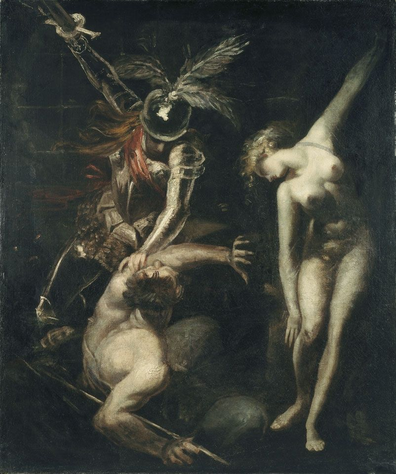
Britomart delivers Amoretta from the enchantment of BusiraneHenry Fuseli, c. 1824 · Kunsthaus Zürich
xxxiiSoon as that virgin knight he saw in place,His wicked books in hast he overthrew,Not caring his long labours to deface,And fiercely ronning to that Lady trow,A murdrous knife out of his pocket drew,The which he thought, for villeinous despite,In her tormented body to embrue:But the stout Damsel to him leaping light,His cursed hand withheld, and maistered his might.
xxxiiiFrom her, to whom his fury first he ment,The wicked weapon rashly he did wrest,And turning to her self his fell intent,Unwares it stroke into her snowy chest,That little drops empurpled her fair breast.Exceeding wroth therewith the virgin grew,Albe the wound were nothing deep imprest,And fiercely forth her mortal blade she drew,To give him the reward for such vile outrage dew.
xxxivSo mightily she smote him, that to groundHe fell half dead; next stroke him should have slain,Had not the Lady, which by him stood bound,Dernely unto her called to abstain,From doing him to dy. For else her painShould be remediless, sith none but he,Which wrought it, could the same recure again.Therewith she stay’d her hand, loth stay’d to be;For life she him ennuied, and long’d revenge to see.
xxxvAnd to him said, Thou wicked man, whose meedFor so huge mischief, and vile villanyIs death, or if that ought do death exceed,Be sure, that nought may save thee from to dy,But if that thou this Dame do presentlyRestore unto her health, and former state;This do and live, else die undoubtedly.He glad of life, that look’d for death but late,Did yield himself right willing to prolong his date.
xxxviAnd rising up, gan straight to overlookThose cursed leaves, his charms back to reverse;Full dreadful things out of that baleful bookHe red, and measur’d many a sad verse,That horror gan the virgins heart to perse,And her fair locks up stared stiff on end,Hearing him those same bloody lines reherse;And all the while he red, she did extendHer sword high over him, if ought he did offend.
xxxviiAnon she gan perceive the house to quake,And all the doors to rattle round about;Yet all that did not her dismaied make,Nor slack her threatful hand for dangers dout,But still with steadfast eye and courage stoutAbode, to weet what end would come of all.At last that mighty chain, which round aboutHer tender waste was wound, adown gan fall,And that great brazen pillar broke in pieces small.
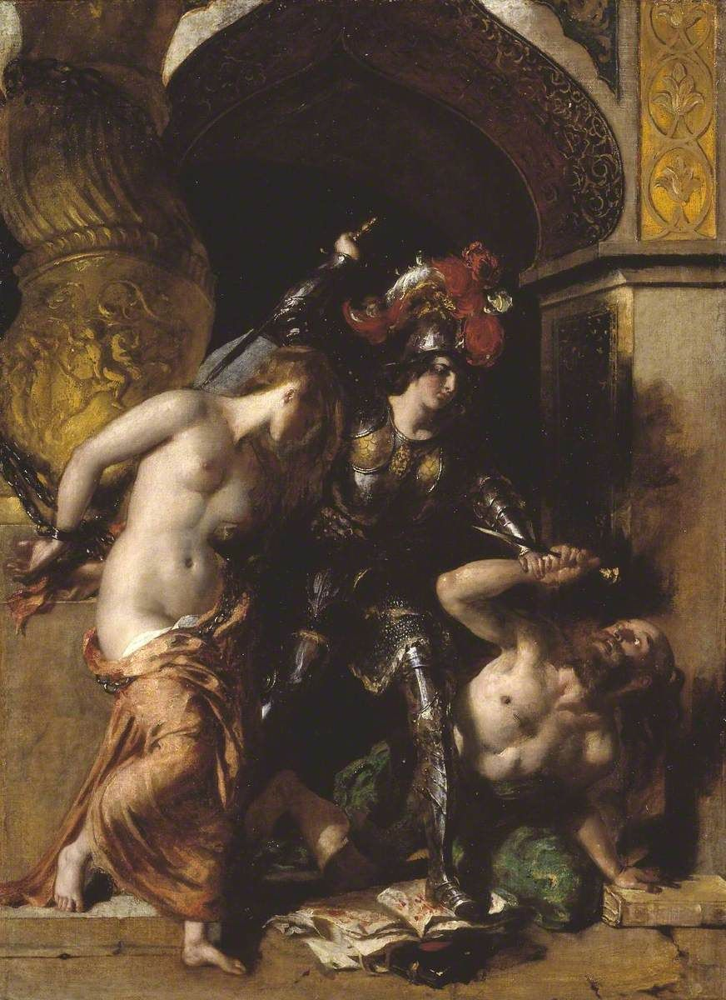
Britomart redeems Faire AmoretWilliam Etty, 1833 · Tate
xxxviiiThe cruel steel, which thrild her dying heart,Fell softly forth, as of his own accord,And the wide wound, which lately did dispartHer bleeding breast, and riven bowels gor’d,Was closed up, as it had not been bor’d,And every part to safety full sound,As she were never hurt, was soon restor’d:Tho when she felt her self to be unbound,And perfect hole, prostrate she fell unto the ground.
xxxixBefore fair Britomart, she fell prostrate,Saying, Ah noble knight, what worthy meedCan wretched Lady, quit from woeful state,Yield you in liew of this your gracious deed?Your virtue self her own reward shall breed,Even immortal praise, and glory wide,Which I your vassal, by your prowess freed,Shall through the world make to be notified,And goodly well advance, that goodly well was tried.
xlBut Britomart uprearing her from ground,Said, Gentle Dame, reward enough I weenFor many labours more, then I have found,This, that in safety now I have you seen,And mean of your deliverance have been:Henceforth fair Lady comfort to you take,And put away remembrance of late teen;In stead thereof know, that your loving Make,Hath no less grief endured for your gentle sake.
xliShe much was cheard to hear him mention’d,Whom of all living wights she loved best.Then laid the noble Championess strong hondUpon th’enchaunter, which had her distress’dSo sore, and with foul outrages oppress’d:With that great chain, wherewith not long ygoHe bound that piteous Lady prisoner, now relest,Himself she bound, more worthy to be so,And captive with her led to wretchedness and woe.
xliiReturning back, those goodly romes, which erstShe saw so rich and royally array’d,Now vanisht utterly, and clean subuerstShe found, and all their glory quite decay’d,That sight of such a change her much dismay’d.Thence forth descending to that perlous Porch,Those dreadful flames she also found delay’d,And quenched quite, like a consumed torch,That erst all entrers wont so cruelly to scorch.
xliiiMore easy issue now, then entrance lateShe found: for now that fained dreadful flame,Which chokt the porch of that enchanted gate,And passage bard to all, that thither came,Was vanisht quite, as it were not the same,And gave her leave at pleasure forth to pass.Th’Enchaunter self, which all that fraud did frame,To have efforst the love of that fair lass,Seeing his work now wasted deep engrieved was.
xlivBut when the victoress arrived there,Where late she left the pensife Scudamore,With her own trusty Squire, both full of fear,Neither of them she found where she them lore:Thereat her noble heart was stonisht sore;But most fair Amoret, whose gentle sprightNow gan to feed on hope, which she beforeConceived had, to see her own dear knight,Being thereof beguyld was fil’d with new affright.
xlvBut he sad man, when he had long in dreadAwaited there for Britomarts return,Yet saw her not nor sign of her good speed,His expectation to despair did turn,Misdeeming sure that her those flames did burn;And therefore gan aduize with her old Squire,Who her dear nourslings loss no less did mourne,Thence to depart for further aide t’enquire:Where let them wend at will, whilst here I do respire.
At last she came unto the place, where lateShe left Sir Scudamour in great distress,Twixt dolour and despite half desperate,Of his loves succour, of his own redress,And of the hardy Britomarts success:There on the cold earth him now thrown she found,In wilful anguish, and dead heaviness,And to him call'd; whose voices known soundSoon as he heard, himself he reared light from ground.
There did he see, that most on earth him joy’d,His dearest love, the comfort of his days,Whose too long absence him had sore annoy’d,And wearied his life with dull delays:Straight he upstarted from the loathed lays,And to her ran with hasty egernesse,Like as a Dear, that greedily embaysIn the cole soil, after long thirstiness,Which he in chace endured hath, now nigh breathless.
Lightly he clipt her twixt his arms twain,And streightly did embrace her body bright,Her body, late the prison of sad pain,Now the sweet lodge of love and dear delight:But she fair Lady overcommen quiteOf huge affection, did in pleasure melt,And in sweet ravishment pour'd out her spright:No word they spake, nor earthly thing they felt,But like two senceles stocks in long embracement dwelt.
Had ye them seen, ye would have surely thought,That they had been that fair Hermaphrodite,Which that rich Romane of white marble wrought,And in his costly Bath caus’d to be site:So seem’d those two, as grown together quite,That Britomart half envying their bless,Was much empassiond in her gentle sprite,And to her self oft wisht like happiness,In vain she wisht, that fate n’ould let her yet possess.
Thus do those lovers with sweet counteruayle,Each other of loves bitter fruit despoil.But now my teme begins to faint and fail,All woxen weary of their journal toil:Therefore I will their sweaty yokes assoilAt this same furrows end, till a new day:And ye fair Swains, after your long turmoil,Now cease your work, and at your pleasure play;Now cease your work; tomorrow is an holy day.
THE FOURTH BOOKE OF THE FAERIE QUEENE
The Legend of Cambel and Telamond, or of Friendship
Friendship
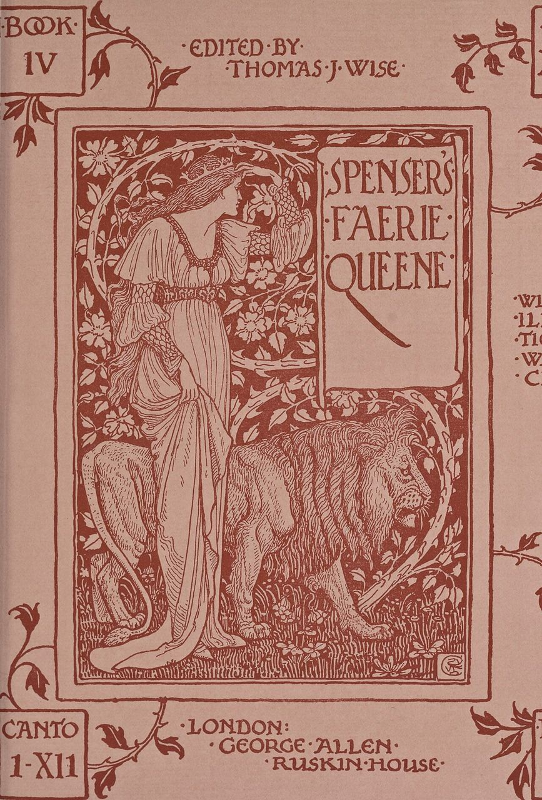
The Proeme
ihe rugged forhead that with grave foresightWelds kingdoms causes, and affaires of state,My looser rimes (I wot) doth sharply wite,For praising love, as I have done of late,And magnifying lovers dear debate;By which frail youth is oft to folly led,Through false allurement of that pleasing bait,That better were in virtues discipled,Then with vain poems weeds to have their fancies fed.
iiSuch ones ill judge of love, that cannot love,Ne in their frozen hearts feel kindly flame:For thy they ought not thing unknown reprove,Ne natural affection faultless blame,For fault of few that have abus’d the same.For it of honour and all virtue isThe root, and brings forth glorious flowers of fame,That crown true lovers with immortal bliss,The meed of them that love, and do not live amiss.
iiiWhich who so list loke back to former ages,And call to count the things that then were donne,Shall find, that all the works of those wise sages,And brave exploits which great Heroes won,In love were either ended or begun:Witness the father of Philosophy,Which to his Critias, shaded oft from sun,Of love full mani lessons did apply,The which these Stoic censors cannot well deny.
ivTo such therefore I do not sing at all,But to that sacred Saint my sovereign Queen,In whose chaste breast all bounty natural,And treasures of true love enlocked been,Bovey all her sex that ever yet was seen;To her I sing of love, that loveth best,And best is lou’d of all alive I ween:To her this song most fitly is addrest,The Queen of love, and Prince of peace from heaven blest.
vWhich that she may the better deign to hear,Do thou dread infant, Venus dearling dove,From her high spirit chase imperious fear,And use of awful Majesty remove:In stead thereof with drops of melting love,Deawd with ambrosial kisses, by thee gottenFrom thy sweet smiling mother from above,Sprinckle her heart, and haughty courage soften,That she may hearke to love, and reade this lesson often.
Booke IV · Friendship
Canto I
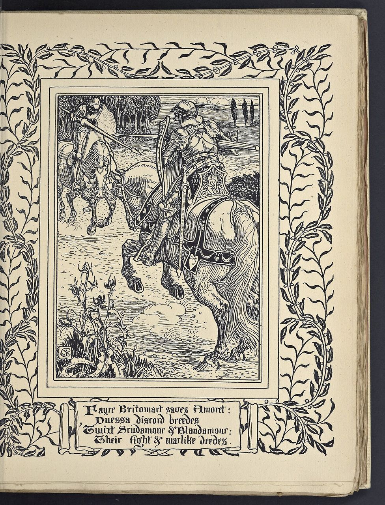
Fayre Britomart saves AmoretWalter Crane, 1895–97 · canto-head, George Allen edition
❧
Fayre Britomart saves Amoret, Duessa discord breeds Twixt Scudamore and Blandamour: Their fight and warlike deeds.
❧
if lovers sad calamities of old,Full many piteous stories do remain,But none more piteous ever was ytold,Then that of Amorets heart-binding chain,And this of Florimels unworthy pain:The dear compassion of whose bitter fitMy softened heart so sorely doth constrain,That I with tears full oft do pity it,And oftentimes do wish it never had been writ.
iiFor from the time that Scudamour her boughtIn perilous fight, she never joyed day,A perilous fight when he with force her broughtFrom twenty Knights, that did him all assay:Yet fairly well he did them all dismay:And with great glory both the shield of love,And eke the Lady self he brought away,Whom having wedded as did him behove,A new unknowen mischief did from him remove.
iiiFor that same vile Enchauntour Busyran,The very self same day that she was wedded,Amidst the bridal feast, whilst every manSurcharg’d with wine, were heedless and ill headed,All bent to mirth before the bride was bedded,Brought in that mask of love which late was shown:And there the Lady ill of friends besteaded,By way of sport, as oft in masks is known,Conveyed quite away to living wight unknowen.
ivSeven months he so her kept in bitter smart,Because his sinful lust she would not serve,Until such time as noble BritomartReleased her, that else was like to sterve,Through cruel knife that her dear heart did kerve.And now she is with her upon the way,Marching in lovely wise, that could deserveNo spot of blame, though spite did oft assayTo blot her with dishonor of so fair a pray.
vYet should it be a pleasant tale, to tellThe diverse usage and demeanure daint,That each to other made, as oft befell.For Amoret right fearful was and faint,Lest she with blame her honour should attaint,That every word did tremble as she spake,And every loke was coy, and wondrous quaint,And every limb that touched her did quake:Yet could she not but courteous countenance to her make.
viFor well she wist, as true it was indeed,That her lives Lord and patron of her healthRight well deserved as his dueful meed,Her love, her service, and her utmost wealth.All is his justly, that all freely dealth:Nathless her honour dearer than her life,She sought to save, as thing reserv’d from stealth;Die had she lever with Enchanters knife,Then to be false in love, profess’d a virgin wife.
viiThereto her fear was made so much the greaterThrough fine abusion of that Briton maid:Who for to hide her fained sex the better,And mask her wounded mind, both did and saidFull many things so doubtful to be way’d,That well she wist not what by them to geese,For other whiles to her she purpose madeOf love, and otherwhiles of lustfulness,That much she fear’d his mind would grow to some excess.
viiiHis will she fear’d; for him she surely thoughtTo be a man, such as indeed he seemed,And much the more, by that he lately wrought,When her from deadly thraldom he redeemed,For which no service she too much esteemed,Yet dread of shame, and doubt of foul dishonorMade her not yield so much, as due she deemed.Yet Britomart attended duly on her,As well became a knight, and did to her all honour.
ixIt so befell one evening, that they cameUnto a Castell, lodged there to be,Where many a knight, and many a lovely DameWas then assembled, deeds of arms to see:Amongst all which was none more fair than she,That many of them mov’d to eye her sore.The custom of that place was such, that heWhich had no love nor leman there in store,Should either winn him one, or lye without the door.
xAmongst the rest there was a jolly knight,Who being asked for his love, avow’dThat fairest Amoret was his by right,And offer’d that to justify alow’d.The warlike virgin seeing his so prow’dAnd boastful challenge, wexed inly wroth,But for the present did her anger shrowd;And said, her love to lose she was full loth,But either he should neither of them have, or both.
xiSo forth they went, and both together giusted;But that same younker soon was overthrown,And made repent, that he had rashly lustedFor thing unlawful, that was not his own:Yet since he seemed valiant, though unknown,She that no less was courteous then stout,Cast how to salue, that both the custom shownWere kept, and yet that Knight not locked out,That seem’d full hard t’accord two things so far in dout.
xiiThe Seneschal was cal’d to deem the right,Whom she requir’d, that first fayre AmoretMight be to her allow’d, as to a Knight,That did her win and free from challenge set:Which straight to her was yielded without let.Then since that strange Knights love from him was quitted,She claim’d that to her self, as Ladies deet,He as a Knight might justly be admitted;So none should be out shut, sith all of loves were fitted.
xiiiWith that her glist’ring helmet she unlaced;Which doft, her golden locks, that were up boundStill in a knot, unto her heels down traced,And like a silken veil in compass roundAbout her back and all her body wound:Like as the shining ski in summers night,What time the days with scorching heat abound,Is crested all with lines of firry light,That it prodigious seems in common peoples sight.
xivSuch when those Knights and Ladies all aboutBeheld her, all were with amazement smit,And every one gan grow in secret doutOf this and that, according to each wit:Some thought that some enchantment faygned it;Some, that Bellona in that warlike wiseTo them appear’d, with shield and armour fit;Some, that it was a mask of strange disguise:So diversely each one did sundri doubts devise.
xvBut that young Knight, which through her gentle deedWas to that goodly fellowship restor’d,Ten thousand thanks did yield her for her meed,And doubly overcommen, her ador’d:So did they all their former strife accord;And eke fayre Amoret now freed from fear,More frank affection did to her afford,And to her bed, which she was wont forbear,Now freely drew, and found right safe assurance there.
xviWhere all that night they of their loves did treat,And hard adventures twixt themselves alone,That each the other gan with passion great,And griefful pity privately bemoan.The morrow next so soon as Titan shone,They both uprose, and to their ways them dight:Long wander’d they, yet never met with none,That to their wills could them direct aright,Or to them tidings tell, that mote their hearts delight.
xviiLo thus they rode, till at the last they spiedTwo armed Knights, that toward them did pace,And eche of them had riding by his sideA Lady, seeming in so fare a space,But Ladies none they were, albee in faceAnd outward show fair semblance they did bear;For under mask of beauty and good grace,Vile treason and foul falshood hidden were,That mote to none but to the wary wise appear.
xviiiThe one of them the false Duessa hight,That now had chang’d her former wonted hue:For she could d’on so mani shapes in sight,As ever could Cameleon colours new;So could she forge all colours, save the trow.The other no whit better was then she,But that such as she was, she plain did show;Yet otherwise much worse, if worse might be,And daily more offensive unto each degree.
xixHer name was Ate, mother of debate,And all dissention, which doth daily growAmongst frail men, that many a publike stateAnd many a private oft doth overthrow.Her false Duessa who full well did know,To be most fit to trouble noble knights,Which hunt for honour, raised from below,Out of the dwellings of the damned sprights,Where she in darkness wastes her cursed days and nights.
xxHard by the gates of hell her dwelling is,There whereas all the plagues and harms abound,Which punish wicked men, that walk amiss:It is a darksome delve fare under ground,With thorns and barren brakes enuirond round,That none the same may easily out win;Yet many ways to enter may be found,But none to issue forth when one is in:For discord harder is to end then to begin.
xxiAnd all within the riven walls were hungWith ragged monuments of times forepast,All which the sad effects of discord sung:There were rent robes, and broken scepters plac’d,Altars defile’d, and holy things defac’d,Disshivered spears, and shields ytorne in twain,Great cities ransack’d, and strong castles rast,Nations captived, and huge armies slain:Of all which ruins there some relicks did remain.
xxiiThere was the sign of antique Babylon,Of fatal Thebes, of Rome that reign'd long,Of sacred Salem, and sad Ilion,For memory of which on high there hungThe golden Apple, cause of all their wrong,For which the three fair Goddesses did strive:There also was the name of Nimrod strong,Of Alexander, and his Princes five,Which shar’d to them the spoils that he had got alive.
xxiiiAnd there the relicks of the drunken fray,The which amongst the Lapithees befell,And of the bloody feast, which sent awaySo many Centaures drunken souls to hell,That under great Alcides fury fell:And of the dreadful discord, which did driveThe noble Argonauts to outrage fell,That each of life sought others to deprive,All mindless of the Golden fleece, which made them strive.
xxivAnd eke of private persons many moe,That were too long a work to count them all;Some of sworn friends, that did their faith forgo;Some of borne brethren, prov’d unnatural;Some of dear lovers, foes perpetual:Witness their broken bands there to be seen,Their garlands rent, their bowers despoiled all;The moniments whereof there biding been,As plain as at the first, when they were fresh and green.
xxvSuch was her house within; but all without,The barren ground was full of wicked weeds,Which she her self had sown all about,Now grown great, at first of little seeds,The seeds of evil words, and factious deeds;Which when to ripeness due they grown arr,Bring forth an infinite increase, that breedsTumultuous trouble and contentious jar,The which most often end in bloodshed and in war.
xxviAnd those same cursed seeds do also serveTo her for bread, and yield her living food:For life it is to her, when others sterveThrough mischievous debate, and deadly feod,That she may suck their life, and drink their blood,With which she from her childhood had been fed.For she at first was borne of hellish brood,And by infernal furies nourished,That by her monstrous shape might easily be red.
xxviiHer face most foul and filthy was to see,With squinted eyes contrary ways intended,And loathly mouth, unmeet a mouth to be,That nought but gall and venim comprehended,And wicked words that God and man offended:Her lying tongue was in two parts divided,And both the parts did speak, and both contended;And as her tongue, so was her heart discided,That never thought one thing, but doubly stile was guided.
xxviiiAls as she double spake, so heard she double,With matchless ears deformed and distort,Fil’d with false rumors and seditious trouble,Bred in assemblies of the vulgar sort,That still are led with every light report.And as her ears so eke her feet were odd,And much unlike, th’one long, the other short,And both misplast; that when th’one forward yode,The other back retired, and contrary trode.
xxixLikewise unequal were her hands twain,That one did reach, the other pusht away,That one did make, the other mardy again,And sought to bring all things unto decay;Whereby great riches gathered mani a day,She in short space did often bring to nought,And their possessors often did dismay.For all her study was and all her thought,How she might overthrow the things that Concord wrought.
xxxSo much her malice did her might surpass,That even th’Almightie self she did malign,Because to man so merciful he was,And unto all his creatures so benign,Sith she her self was of his grace indign:For all this worlds fair workmanship she tried,Unto his last confusion to bring,And that great golden chain quite to divide,With which it blessed Concord hath together tide.
xxxiSuch was that hag, which with Duessa road,And serving her in her malicious use,To hurt good knights, was as it were her baud,To sell her borrowed beauty to abuse.For though like withered tree, that wanteth juice,She old and crooked were, yet now of late,As fresh and fragrant as the flour deluceShe was become, by change of her estate,And made full goodly joyance to her new found mate.
xxxiiHer mate he was a jolly youthful knight,That bore great sway in arms and chivalry,And was indeed a man of mickle might:His name was Blandamour, that did descryHis fickle mind full of inconstancy.And now himself he fitted had right well,With two companions of like quality,Faithless Duessa, and false Paridell,That whether were more false, full hard it is to tell.
xxxiiiNow when this gallant with his goodly crew,From fare espied the famous Britomart,Like knight adventurous in outward view,With his fair paragon, his conquests part,Approaching nigh, eftsoons his wanton heartWas tickled with delight, and jesting said;Lo there Sir Paridel, for your desart,Good luck presents you with yond lovely maid,For pity that ye want a fellow for your aid.
xxxivBy that the lovely pair drew nigh to hond:Whom when as Paridel more plain beheld,Albee in heart he like affection fond,Yet mindful how he late by one was feld,That did those arms and that same scutchion weld,He had small lust to buy his love so dear,But answer’d, Sir him wise I never held,That having once escaped peril near,Would afterwards afresh the sleeping evil rear.
xxxvThis knight too late his manhood and his might,I did assay, that me right dearly cost,Ne list I for revenge provoke new fight,Ne for light Ladies love, that soon is lost.The hot-spur youth so scorning to be crost,Take then to you this Dame of mine (quoth he)And I without your peril or your cost,Will challenge yond same other for my fee:So forth he fiercely prick’d, that one him scarce could see.
xxxviThe warlike Britoness her soon addrest,And with such uncouth welcome did receiveHer fained Paramour, her forced guest,That being forc’d his saddle soon to leave,Him self he did of his new love deceive:And made him self thensample of his folly.Which done, she passed forth not taking leave,And left him now as sad, as whilom jolly,Well warned to beware with whom he dar’d to dally.
xxxviiWhich when his other company beheld,They to his succour ran with ready aid:And finding him unable once to weld,They reared him on horseback, and upstay’d,Till on his way they had him forth conuayd:And all the way with wondrous grief of mind,And shame, he show’d him self to be dismay’d,More for the love which he had left behind,Then that which he had to Sir Paridel resynd.
xxxviiiNathless he forth did march well as he might,And made good semblance to his company,Dissembling his disease and evil plight;Till that ere long they chanced to espyTwo other knights, that towards them did plyWith speedy course, as bent to charge them new.Whom when as Blandamour approaching nie,Perceiv’d to be such as they seem’d in view,He was full woe, and gan his former grief renew.
xxxixFor th’one of them he perfectly descried,To be Sir Scudamour, by that he boreThe God of love, with wings displayed wide,Whom mortally he hated evermore,Both for his worth, that all men did adore,And eke because his love he won by right:Which when he thought, it grieved him full sore,That through the bruses of his former fight,He now unable was to wreak his old despite.
xlFor thy he thus to Paridel bespake,Fair Sir, of friendship let me now you pray,That as I late adventured for your sake,The hurts whereof me now from battle stay,Ye will me now with like good turn repay,And justify my cause on yonder knight.Ah Sir (said Paridel) do not dismayYour self for this, my self will for you fight,As ye have done for me: the left hand rubs the right.
xliWith that he put his spurs unto his steed,With spear in rest, and toward him did fare,Like shaft out of a bow preventing speed.But Scudamour was shortly well awareOf his approach, and gan him self prepareHim to receive with entertainment meet.So furiously they met, that either bareThe other down under their horses feet,That what of them became, themselves did scarsly weet.
xliiAs when two billows in the Irish sowndes,Forcibly driven with contrary tidesDo meet together, each aback rebowndesWith roaring rage; and dashing on all sides,That filleth all the sea with foam, dividesThe doubtful current into divers ways:So fell those two in spite of both their prides,But Scudamour himself did soon upraise,And mounting light his foe for lying long upbrayes.
xliiiWho rolled on an heap lay still in swoun’d,All carless of his taunt and bitter rayle,Till that the rest him seeing lie on ground,Ran hastily, to weet what did him ail.Where finding that the breath gan him to fail,With busy care they strove him to awake,And doft his helmet, and undid his maile:So much they did, that at the last they brakeHis slumber, yet so mazed, that he nothing spake.
xlivWhich when as Blandamour beheld, he said,False faitour Scudamour, that hast by slightAnd foul advantage this good Knight dismay’d,A Knight much better than thy self behight,Well falls it thee that I am not in plightThis day, to wreak the damage by thee donne:Such is thy wont, that still when any KnightIs weaken’d, then thou doest him overronne:So hast thou to thy self false honour often won.
xlvHe little answer’d, but in manly heartHis mighty indignation did forbear,Which was not yet so secret, but some partThereof did in his frouning face appear:Like as a gloomy cloud, the which doth bearAn hideous storm, is by the Northern blastQuite overblown, yet doth not pass so clear,But that it all the ski doth overcastWith darkness dread, and threatens all the world to wast.
xlviAh gentle knight, then false Duessa said,Why do ye strive for Ladies love so sore,Whose chief desire is love and friendly aidMongst gentle Knights to nourish evermore?Ne be ye wroth Sir Scudamour therefore,That she your love list love another knight,Ne do your self dislike a whit the more;For Love is free, and led with self delight,Ne will enforced be with maisterdome or might.
xlviiSo false Duessa, but vile Ate thus;Both foolish knights, I can but laugh at both,That strive and storm with stire outrageous,For her that each of you alike doth loth,And loves another, with whom now she gothIn lovely wise, and sleeps, and sports, and plays;Whilst both you here with many a cursed oath,Swear she is yours, and stire up bloody frays,To win a willow bough, whilst other wears the bayes.
xlviiiVile hag (said Scudamour) why dost thou lye?And falsly seekst a virtuous wight to shame?Fond knight (said she) the thing that with this eyeI saw, why should I doubt to tell the same?Then tell (quoth Blandamour) and fear no blame,Tell what thou saw’st, maulgre who so it hears.I saw (quoth she) a stranger knight, whose nameI wot not well, but in his shield he bears(That well I wot) the heads of many broken spears.
xlixI saw him have your Amoret at will,I saw him kiss, I saw him her embrace,I saw him sleep with her all night his fill,All mani nights, and mani by in place,That present were to testify the case.Which when as Scudamour did hear, his heartWas thrild with inward grief, as when in chaceThe Parthian strikes a stag with shivering dart,The beast astonisht stands in middest of his smart.
lSo stood Sir Scudamour, when this he heard,Ne word he had to speak for great dismay,But look’d on Glauce grim, who woxe afeardOf outrage for the words, which she heard say,Albee untrue she wist them by assay.But Blandamour, whenas he did espyHis change of cheer, that anguish did bewray,He woxe full blithe, as he had got thereby,And gan thereat to triumph without victory.
liLo recreant (said he) the fruitless endOf thy vain boast, and spoil of love misgotten,Whereby the name of knight-hood thou dost shend,And all true lovers with dishonor blotten,All things not rooted well, will soon be rotten.Fy fy false knight (then false Duessa cried)Unworthy life that love with guile hast gotten,Be thou, where ever thou do go or ryde,Loathed of ladies all, and of all knights defied.
liiBut Scudamour for passing great despiteStaid not to answer, scarcely did refrain,But that in all those knights and ladies sight,He for revenge had guiltless Glauce slain:But being past, he thus began amain;False traitor squire, false squire, of falsest knight,Why doth mine hand from thine avenge abstain,Whose Lord hath done my love this foul despite?Why do I not it wreak, on thee now in my might?
liiiDiscourteous, disloyal Britomart,Untrue to God, and unto man unjust,What vengeance due can equal thy desart,That hast with shameful spot of sinful lustDefil’d the pledge committed to thy trust?Let ugly shame and endless infamyColour thy name with foul reproaches rust.Yet thou false Squire his fault shalt dear aby,And with thy punishment his penance shalt supply.
livThe aged Dame him seeing so enraged,Was dead with fear, nathless as need required,His flaming fury sought to have assuagedWith sober words, that sufferance desired,Till time the trial of her truth expired:And evermore sought Britomart to clear.But he the more with furious rage was fired,And thrice his hand to kill her did uprear,And thrice he drew it back: so did at last forbear.
Booke IV · Friendship
Canto II
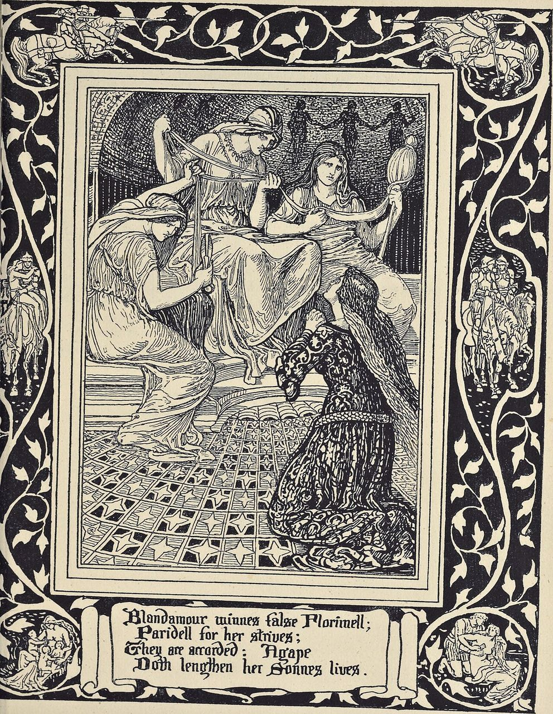
Blandamour winnes false FlorimellWalter Crane, 1895–97 · canto-head, George Allen edition
❧
Blandamour winns false Florimell, Paridell for her strives, They are accorded: Agape doth lengthen her sons lives.
❧
iirebrand of hell first tynd in Phlegeton,By thousand furies, and from thence out thrownInto this world, to work confusion,And set it all on fire by force unknowen,Is wicked discord, whose small sparks once blownNone but a God or godlike man can slake;Such as was Orpheus, that when strife was grownAmongst those famous imps of Greece, did takeHis silver Harp in hand, and shortly friends them make.
iiOr such as that celestial Psalmist was,That when the wicked fiend his Lord tormented,With heavenly notes, that did all other pas,The outrage of his furious fit relented.Such Music is wise words with time consented,To moderate stiff minds, dispos’d to strive:Such as that prudent Roman well invented,What time his people into parts did rive,Them reconcyld again, and to their homes did drive.
iiiSuch us’d wise Glauce to that wrathful knight,To calm the tempest of his troubled thought:Yet Blandamour with termes of foul despite,And Paridell her scorn’d, and set at nought,As old and crooked and not good for ought.Both they unwise, and warless of the evil,That by themselves unto themselves is wrought,Through that false witch, and that foul aged drevill,The one a fiend, the other an incarnate devil.
ivWith whom as they thus rode accompanied,They were encounter’d of a lusty Knight,That had a goodly Lady by his side,To whom he made great dalliance and delight.It was to weet the bold Sir Ferraugh hight,He that from Braggadocchio whilom reftThe snowy Florimell, whose beauty brightMade him seem happy for so glorious theft;Yet was it in due trial but a wand’ring weft.
vWhich when as Blandamour, whose fancy lightWas always flitting as the wavering wind,After each beauty, that appear’d in sight,Beheld, eftsoons it prick’d his wanton mindWith sting of lust, that reasons eye did blind,That to Sir Paridell these words he sent;Sir knight why ride ye dumpish thus behind,Since so good fortune doth to you presentSo fayre a spoil, to make you joyous merriment?
viBut Paridell that had too late a trialOf the bad issue of his counsel vain,List not to hearke, but made this fair denial;Last turn was mine, well proved to my pain,This now be yours, God send you better gain.Whose scoffed words he taking half in scorn,Fiercely forth prick’d his steed as in disdain,Against that Knight, ere he him well could torn:By means whereof he hath him lightly overborne.
viiWho with the sudden stroke astonisht sore,Upon the ground a while in slumber lay;The whiles his love away the other bore,And shewing her, did Paridell upbray;Lo sluggish Knight the victors happy pray:So fortune friends the bold: whom ParidellSeeing so fair indeed, as he did say,His heart with secret envy gan to swell,And inly grudge at him, that he had sped so well.
viiiNathless proud man himself the other deemed,Having so peerless paragon ygot:For sure the fairest Florimell him seemed,To him was fallen for his happy lot,Whose like alive on earth he weened not:Therefore he her did court, did serve, did woe,With humblest suit that he imagine mot,And all things did devise, and all things doe,That might her love prepare, and liking win thereto.
ixShe in regard thereof him recompenstWith golden words, and goodly countenance,And such fond favours sparingly dispenst:Sometimes him blessing with a light eye-glance,And coy lokes temp’ring with loose dalliance;Sometimes estranging him in sterner wise,That having cast him in a foolish trance,He seemed brought to bed in Paradise,And prou’d himself most fool, in what he seem’d most wise.
xSo great a mistress of her art she was,And perfectly practise’d in womans craft,That though therein himself he thought to pas,And by his false allurements wylie draftHad thousand women of their love beraft,Yet now he was surpriz’d: for that false spright,Which that same witch had in this form engraft,Was so expert in every subtile slight,That it could overreach the wisest earthly wight.
xiYet he to her did daily service more,And daily more deceived was thereby;Yet Paridell him envied therefore,As seeming plac’d in sole felicity:So blind is lust, false colours to descry.But Ate soon discovering his desire,And finding now fit opportunityTo stire up strife, twixt love and spite and ire,Did privily put coals unto his secret fire.
xiiBy sundry means thereto she prick’d him forth,Now with remembrance of those spightfull speeches,Now with opinion of his own more worth,Now with recounting of like former breachesMade in their friendship, as that Hag him teaches:And ever when his passion is allay’d,She it revives and new occasion reaches:That on a time as they together way’d,He made him open challenge, and thus boldly said.
xiiiToo boastful Blandamour, too long I bearThe open wrongs, thou doest me day by day;Well know’st thou, when we friendship first did swear,The covenant was, that every spoil or prayShould equally be shard betwixt us tway:Where is my part then of this Lady bright,Whom to thy self thou takest quite away?Render therefore therein to me my right,Or answer for thy wrong, as shall fall out in fight.
xivExceeding wroth thereat was Blandamour,And gan this bitter answer to him make;Too foolish Paridell, that fairest flourWouldst gather fain, and yet no pains wouldst take:But not so easy will I her forsake;This hand her won, this hand shall her defend.With that they gan their shivering spears to shake,And deadly points at eithers breast to bend,Forgetful each to have been ever others frend.
xvTheir firry Steeds with so untamed forseDid bear them both to fell avenges end,That both their spears with pitiless remorse,Through shield and maile, and haberieon did wend,And in their flesh a grisly passage rend,That with the fury of their own affret,Each other horse and man to ground did send;Where lying still a while, both did forgetThe perilous present stown’d, in which their lives were set.
xviAs when two warlike Brigandines at sea,With murdrous weapons arm’d to cruel fight,Do meet together on the wat’ry lea,They stem eche other with so fell despite,That with the shock of their own heedless might,Their wooden ribs are shaken nigh a sonder;They which from shore behold the dreadful sightOf flashing fire, and hear the ordenance thonder,Do greatly stand amaz’d at such unwonted wonder.
xviiAt length they both upstarted in amaze,As men awaked rashly out of dreme;And round about themselves a while did gaze,Till seeing her, that Florimell did sem,In doubt to whom she victory should deem,Therewith their dulled sprights they edg’d anew,And drawing both their swords with rage extreme,Like two mad mastiffs each on other flew,And shields did share, and mailes did rash, and helms did hue.
xviiiSo furiously each other did assail,As if their souls they would at once have rentOut of their breasts, that streams of blood did rayleAdown, as if their springs of life were spent;That all the ground with purple blood was sprent,And all their armours staynd with bloody gore,Yet scarcely once to breath would they relent,So mortal was their malice and so sore,Become of fained friendship which they vow’d afore.
xixAnd that which is for Ladies most besitting,To stint all strife, and foster friendly peace,Was from those Dames so fare and so unfitting,As that in stead of praying them surcease,They did much more their cruelty encrease;Bidding them fight for honour of their love,And rather die then Ladies cause release.With which vain termes so much they did them move,That both resolv’d the last extremities to prove.
xxThere they I ween would fight until this day,Had not a Squire, even he the Squire of Dames,By great adventure travelled that way;Who seeing both bent to so bloody games,And both of old well knowing by their names,Drew nigh, to weet the cause of their debate:And first laid on those Ladies thousand blames,That did not seek t’appease their deadly hate,But gazed on their harms, not pitying their estate.
xxiAnd then those Knights he humbly did beseech,To stay their hands, till he a while had spoken:Who look’d a little up at that his speech,Yet would not let their battle so be broken,Both greedy fiers on other to be wroken.Yet he to them so earnestly did call,And them conjur’d by some well known token,That they at last their wrothful hands let fall,Content to hear him speak, and glad to rest withal.
xxiiFirst he desir’d their cause of strife to see:They said, it was for love of Florimell.Ah gentle knights (quoth he) how may that be,And she so fare astray, as none can tell.Fond Squire, full angry then said Paridell,Seest not the Lady there before thy face?He looked back, and her aduizing well,Wend as he said, by that her outward grace,That fairest Florimell was present there in place.
xxiiiGlad man was he to see that joyous sight,For none alive but joy’d in Florimell,And lowly to her lowting thus behight;Fairest of fair, that fairenesse doest excel,This happy day I have to greet you well,In which you safe I see, whom thousand lateMisdoubted lost through mischief that befell;Long may you live in health and happy state.She little answer’d him, but lightly did aggrate.
xxivThen turning to those Knights, he gan a new;And you Sir Blandamour and Paridell,That for this Lady present in your view,Have rays’d this cruel war and outrage fell,Certes me seems been not advised well,But rather ought in friendship for her sakeTo join your force, their forces to repel,That seek perforce her from you both to take,And of your gotten spoil their own triumph to make.
xxvThereat Sir Blandamour with countenance stern,All full of wrath, thus fiercely him bespake;A read thou Squire, that I the man may learn,That dare fro me think Florimell to take.Not one (quoth he) but many do partakeHerein, as thus. It lately so befell,That Satyran a girdle did uptake,Well known to appertain to Florimell,Which for her sake he wore, as him beseemed well.
xxviBut when as she her self was lost and gone,Full many knights, that loved her like dear,Thereat did greatly grudge, that he aloneThat lost fair Ladies ornament should wear,And gan therefore close spite to him to bear:Which he to shun, and stop vile envies sting,Hath lately caus’d to be proclaim’d each whereA solemn feast, with publike turneying,To which all knights with them their Ladies are to bring.
xxviiAnd of them all she that is fairest found,Shall have that golden girdle for reward,And of those Knights who is most stout on ground,Shall to that fairest Lady be prefard.Since therefore she her self is now your ward,To you that ornament of hers pertains,Against all those, that challenge it to gard,And save her honour with your ventrous pains;That shall you win more glory, then ye here find gaines.
xxviiiWhen they the reason of his words had hard,They gan abate the rancour of their rage,And with their honours and their loves regard,The furious flames of malice to asswage.Tho each to other did his faith engage,Like faithful friends thenceforth to join in oneWith all their force, and battle strong to wageGainst all those knights, as their professed fone,That challenge’d ought in Florimell, save they alone.
xxixSo well accorded forth they rode togetherIn friendly sort, that lasted but a while;And of all old dislikes they made fair weather,Yet all was forg’d and spread with golden foil,That under it hide hate and hollow guile.Ne certes can that friendship long endure,How ever gay and goodly be the style,That doth ill cause or evil end enure:For virtue is the band, that bindeth hearts most sure.
xxxThus as they marched all in close disguiseOf fained love, they chanc’d to overtakeTwo knights, that lincked rode in lovely wise,As if they secret counsels did partake;And each not fare behind him had his make,To weet, two Ladies of most goodly hue,That twixt themselves did gentle purpose make,Unmindful both of that discordful crew,The which with speedy pace did after them pursue.
xxxiWho as they now approached nigh at hand,Deeming them doughty as they did appear,They sent that Squire afore, to understand,What mote they be: who viewing them more nearReturned ready news, that those same wearTwo of the prowest Knights in Faery lond;And those two Ladies their two lovers dear,Couragious Cambell, and stout Triamond,With Canacee and Cambine linckt in lovely bond.
xxxiiWhilom as antique stories tellen us,Those two were foes the fellonest on ground,And battle made the dreddest dangerous,That ever shrilling trumpet did resound;Though now their acts be no where to be found,As that renowned Poet them compiled,With warlike numbers and Heroic sound,Dan Chaucer, well of English undefiled,On Fames eternal beadroll worthy to be filed.
xxxiiiBut wicked Time that all good thoughts doth waste,And works of noblest wits to nought out wear,That famous moniment hath quite defac’d,And rob’d the world of threasure endless dear,The which mote have enriched all us hear.O cursed Eld the cankerworm of writs,How may these rimes, so rude as doth appear,Hope to endure, sith works of heavenly witsAre quite devour’d, and brought to nought by little bits?
xxxivThen pardon, O most sacred happy spirit,That I thy labours lost may thus revive,And steale from thee the meed of thy due merit,That none durst ever whilst thou wast alive,And being dead in vain yet many strive:Ne dare I like, but through infusion sweetOf thine own spirit, which doth in me survive,I follow here the footing of thy feet,That with thy meaning so I may the rather meet.
xxxvCambelloes sister was fayre Canacee,That was the learnedst Lady in her days,Well seen in every science that mote be,And every secret work of natures ways,In witty riddles, and in wise soothsays,In power of herbs, and tunes of beasts and burds;And, that augmented all her other prays,She modest was in all her deeds and words,And wondrous chaste of life, yet lou’d of Knights and Lords.
xxxviFull many Lords, and many Knights her loved,Yet she to none of them her liking lent,Ne ever was with fond affection moved,But rul’d her thoughts with goodly governement,For dread of blame and honours blemishment;And eke unto her lokes a law she made,That none of them once out of order went,But like to wary Centonels well stay’d,Still watch’d on every side, of secret foes afraid.
xxxviiSo much the more as she refus’d to love,So much the more she loved was and sought,That oftentimes unquiet strife did moveAmongst her lovers, and great quarrels wrought,That oft for her in bloody arms they fought.Which whenas Cambell, that was stout and wise,Perceiv’d would breed great mischief, he bethoughtHow to prevent the peril that mote rise,And turn both him and her to honour in this wise.
xxxviiiOne day, when all that troupe of warlike wooersAssembled were, to weet whose she should be,All mighty men and dreadful derring doers,(The harder it to make them well agree)Amongst them all this end he did decree;That of them all, which love to her did make,They by consent should chose the stoutest three,That with himself should combat for her sake,And of them all the victor should his sister take.
xxxixBold was the challenge, as himself was bold,And courage full of haughty hardiment,Approved oft in perils manifold,Which he achiev’d to his great ornament:But yet his sisters skill unto him lentMost confidence and hope of happy speed,Concerned by a ring, which she him sent,That mongst the mani virtues, which we reed,Had power to staunch al wounds, that mortally did bleed.
xlWell was that rings great virtue known to all,That dread thereof, and his redoubted mightDid all that youthly rout so much appall,That none of them durst undertake the fight;More wise they wend to make of love delight,Then life to hazard for fair Ladies loke,And yet uncertain by such outward sight,Though for her sake they all that peril toke,Whether she would them love, or in her liking brooke.
xliAmongst those knights there were three brethren bold,Three bolder brethren never were yborne,Borne of one mother in one happy mold,Borne at one burden in one happy morne,Thrice happy mother, and thrice happy morne,That bore three such, three such not to be fond;Her name was Agape whose children werneAll three as one, the first hight Priamond,The second Dyamond, the youngest Triamond.
xliiStout Priamond but not so strong to strike,Strong Diamond, but not so stout a knight,But Triamond was stout and strong alike:On horseback used Triamond to fight,And Priamond on foot had more delight,But horse and foot knew Diamond to wield:With curtaxe used Diamond to smite,And Triamond to handle spear and shield,But spear and curtaxe both us’d Priamond in field.
xliiiThese three did love each other dearly well,And with so firm affection were allied,As if but one soul in them all did dwell,Which did her power into three parts divide;Like three fair branches budding fare and wide,That from one root deriv’d their vital sap:And like that root that doth her life divide,Their mother was, and had full blessed hap,These three so noble babes to bring forth at one clap.
xlivTheir mother was a Fay, and had the skillOf secret things, and all the powers of nature,Which she by art could use unto her will,And to her service bind each living creature,Through secret understanding of their feature.Thereto she was right fair, when so her faceShe list discover, and of goodly stature;But she as Fays are wont, in privy placeDid spend her days, and lov’d in forests wild to space.
xlvThere on a day a noble youthly knightSeeking adventures in the salvage wood,Did by great fortune get of her the sight,As she sate carless by a crystal flood,Combing her golden locks, as seem’d her good:And unawares upon her laying hold,That strove in vain him long to have withstood,Oppressed her, and there (as it is told)Got these three lovely babes, that prov’d three champions bold.
xlviWhich she with her long foster’d in that wood,Till that to ripeness of mans state they grew:Then shewing forth signs of their fathers blood,They loved arms, and knighthood did ensue,Seeking adventures, where they ani knew.Which when their mother saw, she gan to doutTheir safety, least by searching dangers new,And rash provoking perils all about,Their days mote be abridged through their corage stout.
xlviiTherefore desirous th’end of all their daysTo know, and them t’enlarge with long extent,By wondrous skill, and many hidden ways,To the three fatal sisters house she went.Fare under ground from tract of living went,Down in the bottom of the deep Abysse,Where Demogorgon in dull darkness pent,Fare from the view of Gods and heavens bliss,The hideous Chaos keeps, their dreadful dwelling is.
xlviiiThere she them found, all sitting round aboutThe direful distaff standing in the mid,And with unwearied fingers drawing outThe lines of life, from living knowledge hid.Sad Clotho held the rock, the whiles the thridBy grisly Lachesis was spun with pain,That cruel Atropos eftsoons undid,With cursed knife cutting the twist in twain:Most wretched men, whose days depend on thrids so vain.
xlixShe them saluting, there by them sate still,Beholding how the thrids of life they span:And when at last she had beheld her fill,Trembling in heart, and looking pale and wan,Her cause of coming she to tell began.To whom fierce Atropos, Bold Fay, that durstCome see the secret of the life of man,Well worthy thou to be of Jove accurst,And eke thy childrens thrids to be a sunder burst.
lWhereat she sore afraid, yet her besoughtTo grant her boone, and rigour to abate,That she might see her childrens thrids forth brought,And know the measure of their utmost date,To them ordained by eternal fate.Which Clotho granting, showed her the same:That when she saw, it did her much amate,To see their thrids so thin, as spiders frame,And eke so short, that seem’d their ends out shortly came.
liShe then began them humbly to intreat,To draw them longer out, and better twine,That so their lives might be prolonged late.But Lachesis thereat gan to repine,And said, Fond dame that deem’st of things divineAs of humane, that they may alter’d be,And chang’d at pleasure for those imps of thine.Not so; for what the Fates do once decree,Not all the gods can change, nor Jove him self can free.
liiThen since (quoth she) the term of each mans lifeFor nought may lessened nor enlarged be,Grant this, that when ye shred with fatal knifeHis line, which is the eldest of the three,Which is of them the shortest, as I see,Eftsoons his life may pass into the next;And when the next shall likewise ended be,That both their lives may likewise be annextUnto the third, that his may so be trebly wext.
liiiThey granted it; and then that careful FayDeparted thence with full contented mind;And coming home, in warlike fresh arrayThem found all three according to their kind:But unto them what destiny was assynd,Or how their lives were eek’d, she did not tell;But evermore, when she fit time could find,She warned them to tend their safeties well,And love each other dear, what ever them befell.
livSo did they surely during all their days,And never discord did amongst them fall;Which much augmented all their other praise.And now t’increase affection natural,In love of Canacee they joined all:Upon which ground this same great battle grew,Great matter growing of beginning small;The which for length I will not here pursue,But rather will reserve it for a Canto new.
Booke IV · Friendship
Canto III
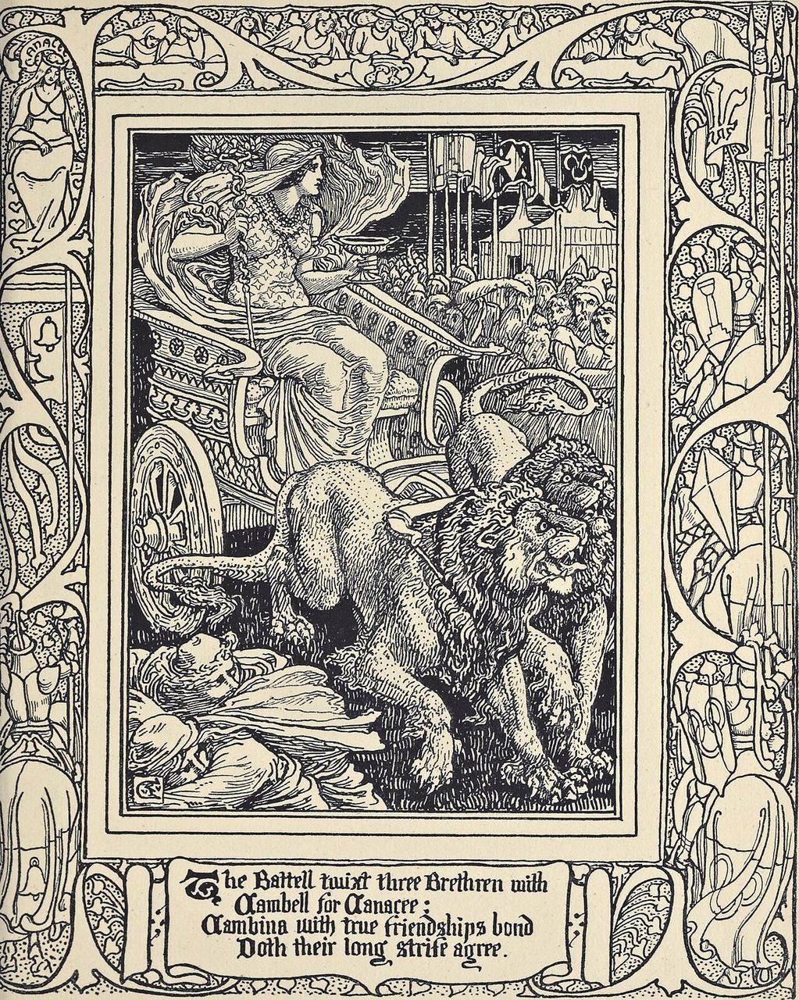
Cambina, drawn by angry lions, parts the battleWalter Crane, 1895–97 · canto-head, George Allen edition
❧
The battle twixt three brethren with Cambell for Canacee:[46
❧
i Why do wretched men so much desire,To draw their days unto the utmost date,And do not rather wish them soon expire,Knowing the misery of their estate,And thousand perils which them still awate,Tossing them like a boat amid the main,That every hour they knock at deaths gate?And he that happy seems and least in payne,Yet is as nigh his end, as he that most doth plain.
iiTherefore this Fay I hold but fond and vain,The which in seeking for her children threeLong life, thereby did more prolong their pain.Yet whilst they lived none did ever seeMore happy creatures, then they seem’d to be,Nor more ennobled for their courtesy,That made them dearly lou’d of each degree;Ne more renowned for their chevalrie,That made them dreaded much of all men fare and nie.
iiiThese three that hardy challenge toke in hand,For Canacee with Cambell for to fight:The day was set, that all might understand,And pledges pawn’d the same to keep a right,That day, the dreddest day that living wightDid ever see upon this world to shine,So soon as heavens window showed light,These warlike Champions all in armour shine,Assembled were in field, the challenge to define.
ivThe field with lists was all about enclos’d,To barre the prese of people fare away;And at th’one side six judges were dispos’d,To view and deem the deeds of arms that day;And on the other side in fresh array,Fayre Canacee upon a stately stageWas set, to see the fortune of that fray,And to be seen, as his most worthy wage,That could her purchase with his lives adventur’d gage.
vThen enter’d Cambell first into the list,With stately steps, and fearless countenance,As if the conquest his he surely wist.Soon after did the brethren three advance,In brave array and goodly amenance,With scutchins gilt and banners broad display’d:And marching thrice in warlike ordinance,Thrice lowted lowly to the noble Maid,The whiles shrill trompets and loud clarions sweetly play’d.
viWhich doen the doughty challenger came forth,All arm’d to point his challenge to abet:Gainst whom Sir Priamond with equal worth,And equal arms himself did forward set.A trompet blew; they both together met,With dreadful force, and furious intent,Carless of peril in their fiers affret,As if that life to loss they had forelent,And cared not to spare, that should be shortly spent.
viiRight practic was Sir Priamond in fight,And throughly skild in use of shield and spear;Ne less approved was Cambelloes might,Ne less his skill in weapons did appear,That hard it was to ween which harder were.Full many mighty strokes on either sideWere sent, that seemed death in them to bear,But they were both so watchful and well eide,That they avoided were, and vainly by did slide.
viiiYet one of many was so strongly bentBy Priamond, that with unlucky glanceThrough Cambels shoulder it unwarely went,That forced him his shield to disaduaunce:Much was he grieved with that graceless chance,Yet from the wound no drop of blood there fell,But wondrous pain, that did the more enhanceHis haughty courage to aduengement fell:Smart daunts not mighty hearts, but makes them more to swell.
ixWith that his poynant spear he fierce aventred,With doubled force close underneath his shield,That through the mailes into his thigh it enter’d,And there arresting, ready way did yield,For blood to gush forth on the grassy field;That he for pain himself n’ote right uprear,But too and fro in great amazement reel’d,Like an old Oke whose pith and sap is sear,At puff of every storm doth stagger here and there.
xWhom so dismay’d when Cambell had espied,Again he drove at him with double might,That nought mote stay the steel, till in his sideThe mortal point most cruelly empight:Where fast infixed, whilst he sought by slightIt forth to wrest, the staff a sunder brake,And left the head behind: with which despiteHe all enrag’d, his shivering spear did shake,And charging him a fresh thus felly him bespake.
xiLo faitour there thy meed unto thee take,The meed of thy mischallenge and abet:Not for thine own, but for thy sisters sake,Have I thus long thy life unto thee let:But to forbear doth not forgive the deet.The wicked weapon heard his wrathful vow,And passing forth with furious affret,Pierc’d through his bever quite into his brow,That with the force it backward forced him to bow.
xiiTherewith a sunder in the midst it brast,And in his hand nought but the troncheon left,The other half behind yet sticking fast,Out of his headpiece Cambell fiercely reft,And with such fury back at him it heft,That making way unto his dearest life,His weasand pipe it through his gorget cleft:Thence streams of purple blood issuing rife,Let forth his weary ghost and made an end of strife.
xiiiHis weary ghost assoyld from fleshly band,Did not as others wont, directly flyUnto her rest in Plutoes grisly land,Ne into ayre did vanish presently,Ne changed was into a starr in sky:But through traduction was eftsoons derived,Like as his mother pray’d the Destiny,Into his other brethren, that survived,In whom he liv’d a new, of former life deprived.
xivWhom when on ground his brother next beheld,Though sad and sori for so heavy sight,Yet leave unto his sorrow did not yield,But rather stir’d to vengeance and despite,Through secret feeling of his generous spright,Rusht fiercely forth, the battle to renew,As in reversion of his brothers right;And challenging the Virgin as his dew.His foe was soon addrest: the trompets freshly blew.
xvWith that they both together fiercely met,As if that each ment other to devour;And with their axes both so sorely bet,That neither plate nor maile, whereas their powerThey felt, could once sustain the hideous stowre,But rived were like rotten wood a sunder,Whilst through their rifts the ruddy blood did showerAnd fire did flash, like lightning after thunder,That fil’d the lookers on at once with ruth and wonder.
xviAs when two Tigers prick’d with hungers rage,Have by good fortune found some beasts fresh spoil,On which they ween their famine to asswage,And gain a feastful guerdon of their toil,Both falling out do stire up strifeful broil,And cruel battle twixt themselves do make,Whiles neither lets the other touch the soil,But either sdeignes with other to partake:So cruelly these Knights strove for that Ladies sake.
xviiFull many strokes, that mortally were ment,The whiles were enterchaunged twixt them two;Yet they were all with so good warimentOr warded, or avoided and let goe,That still the life stood fearless of her foe:Till Diamond disdeigning long delayOf doubtful fortune wavering to and fro,Resolv’d to end it one or other way;And heav’d his murdrous axe at him with mighty sway.
xviiiThe dreadful stroke in case it had arrived,Where it was ment, (so deadly it was ment)The soul had sure out of his body rived,And stinted all the strife incontinent.But Cambels fate that fortune did prevent:For seeing it at hand, he swarv’d aside,And so gave way unto his fell intent:Who missing of the mark which he had eide,Was with the force nigh feld whilst his right foot did slide.
xixAs when a Vulture greedy of his pray,Through hunger long, that heart to him doth lend,Strikes at an Heron with all his bodies sway,That from his force seems nought may it defend;The wary foul that spies him toward bendHis dreadful souse, avoids it shunning light,And maketh him his wing in vain to spend;That with the weight of his own wieldless might,He falleth nigh to ground, and scars recovereth flight.
xxWhich fair adventure when Cambello spied,Full lightly, ere himself he could recower,From dangers dread to ward his naked side,He can let drive at him with all his power,And with his axe him smote in evil hower,That from his shoulders quite his head he reft:The headless tronke, as heedless of that stower,Stood still a while, and his fast footing kept,Till feeling life to fail, it fell, and deadly slept.
xxiThey which that piteous spectacle beheld,Were much amaz’d the headless tronke to seeStand up so long, and weapon vain to weld,Unweeting of the Fates divine decree,For lifes succession in those brethren three.For notwithstanding that one soul was reft,Yet, had the body not dismember’d be,It would have lived, and revived eft;But finding no fit seat, the lifeless corse it left.
xxiiIt left; but that same soul, which therein dwelt,Straight ent’ring into Triamond, him fil’dWith double life, and grief, which when he felt,As one whose inner parts had been ythrildWith point of steel, that close his hartbloud spil’d,He lightly lept out of his place of rest,And rushing forth into the empty field,Against Cambello fiercely him addrest;Who him affronting soon to fight was ready prest.
xxiiiWell mote ye wonder how that noble Knight,After he had so often wounded been,Could stand on foot, now to renew the fight.But had ye then him forth aduauncing seen,Some newborn wight ye would him surely ween:So fresh he seemed and so fierce in sight;Like as a Snake, whom weary winters teenHath worn to nought, now feeling sommers might,Casts off his ragged skin and freshly doth him dight.
xxivAll was through virtue of the ring he wore,The which not only did not from him letOne drop of blood to fall, but did restoreHis weaken’d powers, and dulled spirits whet,Through working of the stone therein yset.Else how could one of equal might with most,Against so many no less mighty met,Once think to match three such on equal cost,Three such as able were to match a puissant host.
xxvYet nought thereof was Triamond adred,Ne desperate of glorious victory,But sharply him assayld, and sore bested,With heaps of strokes, which he at him let fly,As thick as hayle forth poured from the ski:He stroke, he soust, he foynd, he hew’d, he lasht,And did his iron brand so fast apply,That from the same the fiery sparkles flasht,As fast as water-sprinkles gainst a rock are dasht.
xxviMuch was Cambello daunted with his blows.So thick they fell, and forcibly were sent,That he was forc’d from danger of the throwsBack to retire, and somewhat to relent,Till th’heat of his fierce fury he had spent:Which when for want of breath gan to abate,He then afresh with new encouragementDid him assail, and mightily amate,As fast as forward erst, now backward to retrate.
xxviiLike as the tide that comes fro th’Ocean main,Flows up the Shenan with contrary forse,And overruling him in his own reign,Drives back the current of his kindly course,And makes it seem to have some other sours:But when the flood is spent, then back againHis borrowed waters forc’d to redisbourse,He sends the sea his own with double gain,And tribute eke withal, as to his Sovereign.
xxviiiThus did the battle vary to and fro,With diverse fortune doubtful to be deemed:Now this the better had, now had his fo;Then he half vanquisht, then the other seemed,Yet victors both themselves always esteemed.And all the while the disentrayled bloodAdown their sides like little rivers stremed,That with the wasting of his vital flood,Sir Triamond at last full faint and feeble stood.
xxixBut Cambell still more strong and greater grew,Ne felt his blood to wast, ne powers emperisht,Through that rings virtue, that with vigour new,Still when as he enfeebled was, him cherisht,And all his wounds, and all his bruses guarisht,Like as a withered tree through husbands toilIs often seen full freshly to have florisht,And fruitful apples to have borne awhile,As fresh as when it first was planted in the soil.
xxxThrough which advantage, in his strength he rose,And smote the other with so wondrous might,That through the seam, which did his hauberk close,Into his throat and life it pierced quite,That down he fell as dead in all mens sight:Yet dead he was not, yet he sure did die,As all men do, that lose the living spright:So did one soul out of his body flyUnto her native home from mortal misery.
xxxiBut nathless whilst all the lookers onHim dead behight, as he to all appear’d,All unawares he started up anon,As one that had out of a dream been rear’d,And fresh assayld his foe, who half affeardOf th’uncouth sight, as he some ghost had seen,Stood still amaz’d, holding his idle swear’d;Till having often by him stricken been,He forced was to strike, and save him self from teen.
xxxiiYet from thenceforth more warily he fought,As one in fear the Stygian gods t’offend,Ne follow’d on so fast, but rather soughtHim self to save, and danger to defend,Then life and labour both in vain to spend.Which Triamond perceiving, weened sureHe gan to faint, toward the battles end,And that he should not long on foot endure,A sign which did to him the victory assure.
xxxiiiWhereof full blithe, eftsoons his mighty handHe heav’d on high, in mind with that same blowTo make an end of all that did withstand:Which Cambell seeing come, was nothing slowHim self to save from that so deadly throw;And at that instant reaching forth his swear’dClose underneath his shield, that scarce did show,Stroke him, as he his hand to strike uprear’d,In th’arm-pit full, that through both sides the wound appear’d.
xxxivYet still that direful stroke kept on his way,And falling heavy on Cambelloes crest,Stroke him so hugely, that in swoon he lay,And in his head an hideous wound imprest:And sure had it not happily found restUpon the brim of his broad plated shield,It would have cleft his braine down to his breast.So both at once fell dead upon the field,And each to other seem’d the victory to yield.
xxxvWhich when as all the lookers on beheld,They weened sure the war was at an end,And Judges rose, and Marshals of the fieldBroke up the lists, their arms away to rend;And Canacee gan wail her dearest frend.All suddenly they both upstarted light,The one out of the swoon’d, which him did blend,The other breathing now another spright,And fiercely each assailing, gan afresh to fight.
xxxviLong while they then continued in that wiz,As if but then the battle had begone:Strokes, wounds, wards, weapons, all they did despise,Ne either car’d to ward, or peril shone,Desirous both to have the battle donne;Ne either cared life to save or spill,Ne which of them did winn, ne which were won.So weary both of fighting had their fill,That life it self seem’d loathsome, and long safety ill.
xxxviiWhilst thus the case in doubtful ballance hung,Unsure to whether side it would incline,And all mens eyes and hearts, which there amongStood gazing, filled were with rueful tine,And secret fear, to see their fatal fine,All suddenly they heard a troublous noyes,That seem’d some perilous tumult to desine,Confus’d with womens cries, and shouts of boyes,Such as the troubled Theaters ofttimes annoys.
xxxviiiThereat the Champions both stood still a space,To weeten what that sudden clamour ment;Lo where they spied with speedy whirling pace,One in a charet of strange furniment,Towards them driving like a storm out sent.The charet decked was in wondrous wiz,With gold and many a gorgeous ornament,After the Persian Monarks antique guise,Such as the maker self could best by art devise.
xxxixAnd drawn it was (that wonder is to tell)Of two grim lyons, taken from the wood,In which their power all others did excel;Now made forget their former cruel mood,T’obey their riders hest, as seemed good.And therein sate a Lady passing fairAnd bright, that seemed borne of Angels brood,And with her beauty bounty did compare,Whether of them in her should have the greater share.
xlThereto she learned was in Magic lear,And all the arts, that subtil wits discover,Having therein been trained many a year,And well instructed by the Fay her mother,That in the same she fare excel’d all other.Who understanding by her mighty art,Of th’evill plight, in which her dearest brotherNow stood, came forth in hast to take his part,And pacify the strife, which caus’d so deadly smart.
xliAnd as she passed through th’unruly preaceOf people, thronging thick her to behold,Her angry team breaking their bonds of peace,Great heaps of them, like sheep in narrow fold,For hast did over-rune, in dust enrould,That thorough rude confusion of the rout,Some fearing shriek’d, some being harmed hold,Some laught for sport, some did for wonder shout,And some that would seem wise, their wonder turn’d to dout.
xliiIn her right hand a rod of peace she bore,About the which two Serpents weren wound,Entrayled mutually in lovely lore,And by the tails together firmly bound,And both were with one olive garland crown’d,Like to the rod which Maias son doth wield,Wherewith the hellish fiends he doth confound.And in her other hand a cup she held,The which was with Nepenthe to the brim upfild.
xliiiNepenthe is a drinck of sovereign grace,Devised by the Gods, for to asswageHearts grief, and bitter gall away to chace,Which stirs up anguish and contentious rage:In stead thereof sweet peace and quiet ageIt doth establish in the troubled mind.Few men, but such as sober are and sage,Are by the Gods to drinck thereof assynd;But such as drinck, eternal happiness do find.
xlivSuch famous men, such worthies of the earth,As Jove will have aduaunced to the ski,And there made gods, though borne of mortal berth,For their high merits and great dignity,Are wont, before they may to heaven fly,To drincke hereof, whereby all cares forepastAre washt away quite from their memory.So did those old Heroes hereof taste,Before that they in bliss amongst the Gods were plaste.
xlvMuch more of price and of more gracious powerIs this, then that same water of Arden,The which Rinaldo drunck in happy hour,Described by that famous Tuscan penne:For that had might to change the hearts of menFro love to hate, a change of evil choise:But this doth hatred make in love to bren,And heavy heart with comfort doth reioyce.Who would not to this virtue rather yield his voice?
xlviAt last arriving by the lists side,She with her rod did softly smite the raile,Which straight flew ope, and gave her way to ride.Eftsoons out of her Coach she gan availe,And pacing fairly forth, did bid all hail,First to her brother, whom she loved dear,That so to see him made her heart to quail:And next to Cambell, whose sad rueful chereMade her to change her hue, and hidden love t’appeare.
xlviiThey lightly her requit (for small delightThey had as then her long to entertain,)And eft them turned both again to fight,Which when she saw, down on the bloody plainHer self she threw, and tears gan shed amain;Amongst her tears immixing prayers meek,And with her prayers reasons to restrainFrom bloody strife, and blessed peace to seek,By all that unto them was dear, did them beseeke.
xlviiiBut when as all might nought with them prevail,She smote them lightly with her powerful wand.Then suddenly as if their hearts did fail,Their wrathful blades down fell out of their hand,And they like men astonisht still did stand.Thus whilst their minds were doubtfully distraught,And mighty spirits bound with mightier band,Her golden cup to them for drink she raught,Whereof full glad for thirst, eche drunk an harty draught.
xlixOf which so soon as they once tasted had,Wonder it is that sudden change to see:Instead of strokes, each other kissed glad,And lovely haulst from fear of treason free,And plighted hands for ever friends to be.When all men saw this sudden change of things,So mortal foes so friendly to agree,For passing joy, which so great maruaile brings,They all gan shout aloud, that all the heaven rings.
lAll which, when gentle Canacee beheld,In hast she from her lofty chair descended,To weet what sudden tidings was befeld:Where when she saw that cruel war so ended,And deadly foes so faithfully affrended,In lovely wise she gan that Lady greet,Which had so great dismay so well amended,And entertaining her with curt’sies meet,Profess’d to her true friendship and affection sweet.
liThus when they all accorded goodly were,The trumpets sounded, and they all arose,Thence to depart with glee and gladsome chere.Those warlike champions both together chose,Homeward to march, themselves there to repose,And wise Cambina taking by her sideFair Canacee, as fresh as morning rose,Unto her Coach remounting, home did ride,Admir’d of all the people, and much glorified.
liiWhere making joyous feast their days they spentIn perfect love, devoid of hatful strife,Allied with bands of mutual couplement;For Triamond had Canacee to wife,With whom he led a long and happy life;And Cambel toke Cambina to his fere,The which as life were each to other lief.So all alike did love, and loved were,That since their days such lovers were not found elswhere.
Booke IV · Friendship
Canto IIII
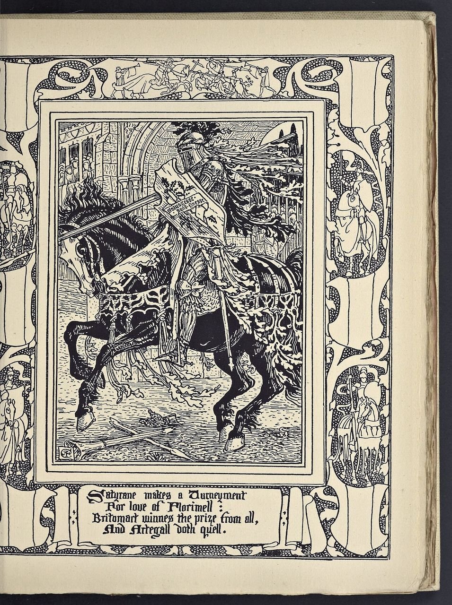
Britomart winnes the prize from allWalter Crane, 1895–97 · canto-head, George Allen edition
❧
Satyrane makes a Turneyment For love of Florimell: Britomart winns the prize from all, And Artegal doth quell.
❧
it often false, (as here it erst befell)That mortal foes do turn to faithful frends,And friends profess’d are chaungd to foemen fell:The cause of both, of both their minds depends,And th’end of both likewise of both their ends.For enmity, that of no ill proceeds,But of occasion, with th’occasion ends;And friendship, which a faint affection breedsWithout regard of good, dyes like ill grounded seeds.
iiThat well (me seems) appears, by that of lateTwixt Cambell and Sir Triamond befell,As als by this, that now a new debateStir’d up twixt Scudamour and Paridell,The which by course befalls me here to tell:Who having those two other Knights espiedMarching afore, as ye remember well,Sent forth their Squire to have them both descried,And eke those masked Ladies riding them beside.
iiiWho back returning, told as he had seen,That they were doughty knights of dreaded name;And those two Ladies, their two loves unseen;And therefore wisht them without blot or blame,To let them pass at will, for dread of shame.But Blandamour full of vainglorious spright,And rather stir’d by his discordful Dame,Upon them gladly would have prov’d his might,But that he yet was sore of his late luckless fight.
ivYet nigh approaching, he them foul bespake,Disgracing them, him self thereby to grace,As was his wont, so weening way to makeTo Ladies love, where so he came in place,And with lewd termes their lovers to deface.Whose sharpe provokement them incenst so sore,That both were bent t’avenge his usage base,And gan their shields address themselves afore:For evil deeds may better than bad words be bore.
vBut fair Cambina with perswasions mild,Did mitigate the fierceness of their mode,That for the present they were reconcyld,And gan to treat of deeds of arms abroad,And strange adventures, all the way they rode:Amongst the which they told, as then befell,Of that great turney, which was blazed broad,For that rich girdle of fair Florimell,The prize of her, which did in beauty most excel.
viTo which folk-mote they all with one consent,Sith each of them his Lady had him by,Whose beauty each of them thought excellent,Agreed to travel, and their fortunes try.So as they passed forth, they did espyOne in bright arms, with ready spear in rest,That toward them his course seem’d to apply,Gainst whom Sir Paridell himself addrest,Him weening, ere he nigh approach’d to have repress’d.
viiWhich th’other seeing, gan his course relent,And vaunted spear eftsoons to disaduaunce,As if he naught but peace and pleasure ment,Now falne into their fellowship by chance,Whereat they showed courteous countenance.So as he rode with them accompanied,His roving eye did on the Lady glance,Which Blandamour had riding by his side:Whom sure he wend, that he some where tofore had eide.
viiiIt was to weet that snowy Florimell,Which Ferrau late from Braggadochio won,Whom he now seeing, her remember’d well,How having reft her from the witches son,He soon her lost: wherefore he now begunTo challenge her anew, as his own prize,Whom formerly he had in battle won,And proffer made by force her to reprise,Which scornful offer, Blandamour gan soon despise.
ixAnd said, Sir Knight, sith ye this Lady clame,Whom he that hath, were loth to lose so light,(For so to lose a Lady, were great shame)Yea shall her winn, as I have done in fight:And lo she shall be placed here in sight,Together with this Hag beside her set,That who so winns her, may her have by right:But he shall have the Hag that is ybet,And with her always ride, till he another get.
xThat offer pleased all the company,So Florimell with Ate forth was brought,At which they all gan laugh full merrily:But Braggadochio said, he never thoughtFor such an Hag, that seemed worse than nought,His person to emperill so in fight.But if to match that Lady they had soughtAnother like, that were like fair and bright,His life he then would spend to justify his right.
xiAt which his vain excuse they all gan smile,As scorning his unmanly cowardize:And Florimell him foully gan revile,That for her sake refus’d to enterpriseThe battle, offer’d in so knightly wiz.And Ate eke provokt him privily,With love of her, and shame of such mesprize.But naught he car’d for friend or enemy,For in base mind nor friendship dwells nor enmity.
xiiBut Cambell thus did shut up all in jest,Brave Knights and Ladies, certes ye do wrongTo stire up strife, when most us needeth rest,That we may us reserve both fresh and strong,Against the Turneiment which is not long.When who so list to fight, may fight his fill,Till then your challenges ye may prolong;And then it shall be tried, if ye will,Whether shall have the Hag, or hold the Lady still.
xiiiThey all agreed, so turning all to game,And pleasant bord, they past forth on their way,And all that while, where so they rode or came,That masked Mock-knight was their sport and play.Till that at length upon th’appointed day,Unto the place of turneyment they came;Where they before them found in fresh arrayMani a brave knight, and mani a dainty dameAssembled, for to get the honour of that game.
xivThere this fair crewe arriving, did divideThemselves asunder: Blandamour with thoseOf his, on th’one; the rest on th’other side.But boastful Braggadocchio rather chose,For glory vain their fellowship to lose,That men on him the more might gaze alone.The rest themselves in troupes did else dispose,Like as it seemed best to every one;The knights in couples march’d, with ladies linckt at one.
xvThen first of all forth came Sir Satyrane,Bearing that precious relic in an arkOf gold, that bad eyes might it not prophane:Which drawing softly forth out of the dark,He open show’d, that all men it mote mark.A gorgeous girdle, curiously embostWith pearl and precious stone, worth many a mark;Yet did the workmanship fare pass the cost:It was the same, which lately Florimel had lost.
xviThat same aloft he hung in open view,To be the prize of beauty and of might;The which eftsoons discovered, to it drewThe eyes of all, allur’d with close delight,And hearts quite robbed with so glorious sight,That all men threw out vows and wishes vain.Thrice happy Lady, and thrice happy knight,Them seem’d that could so goodly riches gain,So worthy of the peril, worthy of the pain.
xviiThen toke the bold Sir Satyrane in handAn huge great spear, such as he wont to wield,And vauncing forth from all the other bandOf knights, addrest his maiden-headed shield,Shewing him self all ready for the field.Gainst whom there singled from the other sideA Painim knight, that well in arms was skild,And had in many a battle oft been tried,Hight Bruncheval the bold, who fiersly forth did ride.
xviiiSo furiously they both together met,That neither could the others force sustain;As two fierce Bulse, that strive the rule to getOf all the heard, meet with so hideous main,That both rebutted, tumble on the plain:So these two champions to the ground were feld,Where in a maze they both did long remain,And in their hands their idle troncheons held,Which neither able were to wag, or once to weld.
xixWhich when the noble Ferramont espied,He pricked forth in aid of Satyran;And him against Sir Blandamour did rideWith all the strength and stiffness that he can.But the more strong and stiffly that he ran,So much more sorely to the ground he fell,That on an heap were tumbled horse and man.Unto whose rescue forth rode Paridell;But him likewise with that same spear he eke did quell.
xxWhich Braggadocchio seeing, had no willTo hasten greatly to his parties aid,Albee his turn were next; but stood there still,As one that seemed doubtful or dismay’d.But Triamond half wroth to see him staid,Sternly stept forth, and raught away his spear,With which so sore he Ferramont assay’d,That horse and man to ground he quite did bear,That neither could in hast themselves again uprear.
xxiWhich to avenge, Sir Devon him did dight,But with no better fortune then the rest:For him likewise he quickly down did smite,And after him Sir Douglas him addrest,And after him Sir Paliumord forth prest,But none of them against his strokes could stand,But all the more, the more his praise increst.For either they were left upon the land,Or went away sore wounded of his hapless hand.
xxiiAnd now by this, Sir Satyrane abraid,Out of the swoon, in which too long he lay;And looking round about, like one dismay’d,When as he saw the merciless affray,Which doughty Triamond had wrought that day,Unto the noble Knights of Maidenhead,His mighty heart did almost rend in tway,For very gall, that rather wholly deadHimself he wisht have been, then in so bad a stead.
xxiiiEftsoons he gan to gather up aroundHis weapons, which lay scattered all abroad,And as it fell, his steed he ready found.On whom remounting, fiercely forth he rode,Like spark of fire that from the andvile glode,There where he saw the valiant TriamondChasing, and laying on them heavy lode.That none his force were able to withstond,So dreadful were his strokes, so deadly was his hond.
xxivWith that at him his beamlike spear he aimed,And thereto all his power and might applied:The wicked steel for mischief first ordained,And having now misfortune got for guide,Staid not, till it arrived in his side,And therein made a very grisly wound,That streams of blood his armour all bedide.Much was he daunted with that direful stound,That scars he him upheld from falling in a sound.
xxvYet as he might, himself he soft withdrewOut of the field, that none perceiv’d it plain,Then gan the part of Challengers anewTo range the field, and victorlike to rain,That none against them battle durst maintain.By that the gloomy evening on them fell,That forced them from fighting to refrain,And trumpets sound to cease did them compel,So Satyrane that day was judg’d to bear the bell.
xxviThe morrow next the Turney gan anew,And with the first the hardy SatyraneAppear’d in place, with all his noble crew,On th’other side, full many a warlike swain,Assembled were, that glorious prize to gain.But mongst them all, was not Sir Triamond,Unable he new battle to darraine,Through grievance of his late received wound,That doubly did him grieve, when so himself he found.
xxviiWhich Cambell seeing, though he could not salue,Ne done undo, yet for to salue his name,And purchase honour in his friends behalue,This goodly counterfesaunce he did frame.The shield and arms well known to be the same,Which Triamond had worn, unwares to wight,And to his friend unwist, for doubt of blame,If he misdid, he on himself did dight,That none could him discern, and so went forth to fight.
xxviiiThere Satyrane Lord of the field he found,Triumphing in great joy and jollity;Gainst whom none able was to stand on ground;That much he gan his glory to envy,And cast t’avenge his friends indignity.A mighty spear eftsoons at him he bent;Who seeing him come on so furiously,Met him mid-way with equal hardiment,That forcibly to ground they both together went.
xxixThey up again themselves can lightly rear,And to their tried swords themselves betake;With which they wrought such wondrous marvels there,That all the rest it did amazed make,Ne any dar’d their peril to partake;Now cuffling close, now chacing to and fro,Now hurtling round advantage for to take:As two wild Boars together grappling go,Chaufing and foaming choler each against his fo.
xxxSo as they courst, and turney’d here and there,It chanc’d Sir Satyrane his steed at last,Whether through found’ring or through sodein fearTo stumble, that his rider nigh he cast;Which vauntage Cambell did pursue so fast,That ere him self he had recovered well,So sore he sowst him on the compast crest,That forced him to leave his lofty sell,And rudely tumbling down under his horse feet fell.
xxxiLightly Cambello leapt down from his steed,For to have rent his shield and arms away,That whilom wont to be the victors meed;When all unwares he felt an hideous swayOf many swords, that lode on him did lay.An hundred knights had him enclosed round,To rescue Satyrane out of his pray;All which at once huge strokes on him did pound,In hope to take him prisoner, where he stood on ground.
xxxiiHe with their multitude was nought dismay’d,But with stout courage turn’d upon them all,And with his brondiron round about him laid;Of which he dealt large almes, as did befall:Like as a Lion that by chance doth fallInto the hunters toil, doth rage and rore,In royal heart disdaining to be thrall.But all in vain: for what might one do more?They have him taken captive, though it grieve him sore.
xxxiiiWhereof when news to Triamond was brought,There as he lay, his wound he soon forgot,And starting up, straight for his armour sought:In vain he sought; for there he found it not;Cambello it away before had got:Cambelloes arms therefore he on him threw,And lightly issewd forth to take his lot.There he in troupe found all that warlike crew,Leading his friend away, full sori to his view.
xxxivInto the thickest of that knightly pressHe thrust, and smote down all that was between,Caried with fervent zeal, ne did he cesse,Till that he came, where he had Cambell seen,Like captive thrall two other Knights atween,There he amongst them cruel havocke makes,That they which lead him, soon enforced beenTo let him loose, to save their proper stakes,Who being freed, from one a weapon fiercely takes.
xxxvWith that he drives at them with dreadful might,Both in remembrance of his friends late harm,And in revengement of his own despite,So both together give a new alarm,As if but now the battle wexed warm.As when two greedy Wolves do break by forceInto an heard, fare from the husband farm,They spoil and ravine without all remorse,So did these two through all the field their foes enforce.
xxxviFiercely they follow’d on their bold emprise,Till trumpets sound did warne them all to rest;Then all with one consent did yield the prizeTo Triamond and Cambell as the best.But Triamond to Cambell it relest.And Cambell it to Triamond transfer’d;Each labouring t’aduance the others gest,And make his praise before his own prefer’d:So that the dome was to another day differ’d.
xxxviiThe last day came, when all those knights againAssembled were their deeds of arms to show.Full many deeds that day were showed plain:But Satyrane bovey all the other crew,His wondrous worth declared in all mens view.For from the first he to the last endured,And though some while Fortune from him withdrew,Yet evermore his honour he recured,And with unwearied power his party still assured.
xxxviiiNe was there Knight that ever thought of arms,But that his utmost prowess there made known,That by their many wounds, and carless harms,By shivered spears, and swords all under strowen,By scattered shields was easy to be shown.There might ye see loose steeds at randon rone,Whose luckless riders late were overthrowen;And squiers make hast to help their Lords fordone,But still the Knights of Maidenhead the better won.
xxxixTill that there enter’d on the other side,A stranger knight, from whence no man could reed,In quyent disguise, full hard to be descried.For all his armour was like salvage weed,With woody moss bedight, and all his steedWith oaken leaves attrapt, that seemed fitFor salvage wight, and thereto well agreedHis word, which on his ragged shield was writ,Salvagesse sans finesse, shewing secret wit.
xlHe at his first incoming, charg’d his spereAt him, that first appeared in his sight:That was to weet, the stout Sir Sangliere,Who well was known to be a valiant Knight,Approved oft in many a perlous fight.Him at the first encounter down he smote,And overbore beyond his crouper quite,And after him another Knight, that hoteSir Brianor, so sore, that none him life behote.
xliThen ere his hand he rear’d, he overthrewSeven Knights one after other as they came:And when his spear was brust, his sword he drew,The instrument of wrath, and with the sameFar’d like a lyon in his bloody game,Hewing, and slashing shields, and helmets bright,And beating down, what ever nigh him came,That every one gan shun his dreadful sight,No less than death it self, in dangerous affright.
xliiMuch wonder’d all men, what, or whence he came,That did amongst the troupes so tyrannize;And each of other gan inquire his name.But when they could not learn it by no wiz,Most answerable to his wild disguiseIt seemed, him to term the salvage knight.But certes his right name was otherwise,Though known to few, that Arthegall he hight,The doughtiest knight that liv’d that day, and most of might.
xliiiThus was Sir Satyrane with all his bandBy his sole manhood and achievement stoutDismay’d, that none of them in field durst stand,But beaten were, and chased all about.So he continued all that day throughout,Till evening, that the Sun gan downward bend.Then rushed forth out of the thickest routA stranger knight, that did his glory shend:So nought may be esteemed happy till the end.
xlivHe at his entrance charg’d his powerful spearAt Artegall, in middest of his pride,And therewith smote him on his UmbriereSo sore, that tombling back, he down did slideOver his horses tail above a stride;Whence little lust he had to rise again.Which Cambell seeing, much the same ennuied,And ran at him with all his might and main;But shortly was likewise seen lying on the plain.
xlvWhereat full inly wroth was TriamondAnd cast t’avenge the shame doen to his friend:But by his friend himself eke soon he fond,In no less need of help, then him he wend.All which when Blandamour from end to endBeheld, he woxe therewith displeased sore,And thought in mind it shortly to amend:His spear he feutred, and at him it bore;But with no better fortune, then the rest afore.
xlviFull many others at him likewise ran:But all of them likewise dismounted were,Ne certes wonder; for no power of manCould bide the force of that enchanted spear,The which this famous Britomart did bear;With which she wondrous deeds of arms achieved,And overthrew, what ever came her near,That all those stranger knights full sore aggrieved,And that late weaker band of challengers relieved.
xlviiLike as in sommers day when raging heatDoth burn the earth, and boiled rivers dry,That all brute beasts forc’d to refrain fro meat,Do hunt for shade, where shrowded they may lie,And missing it, fain from themselves to fly;All travellers tormented are with pain:A wat’ry cloud doth overcast the ski,And poureth forth a sudden shower of rain,That all the wretched world recomforteth again.
xlviiiSo did the warlike Britomart restoreThe prize, to knights of Maidenhead that day,Which else was like to have been lost, and boreThe prays of prowess from them all away.Then shrilling trompets loudly gan to bray,And bad them leave their labours and long toil,To joyous feast and other gentle play,Where beauties prize should win that precious spoil:Where I with sound of trompe will also rest a while.
Booke IV · Friendship
Canto V
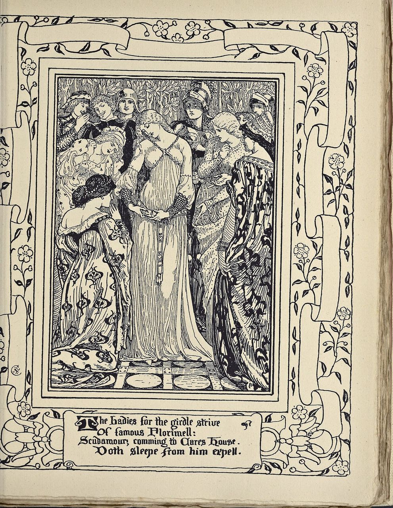
The Ladies for the girdle strive of famous FlorimellWalter Crane, 1895–97 · canto-head, George Allen edition
❧
The Ladies for the girdle strive of famous Florimell: Scudamore coming to Cares house, doth sleep from him expel.
❧
it hath been through all ages ever seen,That with the praise of arms and chevalrie,The prize of beauty still hath joined been;And that for reasons special privity:For either doth on other much rely.For he me seems most fit the fair to serve,That can her best defend from villenie;And she most fit his service doth deserve,That fairest is and from her faith will never swerve.
iiSo fitly now here cometh next in place,After the proof of prowess ended well,The controverse of beauties sovereign grace;In which to her that doth the most excel,Shall fall the girdle of fair Florimell:That many wish to win for glory vain,And not for virtuous use, which some do tellThat glorious belt did in it self contain,Which Ladies ought to love, and seek for to obtain.
iiiThat girdle gave the virtue of chaste love,And wivehood true, to all that did it bear;But whosoever contrary doth prove,Might not the same about her middle wear,But it would loose, or else a sunder tear.Whilom it was (as Faeries wont report)Dame Venus girdle, by her steamed dear,What time she us’d to live in wively sort;But laid aside, when so she us’d her looser sport.
ivHer husband Vulcan whilom for her sake,When first he loved her with heart entire,This precious ornament they say did make,And wrought in Lemno with unquenched fire:And afterwards did for her loves first hire,Give it to her, for ever to remain,Therewith to bind lascivious desire,And loose affections streightly to restrain;Which virtue it for ever after did retain.
vThe same one day, when she her self dispos’dTo visite her beloved Paramour,The God of war, she from her middle loos’d,And left behind her in her secret bower,On Acidalian mount, where many an hourShe with the pleasant Graces wont to play.There Florimell in her first ages flowerWas fostered by those Graces, (as they say)And brought with her from thence that goodly belt away.
viThat goodly belt was Cestus hight by name,And as her life by her esteemed dear.No wonder than, if that to winn the sameSo many Ladies sought, as shall appear;For peerless she was thought, that did it bear.And now by this their feast all being ended,The judges which thereto selected were,Into the Martian field adown descended,To deem this doutfull case, for which they all contended.
viiBut first was question made, which of those KnightsThat lately turney’d, had the wager won:There was it judged by those worthy wights,That Satyrane the first day best had donne:For he last ended, having first begone.The second was to Triamond behight,For that he sav’d the victor from fordone:For Cambell victor was in all mens sight,Till by mishap he in his foemens hand did light.
viiiThe third days prize unto that stranger Knight,Whom all men term’d Knight of the Heben spear,To Britomart was given by good right;For that with puissant stroke she down did bearThe Salvage Knight, that victor was whilere,And all the rest, which had the best afore,And to the last unconquer’d did appear;For last is deemed best. To her thereforeThe fairest Lady was adiudgd for Paramour.
ixBut thereat greatly grudged Arthegall,And much repynd, that both of victors meed,And eke of honour she did him forestall.Yet mote he not withstand, what was decreed;But inly thought of that despightfull deedFit time t’awaite avenged for to be.This being ended thus, and all agreed,Then next ensue’d the Paragon to seeOf beauties praise, and yield the fairest her due fee.
xThen first Cambello brought unto their viewHis fair Cambina, covered with a veal;Which being once withdrawn, most perfect hueAnd passing beauty did eftsoons reveal,That able was weak hearts away to steale.Next did Sir Triamond unto their sightThe face of his dear Canacee unheal;Whose beauties beam eftsoons did shine so bright,That daz’d the eyes of all, as with exceeding light.
xiAnd after her did Paridell produceHis false Duessa, that she might be seen,Who with her forged beauty did seduceThe hearts of some, that fairest her did ween;As diverse wits affected divers been.Then did Sir Ferramont unto them showHis Lucida that was full fair and sheen,And after these an hundred Ladies moeAppear’d in place, the which each other did outgo.
xiiAll which who so dare think for to enchase,Him needeth sure a golden pen I ween,To tell the feature of each goodly face.For since the day that they created been,So many heavenly faces were not seenAssembled in one place: ne he that thoughtFor Chian folk to pourtraict beauties Queen,By view of all the fairest to him brought,So many fair did see, as here he might have sought.
xiiiAt last the most redoubted Britonesse,Her lovely Amoret did open show;Whose face discovered, plainly did expressThe heavenly pourtraict of bright Angels hue.Well weened all, which her that time did view,That she should surely bear the bell away,Till Blandamour, who thought he had the trowAnd very Florimell, did her display:The sight of whom once seen did all the rest dismay.
xivFor all afore that seemed fayre and bright,Now base and contemptible did appear,Compar’d to her, that shone as Phebes light,Amongst the lesser starrs in evening clear.All that her saw with wonder ravisht wear,And wend no mortal creature she should be,But some celestial shape, that flesh did bear:Yet all were glad there Florimell to see;Yet thought that Florimell was not so fair as she.
xvAs guileful Goldsmith that by secret skill,With golden foil doth finely over spreadSome baser metal, which commend he willUnto the vulgar for good gold instead,He much more goodly gloss thereon doth shed,To hide his falshood, then if it were trow:So hard, this Idol was to be ared,That Florimell her self in all mens viewShe seem’d to pass: so forged things do fairest show.
xviThen was that golden belt by dome of allGranted to her, as to the fairest Dame.Which being brought, about her middle smallThey thought to gird, as best it her became;But by no means they could it thereto frame.For ever as they fasten’d it, it loos’dAnd fell away, as feeling secret blame.Full oft about her wast she it enclos’d;And it as oft was from about her wast disclos’d.
xviiThat all men wonder’d at the uncouth sight,And each one thought, as to their fancies came.But she her self did think it doen for spite,And touched was with secret wrath and shameTherewith, as thing devise’d her to defame.Then many other Ladies likewise tried,About their tender loins to knit the same;But it would not on none of them abide,But when they thought it fast, eftsoons it was untied.
xviiiWhich when that scornful Squire of Dames did view,He lowdly gan to laugh, and thus to jest;Alas for pity that so fair a crew,As like can not be seen from East to West,Cannot find one this girdle to invest.Fie on the man, that did it first invent,To shame us all with this, Ungirt unblest.Let never Lady to his love assent,That hath this day so many so unmanly shent.
xixThereat all Knights gan laugh, and Ladies lower:Till that at last the gentle AmoretLikewise assay’d, to prove that girdles power;And having it about her middle set,Did find it fit, withouten breach or let.Whereat the rest gan greatly to envy:But Florimell exceedingly did fret,And snatching from her hand half angrilyThe belt again, about her body gan it tie.
xxYet nathemore would it her body fit;Yet nathless to her, as her dew right,It yielded was by them, that judged it:And she her self adjudged to the Knight,That bore the Heben spear, as won in fight.But Britomart would not thereto assent,Ne her own Amoret forgo so lightFor that strange Dame, whose beauties wondermentShe less esteem’d, then th’others virtuous government.
xxiWhom when the rest did see her to refuse,They were full glad, in hope themselves to get her:Yet at her choice they all did greatly muse.But after that the Judges did aret herUnto the second best, that lou’d her better;That was the Salvage Knight: but he was goneIn great displeasure, that he could not get her.Then was she judged Triamond his one;But Triamond lou’d Canacee, and other none.
xxiiTho unto Satyran she was adjudged,Who was right glad to gain so goodly meed:But Blandamour thereat full greatly grudged,And little prays’d his labours evil speed,That for to winn the saddle, lost the steed.Ne less thereat did Paridell complain,And thought t’appeale from that, which was decreed,To single combat with Sir Satyrane.Thereto him Ate stir’d, new discord to maintain.
xxiiiAnd eke with these, full many other KnightsShe through her wicked working did incense,Her to demand, and challenge as their rights,Deserved for their perils recompense.Amongst the rest with boastful vain pretenseStept Braggadochio forth, and as his thrallHer claim’d, by him in battle won long sens:Whereto her self he did to witness call;Who being ask’d, accordingly confessed all.
xxivThereat exceeding wroth was Satyran;And wroth with Satyran was Blandamour;And wroth with Blandamour was Erivan;And at them both Sir Paridell did loure.So all together stir’d up strifull stour,And ready were new battle to darraine.Each one profess’d to be her paramour,And vow’d with spear and shield it to maintain;Ne Judges power, ne reasons rule mote them restrains.
xxvWhich troublous stire when Satyrane aviz’d,He gan to cast how to appease the same,And to accord them all, this means devise’d:First in the midst to set that fairest Dame,To whom each one his challenge should disclame,And he himself his right would eke release:Then loke to whom she voluntary came,He should without disturbance her possess:Sweet is the love that comes alone with willingness.
xxviThey all agreed, and then that snowy MaidWas in the middest plac’d among them all;All on her gazing wisht, and vow’d, and pray’d,And to the Queen of beauty close did call,That she unto their portion might befall.Then when she long had look’d upon each one,As though she wished to have pleas’d them all,At last to Braggadochio self aloneShe came of her accord, in spite of all his fone.
xxviiWhich when they all beheld they chaft and rag’d,And woxe nigh mad for very hearts despite,That from revenge their wills they scars asswag’d:Some thought from him her to have reft by might;Some proffer made with him for her to fight.But he nought car’d for all that they could say:For he their words as wind esteemed light.Yet not fit place he thought it there to stay,But secretly from thence that night her bore away.
xxviiiThey which remain’d, so soon as they perceiv’d,That she was gone, departed thence with speed,And follow’d them, in mind her to have reav’dFrom wight unworthy of so noble meed.In which poursuit how each one did succeed,Shall else be told in order, as it fell.But now of Britomart it here doth need,The hard adventures and strange haps to tell;Since with the rest she went not after Florimell.
xxixFor soon as she them saw to discord set,Her list no longer in that place abide;But taking with her lovely Amoret,Upon her first adventure forth did ride,To seek her lou’d, making blind love her guide.Unlucky Maid to seek her enemy,Unlucky Maid to seek him fare and wide,Whom, when he was unto her self most nie,She through his late disguisement could him not descry.
xxxSo much the more her grief, the more her toil:Yet neither toil nor grief she once did spare,In seeking him, that should her pain assoil;Whereto great comfort in her sad misfareWas Amoret, companion of her care:Who likewise sought her lover long miswent,The gentle Scudamour, whose heart whilereThat stryfull hag with gealous discontentHad fil’d, that he to fell revenge was fully bent.
xxxiBent to revenge on blameless BritomartThe crime, which cursed Ate kindled erst,The which like thorns did prick his gealous heart,And through his soul like poysned arrow pierc’d,That by no reason it might be reverst,For ought that Glauce could or do or say.For aye the more that she the same reherst,The more it gaul’d, and griev’d him night and day,That nought but dire revenge his anger mote defray.
xxxiiSo as they travelled, the drooping nightCovered with cloudy storm and bitter shower,That dreadful seem’d to every living wight,Upon them fell, before her timely hour;That forced them to seek some covert bower,Where they might hide their heads in quiet rest,And shrowd their persons from that stormy stowre.Not fare away, not meet for any guestThey spied a little cottage, like some poor mans nest.
xxxiiiUnder a steep hills side it placed was,There where the moulder’d earth had cav’d the bank;And fast beside a little brooke did pasOf muddy water, that like puddle stank,By which few crooked sallows grew in rank:Whereto approaching nigh, they heard the soundOf many iron hammers beating rank,And answering their weary turns around,That seemed some blacksmith dwelt in that desert ground.
xxxivThere ent’ring in, they found the goodman self,Full busily unto his work ybent;Who was to weet a wretched wearish elf,With hollow eyes and rawbone cheeks forspent,As if he had in prison long been pent:Full black and grisly did his face appear,Besmear’d with smoke that nigh his eye-sight blent;With rugged beard, and hoary shagged hear,The which he never wont to combe, or comely shear.
xxxvRude was his garment, and to rags all rent,Ne better had he, ne for better cared:With blister’d hands amongst the cinders brent,And fingers filthy, with long nails unpared,Right fit to rend the food, on which he fared.His name was Care; a blacksmith by his trade,That neither day nor night from working spared,But to small purpose iron wedges made;Those be unquiet thoughts, that careful minds invade.
xxxviIn which his work he had six servants prest,About the Andvile standing evermore,With huge great hammers, that did never restFrom heaping stroakes, which thereon soused sore:All six strong grooms, but one then other more;For by degrees they all were disagreed;So likewise did the hammers which they bore,Like belles in greatness orderly succeed,That he which was the last, the first did fare exceed.
xxxviiHe like a monstrous Giant seem’d in sight,Fare passing Bronteus, or Pyracmon great,The which in Lipari do day and nightFrame thunderbolts for Joves avengeful threat.So dreadfully he did the andvile beat,That seem’d to dust he shortly would it drive:So huge his hammer and so fierce his heat,That seem’d a rock of Diamond it could rive,And rend a sunder quite, if he thereto list strive.
xxxviiiSir Scudamour there ent’ring, much admiredThe manner of their work and weary pain;And having long beheld, at last enquiredThe cause and end thereof: but all in vain;For they for nought would from their work refrain,Ne let his speeches come unto their ear.And eke the breathful bellows blew amain,Like to the Northren wind, that none could hear:Those Pensifenesse did move; and Sighes the bellows wear.
xxxixWhich when that warrior saw, he said no more,But in his armour laid him down to rest:To rest he laid him down upon the flor,(Whilom for ventrous Knights the bedding best)And thought his weary limbs to have redress’d.And that old aged Dame, his faithful Squire,Her feeble joints laid eke a down to rest;That needed much her weak age to desire,After so long a travel, which them both did tire.
xlThere lay Sir Scudamour long while expecting,When gentle sleep his heavy eyes would close;Oft changing sides, and oft new place electing,Where better seem’d he mote himself repose;And oft in wrath he thence again uprose;And oft in wrath he laid him down again.But wheresoever he did himself dispose,He by no means could wished ease obtain:So every place seem’d painful, and eche changing vain.
xliAnd evermore, when he to sleep did think,The hammers sound his senses did molest;And evermore, when he began to wink,The bellows noys disturb’d his quiet rest,Ne suffer’d sleep to settle in his breast.And all the night the dogs did bark and howlAbout the house, at sent of stranger guest:And now the crowing Cock, and now the OwlLowde shriking him afflicted to the very sowle.
xliiAnd if by fortune any little napUpon his heavy eye-lids chanc’d to fall,Eftsoons one of those villeins him did rapUpon his headpiece with his iron mall;That he was soon awaked therewithal,And lightly started up as one afraid;Or as if one him suddenly did call.So oftentimes he out of sleep abraid,And then lay musing long, on that him ill apayd.
xliiiSo long he mused, and so long he lay,That at the last his weary sprite oppress’dWith fleshly weakness, which no creature mayLong time resist, gave place to kindly rest,That all his senses did full soon arrest:Yet in his soundest sleep, his daily fearHis idle braine gan busily molest,And made him dream those two disloyal were:The things that day most minds, at night do most appear.
xlivWith that, the wicked carle the maister SmithA pair of redwhot iron tongues did takeOut of the burning cinders, and therewithUnder his side him nipt, that forc’d to wake,He felt his heart for very pain to quake,And started up avenged for to beOn him, the which his quiet slumber brake:Yet looking round about him none could see;Yet did the smart remain, though he himself did flee.
xlvIn such disquiet and hartfretting payne,He all that night, that too long night did pass.And now the day out of the Ocean mainBegan to peep above this earthly mass,With pearly dew sprinkling the morning grass:Then up he rose like heavy lump of lead,That in his face, as in a looking glass,The signs of anguish one mote plainly read,And guess the man to be dismay’d with gealous dread.
xlviUnto his lofty steed he clomb anon,And forth upon his former voiage fared,And with him eke that aged Squire at one;Who whatsoever peril was prepared,Both equal pains and equal peril shared:The end whereof and dangerous eventShall for another canticle be spared.But here my weary teem nigh over spentShall breath it self awhile, after so long a went.
Booke IV · Friendship
Canto VI
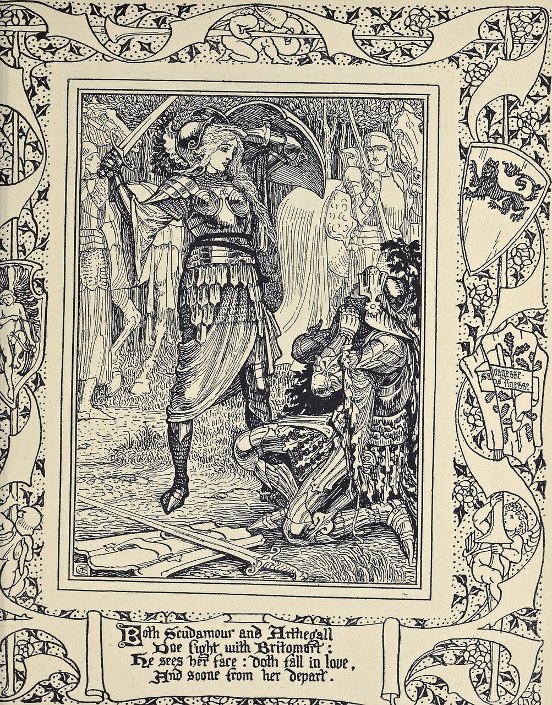
Artegall kneels to the unveiled BritomartWalter Crane, 1895–97 · canto-head, George Allen edition
❧
Both Scudamore and Arthegall Do fight with Britomart, He sees her face; doth fall in love, and soon from her depart.
❧
ihat equal torment to the grief of mind,And pyning anguish hid in gentle heart,That inly feeds it self with thoughts unkind,And nourisheth her own consuming smart?What medicine can any Leaches artYield such a sore, that doth her grievance hide,And will to none her malady impart?Such was the wound that Scudamour did gride;For which Dan Phebus self cannot a salue provide.
iiWho having left that restless house of Care,The next day, as he on his way did ride,Full of melancholy and sad misfare,Through misconceipt; all unawares espiedAn armed Knight under a forrest side,Sitting in shade beside his grazing steed;Who soon as them approaching he descried,Gan towards them to prick with eger speed,That seem’d he was full bent to some mischievous deed.
iiiWhich Scudamour perceiving, forth issewedTo have rencounter’d him in equal race;But soon as th’other nigh approaching, vewedThe arms he bore, his spear he gan abase,And void his course: at which so suddain caseHe wonder’d much. But th’other thus can say;Ah gentle Scudamour, unto your graceI me submit, and you of pardon pray,That almost had against you trespassed this day.
ivWhereto thus Scudamour, Small harm it wereFor any knight, upon a ventrous knightWithout displeasance for to prove his spere.But reade you Sir, sith ye my name have hight,What is your own, that I mote you requite.Certes (said he) ye mote as now excuseMe from discovering you my name aright:For time yet serves that I the same refuse,But call ye me the Salvage Knight, as others use.
vThen this, Sir Salvage Knight (quoth he) arreede;Or do you here within this forrest won,That seemeth well to answer to your weed?Or have ye it for some occasion donne?That rather seems, sith known arms ye shone.This other day (said he) a stranger knightShame and dishonour hath unto me donne;On whom I waite to wreak that foul despite,When ever he this way shall pass by day or night.
viShame be his meed (quoth he) that meaneth shame,But what is he, by whom ye shamed were?A stranger knight, said he, unknown by name,But known by fame, and by an Heben spear,With which he all that met him, down did bear.He in an open Turney lately held,Fro me the honour of that game did rear;And having me all weary erst, down feld,The fairest Lady reft, and ever since withheld.
viiWhen Scudamour heard mention of that spear,He wist right well, that it was Britomart,The which from him his fairest love did bear.Tho gan he swell in every inner part,For fell despite, and gnaw his gealous heart,That thus he sharply said; Now by my head,Yet is not this the first unknightly part,Which that same knight, whom by his launce I read,Hath doen to noble knights, that many makes him dread.
viiiFor lately he my love hath fro me reft,And eke defiled with foul villanyThe sacred pledge, which in his faith was left,In shame of knighthood and fidelity;The which ere long full dear he shall aby.And if to that avenge by you decreedThis hand may help, or succour ought supply,It shall not fail, when so ye shall it need.So both to wreak their wraths on Britomart agreed.
ixWhiles thus they communed, lo fare awayA Knight soft riding towards them they spied,Attire’d in forraine arms and strange array:Whom when they nigh approach’d, they plain descriedTo be the same, for whom they did abide.Said then Sir Scudamour, Sir Salvage knightLet me this crave, sith first I was defied,That first I may that wrong to him requite:And if I hap to fail, you shall recure my right.
xWhich being yielded, he his threatful spearGan fewter, and against her fiercely ran.Who soon as she him saw approaching nearWith so fell rage, her self she lightly ganTo dight, to welcome him, well as she can:But entertain’d him in so rude a wise,That to the ground she smote both horse and man;Whence neither greatly hasted to arise,But on their common harms together did devise.
xiBut Artegall beholding his mischance,New matter added to his former fire;And eft aventring his steeleheaded launce,Against her rode, full of despiteous ire,That nought but spoil and vengeance did require.But to himself his felonous intentReturning, disappointed his desire,Whiles unawares his saddle he forwent,And found himself on ground in great amazement.
xiiLightly he started up out of that stound,And snatching forth his direful deadly blade,Did leap to her, as doth an eger houndThrust to an Hind within some covert glade,Whom without peril he cannot invade.With such fell greediness he her assailed,That though she mounted were, yet he her madeTo give him ground, (so much his force prevailed)And shun his mighty strokes, gainst which no arms availed.
xiiiSo as they coursed here and there, it chanc’dThat in her wheeling round, behind her crestSo sorely he her stroke, that thence it glanc’dAdown her back, the which it fairly blestFrom foul mischance; ne did it ever rest,Till on her horses hinder parts it fell;Where biting deep, so deadly it imprest,That quite it chynd his back behind the sell,And to alight on foot her algates did compel.
xivLike as the lightning brand from riven ski,Thrown out by angry Jove in his vengeance,With dreadful force falls on some steeple hie;Which batt’ring, down it on the church doth glance,And tears it all with terrible mischance.Yet she no whit dismay’d, her steed forsook,And casting from her that enchanted lance,Unto her sword and shield her soon betook;And therewithal at him right furiously she stroke.
xvSo furiously she stroke in her first heat,Whiles with long fight on foot he breathless was,That she him forced backward to retreat,And yield unto her weapon way to pas:Whose raging rigour neither steel nor brasCould stay, but to the tender flesh it went,And pour’d the purple blood forth on the graz;That all his maile yriv’d, and plates yrent,Show’d all his body bare unto the cruel dent.
xviAt length when as he saw her hasty heatAbate, and panting breath begin to fail,He through long sufferance growing now more great,Rose in his strength, and gan her fresh assail,Heaping huge strokes, as thick as shower of hayle,And lashing dreadfully at every part,As if he thought her soul to disentrail.Ah cruel hand, and thrice more cruel heart,That workst such wreck on her, to whom thou dearest art.
xviiWhat iron courage ever could endure,To work such outrage on so fair a creature?And in his madness think with hands impureTo spoil so goodly workmanship of nature,The maker self resembling in her feature?Certes some hellish fury, or some fiendThis mischief fram’d, for their first loves defeature,To bath their hands in blood of dearest friend,Thereby to make their loves beginning, their lives end.
xviiiThus long they trac’d, and traverst to and fro,Sometimes pursewing, and sometimes pursewed,Still as advantage they espied thereto:But toward th’end Sir Arthegall renewedHis strength still more, but she still more decrewed.At last his luckless hand he heav’d on hie,Having his forces all in one accrewed,And therewith stroke at her so hideously,That seemed nought but death mote be her destiny.
xixThe wicked stroke upon her helmet chanc’d,And with the force, which in it self it bore,Her ventail shard away, and thence forth glanc’dA down in vain, ne harm’d her any more.With that her angels face, unseen afore,Like to the ruddy morne appear’d in sight,Dewed with silver drops, through sweating sore,But somewhat redder, then beseem’d aright,Through toilsome heat and labour of her weary fight.
xxAnd round about the same, her yellow hearHaving through stirring loos’d their wonted band,Like to a golden border did appear,Framed in goldsmiths forge with cunning hand:Yet goldsmiths cunning could not understandTo frame such subtile wire, so shiny clear.For it did glister like the golden sand,The which Pactolus with his waters sher,Throws forth upon the rivage round about him near.
xxiAnd as his hand he up again did rear,Thinking to work on her his utmost wrack,His powerless arm benumb’d with secret fearFrom his revengeful purpose shrunk aback,And cruel sword out of his fingers slackFell down to ground, as if the steel had sense,And felt some ruth, or sense his hand did lack,Or both of them did think, obedienceTo do to so divine a beauties excellence.
xxiiAnd he himself long gazing thereupon,At last fell humbly down upon his knee,And of his wonder made religion,Weening some heavenly goddess he did see,Or else unweeting, what it else might be;And pardon her besought his error frail,That had done outrage in so high degree:Whilst trembling horror did his sense assail,And made eche member quake, and manly heart to quayle.
xxiiiNathless she full of wrath for that late stroke,All that long while upheld her wrathful hand,With fell intent, on him to been ywroke,And looking stern, still over him did stand,Threat’ning to strike, unless he would withstand:And bad him rise, or surely he should die.But die or live for nought he would upstandBut her of pardon pray’d more earnestly,Or wreak on him her will for so great injury.
xxivWhich when as Scudamour, who now abraid,Beheld, whereas he stood not fare aside,He was therewith right wondrously dismay’d,And drawing nigh, when as he plain descriedThat peerless pattern of Dame natures pride,And heavenly image of perfection,He blest himself, as one sore terrified,And turning his fear to faint devotion,Did worship her as some celestial vision.
xxvBut Glauce, seeing all that chanced there,Well weeting how their error to assoil,Full glad of so good end, to them drew near,And her salewd with seemly belaccoyle,Joyous to see her safe after long toil.Then her besought, as she to her was dear,To grant unto those warriors truce a while;Which yielded, they their bevers up did rear,And show’d themselves to her, such as indeed they were.
xxviWhen Britomart with sharpe avizefull eyeBeheld the lovely face of Artegall,Temper’d with sternness and stout majesty,She gan eftsoons it to her mind to call,To be the same which in her fathers hallLong since in that enchanted glass she saw.Therewith her wrathful courage gan appall,And haughty spirits meekly to adaw,That her enhanced hand she down can soft withdraw.
xxviiYet she it forc’d to have again upheld,As faining choler, which was turn’d to cold:But ever when his visage she beheld,Her hand fell down, and would no longer holdThe wrathful weapon gainst his countnance bold:But when in vain to fight she oft assay’d,She arm’d her tongue, and thought at him to scold;Nathless her tongue not to her will obayd,But brought forth speeches mild, when she would have missaid.
xxviiiBut Scudamour now woxen inly glad,That all his gealous fear he false had found,And how that Hag his love abused hadWith breach of faith and loyalty unsound,The which long time his grieved heart did wound,He thus bespake; Certes Sir Artegall,I joy to see you lout so low on ground,And now become to live a Ladies thrall,That whilom in your mind wont to despise them all.
xxixSoon as she heard the name of Artegall,Her heart did leap, and all her heart-strings tremble,For sudden joy, and secret fear withal,And all her vital powers with motion nimble,To succour it, themselves gan there assemble,That by the swift recourse of flushing bloodRight plain appear’d, though she it would dissemble,And fained still her former angry mood,Thinking to hide the depth by troubling of the flood.
xxxWhen Glauce thus gan wisely all upknit;Ye gentle Knights, whom fortune here hath brought,To be spectators of this uncouth fit,Which secret fate hath in this Lady wrought,Against the course of kind, ne meruaile nought,Ne thenceforth fear the thing that hethertooHath troubled both your minds with idle thought,Fearing least she your loves away should woo,Feared in vain, sith means ye see there wants thereto.
xxxiAnd you Sir Artegall, the salvage knight,Henceforth may not disdain, that womans handHath conquered you anew in second fight:For whilom they have conquer’d sea and land,And heaven it self, that nought may them withstand.Ne henceforth be rebellious unto love,That is the crown of knighthood, and the bandOf noble minds derived from above,Which being knit with virtue, never will remove.
xxxiiAnd you fair Lady knight, my dearest Dame,Relent the rigour of your wrathful will,Whose fire were better turn’d to other flame;And wiping out remembrance of all ill,Grant him your grace, but so that he fulfillThe penance, which ye shall to him empart:For lovers heaven must pass by sorrows hell.Thereat full inly blushed Britomart;But Artegall close smiling joy’d in secret heart.
xxxiiiYet durst he not make love so suddenly,Ne think th’affection of her heart to drawFrom one to other so quite contrary:Besides her modest countenance he sawSo goodly grave, and full of princely aw,That it his ranging fancy did refrain,And looser thoughts to lawful bounds withdraw;Whereby the passion grew more fierce and fain,Like to a stubborn steed whom strong hand would restrain.
xxxivBut Scudamour whose heart twixt doubtful fearAnd feeble hope hung all this while suspense,Desiring of his Amoret to hearSome gladful news and sure intelligence,Her thus bespake; But Sir without offenceMote I request you tidings of my love,My Amoret, sith you her freed fro thence,Where she captived long, great woes did prove;That where ye left, I may her seek, as doth behove.
xxxvTo whom thus Britomart, Certes Sir knight,What is of her become, or whether reft,I can not unto you aread a right.For from that time I from enchanters theftHer freed, in which ye her all hopeless left,I her preserv’d from peril and from fear,And evermore from villenie her kept:Ne ever was there wight to me more dearThen she, ne unto whom I more true love did bear.
xxxviTill on a day as through a desert wildWe travelled, both weary of the wayWe did alight, and sate in shadow mild;Where fearless I to sleep me down did lay.But when as I did out of sleep abray,I found her not, where I her left whilere,But thought she wander’d was, or gone astray.I cal’d her loud, I sought her fare and near;But no where could her find, nor tidings of her hear.
xxxviiWhen Scudamour those heavy tidings heard,His heart was thrild with point of deadly fear;Ne in his face or blood or life appear’d,But senseless stood, like to a mazed stear,That yet of mortal stroke the stound doth bear.Till Glauce thus; Fair Sir, be nought dismay’dWith needless dread, till certainty ye hear:For yet she may be safe though somewhat stray’d;Its best to hope the best, though of the worst afraid.
xxxviiiNathless he hardly of her cheerful speechDid comfort take, or in his troubled sightShow’d change of better chere: so sore a breachThat sudden news had made into his spright;Till Britomart him fairly thus behight;Great cause of sorrow certes Sir ye have:But comfort take: for by this heavens lightI vow, you dead or living not to leave,Till I her find, and wreak on him that her did reave.
xxxixTherewith he rested, and well pleased was,So peace being confirm’d amongst them all,They toke their steeds, and forward thence did pasUnto some resting place, which mote befall,All being guided by Sir Artegall.Where goodly solace was unto them made,And daily feasting both in bower and hall,Until that they their wounds well healed had,And weary limes recur’d after late usage bad.
xlIn all which time, Sir Artegall made wayUnto the love of noble Britomart,And with meek service and much suit did layContinual siege unto her gentle heart,Which being whilom launch’d with lovely dart,More eath was new impression to receive,How ever she her payn’d with womanish artTo hide her wound, that none might it perceive:Vain is the art that seeks it self for to deceive.
xliSo well he woo’d her, and so well he wrought her,With fair entreaty and sweet blandishment,That at the length unto a bay he brought her,So as she to his speeches was contentTo lend an ear, and softly to relent.At last through many vows which forth he pour’d,And many oaths, she yielded her consentTo be his love, and take him for her Lord,Till they with marriage meet might finish that accord.
xliiTho when they had long time there taken rest,Sir Artegall, who all this while was boundUpon an hard adventure yet in quest,Fit time for him thence to depart it found,To follow that, which he did long propound;And unto her his congee came to take.But her therewith full sore displeas’d he found,And loth to leave her late betrothed make,Her dearest love full loth so shortly to forsake.
xliiiYet he with strong perswasions her asswaged,And won her will to suffer him depart;For which his faith with her he fast engaged,And thousand vows from bottom of his heart,That all so soon as he by wit or artCould that achieve, whereto he did aspire,He unto her would speedily revert:No longer space thereto he did desire,But till the horned moon three courses did expire.
xlivWith which she for the present was appeased,And yielded leave, how ever malcontentShe inly were, and in her mind displeased.So early in the morrow next he wentForth on his way, to which he was ybent.Ne wight him to attend, or way to guide,As whilom was the custom ancientMongst Knights, when on adventures they did ride,Save that she algates him a while accompanied.
xlvAnd by the way she sundry purpose foundOf this or that, the time for to delay,And of the perils whereto he was bound,The fear whereof seem’d much her to affray:But all she did was but to wear out day.Full oftentimes she leave of him did take;And eft again devise’d some what to say,Which she forgot, whereby excuse to make:So loth she was his company for to forsake.
xlviAt last when all her speeches she had spent,And new occasion fayld her more to find,She left him to his fortunes government,And back returned with right heavy mind,To Scudamour, who she had left behind,With whom she went to seek fair Amoret,Her second care, though in another kind;For virtues only sake, which doth begetTrue love and faithful friendship, she by her did set.
xlviiBack to that desert forrest they retired,Where sori Britomart had lost her late;There they her sought, and every where inquired,Where they might tidings get of her estate;Yet found they none. But by what hapless fate,Or hard misfortune she was thence conuayd,And stol’n away from her beloved mate,Were long to tell; therefore I here will stayUntil another tyde, that I it finish may.
Booke IV · Friendship
Canto VII
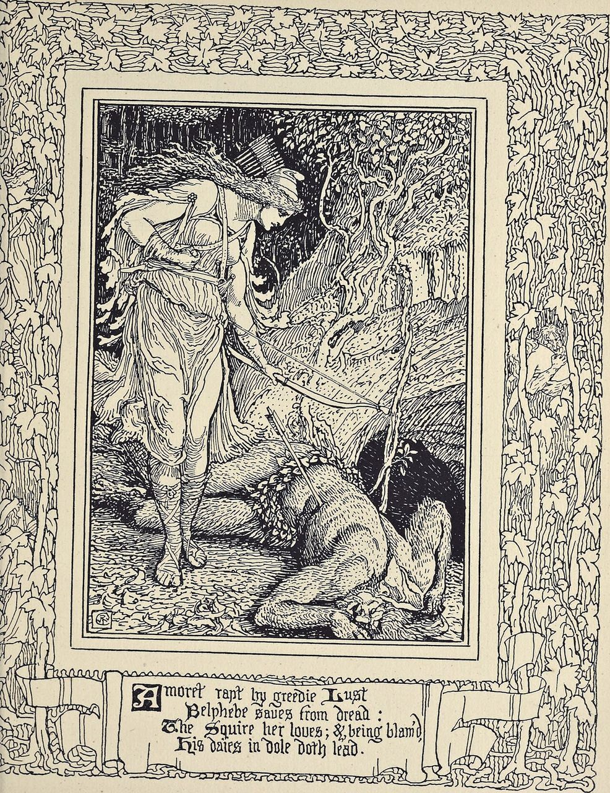
Belphoebe saves Amoret from greedie LustWalter Crane, 1895–97 · canto-head, George Allen edition
❧
Amoret rapt by greedy lust Belphebe saves from dread, The Squire her loves, and being blam’d his days in dole doth lead.
❧
ireat God of love, that with thy cruel dartDoest conquer greatest conquerors on ground,And setst thy kingdom in the captive heartsOf Kings and Keasars, to thy service bound,What glory, or what guerdon hast thou foundIn feeble Ladies tyranning so sore;And adding anguish to the bitter wound,With which their lives thou lanchedst long afore,By heaping storms of trouble on them daily more?
iiSo whilom didst thou to fair Florimell;And so and so to noble Britomart:So doest thou now to her, of whom I tell,The lovely Amoret, whose gentle heartThou martyrest with sorrow and with smart,In salvage forests, and in deserts wide,With Bears and Tigers taking heavy part,Withouten comfort, and withouten guide,That pity is to hear the perils, which she tried.
iiiSo soon as she with that brave BritonessHad left that Turneyment for beauties prise,They travel’d long, that now for weariness,Both of the way, and warlike exercise,Both through a forest riding did deviseT’alight, and rest their weary limbs awhile.There heavy sleep the eye-lids did surpriseOf Britomart after long tedious toil,That did her passed pains in quiet rest assoil.
ivThe whiles fair Amoret, of nought affeard,Walk’d through the wood, for pleasure, or for need;When suddenly behind her back she heardOne rushing forth out of the thickest weed,That ere she back could turn to taken heed,Had unawares her snatched up from ground.Feebly she shriek’d, but so feebly indeed,That Britomart heard not the shrilling sound,There where through weary travel she lay sleeping sound.
vIt was to weet a wild and salvage man,Yet was no man, but only like in shape,And eke in stature higher by a span,All overgrown with hair, that could awhapeAn hardy heart, and his wide mouth did gapeWith huge great teeth, like to a tusked Bore:For he liv’d all on ravin and on rapeOf men and beasts; and fed on fleshly gore,The sign whereof yet stain’d his bloody lips afore.
viHis nether lip was not like man nor beast,But like a wide deep poke, down hanging low,In which he wont the relickes of his feast,And cruel spoil, which he had spar’d, to stow:And over it his huge great nose did grow,Full dreadfully empurpled all with blood;And down both sides two wide long ears did glow,And raught down to his waste, when up he stood,More great than th’eares of Elephants by Indus flood.
viiHis wast was with a wreath of ivy greenEngirt about, ne other garment wore:For all his hair was like a garment seen;And in his hand a tall young oak he bore,Whose knotty snags were sharpen’d all afore,And beath’d in fire for steel to be in stead.But whence he was, or of what womb ybore,Of beasts, or of the earth, I have not red:But certes was with milk of Wolves and Tigres fed.
viiiThis ugly creature in his arms her snatch’d,And through the forrest bore her quite away,With briers and bushes all to rent and scratch’d;Ne care he had, ne pity of the pray,Which many a knight had sought so many a day.He stayed not, but in his arms her bearingRan, till he came to th’end of all his way,Unto his cave fare from all peoples hearing,And there he threw her in, nought feeling, ne nought fearing.
ixFor she dear Lady all the way was dead,Whilst he in arms her bore; but when she feltHer self down soust, she waked out of dreadStraight into grief, that her dear heart nigh swelt,And eft gan into tender tears to melt.Then when she look’d about, and nothing foundBut darkness and dread horror, where she dwelt,She almost fell again into a swoun’d,Ne wist whether above she were, or under ground.
xWith that she heard some one close by her sideSighing and sobbing sore, as if the painHer tender heart in pieces would divide:Which she long list’ning, softly ask’d againWhat mister wight it was that so did plain?To whom thus answer’d was: Ah wretched wightThat seeks to know anothers grief in vain,Unweeting of thine own like hapless plight:Self to forget to mind another, is oversight.
xiAye me (said she) where am I, or with whom?Among the living, or among the dead?What shall of me unhappy maid become?Shall death be th’end, or ought else worse, aread.Unhappy maid (then answer’d she) whose dreadUntried, is less than when thou shalt it try:Death is to him, that wretched life doth lead,Both grace and gain; but he in hell doth lie,That lives a loathed life, and wishing cannot die.
xiiThis dismal day hath thee a caitiff made,And vassal to the vilest wretch alive,Whose cursed usage and ungodly tradeThe heavens abhor, and into darkens drive.For on the spoil of women he doth live,Whose bodies chaste, when ever in his powerHe may them catch, unable to gainestrive,He with his shameful lust doth first deflower,And afterwards themselves doth cruelly devour.
xiiiNow twenty days, by which the sons of menDivide their works, have past through heven sheen,Since I was brought into this doleful den;During which space these sori eyes have seenSeven women by him slain, and eaten clene.And now no more for him but I alone,And this old woman here remaining been;Till thou cam’st hither to augment our mon,And of us three tomorrow he will sure eat one.
xivAh dreadful tidings which thou doest declare,(Quoth she) of all that ever hath been known:Full many great calamities and rareThis feeble breast endured hath, but noneEqual to this, where ever I have gone.But what are you, whom like unlucky lotHath linckt with me in the same chain at one?To tell (quoth she) that which ye see, needs not;A woeful wretched maid, of God and man forgot.
xvBut what I was, it irks me to reherse;Daughter unto a Lord of high degree;That joy’d in happy peace, till fates perverseWith guileful love did secretly agree,To overthrow my state and dignity.It was my lot to love a gentle swain,Yet was he but a Squire of low degree;Yet was he meet, unless mine eye did fain,By any Ladies side for Leman to have lain.
xviBut for his meanness and disparagement,My Sire, who me too dearly well did love,Unto my choise by no means would assent,But often did my folly foul reprove.Yet nothing could my fixed mind remove,But whether willed or nilled friend or foe,I me resolv’d the utmost end to prove,And rather than my love abandon so,Both sire, and friends, and all for ever to forgo.
xviiThenceforth I sought by secret means to workTime to my will, and from his wrathful sightTo hide th’intent, which in my heart did lurk,Till I thereto had all things ready dight.So on a day unweeting unto wight,I with that Squire agreed away to flit,And in a privy place, betwixt us hight,Within a grove appointed him to meet;To which I boldly came upon my feeble feet.
xviiiBut ah unhappy hour me thither brought:For in that place where I him thought to find,There was I found, contrary to my thought,Of this accursed Carle of hellish kind,The shame of men, and plague of womankind,Who trussing me, as Eagle doth his pray,Me heather brought with him, as swift as wind,Where yet untouched till this present day,I rest his wretched thrall, the sad Æmylia.
xixAh sad Æmylia (then said Amoret,)Thy rueful plight I pity as mine own.But read to me, by what devise or wit,Hast thou in all this time, from him unknownThine honour sav’d, though into thraldom thrown.Through help (quoth she) of this old woman hereI have so done, as she to me hath shown.For ever when he burnt in lustful fire,She in my stead supplied his bestial desire.
xxThus of their evils as they did discourse,And each did other much bewail and mon;Lo where the villain self, their sorrows sours,Came to the cave, and rolling thence the stone,Which wont to stop the mouth thereof, that noneMight issue forth, came rudely rushing in,And spreading over all the flor alone,Gan dight him self unto his wonted sine;Which ended, then his bloody banket should begin.
xxiWhich when as fearful Amoret perceived,She staid not the utmost end thereof to try,But like a ghastly Gelt, whose wits are reaved,Ran forth in hast with hideous outcry,For horror of his shameful villany.But after her full lightly he uprose,And her pursu’d as fast as she did fly:Full fast she flies, and fare afore him goes,Ne feels the thorns and thickets prick her tender toes.
xxiiNor hedge, nor ditch, nor hill, nor dale she staies,But overleaps them all, like Robucke light,And through the thickest makes her nighest ways;And evermore when with regardful sightShe looking back, espies that grisly wightApproaching nigh, she gins to mend her pace,And makes her fear a spur to hast her flight:More swift than Myrrh’ or Daphne in her race,Or any of the Thracian Nimphes in salvage chase.
xxiiiLong so she fled, and so he follow’d long;Ne living aide for her on earth appears,But if the heavens help to redress her wrong,Moved with pity of her plenteous tears.It fortuned Belphebe with her pearsThe woody Nimphs, and with that lovely boy,Was hunting then the Libbards and the Bears,In these wild woods, as was her wonted joy,To banish sloth, that oft doth noble minds annoy.
xxivIt so befell, as oft it false in chace,That each of them from other sundried were,And that same gentle Squire arriv’d in place,Where this same cursed caitiff did appear,Pursuing that fair Lady full of fear,And now he her quite overtaken had;And now he her away with him did bearUnder his arm, as seeming wondrous glad,That by his grenning laughter mote fare off be rad.
xxvWhich drery sight the gentle Squire espying,Doth hast to cross him by the nearest way,Led with that woeful Ladies piteous crying,And him assails with all the might he may,Yet will not he the lovely spoil down lay,But with his craggy club in his right hand,Defends him self, and saves his gotten pray.Yet had it been right hard him to withstand,But that he was full light and nimble on the land.
xxviThereto the villain used craft in fight;For ever when the Squire his javelin shook,He held the Lady forth before him right,And with her body, as a buckler, brokeThe puissance of his intended stroke.And if it chanc’d, (as needs it must in fight)Whilst he on him was greedy to be wroke,That any little blow on her did light,Then would he laugh aloud, and gather great delight.
xxviiWhich subtil sleight did him encumber much,And made him oft, when he would strike, forbear;For hardly could he come the carle to touch,But that he her must hurt, or hazard near:Yet he his hand so carefully did bear,That at the last he did himself attain,And therein left the pike head of his spear.A stream of coleblacke blood thence gusht amain,That all her silken garments did with blood bestaine.
xxviiiWith that he threw her rudely on the flor,And laying both his hands upon his glave,With dreadful strokes let drive at him so sore,That forc’d him fly aback, himself to save:Yet he therewith so felly still did rave,That scars the Squire his hand could once uprear,But for advantage ground unto him gave,Tracing and traversing, now here, now there;For bootless thing it was to think such blows to bear.
xxixWhilst thus in battle they embusied were,Belphebe ranging in that forrest wide,The hideous noise of their huge strokes did hear,And drew thereto, making her ear her guide.Whom when that thief approaching nigh espied,With bow in hand, and arrows ready bent,He by his former combat would not bide,But fled away with ghastly dreriment,Well knowing her to be his deaths sole instrument.
xxxWhom seeing fly, she speedily poursewedWith winged feet, as nimble as the wind,And ever in her bow she ready showedThe arrow, to his deadly mark desynde.As when Latonaes daughter cruel kinde,In vengement of her mothers great disgrace,With fell despite her cruel arrows tyndGainst woeful Niobes unhappy race,That all the gods did mon her miserable case.
xxxiSo well she sped her and so far she venter’d,That ere unto his hellish den he raught,Even as he ready was there to have enter’d,She sent an arrow forth with mighty draught,That in the very door him overcaught,And in his nape arriving, through it thrildHis greedy throat, therewith in two distraught,That all his vital spirits thereby spil’d,And all his hairy breast with gory blood was fil’d.
xxxiiWhom when on ground she groveling saw to rowley,She ran in hast his life to have bereft:But ere she could him reach, the sinful sowleHaving his carrion corse quite senseless left,Was fled to hell, surcharg’d with spoil and theft.Yet over him she there long gazing stood,And oft admir’d his monstrous shape, and oftHis mighty limbs, whilst all with filthy bloodThe place there overflown, seem’d like a sodaine flood.
xxxiiiThence forth she past into his dreadful den,Where nought but darksome drerinesse she found,Ne creature saw, but hearken’d now and thenSome little whispering, and soft groaning sound.With that she ask’d, what ghosts there under groundLay hid in horror of eternal night?And bad them, if so be they were not bound,To come and show themselves before the light,Now freed from fear and danger of that dismal wight.
xxxivThen forth the sad Æmylia issewed,Yet trembling every joint through former fear;And after her the Hag, there with her mewed,A foul and lothsome creature did appear;A leman fit for such a lover dear.That mov’d Belphebe her no less to hate,Then for to rue the others heavy chere;Of whom she gan enquire of her estate.Who all to her at large, as hapned, did relate.
xxxvThence she them brought toward the place, where lateShe left the gentle Squire with Amoret:There she him found by that new lovely mate,Who lay the whiles in swoun, full sadly set,From her fair eyes wiping the dewy wet,Which softly stil’d, and kissing them atween,And handling soft the hurts, which she did get.For of that Carle she sorely bruz’d had been,Als of his own rash hand one wound was to be seen.
xxxviWhich when she saw, with sodaine glancing eye,Her noble heart with sight thereof was fil’dWith deep disdain, and great indignity,That in her wrath she thought them both have thrild,With that self arrow, which the Carle had killdee:Yet held her wrathful hand from vengeance sore,But drawing nigh, ere he her well beheld;Is this the faith, she said, and said no more,But turn’d her face, and fled away for evermore.
xxxviiHe seeing her depart, arose up light,Right sore aggrieved at her sharpe reproof,And follow’d fast: but when he came in sight,He durst not nigh approach, but kept aloof,For dread of her displeasures utmost proof.And evermore, when he did grace entreat,And framed speeches fit for his behoof,Her mortal arrows she at him did threat,And forc’d him back with foul dishonor to retreat.
xxxviiiAt last when long he follow’d had in vain,Yet found no ease of grief, nor hope of grace,Unto those woods he turned back again,Full of sad anguish, and in heavy case:And finding there fit solitary placeFor woeful wight, chose out a gloomy glade,Where hardly eye mote see bright heavens face,For mossy trees, which covered all with shadeAnd sad melancholy: there he his cabin made.
xxxixHis wonted warlike weapons all he broke,And threw away, with vow to use no more,Ne thenceforth ever strike in battle stroke,Ne ever word to speak to woman more;But in that wilderness, of men forlore,And of the wicked world forgotten quite,His hard mishap in dolor to deplore,And wast his wretched days in woeful plight;So on him self to wreak his follies own despite.
xlAnd eke his garment, to be thereto meet,He wilfully did cut and shape anew;And his fair locks, that wont with ointment sweetTo be embaulm’d, and sweat out dainty dew,He let to grow and grisly to concrew,Uncomb’d, uncurl’d, and carelessly unshed;That in short time his face they overgrew,And over all his shoulders did dispread,That who he whilom was, uneath was to be red.
xliThere he continued in this careful plight,Wretchedly wearing out his youthly years,Through wilful penury consumed quite,That like a pined ghost he soon appears.For other food then that wild forrest bears,Ne other drink there did he ever taste,Then running water, temper’d with his tears,The more his weakened body so to wast:That out of all mens knowledge he was worn at last.
xliiFor on a day, by fortune as it fell,His own dear Lord Prince Arthure came that way,Seeking adventures, where he mote hear tell;And as he through the wand’ring wood did stray,Having espied this Cabin far away,He to it drew, to weet who there did won;Weening therein some holy Hermit lay,That did resort of sinful people shone;Or else some woodman shrowded there from scorching sun.
xliiiArriving there, he found this wretched man,Spending his days in dolour and despair,And through long fasting woxen pale and wan,All overgrowen with rude and rugged hair;That albeit his own dear Squire he were,Yet he him knew not, ne aviz’d at all,But like strange wight, whom he had seen no where,Saluting him, gan into speech to fall,And pity much his plight, that liv’d like outcast thrall.
xlivBut to his speech he answered no whit,But stood still mute, as if he had been dum,Ne sign of sense did show, ne common wit,As one with grief and anguish overcum,And unto everything did answer mum:And ever when the Prince unto him spake,He louted lowly, as did him becum,And humble homage did unto him make,Midst sorrow shewing joyous semblance for his sake.
xlvAt which his uncouth guise and usage quaintThe Prince did wonder much, yet could not guessThe cause of that his sorrowful constraint;Yet wend by secret signs of manliness,Which close appear’d in that rude brutishness,That he whilom some gentle swain had been,Train’d up in feats of arms and knightliness;Which he observ’d, by that he him had seenTo weld his naked sword, and try the edges keen.
xlviAnd eke by that he saw on every tree,How he the name of one engraven had,Which likly was his liefest love to be,For whom he now so sorely was bestad;Which was by him BELPHEBE rightly rad.Yet who was that Belphebe, he ne wist;Yet saw he often how he wexed glad,When he it heard, and how the ground he kist,Wherein it written was, and how himself he blist:
xlviiTho when he long had marked his demeanor,And saw that all he said and did, was vain,Ne ought mote make him change his wonted tenor,Ne ought mote ease or mitigate his pain,He left him there in languor to remain,Till time for him should remedy provide,And him restore to former grace again.Which for it is too long here to abide,I will defer the end until another tide.
Booke IV · Friendship
Canto VIII
❧
The gentle Squire recovers grace, Sclaunder her guests doth stain: Corflambo chaseth Placidas, And is by Arthur slain.
❧
iell said the wiseman, now prou’d true by this,Which to this gentle Squire did happen late,That the displeasure of the mighty isThen death it self more dread and desperate.For naught the same may calm ne mitigate,Till time the tempest do thereof delayWith sufferance soft, which rigour can abate,And have the stern remembrance wypt awayOf bitter thoughts, which deep therein infixed lay.
iiLike as it fell to this unhappy boy,Whose tender heart the fair Belphebe hadWith one stern loke so daunted, that no joyIn all his life, which afterwards he lad,He ever tasted, but with penance sadAnd pensive sorrow pin’d and wore away,Ne ever laught, ne once show’d countenance glad;But always wept and wailed night and day,As blasted bloosme through heat doth languish and decay;
iiiTill on a day, as in his wonted wiseHis doole he made, there chanc’d a turtle DoveTo come, where he his dolors did devise,That likewise late had lost her dearest love,Which loss her made like passion also prove.Who seeing his sad plight, her tender heartWith dear compassion deeply did emmove,That she gan mon his undeserved smart,And with her doleful accent bear with him a part.
ivShe sitting by him as on ground he lay,Her mournful notes full piteously did frame,And thereof made a lamentable lay,So sensibly compyld, that in the sameHim seemed oft he heard his own right name.With that he forth would pour so plenteous tears,And beat his breast unworthy of such blame,And knock his head, and rend his rugged hears,That could have pierc’d the hearts of Tigres and of Bears.
vThus long this gentle bird to him did use,Withouten dread of peril to repairUnto his won, and with her mournful museHim to recomfort in his greatest care,That much did ease his mourning and misfare:And every day for guerdon of her song,He part of his small feast to her would share;That at the last of all his woe and wrongCompanion she became, and so continued long.
viUpon a day as she him sate beside,By chance he certain miniments forth drew,Which yet with him as relickes did abideOf all the bounty, which Belphebe threwOn him, whilst goodly grace she did him show:Amongst the rest a jewell rich he found,That was a Ruby of right perfect hue,Shap’d like a heart, yet bleeding of the wound,And with a little golden chain about it bound.
viiThe same he toke, and with a riband new,In which his Ladies colours were, did bindAbout the turtles neck, that with the viewDid greatly solace his engrieved mind.All unawares the bird, when she did findHer self so deck’d, her nimble wings display’d,And flew away, as lightly as the wind:Which sodaine accident him much dismay’d,And looking after long, did mark which way she straid.
viiiBut when as long he looked had in vain,Yet saw her forward still to make her flight,His weary eye return’d to him again,Full of discomfort and disquiet plight,That both his ivel he had lost so light,And eke his dear companion of his care.But that sweet bird departing, flew forth rightThrough the wide region of the wastfull aire,Until she came where wonned his Belphebe fair.
ixThere found she her (as then it did betide)Sitting in covert shade of arbors sweet,After late weary toil, which she had triedIn salvage chase, to rest as seem’d her meet.There she alighting, fell before her feet,And gan to her her mournful plaint to make,As was her wont, thinking to let her weetThe great tormenting grief, that for her sakeHer gentle Squire through her displeasure did pertake.
xShe her beholding with attentive eye,At length did mark about her purple breastThat precious ivel, which she formerlyHad known right well with colour’d ribbands drest:Therewith she rose in hast, and her addrestWith ready hand it to have reft away.But the swift bird obayd not her behest,But swarv’d aside, and there again did stay;She follow’d her, and thought again it to assay.
xiAnd ever when she nigh approach’d, the DoveWould flit a little forward, and then stay,Till she drew near, and then again remove;So tempting her still to pursue the pray,And still from her escaping soft away:Till that at length into that forrest wide,She drew her far, and led with slow delay.In th’end she her unto that place did guide,Whereas that woeful man in languor did abide.
xiiEftsoons she flew unto his fearless hand,And there a piteous ditty new devise’d,As if she would have made him understand,His sorrows cause to be of her despis’d.Whom when she saw in wretched weeds disguise’d,With hery glib deform’d, and meiger face,Like ghost late risen from his grave agrize’d,She knew him not, but pitied much his case,And wisht it were in her to do him any grace.
xiiiHe her beholding, at her feet down fell,And kist the ground on which her sole did tread,And washt the same with water, which did wellFrom his moist eyes, and like two streams proceed,Yet spake no word, whereby she might areadWhat mister wight he was, or what he ment,But as one daunted with her presence dread,Only few rueful lokes unto her sent,As messengers of his true meaning and intent.
xivYet nathemore his meaning she ared,But wonder’d much at his so selcouth case,And by his persons secret seemliheadWell wend, that he had been some man of place,Before misfortune did his hue deface:That being mov’d with ruth she thus bespake.Ah woeful man, what heavens hard disgrace,Or wrath of cruel wight on thee ywrake?Or self disliked life doth thee thus wretched make?
xvIf heaven, then none may it redress or blame,Sith to his power we all are subject borne:If wrathful wight, then foul rebuke and shameBe theirs, that have so cruel thee forlorn;But if through inward grief or wilful scornOf life it be, then better do advise.For he whose days in wilful woe are worn,The grace of his Creator doth despise,That will not use his gifts for thankless niggardise.
xviWhen so he heard her say, eftsoons he brakeHis sodaine silence, which he long had pent,And sighing inly deep, her thus bespake;Then have they all themselves against me bent:For heaven, first author of my languishment,Envying my too great felicity,Did closely with a cruel one consent,To cloud my days in doleful misery,And make me loath this life, still longing for to die.
xviiNe any but your self, O dearest dread,Hath done this wrong, to wreak on worthless wightYour high displeasure, through misdeeming bred:That when your pleasure is to deem aright,Ye may redress, and me restore to light.Which sori words her mighty heart did mateWith mild regard, to see his rueful plight,That her inburning wrath she gan abate,And him receiv’d again to former favours state.
xviiiIn which he long time afterwards did leadAn happy life with grace and good accord,Fearless of fortunes change or envies dread,And eke all mindless of his own dear LordThe noble Prince, who never heard one wordOf tidings, what did unto him betide,Or what good fortune did to him afford,But through the endless world did wander wide,Him seeking evermore, yet no where him descried.
xixTill on a day as through that wood he rode,He chanc’d to come where those two Ladies late,Æmylia and Amoret abode,Both in full sad and sorrowful estate;The one right feeble through the evil rateOf food, which in her duresse she had found:The other almost dead and desperateThrough her late hurts, and through that hapless wound,With which the Squire in her defence her sore astound.
xxWhom when the Prince beheld, he gan to rewThe evil case in which those Ladies lay;But most was moved at the piteous viewOf Amoret, so near unto decay,That her great danger did him much dismay.Eftsoons that precious liquor forth he drew,Which he in store about him kept alway,And with few drops thereof did softly dewHer wounds, that unto strength restor’d her soon anew.
xxiTho when they both recovered were right well,He gan of them inquire, what evil guideThem thether brought, and how their harms befell.To whom they told all, that did them betide,And how from thraldom vile they were untiedOf that same wicked Carle, by Virgins hond;Whose bloody corse they show’d him there beside,And eke his cave, in which they both were bond:At which he wonder’d much, when all those signs he fond.
xxiiAnd evermore he greatly did desireTo know, what Virgin did them thence unbind;And oft of them did earnestly inquire,Where was her won, and how he mote her find.But when as nought according to his mindHe could outlearn, he them from ground did rear:No service lothsome to a gentle kind;And on his warlike beast them both did bear,Himself by them on foot, to succour them from fear.
xxiiiSo when that forrest they had passed well,A little cottage fare away they spied,To which they drew, ere night upon them fell;And ent’ring in, found none therein abide,But one old woman sitting there beside,Upon the ground in ragged rude attire,With filthy locks about her scattered wide,Gnawing her nails for fellness and for ire,And there out sucking venime to her parts entire.
xxivA foul and loathly creature sure in sight,And in conditions to be loath’d no less:For she was stuft with rancour and despiteUp to the throat, that oft with bitternessIt forth would break, and gush in great excess,Pouring out streams of poison and of gallGainst all, that truth or virtue do profess,Whom she with leasings lewdly did miscall,And wickedly backbite: Her name men Sclaunder call.
xxvHer nature is all goodness to abuse,And causeless crimes continually to frame,With which she guiltless persons may accuse,And steale away the crown of their good name;Ne ever Knight so bold, ne ever DameSo chaste and loyal liv’d, but she would striveWith forged cause them falsely to defame;Ne ever thing so well was doen alive,But she with blame would blot, and of due praise deprive.
xxviHer words were not, as common words are ment,T’expresse the meaning of the inward mind,But noisome breath, and poysnous spirit sentFrom inward parts, with cancer’d malice lind,And breathed forth with blast of bitter wind;Which passing through the ears, would pierce the heart,And wound the soul it self with grief unkind:For like the stings of Asps, that kill with smart,Her spightfull words did prick, and wound the inner part.
xxviiSuch was that Hag, unmeet to host such guests,Whom greatest Princes court would welcome fain,But need, that answers not to all requests,Bad them not loke for better entertain;And eke that age despised niceness vain,Enur’d to hardness and to homely fare,Which them to warlike discipline did train,And manly limbs endur’d with little careAgainst all hard mishaps and fortuneless misfare.
xxviiiThen all that evening welcomed with cold,And cheerless hunger, they together spent;Yet found no fault, but that the Hag did scoldAnd rayle at them with grudgeful discontent,For lodging there without her own consent:Yet they endured all with patience mild,And unto rest themselves all only lent,Regardless of that quean so base and vild,To be unjustly blam’d, and bitterly revilde.
xxixHere well I ween, when as these rimes be redWith misregard, that some rash witted wight,Whose looser thought will lightly be misled,These gentle Ladies will misdeem too light,For thus conversing with this noble Knight;Sith now of days such temperance is rareAnd hard to find, that heat of youthful sprightFor ought will from his greedy pleasure spare,More hard for hungry steed t’abstaine from pleasant lare.
xxxBut antique age yet in the infancyOf time, did live then like an innocent,In simple truth and blameless chastity,Ne then of guile had made experiment,But void of vile and treacherous intent,Held virtue for it self in sovereign awe:Then loyal love had royal regiment,And each unto his lust did make a law,From all forbidden things his liking to withdraw.
xxxiThe Lyon there did with the Lamb consort,And eke the Dove sate by the Faulcons side,Ne each of other feared fraud or tort,But did in safe security abide,Withouten peril of the stronger pride:But when the world woxe old, it woxe war old(Whereof it hight) and having shortly triedThe trains of wit, in wickedness woxe bold,And dared of all sines the secrets to unfold.
xxxiiThen beauty, which was made to representThe great Creators own resemblance bright,Unto abuse of lawless lust was lent,And made the bait of bestial delight:Then fair grew foul, and foul grew fair in sight,And that which wont to vanquish God and man,Was made the vassal of the victors might;Then did her glorious flower wex dead and wan,Despis’d and trodden down of all that overran.
xxxiiiAnd now it is so utterly decay’d,That any bud thereof doth scars remain,But if few plants preserv’d through heavenly aid,In Princes Court do hap to sprout again,Dew’d with her drops of bounty Sovereign,Which from that goodly glorious flower proceed,Sprung of the ancient stock of Princes strain,Now th’onely remnant of that royal breed,Whose noble kind at first was sure of heavenly seed.
xxxivTho soon as day discovered heavens faceTo sinful men with darkness overdight,This gentle crew gan from their eye-lids chaceThe drowsy humour of the dampish night,And did themselves unto their journey dight.So forth they yode, and forward softly paced,That them to view had been an uncouth sight;How all the way the Prince on footpace traced,The Ladies both on horse, together fast embraced.
xxxvSoon as they thence departed were afore,That shameful Hag, the slander of her sex,Them follow’d fast, and them reviled sore,Him calling thief, them whores; that much did vexHis noble heart; thereto she did annexFalse crimes and facts, such as they never ment,That those two Ladies much asham’d did wexe:The more did she pursue her lewd intent,And rail’d and rag’d, till she had all her poison spent.
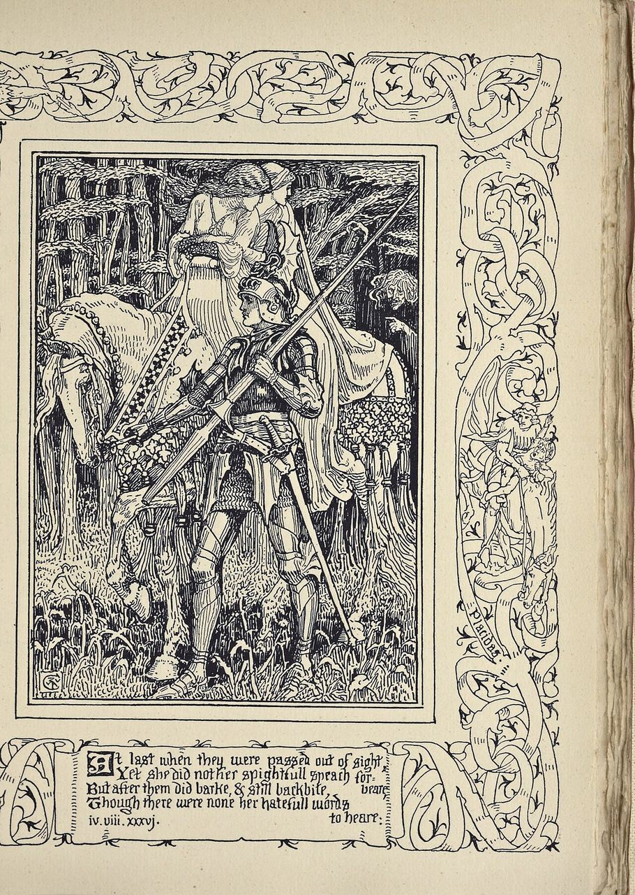
Sclaunder rails after the departing companieWalter Crane, 1895–97 · plate at IV.viii.36
xxxviAt last when they were passed out of sight,Yet she did not her spightfull speech forbear,But after them did bark, and still backbite,Though there were none her hatful words to hear:Like as a curr doth felly bite and tearThe stone, which passed stranger at him threw;So she them seeing past the reach of ear,Against the stones and trees did rayle anew,Till she had dul’d the sting, which in her tongues end grew.
xxxviiThey passing forth kept on their ready way,With easy steps so soft as foot could stride,Both for great feeblesse, which did oft assayFair Amoret, that scarcely she could ryde,And eke through heavy arms, which sore annoy’dThe Prince on foot, not wonted so to fare;Whose steady hand was fain his steed to guide,And all the way from trotting hard to spare,So was his toil the more, the more that was his care.
xxxviiiAt length they spied, where towards them with speedA Squire came galoping, as he would fly;Bearing a little Dwarf before his steed,That all the way full loud for aide did cry,That seem’d his shrikes would rend the brazen ski:Whom after did a mighty man pursue,Riding upon a Dromedary on hie,Of stature huge, and horrible of hue,That would have maz’d a man his dreadful face to view.
xxxixFor from his fearful eyes two fiery beams,More sharpe than points of needles did proceed,Shooting forth fare away two flaming streams,Full of sad power, that poisonous bale did breedTo all, that on him look’d without good heed,And secretly his enemies did slay:Like as the Basilisk of serpents seed,From powerful eyes close venim doth conuayInto the lookers heart, and killeth fare away.
xlHe all the way did rage at that same Squire,And after him full many threatnings threw,With curses vain in his avengeful ire:But none of them (so fast away he flew)Him overtook, before he came in view.Where when he saw the Prince in armour bright,He call'd to him aloud, his case to rew,And rescue him through succour of his might,From that his cruel foe, that him pursewd in sight.
xliEftsoons the Prince toke down those Ladies twainFrom lofty steed, and mounting in their steadCame to that Squire, yet trembling every vain:Of whom he gan enquire his cause of dread;Who as he gan the same to him aread,Lo hard behind his back his foe was prest,With dreadful weapon aimed at his head,That unto death had doen him unredrest,Had not the noble Prince his ready stroke repress’d.
xliiWho thrusting boldly twixt him and the blow,The burden of the deadly brunt did bearUpon his shield, which lightly he did throwOver his head, before the harm came near.Nathless it fell with so despiteous drearAnd heavy sway, that hard unto his crownThe shield it drove, and did the covering rear,Therewith both Squire and dwarf did tomble downUnto the earth, and lay long while in senseless swoon.
xliiiWhereat the Prince full wrath, his strong right handIn full avengement heaved up on hie,And stroke the Pagan with his steely brandSo sore, that to his saddle bow therebyHe bowed low, and so a while did lie:And sure had not his massy iron maceBetwixt him and his hurt been happily,It would have cleft him to the girding place,Yet as it was, it did astonish him long space.
xlivBut when he to himself return’d again,All full of rage he gan to curse and swear,And vow by Mahoune that he should be slain.With that his murdrous mace he up did rear,That seemed nought the souse thereof could bear,And therewith smote at him with all his might.But ere that it to him approached near,The royal child with ready quick foresight,Did shun the proof thereof and it avoided light.
xlvBut ere his hand he could recure again,To ward his body from the baleful stound,He smote at him with all his might and main,So furiously, that ere he wist, he foundHis head before him tombling on the ground.The whiles his babbling tongue did yet blasphemeAnd curse his God, that did him so confound;The whiles his life ran forth in bloody stream,His soul descended down into the Stygian ream.
xlviWhich when that Squire beheld, he woxe full gladTo see his foe breath out his spright in vain:But that same dwarf right sori seem’d and sad,And howl’d aloud to see his Lord there slain,And rent his hair and scratch’d his face for pain.Then gan the Prince at leasure to inquireOf all the accident, there hapned plain,And what he was, whose eyes did flame with fire;All which was thus to him declared by that Squire.
xlviiThis mighty man (quoth he) whom you have slain,Of an huge Geauntesse whilom was bred;And by his strength rule to himself did gainOf many Nations into thraldom led,And mighty kingdoms of his force adred;Whom yet he conquer’d not by bloody fight,Ne hosts of men with banners broad dispread,But by the power of his infectious sight,With which he killed all, that came within his might.
xlviiiNe was he ever vanquished afore,But ever vanquisht all, with whom he fought;Ne was there man so strong, but he down bore,Ne woman yet so fair, but he her broughtUnto his bay, and captived her thought.For most of strength and beauty his desireWas spoil to make, and wast them unto nought,By casting secret flakes of lustful fireFrom his false eyes, into their hearts and parts entire.
xlixTherefore Corflambo was he call'd aright,Though nameless there his body now doth lie,Yet hath he left one daughter that is hightThe fair Pœana; who seems outwardlySo fair, as ever yet saw living eye:And were her virtue like her beauty bright,She were as fair as any under ski.But ah she given is to vain delight,And eke too loose of life, and eke of love too light.
lSo as it fell there was a gentle Squire,That lou’d a Lady of high parentage,But for his mean degree might not aspireTo match so high, her friends with counsel sage,Dissuaded her from such a disparage.But she, whose heart to love was wholly lent,Out of his hands could not redeem her gage,But firmly following her first intent,Resolv’d with him to wend, gainst all her friends consent.
liSo twixt themselves they pointed time and place,To which when he according did repair,An hard mishap and disaventrous caseHim chanc’d; in stead of his Æmylia fairThis Giants son, that lies there on the lairAn headless heap, him unawares there caught,And all dismay’d through merciless despair,Him wretched thrall unto his dungeon brought,Where he remains, of all unsuccour’d and unsought.
liiThis Giants daughter came upon a dayUnto the prison in her joyous glee,To view the thralls, which there in bondage lay:Amongst the rest she chanced there to seeThis lovely swain the Squire of low degree;To whom she did her liking lightly cast,And wooed him her paramour to be:From day to day she woo’d and pray’d him fast,And for his love him promist liberty at last.
liiiHe though affied unto a former love,To whom his faith he firmly ment to hold,Yet seeing not how thence he mote remove,But by that means, which fortune did unfold,Her granted love, but with affection coldTo win her grace his liberty to get.Yet she him still detains in captive hold,Fearing least if she should him freely set,He would her shortly leave, and former love forget.
livYet so much favour she to him hath hight,Above the rest, that he sometimes may spaceAnd walk about her gardens of delight,Having a keeper still with him in place,Which keeper is this Dwarf, her dearling base,To whom the keys of every prison doorBy her committed be, of special grace,And at his will may whom he list restore,And whom he list reserve, to be afflicted more.
lvWhereof when tidings came unto mine ear,Full inly sori for the fervent zeal,Which I to him as to my soul did bear;I thether went where I did long concealMy self, till that the Dwarf did me reveal,And told his Dame, her Squire of low degreeDid secretly out of her prison steale;For me he did mistake that Squire to be;For never two so like did living creature see.
lviThen was I taken and before her brought,Who through the likeness of my outward hue,Being likewise beguiled in her thought,Gan blame me much for being so untrue,To seek by flight her fellowship t’eschew,That lou’d me dear, as dearest thing alive.Thence she commanded me to prison new;Whereof I glad did not gainesay nor strive,But suffer’d that same Dwarf me to her dungeon drive.
lviiThere did I find mine only faithful frendIn heavy plight and sad perplexity;Whereof I sori, yet my self did bend,Him to recomfort with my company.But him the more aggrieve’d I found thereby:For all his joy, he said, in that distressWas mine and his Æmylias liberty.Æmylia well he lou’d, as I mote guess;Yet greater love to me then her he did profess.
lviiiBut I with better reason him aviz’d,And show’d him how through error and mis-thoughtOf our like persons eath to be disguise’d,Or his exchange, or freedom might be wrought.Whereto full loth was he, ne would for oughtConsent, that I who stood all fearless free,Should wilfully be into thraldom brought,Till fortune did perforce it so decree.Yet overrul’d at last, he did to me agree.
lixThe morrow next about the wonted hour,The Dwarf call'd at the door of Amyas,To come forthwith unto his Ladies bower.In steed of whom forth came I Placidas,And undiscerned, forth with him did pas.There with great joyance and with gladsome glee,Of fair Pœana I received was,And oft imbrast, as if that I were he,And with kind words accoy’d, vowing great love to me.
lxWhich I, that was not bent to former love,As was my friend, that had her long refus’d,Did well accept, as well it did behove,And to the present need it wisely us’d.My former hardness first I fair excus’d;And after promist large amends to make.With such smooth termes her error I abus’d,To my friends good, more than for mine own sake,For whose sole liberty I love and life did stake.
lxiThenceforth I found more favour at her hand,That to her Dwarf, which had me in his charge,She bad to lighten my too heavy band,And grant more scope to me to walk at large.So on a day as by the floury margeOf a fresh stream I with that Elf did play,Finding no means how I might us enlarge,But if that Dwarf I could with me conuay,I lightly snatch’d him up, and with me bore away.
lxiiThereat he shriek’d aloud, that with his cryThe Tyrant self came forth with yelling bray,And me pursue’d; but nathemore would IForgo the purchase of my gotten pray,But have perforce him heather brought away.Thus as they talked, lo where nigh at handThose Ladies two yet doubtful through dismayIn presence came, desirous t’understandTidings of all, which there had hapned on the land.
lxiiiWhere soon as sad Æmylia did espyHer captive lovers friend, young Placidas;All mindless of her wonted modesty,She to him ran, and him with straight embrasEnfolding said, And lives yet Amyas?He lives (quoth he) and his Æmylia loves.Then less (said she) by all the woe I pas,With which my weaker patience fortune proves.But what mishap thus long him fro my self removes?
lxivThen gan he all this story to renew,And tell the course of his captivity;That her dear heart full deeply made to rew,And sigh full sore, to hear the misery,In which so long he merciless did lie.Then after many tears and sorrows spent,She dear besought the Prince of remedy:Who thereto did with ready will consent,And well perform’d, as shall appear by his event.
Booke IV · Friendship
Canto IX
❧
The Squire of low degree releas’d Pœana takes to wife: Britomart fights with many Knights,[152
❧
iard is the doubt, and difficult to deem,When all three kinds of love together meet,And do dispart the heart with power extreme,Whether shall weigh the balance down; to weetThe dear affection unto kindred sweet,Or raging fire of love to woman kind,Or zeal of friends combynd with virtues meet.But of them all the band of virtuous mindMe seems the gentle heart should most assured bind.
iiFor natural affection soon doth cesse,And quenched is with Cupids greater flame:But faithful friendship doth them both suppress,And them with maistring discipline doth tame,Through thoughts aspiring to eternal fame.For as the soul doth rule the earthly mass,And all the service of the body frame,So love of soul doth love of body pass,No less than perfect gold surmounts the meanest brass.
iiiAll which who list by trial to assay,Shall in this story find approved plain;In which these Squires true friendship more did sway,Then either care of parents could refrain,Or love of fairest Lady could constrain.For though Pœana were as fair as morne,Yet did this trusty Squire with proud disdainFor his friends sake her offer’d favours scorn,And she her self her syr, of whom she was yborne.
ivNow after that Prince Arthur granted had,To yield strong succour to that gentle swain,Who now long time had lien in prison sad,He gan advise how best he mote darrayneThat enterprise, for greatest glories gain.That headless tyrants tronke he rear’d from ground,And having ympt the head to it again,Upon his usual beast it firmly bound,And made it so to ride, as it alive was found.
vThen did he take that chased Squire, and laidBefore the ryder, as he captive were,And made his Dwarf, though with unwilling aid,To guide the beast, that did his maister bear,Till to his castle they approached near.Whom when the watch, that kept continual wardSaw coming home; all void of doubtful fear,He running down, the gate to him unbar’d;Whom straight the Prince ensuing, in together far’d.
viThere he did find in her delicious bourThe fair Pœana playing on a Rote,Complaining of her cruel Paramour,And singing all her sorrow to the note,As she had learned readily by rote.That with the sweetness of her rare delight,The Prince half rapt, began on her to dote:Till better him bethinking of the right,He her unwares attach’d, and captive held by might.
viiWhence being forth produc’d, when she perceivedHer own dear sire, she call'd to him for aide.But when of him no answer she received,But saw him senseless by the Squire upstaide,She weened well, that then she was betraide:Then gan she loudly cry, and weep, and wail,And that same Squire of treason to upbraid.But all in vain, her plaints might not prevail,Ne none there was to rescue her, ne none to bail.
viiiThen toke he that same Dwarf, and him compel’dTo open unto him the prison door,And forth to bring those thralls, which there he held.Thence forth were brought to him above a scoreOf Knights and Squires to him unknown afore:All which he did from bitter bondage free,And unto former liberty restore.Amongst the rest, that Squire of low degreeCame forth full weak and wan, not like him self to be.
ixWhom soon as fair Æmylia beheld,And Placidas, they both unto him ran,And him embracing fast betwixt them held,Striving to comfort him all that they can,And kissing oft his visage pale and wan.That fair Pœana them beholding both,Gan both envy, and bitterly to ban;Through jealous passion weeping inly wroth,To see the sight perforce, that both her eyes were loth.
xBut when a while they had together been,And diversly conferred of their case,She, though full oft she both of them had seenA sunder, yet not ever in one place,Began to doubt, when she them saw embrace,Which was the captive Squire she lou’d so dear,Deceived through great likeness of their face,For they so like in person did appear,That she uneath discerned, whether whether wear.
xiAnd eke the Prince, when as he them avized,Their like resemblance much admired there,And maz’d how nature had so well disguisedHer work, and counterfet her self so near,As if that by one pattern seen somewhere,She had them made a paragon to be,Or whether it through skill, or error were.Thus gazing long, at them much wonder’d he,So did the other knights and Squires, which him did see.
xiiThen gan they ransack that same Castle strong,In which he found great store of horded threasure,The which that tyrant gathered had by wrongAnd tortious power, without respect or measure.Upon all which the Briton Prince made seasure,And afterwards continu’d there a while,To rest him self, and solace in soft pleasureThose weaker Ladies after weary toil;To whom he did divide part of his purchast spoil.
xiiiAnd for more joy, that captive Lady fairThe fair Pœana he enlarged free;And by the rest did set in sumptuous chair,To feast and frolic; nathemore would sheShow gladsome countenance nor pleasant glee:But grieved was for loss both of her sire,And eke of Lordship, with both land and fee:But most she touched was with grief entire,For loss of her new love, the hope of her desire.
xivBut her the Prince through his well wonted grace,To better termes of mildness did entreat,From that foul rudeness, which did her deface;And that same bitter corsive, which did eatHer tender heart, and made refrain from meat,He with good thewes and speeches well applied,Did mollify, and calm her raging heat.For though she were most fair, and goodly died,Yet she it all did mar with cruelty and pride.
xvAnd for to shut up all in friendly love,Sith love was first the ground of all her grief,That trusty Squire he wisely well did moveNot to despise that dame, which lou’d him lief,Till he had made of her some better priefe,But to accept her to his wedded wife.Thereto he offer’d for to make him chiefOf all her land and lordship during life:He yielded, and her toke; so stinted all their strife.
xviFrom that day forth in peace and joyous bliss,They liv’d together long without debate,Ne private jar, ne spite of enemisCould shake the safe assurance of their state.And she whom Nature did so fair create,That she mote match the fairest of her days,Yet with lewd loves and lust intemperateHad it defac’d; thenceforth reform’d her ways,That all men much admyrde her change, and spake her praise.
xviiThus when the Prince had perfectly compyldeThese pairs of friends in peace and settled rest,Him self, whose mind did travel as with childe,Of his old love, conceav’d in secret breast,Resolved to pursue his former quest;And taking leave of all, with him did bearFair Amoret, whom Fortune by bequestHad left in his protection whilere,Exchanged out of one into an other fear.
xviiiFear of her safety did her not constrain,For well she wist now in a mighty hond,Her person late in peril, did remain,Who able was all dangers to withstond.But now in fear of shame she more did stond,Seeing her self all soli succourless,Left in the victors power, like vassal bond;Whose will her weakens could no way repress,In case his burning lust should break into excess.
xixBut cause of fear sure had she none at allOf him, who goodly learned had of yoreThe course of loose affection to forstall,And lawless lust to rule with reasons lore;That all the while he by his side her bore,She was as safe as in a Sanctuary;Thus many miles they two together wore,To seek their loves dispersed diversly,Yet neither showed to other their hearts privity.
xxAt length they came, whereas a troupe of KnightsThey saw together skirmishing, as seemed:Six they were all, all full of fell despite,But four of them the battle best beseemed,That which of them was best, mote not be deemed.Those four were they, from whom false FlorimellBy Braggadochio lately was redeemed.To weet, stern Druon, and lewd Claribell,Love-lavish Blandamour, and lustful Paridell.
xxiDruons delight was all in single life,And unto Ladies love would lend no leasure:The more was Claribell enraged rifeWith fervent flames, and loved out of measure:So eke lou’d Blandamour, but yet at pleasureWould change his liking, and new Lemans prove.But Paridell of love did make no threasure,But lusted after all, that him did move.So diversly these four disposed were to love.
xxiiBut those two other which beside them stood,Were Britomart, and gentle Scudamour,Who all the while beheld their wrathful mode,And wonder’d at their impacable stour,Whose like they never saw till that same hour:So dreadful strokes each did at other drive,And laid on load with all their might and power,As if that every dint the ghost would riveOut of their wretched corses, and their lives deprive.
xxiiiAs when Dan Æolus in great displeasure,For loss of his dear love by Neptune hent,Sends forth the winds out of his hidden threasure,Upon the sea to wreak his fell intent;They breaking forth with rude unruliment,From all four parts of heaven do rage full sore,And toss the deeps, and tear the firmament,And all the world confound with wide uproar,As if in stead thereof they Chaos would restore.
xxivCause of their discord, and so fell debate,Was for the love of that same snowy maid,Whom they had lost in Turneyment of late,And seeking long, to weet which way she straid,Met here together, where through lewd upbraidOf Ate and Duessa they fell out,And each one taking part in others aide,This cruel conflict raised thereabout,Whose dangerous success depended yet in dout.
xxvFor sometimes Paridell and BlandamourThe better had, and bet the others back,Eftsoons the others did the field recoure,And on their foes did work full cruel wrack:Yet neither would their fiendlike fury slack,But evermore their malice did augment;Till that uneath they forced were for lackOf breath, their raging rigour to relent,And rest themselves for to recover spirits spent.
xxviThere gan they change their sides, and new parts take;For Paridell did take to Druons side,For old despite, which now forth newly brakeGainst Blandamour, whom always he ennuied:And Blandamour to Claribell relied.So all afresh gan former fight renew.As when two Barks, this caried with the tide,That with the wind, contrary courses sew,If wind and tide do change, their courses change anew.
xxviiThenceforth they much more furiously gan fare,As if but then the battle had begone,Ne helmets bright, ne hawberks strong did spare,That through the clifts the vermeil blood out sponne,And all adown their riven sides did rone.Such mortal malice, wonder was to seeIn friends profess’d, and so great outrage donne:But sooth is said, and tried in each degree,Faint friends when they fall out, most cruel fomen be.
xxviiiThus they long while continued in fight,Till Scudamour, and that same Briton maid,By fortune in that place did chance to light:Whom soon as they with wrathful eye bewraide,They gan remember of the foul upbraid,The which that Britoness had to them donne,In that late Turney for the snowy maid;Where she had them both shamefully fordone,And eke the famous prize of beauty from them won.
xxixEftsoons all burning with a fresh desireOf fell revenge, in their malicious moodThey from themselves gan turn their furious ire,And cruel blades yet steaming with whot blood,Against those two let drive, as they were wood:Who wond’ring much at that so sodaine fit,Yet nought dismay’d, them stoutly well withstood;Ne yielded foot, ne once aback did flit,But being doubly smitten likewise doubly smit.
xxxThe warlike Dame was on her part assay’d,Of Claribell and Blandamour at one;And Paridell and Druon fiercely laidAt Scudamour, both his professed fone.Four charged two, and two surcharged one;Yet did those two themselves so bravely bear,That the other little gained by the lone,But with their own repayed duly wear,And usury withal: such gain was gotten dear.
xxxiFull oftentimes did Britomart assayTo speak to them, and some emparlance move;But they for nought their cruel hands would stay,Ne lend an ear to ought, that might behove,As when an eager mastiff once doth proveThe taste of blood of some engored beast,No words may rate, nor rigour him removeFrom greedy hold of that his bloody feast:So little did they hearken to her sweet behest.
xxxiiWhom when the Briton Prince a fare beheldWith ods of so unequal match oppress’d,His mighty heart with indignation sweld,And inward grudge fil’d his heroic breast:Eftsoons him self he to their aide addrest,And thrusting fierce into the thickest preace,Divided them, how ever loth to rest,And would them fain from battle to surcease,With gentle words perswading them to friendly peace.
xxxiiiBut they so fare from peace or patience were,That all at once at him gan fiercely fly,And lay on load, as they him down would bear;Like to a storm, which hovers under skiLong here and there, and round about doth sty,At length breaks down in rain, and hail, and sleet,First from one coast, till nought thereof be dry;And then another, till that likewise fleet;And so from side to side till all the world it weet.
xxxivBut now their forces greatly were decay’d,The Prince yet being fresh untoucht afore;Who them with speeches mild gan first disswadeFrom such foul outrage, and them long forbore:Till seeing them through suffrance hartned more,Him self he bent their furies to abate,And laid at them so sharply and so sore,That shortly them compelled to retrate,And being brought in danger, to relent too late.
xxxvBut now his courage being throughly fired,He ment to make them know their follies prise,Had not those two him instantly desiredT’asswage his wrath, and pardon their mesprise.At whose request he gan him self adviseTo stay his hand, and of a truce to treatIn milder termes, as list them to devise:Mongst which the cause of their so cruel heatHe did them ask, who all that passed gan repeat.
xxxviAnd told at large how that same errant Knight,To weet fair Britomart, them late had foiledIn open turney, and by wrongful fightBoth of their public praise had them despoiled,And also of their private loves beguiled,Of two full hard to read the harder theft.But she that wrongful challenge soon assoiled,And show’d that she had not that Lady reft,(As they suppos’d) but her had to her liking left.
xxxviiTo whom the Prince thus goodly well replied;Certes sir Knight, ye seamen much to blame,To rip up wrong, that battle once hath tried;Wherein the honour both of Arms ye shame,And eke the love of Ladies foul defame;To whom the world this franchise ever yielded,That of their loves choise they might freedom clame,And in that right should by all knights be shielded:Gainst which me seems this war ye wrongfully have wielded.
xxxviiiAnd yet (quoth she) a greater wrong remains:For I thereby my former love have lost,Whom seeking ever since with endless pains,Hath me much sorrow and much travel cost;Aye me to see that gentle maid so toss’d.But Scudamour then sighing deep, thus said,Certes her loss ought me to sorrow most,Whose right she is, where ever she be stray’d,Through many perils won, and many fortunes weigh’d.
xxxixFor from the first that I her love profess’d,Unto this hour, this present luckless hour,I never joyed happiness nor rest,But thus turmoil’d from one to other stowre,I wast my life, and do my days devourIn wretched anguish and incessant woe,Passing the measure of my feeble power,That living thus, a wretch and loving so,I neither can my love, ne yet my life forgo.
xlThen good sir Claribell him thus bespake,Now were it not sir Scudamour to youDislikeful pain, so sad a task to take,Mote we entreat you, sith this gentle crewIs now so well accorded all anew;That as we ride together on our way,Ye will recount to us in order dewAll that adventure, which ye did assayFor that fair Ladies love: past perils well apay.
xliSo gan the rest him likewise to require,But Britomart did him importune hard,To take on him that pain: whose great desireHe glad to satisfy, him self prepar’dTo tell through what misfortune he had far’d,In that achievement, as to him befell.And all those dangers unto them declar’d,Which sith they cannot in this Canto wellComprised be, I will them in another tell.
Booke IV · Friendship
Canto X
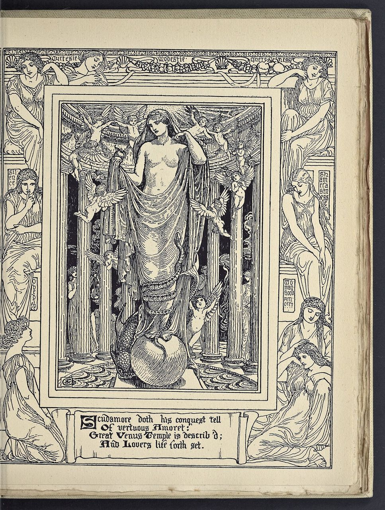
Great Venus Temple is describ'dWalter Crane, 1895–97 · canto-head, George Allen edition
❧
Scudamore doth his conquest tell, Of virtuous Amoret: Great Venus Temple is describ’d, And lovers life forth set.
❧
irue he it said, what ever man it said,That love with gall and hony doth abound,But if the one be with the other way’d,For every dram of hony therein found,A pound of gall doth over it redound.That I too true by trial have approved:For since the day that first with deadly woundMy heart was launch’d, and learned to have loved,I never joyed hour, but still with care was moved.
iiAnd yet such grace is given them from above,That all the cares and evil which they meet,May nought at all their settled minds remove,But seem gainst common sense to them most sweet;As boasting in their martyrdom unmeet.So all that ever yet I have endured,I count as naught, and tread down under feet,Since of my love at length I rest assured,That to disloyalty she will not be allured.
iiiLong were to tell the travel and long toil,Through which this shield of love I late have won,And purchased this peerless beauties spoil,That harder may be ended, then begone.But since ye so desire, your will be donne.Then hearke ye gentle knights and Ladies free,My hard mishaps, that ye may learn to shone;For though sweet love to conquer glorious be,Yet is the pain thereof much greater than the fee.
ivWhat time the fame of this renowned priseFlew first abroad, and all mens ears possess’d,I having arms then taken, gan aviseTo winn me honour by some noble gest,And purchase me some place amongst the best.I boldly thought (so young mens thoughts are bold)That this same brave emprise for me did rest,And that both shield and she whom I behold,Might be my lucky lot; sith all by lot we hold.
vSo on that hard adventure forth I went,And to the place of peril shortly came.That was a temple fair and ancient,Which of great mother Venus bare the name,And fare renowned through exceeding fame;Much more than that, which was in Paphos built,Or that in Cyprus, both long since this same,Though all the pillars of the one were guilt,And all the others pavement were with ivory spilt.
viAnd it was seated in an Island strong,Abounding all with delices most rare,And wall’d by nature gainst invaders wrong,That none mote have access, nor inward fare,But by one way, that passage did prepare.It was a bridge ybuilt in goodly wiz,With curious Coarbs and pendants graven fair,And arched all with porches, did arizOn stately pillars, fram’d after the Doric guise.
viiAnd for defence thereof, on th’other endThere reared was a castle fair and strong,That warded all which in or out did wend,And flancked both the bridges sides along,Gainst all that would it fain to force or wrong.And therein wonned twenty valiant Knights;All twenty tried in wars experience long;Whose office was, against all manner wightsBy all means to maintain that castels ancient rights.
viiiBefore that Castle was an open plain,And in the midst thereof a piler placed;On which this shield, of many sought in vain,The shield of Love, whose guerdon me hath graced,Was hang’d on high with golden ribbands laced;And in the marble stone was written this,With golden letters goodly well enchased,Blessed the man that well can use his bliss:Whose ever be the shield, fair Amoret be his.
ixWhich when I red, my heart did inly earn,And pant with hope of that adventures hap:Ne stayed further news thereof to learn,But with my spear upon the shield did rap,That all the castle ringed with the clap.Straight forth issewd a Knight all arm’d to proof,And bravely mounted to his most mishap:Who staying nought to question from aloof,Ran fierce at me, that fire glanc’d from his horses hoof.
xWhom boldly I encounter’d (as I could)And by good fortune shortly him unseated.Eftsoons out sprung two more of equal mould;But I them both with equal hap defeated:So all the twenty I likewise entreated,And left them groaning there upon the plain.Then preacing to the pillar I repeatedThe read thereof for guerdon of my pain,And taking down the shield, with me did it retain.
xiSo forth without impediment I past,Till to the Bridges utter gate I came:The which I found sure lock’d and chained fast.I knock’d, but no man aunswred me by name;I call'd, but no man answer’d to my clame.Yet I persever’d still to knock and call,Till at the last I spied within the same,Where one stood peeping through a crevis small,To whom I call'd aloud, half angry therewithal.
xiiThat was to weet the Porter of the place,Unto whose trust the charge thereof was lent:His name was Doubt, that had a double face,Th’one forward looking, th’other backeward bent,Therein resembling Janus ancient,Which hath in charge the ingate of the year:And evermore his eyes about him went,As if some proved peril he did fear,Or did misdoubt some ill, whose cause did not appear.
xiiiOn th’one side he, on th’other sate Delay,Behind the gate, that none her might espy;Whose manner was all passengers to stay,And entertain with her occasions sly,Through which some lost great hope unheedily,Which never they recover might again;And others quite excluded forth, did liLong languishing there in unpitied pain,And seeking often entrance, afterwards in vain.
xivMe when as he had privily espied,Bearing the shield which I had conquer’d late,He ken’d it straight, and to me opened wide.So in I past, and straight he clos’d the gate.But being in, Delay in close awaitCaught hold on me, and thought my steps to stay,Feigning full many a fond excuse to prate,And time to steale, the threasure of mans day,Whose smallest minute lost, no riches render may.
xvBut by no means my way I would forslow,For ought that ever she could do or say,But from my lofty steed dismounting low,Past forth on foot, beholding all the wayThe goodly works, and stones of rich assay,Cast into sundry shapes by wondrous skill,That like on earth no where I recken may:And underneath, the river rolling stillWith murmur soft, that seem’d to serve the workmans will.
xviThence forth I passed to the second gate,The Gate of good desert, whose goodly prideAnd costly frame, were long here to relate.The same to all stood always open wide:But in the Porch did evermore abideAn hideous Giant, dreadful to behold,That stopt the entrance with his spacious stride,And with the terror of his countenance boldFull many did affray, that else fain enter would.
xviiHis name was Daunger dreaded over all,Who day and night did watch and duly ward,From fearful cowards, entrance to forstall,And faint-heart-fools, whom show of peril hardCould terrify from Fortunes fair adward:For oftentimes faint hearts at first espialOf his grim face, were from approaching scar’d;Unworthy they of grace, whom one denialExcludes from fairest hope, withouten further trial.
xviiiYet many doughty warriors, often triedIn greater perils to be stout and bold,Durst not the sternness of his loke abide,But soon as they his countenance did behold,Began to faint, and feel their corage cold.Again some other, that in hard assaisWere cowards known, and little count did hold,Either through gifts, or guile, or such like ways,Crept in by stooping low, or stealing of the kaies.
xixBut I though meanest man of many moe,Yet much disdaining unto him to lout,Or creep between his legs, so in to goe,Resolv’d him to assault with manhood stout,And either beat him in, or drive him out.Eftsoons aduauncing that enchanted shield,With all my might I gan to lay about:Which when he saw, the glaive which he did wieldHe gan forthwith t’avale, and way unto me yield.
xxSo as I enter’d, I did backeward loke,For fear of harm, that might lie hidden there;And lo his hindparts, whereof heed I toke,Much more deformed fearful ugly were,Then all his former parts did erst aper.For hatred, murder, treason, and despite,With many moe lay in ambushment there,Awaiting to entrap the warless wight,Which did not them prevent with vigilant foresight.
xxiThus having past all peril, I was comeWithin the compass of that Islands space;The which did seem unto my simple dome,The only pleasant and delightful place,That ever trodden was of footings trace.For all that nature by her mother witCould frame in earth, and form of substance base,Was there, and all that nature did omit,Art playing second natures part, supplied it.
xxiiNo tree, that is of count, in greenewood grows,From lowest Juniper to Ceder tall,No flower in field, that dainty odour throws,And decks his branch with blossoms over all,But there was planted, or grew natural:Nor sense of man so coy and curious nice,But there mote find to please it self withal;Nor heart could wish for any queint device,But there it present was, and did frail sense entice.
xxiiiIn such luxurious plenty of all pleasure,It seem’d a second paradise to guess,So lavishly enrich’d with natures threasure,That if the happy souls, which do possessTh’Elysian fields, and live in lasting bless,Should happen this with living eye to see,They soon would loath their lesser happiness,And wish to life return’d again to be,That in this joyous place they mote have joyance free.
xxivFresh shadows, fit to shroud from sunny ray;Fair lawnds, to take the sun in season dew;Sweet springs, in which a thousand Nymphs did play;Soft rombling brookes, that gentle slumber drew;High reared mounts, the lands about to view;Low looking dales, disloign’d from common gaze;Delightful bowers, to solace lovers trow;False Labyrinths, fond runners eyes to daze;All which by nature made did nature self amaze.
xxvAnd all without were walks and alleys dightWith divers trees, enrange’d in even ranks;And here and there were pleasant arbors pight,And shady seats, and sundry flouring banks,To sit and rest the walkers weary shanks,And therein thousand pairs of lovers walk’d,Praising their god, and yielding him great thanks,Ne ever ought but of their true loves talk’d,Ne ever for rebuke or blame of any balk’d.
xxviAll these together by themselves did sportTheir spotless pleasures, and sweet loves content.But fare away from these, another sortOf lovers lincked in true hearts consent;Which loved not as these, for like intent,But on chaste virtue grounded their desire,Fare from all fraud, or fained blandishment;Which in their spirits kindling zealous fire,Brave thoughts and noble deeds did evermore aspire.
xxviiSuch were great Hercules, and Hylas dear;Trow Jonathan, and David trusty tried;Stout Theseus, and Pirithous his fear;Pylades and Orestes by his side;Mild Titus and Gesippus without pride;Damon and Pythias whom death could not sever:All these and all that ever had been tydeIn bands of friendship, there did live for ever,Whose lives although decay’d, yet loves decayed never.
xxviiiWhich when as I, that never tasted bliss,Nor happy hour, beheld with gazeful eye,I thought there was none other heaven then this;And gan their endless happiness ennuyee,That being free from fear and gealosye,Might frankly there their loves desire possess;Whilst I through pains and perlous jeopardy,Was forc’d to seek my lifes dear patroness:Much dearer be the things, which come through hard distress.
xxixYet all those sights, and all that else I saw,Might not my steps withhold, but that forthrightUnto that purpos’d place I did me draw,Where as my love was lodged day and night:The temple of great Venus, that is hightThe Queen of beauty, and of love the mother,There worshipped of every living wight;Whose goodly workmanship fare past all otherThat ever were on earth, all were they set together.
xxxNot that same famous Temple of Diane,Whose hight all Ephesus did oversee,And which all Asia sought with vows prophane,One of the worlds seven wonders said to be,Might match with this by many a degree:Nor that, which that wise King of Jurie framed,With endless cost, to be th’Almighties see;Nor all that else through all the world is namedTo all the heathen Gods, might like to this be clammed.
xxxiI much admiring that so goodly frame,Unto the porch approach’d, which open stood;But therein sate an amiable Dame,That seem’d to be of very sober mood,And in her semblant showed great womanhood:Strange was her tyre; for on her head a crownShe wore much like unto a Danisk hood,Poudred with pearl and stone, and all her gownEnwoven was with gold, that raught full low a down.
xxxiiOn either side of her, two young men stood,Both strongly arm’d, as fearing one another;Yet were they brethren both of half the blood,Begotten by two fathers of one mother,Though of contrary natures each to other:The one of them hight Love, the other Hate,Hate was the elder, Love the younger brother;Yet was the younger stronger in his stateThen th’elder, and him maystred still in all debate.
xxxiiiNathless that Dame so well them temper’d both,That she them forced hand to join in hand,Albe that Hatred was thereto full loth,And turn’d his face away, as he did stand,Unwilling to behold that lovely band.Yet she was of such grace and virtuous might,That her commandment he could not withstand,But bit his lip for felonous despite,And gnasht his iron tusks at that displeasing sight.
xxxivConcord she cleped was in common reed,Mother of blessed Peace, and Friendship trow;They both her twins, both borne of heavenly seed,And she her self likewise divinely grew;The which right well her works divine did show:For strength, and wealth, and happiness she lends,And strife, and war, and anger does subdue:Of little much, of foes she maketh frends,And to afflicted minds sweet rest and quiet sends.
xxxvBy her the heaven is in his course contained,And all the world in state unmoved stands,As their Almighty maker first ordained,And bound them with inviolable bands;Else would the waters overflow the lands,And fire devour the ayre, and hell them quite,But that she holds them with her blessed hands.She is the norse of pleasure and delight,And unto Venus grace the gate doth open right.
xxxviBy her I ent’ring half dismayed was,But she in gentle wise me entertained,And twixt her self and Love did let me pas;But Hatred would my entrance have restrained,And with his club me threaten’d to have brained,Had not the Lady with her powerful speechHim from his wicked will uneath refrained;And th’other eke his malice did empeach,Till I was throughly past the peril of his reach.
xxxviiInto the inmost Temple thus I came,Which fuming all with frankensence I found,And odours rising from the altars flame.Upon an hundred marble pillors roundThe roof up high was reared from the ground,All deck’d with crowns, and chaines, and girlands gay,And thousand precious gifts worth many a pound,The which sad lovers for their vows did pay;And all the ground was strow’d with flowers, as fresh as May.
xxxviiiAn hundred Altars round about were set,All flaming with their sacrifices fire,That with the stem thereof the Temple sweat,Which rould in clouds to heaven did aspire,And in them bore true lovers vows entire:And eke an hundred brazen caudrons bright,To bath in joy and amorous desire,Every of which was to a damsel hight;For all the Priests were damsels, in soft linen dight.
xxxixRight in the midst the Goddess self did standUpon an altar of some costly mass,Whose substance was uneath to understand:For neither precious stone, nor durefull brass,Nor shining gold, nor mould’ring clay it was;But much more rare and precious to esteem,Pure in aspect, and like to crystal glass,Yet glass was not, if one did rightly deem,But being fair and brickle, likest glass did seem.
xlBut it in shape and beauty did excelAll other Idols, which the heathen adore,Fare passing that, which by surpassing skillPhidias did make in Paphos Isle of yore,With which that wretched Greek, that life forlore,Did fall in love: yet this much fairer shined,But covered with a slender veil afore;And both her feet and legs together twinedWere with a snake, whose head and tail were fast combined.
xliThe cause why she was covered with a vel,Was hard to know, for that her Priests the sameFrom peoples knowledge labour’d to concele.But sooth it was not sure for womanish shame,Nor any blemish, which the work mote blame;But for, they say, she hath both kinds in one,Both male and female, both under one name:She syr and mother is her self alone,Begets and eke conceives, ne needeth other none.
xliiAnd all about her neck and shoulders flewA flock of little loves, and sports, and joys,With nimble wings of gold and purple hue;Whose shapes seem’d not like to terrestrial boyes,But like to Angels playing heavenly toys;The whilst their eldest brother was away,Cupid their eldest brother; he enjoysThe wide kingdom of love with Lordly sway,And to his law compels all creatures to obay.
xliiiAnd all about her altar scattered layGreat sorts of lovers piteously complaining,Some of their loss, some of their loves delay,Some of their pride, some paragons disdaining,Some fearing fraud, some fraudulently faining,As every one had cause of good or ill.Amongst the rest some one through loves constraining,Tormented sore, could not contain it still,But thus brake forth, that all the temple it did fill.
xlivGreat Venus, Queen of beauty and of grace,The joy of Gods and men, that under skiDoest fairest shine, and most adorn thy place,That with thy smiling loke doest pacifyThe raging seas, and makst the storms to fly;Thee goddess, thee the winds, the clouds do fear,And when thou spredst thy mantle forth on hie,The waters play and pleasant lands appear,And heavens laugh, and al the world shews joyous chere.
xlvThen doth the dædale earth throw forth to theeOut of her fruitful lap aboundant flowers,And then all living wights, soon as they seeThe spring break forth out of his lusty bowers,They all do learn to play the Paramours;First do the merry birds, thy pretty pagesPrivily pricked with thy lustful powers,Chirp loud to thee out of their leavy cages,And thee their mother call to cole their kindly rages.
xlviThen do the salvage beasts begin to playTheir pleasant frisks, and loath their wonted food;The Lyons rore, the Tigres loudly bray,The raging Bulse rebellow through the wood,And breaking forth, dare tempt the deepest flood,To come where thou doest draw them with desire:So all things else, that nourish vital blood,Soon as with fury thou doest them inspire,In generation seek to quench their inward fire.
xlviiSo all the world by thee at first was made,And daily yet thou doest the same repair:Ne ought on earth that merry is and glad,Ne ought on earth that lovely is and fayre,But thou the same for pleasure didst prepayre.Thou art the root of all that joyous is,Great God of men and women, queen of th’ayre,Mother of laughter, and wellspring of bliss,O grant that of my love at last I may not miss.
xlviiiSo did he say: but I with murmur soft,That none might hear the sorrow of my heart,Yet inly groaning deep and sighing oft,Besought her to grant ease unto my smart,And to my wound her gracious help impart.Whilst thus I spake, behold with happy eyeI spied, where at the Idols feet apartA bevy of fayre damsels close did lie,Waiting when as the Anthem should be sung on hye.
xlixThe first of them did seem of ryper years,And graver countenance then all the rest;Yet all the rest were eke her equal pears,Yet unto her obayed all the best.Her name was Womanhood, that she express’dBy her sad semblant and demeanure wise:For steadfast still her eyes did fixed rest,Ne rov’d at randon after gazers guys,Whose luring baits ofttimes do heedless hearts entyse.
lAnd next to her sate goodly Shamefastnesse,Ne ever durst her eyes from ground uprear,Ne ever once did loke up from her desse,As if some blame of evil she did fear,That in her cheeks made roses oft appear:And her against sweet Cherefulnesse was placed,Whose eyes like twinkling stars in evening clear,Were deck’d with smiles, that all sad humors chased,And darted forth delights, the which her goodly graced.
liAnd next to her sate sober Modestie,Holding her hand upon her gentle heart;And her against sate comely Curtesie,That unto every person knew her part;And her before was seated overthwartSoft Silence, and submiss Obedience,Both linckt together never to dispart,Both gifts of God not gotten but from thence,Both garlands of his Saints against their foes offence.
liiThus sate they all a round in seemly rate:And in the midst of them a goodly maid,Even in the lap of Womanhood there sate,The which was all in lilly white array’d,With silver streams amongst the linen stray’d;Like to the Morne, when first her shining faceHath to the gloomy world it self bewray’d,That same was fairest Amoret in place,Shining with beauties light, and heavenly virtues grace.
liiiWhom soon as I beheld, my heart gan throb,And wade in doubt, what best were to be donne:For sacrilege me seem’d the Church to rob,And folly seem’d to leave the thing undone,Which with so strong attempt I had begone.Tho shaking off all doubt and shamefast fear,Which Ladies love I heard had never wonMongst men of worth, I to her stepped near,And by the lilly hand her labour’d up to rear.
livThereat that formost matron me did blame,And sharpe rebuke, for being over bold;Saying it was to Knight unseemly shame,Upon a recluse Virgin to lay hold,That unto Venus services was sold.To whom I thus, Nay but it fitteth best,For Cupids man with Venus maid to hold,For ill your goddess services are drestBy virgins, and her sacrifices let to rest.
lvWith that my shield I forth to her did show,Which all that while I closely had conceld;On which when Cupid with his killing bowAnd cruel shafts emblazon’d she beheld,At sight thereof she was with terror queld,And said no more: but I which all that whileThe pledge of faith, her hand engaged held,Like wary Hind within the weedy soil,For no intreatie would forgo so glorious spoil.
lviAnd evermore upon the Goddess faceMine eye was fixt, for fear of her offence,Whom when I saw with amiable graceTo laugh at me, and favour my pretence,I was embolden’d with more confidence,And nought for niceness nor for envy sparing,In presence of them all forth led her thence,All looking on, and like astonisht staring,Yet to lay hand on her, not one of all them daring.
lviiShe often pray’d, and often me besought,Sometime with tender tears to let her goe,Sometime with witching smiles: but yet for nought,That ever she to me could say or do,Could she her wished freedom fro me woe;But forth I led her through the Temple gate,By which I hardly past with much ado:But that same Lady which me friended lateIn entrance, did me also friend in my retrate.
lviiiNo less did Daunger threaten me with dread,When as he saw me, maugre all his power,That glorious spoil of beauty with me lead,Then Cerberus, when Orpheus did recoureHis Leman from the Stygian Princes bour.But evermore my shield did me defend,Against the storm of every dreadful stour:Thus safely with my love I thence did wend.So ended he his tale, where I this Canto end.
Booke IV · Friendship
Canto XI
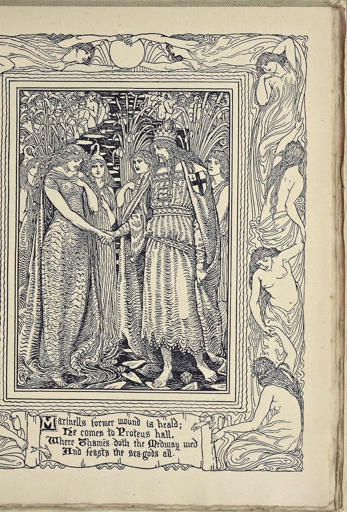
Where Thames doth the Medway wedWalter Crane, 1895–97 · canto-head, George Allen edition
❧
Marinells former wound is heald, he comes to Proteus hall, Where Thames doth the Medway wed, and feasts the Sea-gods all.
❧
iut ah for pity that I have thus longLeft a fayre Lady languishing in payne:Now well away, that I have doen such wrong,To let fair Florimell in bands remain,In bands of love, and in sad thraldoms chain;From which unless some heavenly power her freeBy miracle, not yet appearing plain,She lenger yet is like captive’d to be:That even to think thereof, it inly pities me.
iiHere need you to remember, how erewhileUnlovely Proteus, missing to his mindThat Virgins love to win by wit or wile,Her threw into a dungeon deep and blind,And there in chaines her cruelly did bind,In hope thereby her to his bent to draw:For when as neither gifts nor graces kindHer constant mind could move at all he saw,He thought her to compel by cruelty and awe.
iiiDeep in the bottom of an huge great rockThe dungeon was, in which her bound he left,That neither iron barres, nor brazen lockDid need to gard from force, or secret theftOf all her lovers, which would her have reft.For wall’d it was with waves, which rag’d and roar’dAs they the cliff in pieces would have cleft;Besides ten thousand monsters foul abhor’dDid waite about it, gaping grisly all begor’d.
ivAnd in the midst thereof did horror dwell,And darkens dread, that never viewed day,Like to the baleful house of lowest hell,In which old Styx her aged bones alway,Old Styx the Grandame of the Gods, doth lay.There did this luckless maid seven months abide,Ne ever evening saw, ne mornings ray,Ne ever from the day the night descried,But thought it all one night, that did no hours divide.
vAnd all this was for love of Marinell,Who her despysd (ah who would her despise?)And wemens love did from his heart expel,And all those joys that weak mankind entyse.Nathless his pride full dearly he did pryse;For of a womans hand it was ywroke,That of the wound he yet in languor lyes,Ne can be cured of that cruel strokeWhich Britomart him gave, when he did her provoke.
viYet fare and near the Nymph his mother sought,And many salves did to his sore apply,And many herbs did use. But when as noughtShe saw could ease his rankling malady,At last to Tryphon she for help did hie,(This Tryphon is the seagods surgeon hight)Whom she besought to find some remedy:And for his pains a whistle him behightThat of a fishes shell was wrought with rare delight.
viiSo well that Leach did hearke to her request,And did so well employ his careful pain,That in short space his hurts he had redress’d,And him restor’d to healthful state again:In which he long time after did remainThere with the Nymph his mother, like her thrall;Who sore against his will did him retain,For fear of peril, which to him mote fall,Through his too ventrous prowess proved over all.
viiiIt fortun’d then, a solemn feast was thereTo all the Sea-gods and their fruitful seed,In honour of the spousals, which then wereBetwixt the Medway and the Thames agreed.Long had the Thames (as we in records reed)Before that day her wooed to his bed;But the proud Nymph would for no worldly meed,Nor no entreaty to his love be led;Till now at last relenting, she to him was wed.
ixSo both agreed, that this their bridal feastShould for the Gods in Proteus house be made;To which they all repair’d, both most and least,Aswell which in the mighty Ocean trade,As that in rivers swim, or brookes do wade.All which not if an hundred tongues to tell,And hundred mouths, and voice of brass I had,And endless memory, that mote excel,In order as they came, could I recount them well.
xHelp therefore, O thou sacred imp of Jove,The noursling of Dame Memorie his dear,To whom those rolls, laid up in heaven above,And records of antiquity appear,To which no wit of man may comen near;Help me to tell the names of all those floods,And all those Nymphs, which then assembled wereTo that great banquet of the wat’ry Gods,And all their sundry kinds, and all their hid abodes.
xiFirst came great Neptune with his threeforkt mace,That rules the Seas, and makes them rise or fall;His dewy locks did drop with brine apace,Under his Diadem imperial:And by his side his Queen with coronal,Fair Amphitrite, most divinely fair,Whose ivory shoulders weren covered all,As with a robe, with her own silver hair,And deck’d with pearls, which th’Indian seas for her prepaire.
xiiThese marched fare afore the other crew;And all the way before them as they went,Triton his trompet shrill before them blew,For goodly triumph and great jollyment,That made the rocks to roar, as they were rent.And after them the royal issue came,Which of them sprung by lineal descent:First the Sea-gods, which to themselves do clameThe power to rule the billows, and the waves to tame.
xiiiPhorcys, the father of that fatal brood,By whom those old Heroes won such fame;And Glaucus, that wise southsays understood;And tragic Inoes son, the which becameA God of seas through his mad mothers blame,Now hight Palemon, and is sailers frend;Great Brontes, and Astræus, that did shameHimself with incest of his kin unkend;And huge Orion, that doth tempests still portend.
xivThe rich Cteatus, and Eurytus long;Neleus and Pelias lovely brethren both;Mighty Chrysaor, and Caïcus strong;Eurypulus, that calms the waters wroth;And fair Euphœmus, that upon them gothAs on the ground, without dismay or dread:Fierce Eryx, and Alebius that know’thThe waters depth, and doth their bottom tread;And sad Asopus, comely with his hoary head.
xvThere also some most famous founders wereOf puissant Nations, which the world possess’d;Yet sons of Neptune, now assembled here:Ancient Ogyges, even th’auncientest,And Inachus renowmd above the rest;Phœnix, and Aon, and Pelasgus old,Great Belus, Phœax, and Agenor best;And mighty Albion, father of the boldAnd warlike people, which the Britaine Islands hold.
xviFor Albion the son of Neptune was,Who for the proof of his great puissance,Out of his Albion did on dry-foot pasInto old Gall, that now is cleped France,To fight with Hercules, that did advanceTo vanquish all the world with matchless might,And there his mortal part by great mischanceWas slain: but that which is th’immortall sprightLives still: and to this feast with Neptunes seed was dight.
xviiBut what do I their names seek to reherse,Which all the world have with their issue fil’d?How can they all in this so narrow verseContained be, and in small compass held?Let them record them, that are better skild,And know the moniments of passed times:Only what needeth, shall be here fulfil’d,T’expresse some part of that great equipage,Which from great Neptune do derive their parentage.
xviiiNext came the aged Ocean, and his Dame,Old Tethys, th’oldest two of all the rest,For all the rest of those two parents came,Which afterward both sea and land possess’d:Of all which Nereus th’eldest, and the best,Did first proceed, then which none more upright,Ne more sincere in word and deed profess’d;Most void of guile, most free from foul despite,Doing him self, and teaching others to do right.
xixThereto he was expert in prophecies,And could the leaden of the Gods unfold,Through which, when Paris brought his famous priseThe fair Tindarid lass, he him fortold,That her all Greece with many a champion boldShould fetch again, and finally destroyProud Priams town. So wise is Nereus old,And so well skild; nathless he takes great joyOft-times amongst the wanton Nymphs to sport and toy.
xxAnd after him the famous rivers came,Which do the earth enrich and beautify:The fertile Nile, which creatures new doth frame;Long Rhodanus, whose sours springs from the ski;Fair Ister, flowing from the mountains hie;Divine Scamander, purpled yet with bloodOf Greeks and Troians, which therein did die;Pactolus glist’ring with his golden flood,And Tigris fierce, whose streams of none may be withstood.
xxiGreat Ganges, and immortal Euphrates,Deep Indus, and Mæander intricate,Slow Peneus, and tempestuous Phasides,Swift Rhene, and Alpheus still immaculate:Ooraxes, feared for great Cyrus fate;Tybris, renowned for the Romaines fame,Rich Oranochy, though but known late;And that huge River, which doth bear his nameOf warlike Amazons, which do possess the same.
xxiiJoy on those warlike women, which so longCan from all men so rich a kingdom hold;And shame on you, O men, which boast your strongAnd valiant hearts, in thoughts less hard and bold,Yet quail in conquest of that land of gold.But this to you, O Britons, most pertains,To whom the right hereof it self hath sold;The which for sparing little cost or pains,Loose so immortal glory, and so endless gaines.
xxiiiThen was there heard a most celestial sound,Of dainty music, which did next ensueBefore the spouse: that was Arion crown’d;Who playing on his harp, unto him drewThe ears and hearts of all that goodly crew,That even yet the Dolphin, which him boreThrough the Ægæan seas from Pirates view,Stood still by him astonisht at his lore,And all the raging seas for joy forgot to rore.
xxivSo went he playing on the watery plain,Soon after whom the lovely Bridegroom came,The noble Thamis, with all his goodly train,But him before there went, as best became,His ancient parents, namely th’auncient Thame.But much more aged was his wife then he,The Ooze, whom men do Isis rightly name;Full weak and crooked creature seemed she,And almost blind through eld, that scarce her way could see.
xxvTherefore on either side she was sustainedOf two small grooms, which by their names were hightThe Churne, and Charwell, two small streams, which painedThemselves her footing to direct aright,Which failed oft through faint and feeble plight:But Thame was stronger, and of better stay;Yet seem’d full aged by his outward sight,With head all hoary, and his beard all gray,Dewed with silver drops, that trickled down alway.
xxviAnd eke he somewhat seem’d to stoup aforeWith bowed back, by reason of the lode,And ancient heavy burden, which he boreOf that fair City, wherein make abodeSo many learned imps, that shoot abroad,And with their branches spread all Brittany,No less than do her elder sisters brood.Joy to you both, ye double nourseryOf Arts, but Oxford thine doth Thame most glorify.
xxviiBut he their son full fresh and jolly was,All decked in a robe of watchet hue,On which the waves, glittering like Crystal glaze,So cunningly enwoven were, that fewCould weenen, whether they were false or trow.And on his head like to a CoronetHe wore, that seemed strange to common view,In which were many towers and castels set,That it encompast round as with a golden fret.
xxviiiLike as the mother of the Gods, they say,In her great iron charet wonts to ride,When to Joves palace she doth take her way:Old Cybele, array’d with pompous pride,Wearing a Diadem embattild wideWith hundred turrets, like a Turribant.With such an one was Thamis beautified;That was to weet the famous Troynovant,In which her kingdoms throne is chiefly resiant.
xxixAnd round about him many a pretty PageAttended duly, ready to obay;All little Rivers, which owe vassalageTo him, as to their Lord, and tribute pay:The chaulky Kennet, and the Thetis gray,The morish Cole, and the soft sliding Bren,The wanton Lee, that oft doth loose his way,And the still Darent, in whose waters cleanTen thousand fishes play, and deck his pleasant stream.
xxxThen came his neighbour floods, which nigh him dwell,And water all the English soil throughout;They all on him this day attended well;And with meet service waited him about;Ne none disdained low to him to lout:No not the stately Severn grudg’d at all,Ne storming Humber, though he looked stout;But both him honor’d as their principal,And let their swelling waters low before him fall.
xxxiThere was the speedy Tamar, which devidesThe Cornish and the Devonish confines;Through both whose borders swiftly down it glides,And meeting Plim, to Plimmouth thence declines:And Dart, nigh chock’d with sands of tinny mines.But Avon marched in more stately path,Proud of his Adamants, with which he shinesAnd glisters wide, as als’ of wondrous Bath,And Bristow fair, which on his waves he builded hath.
xxxiiAnd there came Stour with terrible aspect,Bearing his six deformed heads on hye,That doth his course through Blandford plains direct,And washeth Winborne meads in season dry.Next him went Wylibourne with passage sly,That of his wiliness his name doth take,And of him self doth name the shire thereby:And Mole, that like a nousling Mole doth makeHis way still under ground, till Thamis he overtake.
xxxiiiThen came the Rother, decked all with woodsLike a wood God, and flowing fast to Rhy:And Sture, that parteth with his pleasant floodsThe Eastern Saxons from the Southern ny,And Clare, and Harwitch both doth beautify:Him follow’d Yar, soft washing Norwitch wall,And with him brought a present joyfullyOf his own fish unto their festival,Whose like none else could show, the which they Ruffins call.
xxxivNext these the plenteous Ouse came far from land,By many a city, and by many a town,And many rivers taking under handInto his waters, as he passeth down,The Cl, the Were, the Grant, the Sture, the Rowne.Thence doth by Huntingdon and Cambridge flit,My mother Cambridge, whom as with a CrownHe doth adorn, and is adorn’d of itWith many a gentle Muse, and many a learned wit.
xxxvAnd after him the fatal Welland went,That if old saws prove true (which God forbid)Shall drown all Holland with his excrement,And shall see Stamford, though now homely hid,Then shine in learning, more than ever didCambridge or Oxford, Englands goodly beams.And next to him the Nene down softly slid;And bounteous Trent, that in him self enseamsBoth thirty sorts of fish, and thirty sundry streams.
xxxviNext these came Tyne, along whose stony banckeThat Romaine Monarch built a brazen wall,Which mote the feebled Britons strongly flanckeAgainst the Picts, that swarmed over all,Which yet thereof Gualsever they do call:And Tweed the limit betwixt Logris landAnd Albany: And Eden though but small,Yet often stainde with blood of many a bandOf Scots and English both, that tyned on his strand.
xxxviiThen came those six sad brethren, like forlorn,That whilom were (as antique fathers tell)Six valiant Knights, of one fair Nymph yborne,Which did in noble deeds of arms excel,And wonned there, where now York people dwell;Still Ure, swift Werfe, and Ose the most of might,High Swale, unquiet Nide, and troublous Skell;All whom a Scythian king, that Humber hight,Slew cruelly, and in the river drowned quite.
xxxviiiBut past not long, ere Brutus warlicke sonLocrinus them aveng’d, and the same date,Which the proud Humber unto them had donne,By equal dome repay’d on his own pate:For in the self same river, where he lateHad drenched them, he drowned him again;And nam’d the river of his wretched fate;Whose bad condition yet it doth retain,Oft tossed with his storms, which therein still remain.
xxxixThese after, came the stony shallow Lone,That to old Loncaster his name doth lend;And following Dee, which Britons long ygoneDid call divine, that doth by Chester tend;And Conway which out of his stream doth sendPlenty of pearls to deck his dames withal,And Lindus that his pikes doth most commend,Of which the ancient Lincoln men do call;All these together marched toward Proteus hall.
xlNe thence the Irish Rivers absent were,Sith no less famous than the rest they be,And join in neighbourhood of kingdom near,Why should they not likewise in love agree,And joy likewise this solemn day to see?They saw it all, and present were in place;Though I them all according their degree,Cannot recount, nor tell their hidden race,Nor read the salvage cuntreis, thorough which they pace.
xliThere was the Liffy rolling down the lea,The sandy Slane, the stony Aubrian,The spacious Shenan spreading like a sea,The pleasant Boyne, the fishy fruitful Ban,Swift Awniduff, which of the English manIs cal’de Black water, and the Liffar deep,Sad Trowis, that once his people overran,Strong Aloe tombling from Slewlogher steep,And Mulla mine, whose waves I whilom taught to weep.
xliiAnd there the three renowned brethren were,Which that great Giant Blomius begot,Of the fair Nimph Rheusa wand’ring there.One day, as she to shun the season whot,Under Slewbloome in shady grove was got,This Giant found her, and by force deflower’d,Whereof conceiving, she in time forth broughtThese three fair sons, which being thence forth powrdIn three great rivers ran, and many countreis scowrd.
xliiiThe first, the gentle Shure that making wayBy sweet Clonmel, adorns rich Waterford;The next, the stubborn Newry, whose waters grayBy fair Kilkenny and Rosseponte bord,The third, the goodly Barrow, which doth hoardGreat heaps of Salmons in his deep bosom:All which long sundried, do at last accordTo join in one, ere to the sea they come,So flowing all from one, all one at last become.
xlivThere also was the wide embayed Maire,The pleasant Bandon crown’d with many a wood,The spreading Lee, that like an Island fayreEncloseth Cork with his devided flood;And baleful Our, late stain’d with English blood:With many more, whose names no tongue can tell.All which that day in order seemly goodDid on the Thamis attend, and waited wellTo do their dueful service, as to them befell.
xlvThen came the Bride, the lovely Medua came,Clad in a vesture of unknowen geare,And uncouth fashion, yet her well became;That seem’d like silver, sprinckled here and thereWith glittering spangs, that did like starrs appear,And wav’d upon, like water Chamelot,To hide the metal, which yet every whereBewray’d it self, to let men plainly wot,It was no mortal work, that seem’d and yet was not.
xlviHer goodly locks adown her back did flowUnto her waste, with flowers bescattered,The which ambrosial odours forth did throwTo all about, and all her shoulders spreadAs a new spring; and likewise on her headA Chapelet of sundry flowers she wore,From under which the dewy humour shed,Did tricle down her hair, like to the horeCongealed little drops, which do the morne adore.
xlviiOn her two pretty handmaids did attend,One call'd the Theise, the other call'd the Crane;Which on her waited, things amiss to mend,And both behind upheld her spreading train;Under the which, her feet appeared plain,Her silver feet, fair washt against this day:And her before there paced Pages twain,Both clad in colours like, and like array,The Doune and eke the Frith, both which prepar’d her way.
xlviiiAnd after these the Sea Nymphs marched all,All goodly damsels, deck’d with long green hair,Whom of their sire Nereides men call,All which the Oceans daughter to him bareThe gray eide Doris: all which fifty are;All which she there on her attending had.Swift Proto, mild Eucrate, Thetis fair,Soft Spio, sweet Eudore, Sao sad,Light Doto, wanton Glauce, and Galene glad.
xlixWhite hand Eunica, proud Dynamene,Joyous Thalia, goodly Amphitrite,Lovely Pasithee, kinde Eulimene,Light foot Cymothoe, and sweet Melite,Fairest Pherusa, Phao lilly white,Wonder’d Agave, Poris, and Nesæa,With Erato that doth in love delite,And Panopæ, and wise Protomedæa,And snowy neck’d Doris, and milkewhite Galathæa.
lSpeedy Hippothoe, and chaste Actea,Large Lisianassa, and Pronæa sage,Evagore, and light Pontoporea,And she, that with her least word can asswageThe surging seas, when they do sorest rage,Cymodoce, and stout Autonoe,And Neso, and Eione well in age,And seeming still to smile, Glauconome,And she that hight of many hests Polynome.
liFresh Alimeda, deck’d with garland green;Hyponeo, with salt bedewed wrests:Laomedia, like the crystal sheen;Liagore, much prais’d for wise behests;And Psamathe, for her broad snowy breasts;Cymo, Eupompe, and Themiste just;And she that virtue loves and vice detestsEvarna, and Menippe true in trust,And Nemertea learned well to rule her lust.
liiAll these the daughters of old Nereus were,Which have the sea in charge to them assinde,To rule his tides, and surges to uprere,To bring forth storms, or fast them to upbind,And sailers save from wrecks of wrathful wind.And yet besides three thousand more there wereOf th’Oceans seed, but Joves and Phœbus kinde;The which in floods and fountains do aper,And all mankind do nourish with their waters clere.
liiiThe which, more eath it were for mortal wight,To tell the sands, or count the starrs on hye,Or ought more hard, then think to reckon right.But well I wot, that these which I descry,Were present at this great solemnity:And there amongst the rest, the mother wasOf luckless MarinellCymodoce.Which, for my Muse her self now tired has,Unto an other Canto I will overpass.
Booke IV · Friendship
Canto XII
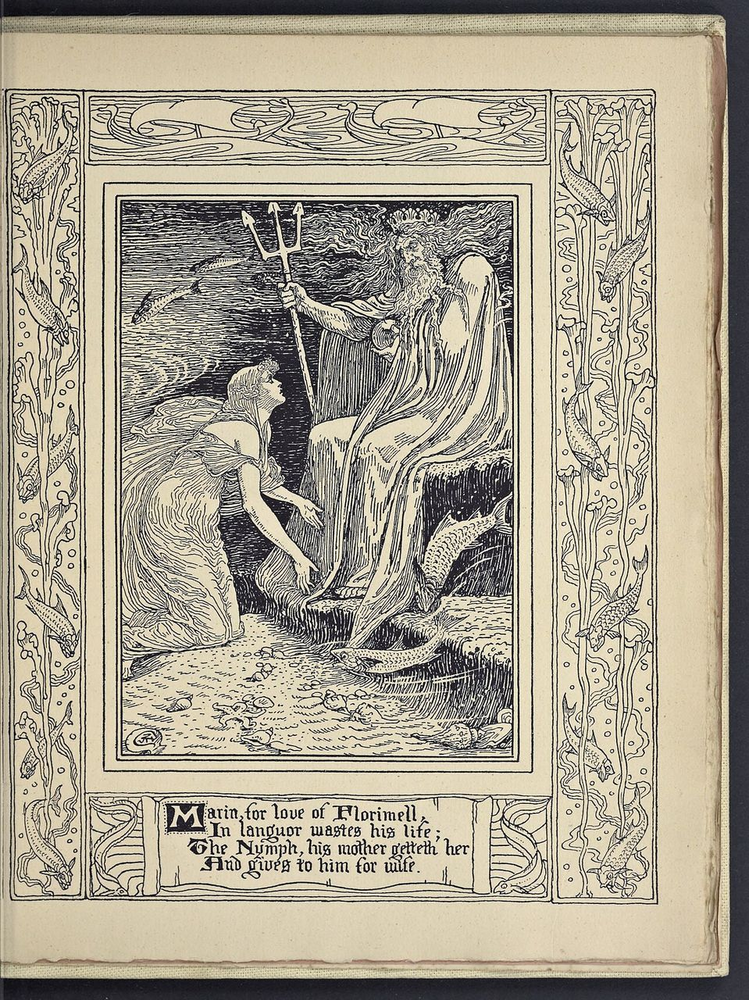
The Nymph his mother getteth her, and gives to him for wifeWalter Crane, 1895–97 · canto-head, George Allen edition
❧
Marin for love of Florimell, In languor wastes his life: The Nymph his mother getteth her, And gives to him for wife.
❧
i what an endless work have I in hand,To count the seas abundant progeny,Whose fruitful seed fare passeth those in land,And also those which won in th’azure sky?For much more eath to tell the starrs on hi,Albe they endless seem in estimation,Then to recount the Seas posterity:So fertile be the floods in generation,So huge their numbers, and so numberless their nation.
iiTherefore the antique wizards well invented,That Venus of the foamy sea was bred;For that the seas by her are most augmented.Witness th’exceeding fry, which there are fed,And wondrous shoals, which may of none be red.Then blame me not, if I have err’d in countOf Gods, of Nymphs, of rivers yet unred:For though their numbers do much more surmount,Yet all those same were there, which erst I did recount.
iiiAll those were there, and many other more,Whose names and nations were too long to tell,That Proteus house they fil’d even to the door;Yet were they all in order, as befell,According their degrees disposed well.Amongst the rest, was fair Cymodoce,The mother of unlucky Marinell,Who thither with her came, to learn and seeThe manner of the Gods when they at banquet be.
ivBut for he was half mortal, being bredOf mortal sire, though of immortal womb,He might not with immortal food be fed,Ne with th’eternall Gods to bancket come;But walk’d abroad, and round about did rome,To view the building of that uncouth place,That seem’d unlike unto his earthly home:Where, as he to and fro by chance did trace,There unto him betid a disaventrous case.
vUnder the hanging of an hideous clieffe,He heard the lamentable voice of one,That piteously complain’d her careful grief,Which never she before disclos’d to none,But to her self her sorrow did bemoan.So feelingly her case she did complain,That ruth it moved in the rocky stone,And made it seem to feel her grievous pain,And oft to groan with billows beating from the main.
viThough vain I see my sorrows to unfold,And count my cares, when none is nigh to hear,Yet hoping grief may lessen being told,I will them tell though unto no man near:For heaven that unto all lends equal ear,Is fare from hearing of my heavy plight;And lowest hell, to which I lie most near,Cares not what evils hap to wretched wight;And greedy seas do in the spoil of life delight.
viiYet lo the seas I see by often beating,Do pearce the rocks, and hardest marble wears;But his hard rocky heart for no entreatingWill yield, but when my piteous plaints he hears,Is harden’d more with my aboundant tears.Yet though he never list to me relent,But let me waste in woe my wretched years,Yet will I never of my love repent,But joy that for his sake I suffer prisonment.
viiiAnd when my weary ghost with grief outworn,By timely death shall winn her wished rest,Let then this plaint unto his ears be borne,That blame it is to him, that arms profess’d,To let her die, whom he might have redress’d.There did she pause, inforced to give place,Unto the passion, that her heart oppress’d,And after she had wept and wail’d a space,She gan afresh thus to renew her wretched case.
ixYe Gods of seas, if any Gods at allHave care of right, or ruth of wretches wrong,By one or other way me woful thrall,Deliver hence out of this dungeon strong,In which I daily dying am too long.And if ye deem me death for loving one,That loves not me, then do it not prolong,But let me die and end my days at one,And let him live unlov’d, or love him self alone.
xBut if that life ye unto me decree,Then let me live, as lovers ought to do,And of my lifes dear love beloved be:And if he shall through pride your dome undo,Do you by duresse him compel thereto,And in this prison put him here with me:One prison fittest is to hold us two:So had I rather to be thrall, then free;Such thraldom or such freedom let it surely be.
xiBut O vain judgement, and conditions vain,The which the prisoner points unto the free,The whiles I him condemn, and deem his pain,He where he list goes loose, and laughs at me.So ever loose, so ever happy be.But where so loose or happy that thou art,Know Marinell that all this is for thee.With that she wept and wail’d, as if her heartWould quite have burst through great abundance of her smart.
xiiAll which complaint when Marinell had heard,And understood the cause of all her careTo come of him, for using her so hard,His stubborn heart, that never felt misfareWas touch’d with soft remorse and pity rare;That even for grief of mind he oft did groan,And inly wish, that in his power it wearHer to redress: but since he means found noneHe could no more but her great misery bemoan.
xiiiThus whilst his stony heart with tender ruthWas touch’d, and mighty courage mollified,Dame Venus son that tameth stubborn youthWith iron bit, and maketh him abide,Till like a victor on his back he ride,Into his mouth his maistring bridle threw,That made him stoup, till he did him bestride:Then gan he make him tread his steps anew,And learn to love, by learning lovers pains to rew.
xivNow gan he in his grieved mind devise,How from that dungeon he might her enlarge:Some while he thought, by fair and humble wiseTo Proteus self to sue for her discharge:But then he fear’d his mothers former chargeGainst womens love, long given him in vain.Then gan he think, perforce with sword and targeHer forth to fetch, and Proteus to constrain:But soon he gan such folly to forthinke again.
xvThen did he cast to steale her thence away,And with him bear, where none of her might know.But all in vain: for why he found no wayTo enter in, or issue forth below:For all about that rock the sea did flow.And though unto his will she given were,Yet without ship or bot her thence to row,He wist not how her thence away to bere;And danger well he wist long to continue there.
xviAt last when as no means he could invent,Back to him self he gan return the blame,That was the author of her punishment;And with vile curses, and reproachful shameTo damn him self by every evil name;And deem unworthy or of love or life,That had despisde so chaste and fair a dame,Which him had sought through trouble and long strife;Yet had refusde a God that her had sought to wife.
xviiIn this sad plight he walked here and there,And roamed round about the rock in vain,As he had lost him self, he wist not where;Oft listening if he mote her hear again;And still bemoaning her unworthy pain.Like as an Hynde whose calf is falne unwaresInto some pit, where she him hears complain,An hundred times about the pit side fares,Right sorrowfully mourning her bereaved cares.
xviiiAnd now by this the feast was throughly ended,And every one gan homeward to resort.Which seeing Marinell, was sore offended,That his departure thence should be so short,And leave his love in that sea-walled fort.Yet durst he not his mother disobay,But her attending in full seemly sort,Did march amongst the many all the way:And all the way did inly mourne, like one astray.
xixBeing returned to his mothers bower,In solitary silence far from wight,He gan record the lamentable stowre,In which his wretched love lay day and night,For his dear sake, that ill deserv’d that plight:The thought whereof empierst his heart so deep,That of no worldly thing he toke delight;Ne daily food did take, ne nightly sleep,But pyn’d, and mourn’d, and languisht, and alone did weep.
xxThat in short space his wonted cheerful hueGan fade, and lively spirits deeded quite:His cheek bones raw, and eye-pits hollow grew,And brawny arms had lost their known might,That nothing like himself he seem’d in sight.Ere long so weak of limb, and sic of loveHe woxe, that lenger he note stand upright,But to his bed was brought, and laid above,Like rueful ghost, unable once to stire or move.
xxiWhich when his mother saw, she in her mindWas troubled sore, ne wist well what to ween,Ne could by search nor any means out findThe secret cause and nature of his teen,Whereby she might apply some medicine;But weeping day and night, did him attend,And mourn’d to see her loss before her eyne,Which griev’d her more, that she it could not mend:To see an helpless evil, double grief doth lend.
xxiiNought could she read the root of his disease,Ne ween what mister malady it is,Whereby to seek some means it to appease.Most did she think, but most she thought amiss,That that same former fatal wound of hisWhilere by Tryphon was not throughly healed,But closely rankled under th’orifis:Least did she think, that which he most concealed,That love it was, which in his heart lay unrevealed.
xxiiiTherefore to Tryphon she again doth hast,And him doth chide as false and fraudulent,That fayld the trust, which she in him had plac’d,To cure her son, as he his faith had lent:Who now was falne into new languishmentOf his old hurt, which was not throughly cured.So back he came unto her patient,Where searching every part, her well assured,That it was no old sore, which his new pain procured.
xxivBut that it was some other malady,Or grief unknown, which he could not discern:So left he her withouten remedy.Then gan her heart to faint, and quake, and earn,And inly troubled was, the truth to learn.Unto himself she came, and him besought,Now with fair speches, now with threatnings stern,If ought lay hidden in his grieved thought,It to reveal: who still her answered, there was nought.
xxvNathless she rested not so satisfied,But leaving wat’ry gods, as booting nought,Unto the shiny heaven in haste she hide,And thence Apollo King of Leaches brought.Apollo came; who soon as he had soughtThrough his disease, did by and by out find,That he did languish of some inward thought,The which afflicted his engrieved mind;Which love he red to be, that leads each living kind.
xxviWhich when he had unto his mother told,She gan thereat to fret, and greatly grieve.And coming to her son, gan first to scold,And chide at him, that made her misbelieve:But afterwards she gan him soft to shrieve,And woe with fair intreatie, to disclose,Which of the Nymphs his heart so sore did mieve.For sure she wend it was some one of those,Which he had lately seen, that for his love he chose.
xxviiNow less she feared that same fatal read,That warned him of womens love beware:Which being ment of mortal creatures sed,For love of Nymphs she thought she need not care,But promist him, what ever wight she wear,That she her love to him would shortly gain:So he her told: but soon as she did hearThat Florimell it was, which wrought his pain,She gan a fresh to chafe, and grieve in every vain.
xxviiiYet since she saw the straight extremity,In which his life unluckily was laid,It was no time to scan the prophecy,Whether old Proteus true or false had said,That his decay should happen by a maid.It’s late in death of danger to aduize,Or love forbid him, that is life denay’d:But rather gan in troubled mind devise,How she that Ladies liberty might enterprise.
xxixTo Proteus self to sew she thought it vain,Who was the root and worker of her woe:Nor unto any meaner to complain,But unto great king Neptune self did goe,And on her knee before him falling lowe,Made humble suit unto his Majesty,To grant to her, her sons life, which his foeA cruel Tyrant had presumpteouslieBy wicked dome condemn’d, a wretched death to die.
xxxTo whom God Neptune softly smiling, thus;Daughter me seems of double wrong ye plain,Gainst one that hath both wronged you, and us:For death t’adward I ween’d did appertainTo none, but to the seas sole Sovereign.Read therefore who it is, which this hath wrought,And for what cause; the truth discover plain.For never wight so evil did or thought,But would some rightful cause pretend, though rightly nought.
xxxiTo whom she answer’d, Then it is by nameProteus, that hath ordain’d my son to die;For that a waift, the which by fortune cameUpon your seas, he claim’d as property:And yet nor his, nor his in equity,But yours the waift by high prerogative.Therefore I humbly crave your Majesty,It to replevy, and my son reprive:So shall you by one gift save all us three alive.
xxxiiHe granted it: and straight his warrant made,Under the Sea-gods seale autenticall,Commanding Proteus straight t’enlarge the maid,Which wand’ring on his seas imperial,He lately toke, and sithence kept as thrall.Which she receiving with meet thankefulnesse,Departed straight to Proteus therewithal:Who reading it with inward loathfulness,Was grieved to restore the pledge, he did possess.
xxxiiiYet durst he not the warrant to withstand,But unto her delivered Florimell.Whom she receiving by the lilly hand,Admire’d her beauty much, as she mote well:For she all living creatures did excel;And was right joyous, that she gotten hadSo fair a wife for her son Marinell.So home with her she straight the virgin lad,And showed her to him, then being sore bestad.
xxxivWho soon as he beheld that angels face,Adorn’d with all divine perfection,His cheered heart eftsoons away gan chaceSad death, revived with her sweet inspection,And feeble spirit inly felt refection;As withered weed through cruel winters tine,That feels the warmth of sunny beams reflection,Lifts up his head, that did before declineAnd gins to spread his leaf before the fair sunshine.
xxxvRight so himself did Marinell uprear,When he in place his dearest love did spy;And though his limbs could not his body bear,Ne former strength return so suddenly,Yet cheerful signs he showed outwardly.Ne less was she in secret heart affected,But that she masked it with modesty,For fear she should of lightness be detected:Which to another place I leave to be perfected.
THE FIFTH BOOKE OF THE FAERIE QUEENE
The Legend of Artegall, or of Justice
Justice
The Proeme
io oft as I with state of present time,The image of the antique world compare,When as mans age was in his freshest prime,And the first blossom of fair virtue bare,Such odds I find twixt those, and these which are,As that, through long continuance of his course,Me seems the world is rune quite out of square,From the first point of his appointed sours,And being once amiss grows daily worse and worse.
iiFor from the golden age, that first was named,It’s now at erst become a stony one;And men themselves, the which at first were framedOf earthly mould, and form’d of flesh and bone,Are now transformed into hardest stone:Such as behind their backs (so backward bred)Were thrown by Pyrrha and Deucalione:And if then those may any worse be red,They into that ere long will be degendered.
iiiLet none then blame me, if in disciplineOf virtue and of civil uses lore,I do not form them to the common lineOf present days, which are corrupted sore,But to the antique use, which was of yore,When good was only for it self desired,And all men sought their own, and none no more;When Justice was not for most meed outhired,But simple Truth did reign, and was of all admired.
ivFor that which all men then did virtue call,Is now call'd vice; and that which vice was hight,Is now hight virtue, and so us’d of all:Right now is wrong, and wrong that was is right,As all things else in time are changed quite.Ne wonder; for the heavens revolutionIs wander’d fare from where it first was pight,And so do make contrary constitutionOf all this lower world, toward his dissolution.
vFor who so list into the heavens loke,And search the courses of the rowling spheres,Shall find that from the point, where they first tokeTheir setting forth, in these few thousand yearsThey all are wander’d much; that plain appears.For that same golden fleecy Ram, which borePhrixus and Helle from their stepdames fears,Hath now forgot, where he was plac’d of yore,And shoulder’d hath the Bull, which fayre Europa bore.
viAnd eke the Bull hath with his bow-bent horneSo hardly butted those two twines of Jove,That they have crusht the Crab, and quite him borneInto the great Nemæan lions grove.So now all range, and do at randon roveOut of their proper places fare away,And all this world with them amiss do move,And all his creatures from their course astray,Till they arrive at their last ruinous decay.
viiNe is that same great glorious lampe of light,That doth enlumine all these lesser fires,In better case, ne keeps his course more right,But is miscarried with the other Spheres.For since the term of fourteen hundred yeres,That learned Ptolomæe his hight did take,He is declined from that mark of theirs,Nigh thirty minutes to the Southern lake;That makes me fear in time he will us quite forsake.
viiiAnd if to those Ægyptian wizards old,Which in Star-read were wont have best insight,Faith may be given, it is by them told,That since the time they first toke the Suns hight,Four times his place he shifted hath in sight,And twice hath risen, where he now doth West,And wested twice, where he ought rise aright.But most is Mars amiss of all the rest,And next to him old Saturne, that was wont be best.
ixFor during Saturnes ancient reign it’s said,That all the world with goodness did abound:All loved virtue, no man was afraidOf force, ne fraud in wight was to be found:No war was known, no dreadful trompets sound,Peace universal rain’d mongst men and beasts,And all things freely grew out of the ground:Justice sate high ador’d with solemn feasts,And to all people did divide her dread behests.
xMost sacred virtue she of all the rest,Resembling God in his imperial might;Whose sovereign power is herein most express’d,That both to good and bad he dealeth right,And all his works with Justice hath bedight.That power he also doth to Princes lend,And makes them like himself in glorious sight,To sit in his own seat, his cause to end,And rule his people right, as he doth recommend.
xiDread Sovereign Goddess, that doest highest sitIn seat of judgement, in th’Almighties stead,And with magnific might and wondrous witDoest to thy people righteous dome aread,That furthest Nations filles with awful dread,Pardon the boldness of thy basest thrall,That dare discourse of so divine a read,As thy great justice praised over all:The instrument whereof lo here thy Artegall.
Booke V · Justice
Canto I
❧
Artegal train’d in Justice lore Irenaes quest pursewed, He doeth avenge on Sanglier his Ladies blood embrewed.
❧
ihough virtue then were held in highest price,In those old times, of which I do intreat,Yet then likewise the wicked seed of viceBegan to spring which shortly grew full great,And with their boughs the gentle plants did beat.But evermore some of the virtuous raceRose up, inspired with heroic heat,That cropt the branches of the sient base,And with strong hand their fruitful rancknes did deface.
iiSuch first was Bacchus, that with furious mightAll th’East before untam’d did overronne,And wrong repressed, and establisht right,Which lawless men had formerly fordone.There Justice first her princely rule begone.Next Hercules his like ensample showed,Who all the West with equal conquest won,And monstrous tyrants with his club subdewed;The club of Justice dread, with kingly power endewed.
iiiAnd such was he, of whom I have to tell,The Champion of true Justice Artegall,Whom (as ye lately mote remember well)An hard adventure, which did then befall,Into redoubted peril forth did call;That was to succour a distressed Dame,Whom a strong tyrant did unjustly thrall,And from the heritage, which she did clame,Did with strong hand withhold: Grantorto was his name.
ivWherefore the Lady, which Irena hight,Did to the Faery Queen her way address,To whom complaining her afflicted plight,She her besought of gracious redress.That sovereign Queen, that mighty Empress,Whose glory is to aide all suppliants pore,And of weak Princes to be Patroness,Chose Artegall to right her to restore;For that to her he seem’d best skild in righteous lore.
vFor Artegall in justice was upbroughtEven from the cradle of his infancy,And all the depth of rightful dome was taughtBy fair Astræa, with great industry,Whilst here on earth she lived mortally.For till the world from his perfection fellInto all filth and foul iniquity,Astræa here mongst earthly men did dwell,And in the rules of justice them instructed well.
viWhiles through the world she walked in this sort,Upon a day she found this gentle child,Amongst his peres playing his childish sport:Whom seeing fit, and with no crime defilde,She did allure with gifts and speeches mild,To wend with her. So thence him fare she broughtInto a cave from company exilde,In which she noursled him, till years he raught,And all the discipline of justice there him taught.
viiThere she him taught to weigh both right and wrongIn equal ballance with due recompense,And equity to measure out along,According to the line of conscience,When so it needs with rigour to dispence.Of all the which, for want there of mankind,She caused him to make experienceUpon wild beasts, which she in woods did find,With wrongful power oppressing others of their kind.
viiiThus she him trained, and thus she him taught,In all the skill of deeming wrong and right,Until the ripeness of mans years he raught;That even wild beasts did fear his awful sight,And men admire’d his overruling might;Ne any liv’d on ground, that durst withstandHis dreadful hest, much less him match in fight,Or bide the horror of his wreakful hand,When so he list in wrath lift up his steely brand.
ixWhich steely brand, to make him dreaded more,She gave unto him, gotten by her slightAnd earnest search, where it was kept in storeIn Joves eternal house, unwist of wight,Since he himself it us’d in that great fightAgainst the Titans, that whilom rebelledGainst highest heaven; Chrysaor it was hight;Chrysaor that all other swords excelled,Well prou’d in that same day, when Jove those Giants quelled.
xFor of most perfect metal it was made,Temper’d with Adamant amongst the same,And garnisht all with gold upon the bladeIn goodly wise, whereof it toke his name,And was of no less virtue, then of fame.For there no substance was so firm and hard,But it would pierce or cleave, where so it came;Ne any armour could his dint out ward,But wheresoever it did light, it throughly shard.
xiNow when the world with sine gan to abound,Astræa loathing lenger here to spaceMongst wicked men, in whom no truth she found,Return’d to heaven, whence she deriv’d her race;Where she hath now an everlasting place,Mongst those twelve signs, which nightly we do seeThe heavens bright-shining baudricke to enchase;And is the Virgin, sixte in her degree,And next her self her righteous ballance hanging be.
xiiBut when she parted hence, she left her groomAn iron man, which did on her attendAlways, to execute her steadfast dome,And willed him with Artegall to wend,And do what ever thing he did intend.His name was Talus, made of iron mould,Immoveable, resistless, without end.Who in his hand an iron flale did hold,With which he thresht out falshood, and did truth unfold.
xiiiHe now went with him in this new inquest,Him for to aide, if aide he chanc’d to need,Against that cruel Tyrant, which oppress’dThe fair Irena with his foul misdeed,And kept the crown in which she should succeed.And now together on their way they bin,When as they saw a Squire in squalid weed,Lamenting sore his sorrowful sad tyne,With many bitter tears shed from his blubber’d eyne.
xivTo whom as they approached, they espiedA sori sight, as ever seen with eye;An headless Lady lying him beside,In her own blood all wallow’d wofully,That her gay clothes did in discolour die.Much was he moved at that rueful sight;And flam’d with zeal of vengeance inwardly,He ask’d, who had that Dame so foully dight;Or whether his own hand, or whether other wight?
xvAh woe is me, and well away (quoth he)Bursting forth tears, like springs out of a bank,That ever I this dismal day did see:Full fare was I from thinking such a prank;Yet little loss it were, and mickle thank,If I should grant that I have doen the same,That I mote drink the cup, whereof she drank:But that I should die guilty of the blame,The which another did, who now is fled with shame.
xviWho was it then (said Artegall) that wrought?And why? do it declare unto me trow.A knight (said he) if knight he may be thought,That did his hand in Ladies blood embrue,And for no cause, but as I shall you show.This day as I in solace sate herebyWith a fayre love, whose loss I now do rew,There came this knight, having in companyThis luckless Lady, which now here doth headless lie.
xviiHe, whether mine seem’d fairer in his eye,Or that he wexed weary of his own,Would change with me; but I did it deny;So did the Ladies both, as may be known,But he, whose spirit was with pride upblown,Would not so rest contented with his right,But having from his courser her down thrown,Fro me reft mine away by lawless might,And on his steed her set, to bear her out of sight.
xviiiWhich when his Lady saw, she follow’d fast,And on him catching hold, gan loud to cryNot so to leave her, nor away to cast,But rather of his hand besought to die.With that his sword he drew all wrathfully,And at one stroke cropt off her head with scorn,In that same place, whereas it now doth lie.So he my love away with him hath borne,And left me here, both his and mine own love to morne.
xixAread (said he) which way then did he make?And by what marks may he be known again?To hope (quoth he) him soon to overtake,That hence so long departed, is but vain:But yet he pricked over yonder plain,And as I marked, bore upon his shield,By which it’s easy him to know again,A broken sword within a bloody field;Expressing well his nature, which the same did wield.
xxNo sooner said, but straight he after sentHis iron page, who him pursue’d so light,As that it seem’d above the ground he went:For he was swift as swallow in her flight,And strong as Lyon in his Lordly might.It was not long, before he overtookSir Sanglier; (so cleped was that Knight)Whom at the first he ghessed by his loke,And by the other marks, which of his shield he toke.
xxiHe bad him stay, and back with him retire;Who full of scorn to be commanded so,The Lady to alight did eft require,Whilst he reformed that uncivil fo:And straight at him with all his force did go.Who mov’d no more therewith, then when a rockIs lightly stricken with some stones throw;But to him leaping, lent him such a knock,That on the ground he laid him like a senseless block.
xxiiBut ere he could him self recure again,Him in his iron paw he seized had;That when he wake’t out of his warless pain,He found him self, unwist, so ill bestad,That lime he could not wag. Thence he him lad,Bound like a beast appointed to the stall:The sight whereof the Lady sore adrad,And fain’d to fly for fear of being thrall;But he her quickly stay’d, and forc’d to wend withal.
xxiiiWhen to the place they came, where ArtegallBy that same careful Squire did then abide,He gently gan him to demand of all,That did betwixt him and that Squire betide.Who with stern countenance and indignant prideDid answer, that of all he guiltless stood,And his accuser thereupon defied:For neither he did shed that Ladies blood,Nor toke away his love, but his own proper good.
xxivWell did the Squire perceive him self too weak,To answer his defiance in the field,And rather chose his challenge off to break,Then to approve his right with spear and shield.And rather guilty chose him self to yield.But Artegall by signs perceiving plain,That he it was not, which that Lady killdee,But that strange Knight, the fairer love to gain,Did cast about by sleight the truth thereout to strain.
xxvAnd said, Now sure this doubtful causes rightCan hardly but by Sacrament be tried,Or else by ordele, or by bloody fight;That ill perhaps mote fall to either side.But if ye please, that I your cause decide,Perhaps I may all further quarrel end,So ye will swear my judgement to abide.Thereto they both did franckly condiscend,And to his dome with listful ears did both attend.
xxviSith then (said he) ye both the dead deny,And both the living Lady claim your right,Let both the dead and living equallyDevided be betwixt you here in sight,And each of either take his share aright.But loke who does dissent from this my read,He for a twelve months day shall in despiteBear for his penance that same Ladies head;To witness to the world, that she by him is dead.
xxviiWell pleased with that dome was Sangliere,And offer’d straight the Lady to be slain.But that same Squire, to whom she was more dere,When as he saw she should be cut in twain,Did yield, she rather should with him remainAlive, then to him self be shared dead;And rather than his love should suffer pain,He chose with shame to bear that Ladies head.True love despiseth shame, when life is call'd in dread.
xxviiiWhom when so willing Artegall perceived;Not so thou Squire, (he said) but thine I deemThe living Lady, which from thee he reaved:For worthy thou of her doest rightly seem.And you, Sir Knight, that love so light esteem,As that ye would for little leave the same,Take here your own, that doth you best beseem,And with it bear the burden of defame;Your own dead Ladies head, to tell abroad your shame.
xxixBut Sangliere disdained much his dome,And sternly gan repine at his behest;Ne would for ought obay, as did become,To bear that Ladies head before his breast.Until that Talus had his pride repress’d,And forced him, maulgre, it up to rear.Who when he saw it bootless to resist,He toke it up, and thence with him did bear,As rated Spaniel takes his burden up for fear.
xxxMuch did that Squire Sir Artegall adore,For his great justice, held in high regard;And as his Squire him offer’d evermoreTo serve, for want of other meet reward,And wend with him on his adventure hard.But he thereto would by no means consent;But leaving him forth on his journey far’d:Ne wight with him but only Talus went.They two enough t’encounter an whole Regiment.
Booke V · Justice
Canto II
❧
Artegal hears of Florimell, Does with the Pagan fight: Him slaies, drowns Lady Munera, Does race her castle quite.
❧
iought is more honorable to a knight,Ne better doth beseem brave chevalry,Then to defend the feeble in their right,And wrong redress in such as wend awry.Whilom those great Heroes got therebyTheir greatest glory, for their rightful deeds,And place deserved with the Gods on hi.Herein the noblesse of this knight exceeds,Who now to perils great for justice sake proceeds.
iiTo which as he now was upon the way,He chanc’d to meet a Dwarf in hasty course;Whom he requir’d his forward hast to stay,Till he of tidings mote with him discourse.Loth was the Dwarf, yet did he stay perforse,And gan of sundry news his store to tell,As to his memory they had recourse:But chiefly of the fairest Florimell,How she was found again, and spousde to Marinell.
iiiFor this was Dony, Florimels own Dwarf,Whom having lost (as ye have heard whilere)And finding in the way the scatter’d scarfe,The fortune of her life long time did fear.But of her health when Artegall did hear,And safe return, he was full inly glad,And ask’d him where, and when her bridal chereShould be solemniz’d: for if time he had,He would be there, and honour to her spousal ad.
ivWithin three days (quoth he) as I do here,It will be at the Castle of the strond;What time if naught me let, I will be thereTo do her service, so as I am bond.But in my way a little here beyondA cursed cruel Sarrazin doth won,That keeps a Bridges passage by strong hond,And many errant Knights hath there fordone;That makes all men for fear that passage for to shone.
vWhat mister wight (quoth he) and how far henceIs he, that doth to travellers such harms?He is (said he) a man of great defence;Expert in battle and in deeds of arms;And more embolden’d by the wicked charms,With which his daughter doth him still support;Having great Lordships got and goodly farms,Through strong oppression of his power extort;By which he stile them holds, and keeps with strong effort.
viAnd daily he his wrongs encreaseth more,For never wight he lets to pass that way,Over his Bridge, albee he rich or poor,But he him makes his passage-penny pay:Else he doth hold him back or beat away.Thereto he hath a groom of evil guise,Whose scalp is bare, that bondage doth bewray,Which pols and pils the poor in piteous wiz;But he him self upon the rich doth tyrannize.
viiHis name is hight Pollente, rightly soFor that he is so puissant and strong,That with his power he all doth overgo,And makes them subject to his mighty wrong;And some by sleight he eke doth underfong.For on a Bridge he custometh to fight,Which is but narrow, but exceeding long;And in the same are many trap false pight,Through which the rider down doth fall through oversight.
viiiAnd underneath the same a river flows,That is both swift and dangerous deep withal;Into the which whom so he overthrows,All destitute of help doth headlong fall,But he him self, through practise usual,Leaps forth into the flood, and there assaisHis foe confused through his sodaine fall,That horse and man he equally dismaies,And either both them drowns, or trayterously slaies.
ixThen doth he take the spoil of them at will,And to his daughter brings, that dwells thereby:Who all that comes doth take, and therewith fillThe coffers of her wicked threasury;Which she with wrongs hath heaped up so hi,That many Princes she in wealth exceeds,And purchast all the country lying nyWith the revenue of her plenteous meeds,Her name is Munera, agreeing with her deeds.
xThereto she is full fair, and rich attired,With golden hands and silver feet beside,That many Lords have her to wife desired:But she them all despiseth for great pride.Now by my life (said he) and God to guide,None other way will I this day betake,But by that Bridge, whereas he doth abide:Therefore me thither lead. No more he spake,But thitherward forthright his ready way did make.
xiUnto the place he came within a while,Where on the Bridge he ready armed sawThe Sarrazin, awaiting for some spoil.Who as they to the passage gan to draw,A villain to them came with scull all raw,That passage money did of them require,According to the custom of their law.To whom he aunswerd wroth, Lo there thy hire;And with that word him stroke, that straight he did expire.
xiiWhich when the Pagan saw, he wexed wroth,And straight him self unto the fight addrest,Ne was Sir Artegall behind: so bothTogether ran with ready spears in rest.Right in the midst, whereas they breast to breastShould meet, a trap was letten down to fallInto the flood: straight leapt the Carle unblest,Well weening that his foe was falne withal:But he was well aware, and leapt before his fall.
xiiiThere being both together in the flood,They each at other tyrannously flew;Ne ought the water cooled their whot blood,But rather in them kindled choler new.But there the Paynim, who that use well knewTo fight in water, great advantage had,That oftentimes him nigh he overthrew:And eke the courser, whereupon he rad,Could swim like to a fish, whiles he his back bestrad.
xivWhich odds when as Sir Artegall espied,He saw no way, but close with him in hast;And to him driving strongly down the tide,Upon his iron coaler griped fast,That with the straint his weasand nigh he brast.There they together strove and struggled long,Either the other from his steed to cast;Ne ever Artegall his gripple strongFor anything wold slack, but still upon him hung.
xvAs when a Dolphin and a Sele are met,In the wide champian of the Ocean plain:With cruel chaufe their courages they whet,The maysterdome of each by force to gain,And dreadful battle twixt them do darraine:They snuff, they snort, they bounce, they rage, they rore,That all the sea disturbed with their train,Doth fri with foam above the surges hore.Such was betwixt these two the troublesome uproar.
xviSo Artegall at length him forc’d forsakeHis horses back, for dread of being drownd,And to his handy swimming him betake.Eftsoons him self he from his hold unbownd,And then no ods at all in him he fownd:For Artegall in swimming skilful was,And durst the depth of any water sown’d.So ought each Knight, that use of peril has,In swimming be expert through waters force to pas.
xviiThen very doubtful was the wars event,Uncertain whether had the better side:For both were skild in that experiment,And both in arms well train’d and throughly tried.But Artegall was better breath’d beside,And towards th’end, grew greater in his might,That his faint foe no longer could abideHis puissance, ne bear him self upright,But from the water to the land betook his flight.
xviiiBut Artegall pursewd him still so near,With bright Chrysaor in his cruel hand,That as his head he gan a little rearAbove the brincke, to tread upon the land,He smote it off, that tumbling on the strandIt bit the earth for very fell despite,And gnashed with his teeth, as if he bandHigh God, whose goodness he despaired quite,Or curst the hand, which did that vengeance on him dight.
xixHis corps was carried down along the Lee,Whose waters with his filthy blood it stained:But his blasphemous head, that all might see,He pitch’d upon a pole on high ordained;Where many years it afterwards remained,To be a mirror to all mighty men,In whose right hands great power is contained,That none of them the feeble overrun,But always do their power within just compass pen.
xxThat done, unto the Castle he did wend,In which the Paynims daughter did abide,Guarded of many which did her defend:Of whom he entrance sought, but was denied,And with reproachful blasphemy defied,Beaten with stones down from the battilment,That he was forced to withdraw aside;And bad his servant Talus to inventWhich way he enter might, without endangerment.
xxiEftsoons his Page drew to the Castle gate,And with his iron flale at it let fly,That all the warders it did sore amate,The which erewhile spake so reproachfully,And made them stoup, that looked erst so hie.Yet still he bet, and bounst upon the door,And thunder’d strokes thereon so hideously,That all the piece he shaked from the flor,And filled all the house with fear and great uproar.
xxiiWith noise whereof the Lady forth appearedUpon the Castle wall, and when she sawThe dangerous state, in which she stood, she fearedThe sad effect of her near overthrow;And gan entreat that iron man below,To cease his outrage, and him fair besought,Sith neither force of stones which they did throw,Nor pour of charms, which she against him wrought,Might otherwise prevail, or make him cease for ought.
xxiiiBut when as yet she saw him to proceed,Unmov’d with praiers, or with piteous thought,She ment him to corrupt with goodly meed;And causde great sacks with endless riches fraught,Unto the battilment to be upbrought,And poured forth over the Castle wall,That she might win some time, though dearly boughtWhilst he to gathering of the gold did fall.But he was nothing mov’d, nor tempted therewithal.
xxivBut still continu’d his assault the more,And laid on load with his huge iron flail,That at the length he has yrent the door,And made way for his maister to assail.Who being enter’d, nought did then availeFor wight, against his power themselves to rear:Each one did fly; their hearts began to fail,And hid themselves in corners here and there;And eke their dame half dead did hide her self for fear.
xxvLong they her sought, yet no where could they find her,That sure they ween’d she was escapt away:But Talus, that could like a limehound wind her,And all things secrete wisely could bewray,At length found out, whereas she hidden layUnder an heap of gold. Thence he her drewBy the fair locks, and foully did array,Withouten pity of her goodly hue,That Artegall him self her seemless plight did rew.
xxviYet for no pity would he change the courseOf Justice, which in Talus hand did lie;Who rudely hayl’d her forth without remorse,Still holding up her suppliant hands on hye,And kneeling at his feet submissively.But he her suppliant hands, those hands of gold,And eke her feet, those feet of silver try,Which sought unrighteousness, and justice sold,Chopt off, and nayld on high, that all might them behold.
xxviiHer self then toke he by the sclender wast,In vain loud crying, and into the floodOver the Castle wall adown her cast,And there her drowned in the durty mud:But the stream washt away her guilty blood.Thereafter all that mucky pelf he toke,The spoil of peoples evil gotten good,The which her sire had scrap’t by hooke and crook,And burning all to ashes, pour’d it down the brooke.
xxviiiAnd lastly all that Castle quite he raced,Even from the sole of his foundation,And all the hewen stones thereof defaced,That there mote be no hope of reparation,Nor memory thereof to any nation.All which when Talus throughly had performed,Sir Artegall undid the evil fashion,And wicked customs of that Bridge reformed.Which done, unto his former journey he retourned.
xxixIn which they measur’d mickle weary way,Till that at length nigh to the sea they drew;By which as they did travel on a day,They saw before them, far as they could view,Full many people gathered in a crew;Whose great assembly they did much admire.For never there the like resort they knew.So towards them they coasted, to enquireWhat thing so many nations met, did there desire.
xxxThere they beheld a mighty Giant standUpon a rock, and holding forth on hieAn huge great pair of ballance in his hand,With which he boasted in his surquedry,That all the world he would weigh equally,If ought he had the same to counterpoise.For want whereof he weighed vanity,And hid his ballance full of idle toys:Yet was admired much of fools, women, and boys.
xxxiHe said that he would all the earth uptake,And all the sea, devided each from either:So would he of the fire one ballance make,And one of th’ayre, without or wind, or wether:Then would he ballance heaven and hell together,And all that did within them all contain;Of all whose weight, he would not miss a feather.And loke what surplus did of each remain,He would to his own part restore the same again.
xxxiiFor why, he said they all unequal were,And had encroached upon others share,Like as the sea (which plain he showed there)Had worn the earth, so did the fire the aire,So all the rest did others parts empaire.And so were realms and nations run awry.All which he undertook for to repair,In sort as they were formed anciently;And all things would reduce unto equality.
xxxiiiTherefore the vulgar did about him flock,And cluster thick unto his leasings vain,Like foolish flies about an hony crock,In hope by him great benefit to gain,And uncontrolled freedom to obtain.All which when Artegall did see, and hear,How he mis-led the simple peoples train,In sdeignfull wiz he drew unto him near,And thus unto him spake, without regard or fear.
xxxivThou that presume’st to weigh the world anew,And all things to an equal to restore,In stead of right me seems great wrong dost show,And far above thy forces pitch to sore.For ere thou limit what is less or moreIn everything, thou oughtest first to know,What was the poise of every part of yore:And loke then how much it doth overflow,Or fail thereof, so much is more than just to trow.
xxxvFor at the first they all created wereIn goodly measure, by their Makers might,And weighed out in balances so near,That not a dram was missing of their right,The earth was in the middle centre pight,In which it doth immoveable abide,Hem’d in with waters like a wall in sight;And they with aire, that not a drop can slide:Al which the heavens contain, and in their courses guide.
xxxviSuch heavenly justice doth among them rain,That every one do know their certain bound,In which they do these many years remain,And mongst them al no change hath yet been found.But if thou now shouldst weigh them new in pound,We are not sure they would so long remain:All change is perilous, and all chance unsound.Therefore leave off to weigh them all again,Till we may be assur’d they shall their course retain.
xxxviiThou foolish Elf (said then the Giant wroth)Seest not, how badly all things present be,And each estate quite out of order goth?The sea it self doest thou not plainly seeEncroach upon the land there under thee;And th’earth it self how daily its increas’d,By all that dying to it turned be?Were it not good that wrong were then surceas’d,And from the most, that some were given to the least?
xxxviiiTherefore I will throw down these mountains hie,And make them level with the lowly plain:These touring rocks, which reach unto the ski,I will thrust down into the deepest main,And as they were, them equalize again.Tyrants that make men subject to their law,I will suppress, that they no more may rain;And Lordings curb, that commons over-aw;And all the wealth of rich men to the poor will draw.
xxxixOf things unseen how canst thou deem aright,Then answered the righteous Artegall,Sith thou misdeem’st so much of things in sight?What though the sea with waves continualDo eat the earth, it is no more at all:Ne is the earth the less, or loseth ought,For whatsoever from one place doth fall,Is with the tide unto an other brought:For there is nothing lost, that may be found, if sought.
xlLikewise the earth is not augmented more,By all that dying into it do fade.For of the earth they formed were of yore,How ever gay their blossom or their bladeDo flourish now, they into dust shall vade.What wrong then is it, if that when they die,They turn to that, whereof they first were made?All in the power of their great Maker lie:All creatures must obey the voice of the most hie.
xliThey live, they die, like as he doth ordain,Ne ever any asketh reason why.The hills do not the lowly dales disdain;The dales do not the lofty hills envy.He maketh Kings to sit in sovereignty;He maketh subjects to their power obay;He pulleth down, he setteth up on hi;He gives to this, from that he takes away.For all we have is his: what he list do, he may.
xliiWhat ever thing is done, by him is donne,Ne any may his mighty will withstand;Ne any may his sovereign power shone,Ne loose that he hath bound with steadfast band.In vain therefore doest thou now take in hand,To call to count, or weigh his works anew,Whose counsels depth thou canst not understand,Sith of things subject to thy daily viewThou doest not know the causes, nor their courses dew.
xliiiFor take thy ballance, if thou be so wise,And weigh the wind, that under heaven doth blow;Or weigh the light, that in the East doth rise;Or weigh the thought, that from mans mind doth flow.But if the weight of these thou canst not show,Weigh but one word which from thy lips doth fall.For how canst thou those greater secrets know,That doest not know the least thing of them all?Ill can he rule the great, that cannot reach the small.
xlivTherewith the Giant much abashed said;That he of little things made reckoning light,Yet the least word that ever could be laidWithin his ballance, he could way aright.Which is (said he) more heavy than in weight,The right or wrong, the false or else the trow?He answered, that he would try it straight,So he the words into his ballance threw,But straight the winged words out of his ballance flew.
xlvWroth wext he then, and said, that words were light,Ne would within his ballance well abide.But he could justly weigh the wrong or right.Well then, said Artegall, let it be tried.First in one ballance set the true aside.He did so first; and then the false he laidIn th’other scale; but still it down did slide,And by no mean could in the weight be stay’d.For by no means the false will with the truth be way’d.
xlviNow take the right likewise, said Artegall,And counterpeise the same with so much wrong.So first the right he put into one scale;And then the Giant strove with puissance strongTo fill the other scale with so much wrong.But all the wrongs that he therein could lay,Might not it peise; yet did he labour long,And swat, and chauf’d, and proved every way:Yet all the wrongs could not a little right down way.
xlviiWhich when he saw, he greatly grew in rage,And almost would his balances have broken:But Artegall him fairly gan asswage,And said; Be not upon thy balance wroken:For they do nought but right or wrong betoken;But in the mind the dome of right must be;And so likewise of words, the which be spoken,The ear must be the ballance, to decreeAnd judge, whether with truth or falshood they agree.
xlviiiBut set the truth and set the right aside,For they with wrong or falshood will not fare;And put two wrongs together to be tried,Or else two falls, of each equal share;And then together do them both compare.For truth is one, and right is ever one.So did he, and then plain it did appear,Whether of them the greater were at one.But right sate in the middest of the beam alone.
xlixBut he the right from thence did thrust away,For it was not the right, which he did seek;But rather strove extremities to way,Th’one to diminish, th’other for to eek.For of the mean he greatly did misleeke.Whom when so lewdly minded Talus found,Approaching nigh unto him cheek by cheek,He shouldered him from off the higher ground,And down the rock him throwing, in the sea him dround.
lLike as a ship, whom cruel tempest drivesUpon a rock with horrible dismay,Her shattered ribs in thousand pieces rives,And spoiling all her gears and goodly ray,Does make her self misfortunes piteous pray.So down the cliff the wretched Giant tumbled;His batter’d balances in pieces lay,His timbered bones all broken rudely rumbled,So was the high aspiring with huge ruin humbled.
liThat when the people, which had there aboutLong waited, saw his sudden desolation,They gan to gather in tumultuous rout,And mutining, to stire up civil faction,For certain loss of so great expectation.For well they hoped to have got great good,And wondrous riches by his innovation.Therefore resolving to revenge his blood,They rose in arms, and all in battle order stood.
liiWhich lawless multitude him coming tooIn warlike wise, when Artegall did view,He much was troubled, ne wist what to do.For loth he was his noble hands t’embrewIn the base blood of such a rascal crew;And otherwise, if that he should retire,He fear’d least they with shame would him pursue.Therefore he Talus to them sent, t’inquireThe cause of their array, and truce for to desire.
liiiBut soon as they him nigh approaching spied,They gan with all their weapons him assay,And rudely stroke at him on every side:Yet nought they could him hurt, ne ought dismay.But when at them he with his flail gan lay,He like a swarm of flies them overthrew;Ne any of them durst come in his way,But here and there before his presence flew,And hid themselves in holes and bushes from his view.
livAs when a Faulcon hath with nimble flightFlown at a flush of Ducks, foreby the brooke,The trembling foul dismay’d with dreadful sightOf death, the which them almost overtook,Do hide themselves from her astonying loke,Amongst the flags and covert round about.When Talus saw they all the field forsookAnd none appear’d of all that raskall rout,To Artegall he turn’d, and went with him throughout.
Booke V · Justice
Canto III
❧
The spousals of fair Florimell, where turney many knights: There Braggadochio is uncas’d in all the Ladies sights.
❧
ifter long storms and tempests overblown,The sun at length his joyous face doth clear:So when as fortune all her spite hath shown,Some blissful hours at last must needs appear;Else should afflicted wights ofttimes despeire.So comes it now to Florimell by torn,After long sorrows suffered whilere,In which captive’d she many months did mourne,To taste of joy, and to wont pleasures to retorn.
iiWho being freed from Proteus cruel bandBy Marinell, was unto him affied,And by him brought again to Faerie land;Where he her spous’d, and made his joyous bride.The time and place was blazed fare and wide;And solemn feasts and jousts ordain’d therefore.To which there did resort from every sideOf Lords and Ladies infinite great store;Ne any Knight was absent, that brave courage bore.
iiiTo tell the glory of the feast that day,The goodly service, the deviceful sights,The bridegromes state, the brides most rich array,The pride of Ladies, and the worth of knights,The royal banquets, and the rare delightsWere work fit for an Herauld, not for me:But for so much as to my lot here lights,That with this present treatise doth agree,True virtue to advance, shall here recounted be.
ivWhen all men had with full satietyOf meats and drinks their appetites sufis’d,To deeds of arms and proof of chevalrieThey gan themselves address, full rich aguize’d,As each one had his furnitures devise’d.And first of all issu’d Sir Marinell,And with him six knights more, which enterprise’dTo challenge all in right of Florimell,And to maintain, that she all others did excel.
vThe first of them was hight Sir Orimont,A noble Knight, and tried in hard assays:The second had to name Sir Bellisont,But second unto none in prowess prays;The third was Brunell, famous in his days;The fourth Ecastor, of exceeding might;The fifty Armeddan, skild in lovely lays;The sixte was Lansack, a redoubted Knight:All six well seen in arms, and prou’d in many a fight.
viAnd them against came all that list to joust,From every coast and country under sun:None was debar’d, but all had leave that lust.The trompets sound; then all together rone.Full many deeds of arms that day were donne,And many knights unhorst, and many wounded,As fortune fell; yet little lost or won:But all that day the greatest prays redoundedTo Marinell, whose name the Heralds loud resounded.
viiThe second day, so soon as morrow lightAppear’d in heaven, into the field they came,And there all day continue’d cruel fight,With divers fortune fit for such a game,In which all strove with peril to winn fame.Yet whether side was victor, note be guess'd:But at the last the trompets did proclameThat Marinell that day deserved best.So they disparted were, and all men went to rest.
viiiThe third day came, that should due trial lendOf all the rest, and then this warlike crewTogether met, of all to make an end.There Marinell great deeds of arms did show;And through the thickest like a Lyon flew,Rashing off helms, and riving plates a sonder,That every one his danger did eschew.So terribly his dreadful strokes did thonder,That all men stood amaz’d, and at his might did wonder.
ixBut what on earth can always happy stand?The greater prowess greater perils find.So fare he past amongst his enemies band,That they have him enclosed so behind,As by no means he can himself outwind.And now perforce they have him prisoner taken;And now they do with captive bands him bind;And now they lead him thence, of all forsaken,Unless some succour had in time him overtaken.
xIt fortun’d whylest they were thus ill beset,Sir Artegall into the Tilt-yard came,With Braggadochio, whom he lately metUpon the way, with that his snowy Dame.Where when he understood by common fame,What evil hap to Marinell betid,He much was mov’d at so unworthy shame,And straight that boaster pray’d, with whom he rid,To change his shield with him, to be the better hid.
xiSo forth he went, and soon them over hent,Where they were leading Marinell away,Whom he assayld with dreadless hardiment,And forc’d the burden of their prize to stay.They were an hundred knights of that array;Of which th’one half upon himself did set,The other stay’d behind to gard the pray.But he ere long the former fifty bet;And from the other fifty soon the prisoner fet.
xiiSo back he brought Sir Marinell again;Whom having quickly arm’d again anew,They both together joined might and main,To set afresh on all the other crew.Whom with sore havocke soon they overthrew,And chased quite out of the field, that noneAgainst them durst his head to peril show.So were they left Lords of the field alone:So Marinell by him was rescu’d from his fone.
xiiiWhich when he had perform’d, then back againTo Braggadochio did his shield restore:Who all this while behind him did remain,Keeping there close with him in precious storeThat his false Lady, as ye heard afore.Then did the trompets sound, and Judges rose,And all these knights, which that day armour bore,Came to the open hall, to listen whoseThe honour of the prize should be adjudg’d by those.
xivAnd thether also came in open sightFayre Florimell, into the common hall,To greet his guerdon unto every knight,And best to him, to whom the best should fall.Then for that stranger knight they loud did call,To whom that day they should the garland yield.Who came not forth, but for Sir ArtegallCame Braggadochio, and did show his shield,Which bore the Sun broad blazed in a golden field.
xvThe sight whereof did all with gladness fill:So unto him they did addeem the priseOf all that Triumph. Then the trompets shrillDon Braggadochios name resounded thrice:So courage lent a cloke to cowardise.And then to him came fairest Florimell,And goodly gan to greet his brave emprise,And thousand thanks him yield, that had so wellApprov’d that day, that she all others did excel.
xviTo whom the boaster, that all knights did blot,With proud disdain did scornful answer make;That what he did that day, he did it notFor her, but for his own dear Ladies sake,Whom on his peril he did undertake,Both her and eke all others to excel:And further did uncomely speeches crake.Much did his words the gentle Lady quell,And turn’d aside for shame to hear, what he did tell.
xviiThen forth he brought his snowy Florimell,Whom Trompart had in keeping there beside,Covered from peoples gazement with a vel.Whom when discovered they had throughly eide,With great amazement they were stupefied;And said, that surely Florimell it was,Or if it were not Florimell so tried,That Florimell her self she then did pas.So feeble skill of perfect things the vulgar has.
xviiiWhich when as Marinell beheld likewise,He was therewith exceedingly dismay’d;Ne wist he what to think, or to devise,But like as one, whom fiends had made afraid,He long astonisht stood, ne ought he said,Ne ought he did, but with fast fixed eyesHe gazed still upon that snowy maid;Whom ever as he did the more avize,The more to be true Florimell he did surmise.
xixAs when two suns appear in the azure skye,Mounted in Phœbus charet fiery bright,Both darting forth fair beams to each mans eye,And both adorn’d with lamps of flaming light,All that behold so strange prodigious sight,Not knowing natures work, nor what to ween,Are rapt with wonder, and with rare affright.So stood Sir Marinell, when he had seenThe semblant of this false by his fair beauties Queen.
xxAll which when Artegall, who all this whileStood in the press close covered, well aduewed,And saw that boasters pride and graceless guile,He could no longer bear, but forth issewed,And unto all himself there open showed,And to the boaster said; Thou losel base,That hast with borrowed plumes thy self endewed,And others worth with leasings doest deface,When they are all restor’d, thou shalt rest in disgrace.
xxiThat shield, which thou doest bear, was it indeed,Which this days honour sav’d to Marinell;But not that arm, nor thou the man I reed,Which didst that service unto Florimell.For proof show forth thy sword, and let it tell,What strokes, what dreadful stour it stir’d this day:Or show the wounds, which unto thee befell;Or show the sweat, with which thou diddest swaySo sharpe a battle, that so many did dismay.
xxiiBut this the sword, which wrought those cruel stounds,And this the arm, the which that shield did bear,And these the signs, (so showed forth his wounds)By which that glory gotten doth appear.As for this Lady, which he sheweth here,Is not (I wager) Florimell at all;But some fayre Franion, fit for such a fere,That by misfortune in his hand did fall.For proof whereof, he bad them Florimell forth call.
xxiiiSo forth the noble Lady was ybrought,Adorn’d with honour and all comely grace:Whereto her bashful shamefastness ywroughtA great increase in her fair blushing face;As roses did with lilies interlace.For of those words, the which that boaster threw,She inly yet conceived great disgrace.Whom when as all the people such did view,They shouted loud, and signs of gladness all did show.
xxivThen did he set her by that snowy one,Like the true saint beside the image set,Of both their beauties to make paragon,And trial, whether should the honour get.Straight way so soon as both together met,Th’enchaunted Damsel vanisht into nought:Her snowy substance melted as with heat,Ne of that goodly hue remained ought,But th’emptie girdle, which about her wast was wrought.
xxvAs when the daughter of Thaumantes fair,Hath in a wat’ry cloud displayed wideHer goodly bow, which paints the liquid ayre;That all men wonder at her colours pride;All suddenly, ere one can loke aside,The glorious picture vanisheth away,Ne any token doth thereof abide:So did this Ladies goodly form decay,And into nothing goe, ere one could it bewray.
xxviWhich when as all that present were, beheld,They stricken were with great astonishment,And their faint hearts with senseless horror queld,To see the thing, that seem’d so excellent,So stolen from their fancies wonderment;That what of it became, none understood.And Braggadochio self with drerimentSo daunted was in his despeyring mood,That like a lifeless corse immoveable he stood.
xxviiBut Artegall that golden belt uptooke,The which of all her spoil was only left;Which was not hers, as many it mistook,But Florimells own girdle, from her reft,While she was flying, like a weary weft,From that foul monster, which did her compelTo perils great; which he unbuckling eft,Presented to the fairest Florimell;Who round about her tender wast it fitted well.
xxviiiFull many Ladies often had assay’d,About their middles that fair belt to knit;And many a one suppos’d to be a maid:Yet it to none of all their loins would fit,Till Florimell about her fasten’d it.Such power it had, that to no womans wastBy any skill or labour it would sit,Unless that she were continent and chaste,But it would lose or break, that many had disgrac’d.
xxixWhilst thus they busied were bout Florimell,And boastful Braggadochio to defame,Sir Guyon as by fortune then befell,Forth from the thickest press of people came,His own good steed, which he had stol’n, to clame;And th’one hand seizing on his golden bit,With th’other drew his sword: for with the sameHe ment the thief there deadly to have smit:And had he not been held, he nought had fayld of it.
xxxThereof great hurly burly moved wasThroughout the hall, for that same warlike horse.For Braggadochio would not let him pas;And Guyon would him algates have perforse,Or it approve upon his carrion corse.Which troublous stire when Artegall perceived,He nigh them drew to stay th’avengers forse,And gan inquire, how was that steed bereaved,Whether by might extort, or else by slight deceived.
xxxiWho all that piteous story, which befellAbout that woeful couple, which were slain,And their young bloody babe to him gan tell;With whom whiles he did in the wood remain,His horse purloined was by subtil train:For which he challenged the thief to fight.But he for nought could him thereto constrain.For as the death he hated such despite,And rather had to lose, then trie in arms his right.
xxxiiWhich Artegall well hearing, though no moreBy law of arms there need ones right to trie,As was the wont of warlike knights of yore,Then that his foe should him the field deni,Yet further right by tokens to descry,He ask’d, what privy tokens he did bear.If that (said Guyon) may you satisfy,Within his mouth a black spot doth appear,Shapt like a horses shoe, who list to seek it there.
xxxiiiWhereof to make due trial, one did takeThe horse in hand, within his mouth to loke:But with his heels so sorely he him strake,That all his ribs he quite in pieces broke,That never word from that day forth he spoke.Another that would seem to have more wit,Him by the bright embrodered headstall toke:But by the shoulder him so sore he bit,That he him maimed quite, and all his shoulder split.
xxxivNe he his mouth would open unto wight,Until that Guyon self unto him spake,And called Brigadore (so was he hight)Whose voice so soon as he did undertake,Eftsoons he stood as still as any stake,And suffer’d all his secret mark to see:And when as he him nam’d, for joy he brakeHis bands, and follow’d him with gladful glee,And frisk’d, and flong aloft, and louted low on knee.
xxxvThereby Sir Artegall did plain aread,That unto him the horse belong’d, and said;Lo there Sir Guyon, take to you the steed,As he with golden saddle is array’d;And let that losel, plainly now display’d,Hence fare on foot, till he an horse have gained.But the proud boaster gan his dome upbraid,And him revil’d, and rated, and disdained,That judgement so unjust against him had ordained.
xxxviMuch was the knight incenst with his lewd word,To have revenged that his villeny;And thrice did lay his hand upon his sword,To have him slain, or dearly doen aby.But Guyon did his choler pacify,Saying, Sir knight, it would dishonour beTo you, that are our judge of equity,To wreak your wrath on such a carle as he:It’s punishment enough, that all his shame do see.
xxxviiSo did he mitigate Sir Artegall,But Talus by the back the boaster hent,And drawing him out of the open hall,Upon him did inflict this punishment.First he his beard did shave, and foully shent:Then from him reft his shield, and it renuerst,And blotted out his arms with falshood blent,And himself baffuld, and his arms unherst,And broke his sword in twain, and all his armour sperst.
xxxviiiThe whiles his guileful groom was fled away:But vain it was to think from him to fly.Who overtaking him did disarray,And all his face deform’d with infamy,And out of court him scourged openly.So ought all faitours, that true knighthood shame,And arms dishonour with base villany,From all brave knights be banisht with defame:For oft their lewdness blotteth good deserts with blame.
xxxixNow when these counterfeits were thus uncasedOut of the foreside of their forgery,And in the sight of all men clean disgraced,All gan to jest and gibe full merrilyAt the remembrance of their knavery.Ladies can laugh at Ladies, Knights at Knights,To think with how great vaunt of braveryHe them abused, through his subtil slights,And what a glorious show he made in all their sights.
xlThere leave we them in pleasure and repast,Spending their joyous days and gladful nights,And taking usury of time forepast,With all dear delices and rare delights,Fit for such Ladies and such lovely knights:And turn we here to this fair furrows endOur weary yokes, to gather fresher sprights,That when as time to Artegall shall tend,We on his first adventure may him forward send.
Booke V · Justice
Canto IIII
❧
Artegal dealeth right betwixt two brethren that do strive, Saves Terpine from the gallow tree, and doth from death reprive.
❧
iho so upon him self will take the skillTrue Justice unto people to divide,Had need have mighty hands, for to fulfillThat, which he doth with righteous dome decide,And for to maister wrong and puissant pride.For vain it is to deem of things aright,And makes wrong doers justice to deride,Unless it be perform’d with dreadless might.For power is the right hand of Justice truly hight.
iiTherefore whilom to knights of great empriseThe charge of Justice given was in trust,That they might execute her judgements wise,And with their might beat down licentious lust,Which proudly did impugn her sentence just.Whereof no braver president this dayRemains on earth, preserv’d from iron rustOf rude oblivion, and long times decay,Then this of Artegall, which here we have to say.
iiiWho having lately left that lovely pair,Enlincked fast in wedlocks loyal bond,Bold Marinell with Florimell the fayre,With whom great feast and goodly glee he fond,Departed from the Castle of the strond,To follow his adventures first intent,Which long ago he taken had in hond:Ne wight with him for his assistance went,But that great iron groom, his gard and government.
ivWith whom as he did pass by the sea shore,He chanc’d to come, whereas two comely Squires,Both brethren, whom one womb together bore,But stirred up with different desires,Together strove, and kindled wrathful fires:And them beside two seemly damsels stood,By all means seeking to asswage their ires,Now with fair words; but words did little good,Now with sharpe threats; but threats the more increas’d their mood.
vAnd there before them stood a Coffer strong,Fast bound on every side with iron bands,But seeming to have suffer’d mickle wrong,Either by being wreck’d upon the sands,Or being carried fare from forraine lands.Seem’d that for it these Squires at ods did fall,And bent against themselves their cruel hands.But evermore, those Damsels did forestallTheir furious encounter, and their fierceness pall.
viBut firmly fixt they were, with dint of sword,And battles doubtful proof their rights to try,Ne other end their fury would afford,But what to them Fortune would justify.So stood they both in readiness thereby,To join the combat with cruel intent;When Artegall arriving happily,Did stay a while their greedy bickerment,Till he had questioned the cause of their dissent.
viiTo whom the elder did this answer frame;Then weet ye Sir, that we two brethren be,To whom our sire, Milesio by name,Did equally bequeath his lands in fee,Two Ilands, which ye there before you seeNot fare in sea; of which the one appearsBut like a little Mount of small degree;Yet was as great and wide ere many years,As that same other Isle, that greater breadth now bears.
viiiBut tract of time, that all things doth decay,And this devouring Sea, that naught doth spare,The most part of my land hath washt away,And thrown it up unto my brothers share:So his encreased, but mine did empaire.Before which time I lou’d, as was my lot,That further maid, hight Philtra the fair,With whom a goodly dour I should have got,And should have joined been to her in wedlocks knot.
ixThen did my younger brother AmidasLove that same other Damsel, Lucy bright,To whom but little dower allotted was;Her virtue was the dower, that did delight.What better dower can to a dame be hight?But now when Philtra saw my lands decay,And former livelod fail, she left me quite,And to my brother did elope straight way:Who taking her from me, his own love left astray.
xShe seeing then her self forsaken so,Through dolorous despair, which she conceived,Into the Sea her self did headlong throw,Thinking to have her grief by death bereaved.But see how much her purpose was deceived.Whilst thus amidst the billows beating of herTwixt life and death, long to and fro she weaved,She chanc’d unwares to light upon this coffer,Which to her in that danger hope of life did offer.
xiThe wretched maid that erst desir’d to die,When as the pain of death she tasted had,And but half seen his ugly visnomy,Gan to repent, that she had been so mad,For any death to change life though most bad:And catching hold of this Sea-beaten chest,The lucky Pilot of her passage sad,After long tossing in the seas distress’d,Her weary bark at last upon mine Isle did rest.
xiiWhere I by chance then wand’ring on the shore,Did her espy, and through my good endevourFrom dreadful mouth of death, which threaten’d soreHer to have swallow’d up, did help to save her.She then in recompense of that great favour,Which I on her bestowed, bestowed on meThe portion of that good, which Fortune gave her,Together with her self in dowry free;Both goodly portions, but of both the better she.
xiiiYet in this coffer, which she with her brought,Great threasure sithence we did find contained;Which as our own we toke, and so it thought.But this same other Damsel since hath fained,That to her self that threasure appertained;And that she did transport the same by sea,To bring it to her husband new ordained,But suffer’d cruel shipwreck by the way.But whether it be so or no, I can not say.
xivBut whether it indeed be so or no,This do I say, that what so good or illOr God or Fortune unto me did throw,Not wronging any other by my will,I hold mine own, and so will hold it still.And though my land he first did winn away,And then my love (though now it little skill,)Yet my good luck he shall not likewise pray;But I will it defend, whilst ever that I may.
xvSo having said, the younger did ensue;Full true it is, what so about our landMy brother here declared hath to you:But not for it this ods twixt us doth stand,But for this threasure thrown upon his strand;Which well I prove, as shall appear by trial,To be this maids, with whom I fasten’d hand,Known by good marks, and perfect good espial,Therefore it ought be render’d her without denial.
xviWhen they thus ended had, the Knight began;Certes your strife were easy to accord,Would ye remit it to some righteous man.Unto your self, said they, we give our word,To bide what judgement ye shall us afford.Then for assurance to my dome to stand,Under my foot let each lay down his sword,And then you shall my sentence understand.So each of them laid down his sword out of his hand.
xviiThen Artegall thus to the younger said;Now tell me Amidas, if that ye may,Your brothers land the which the sea hath laidUnto your part, and pluck’d from his away,By what good right do you withhold this day?What other right (quoth he) should you esteem,But that the sea it to my share did lay?Your right is good (said he) and so I deem,That what the sea unto you sent, your own should seem.
xviiiThen turning to the elder thus he said;Now Bracidas let this likewise be shown.Your brothers threasure, which from him is stray’d,Being the dowry of his wife well known,By what right do you claim to be your own?What other right (quoth he) should you esteem,But that the sea hath it unto me thrown?Your right is good (said he) and so I deem,That what the sea unto you sent, your own should seem.
xixFor equal right in equal things doth stand,For what the mighty Sea hath once possess’d,And plucked quite from all possessors hand,Whether by rage of waves, that never rest,Or else by wrack, that wretches hath distress’d,He may dispose by his imperial might,As thing at randon left, to whom he list.So Amidas, the land was yours first hight,And so the threasure yours is Bracidas by right.
xxWhen he his sentence thus pronounced had,Both Amidas and Philtra were displeased:But Bracidas and Lucy were right glad,And on the threasure by that judgement seased.So was their discord by this dome appeased,And each one had his right. Then ArtegallWhen as their sharpe contention he had ceased,Departed on his way, as did befall,To follow his old quest, the which him forth did call.
xxiSo as he travelled upon the way,He chanc’d to come, where happily he spiedA rout of many people fare away;To whom his course he hastily applied,To weet the cause of their assemblance wide.To whom when he approached near in sight,(An uncouth sight) he plainly then descriedTo be a troupe of women warlike dight,With weapons in their hands, as ready for to fight.
xxiiAnd in the midst of them he saw a Knight,With both his hands behind him pinnoed hard,And round about his neck an halter tight,As ready for the gallow tree prepar’d:His face was covered, and his head was bar’d,That who he was, uneath was to descry;And with full heavy heart with them he far’d,Griev’d to the soul, and groaning inwardly,That he of womens hands so base a death should dy.
xxiiiBut they like tyrants, merciless the more,Reioyced at his miserable case,And him reviled, and reproached soreWith bitter taunts, and termes of vile disgrace.Now when as Artegall arriv’d in place,Did ask, what cause brought that man to decay,They round about him gan to swarm apace,Meaning on him their cruel hands to lay,And to have wrought unwares some villanous assay.
xxivBut he was soon aware of their ill mind,And drawing back deceived their intent;Yet though him self did shame on womankindHis mighty hand to shend, he Talus sentTo wreck on them their follies hardiment:Who with few sows of his iron flale,Dispersed all their troupe incontinent,And sent them home to tell a piteous tale,Of their vain prowess, turned to their proper bale.
xxvBut that same wretched man, ordain’d to die,They left behind them, glad to be so quit:Him Talus toke out of perplexity,And horror of foul death for Knight unfit,Who more than loss of life ydreaded it;And him restoring unto living light,So brought unto his Lord, where he did sit,Beholding all that womanish weak fight;Whom soon as he beheld, he knew, and thus behight.
xxviSir Terpine, hapless man, what make you here?Or have you lost your self, and your discretion,That ever in this wretched case ye were?Or have ye yielded you to proud oppressionOf womens power, that boast of mens subjection?Or else what other deadly dismal dayIs falne on you, by heavens hard direction,That ye were rune so fondly far astray,As for to lead your self unto your own decay?
xxviiMuch was the man confounded in his mind,Partly with shame, and partly with dismay,That all astonisht he him self did find,And little had for his excuse to say,But only thus; Most hapless well ye mayMe justly term, that to this shame am brought,And made the scorn of Knighthod this same day.But who can scape, what his own fate hath wrought?The work of heavens will surpasseth humaine thought.
xxviiiRight true: but faulty men use oftentimesTo attribute their folly unto fate,And lay on heaven the guilt of their own crimes.But tell, Sir Terpin, ne let you amateYour misery, how fell ye in this state.Then sith ye needs (quoth he) will know my shame,And all the ill, which chanc’d to me of late,I shortly will to you rehearse the same,In hope ye will not turn misfortune to my blame.
xxixBeing desirous (as all Knights are wont)Through hard adventures deeds of arms to try,And after fame and honour for to hunt,I heard report that fare abroad did fly,That a proud Amazon did late defyAll the brave Knights, that hold of Maidenhead,And unto them wrought all the villany,That she could forge in her malicious head,Which some hath put to shame, and many done be dead.
xxxThe cause, they say, of this her cruel hate,Is for the sake of Bellodant the bold,To whom she bore most fervent love of late,And wooed him by all the ways she could:But when she saw at last, that he ne wouldFor ought or nought be won unto her will,She turn’d her love to hatred manifold,And for his sake vow’d to do all the illWhich she could do to Knights, which now she doth fulfill.
xxxiFor all those Knights, the which by force or guileShe doth subdue, she foully doth entreat.First she doth them of warlike arms despoil,And cloth in womens weeds: And then with threatDoth them compel to work, to earn their meat,To spin, to card, to sew, to wash, to wring;Ne doth she give them other thing to eat,But bread and water, or like feeble thing,Them to disable from revenge adventuring.
xxxiiBut if through stout disdain of manly mind,Any her proud obseruaunce will withstand,Upon that gibbet, which is there behind,She causeth them be hang’d up out of hand;In which condition I right now did stand.For being overcome by her in fight,And put to that base service of her band,I rather chose to die in lives despite,Then lead that shameful life, unworthy of a Knight.
xxxiiiHow hight that Amazon (said Artegall)?And where, and how far hence does she abide?Her name (quoth he) they Radigund do call,A Princesse of great power, and greater pride,And Queen of Amazons, in arms well tried,And sundry battles, which she hath achievedWith great success, that her hath glorified,And made her famous, more than is believed;Ne would I it have ween’d, had I not late it prieved.
xxxivNow sure (said he) and by the faith that ITo Maidenhead and noble knighthood owe,I will not rest, till I her might do trie,And venge the shame, that she to Knights doth show.Therefore Sir Terpin from you lightly throwThis squalid weed, the pattern of dispaire,And wend with me, that ye may see and know,How Fortune will your ruin’d name repair,And knights of Maidenhead, whose praise she would empaire.
xxxvWith that, like one that hopeless was repryv’dFrom deaths door, at which he lately lay,Those iron fetters, wherewith he was gyv’d,The badges of reproach, he threw away,And nimbly did him dight to guide the wayUnto the dwelling of that Amazon.Which was from thence not past a mile or tway:A goodly city and a mighty one,The which of her own name she called Radegone.
xxxviWhere they arriving, by the watchmen wereDescried straight, who all the city warned,How that three warlike persons did appear,Of which the one him seem’d a Knight all armed,And th’other two well likely to have harmed.Eftsoons the people all to harness ran,And like a sort of Bees in clusters swarmed:Ere long their Queen her self, half like a manCame forth into the rout, and them t’array began.
xxxviiAnd now the Knights being arrived near,Did beat upon the gates to enter in,And at the Porter, skorning them so few,Threw many threats, if they the town did win,To tear his flesh in pieces for his sin.Which when as Radigund there coming heard,Her heart for rage did grate, and teeth did grin:She bad that straight the gates should be unbar’d,And to them way to make, with weapons well prepar’d.
xxxviiiSoon as the gates were open to them set,They pressed forward, entrance to have made.But in the middle way they were ymetWith a sharpe shower of arrows, which them staid,And better bad advise, ere they assay’dUnknowen peril of bold womens pride.Then all that rout upon them rudely laid,And heaped strokes so fast on every side,And arrows hail’d so thick, that they could not abide.
xxxixBut Radigund her self, when she espiedSir Terpin, from her direful dome acquit,So cruel doale amongst her maids divide,T’avenge that shame, they did on him commit,All sodainely enflam’d with furious fit,Like a fell Lioness at him she flew,And on his head-piece him so fiercely smit,That to the ground him quite she overthrew,Dismay’d so with the stroke, that he no colours knew.
xlSoon as she saw him on the ground to grovel,She lightly to him leapt, and in his neckHer proud foot setting, at his head did level,Weening at once her wrath on him to wreak,And his contempt, that did her judg’ment break.As when a Bear hath seiz’d her cruel clawsUpon the carkasse of some beast too weak,Proudly stands over, and a while doth pause,To hear the piteous beast pleading her plaintiff cause.
xliWhom when as Artegall in that distressBy chance beheld, he left the bloody slaughter,In which he swam, and ran to his redress.There her assailing fiercely fresh, he raught herSuch an huge stroke, that it of sense distraught her:And had she not it warded warily,It had depriv’d her mother of a daughter.Nathless for all the power she did apply,It made her stagger oft, and stare with ghastly eye.
xliiLike to an Eagle in his kingly pride,Soring through his wide Empire of the aire,To weather his broad sails, by chance hath spiedA Goshauke, which hath seized for her shareUpon some foul, that should her feast prepare;With dreadful force he flies at her bylive,That with his souse, which none enduren dare,Her from the quarry he away doth drive,And from her griping pounce the greedy prey doth rive.
xliiiBut soon as she her sense recover’d had,She fiercely towards him her self gan dight,Through vengeful wrath and sdeignfull pride half mad:For never had she suffer’d such despite.But ere she could join hand with him to fight,Her warlike maids about her flock’d so fast,That they disparted them, maugre their might,And with their troupes did far a sunder cast:But mongst the rest the fight did until evening last.
xlivAnd every while that mighty iron man,With his strange weapon, never wont in war,Them sorely vext, and courst, and overran,And broke their bows, and did their shooting mare,That none of all the many once did dareHim to assault, nor once approach him nie,But like a sort of sheep dispersed fareFor dread of their devouring enemy,Through all the fields and valis did before him fly.
xlvBut when as days fair shiny-beam, yclowdedWith fearful shadows of deformed night,Warn’d man and beast in quiet rest be shrowded,Bold Radigund with sound of trump on hight,Caus’d all her people to surcease from fight,And gathering them unto her cities gate,Made them all enter in before her sight,And all the wounded, and the weak in state,To be conuayed in, ere she would once retrate.
xlviWhen thus the field was voided all away,And all things quieted, the Elfin KnightWeary of toil and travel of that day,Caus’d his pavilion to be richly pightBefore the city gate, in open sight;Where he him self did rest in safety,Together with sir Terpin all that night:But Talus usde in times of jeopardyTo keep a nightly watch, for dread of treachery.
xlviiBut Radigund full of heart-gnawing grief,For the rebuke, which she sustain’d that day,Could take no rest, ne would receive relief,But tossed in her troublous mind, what wayShe mote revenge that blot, which on her lay.There she resolv’d her self in single fightTo try her Fortune, and his force assay,Rather than see her people spoiled quite,As she had seen that day a disaventerous sight.
xlviiiShe called forth to her a trusty maid,Whom she thought fittest for that business,Her name was Clarin, and thus to her said;Goe damsel quickly, do thy self address,To do the message, which I shall express.Goe thou unto that stranger Faery Knight,Who yesterday drove us to such distress,Tell, that tomorrow I with him wile fight,And try in equal field, whether hath greater might.
xlixBut these conditions do to him propound,That if I vanquish him, he shall obayMy law, and ever to my lore be bound,And so will I, if me he vanquish may;What ever he shall like to do or say:Goe straight, and take with thee, to witness it,Six of thy fellows of the best array,And bear with you both wine and juncates fit,And bid him eat, henceforth he oft shall hungry sit.
lThe Damsel straight obayd, and putting allIn readiness, forth to the Town-gate went,Where sounding loud a Trumpet from the wall,Unto those warlike Knights she warning sent.Then Talus forth issuing from the tent,Unto the wall his way did fearless take,To weeten what that trumpets sounding ment:Where that same Damsel lowdly him bespake,And show’d, that with his Lord she would emparlaunce make.
liSo he them straight conducted to his Lord,Who, as he could, them goodly well did greet,Till they had told their message word by word:Which he accepting well, as he could weet,Them fairly entertaynd with curt’sies meet,And gave them gifts and things of dear delight.So back again they homeward turn’d their feet.But Artegall him self to rest did dight,That he mote fresher be against the next days fight.
Booke V · Justice
Canto V
❧
Artegal fights with Radigund And is subdewd by guile: He is by her emprisoned, But wrought by Clarins wile.
❧
io soon as day forth dawning from the East,Nights humid curtain from the heavens withdrew,And early calling forth both man and beast,Commanded them their daily works renew,These noble warriors, mindful to pursueThe last days purpose of their vowed fight,Themselves thereto preparde in order dew;The Knight, as best was seeming for a Knight,And th’Amazon, as best it likt her self to dight.
iiAll in a Camis light of purple silkWoven upon with silver, subtly wrought,And quilted upon satin white as milk,Trailed with ribbands diversly distraughtLike as the workeman had their courses taught;Which was short tucked for light motionUp to her ham, but when she list, it raughtDown to her lowest heel, and thereuponShe wore for her defence a mailed habergeon.
iiiAnd on her legs she painted buskins wore,Basted with bends of gold on every side,And mailes between, and laced close afore:Upon her thigh her Cemitare was tide,With an embrodered belt of mickell pride;And on her shoulder hung her shield, bedeck’dUpon the boss with stones, that shined wide,As the fair Moon in her most full aspect,That to the Moon it mote be like in each respect.
ivSo forth she came out of the city gate,With stately port and proud magnificence,Guarded with many damsels, that did waiteUpon her person for her sure defence,Playing on shaumes and trumpets, that from henceTheir sound did reach unto the heavens hight.So forth into the field she marched thence,Where was a rich Pavilion ready pight,Her to receive, till time they should begin the fight.
vThen forth came Artegall out of his tent,All arm’d to point, and first the Lists did enter:Soon after eke came she, with fell intent,And countenance fierce, as having fully bent her,That battles utmost trial to aduenter.The Lists were closed fast, to barre the routFrom rudely pressing to the middle center;Which in great heaps them circled all about,Waiting, how Fortune would resolve that dangerous dout.
viThe Trumpets sounded, and the field began;With bitter strokes it both began, and ended.She at the first encounter on him ranWith furious rage, as if she had intendedOut of his breast the very heart have rended:But he that had like tempests often tried,From that first flaw him self right well defended.The more she rag’d, the more he did abide;She hew’d, she foynd, she lasht, she laid on every side.
viiYet still her blows he bore, and her forbore,Weening at last to win advantage new;Yet still her cruelty increased more,And though power fail’d, her courage did accrue,Which failing he gan fiercely her pursue.Like as a Smith that to his cunning featThe stubborn metal seeketh to subdue,Soon as he feels it mollified with heat,With his great iron sledge doth strongly on it beat.
viiiSo did Sir Artegall upon her lay,As if she had an iron andvile been,That flakes of fire, bright as the sunny ray,Out of her steely arms were flashing seen,That all on fire ye would her surely ween.But with her shield so well her self she warded,From the dread danger of his weapon keen,That all that while her life she safely garded:But he that help from her against her will discarded.
ixFor with his trenchant blade at the next blowHalf of her shield he shared quite away,That half her side it self did naked show,And thenceforth unto danger opened way.Much was she moved with the mighty swayOf that sad stroke, that half enrag’d she grew,And like a greedy Bear unto her pray,With her sharpe Cemitare at him she flew,That glancing down his thigh, the purple blood forth drew.
xThereat she gan to triumph with great boast,And to upbraid that chance, which him misfell,As if the prize she gotten had almost,With spightfull speeches, fitting with her well;That his great heart gan inwardly to swellWith indignation, at her vaunting vain,And at her stroke with puissance fearful fell;Yet with her shield she warded it again,That shattered all to pieces round about the plain.
xiHaving her thus disarmed of her shield,Upon her helmet he again her stroke,That down she fell upon the grassy field,In senseless swoun, as if her life forsook,And pangs of death her spirit overtook.Whom when he saw before his foot prostrated,He to her lept with deadly dreadful loke,And her sunshiny helmet soon unlaced,Thinking at once both head and helmet to have raced.
xiiBut when as he discovered had her face,He saw his senses strange astonishment,A miracle of natures goodly grace,In her fair visage void of ornament,But bath’d in blood and sweat together ment;Which in the rudeness of that evil plight,Bewray’d the signs of feature excellent:Like as the Moon in foggy winters night,Doth seem to be her self, though darken’d be her light.
xiiiAt sight thereof his cruel minded heartEmpierced was with pitiful regard,That his sharpe sword he threw from him apart,Cursing his hand that had that visage mardy:No hand so cruel, nor no heart so hard,But ruth of beauty will it mollify.By this upstarting from her swoun, she star’dA while about her with confused eye;Like one that from his dream is waked suddenly.
xivSoon as the knight she there by her did spy,Standing with empty hands all weaponless,With fresh assault upon him she did fly,And gan renew her former cruelness:And though he still retire’d, yet nathlessWith huge redoubled strokes she on him laid;And more increas’d her outrage merciless,The more that he with meek intreatie pray’d,Her wrathful hand from greedy vengeance to have stay’d.
xvLike as a Puttock having spied in sightA gentle Faulcon sitting on an hill,Whose other wing, now made unmeet for flight,Was lately broken by some fortune ill;The foolish Kyte, led with licentious will,Doth beat upon the gentle bird in vain,With many idle stoups her troubling still:Even so did Radigund with bootless painAnnoy this noble Knight, and sorely him constrain.
xviNought could he do, but shun the dread despiteOf her fierce wrath, and backward still retire,And with his single shield, well as he might,Bear off the burden of her raging ire;And evermore he gently did desire,To stay her stroks, and he himself would yield:Yet nould she hearke, ne let him once respire,Till he to her delivered had his shield,And to her mercy him submitted in plain field.
xviiSo was he overcome, not overcome,But to her yielded of his own accord;Yet was he justly damned by the domeOf his own mouth, that spake so warless word,To be her thrall, and service her afford.For though that he first victory obtained,Yet after by abandoning his sword,He wilful lost, that he before attained.No fairer conquest, then that with goodwill is gained.
xviiiTho with her sword on him she flatling stroke,In sign of true subjection to her power,And as her vassal him to thraldom toke.But Terpine borne to’a more unhappy hour,As he, on whom the luckless starrs did lower,She caus’d to be attach’d, and forthwith ledUnto the crook t’abide the baleful stowre,From which he lately had through rescue fled:Where he full shamefully was hanged by the head.
xixBut when they thought on Talus hands to lay,He with his iron flail amongst them thonder’d,That they were fain to let him scape away,Glad from his company to be so sonder’d;Whose presence all their troops so much encombredThat th’heapes of those, which he did wound and slay,Besides the rest dismay’d, might not be nombred:Yet all that while he would not once assay,To rescue his own Lord, but thought it just t’obay.
xxThen toke the Amazon this noble knight,Left to her will by his own wilful blame,And caused him to be disarmed quite,Of all the ornaments of knightly name,With which whilom he gotten had great fame:In stead whereof she made him to be dightIn womans weeds, that is to manhood shame,And put before his lap a napron white,In stead of Curiets and bases fit for fight.
xxiSo being clad, she brought him from the field,In which he had been trained many a day,Into a long large chamber, which was sieldWith moniments of many knights decay,By her subdewed in victorious fray:Amongst the which she caus’d his warlike armsBe hang’d on high, that mote his shame bewray;And broke his sword, for fear of further harms,With which he wont to stire up battailous alarms.
xxiiThere enter’d in, he round about him sawMany brave knights, whose names right well he knew,There bound t’obay that Amazons proud law,Spinning and carding all in comely rew,That his bigg heart loth’d so uncomely view.But they were forc’d through penury and pyne,To do those works, to them appointed dew:For nought was given them to sup or dyne,But what their hands could earn by twisting linen twine.
xxiiiAmongst them all she placed him most low,And in his hand a distaff to him gave,That he thereon should spin both flax and tow;A sordid office for a mind so brave.So hard it is to be a womans slave.Yet he it toke in his own selfs despite,And thereto did himself right well behave,Her to obay, sith he his faith had plight,Her vassal to become, if she him won in fight.
xxivWho had him seen, imagine mote thereby,That whilom hath of Hercules been told,How for Jolas sake he did applyHis mighty hands, the distaff vile to hold,For his huge club, which had subdue’d of oldSo many monsters, which the world annoyed;His Lyons skin chaungd to a pall of gold,In which forgetting wars, he only joyedIn combats of sweet love, and with his mistress toyed.
xxvSuch is the cruelty of womenkind,When they have shaken off the shamefast band,With which wise Nature did them strongly bind,T’obay the hests of mans well ruling hand,That then all rule and reason they withstand,To purchase a licentious liberty.But virtuous women wisely understand,That they were borne to base humility,Unless the heavens them lift to lawful sovereignty.
xxviThus there long while continu’d Artegall,Serving proud Radigund with true subjection;How ever it his noble heart did gall,T’obay a womans tyrannous direction,That might have had of life or death election:But having chosen, now he might not change.During which time, the warlike Amazon,Whose wand’ring fancy after lust did raunge,Gan cast a secret liking to this captive strange.
xxviiWhich long concealing in her covert breast,She chaw’d the cud of lovers careful plight;Yet could it not so thoroughly digest,Being fast fixed in her wounded spright,But it tormented her both day and night:Yet would she not thereto yield free accord,To serve the lowly vassal of her might,And of her servant make her sovereign Lord:So great her pride, that she such baseness much abhor’d.
xxviiiSo much the greater still her anguish grew,Through stubborn handling of her love-sic heart;And still the more she strove it to subdue,The more she still augmented her own smart,And wider made the wound of th’hidden dart.At last when long she struggled had in vain,She gan to stoup, and her proud mind convertTo meek obeisance of loves mighty rain,And him entreat for grace, that had procur’d her pain.
xxixUnto her self in secret she did callHer nearest handmaid, whom she most did trust,And to her said; Clarinda whom of allI trust a live, sith I thee foster’d first;Now is the time, that I untimely mustThereof make trial, in my greatest need:It is so hapned, that the heavens unjust,Spighting my happy freedom, have agreed,To thrall my looser life, or my last bale to breed.
xxxWith that she turn’d her head, as half abashed,To hide the blush which in her visage rose,And through her eyes like sudden lightning flashed,Decking her cheek with a vermilion rose:But soon she did her countenance compose,And to her turning, thus began again;This griefs deep wound I would to thee disclose,Thereto compelled through heart-murd’ring pain,But dread of shame my doubtful lips doth still restrain.
xxxiAh my dear dread (said then the faithful Maid)Can dread of ought your dreadless heart withhold,That many hath with dread of death dismay’d,And dare even deaths most dreadful face behold?Say on my sovereign Lady, and be bold;Doth not your handmaids life at your foot lie?Therewith much comforted, she gan unfoldThe cause of her conceived malady,As one that would confess, yet fain would it deni.
xxxiiClarin (said she) thou seest yond Fairy Knight,Whom not my valour, but his own brave mindSubjected hath to my unequal might;What right is it, that he should thraldom find,For lending life to me a wretch unkind;That for such good him recompense with ill?Therefore I cast, how I may him unbind,And by his freedom get his free goodwill;Yet so, as bound to me he may continue still.
xxxiiiBound unto me, but not with such hard bandsOf strong compulsion, and straight violence,As now in miserable state he stands;But with sweet love and sure benevolence,Void of malicious mind, or foul offence.To which if thou canst win him any way,Without discovery of my thoughts pretence,Both goodly meed of him it purchase may,And eke with grateful service me right well apay.
xxxivWhich that thou mayst the better bring to pas,Lo here this ring, which shall thy warrant be,And token true to old Eumenias,From time to time, when thou it best shalt see,That in and out thou mayst have passage free.Goe now, Clarinda, well thy wits advise,And all thy forces gather unto thee;Armies of lovely lokes, and speeches wise,With which thou canst even Jove himself to love entise.
xxxvThe trusty Maid, conceiving her intent,Did with sure promise of her good indevour,Give her great comfort, and some hearts content.So from her parting, she thenceforth did labourBy all the means she might, to curry favourWith th’Elfin Knight, her Ladies best beloved;With daily show of courteous kind behaviour,Even at the markewhite of his heart she roved,And with wide glancing words, one day she thus him proved.
xxxviUnhappy Knight, upon whose hopeless stateFortune envying good, hath felly frowned,And cruel heavens have heapt an heavy fate;I rew that thus thy better days are drownedIn sad despair, and all thy senses swoon’dIn stupid sorrow, sith thy juster meritMight else have with felicity been crowned:Loke up at last, and wake thy dulled spirit,To think how this long death thou mightiest disinherit.
xxxviiMuch did he marvell at her uncouth speech,Whose hidden drift he could not well perceive;And gan to doubt, least she him sought t’appeachOf treason, or some guileful train did weave,Through which she might his wretched life bereave.Both which to barre, he with this answer met her;Fair Damsel, that with ruth (as I perceive)Of my mishaps, art mov’d to wish me better,For such your kind regard, I can but rest your deter.
xxxviiiYet weet ye well, that to a courage greatIt is no less beseeming well, to bearThe storm of fortunes frown, or heavens threat,Then in the sunshine of her countenance clearTimely to joy, and carrie comely chere.For though this cloud have now me overcast,Yet do I not of better times despeyre;And, though (unlike) they should for ever last,Yet in my truths assurance I rest fixed fast.
xxxixBut what so stony mind (she then replied)But if in his own power occasion lay,Would to his hope a window open wide,And to his fortunes help make ready way?Unworthy sure (quoth he) of better day,That will not take the offer of good hope,And eke pursue, if he attain it may.Which speeches she applying to the scopeOf her intent, this further purpose to him shope.
xlThen why doest not, thou ill aduized man,Make means to win thy liberty forlorn,And try if thou by fair entreaty, canMove Radigund? who though she still have wornHer days in war, yet (weet thou) was not borneOf Bears and Tigres, nor so salvage minded,As that, albe all love of men she scorn,She yet forgets, that she of men was kynded:And sooth oft seen, that proudest hearts base love hath blinded.
xliCertes Clarinda, not of cancer’d will,(Said he) nor obstinate disdainful mind,I have forbore this duetti to fulfill:For well I may this ween, by that I find,That she a Queen, and come of Princely kind,Both worthy is for to be sew’d unto,Chiefly by him, whose life her law doth bind,And eke of power her own dome to undo,And als’ of princely grace to be incline’d thereto.
xliiBut want of means hath been mine only let,From seeking favour, where it doth abound;Which if I might by your good office get,I to your self should rest for ever bound,And ready to deserve, what grace I found.She feeling him thus bite upon the bait,Yet doubting least his hold was but unsound,And not well fastened, would not strike him strait,But drew him on with hope, fit leasure to await.
xliiiBut foolish Maid, whiles heedless of the hooke,She thus oft times was beating off and on,Through slippery footing, fell into the brooke,And there was caught to her confusion.For seeking thus to salue the Amazon,She wounded was with her deceipts own dart,And gan thenceforth to cast affection,Conceived close in her beguiled heart,To Artegall, through pity of his causeless smart.
xlivYet durst she not disclose her fancies wound,Ne to himself, for doubt of being sdayned,Ne yet to any other wight on ground,For fear her mistress should have knowledge gained,But to her self it secretly retained,Within the closet of her covert breast:The more thereby her tender heart was pained.Yet to await fit time she weened best,And fairly did dissemble her sad thoughts unrest.
xlvOne day her Lady, calling her apart,Gan to demand of her some tidings good,Touching her loves success, her ling’ring smart.Therewith she gan at first to change her mood,As one adaw’d, and half confused stood;But quickly she it overpast, so soonAs she her face had wypt, to fresh her blood:Tho gan she tell her all, that she had donne,And all the ways she sought, his love for to have won.
xlviBut said, that he was obstinate and stern,Scorning her offers and conditions vain;Ne would be taught with any termes, to lerneSo fond a lesson, as to love again.Die rather would he in penurious pain,And his abridged days in dolour wast,Then his foes love or liking entertain:His resolution was both first and last,His body was her thrall, his heart was freely plac’d.
xlviiWhich when the cruel Amazon perceived,She gan to storm, and rage, and rend her gall,For very fell despite, which she conceived,To be so scorned of a base borne thrall,Whose life did lie in her least eye-lids fall;Of which she vow’d with many a cursed threat,That she therefore would him ere long forstall.Nathless when calmed was her furious heat,She chang’d that threatful mood, and mildly gan entreat.
xlviiiWhat now is left Clarinda? what remains,That we may compass this our enterprise?Great shame to lose so long employed pains,And greater shame t’abide so great misprize,With which he dares our offers thus despise.Yet that his guilt the greater may appear,And more my gracious mercy by this wiz,I will a while with his first folly bear,Till thou have tried again, and tempted him more near.
xlixSay, and do all, that may thereto prevail;Leave nought unpromist, that may him perswade,Life, freedom, grace, and gifts of great availe,With which the Gods themselves are milder made:Thereto add art, even womens witty trade,The art of mighty words, that men can charm;With which in case thou canst him not invade,Let him feel hardness of thy heavy arm:Who will not stoup with good, shall be made stoup with harm.
lSome of his diet do from him withdraw;For I him find to be too proudly fed.Give him more labour, and with streighter law,That he with work may be forwearied.Let him lodge hard, and lie in strawen bed,That may pull down the courage of his pride;And lay upon him, for his greater dread,Cold iron chaines, with which let him be tide;And let, what ever he desires, be him denied.
liWhen thou hast all this doen, then bring me newsOf his demean: thenceforth not like a lover,But like a rebel stout I will him use.For I resolve this siege not to give over,Till I the conquest of my will recover.So she departed, full of grief and sdaine,Which inly did to great impatience move her.But the false maiden shortly turn’d againUnto the prison, where her heart did thrall remain.
liiThere all her subtil nets she did unfold,And all the engins of her wit display;In which she meant him warless to enfold,And of his innocence to make her pray.So cunningly she wrought her crafts assay,That both her Lady, and her self withal,And eke the knight at once she did betray:But most the knight, whom she with guileful callDid cast for to allure, into her trap to fall.
liiiAs a bad Nurse, which faining to receiveIn her own mouth the food, ment for her child,Withholds it to her self, and doeth deceiveThe infant, so for want of nourture spoyld:Even so Clarinda her own Dame beguyld,And turn’d the trust, which was in her affied,To feeding of her private fire, which boyl’dHer inward breast, and in her entrails fried,The more that she it sought to cover and to hyde.
livFor coming to this knight, she purpose fained,How earnest suit she erst for him had madeUnto her Queen, his freedom to have gained;But by no means could her thereto perswade:But that in stead thereof, she sternly badeHis misery to be augmented more,And many iron bands on him to lade.All which nathless she for his love forbore:So praying him t’accept her service evermore.
lvAnd more than that, she promist that she would,In case she might find favour in his eye,Devise how to enlarge him out of hold.The Fairy glad to gain his liberty,Can yield great thanks for such her courtesy,And with fair words, fit for the time and place,To feed the humour of her malady,Promist, if she would free him from that case,He wold by all good means he might, deserve such grace.
lviSo daily he fair semblant did her show,Yet never meant he in his noble mind,To his own absent love to be untrue:Ne ever did deceiptfull Clarin findIn her false heart, his bondage to unbind;But rather how she mote him faster tye.Therefore unto her mistress most unkindShe daily told, her love he did defy,And him she told, her Dame his freedom did deny.
lviiYet thus much friendship she to him did show,That his scars diet somewhat was amended,And his work lessened, that his love mote grow:Yet to her Dame him still she discommended,That she with him mote be the more offended.Thus he long while in thraldom there remained,Of both beloved well, but little frended;Until his own true love his freedom gained,Which in an other Canto will be best contained.
Booke V · Justice
Canto VI
❧
Talus brings news to Britomart, of Artegals mishap, She goes to seek him, Dolon meets, who seeks her to entrap.
❧
iome men, I wot, will deem in ArtegallGreat weakness, and report of him much ill,For yielding so himself a wretched thrall,To th’insolent command of womens will;That all his former praise doth foully spill.But he the man, that say or do so dare,Be well aduiz’d, that he stand steadfast still:For never yet was wight so well aware,But he at first or last was trapt in womens snare.
iiYet in the streightnesse of that captive state,This gentle knight himself so well behaved,That notwithstanding all the subtil bait,With which those Amazons his love still craved,To his own love his loialtie he saved:Whose character in th’Adamantine mouldOf his true heart so firmly was engraved,That no new loves impression ever couldBereave it thence: such blot his honour blemish should.
iiiYet his own love, the noble Britomart,Scars so conceived in her jealous thought,What time sad tidings of his baleful smartIn womans bondage, Talus to her brought;Brought in untimely hour, ere it was sought.For after that the utmost date, assyndeFor his return, she waited had for nought,She gan to cast in her misdoubtful mindA thousand fears, that love-sic fancies fain to find.
ivSometime she feared, least some hard mishapHad him misfalne in his adventurous quest;Sometime least his false foe did him entrapIn traytrous train, or had unwares oppress’d:But most she did her troubled mind molest,And secretly afflict with jealous fear,Least some new love had him from her possess’d;Yet loth she was, since she no ill did hear,To think of him so ill: yet could she not forbear.
vOne while she blam’d her self; another whileShe him condemn’d, as trustless and untrue:And then, her grief with error to beguile,She fain’d to count the time again anew,As if before she had not counted trow.For hours but days; for weeks, that passed were,She told but months, to make them seem more few:Yet when she reckned them, still drawing near,Each hour did seem a month, and every month a year.
viBut when as yet she saw him not return,She thought to send some one to seek him out;But none she found so fit to serve that turn,As her own self, to ease her self of dout.Now she devise’d amongst the warlike routOf errant Knights, to seek her errant Knight;And then again resolv’d to hunt him outAmongst loose Ladies, lapped in delight:And then both Knights ennuied, and Ladies eke did spite.
viiOne day, when as she long had sought for easeIn every place, and every place thought best,Yet found no place, that could her liking please,She to a window came, that opened West,Towards which coast her love his way addrest.There looking forth, she in her heart did findMany vain fancies, working her unrest;And sent her winged thoughts, more swift than wind,To bear unto her love the message of her mind.
viiiThere as she looked long, at last she spiedOne coming towards her with hasty speed:Well wend she then, ere him she plain descried,That it was one sent from her love indeed.Who when he nigh approach’d, she mote aredeThat it was Talus, Artegall his groom;Whereat her heart was fil’d with hope and dread;Ne would she stay, till he in place could come,But ran to meet him forth, to know his tidings somme.
ixEven in the door him meeting, she begun;And where is he thy Lord, and how far hence?Declare at once; and hath he lost or wun?The iron man, albe he wanted senseAnd sorrows feeling, yet with conscienceOf his ill news, did inly chill and quake,And stood still mute, as one in great suspense,As if that by his silence he would makeHer rather reade his meaning, then him self it spake.
xTill she again thus said; Talus be bold,And tell what ever it be, good or bad,That from thy tongue thy hearts intent doth hold.To whom he thus at length. The tidings sad,That I would hide, will needs, I see, be rad.My Lord, your love, by hard mishap doth lieIn wretched bondage, wofully bestad.Ay me (quoth she) what wicked destiny?And is he vanquisht by his tyrant enemy?
xiNot by that Tyrant, his intended foe;But by a Tyranness (he then replied,)That him captived hath in hapless woe.Cease thou bad news-man, badly doest thou hideThy maisters shame, in harlots bondage tide.The rest my self too readily can spell.With that in rage she turn’d from him aside,Forcing in vain the rest to her to tell,And to her chamber went like solitary cell.
xiiThere she began to make her moanful plaintAgainst her Knight, for being so untrue;And him to touch with falshoods foul attaint,That all his other honour overthrew.Oft did she blame her self, and often rew,For yielding to a strangers love so light,Whose life and manners strange she never knew;And evermore she did him sharply twiteFor breach of faith to her, which he had firmly plight.
xiiiAnd then she in her wrathful will did cast,How to revenge that blot of honour blent;To fight with him, and goodly die her last:And then again she did her self torment,Inflicting on her self his punishment.A while she walk’d, and chauft; a while she threwHer self upon her bed, and did lament:Yet did she not lament with loud alew,As women wont, but with deep sighs, and singults few.
xivLike as a wayward child, whose sounder sleepIs broken with some fearful dreams affright,With froward will doth set him self to weep;Ne can be stil’d for all his nurses might,But kicks, and squalls, and shrieks for fell despite:Now scratching her, and her loose locks misusing;Now seeking darkens, and now seeking light;Then craving suck, and then the suck refusing.Such was this Ladies fit, in her loves fond accusing.
xvBut when she had with such unquiet fitsHer self there close afflicted long in vain,Yet found no easement in her troubled wits,She unto Talus forth return’d again,By change of place seeking to ease her pain;And gan enquire of him, with milder mood,The certain cause of Artegals detain;And what he did, and in what state he stood,And whether he did woo, or whether he were woo’d.
xviAh wellaway (said then the iron man,)That he is not the while in state to woo;But lies in wretched thraldom, weak and wan,Not by strong hand compelled thereunto,But his own dome, that none can now undo.Said I not then (quoth she) erwhile aright,That this is things compact betwixt you two,Me to deceive of faith unto me plight,Since that he was not forc’d, nor overcome in fight?
xviiWith that he gan at large to her dilateThe whole discourse of his captivance sad,In sort as ye have heard the same of late.All which when she with hard endurance hadHeard to the end, she was right sore bestad,With sodaine stounds of wrath and grief at one:Ne would abide, till she had answer made,But straight her self did dight, and armor don;And mounting to her steed, bad Talus guide her on.
xviiiSo forth she rode upon her ready way,To seek her Knight, as Talus her did guide:Sadly she rode, and never word did say,Nor good nor bad, ne ever look’d aside,But still right down, and in her thought did hideThe fellness of her heart, right fully bentTo fierce avengement of that womans pride,Which had her Lord in her base prison pent,And so great honour with so foul reproach had blent.
xixSo as she thus melancholic did ride,Chawing the cud of grief and inward pain,She chanc’d to meet toward the even-tideA Knight, that softly paced on the plain,As if him self to solace he were fain.Well shot in years he seem’d, and rather bentTo peace, then needless trouble to constrain.As well by view of that his vestiment,As by his modest semblant, that no evil ment.
xxHe coming near, gan gently her salute,With courteous words, in the most comely wiz;Who though desirous rather to rest mute,Then termes to entertain of common guise,Yet rather than she kindness would despise,She would her self displease, so him requite.Then gan the other further to deviseOf things abroad, as next to hand did light,And many things demand, to which she answer’d light.
xxiFor little lust had she to talk of ought,Or ought to hear, that mote delightful be;Her mind was whole possessed of one thought,That gave none other place. Which when as heBy outward signs, (as well he might) did see,He list no lenger to use loathful speech,But her besought to take it well in gree,Sith shady damp had dim’d the heavens reach,To lodge with him that night, unless good cause empeach.
xxiiThe Championess, now seeing night at door,Was glad to yield unto his good request:And with him went without gain-saying more.Not fare away, but little wide by West,His dwelling was, to which he him addrest;Where soon arriving they received wereIn seemly wise, as them beseemed best:For he their host them goodly well did chere,And talk’t of pleasant things, the night away to wear.
xxiiiThus passing th’evening well, till time of rest,Then Britomart unto a bower was brought;Where grooms awaited her to have undrest.But she ne would undressed be for ought,Ne doff her arms, though he her much besought.For she had vow’d, she said, not to forgoThose warlike weeds, till she revenge had wroughtOf a late wrong upon a mortal foe;Which she would sure perform, betide her well or woe.
xxivWhich when their Host perceiv’d, right discontentIn mind he grew, for fear least by that artHe should his purpose miss, which close he ment:Yet taking leave of her, he did depart.There all that night remained Britomart,Restless, recomfortless, with heart deep grieved,Not suffering the least twinckling sleep to startInto her eye, which th’heart mote have relieved,But if the least appear’d, her eyes she straight reprieved.
xxvYe guilty eyes (said she) the which with guileMy heart at first betray’d, will ye betrayMy life now to, for which a little whileYe will not watch? false watches, wellaway,I wot when ye did watch both night and dayUnto your loss: and now needs will ye sleep?Now ye have made my heart to wake alway,Now will ye sleep? ah wake, and rather weep,To think of your nights want, that should yea waking keep.
xxviThus did she watch, and wear the weary nightIn wailful plaints, that none was to appease;Now walking soft, now sitting still upright,As sundry change her seemed best to ease.Ne less did Talus suffer sleep to sezHis eye-lids sad, but watch’d continually,Lying without her door in great disease;Like to a Spaniel waiting carefullyLeast any should betray his Lady treacherously.
xxviiWhat time the native Bellman of the night,The bird, that warned Peter of his fall,First rings his silver Bell t’each sleepy wight,That should their minds up to devotion call,She heard a wondrous noise below the hall.All sodainely the bed, where she should lie,By a false trap was let adown to fallInto a lower rome, and by and byThe loft was rays’d again, that no man could it spy.
xxviiiWith sight whereof she was dismay’d right sore,Perceiving well the treason, which was ment:Yet stirred not at all for doubt of more,But kept her place with courage confident,Waiting what would ensue of that event.It was not long, before she heard the soundOf armed men, coming with close intentTowards her chamber; at which dreadful stoundShe quickly caught her sword, and shield about her bound.
xxixWith that there came unto her chamber doorTwo Knights, all armed ready for to fight,And after them full many other more,A raskall rout, with weapons rudely dight.Whom soon as Talus spied by glims of night,He started up, there where on ground he lay,And in his hand his thresher ready keight.They seeing that, let drive at him straight way,And round about him preace in riotous array.
xxxBut soon as he began to lay aboutWith his rude iron flail, they gan to fly,Both armed Knights, and eke unarmed rout:Yet Talus after them apace did ply,Where ever in the dark he could them spy;That here and there like scatter’d sheep they lay.Then back returning, where his Dame did lie,He to her told the story of that fray,And all that treason there intended did bewray.
xxxiWherewith though wondrous wroth, and inly burning,To be avenged for so foul a deed,Yet being forc’d to abide the days returning,She there remain’d, but with right wary heed,Least any more such practise should proceed.Now mote ye know (that which to BritomartUnknowen was) whence all this did proceed,And for what cause so great mischievous smartWas ment to her, that never evil ment in heart.
xxxiiThe goodman of this house was Dolon hight,A man of subtil wit and wicked mind,That whilom in his youth had been a Knight,And arms had borne, but little good could find,And much less honour by that warlike kindeOf life: for he was nothing valorous,But with sly shifts and wiles did undermindeAll noble Knights, which were adventurous,And many brought to shame by treason treacherous.
xxxiiiHe had three sons, all three like fathers sons,Like treacherous, like full of fraud and guile,Of all that on this earthly compass wons:The eldest of the which was slain erewhileBy Artegall, through his own guilty wile;His name was Guizor, whose untimely fateFor to avenge, full many treasons vileHis father Dolon had devise’d of lateWith these his wicked sons, and show’d his canker’d hate.
xxxivFor sure he wend, that this his present guestWas Artegall, by many tokens plain;But chiefly by that iron page he guess'd,Which still was wont with Artegall remain;And therefore ment him surely to have slain.But by Gods grace, and her good heediness,She was preserved from their traytrous train.Thus she all night wore out in watchfulness,Ne suffer’d slothful sleep her eyelids to oppress.
xxxvThe morrow next, so soon as dawning hourDiscovered had the light to living eye,She forth issue’d out of her loathed bower,With full intent t’avenge that villany,On that vild man, and all his family.And coming down to seek them, where they won’d,Nor sire, nor sons, nor any could she spy:Each room she sought, but them all empty fond:They all were fled for fear, but whether, nether kon’d.
xxxviShe saw it vain to make there lenger stay,But toke her steed, and thereon mounting light,Gan her address unto her former way.She had not rid the mountenance of a flight,But that she saw there present in her sight,Those two false brethren, on that perilous Bridge,On which Pollente with Artegall did fight.Straight was the passage like a ploughed ridge,That if two met, the one mote needs fall over the lidge.
xxxviiThere they did think themselves on her to wreak:Who as she nigh unto them drew, the oneThese vile reproaches gan unto her speak;Thou recreant false traitor, that with loneOf arms hast knighthood stol’n, yet Knight art none,No more shall now the darkens of the nightDefend thee from the vengeance of thy fone,But with thy blood thou shalt appease the sprightOf Guizor, by thee slain, and murder’d by thy slight.
xxxviiiStrange were the words in Britomartis ear;Yet stay’d she not for them, but forward fared,Till to the perilous Bridge she came, and thereTalus desir’d, that he might have preparedThe way to her, and those two losels scared.But she thereat was wroth, that for despiteThe glancing sparkles through her bever glared,And from her eyes did flash out fiery light,Like coals, that through a silver Censer sparkle bright.
xxxixShe stay’d not to advise which way to take;But putting spurs unto her fiery beast,Thorough the midst of them she way did make.The one of them, which most her wrath increas’d,Upon her spear she bore before her breast,Till to the Bridges further end she past,Where falling down, his challenge he releas’d:The other over side the Bridge she castInto the river, where he drunk his deadly last.
xlAs when the flashing Levin haps to lightUpon two stubborn oakes, which stand so near,That way betwixt them none appears in sight;The Engin fiercely flying forth, doth tearTh’one from the earth, and through the aire doth bear;The other it with force doth overthrow,Upon one side, and from his roots doth rear.So did the Championess those two there strow,And to their sire their carcasses left to bestow.
Booke V · Justice
Canto VII
❧
Britomart comes to Isis Church, Where she strange visions sees: She fights with Radigund, her slaies, And Artegal thence frees.
❧
iought is on earth more sacred or divine,That Gods and men do equally adore,Then this same virtue, that doth right define:For th’hevens themselves, whence mortal men imploreRight in their wrongs, are rul’d by righteous loreOf highest Jove, who doth true justice dealeTo his inferior Gods, and evermoreTherewith contains his heavenly Common-weal:The skill whereof to Princes hearts he doth reveal.
iiWell therefore did the antique world invent,That Justice was a God of sovereign grace,And altars unto him, and temples lent,And heavenly honours in the highest place;Calling him great Osyris, of the raceOf th’old Ægyptian Kings, that whilom were;With fained colours shading a true case:For that Osyris, whilst he lived here,The justest man alive, and truest did appear.
iiiHis wife was Isis, whom they likewise madeA Goddess of great power and sovereignty,And in her person cunningly did shadeThat part of Justice, which is Equity,Whereof I have to treat here presently.Unto whose temple when as BritomartArrived, she with great humilityDid enter in, ne would that night depart;But Talus mote not be admitted to her part.
ivThere she received was in goodly wizOf many Priests, which duly did attendUpon the rites and daily sacrifize,All clad in linen robes with silver hem’d;And on their heads with long locks comely kemd,They wore rich Mitres shaped like the Moon,To show that Isis doth the Moon portend;Like as Osyris signifies the Sun.For that they both like race in equal justice rune.
vThe Championess them greeting, as she could,Was thence by them into the Temple led;Whose goodly building when she did behold,Borne upon stately pillars, all dispreadWith shining gold, and arched over head,She wonder’d at the workemans passing skill,Whose like before she never saw nor red;And thereupon long while stood gazing still,But thought, that she thereon could never gaze her fill.
viThence forth unto the Idol they her brought,The which was framed all of silver fine,So well as could with cunning hand be wrought,And clothed all in garments made of line,Hem’d all about with fringe of silver twine.Upon her head she wore a Crown of gold,To show that she had power in things divine;And at her feet a Crocodile was rol’d,That with her wreathed tail her middle did enfold.
viiOne foot was set upon the Crocodile,And on the ground the other fast did stand,So meaning to suppress both forged guile,And open force: and in her other handShe stretched forth a long white sclender wand.Such was the Goddess; whom when BritomartHad long beheld, her self upon the landShe did prostrate, and with right humble heart,Unto her self her silent prayers did impart.
viiiTo which the Idol as it were inclining,Her wand did move with amiable loke,By outward show her inward sense desining.Who well perceiving, how her wand she shook,It as a token of good fortune toke.By this the day with damp was overcast,And joyous light the house of Jove forsook:Which when she saw, her helmet she unlac’d,And by the altars side her self to slumber plaste.
ixFor other beds the Priests there used none,But on their mother Earths dear lap did lie,And bake their sides upon the cold hard stone,T’enure themselves to sufferance therebyAnd proud rebellious flesh to mortify.For by the vow of their religionThey tied were to steadfast chastity,And continence of life, that all forgone,They mote the better tend to their devotion.
xTherefore they mote not taste of fleshly food,Ne feed on ought, the which doth blood contain,Ne drink of wine, for wine they say is blood,Even the blood of Giants, which were slain,By thund’ring Jove in the Phlegrean plain.For which the earth (as they the story tell)Wroth with the Gods, which to perpetual painHad damn’d her sons, which gainst them did rebel,With inward grief and malice did against them swell.
xiAnd of their vital blood, the which was shedInto her pregnant bosom, forth she broughtThe fruitful vine, whose liquor bloody redHaving the minds of men with fury fraught,Mote in them stire up old rebellious thought,To make new war against the Gods again:Such is the power of that same fruit, that noughtThe fell contagion may thereof restrain,Ne within reasons rule, her madding mood contain.
xiiThere did the warlike Maid her self repose,Under the wings of Isis all that night,And with sweet rest her heavy eyes did close,After that long days toil and weary plight.Where whilst her earthly parts with soft delightOf senseless sleep did deeply drowned lie,There did appear unto her heavenly sprightA wondrous vision, which did close implyThe course of all her fortune and posterity.
xiiiHer seem’d, as she was doing sacrifizeTo Isis, deck’d with Mitre on her head,And linen stole after those Priests guise,All sodainely she saw transfiguredHer linen stole to robe of scarlet red,And Moon-like Mitre to a Crown of gold,That even she her self much wonderedAt such a change, and joyed to beholdHer self, adorn’d with gems and jewels manifold.
xivAnd in the midst of her felicity,An hideous tempest seemed from below,To rise through all the Temple sodainely,That from the Altar all about did blowThe holy fire, and all the embers strowUpon the ground, which kindled privily,Into outragious flames unwares did grow,That all the Temple put in jeopardyOf flaming, and her self in great perplexity.
xvWith that the Crocodile, which sleeping layUnder the Idols feet in fearless bower,Seem’d to awake in horrible dismay,As being troubled with that stormy stowre;And gaping greedy wide, did straight devourBoth flames and tempest: with which grown great,And swolne with pride of his own peerless power,He gan to threaten her likewise to eat;But that the Goddess with her rod him back did beat.
xviTho turning all his pride to humblesse meek,Him self before her feet he lowly threw,And gan for grace and love of her to seek:Which she accepting, he so near her drew,That of his game she soon enwombed grew,And forth did bring a Lion of great might;That shortly did all other beasts subdue.With that she waked, full of fearful fright,And doubtfully dismay’d through that so uncouth sight.
xviiSo thereupon long while she musing lay,With thousand thoughts feeding her fantasie,Until she spied the lampe of lightsome day,Up-lifted in the porch of heaven hie.Then up she rose fraught with melancholy,And forth into the lower parts did pas;Whereas the Priests she found full busilyAbout their holy things for morrow Mas:Whom she saluting fair, fair resaluted was.
xviiiBut by the change of her uncheerful loke,They might perceive, she was not well in plight;Or that some pensiveness to heart she toke.Therefore thus one of them, who seem’d in sightTo be the greatest, and the gravest wight,To her bespake; Sir Knight it seems to me,That thorough evil rest of this last night,Or ill apayd, or much dismay’d ye be,That by your change of chere is easy for to see.
xixCertes (said she) sith ye so well have spiedThe troublous passion of my pensive mind,I will not seek the same from you to hide,But will my cares unfold, in hope to findYour aide, to guide me out of error blind.Say on (quoth he) the secret of your heart:For by the holy vow, which me doth bind,I am adjur’d, best counsel to impartTo all, that shall require my comfort in their smart.
xxThen gan she to declare the whole discourseOf all that vision, which to her appear’d,As well as to her mind it had recourse.All which when he unto the end had heard,Like to a weak faint-hearted man he fared,Through great astonishment of that strange sight;And with long locks up-standing, stiffly staredLike one adawed with some dreadful spright.So fil’d with heavenly fury, thus he her behight.
xxiMagnific Virgin, that in queint disguiseOf British arms doest mask thy royal blood,So to pursue a perilous emprise,How couldst thou ween, through that disguised hood,To hide thy state from being understood?Can from th’immortall Gods ought hidden be?They do thy linage, and thy Lordly brood;They do thy sire, lamenting sore for thee;They do thy love, forlorn in womens thraldom see.
xxiiThe end whereof, and all the long event,They do to thee in this same dream discover.For that same Crocodile doth representThe righteous Knight, that is thy faithful lover,Like to Osyris in all just endever.For that same Crocodile Osyris is,That under Isis feet doth sleep for ever:To show that clemens oft in things amiss,Restrains those stern behests, and cruel domes of his.
xxiiiThat Knight shall all the troublous storms asswage,And raging flames, that many foes shall rear,To hinder thee from the just heritageOf thy sires Crown, and from thy country dear.Then shalt thou take him to thy loved fere,And join in equal portion of thy realm.And afterwards a son to him shalt bear,That Lion-like shall show his power extreme.So bless thee God, and give thee joyance of thy dream.
xxivAll which when she unto the end had heard,She much was eased in her troublous thought,And on those Priests bestowed rich reward:And royal gifts of gold and silver wrought,She for a present to their Goddess brought.Then taking leave of them, she forward went,To seek her love, where he was to be sought;Ne rested till she came without relentUnto the land of Amazons, as she was bent.
xxvWhereof when news to Radigund was brought,Not with amaze, as women wonted be,She was confused in her troublous thought,But fil’d with courage and with joyous glee,As glad to hear of arms, the which now sheHad long surceas’d, she bad to open bold,That she the face of her new foe might see.But when they of that iron man had told,Which late her folk had slain, she bad them forth to hold.
xxviSo there without the gate (as seemed best)She caused her Pavilion be pight;In which stout Britomart her self did rest,Whiles Talus watched at the door all night.All night likewise, they of the town in fright,Upon their wall good watch and ward did keep.The morrow next, so soon as dawning lightBad do away the damp of drouzie sleep,The warlike Amazon out of her bower did peep.
xxviiAnd caused straight a Trumpet loud to shrill,To warne her foe to battle soon be prest:Who long before awoke (for she full illCould sleep all night, that in unquiet breastDid closely harbour such a jealous guest)Was to the battle whilom ready dight.Eftsoons that warrioress with haughty crestDid forth issue, all ready for the fight:On th’other side her foe appeared soon in sight.
xxviiiBut ere they reared hand, the AmazonBegan the straight conditions to propound,With which she used still to tye her fone;To serve her so, as she the rest had bound.Which when the other heard, she sternly frown’dFor high disdain of such indignity,And would no lenger treat, but bad them sound.For her no other termes should ever tieThen what prescribed were by lawes of chevalrie.
xxixThe Trumpets sound, and they together runWith greedy rage, and with their faulchins smote;Ne either sought the others strokes to shun,But through great fury both their skill forgot,And practic use in arms: ne spared notTheir dainty parts, which nature had createdSo fair and tender, without stain or spot,For other uses, then they them translated;Which they now hack’d and hew’d, as if such use they hated,
xxxAs when a Tigre and a LionessAre met at spoiling of some hungry pray,Both challenge it with equal greediness:But first the Tigre claws thereon did lay;And therefore loth to loose her right away,Doth in defence thereof full stoutly stond:To which the Lion strongly doth gainesay,That she to hunt the beast first toke in hond;And therefore ought it have, where ever she it fond.
xxxiFull fiercely laid the Amazon about,And dealt her blows unmercifully sore:Which Britomart withstood with courage stout,And them repaid again with double more.So long they fought, that all the grassy florWas fil’d with blood, which from their sides did flow,And gushed through their arms, that all in goreThey trode, and on the ground their lives did strow,Like fruitless seed, of which untimely death should grow.
xxxiiAt last proud Radigund with fell despite,Having by chance espied advantage near,Let drive at her with all her dreadful might,And thus upbraiding said; This token bearUnto the man, whom thou doest love so dear;And tell him for his sake thy life thou gavest.Which spiteful words she sore engrieve’d to hear,Thus answer’d; Lewdly thou my love depravest,Who shortly must repent that now so vainly bravest.
xxxiiiNath’lesse that stroke so cruel passage found,That glancing on her shoulder plate, it bitUnto the bone, and made a grisly wound,That she her shield through raging smart of itCould scars uphold; yet soon she it requit.For having force increas’d through furious pain,She her so rudely on the helmet smit,That it empierced to the very braine,And her proud person low prostrated on the plain.
xxxivWhere being laid, the wrothful BritonessStay’d not, till she came to her self again,But in revenge both of her loves distress,And her late vile reproach, though vaunted vain,And also of her wound, which sore did pain,She with one stroke both head and helmet cleft.Which dreadful sight, when all her warlike trainThere present saw, each one of sense bereft,Fled fast into the town, and her sole victor left.
xxxvBut yet so fast they could not home retrate,But that swift Talus did the formost win;And pressing through the preace unto the gate,Pellmell with them at once did enter in.There then a piteous slaughter did begin:For all that ever came within his reach,He with his iron flale did thresh so thin,That he no work at all left for the leach:Like to an hideous storm, which nothing may empeach.
xxxviAnd now by this the noble ConqueressHer self came in, her glory to partake;Where though revengeful vow she did profess,Yet when she saw the heaps, which he did make,Of slaughter’d carkasses, her heart did quakeFor very ruth, which did it almost rive,That she his fury willed him to slake:For else he sure had left not one alive,But all in his revenge of spirit would deprive.
xxxviiTho when she had his execution stay’d,She for that iron prison did enquire,In which her wretched love was captive laid:Which breaking open with indignant ire,She enter’d into all the parts entire.Where when she saw that loathly uncouth sight,Of men disguise’d in womanish attire,Her heart gan grudge, for very deep despiteOf so unmanly mask, in misery misdight.
xxxviiiAt last when as to her own Love she came,Whom like disguise no less deformed had,At sight thereof abasht with secrete shame,She turn’d her head aside, as nothing glad,To have beheld a spectacle so bad:And then too well believe’d, that which toforeJealous suspect as true untruly drad,Which vain conceipt now nourishing no more,She sought with ruth to salue his sad misfortunes sore.
xxxixNot so great wonder and astonishment,Did the most chaste Penelope possess,To see her Lord, that was reported drent,And dead long since in dolorous distress,Come home to her in piteous wretchedness,After long travel of full twenty years,That she knew not his favours likeliness,For many scares and many hoary hears,But stood long staring on him, mongst uncertain fears.
xlAh my dear Lord, what sight is this (quoth she)What May-game hath misfortune made of you?Where is that dreadful manly loke? where beThose mighty palms, the which ye wont t’embrewIn blood of Kings, and great hoasts to subdue?Could ought on earth so wondrous change have wrought,As to have robde you of that manly hue?Could so great courage stooped have to ought?Then farewell fleshly force; I see thy pride is nought.
xliThenceforth she straight into a bower him brought,And caus’d him those uncomely weeds undight;And in their steed for other raiment sought,Whereof there was great store, and armors bright,Which had been reft from many a noble Knight;Whom that proud Amazon subdewed had,Whilst Fortune favour’d her success in fight,In which when as she him anew had clad,She was reviv’d, and joy’d much in his semblance glad.
xliiSo there a while they afterwards remained,Him to refresh, and her late wounds to heal:During which space she there as Princess rained,And changing all that form of common weal,The liberty of women did repeal,Which they had long usurpt; and them restoringTo mens subjection, did true Justice deale:That all they as a Goddess her adoring,Her wisedome did admire, and hearken’d to her loring.
xliiiFor all those Knights, which long in captive shadeHad shrowded been, she did from thraldom free;And magistrates of all that city made,And gave to them great living and large fee:And that they should for ever faithful be,Made them swear fealty to Artegall.Who when him self now well recur’d did see,He purpos’d to proceed, what so be fall,Upon his first adventure, which him forth did call.
xlivFull sad and sorrowful was BritomartFor his departure, her new cause of grief;Yet wisely moderated her own smart,Seeing his honour, which she tender’d chief,Consisted much in that adventures priefe.The care whereof, and hope of his successGave unto her great comfort and relief,That womanish complaints she did repress,And temper’d for the time her present heaviness.
xlvThere she continu’d for a certain space,Till through his want her woe did more increase:Then hoping that the change of aire and placeWould change her pain, and sorrow somewhat ease,She parted thence, her anguish to appease.Mean while her noble Lord sir ArtegallWent on his way, ne ever hour did cease,Till he redeemed had that Lady thrall:That for another Canto will more fitly fall.
Booke V · Justice
Canto VIII
❧
Prince Arthur and Sir Artegal, Free Samient from fear: They slay the Soudan, drive his wife, Adicia to despair.
❧
iought under heaven so strongly doth allureThe sense of man, and all his mind possess,As beauties lovely bait, that doth procureGreat warriors oft their rigour to repress,And mighty hands forget their manliness;Drawn with the power of an heart-robbing eye,And wrapt in fetters of a golden tress,That can with melting pleasance mollifyTheir harden’d hearts, enur’d to blood and cruelty.
iiSo whilom learn’d that mighty Jewish swain,Each of whose locks did match a man in might,To lay his spoils before his lemans train:So also did that great Oetean KnightFor his loves sake his Lions skin undight:And so did warlike Antony neglectThe worlds whole rule for Cleopatras sight.Such wondrous power hath wemens fair aspect,To captive men, and make them all the world reiect.
iiiYet could it not stern Artegall retain,Nor hold from suite of his avowed quest,Which he had undertane to Gloriane;But left his love, albe her strong request,Fair Britomart in languor and unrest,And rode him self upon his first intent:Ne day nor night did ever idly rest;Ne wight but only Talus with him went,The true guide of his way and virtuous government.
ivSo travelling, he chanc’d far oft to heedA Damsel, flying on a palfrey fastBefore two Knights, that after her did speedWith all their power, and her full fiercely chasteIn hope to have her overhent at last:Yet fled she fast, and both them fare outwent,Carried with wings of fear, like foul aghast,With locks all loose, and raiment all to rent;And ever as she rode, her eye was backeward bent.
vSoon after these he saw another Knight,That after those two former rode apace,With spear in rest, and prick’d with all his might:So ran they all, as they had been at base,They being chased, that did others chase.At length he saw the hindmost overtakeOne of those two, and force him turn his face;How ever loth he were his way to slake,Yet mote he algates now abide, and answer make.
viBut th’other still pursu’d the fearful Maid;Who still from him as fast away did fly,Ne once for ought her speedy passage stay’d,Till that at length she did before her spySir Artegall, to whom she straight did hieWith gladful hast, in hope of him to getSuccour against her greedy enemy:Who seeing her approach gan forward set,To save her from her fear, and him from force to let.
viiBut he like hound full greedy of his pray,Being impatient of impediment,Continu’d still his course, and by the wayThought with his spear him quite have overwent.So both together ylike felly bent,Like fiercely met. But Artegall was stronger,And better skild in Tilt and Turnament,And bore him quite out of his saddle, longerThen two spears length; So mischief overmatch’d the wronger.
viiiAnd in his fall misfortune him mistook;For on his head unhappily he pight,That his own waite his neck asunder broke,And left there dead. Mean while the other KnightDefeated had the other faitour quite,And all his bowels in his body brast:Whom leaving there in that dispiteous plight,He ran still on, thinking to follow fastHis other fellow Pagan, which before him past.
ixIn stead of whom finding there ready prestSir Artegall, without discretionHe at him ran, with ready spear in rest:Who seeing him come still so fiercely on,Against him made again. So both anonTogether met, and strongly either strokeAnd broke their spears; yet neither has forgoneHis horses back, yet to and fro long shook,And totter’d like two towers, which through a tempest quooke.
xBut when again they had recovered sense,They drew their swords, in mind to make amendsFor what their spears had fayld of their pretence.Which when the Damsel, who those deadly endsOf both her foes had seen, and now her frendsFor her beginning a more fearful fray,She to them runes in hast, and her hair rends,Crying to them their cruel hands to stay,Until they both do hear, what she to them will say.
xiThey stay’d their hands, when she thus gan to speak;Ah gentle Knights, what mean ye thus unwiseUpon yourselves anothers wrong to wreak?I am the wrong’d, whom ye did enterpriseBoth to redress, and both redress’d likewise:Witness the Paynims both, whom ye may seeThere dead on ground. What do ye then deviseOf more revenge? if more, then I am she,Which was the root of all, end your revenge on me.
xiiWhom when they heard so say, they look’d about,To weet if it were true, as she had told;Where when they saw their foes dead out of doubt,Eftsoons they gan their wrothful hands to hold,And Ventails rear, each other to behold.Tho when as Artegall did Arthure view,So fair a creature, and so wondrous bold,He much admired both his heart and hue,And touched with intire affection, nigh him drew.
xiiiSaying, Sir Knight, of pardon I you pray,That all unweeting have you wrong’d thus sore,Suff’ring my hand against my heart to stray:Which if ye please forgive, I will thereforeYield for amends my self yours evermore,Or what so penance shall by you be red.To whom the Prince; Certes me needeth moreTo crave the same, whom error so misled,As that I did mistake the living for the dead.
xivBut sith ye please, that both our blames shall die,Amends may for the trespass soon be made,Since neither is endamadg’d much thereby.So can they both themselves full eath perswadeTo fair accordance, and both faults to shade,Either embracing other lovingly,And swearing faith to either on his blade,Never thenceforth to nourish enmity,But either others cause to maintain mutually.
xvThen Artegall gan of the Prince enquire,What were those knights, which there on ground were laid,And had receiv’d their follies worthy hire,And for what cause they chased so that Maid.Certes I wot not well (the Prince then said)But by adventure found them faring so,As by the way unweetingly I stray’d,And lo the Damsel self, whence all did grow,Of whom we may at will the whole occasion know.
xviThen they that Damsel called to them nie,And asked her, what were those two her fone,From whom she erst so fast away did fly;And what was she her self so woe begone,And for what cause pursu’d of them at one.To whom she thus; Then wot ye well, that IDo serve a Queen, that not far hence doth won,A Princesse of great power and majesty,Famous through all the world, and honor’d far and nie.
xviiHer name Mercilla most men use to call;That is a maiden Queen of high renown,For her great bounty known over all,And sovereign grace, with which her royal crownShe doth support, and strongly beateth downThe malice of her foes, which her envy,And at her happiness do fret and frown:Yet she her self the more doth magnify,And even to her foes her mercies multiply.
xviiiMongst many which malign her happy state,There is a mighty man, which wons here byThat with most fell despite and deadly hate,Seeks to subvert her Crown and dignity,And all his power doth thereunto apply:And her good Knights, of which so brave a bandServes her, as any Princesse under sky,He either spoils, if they against him stand,Or to his part allures, and bribeth under hand.
xixNe him sufficeth all the wrong and ill,Which he unto her people does each day,But that he seeks by traytrous trains to spillHer person, and her sacred self to slay:That O ye heavens defend, and turn awayFrom her, unto the miscreant him self,That neither hath religion nor fay,But makes his God of his ungodly pelf,And Idols serves; so let his Idols serve the Elf.
xxTo all which cruel tyranny they say,He is provokt, and stir’d up day and nightBy his bad wife, that hight Adicia,Who counsels him through confidence of might,To break all bonds of law, and rules of right.For she her self professeth mortal foeTo Justice, and against her still doth fight,Working to all, that love her, deadly woe,And making all her Knights and people to do so.
xxiWhich my liege Lady seeing, thought it best,With that his wife in friendly wise to deale,For stint of strife, and stablishment of restBoth to her self, and to her common weal,And all forepast displeasures to repeal.So me in message unto her she sent,To treat with her by way of enterdeale,Of final peace and fair atonement,Which might concluded be by mutual consent.
xxiiAll times have wont safe passage to affordTo messengers, that come for causes just:But this proud Dame disdaining all accord,Not only into bitter termes forth brust,Reviling me, and railing as she lust,But lastly to make proof of utmost shame,Me like a dog she out of doors did thrust,Miscalling me by many a bitter name,That never did her ill, ne once deserved blame.
xxiiiAnd lastly, that no shame might wanting be,When I was gone, soon after me she sentThese two false Knights, whom there ye lying see,To be by them dishonoured and shent:But thank’d be God, and your good hardiment,They have the price of their own folly paid.So said this Damsel, that hight Samient,And to those knights, for their so noble aid,Her self most grateful show’d, and heaped thanks repay’d.
xxivBut they now having throughly heard, and seenAl those great wrongs, the which that maid complainedTo have been done against her Lady Queen,By that proud dame, which her so much disdained,Were moved much thereat, and twixt them fained,With all their force to work avengement strongUpon the Soldan self, which it maintained,And on his Lady, th’author of that wrong,And upon all those Knights, that did to her belong.
xxvBut thinking best by counterfet disguiseTo their deseigne to make the easier way,They did this complot twixt themselves devise,First, that sir Artegall should him array,Like one of those two Knights, which dead there lay.And then that Damsel, the sad Samient,Should as his purchast prize with him conuayUnto the Soldans court, her to presentUnto his scornful Lady, that for her had sent.
xxviSo as they had devise’d, sir ArtegallHim clad in th’armour of a Pagan knight,And taking with him, as his vanquisht thrall,That Damsel, led her to the Soldans right.Where soon as his proud wife of her had sight,Forth of her window as she looking lay,She weened straight, it was her Paynim Knight,Which brought that Damsel, as his purchast pray;And sent to him a Page, that mote direct his way.
xxviiWho bringing them to their appointed place,Offer’d his service to disarm the Knight;But he refusing him to let unlace,For doubt to be discovered by his sight,Kept himself still in his strange armour dight.Soon after whom the Prince arrived there,And sending to the Soldan in despiteA bold defiance, did of him requereThat Damsel, whom he held as wrongful prisoner.
xxviiiWherewith the Soldan all with fury fraught,Swearing, and banning most blasphemously,Commanded straight his armour to be brought,And mounting straight upon a charet hye,With iron wheels and hokes arm’d dreadfully,And drawn of cruel steeds, which he had fedWith flesh of men, whom through fell tyrannyHe slaughter’d had, and ere they were half dead,Their bodies to his beasts for provender did spread.
xxixSo forth he came all in a cote of plate,Burnisht with bloody rust, whiles on the greenThe Briton Prince him ready did await,In glistering arms right goodly well beseen,That shone as bright, as doth the heaven sheen;And by his stirrup Talus did attend,Playing his pages part, as he had beenBefore directed by his Lord; to th’endHe should his flale to final execution bend.
xxxThus goe they both together to their geare,With like fierce minds, but meanings different:For the proud Soldan with presumpteous chere,And countenance sublime and insolent,Sought only slaughter and avengement:But the brave Prince for honour and for right,Gainst tortious power and lawless regiment,In the behalf of wronged weak did fight:More in his causes truth he trusted then in might.
xxxiLike to the Thracian Tyrant, who they sayUnto his horses gave his guests for meat,Till he himself was made their greedy pray,And torn in pieces by Alcides great.So thought the Soldan in his follies threat,Either the Prince in pieces to have tornWith his sharpe wheels, in his first rages heat,Or under his fierce horses feet have borneAnd trampled down in dust his thoughts disdained scorn.
xxxiiBut the bold child that peril well espying,If he too rashly to his charet drew,Gave way unto his horses speedy flying,And their resistless rigour did eschew.Yet as he passed by, the Pagan threwA shivering dart with so impetuous force,That had he not it shun’d with heedful view,It had himself transfixed, or his horse,Or made them both one mass withouten more remorse.
xxxiiiOft drew the Prince unto his charet nigh,In hope some stroke to fasten on him near;But he was mounted in his seat so high,And his wingfooted coursers him did bearSo fast away, that ere his ready spearHe could advance, he fare was gone and past.Yet still he him did follow every where,And followed was of him likewise full fast;So long as in his steeds the flaming breath did last.
xxxivAgain the Pagan threw another dart,Of which he had with him abundant store,On every side of his embatteld cart,And of all other weapons less or more,Which warlike uses had devise’d of yore.The wicked shaft guided through th’ayrie wide,By some bad spirit, that it to mischief bore,Stay’d not, till through his curat it did glide,And made a grisly wound in his enriven side.
xxxvMuch was he grieved with that hapless throe,That opened had the wellspring of his blood;But much the more that to his hatful foeHe mote not come, to wreak his wrathful mood.That made him rave, like to a Lyon wood,Which being wounded of the huntsmans handCan not come near him in the covert wood,Where he with boughs hath built his shady stand,And fenst himself about with many a flaming brand.
xxxviStill when he sought t’approch unto him ny,His charet wheels about him whirled round,And made him back again as fast to fly;And eke his steeds like to an hungry hound,That hunting after game hath carrion found,So cruelly did him pursue and chace,That his good steed, all were he much renoundFor noble courage, and for hardy race,Durst not endure their sight, but fled from place to place.
xxxviiThus long they trast, and traverst to and fro,Seeking by every way to make some breach,Yet could the Prince not nigh unto him goe,That one sure stroke he might unto him reach,Whereby his strengths assay he might him teach.At last from his victorious shield he drewThe vail, which did his powerful light empeach;And coming full before his horses view,As they upon him prest, it plain to them did show.
xxxviiiLike lightening flash, that hath the gazer burned,So did the sight thereof their sense dismay,That back again upon themselves they turned,And with their ryder ran perforce away:Ne could the Soldan them from flying stay,With rains, or wonted rule, as well he knew.Nought feared they, what he could do, or say,But th’onely fear, that was before their view;From which like mazed dear, dismayfully they flew.
xxxixFast did they fly, as them their feet could bear,High over hills, and lowly over dales,As they were follow’d of their former fear.In vain the Pagan banns, and swears, and rayles,And back with both his hands unto him hailsThe resty rains, regarded now no more:He to them calls and speaks, yet nought avails;They hear him not, they have forgot his lore,But go, which way they list, their guide they have forlore.
xlAs when the firry-mouthed steeds, which drewThe Suns bright wayne to Phaetons decay,Soon as they did the monstrous Scorpion view,With ugly craples crawling in their way,The dreadful sight did them so sore affray,That their well known courses they forwent,And leading th’ever-burning lampe astray,This lower world nigh all to ashes brent,And left their scorched path yet in the firmament.
xliSuch was the fury of these head-strong steeds,Soon as the infants sunlike shield they saw,That all obedience both to words and deedsThey quite forgot, and scorn’d all former law;Through woods, and rocks, and mountains they did drawThe iron charet, and the wheels did tear,And toss’d the Paynim, without fear or awe;From side to side they toss’d him here and there,Crying to them in vain, that nould his crying hear.
xliiYet still the Prince pursue’d him close behind,Oft making offer him to smite, but foundNo easy means according to his mind.At last they have all overthrown to groundQuite topside turuey, and the pagan houndAmongst the iron hokes and grapples keen,Torn all to rags, and rent with many a wound,That no whole piece of him was to be seen,But scatter’d all about, and strow’d upon the green.
xliiiLike as the cursed son of Theseus,That following his chace in dewy morne,To fly his stepdames loves outrageous,Of his own steeds was all to pieces torn,And his fair limbs left in the woods forlorn;That for his sake Diana did lament,And all the woody Nymphs did wail and mourne.So was this Soldan rapt and all to rent,That of his shape appear’d no little moniment.
xlivOnly his shield and armour, which there lay,Though nothing whole, but all to brusd and broken,He up did take, and with him brought away,That mote remain for an eternal tokenTo all, mongst whom this story should be spoken,How worthily, by heavens high decree,Justice that day of wrong her self had wroken,That all men which that spectacle did see,By like ensample mote for ever warned be.
xlvSo on a tree, before the Tyrants door,He caused them be hung in all mens sight,To be a moniment for evermore.Which when his Lady from the castles hightBeheld, it much appal’d her troubled spright:Yet not, as women wont in doleful fit,She was dismay’d, or fainted through affright,But gathered unto her her troubled wit,And gan eftsoons devise to be aveng’d for it.
xlviStraight down she ran, like an enraged cow,That is berobbed of her youngling dere,With knife in hand, and fatally did vow,To wreak her on that maiden messenger,Whom she had caus’d be kept as prisoner,By Artegall, misween’d for her own Knight,That brought her back. And coming present there,She at her ran with all her force and might,All flaming with revenge and furious despite.
xlviiLike raging Ino, when with knife in handShe threw her husbands murder’d infant out,Or fell Medea, when on Colchicke strandHer brothers bones she scattered all about;Or as that madding mother, mongst the routOf Bacchus Priests her own dear flesh did tear.Yet neither Ino, nor Medea stout,Nor all the Mœnades so furious were,As this bold woman, when she saw that Damsel there.
xlviiiBut Artegall being thereof aware,Did stay her cruel hand, ere she her raught,And as she did her self to strike prepare,Out of her fist the wicked weapon caught:With that like one enfelon’d or distraught,She forth did rome, whether her rage her bore,With frantic passion, and with fury fraught;And breaking forth out at a postern door,Unto the wild wood ran, her dolours to deplore.
xlixAs a mad bitch, when as the frantic fitHer burning tongue with rage inflamed hath,Doth rune at randon, and with furious bitSnatching at everything, doth wreak her wrathOn man and beast, that cometh in her path.There they do say, that she transformed wasInto a Tigre, and that Tigres scatheIn cruelty and outrage she did pas,To prove her surname true, that she imposed has.
lThen Artegall himself discovering plain,Did issue forth gainst all that warlike routOf knights and armed men, which did maintainThat Ladies part, and to the Soldan lout:All which he did assault with courage stout,All were they nigh an hundred knights of name,And like wild Goats them chased all about,Flying from place to place with cowherd shame,So that with final force them all he overcame.
liThen caused he the gates be opened wide,And there the Prince, as victor of that day,With triumph entertain’d and glorified,Presenting him with all the rich array,And roiall pomp, which there long hidden lay,Purchast through lawless power and tortious wrongOf that proud Soldan, whom he erst did slay.So both for rest there having stay’d not long,March’d with that maid, fit matter for another song.
Booke V · Justice
Canto IX
❧
Arthur and Artegal catch Guile whom Talus doth dismay, They to Mercillaes palace come, and see her rich array.
❧
ihat Tigre, or what other salvage wightIs so exceeding furious and fell,As wrong, when it hath arm’d it self with might?Not fit mongst men, that do with reason mell,But mongst wild beasts and salvage woods to dwell;Where still the stronger doth the weak devour,And they that most in boldness do excel,Are dreaded most, and feared for their power:Fit for Adicia, there to build her wicked bower.
iiThere let her won fare from resort of men,Where righteous Artegall her late exiled;There let her ever keep her damned den,Where none may be with her lewd parts defiled,Nor none but beasts may be of her despoiled:And turn we to the noble Prince, where lateWe did him leave, after that he had foiledThe cruel Soldan, and with dreadful fateHad utterly subverted his unrighteous state.
iiiWhere having with Sir Artegall a spaceWell solast in that Soldans late delight,They both resolving now to leave the place,Both it and all the wealth therein behightUnto that Damsel in her Ladies right,And so would have departed on their way.But she them woo’d by all the means she might,And earnestly besought, to wend that dayWith her, to see her Lady thence not fare away.
ivBy whose entreaty both they overcommen,Agree to goe with her, and by the way,(As often falls) of sundry things did commen.Mongst which that Damsel did to them bewrayA strange adventure, which not fare thence lay;To weet a wicked villain, bold and stout,Which wonned in a rock not fare away,That robbed all the country there about,And brought the pillage home, whence none could get it out.
vThereto both his own wylie wit, (she said)And eke the fastness of his dwelling place,Both unassailable, gave him great aide:For he so crafty was to forge and face,So light of hand, and nimble of his pace,So smooth of tongue, and subtile in his tale,That could deceive one looking in his face;Therefore by name Malengin they him call,Well known by his feats, and famous over all.
viThrough these his slights he many doth confound,And eke the rock, in which he wonts to dwell,Is wondrous strong, and hewen fare under groundA dreadful depth, how deep no man can tell;But some do say, it goethe down to hell.And all within, it full of windings is,And hidden ways, that scars an hound by smellCan follow out those false footsteps of his,Ne none can back return, that once are gone amiss.
viiWhich when those knights had heard, their hearts gan earn,To understand that villeins dwelling place,And greatly it desir’d of her to learn,And by which way they towards it should trace.Were not (said she) that it should let your paceTowards my Ladies presence by you ment,I would you guide directly to the place.Then let not that (said they) stay your intent;For neither will one foot, till we that carle have hent.
viiiSo forth they past, till they approached nyUnto the rock, where was the villains won,Which when the Damsel near at hand did spy,She warn’d the knights thereof: who thereuponGan to aduize, what best were to be done.So both agreed, to send that maid afore,Where she might sit nigh to the den alone,Wailing, and raising pitiful uproar,As if she did some great calamity deplore.
ixWith noys whereof when as the caitiff carleShould issue forth, in hope to find some spoil,They in await would closely him ensnarl,Ere to his den he backward could recoil,And so would hope him easily to foil.The Damsel straight went, as she was directed,Unto the rock, and there upon the soilHaving her self in wretched wiz abjected,Gan weep and wail, as if great grief had her affected.
xThe cry whereof ent’ring the hollow cave,Eftsoons brought forth the villain, as they ment,With hope of her some wishful boot to have.Full dreadful wight he was, as ever wentUpon the earth, with hollow eyes deep pent,And long curl’d locks, that down his shoulders shagged,And on his back an uncouth vestimentMade of strange stuff, but all to worn and ragged,And underneath his breech was all to torn and jagged.
xiAnd in his hand an huge long staff he held,Whose top was arm’d with many an iron hooke,Fit to catch hold of all that he could weld,Or in the compass of his cloches toke;And ever round about he cast his loke.Als at his back a great wide net he bore,With which he seldom fished at the brooke,But us’d to fish for fools on the dry shore,Of which he in fair weather wont to take great store.
xiiHim when the damsel saw fast by her side,So ugly creature, she was nigh dismay’d,And now for help aloud in earnest cried.But when the villain saw her so afraid,He gan with guileful words her to perswade,To banish fear, and with Sardonian smileLaughing on her, his false intent to shade,Gan forth to lay his bait her to beguile,That from her self unwares he might her steale the while.
xiiiLike as the fouler on his guileful pipeCharms to the birds full many a pleasant lay,That they the whiles may take less heedy keep,How he his nets doth for their ruin lay:So did the villain to her prate and play,And many pleasant tricks before her show,To turn her eyes from his intent away:For he in slights and juggling feats did flow,And of legierdemayne the mysteries did know.
xivTo which whilst she lent her intentive mind,He suddenly his net upon her threw,That oversprad her like a puff of wind;And snatching her soon up, ere well she knew,Ran with her fast away unto his mew,Crying for help aloud. But when as nyHe came unto his cave, and there did viewThe armed knights stopping his passage by,He threw his burden down, and fast away did fly.
xvBut Artegall him after did pursue,The whiles the Prince there kept the entrance still:Up to the rock he ran, and thereon flewLike a wild Got, leaping from hill to hill,And dancing on the craggy cliffs at will;That deadly danger seem’d in all mens sight,To tempt such steps, where footing was so ill:Ne ought availed for the armed knight,To think to follow him, that was so swift and light.
xviWhich when he saw, his iron man he sent,To follow him; for he was swift in chace.He him pursewd, where ever that he went,Both over rocks, and hills, and every place,Where so he fled, he follow’d him apace:So that he shortly forc’d him to forsakeThe hight, and down descend unto the base.There he him courst a fresh, and soon did makeTo leave his proper form, and other shape to take.
xviiInto a Foxe himself he first did torn;But he him hunted like a Foxe full fast:Then to a bush himself he did transform,But he the bush did beat, till that at lastInto a bird it chang’d, and from him past,Flying from tree to tree, from wand to wand:But he then stones at it so long did cast,That like a stone it fell upon the land,But he then toke it up, and held fast in his hand.
xviiiSo he it brought with him unto the knights,And to his Lord Sir Artegall it lent,Warning him hold it fast, for fear of slights.Who whilst in hand it griping hard he hent,Into a Hedgehog all unwares it went,And prick’d him so, that he away it threw.Then gan it rune away incontinent,Being returned to his former hue:But Talus soon him overtook, and backward drew.
xixBut when as he would to a snake againHave turn’d himself, he with his iron flailGan drive at him, with so huge might and main,That all his bones, as small as sandy grailHe broke, and did his bowels disentrail;Crying in vain for help, when help was past.So did deceipt the self deceiver fail,There they him left a carrion outcast;For beasts and fouls to feed upon for their repast.
xxThence forth they passed with that gentle Maid,To see her Lady, as they did agree.To which when she approached, thus she said;Lo now, right noble knights, arriv’d ye beNigh to the place, which ye desir’d to see:There shall ye see my sovereign Lady QueenMost sacred wight, most debonaire and free,That ever yet upon this earth was seen,Or that with Diadem hath ever crowned been.
xxiThe gentle knights reioyced much to hearThe praises of that Prince so manifold,And passing little further, commen were,Where they a stately palace did behold,Of pompous show, much more than she had told;With many towers, and tarras mounted hye,And all their tops bright glistering with gold,That seemed to outshine the dimmed skye,And with their brightness daz’d the strange beholders eye.
xxiiThere they alighting, by that Damsel wereDirected in, and showed all the sight:Whose porch, that most magnific did appear,Stood open wide to all men day and night;Yet warded well by one of mickle might,That sate thereby, with giantlike resemblance,To keep out guile, and malice, and despite,That under show ofttimes of fained semblance,Are wont in Princes courts to work great scathe and hindrance.
xxiiiHis name was Awe; by whom they passing inWent up the hall, that was a large wide rome,All full of people making troublous din,And wondrous noys, as if that there were some,Which unto them was dealing righteous dome.By whom they passing, through the thickest press,The marshall of the hall to them did come;His name hight Order, who commanding peace,Them guided through the throng, that did their clamors cesse.
xxivThey ceas’d their clamors upon them to gaze;Whom seeing all in armour bright as day,Strange there to see, it did them much amaze,And with unwonted terror half affray.For never saw they there the like array,Ne ever was the name of war there spoken,But joyous peace and quietness alway,Dealing just judgements, that mote not be brokenFor any bribes, or threats of any to be wroken.
xxvThere as they enter’d at the Scriene, they sawSome one, whose tongue was for his trespass vileNayld to a post, adjudged so by law:For that therewith he falsely did revile,And foul blaspheme that Queen for forged guile,Both with bold speeches, which he blazed had,And with lewd poems, which he did compile;For the bold title of a Poet badHe on himself had ta’en, and railing rimes had sprad.
xxviThus there he stood, whylest high over his head,There written was the purport of his sin,In cyphers strange, that few could rightly read,BON FONT: but bon that once had written bin,Was raced out, and Mal was now put in.So now Malfont was plainly to be red;Either for th’evill, which he did therein,Or that he likened was to a wellheadOf evil words, and wicked sclaunders by him shed.
xxviiThey passing by, were guided by degreeUnto the presence of that gracious Queen:Who sate on high, that she might all men see,And might of all men royally be seen,Upon a throne of gold full bright and sheen,Adorned all with gems of endless price,As either might for wealth have gotten been,Or could be fram’d by workmans rare device;And all embost with Lyons and with Flourdelice.
xxviiiAll over her a cloth of state was spread,Not of rich tissue, nor of cloth of gold,Nor of ought else, that may be richest red,But like a cloud, as likest may be told,That her broad spreading wings did wide unfold;Whose skirts were border’d with bright sunny beams,Glist’ring like gold, amongst the plights enrol’d,And here and there shooting forth silver streams,Mongst which crept little Angels through the glittering gleams.
xxixSeemed those little Angels did upholdThe cloth of state, and on their purpled wingsDid bear the pendants, through their nimblesse bold:Besides a thousand more of such, as singsHymns to high God, and carols heavenly things,Encompassed the throne, on which she sate:She Angel-like, the heir of ancient kingsAnd mighty Conquerors, in royal state,Whylest kings and keasars at her feet did them prostrate.
xxxThus she did sit in sovereign Majesty,Holding a Scepter in her royal hand,The sacred pledge of peace and clemency,With which high God had blest her happy land,Maugre so many foes, which did withstand.But at her feet her sword was likewise laid,Whose long rest rusted the bright steely brand;Yet when as foes enforc’d, or friends sought aide,She could it sternly draw, that all the world dismayde.
xxxiAnd round about, before her feet there sateA bevy of fair Virgins clad in white,That goodly seem’d t’adorne her royal state,All lovely daughters of high Jove, that hightLitæ, by him begot in loves delight,Upon the righteous Themis: those they sayUpon Joves judgement seat wait day and night,And when in wrath he threats the worlds decay,They do his anger calm, and cruel vengeance stay.
xxxiiThey also do by his divine permissionUpon the thrones of mortal Princes tend,And often treat for pardon and remissionTo suppliants, through frailty which offend.Those did upon Mercillaes throne attend:Just Dice, wise Eunomie, mild Eirene,And them amongst, her glory to commend,Sate goodly Temperance in garments clene,And sacred Reverence, yborne of heavenly strene.
xxxiiiThus did she sit in royal rich estate,Admire’d of many, honoured of all,Whylest underneath her feet, there as she sate,An huge great Lyon lay, that mote appallAn hardy courage, like captived thrall,With a strong iron chain and coaler bound,That once he could not move, nor quiche at all;Yet did he murmur with rebellious sound,And softly roin, when salvage choler gan redound.
xxxivSo sitting high in dreaded soverayntie,Those two strange knights were to her presence brought;Who bowing low before her Majesty,Did to her mild obeisance, as they ought,And meekest boone, that they imagine mought.To whom she eke inclining her withal,As a fair stoup of her high soaring thought,A cheerful countenance on them let fall,Yet temper’d with some majesty imperial.
xxxvAs the bright sun, what time his fiery temeTowards the western brim begins to draw,Gins to abate the brightness of his beme,And fervour of his flames somewhat adaw:So did this mighty Lady, when she sawThose two strange knights such homage to her make,Bate somewhat of that Majesty and awe,That whilom wont to do so many quake,And with more mild aspect those two to entertake.
xxxviNow at that instant, as occasion fell,When these two stranger knights arriv’d in place,She was about affaires of common well,Dealing of Justice with indifferent grace,And hearing pleas of people mean and base.Mongst which as then, there was for to be heardThe trial of a great and weighty case,Which on both sides was then debating hard:But at the sight of these, those were a while debar’d.
xxxviiBut after all her princely entertain,To th’hearing of that former cause in hand,Her self eftsoons she gan convert again;Which that those knights likewise mote understand,And witness forth aright in forrain land,Taking them up unto her stately throne,Where they mote hear the matter throughly scan’dOn either part, she placed th’one on th’one,The other on the other side, and near them none.
xxxviiiThen was there brought, as prisoner to the barre,A Lady of great countenance and place,But that she it with foul abuse did mare;Yet did appear rare beauty in her face,But blotted with condition vile and base,That all her other honour did obscure,And titles of nobility deface:Yet in that wretched semblant, she did sureThe peoples great compassion unto her allure.
xxxixThen up arose a person of deep reach,And rare in-sight, hard matters to revel;That well could charm his tongue, and time his speechTo all assays; his name was called Zele:He gan that Lady strongly to appelOf many haynous crimes, by her enured,And with sharpe reasons rang her such a pele,That those, whom she to pity had allured,He now t’abhorre and loath her person had procured.
xlFirst gan he tell, how this that seem’d so fairAnd royally array’d, Duessa hightThat false Duessa, which had wrought great care,And mickle mischief unto many a knight,By her beguiled, and confounded quite:But not for those she now in question came,Though also those mote question’d be aright,But for vild treasons, and outrageous shame,Which she against the dread Mercilla oft did frame.
xliFor she whilom (as ye mote yet right wellRemember) had her counsels false conspired,With faithless Blandamour and Paridell,(Both two her paramours, both by her hired,And both with hope of shadows vain inspired,)And with them practise’d, how for to depriveMercilla of her crown, by her aspired,That she might it unto her self derive,And triumph in their blood, whom she to death did drive.
xliiBut through high heavens grace, which favour notThe wicked drifts of trayterous desynes,Gainst loiall Princes, all this cursed plot,Ere proof it toke, discovered was betimes,And th’actours won the meed meet for their crimes.Such be the meed of all, that by such meneUnto the type of kingdoms title climes.But false Duessa now untitled Queen,Was brought to her sad dome, as here was to be seen.
xliiiStrongly did Zele her haynous fact enforce,And many other crimes of foul defameAgainst her brought, to banish all remorse,And aggravate the horror of her blame.And with him to make part against her, cameMany grave persons, that against her pled;First was a sage old Syr, that had to nameThe Kingdomes care, with a white silver head,That many high regards and reasons gainst her red.
xlivThen gan Authority her to apposeWith peremptory power, that made all mute;And then the law of Nations gainst her rose,And reasons brought, that no man could refute;Next gan Religion gainst her to imputeHigh Gods behest, and power of holy lawes;Then gan the Peoples cry and Commons suttee,Importune care of their own public cause;And lastly Justice charged her with breach of lawes.
xlvBut then for her, on the contrary part,Rose many advocates for her to plead:First there came Pittie, with full tender heart,And with her join’d Regard of womanhead;And then came Daunger threat’ning hidden dread,And high alliance unto forren power;Then came Nobilitie of birth, that breadGreat ruth through her misfortunes tragic stowre;And lastly Griefe did plead, and many tears forth power.
xlviWith the near touch whereof in tender heartThe Briton Prince was sore empassionate,And woxe inclined much unto her part,Through the sad terror of so dreadful fate,And wretched ruin of so high estate,That for great ruth his courage gan relent.Which when as Zele perceived to abate,He gan his earnest fervour to augment,And many fearful objects to them to present.
xlviiHe gan t’efforce the evidence anew,And new accusements to produce in place:He brought forth that old hag of hellish hue,The cursed Ate, brought her face to face,Who privy was, and parti in the case:She, glad of spoil and ruinous decay,Did her appeach, and to her more disgrace,The plot of all her practise did display,And all her trains, and all her treasons forth did lay.
xlviiiThen brought he forth, with grisly grim aspect,Abhorred Murder, who with bloody knifeYet dropping fresh in hand did her detect,And there with guilty bloodshed charged ryfe:Then brought he forth Sedition, breeding strifeIn troublous wits, and mutinous uproar:Then brought he forth Incontinence of life,Even foul Adulterie her face before,And lewd Impietie, that her accused sore.
xlixAll which when as the Prince had heard and seen,His former fancies ruth he gan repent,And from her parti eftsoons was drawen clean.But Artegall with constant firm intent,For zeal of Justice was against her bent.So was she guilty deemed of them all.Then Zele began to urge her punishment,And to their Queen for judgement loudly call,Unto Mercilla mild for Justice gainst the thrall.
lBut she, whose Princely breast was touched nearWith piteous ruth of her so wretched plight,Though plain she saw by all, that she did hear,That she of death was guilty found by right,Yet would not let just vengeance on her light;But rather let in stead thereof to fallFew perling drops from her fair lamps of light;The which she covering with her purple pallWould have the passion hid, and up arose withal.
Booke V · Justice
Canto X
❧
Prince Arthur takes the enterprise for Belg for to fight. Gerioneos Seneschal he slays in Belges right.
❧
iome Clarks do doubt in their deviceful art,Whether this heavenly thing, whereof I treat,To weeten Mercie, be of Justice part,Or drawn forth from her by divine extreat.This well I wot, that sure she is as great,And meriteth to have as high a place,Sith in th’Almighties everlasting seatShe first was bred, and borne of heavenly race;From thence pour’d down on men, by influence of grace.
iiFor if that Virtue be of so great might,Which from just verdict will for nothing start,But to preserve inviolated right,Oft spills the principal, to save the part;So much more than is that of power and art,That seeks to save the subject of her skill,Yet never doth from dome of right depart:As it is greater prays to save, then spill,And better to reform, then to cut off the ill.
iiiWho then can thee, Mercilla throughly prays,That herein doest all earthly Princes pas?What heavenly Muse shall thy great honour raysUp to the skies, whence first deriv’d it was,And now on earth it self enlarged has,From th’utmost brink of the Armericke shore,Unto the margent of the Molucas?Those Nations fare thy justice do adore:But thine own people do thy mercy prays much more.
ivMuch more it praised was of those two knights;The noble Prince, and righteous Artegall,When they had seen and heard her dome a rightsAgainst Duessa, damned by them all;But by her temper’d without grief or gall,Till strong constraint did her thereto enforce.And yet even then ruing her wilful fall,With more than needful natural remorse,And yielding the last honour to her wretched corse.
vDuring all which, those knights continu’d there,Both doing and receiving curtesies,Of that great Lady, who with goodly chereThem entertain’d, fit for their dignities,Approving daily to their noble eyesRoyal examples of her mercies rare,And worthy patterns of her clemencies;Which till this day mongst many living are,Who them to their posterities do still declare.
viAmongst the rest, which in that space befell,There came two Springals of full tender years,Fare thence from forrein land, where they did dwell,To seek for succour of her and of her Pears,With humble prayers and intreatfull tears;Sent by their mother, who a widow was,Wrapt in great dolours and in deadly fears,By a strong Tyrant, who invaded hasHer land, and slain her children ruefully alas.
viiHer name was Belge who in former ageA Lady of great worth and wealth had been,And mother of a frutefull heritage,Even seventeen goodly sons; which who had seenIn their first flower, before this fatal teenThem overtook, and their fair blossoms blasted,More happy mother would her surely ween,Then famous Niobe, before she tastedLatonaes childrens wrath, that all her issue wasted.
viiiBut this fell Tyrant, through his tortious power,Had left her now but five of all that brood:For twelve of them he did by times devour,And to his Idols sacrifice their blood,Whylest he of none was stopped, nor withstood.For soothly he was one of matchless might,Of horrible aspect, and dreadful mood,And had three bodies in one wast empight,And th’armes and legs of three, to succour him in fight.
ixAnd sooth they say, that he was borne and bredOf Giants race, the son of Geryon,He that whilom in Spain so sore was dread,For his huge power and great oppression,Which brought that land to his subjection,Through his three bodies power, in one combynd;And eke all strangers in that regionArriving, to his kine for food assynd;The fairest kine alive, but of the fiercest kind.
xFor they were all, they say, of purple hue,Kept by a cowherd, hight Eurytion,A cruel carle, the which all strangers slew,Ne day nor night did sleep, t’attend them on,But walk’d about them ever and anon,With his two headed doge, that Orthrus hight;Orthrus begotten by great TyphaonAnd foul Echidna, in the house of night;But Hercules them all did overcome in fight.
xiHis son was this, Geryoneo hight,Who after that his monstrous father fellUnder Alcides club, straight toke his flightFrom that sad land, where he his syr did quell,And came to this, where Belge then did dwell,And flourish in all wealth and happiness,Being then new made widow (as befell)After her Noble husbands late decease;Which gave beginning to her woe and wretchedness.
xiiThen this bold Tyrant, of her widowhedTaking advantage, and her yet fresh woes,Himself and service to her offered,Her to defend against all forrein foes,That should their power against her right oppose.Whereof she glad, now needing strong defence,Him entertain’d, and did her champion chose:Which long he us’d with careful diligence,The better to confirm her fearless confidence.
xiiiBy means whereof, she did at last commitAll to his hands, and gave him sovereign powerTo do, what ever he thought good or fit.Which having got, he gan forth from that hourTo stire up strife, and many a Tragic stowre,Giving her dearest children one by oneUnto a dreadful Monster to devour,And setting up an Idol of his own,The image of his monstrous parent Geryone.
xivSo tyrannizing, and oppressing all,The woful widow had no means now left,But unto gracious great Mercilla callFor aide, against that cruel Tyrants theft,Ere all her children he from her had reft.Therefore these two, her eldest sons she sent,To seek for succour of this Ladies gieft:To whom their suttee they humbly did present,In th’hearing of full many Knights and Ladies gent.
xvAmongst the which then fortuned to beThe noble Briton Prince, with his brave Pear;Who when he none of all those knights did seeHastily bent, that enterprise to hear,Nor undertake the same, for cowherd fear,He stepped forth with courage bold and great,Admire’d of all the rest in presence there,And humbly gan that mighty Queen entreat,To grant him that adventure for his former feat.
xviShe gladly granted it: then he straight wayHimself unto his journey gan prepare,And all his armours ready dight that day,That nought the morrow next mote stay his fare.The morrow next appear’d, with purple hairYet dropping fresh out of the Indian fount,And bringing light into the heavens fayre,When he was ready to his steed to mount,Unto his way, which now was all his care and count.
xviiThen taking humble leave of that great Queen,Who gave him roiall gifts and riches rare,As tokens of her thankful mind beseen,And leaving Artegall to his own care,Upon his voyage forth he gan to fare,With those two gentle youths, which him did guide,And all his way before him still prepare.Ne after him did Artegall abide,But on his first adventure forward forth did ride.
xviiiIt was not long, till that the Prince arrivedWithin the land, where dwelt that Lady sad,Whereof that Tyrant had her now deprived,And into moors and marshes banisht had,Out of the pleasant soil, and cities glad,In which she wont to harbour happily:But now his cruelty so sore she drad,That to those fens for fastness she did fly,And there her self did hyde from his hard tyranny.
xixThere he her found in sorrow and dismay,All solitary without living wight;For all her other children, through affray,Had hid themselves, or taken further flight:And eke her self through sudden strange affright,When one in arms she saw, began to fly;But when her own two sons she had in sight,She gan take heart, and loke up joyfully:For well she wist this knight came, succour to supply.
xxAnd running unto them with greedy joys,Fell straight about their necks, as they did kneel,And bursting forth in tears; Ah my sweet boyes,(Said she) yet now I gin new life to feel,And feeble spirits, that gan faint and reel,Now rise again, at this your joyous sight.Already seems that fortunes headlong wheelBegins to turn, and sun to shine more bright,Then it was wont, through comfort of this noble knight.
xxiThen turning unto him; And you Sir knight(Said she) that taken have this toilsome painFor wretched woman, miserable wight,May you in heaven immortal guerdon gainFor so great travel, as you do sustain:For other meed may hope for none of me,To whom nought else, but bare life doth remain,And that so wretched one, as ye do seeIs liker ling’ring death, then loathed life to be.
xxiiMuch was he moved with her piteous plight,And low dismounting from his lofty steed,Gan to recomfort her all that he might,Seeking to drive away deep rooted dreed,With hope of help in that her greatest need.So thence he wished her with him to wend,Unto some place, where they mote rest and feed,And she take comfort, which God now did send:Good heart in evils doth the evils much amend.
xxiiiAy me (said she) and whether shall I goe?Are not all places full of forraine powers?My palaces possessed of my foe,My cities sack’d, and their sky-threating towersRaced, and made smooth fields now full of flowers?Only these marishes, and miri bogs,In which the fearful ewftes do build their bowers,Yield me an hostry mongst the croaking frogs,And harbour here in safety from those ravenous dogs.
xxivNathless (said he) dear Lady with me goe,Some place shall us receive, and harbour yield;If not, we will it force, maugre your foe,And purchase it to us with spear and shield:And if all fail, yet farewell open field:The earth to all her creatures lodging lends.With such his cheerful speeches he doth wieldHer mind so well, that to his will she bendsAnd binding up her locks and weeds, forth with him wends.
xxvThey came unto a City fare up land,The which whilom that Ladies own had been;But now by force extort out of her hand,By her strong foe, who had defaced cleanHer stately towers, and buildings sunny sheen;Shut up her haven, mardy her merchants trade,Robbed her people, that full rich had been,And in her neck a Castle huge had made,The which did her command, without needing perswade.
xxviThat Castle was the strength of all that state,Until that state by strength was pulled down,And that same city, so now ruinate,Had been the key of all that kingdoms crown;Both goodly Castle, and both goodly Town,Till that th’offended heavens list to lowerUpon their bliss, and baleful fortune frown.When those gainst states and kingdoms do conjure,Who then can think their headlong ruin to recure.
xxviiBut he had brought it now in servile bond,And made it bear the yoke of inquisition,Striving long time in vain it to withstand;Yet glad at last to make most base submission,And life enjoy for any composition.So now he hath new lawes and orders newImpos’d on it, with many a hard condition,And forced it, the honour that is dewTo God, to do unto his Idol most untrue.
xxviiiTo him he hath, before this Castle green,Built a fair Chappell, and an Altar framedOf costly Ivory, full rich beseen,On which that cursed Idol fare proclamed,He hath set up, and him his God hath named,Off’ring to him in sinful sacrificeThe flesh of men, to Gods own likeness framed,And pouring forth their blood in brutish wiz,That any iron eyes to see it would agrize.
xxixAnd for more horror and more cruelty,Under that cursed Idols altar stoneAn hideous monster doth in darkness lie,Whose dreadful shape was never seen of noneThat lives on earth; but unto those aloneThe which unto him sacrificed be.Those he devours, they say, both flesh and bone:What else they have, is all the Tyrants fee;So that no whit of them remaining one may see.
xxxThere eke he placed a strong garrison,And set a Seneschal of dreaded might,That by his power oppressed every one,And vanquished all ventrous knights in fight;To whom he wont show all the shame he might,After that them in battle he had won.To which when now they gan approach in sight,The Lady counsel’d him the place to shone,Whereas so many knights had foully been fordone.
xxxiHer fearful speeches nought he did regard,But riding straight under the Castle wall,Called aloud unto the watchful ward,Which there did waite, willing them forth to callInto the field their Tyrants Seneschal.To whom when tidings thereof came, he straightCalls for his arms, and arming him withal,Eftsoons forth pricked proudly in his might,And gan with courage fierce address him to the fight.
xxxiiThey both encounter in the middle plain,And their sharpe spears do both together smiteAmid their shields, with so huge might and main,That seem’d their souls they wold have riven quiteOut of their breasts, with furious despite.Yet could the Seneschals no entrance findInto the Princes shield, where it empight;So pure the metal was, and well refind,But shivered all about, and scattered in the wynd.
xxxiiiNot so the Princes, but with restless force,Into his shield it ready passage found,Both through his haberieon, and eke his corse:Which tombling down upon the senseless ground,Gave leave unto his ghost from thraldom bound,To wander in the grisly shades of night.There did the Prince him leave in deadly swoun’d,And thence unto the castle marched right,To see if entrance there as yet obtain he might.
xxxivBut as he nigher drew, three knights he spied,All arm’d to point, issuing forth a pace,Which towards him with all their power did ryde,And meeting him right in the middle race,Did all their spears at once on him enchase.As three great Culuerings for battrie bent,And level’d all against one certain place,Do all at once their thunders rage forth rent,That makes the walls to stagger with astonishment.
xxxvSo all at once they on the Prince did thonder;Who from his saddle swarved nought aside,Ne to their force gave way, that was great wonder,But like a bulwark, firmly did abide,Rebutting him, which in the midst did ryde,With so huge rigour, that his mortal spearPast through his shield, and pierc’d through either side,That down he fell upon his mother dear,And poured forth his wretched life in deadly drear.
xxxviWhom when his other fellows saw, they fledAs fast as feet could carry them away;And after them the Prince as swiftly sped,To be aveng’d of their unknightly play.There whilst they ent’ring, th’one did th’other stay,The hindmost in the gate he overhent,And as he pressed in, him there did slay:His carkasse tumbling on the threshold, sentHis groaning soul unto her place of punishment.
xxxviiThe other which was enter’d, laboured fastTo spere the gate; but that same lump of clay,Whose grudging ghost was thereout fled and past,Right in the middest of the threshold lay,That it the Postern did from closing stay:The whiles the Prince hard pressed in between,And entrance won. Straight th’other fled away,And ran into the Hall, where he did weenHim self to save: but he there slew him at the skreen.
xxxviiiThen all the rest which in that Castle were,Seeing that sad ensample them before,Durst not abide, but fled away for fear,And them conuayd out at a Postern door.Long sought the Prince, but when he found no moreT’oppose against his power, he forth issuedUnto that Lady, where he her had lore,And her gan chere, with what she there had vewed,And what she had not seen, within unto her showed.
xxxixWho with right humble thanks him goodly greeting,For so great prowess, as he there had proved,Much greater than was ever in her weeting,With great admiraunce inwardly was moved,And honour’d him, with all that her behoved.Thenceforth into that Castle he her led,With her two sons, right dear of her beloved,Where all that night themselves they cherished,And from her baleful mind all care he banished.
Booke V · Justice
Canto XI
❧
Prince Arthur overcomes the great Gerioneo in fight: Doth slay the Monster, and restore Belg unto her right.
❧
it often false in course of common life,That right long time is overborne of wrong,Through avarice, or power, or guile, or strife,That weakens her, and makes her party strong:But Justice, though her dome she do prolong,Yet at the last she will her own cause right.As by sad Belge seems, whose wrongs though longShe suffer’d, yet at length she did requite,And sent redress thereof by this brave Briton Knight.
iiWhereof when news was to that Tyrant brought,How that the Lady Belge now had foundA Champion, that had with his Champion fought,And laid his Seneschal low on the ground,And eke him self did threaten to confound,He gan to burn in rage, and fries in fear,Doubting sad end of principle unsound:Yet sith he heard but one, that did appear,He did him self encourage, and take better chere.
iiiNathless him self he armed all in hast,And forth he far’d with all his many bad,Ne stayed step, till that he came at lastUnto the Castle, which they conquer’d had.There with huge terror, to be more ydrad,He sternly march’d before the Castle gate,And with bold vaunts, and idle threat’ning badDeliver him his own, ere yet too late,To which they had no right, nor any wrongful state.
ivThe Prince staid not his answer to devise,But opening straight the Sparr, forth to him came,Full nobly mounted in right warlike wiz;And asked him, if that he were the same,Who all that wrong unto that woeful DameSo long had done, and from her native landExiled her, that all the world spake shame.He boldly aunswerd him, he there did standThat would his doings justify with his own hand.
vWith that so furiously at him he flew,As if he would have overrun him straight,And with his huge great iron axe gan hueSo hideously upon his armour bright,As he to pieces would have chopt it quite:That the bold Prince was forced foot to giveTo his first rage, and yield to his despite;The whilst at him so dreadfully he drive,That seem’d a marble rock asunder could have rive.
viThereto a great aduauntage eke he hasThrough his three double hands thrice multiplied,Besides the double strength, which in them was:For stile when fit occasion did betide,He could his weapon shift from side to side,From hand to hand, and with such nimblesse slyCould wield about, that ere it were espied,The wicked stroke did wound his enemy,Behind, beside, before, as he it list apply.
viiWhich uncouth use when as the Prince perceived,He gan to watch the wielding of his hand,Least by such slight he were unwares deceived;And ever ere he saw the stroke to land,He would it meet, and warily withstand.One time, when he his weapon faynd to shift,As he was wont, and chang’d from hand to hand,He met him with a counterstroke so swift,That quite smit off his arm, as he it up did lift.
viiiTherewith, all fraught with fury and disdain,He braid aloud for very fell despite,And sodainely t’avenge him self again,Gan into one assemble all the mightOf all his hands, and heaved them on hight,Thinking to pay him with that one for all:But the sad steel seiz’d not, where it was hight,Upon the child, but somewhat short did fall,And lighting on his horses head, him quite did mall.
ixDown straight to ground fell his astonisht steed,And eke to th’earth his burden with him bare:But he him self full lightly from him freed,And gan him self to fight on foot prepare.Whereof when as the Giant was aware,He wox right blyth, as he had got thereby,And laught so loud, that all his teeth wide bareOne might have seen enrange’d disorderly,Like to a rancke of piles, that pitched are awry.
xEftsoons again his axe he raught on hie,Ere he were throughly buckled to his geare,And can let drive at him so dreadfully,That had he chanced not his shield to rear,Ere that huge stroke arrived on him near,He had him surely cloven quite in twain.But th’Adamantine shield, which he did bear,So well was temper’d, that for all his main,It would no passage yield unto his purpose vain.
xiYet was the stroke so forcibly applied,That made him stagger with uncertain sway,As if he would have tottered to one side.Wherewith full wroth, he fiercely gan assay,That curt’sie with like kindness to repay;And smote at him with so importune might,That two more of his arms did fall away,Like fruitless branches, which the hatchets slightHath pruned from the native tree, and cropped quite.
xiiWith that all mad and furious he grew,Like a fell mastiff through enraging heat,And curst, and band, and blasphemies forth threw,Against his Gods, and fire to them did threat,And hell unto him self with horror great.Thenceforth he car’d no more, which way he stroke,Nor where it light, but gan to chaufe and sweat,And gnasht his teeth, and his head at him shook,And sternly him beheld with grim and ghastly loke.
xiiiNought fear’d the child his lokes, ne yet his threats,But only wexed now the more aware,To save him self from those his furious heats,And watch aduauntage, how to work his care:The which good Fortune to him offer’d fair.For as he in his rage him overstrooke,He ere he could his weapon back repair,His side all bare and naked overtook,And with his mortal steel quite through the body stroke.
xivThrough all three bodies he him stroke at once;That all the three at once fell on the plain:Else should he thrice have needed, for the nonceThem to have stricken, and thrice to have slain.So now all three one senseless lump remain,Enwallow’d in his own black bloody gore,And biting th’earth for very deaths disdain;Who with a cloud of night him covering, boreDown to the house of dole, his days there to deplore.
xvWhich when the Lady from the Castle saw,Where she with her two sons did looking stand,She towards him in hast her self did draw,To greet him the good fortune of his hand:And all the people both of town and land,Which there stood gazing from the Cities wallUpon these warriors, greedy t’understand,To whether should the victory befall,Now when they saw it falne, they eke him greeted all.
xviBut Belge with her sons prostrated lowBefore his feet, in all that peoples sight,Mongst joys mixing some tears, mongst well, some woeHim thus bespake; O most redoubted Knight,The which hast me, of all most wretched wight,That erst was dead, restor’d to life again,And these weak imps replanted by thy might;What guerdon can I give thee for thy pain,But even that which thou savedst, thine still to remain?
xviiHe toke her up forby the lilly hand,And her recomforted the best he might,Saying; Dear Lady, deeds ought not be scan’dBy th’authors manhood, nor the doers might,But by their trueth and by the causes right:That same is it, which fought for you this day.What other meed then need me to requite,But that which yeeldeth virtues meed alway?That is the virtue self, which her reward doth pay.
xviiiShe humbly thank’d him for that wondrous grace,And further said; Ah Sir, but mote ye please,Sith ye thus fare have tender’d my poor case,As from my chiefest foe me to release,That your victorious arm will not yet cease,Till ye have rooted all the relickes outOf that vild race, and stablished my peace.What is there else (said he) left of their rout?Declare it boldly Dame, and do not stand in dout.
xixThen wot you, Sir, that in this Church hereby,There stands an Idol of great note and name,The which this Giant reared first on hie,And of his own vain fancies thought did frame:To whom for endless horror of his shame,He offer’d up for daily sacrifizeMy children and my people, burnt in flame;With all the tortures, that he could devise,The more t’aggrate his God with such his bloody guise.
xxAnd underneath this Idol there doth lieAn hideous monster, that doth it defend,And feeds on all the carkasses, that dieIn sacrifize unto that cursed fiend:Whose ugly shape none ever saw, nor ken’d,That ever scap’d: for of a man they sayIt has the voice, that speeches forth doth send,Even blasphemous words, which she doth brayOut of her poysnous entrails, fraught with dire decay.
xxiWhich when the Prince heard tell, his heart gan earnFor great desire, that Monster to assay,And pray’d the place of her abode to learn.Which being show’d, he gan him self straight wayThereto address, and his bright shield display.So to the Church he came, where it was told,The Monster underneath the Altar lay;There he that Idol saw of massy goldMost richly made, but there no Monster did behold.
xxiiUpon the Image with his naked bladeThree times, as in defiance, there he stroke;And the third time out of an hidden shade,There forth issewd, from under th’Altars smoke,A dreadful fiend, with foul deformed loke,That stretch’d it self, as it had long lien still;And her long tail and feathers strongly shook,That all the Temple did with terror fill;Yet him nought terrified, that feared nothing ill.
xxiiiAn huge great Beast it was, when it in lengthWas stretched forth, that nigh fil’d all the place,And seem’d to be of infinite great strength;Horrible, hideous, and of hellish race,Borne of the brooding of Echidna base,Or other like infernal furies kinde:For of a Maid she had the outward face,To hide the horror, which did lurk behind,The better to beguile, whom she so fond did find.
xxivThereto the body of a dog she had,Full of fell ravin and fierce greediness;A Lions claws, with power and rigour clad,To rend and tear, what so she can oppress;A Dragons tail, whose sting without redressFull deadly wounds, where so it is empight;And Eagles wings, for scope and speediness,That nothing may escape her reaching might,Whereto she ever list to make her hardy flight.
xxvMuch like in foulness and deformityUnto that Monster, whom the Theban Knight,The father of that fatal progeny,Made kill her self for very hearts despite,That he had red her Riddle, which no wightCould ever loose, but suffer’d deadly doole.So also did this Monster use like slightTo many a one, which came unto her school,Whom she did put to death, deceived like a fool.
xxviShe coming forth, when as she first beheldThe armed Prince, with shield so blazing bright,Her ready to assail, was greatly queld,And much dismay’d with that dismayful sight,That back she would have turn’d for great affright.But he gan her with courage fierce assay,That forc’d her turn again in her despite,To save her self, least that he did her slay:And sure he had her slain, had she not turn’d her way.
xxviiTho when she saw, that she was forc’d to fight,She flew at him, like to an hellish fiend,And on his shield toke hold with all her might,As if that it she would in pieces rend,Or reave out of the hand, that did it hend.Strongly he strove out of her greedy gripeTo loose his shield, and long while did contend:But when he could not quite it, with one stripeHer Lions claws he from her feet away did wipe.
xxviiiWith that aloud she gan to bray and yell,And foul blasphemous speeches forth did cast,And bitter curses, horrible to tell,That even the Temple, wherein she was plac’d,Did quake to hear, and nigh asunder brast.Tho with her huge long tail she at him stroke,That made him stagger, and stand half agastWith trembling joints, as he for terror shook;Who nought was terrified, but greater courage toke.
xxixAs when the Mast of some well timber’d hulkIs with the blast of some outragious stormBlown down, it shakes the bottom of the bulk,And makes her ribs to crack, as they were torn,Whilst still she stands as stonisht and forlorn:So was he stound with stroke of her huge tail.But ere that it she back again had borne,He with his sword it stroke, that without failHe jointed it, and mardy the swinging of her flail.
xxxThen gan she cry much louder than afore,That all the people there without it heard,And Belge self was therewith stonied sore,As if the only sound thereof she fear’d.But then the fiend her self more fiercely rear’dUpon her wide great wings, and strongly flewWith all her body at his head and beard,That had he not foreseen with heedful view,And thrown his shield atween, she had him done to rew.
xxxiBut as she prest on him with heavy sway,Under her womb his fatal sword he thrust,And for her entrails made an open way,To issue forth; the which once being brust,Like to a great Mill damb forth fiercely gusht,And poured out of her infernal sinkMost ugly filth, and poison therewith rusht,That him nigh choked with the deadly stink:Such loathly matter were small lust to speak, or think.
xxxiiThen down to ground fell that deformed Mass,Breathing out clouds of sulphur foul and black,In which a puddle of contagion was,More loathd than Lerna, or then Stygian lake,That any man would nigh awhaped make.Whom when he saw on ground, he was full glad,And straight went forth his gladness to partakeWith Belge, who watch’d all this while full sad,Waiting what end would be of that same danger drad.
xxxiiiWhom when she saw so joyously come forth,She gan reioyce, and show triumphant chere,Lauding and praising his renowned worth,By all the names that honorable were.Then in he brought her, and her showed thereThe present of his pains, that Monsters spoil,And eke that Idol deem’d so costly dere;Whom he did all to pieces break and foilIn filthy durt, and left so in the loathly soil.
xxxivThen all the people, which beheld that day,Gan shout aloud, that unto heaven it rong;And all the damsels of that town in ray,Came dancing forth, and joyous carols song:So him they led through all their streets along,Crowned with garlands of immortal bales,And all the vulgar did about them throng,To see the man, whose everlasting praiseThey all were bound to all posterities to raise.
xxxvThere he with Belge did a while remain,Making great feast and joyous merriment,Until he had her settled in her rain,With safe assurance and establishment.Then to his first emprise his mind he lent,Full loath to Belge, and to all the rest:Of whom yet taking leave, thenceforth he wentAnd to his former journey him addrest,On which long way he rode, ne ever day did rest.
xxxviBut turn we now to noble Artegall,Who having left Mercilla, straight way wentOn his first quest, the which him forth did call,To weet to work Irenaes franchisement,And eke Grantortoes worthy punishment.So forth he fared as his manner was,With only Talus waiting diligent,Through many perils and much way did pas,Till nigh unto the place at length approach’d he has.
xxxviiThere as he travel’d by the way, he metAn aged wight, wayfaring all alone,Who through his years long since aside had setThe use of arms, and battle quite forgone:To whom as he approach’d, he knew anon,That it was he which whilom did attendOn fair Irene in her affliction,When first to Faery court he saw her wend,Unto his sovereign Queen her suite for to commend.
xxxviiiWhom by his name saluting, thus he gan;Hail good Sir Sergis, truest Knight alive,Well tried in all thy Ladies troubles than,When her that Tyrant did of Crown deprive;What new occasion doth thee hither drive,Whiles she alone is left, and thou here found?Or is she thrall, or doth she not survive?To whom he thus; She liveth sure and sound;But by that Tyrant is in wretched thraldom bound.
xxxixFor she presuming on th’appointed tyde,In which ye promist, as ye were a Knight,To meet her at the salvage Ilands side,And then and there for trial of her rightWith her unrighteous enemy to fight,Did thither come, where she afraid of nought,By guileful treason and by subtil slightSurprized was, and to Grantorto brought,Who her imprison’d hath, and her life often sought.
xlAnd now he hath to her prefixt a day,By which if that no champion do appear,Which will her cause in battailous arrayAgainst him justify, and prove her clearOf all those crimes, that he gainst her doth rear,She death shall by. Those tidings sadDid much abash Sir Artegall to hear,And grieved sore, that through his fault she hadFallen into that Tyrants hand and usage bad.
xliThen thus replied; Now sure and by my life,Too much am I to blame for that fair Maid,That have her drawn to all this troublous strife,Through promise to afford her timely aide,Which by default I have not yet defraide.But witness unto me, ye heavens, that knowHow clear I am from blame of this upbraid:For ye into like thraldom me did throw,And kept from complishing the faith, which I did owe.
xliiBut now aread, Sir Sergis, how long space,Hath he her lent, a Champion to provide?Ten days (quoth he) he granted hath of grace,For that he weeneth well, before that tideNone can have tidings to assist her side.For all the shores, which to the sea accost,He day and night doth ward both far and wide,That none can there arrive without an host:So her he deems already but a damned ghost.
xliiiNow turn again (Sir Artegall then said)For if I live till those ten days have end,Assure your self, Sir Knight, she shall have aid,Though I this dearest life for her do spend:So backeward he at one with him did wend.Tho as they rode together on their way,A rout of people they before them ken’d,Flocking together in confusde array,As if that there were some tumultuous affray.
xlivTo which as they approach’d, the cause to know,They saw a Knight in dangerous distressOf a rude rout him chasing to and fro,That sought with lawless power him to oppress,And bring in bondage of their brutishness:And fare away, amid their rakehell bands,They spied a Lady left all succourless,Crying, and holding up her wretched handsTo him for aide, who long in vain their rage withstands.
xlvYet still he strives, ne any peril spares,To rescue her from their rude violence,And like a Lion wood amongst them fares,Dealing his dreadful blows with large dispence,Gainst which the pallid death finds no defence.But all in vain, their numbers are so great,That naught may boot to banish them from thence:For soon as he their outrage back doth beat,They turn afresh, and oft renew their former threat.
xlviAnd now they do so sharply him assay,That they his shield in pieces batter’d have,And forced him to throw it quite away,Fro dangers dread his doubtful life to save;Albe that it most safety to him gave,And much did magnify his noble name.For from the day that he thus did it leave,Amongst all Knights he blotted was with blame,And counted but a recreant Knight, with endless shame.
xlviiWhom when they thus distressed did behold,They drew unto his aide; but that rude routThem also gan assail with outrage bold,And forced them, how ever strong and stoutThey were, as well approv’d in many a doubt,Back to recule; until that iron manWith his huge flail began to lay about,From whose stern presence they diffused ran,Like scatter’d chaff, the which the wind away doth fan.
xlviiiSo when that Knight from peril clear was freed,He drawing near, began to greet them fair,And yield great thanks for their so goodly deed,In saving him from dangerous despairOf those, which sought his life for to empaire.Of whom Sir Artegall gan then enquireThe whole occasion of his late misfare,And who he was, and what those villains were,The which with mortal malice him pursu’d so near.
xlixTo whom he thus; My name is Burbon hight,Well known, and far renowned heretofore,Until late mischief did upon me light,That all my former praise hath blemisht sore;And that fair Lady, which in that uproarYe with those caitiffs saw, Flourdelis hight,Is mine own love, though me she have forlore,Whether withheld from me by wrongful might,Or with her own good will, I cannot read aright.
lBut sure to me her faith she first did plight,To be my love, and take me for her Lord,Till that a Tyrant, which Grandtorto hight,With golden gifts and many a guileful wordEnticed her, to him for to accord.O who may not with gifts and words be tempted?Sith which she hath me ever since abhor’d,And to my foe hath guilefully consented:Ay me, that ever guile in wemen was invented.
liAnd now he hath this troupe of villains sent,By open force to fetch her quite away:Gainst whom my self I long in vain have bent,To rescue her, and daily means assay,Yet rescue her thence by no means I may:For they do me with multitude oppress,And with unequal might do overlay,That oft I driven am to great distress,And forced to forgo th’attempt remediless.
liiBut why have ye (said Artegall) forborneYour own good shield in dangerous dismay?That is the greatest shame and foulest scorn,Which unto any knight behappen mayTo loose the badge, that should his deeds display.To whom Sir Burbon, blushing half for shame,That shall I unto you (quoth he) bewray;Least ye therefore mote happily me blame,And deem it doen of will, that through inforcement came.
liiiTrue is, that I at first was dubbed knightBy a good knight, the knight of the Redcrosse;Who when he gave me arms, in field to fight,Gave me a shield, in which he did endossHis dear Redeemers badge upon the boss:The same longwhile I bore, and therewithalFought many battles without wound or loss;Therewith Grandtorto self I did appall,And made him oftentimes in field before me fall.
livBut for that many did that shield envy,And cruel enemies increased more;To stint all strife and troublous enmity,That bloody scutchin being battered sore,I laid aside, and have of late forbore,Hoping thereby to have my love obtained:Yet can I not my love have nathemore;For she by force is still fro me detained,And with corruptfull bribes is to untruth mis-trained.
lvTo whom thus Artegall; Certes Sir knight,Hard is the case, the which ye do complain;Yet not so hard (for nought so hard may light,That it to such a straight mote you constrain)As to abandon, that which doth containYour honours stile, that is your warlike shield.All peril ought be less, and less all painThen loss of fame in disaventrous field;Dye rather, then do ought, that mote dishonour yield.
lviNot so; (quoth he) for yet when time doth serve,My former shield I may resume again:To temporize is not from truth to swerve,Ne for advantage term to entertain,When as necessity doth it constrain.Fie on such forgery (said Artegall)Under one hood to shadow faces twain.Knights ought be true, and truth is one in all:Of all things to dissemble foully may befall.
lviiYet let me you of courtesy request,(Said Burbon) to assist me now at needAgainst these pezants, which have me oppress’d,And forced me to so infamous deed,That yet my love may from their hands be freed.Sir Artegall, albe he erst did wyteHis wavering mind, yet to his aide agreed,And buckling him eftsoons unto the fight,Did set upon those troupes with all his power and might.
lviiiWho flocking round about them, as a swarmOf flies upon a birchen bough doth cluster,Did them assault with terrible alarm,And over all the fields themselves did muster,With bills and glaives making a dreadful luster;That forc’d at first those knights back to retire:As when the wrathful Boreas doth bluster,Nought may abide the tempest of his ire,Both man and beast do fly, and succour do inquire.
lixBut when as overblowen was that brunt,Those knights began a fresh them to assail,And all about the fields like Squirrels hunt;But chiefly Talus with his iron flail,Gainst which no flight nor rescue mote availe,Made cruel havocke of the baser crew,And chased them both over hill and dale:The raskall mani soon they overthrew,But the two knights themselves their captains did subdue.
lxAt last they came whereas that Lady bode,Whom now her keepers had forsaken quite,To save themselves, and scattered were abroad:Her half dismay’d they found in doubtful plight,As neither glad nor sori for their sight;Yet wondrous fair she was, and richly cladIn roiall robes, and many Jewels dight,But that those villens through their usage badThem foully rent, and shamefully defaced had.
lxiBut Burbon straight dismounting from his steed,Unto her ran with greedy great desire,And catching her fast by her ragged weed,Would have embraced her with heart entire.But she backstarting with disdainful ire,Bad him avaunt, ne would unto his loreAllured be, for prayer nor for meed.Whom when those knights so froward and forloreBeheld, they her rebuked and upbraided sore.
lxiiSaid Artegall; What foul disgrace is this,To so fair Lady, as ye seem in sight,To blot your beauty, that unblemisht is,With so foul blame, as breach of faith once plight,Or change of love for any worlds delight?Is ought on earth so precious or dear,As prays and honour? Or is ought so brightAnd beautiful, as glories beams appear,Whose goodly light then Phebus lampe doth shine more clear?
lxiiiWhy then will ye, fond Dame, attempted beUnto a strangers love so lightly placed,For guiftes of gold, or any worldly glee,To leave the love, that ye before embraced,And let your fame with falshood be defaced?Fie on the pelf, for which good name is sold,And honour with indignity debased:Dearer is love then life, and fame then gold;But dearer than them both, your faith once plighted hold.
lxivMuch was the Lady in her gentle mindAbasht at his rebuke, that bit her near,Ne ought to answer thereunto did find;But hanging down her head with heavy chere,Stood long amaz’d, as she amated wear.Which Burbon seeing, her again assay’d,And clasping twixt his arms, her up did rearUpon his steed, whiles she no whit gainesayd,So bore her quite away, nor well nor ill apayd.
lxvNathless the iron man did still pursueThat raskall many with unpitied spoil,Ne cessed not, till all their scatter’d crewInto the sea he drove quite from that soil,The which they troubled had with great turmoil.But Artegall seeing his cruel deed,Commanded him from slaughter to recoil,And to his voyage gan again proceed:For that the term approaching fast, required speed.
Booke V · Justice
Canto XII
❧
Artegal doth Sir Burbon aide, And blames for changing shield: He with the great Grantorto fights, And slaieth him in field.
❧
i Sacred hunger of ambitious minds,And impotent desire of men to rain,Whom neither dread of God, that devils binds,Nor lawes of men, that common weals contain,Nor bands of nature, that wild beasts restrain,Can keep from outrage, and from doing wrong,Where they may hope a kingdom to obtain.No faith so firm, no trust can be so strong,No love so lasting then, that may enduren long.
iiWitness may Burbon be, whom all the bands,Which may a Knight assure, had surely bound,Until the love of Lordship and of landsMade him become most faithless and unsound:And witness be Gerioneo found,Who for like cause fair Belge did oppress,And right and wrong most cruelly confound:And so be now Grantorto, who no lessThen all the rest burst out to all outragiousnesse.
iiiGainst whom Sir Artegall, long having sinceTaken in hand th’exploit, being theretoAppointed by that mighty Faerie Prince,Great Gloriane, that Tyrant to fordo,Through other great adventures hethertooHad it forslack’d. But now time drawing ny,To him assynd, her high behest to do,To the sea shore he gan his way apply,To weet if shipping ready he mote there descry.
ivTho when they came to the sea coast, they foundA ship all ready (as good fortune fell)To put to sea, with whom they did compound,To pass them over, where them list to tell:The wind and weather served them so well,That in one day they with the coast did fall;Whereas they ready found them to repel,Great hosts of men in order martial,Which them forbad to land, and footing did forstall.
vBut nathemore would they from land refrain,But when as nigh unto the shore they drew,That foot of man might sound the bottom plain,Talus into the sea did forth issue,Though darts from shore and stones they at him threw;And wading through the waves with steadfast sway,Maugre the might of all those troupes in view,Did win the shore, whence he them chaste away,And made to fly, like doves, whom the Eagle doth affray.
viThe whiles Sir Artegall, with that old knightDid forth descend, there being none them near,And forward marched to a town in sight.By this came tidings to the Tyrants ear,By those, which erst did fly away for fearOf their arrival: wherewith troubled sore,He all his forces straight to him did rear,And forth issuing with his scouts afore,Meant them to have incountred, ere they left the shore.
viiBut ere he marched fare, he with them met,And fiercely charged them with all his force;But Talus sternly did upon them set,And brusht, and batter’d them without remorse,That on the ground he left full many a corse;Ne any able was him to withstand,But he them overthrew both man and horse,That they lay scatter’d over all the land,As thick as doth the seed after the sowers hand.
viiiTill Artegall him seeing so to rage,Wild him to stay, and sign of truce did make:To which all hark’ning, did a while asswageTheir forces fury, and their terror slake;Till he an Herauld call'd, and to him spake,Willing him wend unto the Tyrant straight,And tell him that not for such slaughters sakeHe thether came, but for to trie the rightOf fayre Irenaes cause with him in single fight.
ixAnd willed him for to reclaim with speedHis scatter’d people, ere they all were slain,And time and place convenient to aread,In which they two the combat might darraine.Which message when Grantorto heard, full fainAnd glad he was the slaughter so to stay,And pointed for the combat twixt them twainThe morrow next, ne gave him longer day.So sounded the retrait, and drew his folk away.
xThat night Sir Artegall did cause his tentThere to be pitched on the open plain;For he had given straight commaundement,That none should dare him once to entertain:Which none durst break, though many would right fainFor fayre Irena, whom they loved dear.But yet old Sergis did so well him pain,That from close friends, that dar’d not to appear,He all things did puruay, which for them needful wear.
xiThe morrow next, that was the dismal day,Appointed for Irenas death before,So soon as it did to the world displayHis cheerful face, and light to men restore,The heavy Maid, to whom none tidings boreOf Artegalls arrival, her to free,Look’d up with eyes full sad and heart full sore;Weening her lifes last hour then near to be,Sith no redemption nigh she did nor hear nor see.
xiiThen up she rose, and on her self did dightMost squalid garments, fit for such a day,And with dull countenance, and with doleful spright,She forth was brought in sorrowful dismay,For to receive the dome of her decay.But coming to the place, and finding thereSir Artegall, in battailous arrayWaiting his foe, it did her dead heart chere,And new life to her lent, in midst of deadly fear.
xiiiLike as a tender Rose in open plain,That with untimely drought nigh withered was,And hung the head, soon as few drops of rainThereon distill, and dew her dainty face,Gins to loke up, and with fresh wonted graceDispreads the glory of her leaves gay;Such was Irenas countenance, such her case,When Artegall she saw in that array,There waiting for the Tyrant, till it was fare day.
xivWho came at length, with proud presumpteous gate,Into the field, as if he fearless were,All armed in a cote of iron plate,Of great defence to ward the deadly fear,And on his head a steel cap he did wearOf colour rusty browne, but sure and strong;And in his hand an huge Polaxe did bear,Whose steale was iron studded, but not long,With which he wont to fight, to justify his wrong.
xvOf stature huge and hideous he was,Like to a Giant for his monstrous hight,And did in strength most sorts of men surpass,Ne ever any found his match in might;Thereto he had great skill in single fight:His face was ugly, and his countenance stern,That could have fray’d one with the very sight,And gaped like a gulf, when he did gerne,That whether man or monster one could scars discern.
xviSoon as he did within the lists appear,With dreadful loke he Artegall beheld,As if he would have daunted him with fear,And grinning grisly, did against him weldHis deadly weapon, which in hand he held.But th’Elfin swain, that oft had seen like sight,Was with his ghastly count’nance nothing queld,But gan him straight to buckle to the fight,And cast his shield about, to be in ready plight.
xviiThe trompets sound, and they together goe,With dreadful terror, and with fell intent;And their huge strokes full dangerously bestow,To do most damage, where as most they ment.But with such force and fury violent,The tyrant thunder’d his thick blows so fast,That through the iron walls their way they rent,And even to the vital parts they past,Ne ought could them endure, but all they cleft or brast.
xviiiWhich cruel outrage when as ArtegallDid well avize, thenceforth with wary heedHe shun’d his strokes, where ever they did fall,And way did give unto their graceless speed:As when a skilful Marriner doth reedA storm approaching, that doth peril threat,He will not bide the danger of such dread.But strikes his sails, and vereth his mainsheet,And lends unto it leave the empty ayre to beat.
xixSo did the Faerie knight himself abear,And stooped oft his head from shame to shield;No shame to stoup, ones head more high to rear,And much to gain, a little for to yield;So stoutest knights doen oftentimes in field.But still the tyrant sternly at him laid,And did his iron axe so nimbly wield,That many wounds into his flesh it made,And with his burdenous blows him sore did overlade.
xxYet when as fit advantage he did spy,The whiles the cursed felon high did rearHis cruel hand, to smite him mortally,Under his stroke he to him stepping near,Right in the flank him stroke with deadly drear,That the gore blood thence gushing grievously,Did underneath him like a pond appear,And all his armour did with purple dye;Thereat he brayed loud, and yelled dreadfully.
xxiYet the huge stroke, which he before intended,Kept on his course, as he did it direct,And with such monstrous poise adown descended,That seemed nought could him from death protect:But he it well did ward with wise respect,And twixt him and the blow his shield did cast,Which thereon seizing, toke no great effect,But biting deep therein did stick so fast,That by no means it back again he forth could wrast.
xxiiLong while he tug’d and strove, to get it out,And all his power applied thereunto,That he therewith the knight drew all about:Nathless, for all that ever he could do,His axe he could not from his shield undo.Which Artegall perceiving, stroke no more,But loosing soon his shield, did it forgo,And whiles he comber’d was therewith so sore,He gan at him let drive more fiercely than afore.
xxiiiSo well he him pursue’d, that at the last,He stroke him with Chrysaor on the head,That with the souse thereof full sore aghast,He staggered to and fro in doubtful stead.Again whiles he him saw so ill bested,He did him smite with all his might and main,That falling on his mother earth he fed:Whom when he saw prostrated on the plain,He lightly reft his head, to ease him of his pain.
xxivWhich when the people round about him saw,They shouted all for joy of his success,Glad to be quit from that proud Tyrants awe,Which with strong power did them long time oppress;And running all with greedy joyfulnessTo fair Irena, at her feet did fall,And her adored with due humbleness,As their true Liege and Princesse natural;And eke her champions glory sounded over all.
xxvWho straight her leading with meet majestyUnto the palace, where their kings did reign,Did her therein establish peaceably,And to her kingdoms seat restore again;And all such persons, as did late maintainThat Tyrants part, with close or open aide,He sorely punished with heavy payne;That in short space, whiles there with her he stay’d,Not one was left, that durst her once have disobayd.
xxviDuring which time, that he did there remain,His study was true Justice how to deale,And day and night employ’d his busy painHow to reform that ragged common-weal:And that same iron man which could revealAll hidden crimes, through all that realm he sent,To search out those, that us’d to rob and steale,Or did rebel gainst lawful government;On whom he did inflict most grievous punishment.
xxviiBut ere he could reform it thoroughly,He through occasion called was away,To Faerie Court, that of necessityHis course of Justice he was forc’d to stay,And Talus to revoke from the right way,In which he was that Realm for to redress.But envies cloud still dimmeth virtues ray.So having freed Irena from distress,He toke his leave of her, there left in heaviness.
xxviiiTho as he back returned from that land,And there arriv’d again, whence forth he set,He had not passed fare upon the strand,When as two old ill favour’d Hags he met,By the way side being together set,Two grisly creatures; and, to that their facesMost foul and filthy were, their garments yetBeing all rag’d and tatter’d, their disgracesDid much the more augment, and made most ugly cases.
xxixThe one of them, that elder did appear,With her dull eyes did seem to loke askew,That her mis-shape much helpt; and her foul hearHung loose and loathsomely: Thereto her hueWas wan and lean, that all her teeth arew,And all her bones might through her cheeks be red;Her lips were like raw leather, pale and blew,And as she spake, therewith she slavered;Yet spake she seldom, but thought more, the less she sed.
xxxHer hands were foul and durtie, never washtIn all her life, with long nails over raught,Like puttocks claws: with th’one of which she scrachtHer cursed head, although it itched naught;The other held a snake with venime fraught,On which she fed, and gnawed hungrily,As if that long she had not eaten ought;That round about her jaws one might descryThe bloody gore and poison dropping loathsomely.
xxxiHer name was Envie, known well thereby;Whose nature is to grieve, and grudge at all,That ever she sees doen prays-worthily,Whose sight to her is greatest cross, may fall,And vexeth so, that makes her eat her gall.For when she wanteth other thing to eat,She feeds on her own maw unnatural,And of her own foul entrails makes her meat;Meat fit for such a monsters monsterous diet.
xxxiiAnd if she hapt of any good to hear,That had to any happily betid,Then would she inly fret, and grieve, and tearHer flesh for fellness, which she inward hid:But if she heard of ill, that any did,Or harm, that any had, then would she makeGreat chere, like one unto a banquet bid;And in anothers loss great pleasure take,As she had got thereby, and gained a great stake.
xxxiiiThe other nothing better was, then she;Agreeing in bad will and cancer’d kind,But in bad manner they did disagree:For what so Envie good or bad did find,She did conceal, and murder her own mind;But this, what ever evil she conceived,Did spread abroad, and throw in th’open wynd.Yet this in all her words might be perceived,That all she sought, was mens good name to have bereaved.
xxxivFor what soever good by any said,Or doen she heard, she would streightwayes invent,How to deprave, or slanderously upbraid,Or to misconstrue of a mans intent,And turn to ill the thing, that well was ment.Therefore she used often to resort,To common haunts, and companies frequent,To hearke what any one did good report,To blot the same with blame, or wrest in wicked sort.
xxxvAnd if that any ill she heard of any,She would it eek, and make much worse by telling,And take great joy to publish it to many,That every matter worse was for her melling.Her name was hight Detraction, and her dwellingWas near to Envie, even her neighbour next;A wicked hag, and Envy self excellingIn mischief: for her self she only vext;But this same both her self, and others eke perplext.
xxxviHer face was ugly, and her mouth distort,Foaming with poison round about her gills,In which her cursed tongue full sharpe and shortAppear’d like Aspis sting, that closely kills,Or cruelly does wound, whom so she wills:A distaff in her other hand she had,Upon the which she little spines, but spills,And fains to weave false tales and leasings bad,To throw amongst the good, which others had disprad.
xxxviiThese two now had themselves combynd in one,And linckt together gainst Sir Artegall,For whom they waited as his mortal fone,How they might make him into mischief fall,For freeing from their snares Irena thrall,Besides unto themselves they gotten hadA monster, which the Blatant beast men call,A dreadful fiend of gods and men ydrad,Whom they by slights allur’d, and to their purpose lad.
xxxviiiSuch were these Hags, and so unhandsome drest:Who when they nigh approaching, had espiedSir Artegall return’d from his late quest,They both arose, and at him loudly cried,As it had been two shepherds currs, had scriedA ravenous Wolfe amongst the scattered flocks.And Envie first, as she that first him eide,Towards him runs, and with rude flaring locksAbout her ears, does beat her breast, and forhead knocks.
xxxixThen from her mouth the gobbet she does take,The which whilere she was so greedilyDevouring, even that half-gnawen snake,And at him throws it most despightfully.The cursed Serpent, though she hungrilyErst chaw’d thereon, yet was not all so dead,But that some life remained secretly,And as he past afore withouten dread,Bit him behind, that long the mark was to be read.
xlThen th’other coming near, gan him revile,And foully rayle, with all she could invent;Saying, that he had with unmanly guile,And foul abusion both his honour blent,And that bright sword, the sword of Justice lent,Had stained with reproachful cruelty,In guiltless blood of many an innocent:As for Grandtorto, him with treacheryAnd trains having surpriz’d, he foully did to die.
xliThereto the Blatant beast by them set onAt him began aloud to bark and bay,With bitter rage and fell contention,That all the woods and rocks nigh to that way,Began to quake and tremble with dismay;And all the aire rebellowed again.So dreadfully his hundred tongues did bray,And evermore those hags themselves did pain,To sharpen him, and their own cursed tongues did strain.
xliiAnd still among most bitter words they spake,Most shameful, most unrighteous, most untrue,That they the mildest man alive would makeForget his patience, and yield vengeance dewTo her, that so false sclaunders at him threw.And more to make them pierce and wound more deep,She with the sting, which in her vile tongue grew,Did sharpen them, and in fresh poison steep:Yet he past on, and seem’d of them to take no keep.
xliiiBut Talus hearing her so lewdly raile,And speak so ill of him, that well deserved,Would her have chastise’d with his iron flail,If her Sir Artegall had not preserved,And him forbidden, who his hest observed.So much the more at him still did she scold,And stones did cast, yet he for nought would swerveFrom his right course, but still the way did holdTo Faery Court, where what him fell shall else be told.
THE SIXTE BOOKE OF THE FAERIE QUEENE
The Legend of S. Calidore, or of Courtesie
Courtesie
The Proeme
ihe ways, through which my weary steps I guide,this delightful land of Faery,Are so exceeding spacious and wide,And sprinckled with such sweet variety,Of all that pleasant is to ear or eye,That I nigh ravisht with rare thoughts delight,My tedious travel do forget thereby;And when I gin to feel decay of might,It strength to me supplies, and cheers my dulled spright.
iiSuch secret comfort, and such heavenly pleasures,Ye sacred imps, that on Parnasso dwell,And there the keeping have of learnings threasures,Which do all worldly riches fare excel,Into the minds of mortal men do well,And goodly fury into them infuse;Guide ye my footing, and conduct me wellIn these strange ways, where never foot did use,Ne none can find, but who was taught them by the Muse.
iiiRevel to me the sacred nourseryOf virtue, which with you doth there remain,Where it in silver bower does hidden liFrom view of men, and wicked worlds disdain.Since it at first was by the Gods with painPlanted in earth, being deriv’d at furstFrom heavenly seeds of bounty sovereign,And by them long with careful labour nurst,Till it to ripeness grew, and forth to honour burst.
ivAmongst them all grows not a fairer flower,Then is the bloosme of comely courtesy,Which though it on a lowly stalk do bower,Yet brancheth forth in brave nobility,And spreads it self through all civility:Of which though present age do plenteous seem,Yet being match’d with plain Antiquity,Ye will them all but fained shows esteem,Which carry colours fair, that feeble eyes misdeem.
vBut in the trial of true courtesy,Its now so fare from that, which then it was,That it indeed is nought but forgery,Fashion’d to please the eyes of them, that pas,Which see not perfect things but in a glaze:Yet is that glass so gay, that it can blindThe wisest sight, to think gold that is bras.But virtues seat is deep within the mind,And not in outward shows, but inward thoughts defynd.
viBut where shall I in all AntiquitySo fair a pattern find, where may be seenThe goodly praise of Princely courtesy,As in your self, O sovereign Lady Queen,In whose pure mind, as in a mirror sheen,It shows, and with her brightness doth inflameThe eyes of all, which thereon fixed been;But meriteth indeed an higher name:Yet so from low to high uplifted is your name.
viiThen pardon me, most dreaded Sovereign,That from your self I do this virtue bring,And to your self do it return again:So from the Ocean all rivers spring,And tribute back repay as to their King.Right so from you all goodly virtues wellInto the rest, which round about you ring,Fair Lords and Ladies, which about you dwell,And do adorn your Court, where courtesies excel.
Booke VI · Courtesie
Canto I
❧
Calidore saves from Maleffort, A Damsel used vild: Doth vanquish Crudor, and doth make Briana wexe more mild.
❧
if Court it seems, men Courtesy do call,For that it there most useth to abound;And well beseemeth that in Princes hallThat virtue should be plentifully found,Which of all goodly manners is the ground,And root of civil conversation.Right so in Faery court it did redound,Where courteous Knights and Ladies most did wonOf all on earth, and made a matchless paragon.
iiBut mongst them all was none more courteous Knight,Then Calidore, beloved over all,In whom it seems, that gentleness of sprightAnd manners mild were planted natural;To which he adding comely guise withal,And gracious speech, did steale mens hearts away.Nathless thereto he was full stout and tall,And well approv’d in batteilous affray,That him did much renown, and far his fame display.
iiiNe was there Knight, ne was there Lady foundIn Faery court, but him did dear embrace,For his fair usage and conditions sound,The which in all mens liking gained place,And with the greatest purchast greatest grace:Which he could wisely use, and well apply,To please the best, and th’evill to embase.For he loathd leasing, and base flattery,And loved simple truth and steadfast honesty.
ivAnd now he was in travel on his way,Upon an hard adventure sore bestad,Whenas by chance he met upon a dayWith Artegall, returning yet half sadFrom his late conquest, which he gotten had.Who whenas each of other had a sight,They knew themselves, and both their persons rad:When Calidore thus first; Hail noblest KnightOf all this day on ground, that breathen living spright.
vNow tell, if please you, of the good success,Which ye have had in your late enterprise.To whom Sir Artegall gan to expressHis whole exploit, and valorous emprise,In order as it did to him ariz.Now happy man (said then Sir Calidore)Which have so goodly, as ye can devise,Achiev’d so hard a quest, as few before;That shall you most renowned make for evermore.
viBut where ye ended have, now I beginTo tread an endless trace, withouten guide,Or good direction, how to enter in,Or how to issue forth in ways untried,In perils strange, in labours long and wide,In which although good Fortune me befall,Yet shall it not by none be testified.What is that quest (quoth then Sir Artegall)That you into such perils presently doth call?
viiThe Blatant Beast (quoth he) I do pursue,And through the world incessantly do chase,Till I him overtake, or else subdue:Yet know I not or how, or in what placeTo find him out, yet still I forward trace.What is that Blatant Beast? (then he replied.)It is a Monster bred of hellish race,(Then answer’d he) which often hath annoy’dGood Knights and Ladies true, and many else destroy’d.
viiiOf Cerberus whilom he was begot,And fell Chimæra in her darksome den,Through foul commixture of his filthy blot;Where he was foster’d long in Stygian fen,Till he to perfect ripeness grew, and thenInto this wicked world he forth was sent,To be the plague and scourge of wretched men:Whom with vile tongue and venemous intentHe sore doth wound, and bite, and cruelly torment.
ixThen since the salvage Island I did leave,Said Artegall, I such a Beast did see,The which did seem a thousand tongues to have,That all in spite and malice did agree,With which he bay’d and loudly bark’d at me,As if that he at once would me devour.But I that knew my self from peril free,Did nought regard his malice nor his power,But he the more his wicked poison forth did pour.
xThat surely is that Beast (said Calidore)Which I pursue, of whom I am right gladTo hear these tidings, which of none aforeThrough all my weary travel I have had:Yet now some hope your words unto me add.Now God you speed (quoth then Sir Artegall)And keep your body from the danger drad:For ye have much ado to deale withal.So both toke goodly leave, and parted several.
xiSir Calidore thence travelled not long,When as by chance a comely Squire he found,That thorough some more mighty enemies wrong,Both hand and foot unto a tree was bound:Who seeing him from fare, with piteous soundOf his shrill cries him called to his aide.To whom approaching, in that painful stoundWhen he him saw, for no demands he stay’d,But first him losde, and afterwards thus to him said.
xiiUnhappy Squire, what hard mishap thee broughtInto this bay of peril and disgrace?What cruel hand thy wretched thraldom wrought,And thee captyved in this shameful place?To whom he answer’d thus; My hapless caseIs not occasion’d through my misdesert,But through misfortune, which did me abaseUnto this shame, and my young hope subvert,Ere that I in her guileful trains was well expert.
xiiiNot fare from hence, upon yond rocky hill,Hard by a straight there stands a castle strong,Which doth observe a custom lewd and ill,And it hath long mayntaind with mighty wrong:For may no Knight nor Lady pass alongThat way, (and yet they needs must pass that way,)By reason of the straight, and rocks among,But they that Ladies locks do shave away,And that knights ber’d for toll, which they for passage pay.
xivA shameful use as ever I did hear,Said Calidore, and to be overthrown.But by what means did they at first it rear,And for what cause, tell if thou have it known.Said then that Squire: The Lady which doth ownThis Castle, is by name Briana hight.Then which a prouder Lady liveth none:She long time hath dear lou’d a doughty Knight,And sought to win his love by all the means she might.
xvHis name is Crudor, who through high disdainAnd proud despite of his self pleasing mind,Refused hath to yield her love again,Until a Mantle she for him do find,With beards of Knights and locks of Ladies lynd.Which to provide, she hath this Castle dight,And therein hath a Seneschal assynd,Call'd Maleffort, a man of mickle might,Who executes her wicked will, with worse despite.
xviHe this same day, as I that way did comeWith a fair Damsel, my beloved dear,In execution of her lawless dome,Did set upon us flying both for fear:For little boots against him hand to rear.Me first he toke, unhable to withstond;And whiles he her pursued every where,Till his return unto this tree he bond:Ne wot I surely, whether her he yet have fond.
xviiThus whiles they spake, they heard a rueful shriekOf one loud crying, which they straight way guess'd,That it was she, the which for help did seek.Tho looking up unto the cry to lest,They saw that Carle from fare, with hand unblestHailing that maiden by the yellow hear,That all her garments from her snowy breast,And from her head her locks he nigh did tear,Ne would he spare for pity, nor refrain for fear.
xviiiWhich haynous sight when Calidore beheld,Eftsoons he loos’d that Squire, and so him left,With hearts dismay and inward dolour queld,For to pursue that villain, which had reftThat piteous spoil by so injurious theft.Whom overtaking, loud to him he cried;Leave faitor quickly that misgotten weftTo him, that hath it better justified,And turn thee soon to him, of whom thou art defied.
xixWho heark’ning to that voice, him self uprear’d,And seeing him so fiercely towards make,Against him stoutly ran, as nought afeard,But rather more enrag’d for those words sake;And with stern count’naunce thus unto him spake.Art thou the caitiff, that defyest me,And for this Maid, whose party thou doest take,Wilt give thy beard, though it but little be?Yet shall it not her locks for ransome fro me free.
xxWith that he fiercely at him flew, and laidOn hideous strokes with most importune might,That oft he made him stagger as unstaid,And oft recuile to shun his sharpe despite.But Calidore, that was well skild in fight,Him long forbore, and still his spirit spar’d,Lying in waite, how him he damadge might.But when he felt him shrink, and come to ward,He greater grew, and gan to drive at him more hard.
xxiLike as a water stream, whose swelling soursShall drive a Mill, within strong bancks is pent,And long restrained of his ready course;So soon as passage is unto him lent,Breaks forth, and makes his way more violent.Such was the fury of Sir Calidore,When once he felt his foeman to relent;He fiercely him pursu’d, and pressed sore,Who as he still decay’d, so he encreased more.
xxiiThe heavy burden of whose dreadful mightWhen as the Carle no longer could sustain,His heart gan faint, and straight he toke his flightToward the Castle, where if need constrain,His hope of refuge used to remain.Whom Calidore perceiving fast to fly,He him pursu’d and chased through the plain,That he for dread of death gan loud to cryUnto the ward, to open to him hastily.
xxiiiThey from the wall him seeing so aghast,The gate soon opened to receive him in,But Calidore did follow him so fast,That even in the Porch he him did win,And cleft his head asunder to his chin.The carkasse tumbling down within the door,Did choke the entrance with a lump of sin,That it could not be shut, whilst CalidoreDid enter in, and slew the Porter on the flor.
xxivWith that the rest, the which the Castle kept,About him flock’d, and hard at him did lay;But he them all from him full lightly swept,As doth a Stear, in heat of sommers day,With his long tail the brisses brush away.Thence passing forth, into the hall he came,Where of the Lady self in sad dismayHe was ymett, who with uncomely shameGan him salute, and foul upbraid with faulty blame.
xxvFalse traitor Knight, (said she) no Knight at all,But scorn of arms that hast with guilty handMurder’d my men, and slain my Seneschal;Now comest thou to rob my house unman’d,And spoil my self, that can not thee withstand?Yet doubt thou not, but that some better KnightThen thou, that shall thy treason understand,Will it avenge, and pay thee with thy right:And if none do, yet shame shale thee with shame requite.
xxviMuch was the Knight abashed at that word;Yet answer’d thus; Not unto me the shame,But to the shameful doer it afford.Blood is no blemish; for it is no blameTo punish those, that do deserve the same;But they that break bands of civility,And wicked customs make, those do defameBoth noble arms and gentle courtesy.No greater shame to man then inhumanity.
xxviiThen do your self, for dread of shame, forgoThis evil manner, which ye here maintain,And do in stead thereof mild curt’sie showTo all, that pass. That shall you glory gainMore than his love, which thus ye seek t’obtaine.Wherewith all full of wrath, she thus replied;Vile recreant, know that I do much disdainThy courteous lore, that doest my love deride,Who scorns thy idle scoff, and bids thee be defied.
xxviiiTo take defiance at a Ladies word(Quoth he) I hold it no indignity;But were he here, that would it with his swordAbet, perhaps he mote it dear aby.Cowherd (quoth she) were not, that thou wouldst fly,Ere he do come, he should be soon in place.If I do so, (said he) then libertyI leave to you, for aye me to disgraceWith all those shames, that erst ye spake me to deface.
xxixWith that a Dwarf she call'd to her in hast,And taking from her hand a ring of gold,A privy token, which between them past,Bad him to fly with all the speed he could,To Crudor, and desire him that he wouldVouchsafe to rescue her against a Knight,Who through strong power had now her self in hold,Having late slain her Seneschal in fight,And all her people murder’d with outragious might.
xxxThe Dwarf his way did hast, and went all night;But Calidore did with her there abideThe coming of that so much threaten’d Knight,Where that discourteous Dame with scornful pride,And foul entreaty him indignifyde,That iron heart it hardly could sustain:Yet he, that could his wrath full wisely guide,Did well endure her womanish disdain,And did him self from frail impatience refrain.
xxxiThe morrow next, before the lampe of lightAbove the earth uprear’d his flaming head,The Dwarf, which bore that message to her knight,Brought answer back, that ere he tasted bread,He would her succour, and alive or deadHer foe deliver up into her hand:Therefore he wild her do away all dread;And that of him she mote assured stand,He sent to her his basenet, as a faithful band.
xxxiiThereof full blyth the Lady straight became,And gan t’augment her bitterness much more:Yet no whit more appalled for the same,Ne ought dismayed was Sir Calidore,But rather did more cheerful seem therefore.And having soon his arms about him dight,Did issue forth, to meet his foe afore;Where long he stayed not, when as a KnightHe spied come pricking on with al his power and might.
xxxiiiWell wend he straight, that he should be the same,Which toke in hand her quarrel to maintain;Ne stay’d to ask if it were he by name,But couch’d his spear, and ran at him amain.They been ymett in middest of the plain,With so fell fury, and dispiteous forse,That neither could the others stroke sustain,But rudely rowld to ground both man and horse,Neither of other taking pity nor remorse.
xxxivBut Calidore uprose again full light,Whiles yet his foe lay fast in senseless sound,Yet would he not him hurt, although he might:For shame he wend a sleeping wight to wound.But when Briana saw that drery stound,There where she stood upon the Castle wall,She deem’d him sure to have been dead on ground,And made such piteous mourning therewithal,That from the battlements she ready seem’d to fall.
xxxvNathless at length him self he did uprearIn lustless wise, as if against his will,Ere he had slept his fill, he wakened were,And gan to stretch his limbs; which feeling illOf his late fall, a while he rested still:But when he saw his foe before in view,He shook off luskishnesse, and courage chillKindling a fresh, gan battle to renew,To prove if better foot then horseback would ensue.
xxxviThere then began a fearful cruel frayBetwixt them two, for maystery of might.For both were wondrous practic in that play,And passing well expert in single fight,And both inflam’d with furious despite:Which as it still encreas’d, so still increas’dTheir cruel strokes and terrible affright;Ne once for ruth their rigour they releas’d,Ne once to breath a while their angers tempest ceas’d.
xxxviiThus long they trac’d and traverst to and fro,And tried all ways, how each mote entrance makeInto the life of his malignant foe;They hew’d their helms, and plates asunder brake,As they had potshares been; for nought mote slakeTheir greedy vengeances, but goary blood,That at the last like to a purple lakeOf bloody gore congeal’d about them stood,Which from their riven sides forth gushed like a flood.
xxxviiiAt length it chanc’d, that both their hands on hieAt once did heave, with all their power and might,Thinking the utmost of their force to trie,And prove the final fortune of the fight:But Calidore, that was more quick of sight,And nimbler handed, then his enemy,Prevented him before his stroke could light,And on the helmet smote him formerly,That made him stoup to ground with meek humility.
xxxixAnd ere he could recover foot again,He following that fair advantage fast,His stroke redoubled with such might and main,That him upon the ground he groveling cast;And leaping to him light, would have unlastHis Helm, to make unto his vengeance way.Who seeing, in what danger he was plac’d,Cried out, Ah mercy Sir, do me not slay,But save my life, which lot before your foot doth lay.
xlWith that his mortal hand a while he stay’d,And having somewhat calm’d his wrathful heatWith goodly patience, thus he to him said;And is the boast of that proud Ladies threat,That menaced me from the field to beat,Now brought to this? By this now may ye learn,Strangers no more so rudely to intreat,But put away proud loke, and usage stern,The which shale nought to you but foul dishonor yearn.
xliFor nothing is more blameful to a knight,That court’sie doth as well as arms profess,How ever strong and fortunate in fight,Then the reproach of pride and cruelness.In vain he seeketh others to suppress,Who hath not learn’d him self first to subdue:All flesh is frail, and full of fickleness,Subject to fortunes chance, still changing new;What haps to day to me, tomorrow may to you.
xliiWho will not mercy unto others show,How can he mercy ever hope to have?To pay each with his own is right and dew.Yet since ye mercy now do need to crave,I will it grant, your hopeless life to save;With these conditions, which I will propound:First, that ye better shall your self behaveUnto all errant knights, whereso on ground;Next that ye Ladies aide in every stead and stound.
xliiiThe wretched man, that all this while did dwellIn dread of death, his hests did gladly hear,And promist to perform his precept well,And whatsoever else he would requere.So suff’ring him to rise, he made him swearBy his own sword, and by the cross thereon,To take Briana for his loving fere,Withouten dower or composition;But to release his former foul condition.
xlivAll which accepting, and with faithful oathBinding himself most firmly to obay,He up arose, how ever lief or loth,And swore to him true fealty for aye.Then forth he call'd from sorrowful dismayThe sad Briana, which all this beheld:Who coming forth yet full of late affray,Sir Calidore upcheard, and to her teldAll this accord, to which he Crudor had compel’d.
xlvWhereof she now more glad, then sori erst,All overcome with infinite affect,For his exceeding courtesy, that perstHer stubborn heart with inward deep effect,Before his feet her self she did proiect,And him adoring as her lives dear Lord,With all due thanks, and dutiful respect,Her self acknowledg’d bound for that accord,By which he had to her both life and love restor’d.
xlviSo all returning to the Castle glad,Most joyfully she them did entertain,Where goodly glee and feast to them she made,To show her thankful mind and meaning fain,By all the means she mote it best explain:And after all, unto Sir CalidoreShe freely gave that Castle for his pain,And her self bound to him for evermore;So wondrously now chang’d, from that she was afore.
xlviiBut Calidore himself would not retainNor land nor fee, for hire of his good deed,But gave them straight unto that Squire again,Whom from her Seneschal he lately freed,And to his damsel as their rightful meed,For recompense of all their former wrong:There he remain’d with them right well agreed,Till of his wounds he wexed hole and strong,And then to his first quest he passed forth along.
Booke VI · Courtesie
Canto II
❧
Calidore sees young Tristram slay A proud discourteous knight, He makes him Squire, and of him learns his state and present plight.
❧
ihat virtue is so fitting for a knight,Or for a Lady, whom a knight should love,As Courtesy, to bear themselves arightTo all of each degree, as doth behove?For whether they be placed high above,Or low beneath, yet ought they well to knowTheir good, that none them rightly may reproveOf rudeness, for not yielding what they owe:Great skill it is such duties timely to bestow.
iiThereto great help dame Nature self doth lend:For some so goodly gracious are by kind,That every action doth them much commend,And in the eyes of men great liking find;Which others, that have greater skill in mind,Though they enforce themselves, cannot attain.For everything, to which one is inclin’d,Doth best become, and greatest grace doth gain:Yet praise likewise deserve good thewes, enforc’d with pain.
iiiThat well in courteous Calidore appears,Whose every deed and word, that he did say,Was like enchantment, that through both the eyes,And both the ears did steale the heart away.He now again is on his former way,To follow his first quest, when as he spiedA tall young man from thence not fare away,Fighting on foot, as well he him descried,Against an armed knight, that did on horseback ryde.
ivAnd them beside a Lady fair he saw,Standing alone on foot, in foul array:To whom himself he hastily did draw,To weet the cause of so uncomely fray,And to depart them, if so be he may.But ere he came in place, that youth had killdeeThat armed knight, that low on ground he lay;Which when he saw, his heart was inly childWith great amazement, and his thought with wonder fil’d.
vHim steadfastly he mark’d, and saw to beA goodly youth of amiable grace,Yet but a slender slip, that scars did seeYet seventeen years, but tall and fair of faceThat sure he deem’d him borne of noble race.All in a woodmans jacket he was cladOf Lincoln green, belaid with silver lace;And on his head an hood with aglets sprad,And by his side his hunters horne he hanging had.
viBuskins he wore of costliest cordwain,Pinckt upon gold, and paled part per part,As then the guise was for each gentle swain;In his right hand he held a trembling dart,Whose fellow he before had sent apart;And in his left he held a sharpe borespeare,With which he wont to launch the salvage heartOf many a Lyon, and of many a BearThat first unto his hand in chase did happen near.
viiWhom Calidore a while well having vewed,At length bespake; What means this, gentle swain?Why hath thy hand too bold it self embrewedIn blood of knight, the which by thee is slain,By thee no knight; which arms impugneth plain?Certes (said he) loth were I to have brokenThe law of arms; yet break it should again,Rather than let my self of wight be stroken,So long as these two arms were able to be wroken.
viiiFor not I him, as this his Lady hereMay witness well, did offer first to wrong,Ne surely thus unarm’d I likely were;But he me first, through pride and puissance strongAssayld, not knowing what to arms doth long.Perdie great blame, (then said Sir Calidore)For armed knight a wight unarm’d to wrong.But then aread, thou gentle child, whereforeBetwixt you two began this strife and stern uproar.
ixThat shall I sooth (said he) to you declare,I whose unriper years are yet unfitFor thing of weight, or work of greater care,Do spend my days, and bend my carless witTo salvage chace, where I thereon may hitIn all this forrest, and wild woodie rain:Where, as this day I was enraunging it,I chanc’d to meet this knight, who there lyes slain,Together with this Lady, passing on the plain.
xThe knight, as ye did see, on horseback was,And this his Lady, (that him ill became,)On her fair feet by his horse side did pasThrough thick and thin, unfit for any Dame.Yet not content, more to increase his shame,When so she lagged, as she needs mote so,He with his spear, that was to him great blame,Would thump her forward, and inforce to goe,Weeping to him in vain, and making piteous woe.
xiWhich when I saw, as they me passed by,Much was I moved in indignant mind,And gan to blame him for such crueltyTowards a Lady, whom with usage kindHe rather should have taken up behind.Wherewith he wroth, and full of proud disdain,Toke in foul scorn, that I such fault did find,And me in lieu thereof revil’d again,Threat’ning to chastise me, as doth t’a child pertain.
xiiWhich I no less disdaining, back returnedHis scornful taunts unto his teeth again,That he straight way with haughty choler burned,And with his spear stroke me one stroke or twain;Which I enforc’d to bear though to my pain,Cast to requite, and with a slender dart,Fellow of this I bear, thrown not in vain,Stroke him, as seemeth, underneath the heart,That through the wound his spirit shortly did depart.
xiiiMuch did Sir Calidore admire his speechTemper’d so well, but more admire’d the strokeThat through the mailes had made so strong a breachInto his heart, and had so sternly wrokeHis wrath on him, that first occasion broke.Yet rested not, but further gan inquireOf that same Lady, whether what he spoke,Were soothly so, and that th’unrighteous ireOf her own knight, had given him his own due hire.
xivOf all which, when as she could nought deny,But clear’d that stripling of th’imputed blame,Said then Sir Calidore; Neither will IHim charge with guilt, but rather do quite clame:For what he spake, for you he spake it, Dame:And what he did, he did him self to save:Against both which that knight wrought knightless shame.For knights and all men this by nature have,Towards all womenkind them kindly to behave.
xvBut sith that he is gone irrevocable,Please it you Lady, to us to aread,What cause could make him so dishonourable,To drive you so on foot unfit to tread,And lackey by him, gainst all womanhead?Certes Sir knight (said she) full loth I wereTo rays a living blame against the dead:But since it me concerns, my self to clere,I will the truth discover, as it chanc’d whilere.
xviThis day, as he and I together roadUpon our way, to which we weren bent,We chanc’d to come foreby a covert gladeWithin a wood, whereas a Lady gentSate with a knight in joyous jollimentOf their frank loves, free from all gealous spies:Fair was the Lady sure, that mote contentAn heart, not carried with too curious eyes,And unto him did show all lovely courtesies.
xviiWhom when my knight did see so lovely fair,He inly gan her lover to envy,And wish, that he part of his spoil might share.Whereto when as my presence he did spyTo be a let, he bad me by and byFor to alight: but when as I was loth,My loves own part to leave so suddenly,He with strong hand down from his steed me throw’th,And with presumpteous power against that knight straight go’th.
xviiiUnarm’d all was the knight, as then more meetFor Ladies service, and for loves delight,Then fearing any foeman there to meet:Whereof he taking odds, straight bids him dightHimself to yield his love, or else to fight.Whereat the other starting up dismay’d,Yet boldly answer’d, as he rightly might;To leave his love he should be ill apayd,In which he had good right gainst all, that it gainesayd.
xixYet since he was not presently in plightHer to defend, or his to justify,He him requested, as he was a knight,To lend him day his better right to trie,Or stay till he his arms, which were thereby,Might lightly fetch. But he was fierce and whot,Ne time would give, nor any termes aby,But at him flew, and with his spear him smote;From which to think to save himself, it booted not.
xxMean while his Lady, which this outrage saw,Whilst they together for the quarry strove,Into the covert did her self withdraw,And closely hid her self within the grove.My knight hers soon, as seems, to danger droveAnd left sore wounded: but when her he mist,He woxe half mad, and in that rage gan roveAnd range through all the wood, where so he wistShe hidden was, and sought her so long, as him list.
xxiBut when as her he by no means could find,After long search and chauff, he turned backUnto the place, where me he left behind:There gan he me to curse and ban, for lackOf that fair bootie, and with bitter wrackTo wreak on me the guilt of his own wrong.Of all which I yet glad to bear the pack,Strove to appease him, and perswaded long:But still his passion grew more violent and strong.
xxiiThen as it were t’avenge his wrath on me,When forward we should fare, he flat refusedTo take me up (as this young man did see)Upon his steed, for no just cause accused,But forc’d to trot on foot, and foul misused,Pounching me with the butt end of his spear,In vain complaining, to be so abused.For he regarded neither plaint nor tear,But more enforc’d my pain, the more my plaints to hear.
xxiiiSo passed we, till this young man us met,And being move’d with pity of my plight,Spake, as was meet, for ease of my regret:Whereof befell, what now is in your sight.Now sure (then said Sir Calidore) and rightMe seems, that him befell by his own fault:Who ever thinks through confidence of might,Or through support of count’nance proud and haultTo wrong the weaker, oft falls in his own assault.
xxivThen turning back unto that gentle boy,Which had himself so stoutly well acquit;Seeing his face so lovely stern and coy,And hearing th’answeres of his pregnant wit,He prays’d it much, and much admired it;That sure he wend him borne of noble blood,With whom those graces did so goodly fit:And when he long had him beholding stood,He burst into these words, as to him seemed good.
xxvFair gentle swain, and yet as stout as fayre,That in these woods amongst the Nymphs dost won,Which daily may to thy sweet lokes repair,As they are wont unto Latonaes son,After his chace on woodie Cynthus donne:Well may I certes such an one thee read,As by thy worth thou worthily hast won,Or surely borne of some Heroic sed,That in thy face appears and gracious goodlihead.
xxviBut should it not displease thee it to tell;(Unless thou in these woods thy self conceal,For love amongst the woodie Gods to dwell;)I would thy self require thee to reveal,For dear affection and unfayned zeal,Which to thy noble personage I bear,And wish thee grow in worship and great weal.For since the day that arms I first did rear,I never saw in any greater hope appear.
xxviiTo whom then thus the noble youth; May beSir knight, that by discovering my estate,Harm may arise unweeting unto me;Nathless, sith ye so courteous seemed late,To you I will not fear it to relate.Then wot ye that I am a Briton borne,Son of a King, how ever thorough fateOr fortune I my country have forlorn,And lost the crown, which should my head by right adorn.
xxviiiAnd Tristram is my name, the only heirOf good king Meliogras which did reignIn Cornewale, till that he through lives despeireUntimely died, before I did attainRipe years of reason, my right to maintain.After whose death, his brother seeing meAn infant, weak a kingdom to sustain,Upon him toke the roiall high degree,And sent me, where him list, instructed for to be.
xxixThe widow Queen my mother, which then hightFair Emiline, conceiving then great fearOf my frail safety, resting in the mightOf him, that did the kingly Scepter bear,Whose gealous dread induring not a pear,Is wont to cut off all, that doubt may breed,Thought best away me to remove somewhereInto some forrein land, where as no needOf dreaded danger might his doubtful humor feed.
xxxSo taking counsel of a wise man red,She was by him aduiz’d, to send me quiteOut of the country, wherein I was bred,The which the fertile Lionesse is hight,Into the land of Faerie, where no wightShould weet of me, nor work me any wrong.To whose wise read she heark’ning, sent me straightInto this land, where I have won’d thus long,Since I was ten years old, now grown to stature strong.
xxxiAll which my days I have not lewdly spent,Nor spilt the blossom of my tender yearsIn idlesse, but as was convenient,Have trained been with many noble feresIn gentle thewes, and such like seemly leres.Mongst which my most delight hath always been,To hunt the salvage chace amongst my peres,Of all that raungeth in the forrest green;Of which none is to me unknown, that eu’r was seen.
xxxiiNe is there hauke, which mantleth her on perch,Whether high touring, or accoasting low,But I the measure of her flight do search,And all her pray, and all her diet know.Such be our joys, which in these forests grow:Only the use of arms, which most I joy,And fitteth most for noble swain to know,I have not tasted yet, yet past a boy,And being now high time these strong joints to imploy.
xxxiiiTherefore, good Sir, sith now occasion fitDoth fall, whose like hereafter seldom may,Let me this crave, unworthy though of it,That ye will make me Squire without delay,That from henceforth in batteilous arrayI may bear arms, and learn to use them right;The rather since that fortune hath this dayGiven to me the spoil of this dead knight,These goodly gilden arms, which I have won in fight.
xxxivAll which when well Sir Calidore had heard,Him much more now, then erst he gan admire,For the rare hope which in his years appear’d,And thus replied; Fair child, the high desireTo love of arms, which in you doth aspire,I may not certes without blame deni;But rather wish, that some more noble hire,(Though none more noble than is chevalrie,)I had, you to reward with greater dignity.
xxxvThere him he caus’d to kneel, and made to swearFaith to his knight, and truth to Ladies all,And never to be recreant, for fearOf peril, or of ought that might befall:So he him dubbed, and his Squire did call.Full glad and joyous then young Tristram grew,Like as a flower, whose silken leaves small,Long shut up in the bud from heavens view,At length breaks forth, and broad displays his smiling hue.
xxxviThus when they long had treated to and fro,And Calidore betook him to depart,Child Tristram pray’d, that he with him might goeOn his adventure, vowing not to start,But wait on him in every place and part.Whereat Sir Calidore did much delight,And greatly joy’d at his so noble heart,In hope he sure would prove a doughty knight:Yet for the time this answer he to him behight.
xxxviiGlad would I surely be, thou courteous Squire,To have thy presence in my present quest,That mote thy kindled courage set on fire,And flame forth honour in thy noble breast:But I am bound by vow, which I profess’dTo my dread Sovereign, when I it assay’d,That in achievement of her high behest,I should no creature join unto mine aide,For thy I may not grant, that ye so greatly prayde.
xxxviiiBut since this Lady is all desolate,And needeth safegard now upon her way,Ye may do well in this her needful stateTo succour her, from danger of dismay;That thankful guerdon may to you repay.The noble imp of such new service fain,It gladly did accept, as he did say.So taking courteous leave, they parted twain,And Calidore forth passed to his former payne.
xxxixBut Tristram then despoiling that dead knightOf all those goodly implements of prays,Long fed his greedy eyes with the fair sightOf the bright metal, shining like Sun rays;Handling and turning them a thousand ways.And after having them upon him dight,He toke that Lady, and her up did raysUpon the steed of her own late dead knight,So with her marched forth, as she did him behight.
xlThere to their fortune leave we them awhile,And turn we back to good Sir Calidore;Who ere he thence had traveild many a mile,Came to the place, whereas ye heard aforeThis knight, whom Tristram slew, had wounded soreAnother knight in his despiteous pride;There he that knight found lying on the flor,With many wounds full perilous and wide,That all his garments, and the grass in vermeil died.
xliAnd there beside him sate upon the groundHis woeful Lady, piteously complainingWith loud laments that most unlucky stound,And her sad self with careful hand constrainingTo wipe his wounds, and ease their bitter paining.Which sori sight when Calidore did viewWith heavy eyne, from tears uneath refraining,His mighty heart their mournful case can rew,And for their better comfort to them nigher drew.
xliiThen speaking to the Lady, thus he said:Ye doleful Dame, let not your grief empeachTo tell, what cruel hand hath thus array’dThis knight unarm’d, with so unknightly breachOf arms, that if I yet him nigh may reach,I may avenge him of so foul despite.The Lady hearing his so courteous speech,Gan rear her eyes as to the cheerful light,And from her sori heart few heavy words forth sight.
xliiiIn which she show’d, how that discourteous knight(Whom Tristram slew) them in that shadow found,Joying together in unblam’d delight,And him unarm’d, as now he lay on ground,Charg’d with his spear and mortally did wound,Withouten cause, but only her to reaveFrom him, to whom she was for ever bound:Yet when she fled into that covert greave,He her not finding, both them thus nigh dead did leave.
xlivWhen Calidore this rueful story hadWell understood, he gan of her demand,What manner wight he was, and how yclad,Which had this outrage wrought with wicked hand.She then, like as she best could understand,Him thus describ’d, to be of stature large,Clad all in gilden arms, with azure bandQuarter’d athwart, and bearing in his targeA Lady on rough waves, row’d in a sommer barge.
xlvThen gan Sir Calidore to guess straight wayBy many signs, which she described had,That this was he, whom Tristram erst did slay,And to her said; Dame be no longer sad:For he, that hath your Knight so ill bestad,Is now him self in much more wretched plight;These eyes him saw upon the cold earth sprad,The meed of his desert for that despite,Which to your self he wrought, and to your loved knight.
xlviTherefore fair Lady lay aside this grief,Which ye have gathered to your gentle heart,For that displeasure; and think what reliefWere best devise for this your lovers smart,And how ye may him hence, and to what partConuay to be recur’d. She thank’d him dear,Both for that news he did to her impart,And for the courteous care, which he did bearBoth to her love, and to her self in that sad drear.
xlviiYet could she not devise by any wit,How thence she might conuay him to some place.For him to trouble she it thought unfit,That was a stranger to her wretched case;And him to bear, she thought it thing too base.Which when as he perceiv’d, he thus bespake;Fair Lady let it not you seem disgrace,To bear this burden on your dainty back;My self will bear a part, coportion of your pack.
xlviiiSo off he did his shield, and downeward laidUpon the ground, like to an hollow bear;And pouring balm, which he had long puruayd,Into his wounds, him up thereon did rear,And twixt them both with parted pains did bear,Twixt life and death, not knowing what was donne.Thence they him carried to a Castle near,In which a worthy ancient Knight did won:Where what ensu’d, shall in next Canto be begone.
Booke VI · Courtesie
Canto III
❧
Calidore brings Priscilla home, Pursues the Blatant Beast: Saves Serena whilst Calepine By Turpin is oppress’d.
❧
irue is, that whilom that good Poet said,The gentle mind by gentle deeds is known.For a man by nothing is so well bewray’d,As by his manners, in which plain is shownOf what degree and what race he is grown.For seldom seen, a trotting Stallion getAn ambling Colt, that is his proper own:So seldom seen, that one in baseness setDoth noble courage show, with courteous manners met.
iiBut evermore contrary hath been tried,That gentle blood will gentle manners breed;As well may be in Calidore descried,By late ensample of that courteous deed,Done to that wounded Knight in his great need,Whom on his back he bore, till he him broughtUnto the Castle where they had decreed.There of the Knight, the which that Castle ought,To make abode that night he greatly was besought.
iiiHe was to weet a man of full ripe years,That in his youth had been of mickle might,And borne great sway in arms amongst his pears:But now weak age had dim’d his candle light.Yet was he courteous still to every wight,And loved all that did to arms incline,And was the father of that wounded Knight,Whom Calidore thus carried on his chine,And Aldus was his name, and his sons Aladine.
ivWho when he saw his son so ill bedight,With bleeding wounds, brought home upon a Bear,By a fair Lady, and a stranger Knight,Was inly touched with compassion dear,And dear affection of so doleful drear,That he these words burst forth; Ah sori boy,Is this the hope that to my hoary hearThou brings? aiea me, is this the timely joy,Which I expected long, now turn’d to sad annoy?
vSuch is the weakens of all mortal hope;So tickle is the state of earthly things,That ere they come unto their aimed scope,They fall too short of our frail reckonings,And bring us bale and bitter sorrowings,In stead of comfort, which we should embrace:This is the state of Keasars and of Kings.Let none therefore, that is in meaner place,Too greatly grieve at any his unlucky case.
viSo well and wisely did that good old KnightTemper his grief, and turned it to chere,To chere his guests, whom he had stay’d that night,And make their welcome to them well appear:That to Sir Calidore was easy geare;But that fair Lady would be cheard for nought,But sigh’d and sorrow’d for her lover dear,And inly did afflict her pensive thought,With thinking to what case her name should now be brought.
viiFor she was daughter to a noble Lord,Which dwelt thereby, who sought her to affyTo a great pere; but she did disaccord,Ne could her liking to his love apply,But lou’d this fresh young Knight, who dwelt her ny,The lusty Aladine, though meaner borne,And of less livelood and hability,Yet full of valour, the which did adornHis meanes much, and make her th’others riches scorn.
viiiSo having both found fit occasion,They met together in that luckless glade;Where that proud Knight in his presumptionThe gentle Aladine did erst invade,Being unarm’d, and set in secret shade.Whereof she now bethinking, gan t’aduize,How great a hazard she at erst had madeOf her good fame, and further gan devise,How she the blame might salue with coloured disguise.
ixBut Calidore with all good courtesyFain’d her to frolic, and to put awayThe pensive fit of her melancholy;And that old Knight by all means did assay,To make them both as merry as he may.So they the evening past, till time of rest,When Calidore in seemly good arrayUnto his bower was brought, and there undrest,Did sleep all night through weary travel of his quest.
xBut fair Priscilla (so that Lady hight)Would to no bed, nor take no kindly sleep,But by her wounded love did watch all night,And all the night for bitter anguish weep,And with her tears his wounds did wash and steep.So well she washt them, and so well she wacht him,That of the deadly swoun’d, in which full deepHe drenched was, she at the length dispacht him,And drove away the stound, which mortally attach’d him.
xiThe morrow next, when day gan to uplook,He also gan uplook with drery eye,Like one that out of deadly dream awoke:Where when he saw his fair Priscilla by,He deeply sigh’d, and groaned inwardly,To think of this ill state, in which she stood,To which she for his sake had weetinglyNow brought her self, and blam’d her noble blood:For first, next after life, he tendered her good.
xiiWhich she perceiving, did with plenteous tearsHis care more than her own compassionate,Forgetful of her own, to mind his fears:So both conspiring, gan to intimateEach others grief with zeal affectionate,And twixt them twain with equal care to cast,How to save whole her hazarded estate;For which the only help now left them lastSeem’d to be Calidore: all other helps were past.
xiiiHim they did deem, as sure to them he seemed,A courteous Knight, and full of faithful trust:Therefore to him their cause they best esteemedWhole to commit, and to his dealing just.Early, so soon as Titans beams forth brustThrough the thick clouds, in which they steeped layAll night in darkens, dul’d with iron rust,Calidore rising up as fresh as day,Gan freshly him address unto his former way.
xivBut first him seemed fit, that wounded KnightTo visite, after this nights perilous pass,And to salute him, if he were in plight,And eke that Lady his fair lovely lass.There he him found much better than he was,And moved speech to him of things of course,The anguish of his pain to overpass:Mongst which he namely did to him discourse,Of former days mishap, his sorrows wicked sours.
xvOf which occasion Aldine taking hold,Gan break to him the fortunes of his love,And all his disadventures to unfold;That Calidore it dearly deep did move.In th’end his kindly courtesy to prove,He him by all the bands of love besought,And as it mote a faithful friend behove,To safeconduct his love, and not for oughtTo leave, till to her fathers house he had her brought.
xviSir Calidore his faith thereto did plight,It to perform: so after little stay,That she her self had to the journey dight,He passed forth with her in fair array,Fearless, who ought did think, or ought did say,Sith his own thought he knew most clear from wite.So as they past together on their way,He can devise this counter-cast of slight,To give fair colour to that Ladies cause in sight.
xviiStraight to the carkasse of that Knight he went,The cause of all this evil, who was slainThe day before by just avengementOf noble Tristram, where it did remain:There he the neck thereof did cut in twain,And toke with him the head, the sign of shame.So forth he passed thorough that days pain,Till to that Ladies fathers house he came,Most pensive man, through fear, what of his child became.
xviiiThere he arriving boldly, did presentThe fearful Lady to her father dear,Most perfect pure, and guiltless innocentOf blame, as he did on his Knighthood swear,Since first he saw her, and did free from fearOf a discourteous Knight, who her had reft,And by outragious force away did bear:Witness thereof he show’d his head there left,And wretched life forlorn for vengement of his theft.
xixMost joyful man her sire was her to see,And hear th’aduenture of her late mischance;And thousand thanks to Calidore for feeOf his large pains in her deliveranceDid yield; Ne less the Lady did aduaunce.Thus having her restored trustily,As he had vow’d, some small continuanceHe there did make, and then most carefullyUnto his first exploit he did him self apply.
xxSo as he was pursuing of his questHe chanc’d to come whereas a jolly Knight,In covert shade him self did safely rest,To solace with his Lady in delight:His warlike arms he had from him undight:For that him self he thought from danger free,And far from envious eyes that mote him spite.And eke the Lady was full fair to see,And courteous withal, becoming her degree.
xxiTo whom Sir Calidore approaching nye,Ere they were well aware of living wight,Them much abasht, but more him self thereby,That he so rudely did upon them light,And troubled had their quiet loves delight.Yet since it was his fortune, not his fault,Him self thereof he labour’d to acquite,And pardon crav’d for his so rash default,That he gainst courtesy so foully did default.
xxiiWith which his gentle words and goodly witHe soon allay’d that Knights conceiv’d displeasure,That he besought him down by him to sit,That they mote treat of things abroad at leasure;And of adventures, which had in his measureOf so long ways to him befallen late.So down he sate, and with delightful pleasureHis long adventures gan to him relate,Which he endured had through dangerous debate.
xxiiiOf which whilst they discoursed both together,The fair Serena (so his Lady hight)Allur’d with mildness of the gentle wether,And pleasance of the place, the which was dightWith divers flowers distinct with rare delight,Wander’d about the fields, as liking ledHer wavering lust after her wand’ring sight,To make a garland to adorn her head,Without suspect of ill or dangers hidden dread.
xxivAll sodainely out of the forrest nearThe Blatant Beast forth rushing unaware,Caught her thus loosely wand’ring here and there,And in his wide great mouth away her bare,Crying aloud in vain, to show her sad misfareUnto the Knights, and calling oft for aide,Who with the horror of her hapless careHastily starting up, like men dismayde,Ran after fast to rescue the distressed maid.
xxvThe Beast with their pursuit incited more,Into the wood was bearing her apaceFor to have spoiled her, when CalidoreWho was more light of foot and swift in chace,Him overtook in middest of his race:And fiercely charging him with all his might,Forc’d to forgo his pray there in the place,And to betake him self to fearful flight;For he durst not abide with Calidore to fight.
xxviWho nathless, when he the Lady sawThere left on ground, though in full evil plight,Yet knowing that her Knight now near did draw,Stay’d not to succour her in that affright,But follow’d fast the Monster in his flight:Through woods and hills he follow’d him so fast,That he nould let him breath nor gather spright,But forc’d him gape and gaspe, with dread aghast,As if his lungs and lites were nigh a sunder brast.
xxviiAnd now by this Sir Calepine, so hight,Came to the place, where he his Lady foundIn dolorous dismay and deadly plight,All in gore blood there tumbled on the ground,Having both sides through gript with grisly wound.His weapons soon from him he threw away,And stooping down to her in drery swoun’d,Uprear’d her from the ground whereon she lay,And in his tender arms her forced up to stay.
xxviiiSo well he did his busy pains apply,That the faint sprite he did revoke again,To her frail mansion of mortality.Then up he toke her twixt his arms twain,And setting on his steed, her did sustainWith careful hands soft footing her beside,Till to some place of rest they mote attain,Where she in safe assurance mote abide,Till she recured were of those her wounds wide.
xxixNow when as Phœbus with his fiery wainUnto his Inn began to draw apace;Tho wexing weary of that toilsome pain,In travelling on foot so long a space,Not wont on foot with heavy arms to trace,Down in a dale forby a rivers side,He chanc’d to spy a fair and stately place,To which he meant his weary steps to guide,In hope there for his love some succour to provide.
xxxBut coming to the rivers side, he foundThat hardly passable on foot it was:Therefore there still he stood as in a stound,Ne wist which way he through the ford mote pas.Thus whilst he was in this distressed case,Devising what to do, he nigh espiedAn armed Knight approaching to the place,With a fair Lady lincked by his side,The which themselves prepar’d thorough the ford to ride.
xxxiWhom Calepine saluting (as became)Besought of courtesy in that his need,For safe conducting of his sickly Dame,Through that same perilous ford with better heed,To take him up behind upon his steed.To whom that other did this taunt return.Perdy thou peasant Knight, mightst rightly reedMe then to be full base and evil borne,If I would bear behind a burden of such scorn.
xxxiiBut as thou hast thy steed forlorn with shame,So fare on foot till thou another gain,And let thy Lady likewise do the same.Or bear her on thy back with pleasing payne,And prove thy manhood on the billows vain.With which rude speech his Lady much displeased,Did him reprove, yet could him not restrain,And would on her own Palfrey him have eased,For pity of his Dame, whom she saw so diseased.
xxxiiiSir Calepine her thanckt, yet inly wrothAgainst her Knight, her gentleness refused,And carelessly into the river goth,As in despite to be so foul abusedOf a rude churl, whom often he accusedOf foul discourtesy, unfit for Knight;And strongly wading through the waves unused,With spear in th’one hand, stay’d him self upright,With th’other stay’d his Lady up with steddy might.
xxxivAnd all the while, that same discourteous Knight,Stood on the further bancke beholding him,At whose calamity, for more despiteHe laught, and mock’d to see him like to swim.But when as Calepine came to the brim,And saw his carriage past that peril well,Looking at that same Carle with count’nance grim,His heart with vengeance inwardly did swell,And forth at last did break in speeches sharpe and fell.
xxxvUnknightly Knight, the blemish of that name,And blot of all that arms upon them take,Which is the badge of honour and of fame,Lo I defi thee, and here challenge make,That thou for ever do those arms forsake,And be for ever held a recreant Knight,Unless thou dare for thy dear Ladies sake,And for thine own defence on foot alight,To justify thy fault gainst me in equal fight.
xxxviThe dastard, that did hear him self defied,Seem’d not to weigh his threatful words at all,But laught them out, as if his greater prideDid scorn the challenge of so base a thrall:Or had no courage, or else had no gall.So much the more was Calepine offended,That him to no revenge he forth could call,But both his challenge and him self contemned,Ne cared as a coward so to be condemned.
xxxviiBut he nought weighing what he said or did,Turned his steed about another way,And with his Lady to the Castle rid,Where was his won; ne did the other stay,But after went directly as he may,For his sic charge some harbour there to seek,Where he arriving with the fall of day,Drew to the gate, and there with prayers meek,And mild entreaty lodging did for her beseeke.
xxxviiiBut the rude Porter that no manners had,Did shut the gate against him in his face,And entrance boldly unto him forbad.Nathless the Knight now in so needy case,Gan him entreat even with submission base,And humbly pray’d to let them in that night:Who to him answer’d, that there was no placeOf lodging fit for any errant Knight,Unless that with his Lord he formerly did fight.
xxxixFull loth am I (quoth he) as now at erst,When day is spent, and rest us needeth most,And that this Lady, both whose sides are perstWith wounds, is ready to forgo the ghost:Ne would I gladly combat with mine host,That should to me such courtesy afford,Unless that I were thereunto enforc’d.But yet aread to me, how hight thy Lord,That doth thus strongly ward the Castle of the ford.
xlHis name (quoth he) if that thou list to learn,Is hight Sir Turpine, one of mickle might,And manhood rare, but terrible and sternIn all assais to every errant Knight,Because of one, that wrought him foul despite.Ill seems (said he) if he so valiant be,That he should be so Stern to stranger wight:For seldom yet did living creature see,That courtesy and manhood ever disagree.
xliBut go thy ways to him, and fro me say,That here is at his gate an errant Knight,That house-rome craves, yet would be loth t’assayThe proof of battle, now in doubtful night,Or courtesy with rudeness to requite:Yet if he needs will fight, crave leave till morne,And tell withal, the lamentable plight,In which this Lady languisheth forlorn,That pity craves, as he of woman was yborne.
xliiThe groom went straight way in, and to his LordDeclar’d the message, which that Knight did move;Who sitting with his Lady then at bord,Not only did not his demand approve,But both himself revil’d, and eke his love;Albe his Lady, that Blandina hight,Him of ungentle usage did reproveAnd earnestly entreated that they mightFind favour to be lodged there for that same night.
xliiiYet would he not perswaded be for ought,Ne from his currish will awhit reclame.Which answer when the groom returning, broughtTo Calepine, his heart did inly flameWith wrathful fury for so foul a shame,That he could not thereof avenged be:But most for pity of his dearest Dame,Whom now in deadly danger he did see;Yet had no means to comfort, nor procure her glee.
xlivBut all in vain; for why, no remedyHe saw, the present mischief to redress,But th’utmost end perforce for to aby,Which that nights fortune would for him address.So down he toke his Lady in distress,And laid her underneath a bush to sleep,Cover’d with cold, and wrapt in wretchedness,Whiles he him self all night did nought but weep,And wary watch about her for her safegard keep.
xlvThe morrow next, so soon as joyous dayDid show it self in sunny beams bedight,Serena full of dolorous dismay,Twixt darkens dread, and hope of living light,Uprear’d her head to see that cheerful sight.Then Calepine, how ever inly wroth,And greedy to avenge that vile despite,Yet for the feeble Ladies sake, full lothTo make there lenger stay, forth on his journey goth.
xlviHe goth on foot all armed by her side,Upstaying still her self upon her steed,Being unhable else alone to ride;So sore her sides, so much her wounds did bleed:Till that at length, in his extremest need,He chanc’d far off an armed Knight to spy,Pursuing him apace with greedy speed,Whom well he wist to be some enemy,That meant to make advantage of his misery.
xlviiWherefore he stay’d, till that he nearer drew,To weet what issue would thereof betide,Tho whenas he approached nigh in view,By certain signs he plainly him descried,To be the man, that with such scornful prideHad him abusde, and shamed yesterday;Therefore misdoubting, least he should misguideHis former malice to some new assay,He cast to keep him self so safely as he may.
xlviiiBy this the other came in place likewise,And couching close his spear and all his power,As bent to some malicious enterprise,He bad him stand, t’abide the bitter stourOf his sore vengeance, or to make avoureOf the lewd words and deeds, which he had done:With that ran at him, as he would devourHis life at once; who nought could do, but shunThe peril of his pride, or else be overrun.
xlixYet he him still pursue’d from place to place,With full intent him cruelly to kill,And like a wild goat round about did chace,Flying the fury of his bloody will.But his best succour and refuge was stillBehind his Ladies back, who to him cried,And called oft with prayers loud and shrill,As ever he to Lady was affied,To spare her Knight, and rest with reason pacified.
lBut he the more thereby enraged was,And with more eager fellness him pursue’d,So that at length, after long weary chace,Having by chance a close advantage view’d,He over raught him, having long eschew’dHis violence in vain, and with his spereStroke through his shoulder, that the blood ensue’dIn great abondance, as a well it were,That forth out of an hill fresh gushing did aper.
liYet ceas’d he not for all that cruel wound,But chaste him still, for all his Ladies cry,Not satisfied till on the fatal groundHe saw his life powrd forth dispiteously:The which was certes in great jeopardy,Had not a wondrous chance his rescue wrought,And saved from his cruel villany.Such chances oft exceed all humaine thought:That in another Canto shall to end be brought.
Booke VI · Courtesie
Canto IIII
❧
Calepine by a salvage man from Turpin rescu’d is, And whylest an Infant from a Bear he saves, his love doth miss.
❧
iike as a ship with dreadful storm long toss’d,Having spent all her masts and her ground-hold,Now fare from harbour likely to be lost,At last some fisher bark doth near behold,That giveth comfort to her courage cold.Such was the state of this most courteous knightBeing oppressed by that faitour bold,That he remained in most perilous plight,And his sad Lady left in pitiful affright.
iiTill that by fortune, passing all foresight,A salvage man, which in those woods did won,Drawn with that Ladies loud and piteous shright,Toward the same incessantly did rone,To understand what there was to be donne.There he this most discourteous craven found,As fiercely yet, as when he first begone,Chasing the gentle Calepine around,Ne sparing him the more for all his grievous wound.
iiiThe salvage man, that never till this hourDid taste of pity, neither gentles knew,Seeing his sharpe assault and cruel stourWas much emmoved at his perils view,That even his ruder heart began to rew,And feel compassion of his evil plight,Against his foe that did him so pursue:From whom he meant to free him, if he might,And him avenge of that so villenous despite.
ivYet arms or weapon had he none to fight,Ne knew the use of warlike instruments,Save such as sudden rage him lent to smite,But naked without needful vestiments,To clad his corpse with meet habiliments,He cared not for dint of sword nor speer,No more than for the stroke of straws or bents:For from his mothers womb, which him did bear,He was invulnerable made by Magic lear.
vHe stayed not t’aduize, which way were bestHis foe t’assayle, or how himself to gard,But with fierce fury and with force infestUpon him ran; who being well prepar’d,His first assault full warily did ward,And with the push of his sharp-pointed spearFull on the breast him stroke, so strong and hard,That forc’d him back recoil, and reel arear;Yet in his body made no wound nor blood appear.
viWith that the wild man more enraged grew,Like to a Tigre that hath mist his pray,And with mad mood again upon him flew,Regarding neither spear, that mote him slay,Nor his fierce steed, that mote him much dismay,The salvage nation doth all dread despise:Tho on his shield he gripple hold did lay,And held the same so hard, that by no wizHe could him force to loose, or leave his enterprise.
viiLong did he wrest and wring it to and fro,And every way did try, but all in vain:For he would not his greedy gripe forgo,But hayl’d and pul’d with all his might, and main,That from his steed him nigh he drew again.Who having now no use of his long spear,So nigh at hand, nor force his shield to strain,Both spear and shield, as things that needless were,He quite forsook, and fled himself away for fear.
viiiBut after him the wild man ran apace,And him pursewed with importune speed,(For he was swift as any Buck in chace)And had he not in his extremest need,Been helped through the swiftness of his steed,He had him overtaken in his flight.Who ever, as he saw him nigh succeed,Gan cry aloud with horrible affright,And shrieked out, a thing uncomely for a knight.
ixBut when the Salvage saw his labour vain,In following of him, that fled so fast,He weary woxe, and back return’d againWith speed unto the place, whereas he lastHad left that couple, near their utmost cast.There he that knight full sorely bleeding found,And eke the Lady fearefully aghast,Both for the peril of the present stound,And also for the sharpness of her rankling wound.
xFor though she were right glad, so rid to beFrom that vile losel, which her late offended,Yet now no less encombrance she did see,And peril by this salvage man pretended;Gainst whom she saw no means to be defended,By reason that her knight was wounded sore.Therefore her self she wholly recommendedTo Gods sole grace, whom she did oft implore,To send her succour, being of all hope forlore.
xiBut the wild man, contrary to her fear,Came to her creeping like a fawning hound,And by rude tokens made to her appearHis deep compassion of her doleful stound,Kissing his hands, and crouching to the ground;For other language had he none nor speech,But a soft murmur, and confused soundOf senseless words, which nature did him teach,T’expresse his passions, which his reason did empeach.
xiiAnd coming likewise to the wounded knight,When he beheld the streams of purple bloodYet flowing fresh, as moved with the sight,He made great mon after his salvage mood,And running straight into the thickest wood,A certain herb from thence unto him brought,Whose virtue he by use well understood:The juice whereof into his wound he wrought,And stopt the bleeding straight, ere he it staunched thought.
xiiiThen taking up that Recreants shield and spear,Which erst he left, he signs unto them made,With him to wend unto his wonning near:To which he easily did them perswade.Fare in the forrest by a hollow glade,Covered with mossie shrubs, which spreading broadDid underneath them make a gloomy shade;Where foot of living creature never trode,Ne scars wild beasts durst come, there was this wights abode.
xivThether he brought these unacquainted guests;To whom fair semblance, as he could, he showedBy signs, by lokes, and all his other gests.But the bare ground, with hoary moss bestrewed,Must be their bed, their pillow was unsowed,And the frutes of the forrest was their feast:For their bad Stuard neither plough’d nor sowed,Ne fed on flesh, ne ever of wild beastDid taste the blood, obaying natures first behest.
xvYet howsoever base and mean it were,They toke it well, and thanked God for all,Which had them freed from that deadly fear,And sav’d from being to that caitiff thrall.Here they of force (as fortune now did fall)Compelled were themselves a while to rest,Glad of that easement, though it were but small;That having there their wounds awhile redress’d,They mote the abler be to pass unto the rest.
xviDuring which time, that wild man did applyHis best endevour, and his daily pain,In seeking all the woods both fare and nyeFor herbs to dress their wounds; still seeming fain,When ought he did, that did their liking gain.So as ere long he had that knights woundRecured well, and made him whole again:But that same Ladies hurts no herb he found,Which could redress, for it was inwardly unsound.
xviiNow when as Calepine was woxen strong,Upon a day he cast abroad to wend,To take the ayre, and hear the thrushes song,Unarm’d, as fearing neither foe nor frend,And without sword his person to defend.There him befell, unlooked for before,An hard adventure with unhappy end,A cruel Bear, the which an infant boreBetwixt his bloody jaws, besprinckled all with gore.
xviiiThe little babe did loudly scrike and squall,And all the woods with piteous plaints did fill,As if his cry did mean for help to callTo Calepine, whose ears those shrieches shrillPercing his heart with pities point did thrill;That after him he ran with zealous haste,To rescue th’infant, ere he did him kill:Whom though he saw now somewhat overpast,Yet by the cry he follow’d, and pursewed fast.
xixWell then him chanc’d his heavy arms to want,Whose burden mote empeach his needful speed,And hinder him from liberty to pant:For having long time, as his daily weed,Them wont to wear, and wend on foot for need,Now wanting them he felt himself so light,That like an Hauke, which feeling her self freedFrom bels and jesses, which did let her flight,Him seem’d his feet did fly, and in their speed delight.
xxSo well he sped him, that the weary BearEre long he overtook, and forc’d to stay,And without weapon him assailing near,Compel’d him soon the spoil adown to lay.Wherewith the beast enrag’d to loose his pray,Upon him turned, and with greedy forceAnd fury, to be crossed in his way,Gaping full wide, did think without remorseTo be aveng’d on him, and to devour his corse.
xxiBut the bold knight no whit thereat dismay’d,But catching up in hand a ragged stone,Which lay thereby (so fortune him did aide)Upon him ran, and thrust it all at oneInto his gaping throat, that made him groanAnd gaspe for breath, that he nigh choked was,Being unable to digest that bone;Ne could it upward come, nor downward pass,Ne could he brooke the coldness of the stony mass.
xxiiWhom when as he thus comber’d did behold,Striving in vain that nigh his bowels brast,He with him clos’d, and laying mighty holdUpon his throat, did gripe his gorge so fast,That wanting breath, him down to ground he cast;And then oppressing him with urgent pain,Ere long enforc’d to breath his utmost blast,Gnashing his cruel teeth at him in vain,And threat’ning his sharpe claws, now wanting power to strain.
xxiiiThen toke he up betwixt his arms twainThe little babe, sweet relickes of his pray;Whom pitying to hear so sore complain,From his soft eyes the tears he wypt away,And from his face the filth that did it ray,And every little limb he search’d around,And every part, that under sweathbands lay,Least that the beasts sharpe teeth had any woundMade in his tender flesh, but whole them all he found.
xxivSo having all his bands again uptied,He with him thought back to return again:But when he look’d about on every side,To weet which way were best to entertain,To bring him to the place, where he would fain,He could no path nor tract of foot descry,Ne by inquiry learn, nor guess by aim.For nought but woods and forests fare and nye,That all about did close the compass of his eye.
xxvMuch was he then encombred, ne could tellWhich way to take: now West he went a while,Then North; then neither, but as fortune fell.So up and down he wander’d many a mile,With weary travel and uncertain toil,Yet nought the nearer to his journeys end;And evermore his lovely little spoilCrying for food, did greatly him offend.So all that day in wand’ring vainly he did spend.
xxviAt last about the setting of the Sun,Him self out of the forest he did wynd,And by good fortune the plain champion won:Where looking all about, where he mote findSome place of succour to content his mind,At length he heard under the forests sideA voice, that seemed of some woman kind,Which to her self lamenting loudly cried,And oft complain’d of fate, and fortune oft defied.
xxviiTo whom approaching, when as she perceivedA stranger wight in place, her plaint she stay’d,As if she doubted to have been deceived,Or loth to let her sorrows be bewray’d.Whom when as Calepine saw so dismay’d,He to her drew, and with fair blandishmentHer cheering up, thus gently to her said;What be you woeful Dame, which thus lament,And for what cause declare, so mote ye not repent.
xxviiiTo whom she thus, What need me Sir to tell,That which your self have erst ared so right?A woeful dame ye have me termed well;So much more woeful, as my woeful plightCannot redressed be by living wight.Nathless (quoth he) if need do not you bind,Do it disclose, to ease your grieved spright:Ofttimes it haps, that sorrows of the mindFind remedy unsought, which seeking cannot find.
xxixThen thus began the lamentable Dame;Sith then ye needs will know the grief I hoard,I am th’unfortunate Matilde by name,The wife of bold Sir Bruin, who is LordOf all this land, late conquer’d by his swordFrom a great Giant, called Cormoraunt;Whom he did overthrow by yonder ford,And in three battles did so deadly daunt,That he dare not return for all his daily vaunt.
xxxSo is my Lord now seiz’d of all the land,As in his fee, with peaceable estate,And quietly doth hold it in his hand,Ne any dares with him for it debate.But to these happy fortunes, cruel fateHath join’d one evil, which doth overthrowAll these our joys, and all our bliss abate;And like in time to further ill to grow,And all this land with endless loss to overflow.
xxxiFor th’heavens envying our prosperity,Have not vouchsaft to grant unto us twainThe gladful blessing of posterity,Which we might see after ourselves remainIn th’heritage of our unhappy pain:So that for want of heirs it to defend,All is in time like to return againTo that foul fiend, who daily doth attendTo leap into the same after our lives end.
xxxiiBut most my Lord is grieved herewithall,And makes exceeding mon, when he does thinkThat all this land unto his foe shall fall,For which he long in vain did sweat and swink,That now the same he greatly doth forthinke.Yet was it said, there should to him a sonBe gotten, not begotten, which should drinkAnd dry up all the water, which doth roneIn the next brooke, by whom that fiend should be fordone.
xxxiiiWell hop’t he then, when this was prophesied,That from his sides some noble child should riz,The which through fame should fare be magnified,And this proud giant should with brave empriseQuite overthrow, who now gins to despiseThe good Sir Bruin, growing fare in years;Who thinks from me his sorrow all doth riz.Lo this my cause of grief to you appears;For which I thus do mourne, and pour forth ceaseless tears.
xxxivWhich when he heard, he inly touched wasWith tender ruth for her unworthy grief,And when he had devised of her case,He gan in mind conceive a fit reliefFor all her pain, if please her make the priefe.And having cheered her, thus said; Fair Dame,In evils counsel is the comfort chief,Which though I be not wise enough to frame,Yet as I well it mean, vouchsafe it without blame.
xxxvIf that the cause of this your languishmentBe lack of children, to supply your place,Lo how good fortune doth to you presentThis little babe, of sweet and lovely face,And spotless spirit, in which ye may enchaseWhat ever forms ye list thereto apply,Being now soft and fit them to embrace;Whether ye list him train in chevalry,Or noursle up in lore of learn’d Philosophy.
xxxviAnd certes it hath oftentimes been seen,That of the like, whose linage was unknown,More brave and noble knights have raised been,As their victorious deeds have often shown,Being with fame through many Nations blown,Then those, which have been dandled in the lap.Therefore some thought, that those brave imps were sownHere by the Gods, and fed with heavenly sap,That made them grow so high t’all honorable hap.
xxxviiThe Lady heark’ning to his senseful speech,Found nothing that he said, unmeet nor geason,Having oft seen it tried, as he did teach.Therefore inclining to his goodly reason,Agreeing well both with the place and season,She gladly did of that same babe accept,As of her own by livery and seisin,And having over it a little wept,She bore it thence, and ever as her own it kept.
xxxviiiRight glad was Calepine to be so ridOf his young charge, whereof he skilled nought:Ne she less glad; for she so wisely did,And with her husband under hand so wrought,That when that infant unto him she brought,She made him think it surely was his own,And it in goodly thewes so well upbrought,That it became a famous knight well knownAnd did right noble deeds, the which elswhere are shown.
xxxixBut Calepine, now being left aloneUnder the greenewoods side in sori plight,Withouten arms or steed to ride upon,Or house to hide his head from heavens spite,Albe that Dame by all the means she might,Him oft desired home with her to wend,And offer’d him, his courtesy to requite,Both horse and arms, and what so else to lend,Yet he them all refus’d, though thank’d her as a frend.
xlAnd for exceeding grief which inly grew,That he his love so luckless now had lost,On the cold ground, maugre himself he threw,For fell despite, to be so sorely crost;And there all night himself in anguish toss’d,Vowing, that never he in bed againHis limbs would rest, ne lig in ease embost,Till that his Ladies sight he mote attain,Or understand, that she in safety did remain.
Booke VI · Courtesie
Canto V
❧
The salvage serves Matilda well till she Prince Arthur find, Who her together with his Squire with th’Hermit leaves behind.
❧
i What an easy thing is to descryThe gentle blood, how ever it be wraptIn sad misfortunes foul deformity,And wretched sorrows, which have often hapt?For howsoever it may grow mis-shapt,Like this wild man, being undisciplynd,That to all virtue it may seem unapt,Yet will it show some sparks of gentle mind,And at the last break forth in his own proper kind.
iiThat plainly may in this wild man be red,Who though he were still in this desert wood,Mongst salvage beasts, both rudely borne and bred,Ne ever saw fair guise, ne learned good,Yet show’d some token of his gentle blood,By gentle usage of that wretched Dame.For certes he was borne of noble blood,How ever by hard hap he heather came;As ye may know, when time shall be to tell the same.
iiiWho when as now long time he lacked hadThe good Sir Calepine, that fare was stray’d,Did wexe exceeding sorrowful and sad,As he of some misfortune were afraid:And leaving there this Lady all dismay’d,Went forth straightway into the forrest wide,To seek, if he perchance a sleep were laid,Or what so else were unto him betide:He sought him fare and near, yet him no where he spied.
ivTho back returning to that sori Dame,He showed semblant of exceeding mon,By speaking signs, as he them best could frame;Now wringing both his wretched hands in one,Now beating his hard head upon a stone,That ruth it was to see him so lament.By which she well perceiving, what was done,Gan tear her hair, and all her garments rent,And beat her breast, and piteously her self torment.
vUpon the ground her self she fiercely threw,Regardless of her wounds, yet bleeding rife,That with their blood did all the flor imbrue,As if her breast new launch’d with murdrous knife,Would straight dislodge the wretched weary life.There she long groveling, and deep groaning lay,As if her vital powers were at strifeWith stronger death, and feared their decay,Such were this Ladies pangs and dolorous assay.
viWhom when the Salvage saw so sore distress’d,He reared her up from the bloody ground,And sought by all the means, that he could bestHer to recure out of that stony swoun’d,And staunch the bleeding of her dreary wound.Yet nould she be recomforted for nought,Ne cease her sorrow and impatient stound,But day and night did vex her careful thought,And ever more and more her own affliction wrought.
viiAt length, when as no hope of his retornShe saw now left, she cast to leave the place,And wend abroad, though feeble and forlorn,To seek some comfort in that sori case.His steed now strong through rest so long a space,Well as she could, she got, and did bedight,And being thereon mounted, forth did pace,Withouten guide, her to conduct aright,Or gard her to defend from bold oppressors might.
viiiWhom when her Host saw ready to depart,He would not suffer her alone to fare,But gan himself address to take her part.Those warlike arms, which Calepine whilereHad left behind, he gan eftsoons prepare,And put them all about himself unfit,His shield, his helmet, and his curats bare.But without sword upon his thigh to sit:Sir Calepine himself away had hidden it.
ixSo forth they travel’d an uneven pair,That mote to all men seem an uncouth sight;A salvage man match’d with a Lady fayre,That rather seem’d the conquest of his might,Gotten by spoil, then purchased aright.But he did her attend most carefully,And faithfully did serve both day and night,Withouten thought of shame or villeny,Ne ever showed sign of foul disloyalty.
xUpon a day as on their way they went,It chanc’d some furniture about her steedTo be disorder’d by some accident:Which to redress, she did th’assistance needOf this her groom, which he by signs did reed,And straight his combrous arms aside did layUpon the ground, withouten doubt or dreed,And in his homely wiz began to assayT’amend what was amiss, and put in right array.
xiBout which whilst he was busied thus hard,Lo where a knight together with his squire,All arm’d to point came riding thetherward,Which seemed by their portance and attire,To be two errant knights, that did inquireAfter adventures, where they mote them get.Those were to weet (if that ye it require)Prince Arthur and young Timias, which metBy strange occasion, that here needs forth be set.
xiiAfter that Timias had again recuredThe favour of Belphebe, (as ye heard)And of her grace did stand again assured,To happy bliss he was full high uprear’d,Nether of envy, nor of change afeard,Though many foes did him malign therefore,And with unjust detraction him did beard;Yet he himself so well and wisely bore,That in her sovereign liking he dwelt evermore.
xiiiBut of them all, which did his mine seekThree mighty enemies did him most despite,Three mighty ones, and cruel minded eek,That him not only sought by open mightTo overthrow, but to supplant by slight.The first of them by name was call'd Despetto,Exceeding all the rest in power and hight;The second not so strong but wise, Decetto;The third nor strong nor wise, but spightfullest Defetto.
xivOfttimes their sundry powers they did employ,And several deceipts, but all in vain:For neither they by force could him destroy,Ne yet entrap in treasons subtil train.Therefore conspiring all together plain,They did their counsels now in one compound;Where singled forces fail, conioynd may gain.The Blatant Beast the fittest means they found,To work his utter shame, and throughly him confound.
xvUpon a day as they the time did waite,When he did raunge the wood for salvage game,They sent that Blatant Beast to be a bait,To draw him from his dear beloved dame,Unwares into the danger of defame.For well they wist, that Squire to be so bold,That no one beast in forrest wilde or tame,Met him in chase, but he it challenge would,And pluck the pray ofttimes out of their greedy hold.
xviThe hardy boy, as they devised had,Seeing the ugly Monster passing by,Upon him set, of peril nought adrad,Ne skilful of the uncouth jeopardy;And charged him so fierce and furiously,That his great force unable to endure,He forced was to turn from him and fly:Yet ere he fled, he with his tooth impureHim heedless bit, the whiles he was thereof secure.
xviiSecurely he did after him pursue,Thinking by speed to overtake his flight;Who through thick woods and brakes and briers him drew,To weary him the more, and waste his spite,So that he now has almost spent his spright.Till that at length unto a woody gladeHe came, whose covert stopt his further sight,There his three foes shrowded in guileful shade,Out of their ambush broke, and gan him to invade.
xviiiSharply they all at once did him assail,Burning with inward rancour and despite,And heaped strokes did round about him hailWith so huge force, that seemed nothing mightBear off their blows, from percing thorough quite.Yet he them all so warily did ward,That none of them in his soft flesh did bite,And all the while his back for best safegard,He lent against a tree, that backeward onset bard.
xixLike a wilde Bull, that being at a bay,Is baited of a mastiff, and a hound,And a curr-dog; that do him sharpe assayOn every side, and beat about him round;But most that curr barking with bitter sown’d,And creeping still behind, doth him incomber,That in his chauffe he digs the trampled ground,And threats his horns, and bellows like the thonder,So did that Squire his foes disperse, and drive asonder.
xxHim well behoved so; for his three foesSought to encompass him on every side,And dangerously did round about enclose.But most of all Defetto him annoyde,Creeping behind him still to have destroyde:So did Decetto eke him circumvent,But stout Despetto in his greater pride,Did front him face to face against him bent,Yet he them all withstood, and often made relent.
xxiTill that at length nigh tyr’d with former chace,And weary now with careful keeping ward,He gan to shrink, and somewhat to give place,Full like ere long to have escaped hard;When as unwares he in the forrest heardA trampling steed, that with his neighing fastDid warne his rider be upon his gard;With noise whereof the Squire now nigh aghast,Revived was, and sad dispaire away did cast.
xxiiEftsoons he spied a Knight approaching nye,Who seeing one in so great danger setMongst many foes, him self did faster hye;To rescue him, and his weak part abet,For pity so to see him overset.Whom soon as his three enemies did view,They fled, and fast into the wood did get:Him booted not to think them to pursue,The covert was so thick, that did no passage show.
xxiiiThen turning to that swain, him well he knewTo be his Timias, his own true Squire,Whereof exceeding glad, he to him drew,And him embracing twixt his arms entire,Him thus bespake; My lief, my lifes desire,Why have ye me alone thus long yleft?Tell me what worlds despite, or heavens ireHath you thus long away from me bereft?Where have ye all this while bin wand’ring, where been weft?
xxivWith that he sighed deep for inward tyne:To whom the Squire nought answered again,But shedding few soft tears from tender eyne,His dear affect with silence did restrain,And shut up all his plaint in privy pain.There they awhile some gracious speeches spent,As to them seemed fit time to entertain.After all which up to their steeds they went,And forth together rode a comely couplement.
xxvSo now they be arrived both in sightOf this wild man, whom they full busy foundAbout the sad Serena things to dight,With those brave armours lying on the ground,That seem’d the spoil of some right well renown’d.Which when that Squire beheld, he to them stept,Thinking to take them from that hilding hound:But he it seeing, lightly to him lept,And sternly with strong hand it from his handling kept.
xxviGnashing his grinded teeth with grisly loke,And sparkling fire out of his furious eyne,Him with his fist unwares on th’head he stroke,That made him down unto the earth encline;Whence soon upstarting much he gan repine,And laying hand upon his wrathful blade,Thought therewithal forthwith him to have slain,Who it perceiving, hand upon him laid,And greedily him griping, his avengement stay’d.
xxviiWith that aloud the fair Serena criedUnto the Knight, them to dispart in twain:Who to them stepping did them soon divide,And did from further violence restrain,Albe the wild-man hardly would refrain.Then gan the Prince, of her for to demand,What and from whence she was, and by what trainShe fell into that salvage villains hand,And whether free with him she now were, or in band.
xxviiiTo whom she thus; I am, as now ye see,The wretchedst Dame, that live this day on ground,Who both in mind, the which most grieveth me,And body have receiv’d a mortal wound,That hath me driven to this drery stound.I was erewhile, the love of Calepine,Who whether he alive be to be found,Or by some deadly chance be done to pine,Since I him lately lost, uneath is to define.
xxixIn salvage forrest I him lost of late,Where I had surely long ere this been dead,Or else remained in most wretched state,Had not this wilde man in that woeful steadKept, and delivered me from deadly dread.In such a salvage wight, of brutish kind,Amongst wild beasts in desert forests bred,It is most strange and wonderful to findSo mild humanity, and perfect gentle mind.
xxxLet me therefore this favour for him find,That ye will not your wrath upon him wreak,Sith he cannot express his simple mind,Ne yours conceive, ne but by tokens speak:Small praise to prove your power on wight so weak.With such fair words she did their heat asswage,And the strong course of their displeasure break,That they to pity turn’d their former rage,And each sought to supply the office of her page.
xxxiSo having all things well about her dight,She on her way cast forward to proceed,And they her forth conducted, where they mightFind harbour fit to comfort her great need.For now her wounds corruption gan to breed;And eke this Squire, who likewise wounded wasOf that same Monster late, for lack of heed,Now gan to faint, and further could not pasThrough feebleness, which all his limbs oppressed has.
xxxiiSo forth they rode together all in troupe,To seek some place, the which mote yield some easeTo these sic twain, that now began to droop,And all the way the Prince sought to appeaseThe bitter anguish of their sharpe disease,By all the courteous means he could invent,Somewhile with merry purpose fit to please,And otherwhile with good encouragement,To make them to endure the pains, did them torment.
xxxiiiMongst which, Serena did to him relateThe foul discourt’sies and unknightly parts,Which Turpine had unto her showed late,Without compassion of her cruel smarts,Although Blandina did with all her artsHim otherwise perswade, all that she might;Yet he of malice, without her desarts,Not only her excluded late at night,But also trayterously did wound her weary Knight.
xxxivWherewith the Prince sore moved, there avoud,That soon as he returned back again,He would avenge th’abuses of that proudAnd shameful Knight, of whom she did complain.This wiz did they each other entertain,To pass the tedious travel of the way;Till towards night they came unto a plain,By which a little Hermitage there lay,Far from all neighbourhood, the which annoy it may.
xxxvAnd nigh thereto a little Chappell stood,Which being all with Ivy overspread,Deck’d all the roof, and shadowing the rode,Seem’d like a grove fair branched over head:Therein the Hermite, which his life here ledIn straight obseruaunce of religious vow,Was wont his hours and holy things to bed;And therein he likewise was praying now,Whenas these Knights arriv’d, they wist not where nor how.
xxxviThey stay’d not there, but straight way in did pas,Whom when the Hermite present saw in place,From his devotion straight he troubled was;Which breaking off he toward them did pace,With stayed steps, and grave beseeming grace:For well it seem’d, that whilom he had beenSome goodly person, and of gentle race,That could his good to all, and well did ween,How each to entertain with curt’sie well beseen.
xxxviiAnd soothly it was said by common fame,So long as age enabled him thereto,That he had been a man of mickle name,Renowned much in arms and derring do:But being aged now and weary toOf wars delight, and worlds contentious toil,The name of knighthood he did disavow,And hanging up his arms and warlike spoil,From all this worlds incombraunce did himself assoil.
xxxviiiHe thence them led into his Hermitage,Letting their steeds to graze upon the green:Small was his house, and like a little cage,For his own turn, yet inly neat and clene,Deck’d with green boughs, and flowers gay beseen.Therein he them full fair did entertainNot with such forged shows, as fitter beenFor courting fools, that curtesies would fain,But with entire affection and appearance plain.
xxxixYet was their fare but homely, such as heDid use, his feeble body to sustain;The which full gladly they did take in glee,Such as it was, ne did of want complain,But being well sufis’d, them rested fain.But fair Serene all night could take no rest,Ne yet that gentle Squire, for grievous painOf their late wounds, the which the Blatant BeastHad given them, whose grief through suffraunce sore increas’d.
xlSo all that night they past in great disease,Till that the morning, bringing early lightTo guide mens labours, brought them also ease,And some asswagement of their painful plight.Then up they rose, and gan themselves to dightUnto their journey; but that Squire and DameSo faint and feeble were, that they ne mightEndure to travel, nor one foot to frame:Their hearts were sic, their sides were sore, their feet were lame.
xliTherefore the Prince, whom great affaires in mindWould not permit, to make there lenger stay,Was forced there to leave them both behind,In that good Hermits charge, whom he did prayTo tend them well. So forth he went his way,And with him eke the salvage, that whilereSeeing his royal usage and array,Was greatly grown in love of that brave pere,Would needs depart, as shall declared be elsewhere.
Booke VI · Courtesie
Canto VI
❧
The Hermite heals both Squire and dame Of their sore maladies: He Turpin doth defeat, and shame For his late villanies.
❧
io wound, which warlike hand of enemyInflicts with dint of sword, so sore doth light,As doth the poysnous sting, which infamyInfixeth in the name of noble wight:For by no art, nor any leaches mightIt ever can recured be again;Ne all the skill, which that immortal sprightOf Podalyrius did in it retain,Can remedy such hurts; such hurts are hellish pain.
iiSuch were the wounds, the which that Blatant BeastMade in the bodies of that Squire and Dame;And being such, were now much more increas’d,For want of taking heed unto the same,That now corrupt and cureless they became.Howbe that careful Hermite did his best,With many kinds of medicines meet, to tameThe poysnous humour, which did most infestTheir ranckling wounds, and every day them duly drest.
iiiFor he right well in Leaches craft was seen,And through the long experience of his days,Which had in many fortunes tossed been,And past through many perilous assays,He knew the diverse went of mortal ways,And in the minds of men had great insight;Which with sage counsel, when they went astray,He could enforme, and them reduce aright,And al the passions heal, which wound the weaker spright.
ivFor whilom he had been a doughty Knight,As any one, that lived in his days,And proved oft in many perilous fight,Of which he grace and glory won always,And in all battles bore away the baize.But being now attach’d with timely age,And weary of this worlds unquiet ways,He toke him self unto this Hermitage,In which he liv’d alone, like carless bird in cage.
vOne day, as he was searching of their wounds,He found that they had fester’d privily,And ranckling inward with unruly stounds,The inner parts now gan to putrify,That quite they seem’d past help of surgery,And rather needed to be disciplindeWith holesome reed of sad sobriety,To rule the stubborn rage of passion blind:Give salves to every sore, but counsel to the mind.
viSo taking them apart into his cell,He to that point fit speeches gan to frame,As he the art of words knew wondrous well,And eke could do, as well as say the same,And thus he to them said; Fair daughter Dame,And you fair son, which here thus long now lieIn piteous languor, since ye hither came,In vain of me ye hope for remedy,And I likewise in vain do salves to you apply.
viiFor in your self your only help doth lie,To heal yourselves, and must proceed aloneFrom your own will, to cure your malady.Who can him cure, that will be cur’d of none?If therefore health ye seek, observe this one.First learn your outward senses to refrainFrom things, that stire up frail affection;Your eyes, your ears, your tongue, your talk restrainFrom that they most affect, and in due termes contain.
viiiFor from those outward senses ill affected,The seed of all this evil first doth spring,Which at the first before it had infected,Mote easy be suppress’d with little thing:But being grown strong, it forth doth bringSorrow, and anguish, and impatient painIn th’inner parts, and lastly scatteringContagious poison close through every vain,It never rests, till it have wrought his final bane.
ixFor that beasts teeth, which wounded you tofore,Are so exceeding venemous and keen,Made all of rusty iron, ranckling sore,That where they bite, it booteth not to weenWith salue, or antidote, or other meneIt ever to amend: ne maruaile ought;For that same beast was bred of hellish strene,And long in darksome Stygian den upbrought,Begot of foul Echidna, as in books is taught.
xEchidna is a Monster direful dread,Whom Gods do hate, and heavens abhor to see;So hideous is her shape, so huge her head,That even the hellish fiends affrighted beAt sight thereof, and from her presence flee:Yet did her face and former parts professA fair young Maiden, full of comely glee;But all her hinder parts did plain expressA monstrous Dragon, full of fearful ugliness.
xiTo her the Gods, for her so dreadful face,In fearful darkens, furthest from the ski,And from the earth, appointed have her place,Mongst rocks and caves, where she enrol’d doth lieIn hideous horror and obscurity,Wasting the strength of her immortal age.There did Typhaon with her company,Cruel Typhaon, whose tempestuous rageMake th’heavens tremble oft, and him with vows asswage.
xiiOf that commixtion they did then begetThis hellish Dog, that hight the Blatant Beast;A wicked Monster, that his tongue doth whetGainst all, both good and bad, both most and least,And pours his poysnous gall forth to infestThe noblest wights with notable defame:Ne ever Knight, that bore so lofty crest,Ne ever Lady of so honest name,But he them spotted with reproach, or secrete shame.
xiiiIn vain therefore it were, with medicineTo goe about to salue such kind of sore,That rather needs wise read and discipline,Then outward salves, that may augment it more.Aye me (said then Serena sighing sore)What hope of help doth then for us remain,If that no salves may us to health restore?But sith we need good counsel (said the swain)Aread good sire, some counsel, that may us sustain.
xivThe best (said he) that I can you aduize,Is to avoid the occasion of the ill:For when the cause, whence evil doth ariz,Removed is, th’effect surceaseth still.Abstain from pleasure, and restrain your will,Subdue desire, and bridle loose delight,Use scanted diet, and forbear your fill,Shun secresie, and talk in open sight:So shall you soon repair your present evil plight.
xvThus having said, his sickly patientsDid gladly hearken to his grave behest,And kept so well his wise commaundements,That in short space their malady was ceas’d,And eke the biting of that harmful BeastWas throughly heal’d. Tho when they did perceiveTheir wounds recur’d, and forces reincreas’d,Of that good Hermite both they toke their leave,And went both on their way, ne eche would other leave.
xviBut each the other vow’d t’accompany,The Lady, for that she was much in dread,Now left alone in great extremity,The Squire, for that he courteous was indeed,Would not her leave alone in her great need.So both together travel’d, till they metWith a fair Maiden clad in mourning weed,Upon a mangy jade unmeetly set,And a lewd fool her leading thorough dry and wet.
xviiBut by what means that shame to her befell,And how thereof her self she did acquite,I must a while forbear to you to tell;Till that, as comes by course, I do recite,What fortune to the Briton Prince did lite,Pursuing that proud Knight, the which whilereWrought to Sir Calidore so foul despite;And eke his Lady, though she sickly were,So lewdly had abusde, as ye did lately hear.
xviiiThe Prince according to the former token,Which fair Serene to him delivered had,Pursu’d him straight, in mind to been ywrokenOf all the vile demean, and usage bad,With which he had those two so ill bestad:Ne wight with him on that adventure went,But that wilde man, whom though he oft forbad,Yet for no bidding, nor for being shent,Would he restrained be from his attendement.
xixArriving there, as did by chance befall,He found the gate wide ope, and in he rode,Ne stay’d, till that he came into the hall:Where soft dismounting like a weary lode,Upon the ground with feeble feet he trode,As he unable were for very needTo move one foot, but there must make abode;The whiles the salvage man did take his steed,And in some stable near did set him up to feed.
xxEre long to him a homely groom there came,That in rude wise him asked, what he was,That durst so boldly, without let or shame,Into his Lords forbidden hall to pass.To whom the Prince, him faining to embase,Mild answer made; he was an errant Knight,The which was fall’n into this feeble case,Through many wounds, which lately he in fightReceived had, and pray’d to pity his ill plight.
xxiBut he, the more outrageous and bold,Sternly did bid him quickly thence avaunt,Or dear aby, for why his Lord of oldDid hate all errant Knights, which there did haunt,Ne lodging would to any of them grant,And therefore lightly bad him pack away,Not sparing him with bitter words to taunt;And therewithal rude hand on him did lay,To thrust him out of door, doing his worst assay.
xxiiWhich when the Salvage coming now in place,Beheld, eftsoons he all enraged grew,And running straight upon that villain base,Like a fell Lion at him fiercely flew,And with his teeth and nails, in present view,Him rudely rent, and all to pieces tore:So miserably him all helpless slew,That with the noise, whilst he did loudly rore,The people of the house rose forth in great uproar.
xxiiiWho when on ground they saw their fellow slain,And that same Knight and Salvage standing by,Upon them two they fell with might and main,And on them laid so huge and horribly,As if they would have slain them presently.But the bold Prince defended him so well,And their assault withstood so mightily,That maugre all their might, he did repel,And beat them back, whilst many underneath him fell.
xxivYet he them still so sharply did pursue,That few of them he left alive, which fled,Those evil tidings to their Lord to show.Who hearing how his people badly sped,Came forth in hast: where when as with the deadHe saw the ground all strow’d, and that same KnightAnd salvage with their blood fresh steaming red,He woxe nigh mad with wrath and fell despite,And with reproachful words him thus bespake on hight.
xxvArt thou he, traitor, that with treason vile,Hast slain my men in this unmanly manner,And now triumphest in the piteous spoilOf these poor folk, whose souls with black dishonorAnd foul defame do deck thy bloody banner?The meed whereof shall shortly be thy shame,And wretched end, which still attendeth on her.With that him self to battle he did frame;So did his forty yeomen, which there with him came.
xxviWith dreadful force they all did him assail,And round about with boystrous strokes oppress,That on his shield did rattle like to hailIn a great tempest; that in such distress,He wist not to which side him to address.And evermore that craven cowherd KnightWas at his back with heartless heediness,Waiting if he unwares him murder might:For cowardize doth still in villany delight.
xxviiWhereof whenas the Prince was well aware,He to him turn’d with furious intent,And him against his power gan to prepare;Like a fierce Bull, that being busy bentTo fight with many foes about him ment,Feeling some curr behind his heels to bite,Turns him about with fell avengement;So likewise turnde the Prince upon the Knight,And laid at him amain with all his will and might.
xxviiiWho when he once his dreadful strokes had tasted,Durst not the fury of his force abide,But turn’d aback, and to retire him hastedThrough the thick prese, there thinking him to hyde.But when the Prince had once him plainly eide,He foot by foot him followed alway,Ne would him suffer once to shrink asideBut joining close, huge lode at him did lay:Who flying still did ward, and warding fly away.
xxixBut when his foe he still so eger saw,Unto his heels himself he did betake,Hoping unto some refuge to withdraw:Ne would the Prince him ever foot forsake,Where so he went, but after him did make.He fled from rome to rome, from place to place,Whylest every joint for dread of death did quake,Still looking after him, that did him chace;That made him evermore increase his speedy pace.
xxxAt last he up into the chamber came,Whereas his love was sitting all alone,Waiting what tidings of her folk became.There did the Prince him overtake anon,Crying in vain to her, him to bemoan;And with his sword him on the head did smite,That to the ground he fell in senseless swone:Yet whether thwart or flatly it did lite,The temper’d steel did not into his braynepan byte.
xxxiWhich when the Lady saw, with great affrightShe starting up, began to shriek aloud,And with her garment covering him from sight,Seem’d under her protection him to shroud;And falling lowly at his feet, her bow’dUpon her knee, intreating him for grace,And often him besought, and pray’d, and vow’d;That with the ruth of her so wretched case,He stay’d his second stroke, and did his hand abase.
xxxiiHer weed she then withdrawing, did him discover,Who now come to himself, yet would not riz,But still did lie as dead, and quake, and quiver,That even the Prince his baseness did despise,And eke his Dame him seeing in such guise,Gan him recomfort, and from ground to rear.Who rising up at last in ghastly wiz,Like troubled ghost did dreadfully appear,As one that had no life him left through former fear.
xxxiiiWhom when the Prince so deadly saw dismay’d,He for such baseness shamefully him shent,And with sharpe words did bitterly upbraid;Vile cowherd doge, now do I much repent,That ever I this life unto thee lent,Whereof thou caitiff so unworthy art;That both thy love, for lack of hardiment,And eke thy self, for want of manly heart,And eke all knights hast shamed with this knightless part.
xxxivYet further hast thou heaped shame to shame,And crime to crime, by this thy cowherd fear.For first it was to thee reproachful blame,To erect this wicked custom, which I hear,Gainst errant Knights and Ladies thou dost rear;Whom when thou mayst, thou dost of arms despoil,Or of their upper garment, which they wear:Yet doest thou not with manhood, but with guileMaintain this evil use, thy foes thereby to foil.
xxxvAnd lastly in approvance of thy wrong,To show such faintness and foul cowardize,Is greatest shame: for oft it falls, that strongAnd valiant knights do rashly enterprise,Either for fame, or else for exercise,A wrongful quarrel to maintain by fight;Yet have, through prowess and their brave emprise,Gotten great worship in this worlds sight.For greater force there needs to maintain wrong, then right.
xxxviYet since thy life unto this Lady fayreI given have, live in reproach and scorn;Ne ever arms, ne ever knighthood dareHence to profess: for shame is to adornWith so brave badges one so basely borne;But only breath sith that I did forgive.So having from his craven body tornThose goodly arms, he them away did giveAnd only suffer’d him this wretched life to live.
xxxviiThere whilst he thus was settling things above,Atwene that Lady mild and recreant knight,To whom his life he granted for her love,He gan bethink him, in what perilous plightHe had behind him left that salvage wight,Amongst so many foes, whom sure he thoughtBy this quite slain in so unequal fight:Therefore descending back in haste, he soughtIf yet he were alive, or to destruction brought.
xxxviiiThere he him found environed aboutWith slaughter’d bodies, which his hand had slain,And laying yet a fresh with courage stoutUpon the rest, that did alive remain;Whom he likewise right sorely did constrain,Like scatter’d sheep, to seek for safety,After he gotten had with busy painSome of their weapons, which thereby did lie,With which he laid about, and made them fast to fly.
xxxixWhom when the Prince so felly saw to rage,Approaching to him near, his hand he stay’d,And sought, by making signs, him to asswage:Who them perceiving, straight to him obayd,As to his Lord, and down his weapons laid,As if he long had to his hests been trained.Thence he him brought away, and up conuaydInto the chamber, where that Dame remainedWith her unworthy knight, who ill him entertained.
xlWhom when the Salvage saw from danger free,Sitting beside his Lady there at ease,He well remember’d, that the same was he,Which lately sought his Lord for to displease:Tho all in rage, he on him straight did sez,As if he would in pieces him have rent;And were not, that the Prince did him appease,He had not left one limb of him unrent:But straight he held his hand at his commaundement.
xliThus having all things well in peace ordained,The Prince himself there all that night did rest,Where him Blandina fairly entertained,With all the courteous glee and goodly feast,The which for him she could imagine best.For well she knew the ways to win good willOf every wight, that were not too infest,And how to please the minds of good and ill,Through tempering of her words and lokes by wondrous skill.
xliiYet were her words and lokes but false and fained,To some hid end to make more easy way,Or to allure such fondlings, whom she trainedInto her trap unto their own decay:Thereto, when needed, she could weep and pray,And when her listed, she could fawn and flatter;Now smiling smoothly, like to sommers day,Now glooming sadly, so to cloke her matter;Yet were her words but wynd, and all her tears but water.
xliiiWhether such grace were given her by kind,As women wont their guileful wits to guide;Or learn’d the art to please, I do not find.This well I wot, that she so well appliedHer pleasing tongue, that soon she pacifiedThe wrathful Prince, and wrought her husbands peace.Who nathless not therewith satisfied,His rancorous despite did not release,Ne secretly from thought of fell revenge surcease.
xlivFor all that night, the whiles the Prince did restIn carless couch, not weeting what was ment,He watch’d in close await with weapons prest,Willing to work his villenous intentOn him, that had so shamefully him shent:Yet durst he not for very cowardizeEffect the same, whylest all the night was spent.The morrow next the Prince did early riz,And passed forth, to follow his first enterprise.
Booke VI · Courtesie
Canto VII
❧
Turpin is baffuld, his two knights do gain their treasons meed, Fayre Mirabellaes punishment for loves disdain decreed.
❧
iike as the gentle heart it self bewrays,In doing gentle deeds with frank delight,Even so the baser mind it self displays,In cancer’d malice and revengeful spite.For to malign, t’enuie, t’use shifting slight,Be arguments of a vile donghill mind,Which what it dare not do by open might,To work by wicked treason ways doth find,By such discourteous deeds discovering his base kind.
iiThat well appears in this discourteous knight,The coward Turpine, whereof now I treat;Who notwithstanding that in former fightHe of the Prince his life received late,Yet in his mind malicious and ingrateHe gan devise, to be aveng’d anewFor all that shame, which kindled inward hate.Therefore so soon as he was out of view,Himself in hast he arm’d, and did him fast pursue.
iiiWell did he tract his steps, as he did ryde,Yet would not near approach in dangers eye,But kept aloof for dread to be descried,Until fit time and place he mote espy,Where he mote work him scathe and villeny.At last he met two knights to him unknown,The which were armed both agreeably,And both combynd, what ever chance were blown,Betwixt them to divide, and each to make his own.
ivTo whom false Turpine coming courteously,To cloke the mischief, which he inly ment,Gan to complain of great discourtesy,Which a strange knight, that near afore him went,Had doen to him, and his dear Lady shent:Which if they would afford him aide at needFor to avenge, in time convenient,They should accomplish both a knightly deed,And for their pains obtain of him a goodly meed.
vThe knights believe’d, that all he said, was trow,And being fresh and full of youthly spright,Were glad to hear of that adventure new,In which they mote make trial of their might,Which never yet they had approv’d in fight;And eke desirous of the offer’d meed,Said then the one of them; Where is that wight,The which hath doen to thee this wrongful deed,That we may it avenge, and punish him with speed?
viHe rides (said Turpine) there not fare afore,With a wild man soft footing by his side,That if ye list to haste a little more,Ye may him overtake in timely tyde.Eftsoons they pricked forth with forward pride,And ere that little while they ridden had,The gentle Prince not fare away they spied,Riding a softly pace with portance sad,Devising of his love more, then of danger drad.
viiThen one of them aloud unto him cried,Bidding him turn again, false traitor knight,Foul womanwronger, for he him defied.With that they both at once with equal spiteDid bend their spears, and both with equal mightAgainst him ran; but th’one did miss his mark,And being carried with his force forthright,Glanc’d swiftly by; like to that heavenly spark,Which gliding through the ayre lights all the heavens dark.
viiiBut th’other aiming better, did him smiteFull in the shield, with so impetuous power,That all his launce in pieces shivered quite,And scattered all about, fell on the flower.But the stout Prince, with much more steddy stowreFull on his bever did him strike so sore,That the cold steel through piercing, did devourHis vital breath, and to the ground him bore,Where still he bathed lay in his own bloody gore.
ixAs when a cast of Faulcons make their flightAt an Herneshaw, that lyes aloft on wing,The whiles they strike at him with heedless might,The wary foul his bill doth backward wring;On which the first, whose force her first doth bring,Her self quite through the body doth engore,And falleth down to ground like senseless thing,But th’other not so swift, as she before,Fails of her souse, and passing by doth hurt no more.
xBy this the other, which was passed by,Himself recovering, was return’d to fight;Where when he saw his fellow lifeless li,He much was daunted with so dismal sight;Yet nought abating of his former spite,Let drive at him with so malicious mind,As if he would have passed through him quite:But the steel-head no steadfast hold could find,But glancing by, deceiv’d him of that he desynd.
xiNot so the Prince: for his well learned spearToke surer hold, and from his horses backAbove a launces length him forth did bear,And gainst the cold hard earth so sore him strake,That all his bones in pieces nigh he brake.Where seeing him so lie, he left his steed,And to him leaping, vengeance thought to takeOf him, for all his former follies meed,With flaming sword in hand his terror more to breed.
xiiThe fearful swain beholding death so nie,Cried out aloud for mercy him to save;In lieu whereof he would to him descry,Great treason to him meant, his life to reave.The Prince soon hearken’d, and his life forgave.Then thus said he, There is a stranger knight,The which for promise of great meed, us draveTo this attempt, to wreak his hid despite,For that himself thereto did want sufficient might.
xiiiThe Prince much mused at such villenie,And said; Now sure ye well have earn’d your meed,For th’one is dead, and th’other soon shall die,Unless to me thou heather bring with speedThe wretch, that hire’d you to this wicked deed.He glad of life, and willing eke to wreakThe guilt on him, which did this mischief breed,Swore by his sword, that neither day nor weekHe would surcease, but him, where so he were, would seek.
xivSo up he rose, and forth straight way he wentBack to the place, where Turpine late he lore;There he him found in great astonishment,To see him so bedight with bloody gore,And grisly wounds that him appalled sore.Yet thus at length he said, How now Sir knight?What meaneth this, which here I see before?How fortuneth this foul uncomely plight,So different from that, which erst ye seem’d in sight?
xvPerdie (said he) in evil hour it fell,That ever I for meed did undertakeSo hard a task, as life for hire to sell;The which I erst adventur’d for your sake.Witness the wounds, and this wide bloody lake,Which ye may see yet all about me steem.Therefore now yield, as ye did promise make,My due reward, the which right well I deemI yearned have, that life so dearly did redeem.
xviBut where then is (quoth he half wrothfully)Where is the bootie, which therefore I bought,That cursed caitiff, my strong enemy,That recreant knight, whose hated life I sought?And where is eke your friend, which half it ought?He lyes (said he) upon the cold bare ground,Slain of that errant knight, with whom he fought;Whom afterwards my self with many a woundDid slay again, as ye may see there in the stound.
xviiThereof false Turpin was full glad and fain,And needs with him straight to the place would ryde,Where he himself might see his foeman slain;For else his fear could not be satisfied.So as they rode, he saw the way all diedWith streams of blood; which tracting by the trail,Ere long they came, whereas in evil tydeThat other swain, like ashes deadly pale,Lay in the lap of death, rewing his wretched bale.
xviiiMuch did the Craven seem to mon his case,That for his sake his dear life had forgone;And him bewailing with affection base,Did counterfeit kind pity, where was none:For wheres no courage, theres no ruth nor mon.Thence passing forth, not fare away he found,Whereas the Prince himself lay all alone,Loosely display’d upon the grassy ground,Possessed of sweet sleep, that luld him soft in swoun’d.
xixWeary of travel in his former fight,He there in shade himself had laid to rest,Having his arms and warlike things undight,Fearless of foes that mote his peace molest;The whiles his salvage page, that wont be prest,Was wander’d in the wood another way,To do something, that seemed to him best,The whiles his Lord in silver slumber lay,Like to the Evening starr adorn’d with dewy ray.
xxWhom when as Turpin saw so loosely laid,He weened well, that he in deed was dead,Like as that other knight to him had said:But when he nigh approach’d, he mote areadPlain signs in him of life and livelihead.Whereat much griev’d against that stranger knight,That him too light of credence did mislead,He would have back retired from that sight,That was to him on earth the deadliest despite.
xxiBut that same knight would not once let him start,But plainly gan to him declare the caseOf all his mischief, and late luckless smart;How both he and his fellow there in placeWere vanquished, and put to foul disgrace,And how that he in lieu of life him lent,Had vow’d unto the victor, him to traceAnd follow through the world, where so he went,Till that he him delivered to his punishment.
xxiiHe therewith much abashed and afraid,Began to tremble every limb and vain;And softly whispering him, entirely pray’d,T’aduize him better, then by such a trainHim to betray unto a stranger swain:Yet rather counsel’d him contrariwise,Sith he likewise did wrong by him sustain,To join with him and vengeance to devise,Whylest time did offer means him sleeping to surprize.
xxiiiNathless for all his speech, the gentle knightWould not be tempted to such villenie,Regarding more his faith, which he did plight,All were it to his mortal enemy,Then to entrap him by false treachery:Great shame in lieges blood to be embrue’d.Thus whylest they were debating diversly,The Salvage forth out of the wood issue’dBack to the place, whereas his Lord he sleeping view’d.
xxivThere when he saw those two so near him stand,He doubted much what mote their meaning be,And throwing down his load out of his hand,To weet great store of forrest frute, which heHad for his food late gathered from the tree,Himself unto his weapon he betook,That was an oaken plant, which lately heRent by the root; which he so sternly shook,That like an hazel wand, it quivered and quooke.
xxvWhereat the Prince awaking, when he spiedThe traitor Turpin with that other knight,He started up, and snatching near his sideHis trusty sword, the servant of his might,Like a fell Lyon leaped to him light,And his left hand upon his collar laid.Therewith the cowherd deeded with affright,Fell flat to ground, ne word unto him said,But holding up his hands, with silence mercy pray’d.
xxviBut he so full of indignation was,That to his prayer nought he would incline,But as he lay upon the humbled graz,His foot he set on his vile neck, in signOf servile yoke, that nobler hearts repine.Then letting him arise like abject thrall,He gan to him object his haynous crime,And to revile, and rate, and recreant call,And lastly to despoil of knightly bannerall.
xxviiAnd after all, for greater infamy,He by the heels him hung upon a tree,And baffuld so, that all which passed by,The picture of his punishment might see,And by the like ensample warned be,How ever they through treason do trespass.But turn we now back to that Lady free,Whom late we left riding upon an Ass,Led by a Carle and fool, which by her side did pass.
xxviiiShe was a Lady of great dignity,And lifted up to honorable place,Famous through all the land of Faerie,Though of mean parentage and kindred base,Yet deck’d with wondrous gifts of natures grace,That all men did her person much admire,And praise the feature of her goodly face,The beams whereof did kindle lovely fireIn th’harts of many a knight, and many a gentle squire.
xxixBut she thereof grew proud and insolent,That none she worthy thought to be her fere,But scorn’d them all, that love unto her ment,Yet was she lou’d of many a worthy pere,Unworthy she to be belov’d so dere,That could not weigh of worthiness aright.For beauty is more glorious bright and clere,The more it is admir’d of many a wight,And noblest she, that served is of noblest knight.
xxxBut this coy Damsel thought contrariwise,That such proud looks would make her praised more;And that the more she did all love despise,The more would wretched lovers her adore.What cared she, who sighed for her sore,Or who did wail or watch the weary night?Let them that list, their luckless lot deplore;She was borne free, not bound to any wight,And so would ever live, and love her own delight.
xxxiThrough such her stubborn stiffness, and hard heart,Many a wretch, for want of remedy,Did languish long in lifeconsuming smart,And at the last through dreary dolour die:Whylest she, the Lady of her liberty,Did boast her beauty had such sovereign might,That with the only twinckle of her eye,She could or save, or spill, whom she would hight.What could the Gods do more, but do it more aright?
xxxiiBut lo the Gods, that mortal follies view,Did worthily revenge this maidens pride;And nought regarding her so goodly hue,Did laugh at her, that many did deride,Whilst she did weep, of no man mercified.For on a day, when Cupid kept his court,As he is wont at each Saint Valentide,Unto the which all lovers do resort,That of their loves success they there may make report;
xxxiiiIt fortun’d then, that when the roles were red,In which the names of all loves folk were filed,That many there were missing, which were dead,Or kept in bands, or from their loves exiled,Or by some other violence despoiled.Which when as Cupid heard, he wexed wroth,And doubting to be wronged, or beguiled,He bad his eyes to be unblindfold both,That he might see his men, and muster them by oath.
xxxivThen found he many missing of his crew,Which wont do suit and service to his might;Of whom what was becomen, no man knew.Therefore a Jury was impanel’d straight,T’enquire of them, whether by force, or sleight,Or their own guilt, they were away conuayd.To whom foul Infamie, and fell DespightGave evidence, that they were all betray’d,And murder’d cruelly by a rebellious Maid.
xxxvFayre Mirabella was her name, wherebyOf all those crimes she there indited was:All which when Cupid heard, he by and byIn great displeasure, wild a CapiasShould issue forth, t’attach that scornful lass.The warrant straight was made, and therewithalA Baylieffe errant forth in post did pass,Whom they by name there Portamore did call;He which doth summon lovers to loves judgement hall.
xxxviThe damsel was attach’d, and shortly broughtUnto the barre, whereas she was arrayned:But she thereto nould plead, nor answer oughtEven for stubborn pride, which her restrained.So judgement past, as is by law ordainedIn cases like, which when at last she saw,Her stubborn heart, which love before disdained,Gan stoup, and falling down with humble awe,Cried mercy, to abate the extremity of law.
xxxviiThe son of Venus who is mild by kind,But where he is provokt with peevishness,Unto her prayers piteously enclynd,And did the rigour of his dome repress;Yet not so freely, but that nathlessHe unto her a penance did impose,Which was, that through this worlds wide wildernessShe wander should in company of those,Till she had sav’d so many loves, as she did lose.
xxxviiiSo now she had been wand’ring two whole yearsThroughout the world, in this uncomely case,Wasting her goodly hue in heavy tears,And her good days in dolorous disgrace:Yet had she not in all these two years space,Saved but two, yet in two years before,Through her dispiteous pride, whilst love lack’d place,She had destroyed two and twenty more.Aiea me, how could her love make half amends therefore?
xxxixAnd now she was upon the weary way,When as the gentle Squire, with fair Serene,Met her in such misseeming foul array;The whiles that mighty man did her demeanWith all the evil termes and cruel mean,That he could make; And eek that angry foolWhich follow’d her, with cursed hands uncleanWhipping her horse, did with his smarting toleOft whip her dainty self, and much augment her doole.
xlNe ought it mote availe her to entreatThe one or th’other, better her to use:For both so wilful were and obstinate,That all her piteous plaint they did refuse,And rather did the more her beat and bruse.But most the former villain, which did leadHer tireling jade, was bent her to abuse;Who though she were with weariness nigh dead,Yet would not let her lite, nor rest a little stead.
xliFor he was stern, and terrible by nature,And eek of person huge and hideous,Exceeding much the measure of mans stature,And rather like a Giant monstruous.For sooth he was descended of the hoosOf those old Giants, which did wars darraineAgainst the heaven in order battailous,And sib to great Orgolio, which was slainBy Arthure, when as Unas Knight he did maintain.
xliiHis lokes were dreadful, and his fiery eyesLike two great Beacons, glared bright and wide,Glancing askew, as if his enemiesHe scorned in his overweening pride;And stalking stately like a Crane, did strideAt every step upon the tiptoes hie,And all the way he went, on every sideHe gaz’d about, and stared horribly,As if he with his lokes would all men terrify.
xliiiHe wore no armour, ne for none did care,As no whit dreading any living wight;But in a Jacket quilted richly rareUpon checklaton he was strangely dight,And on his head a roll of linen plight,Like to the Mores of Malaber he wore;With which his locks, as black as pitchy night,Were bound about, and voided from before,And in his hand a mighty iron club he bore.
xlivThis was Disdaine, who led that Ladies horseThrough thick and thin, through mountains and through plains,Compelling her, where she would not, by force,Haling her palfrey by the hempen rains.But that same fool, which most increas’d her pains,Was Scorne, who having in his hand a whip,Her therewith yirks, and still when she complains,The more he laughs, and does her closely quip,To see her sore lament, and bite her tender lip.
xlvWhose cruel handling when that Squire beheld,And saw those villains her so vildely use,His gentle heart with indignation sweld,And could no lenger bear so great abuse,As such a Lady so to beat and bruse;But to him stepping, such a stroke him lent,That forc’d him th’halter from his hand to loose,And maugre all his might, back to relent:Else had he surely there been slain, or foully shent.
xlviThe villain, wroth for greeting him so sore,Gathered him self together soon again,And with his iron baton, which he bore,Let drive at him so dreadfully amain,That for his safety he did him constrainTo give him ground, and shift to every side,Rather than once his burden to sustain:For bootless thing him seemed, to abideSo mighty blows, or prove the puissance of his pride.
xlviiLike as a Mastiff having at a bayA salvage Bull, whose cruel horns do threatDesperate danger, if he them assay,Traceth his ground, and round about doth beat,To spy where he may some aduauntage get;The whiles the beast doth rage and loudly rore:So did the Squire, the whiles the Carle did fret,And fume in his disdainful mind the more,And oftentimes by Turmagant and Mahound swore.
xlviiiNathless so sharply still he him pursewd,That at advantage him at last he toke,When his foot slipt (that slip he dearly rew’d,)And with his iron club to ground him stroke;Where still he lay, ne out of swoun awoke,Till heavy hand the Carle upon him laid,And bound him fast: Tho when he up did loke,And saw him self captive’d, he was dismay’d,Ne power had to withstand, ne hope of any aid.
xlixThen up he made him rise, and forward fare,Led in a rope, which both his hands did bind;Ne ought that fool for pity did him spare,But with his whip him following behind,Him often scourg’d, and forc’d his feet to find:And other whiles with bitter mocks and mowsHe would him scorn, that to his gentle mindWas much more grievous, then the others blows:Words sharply wound, but greatest grief of scorning grows.
lThe fair Serena, when she saw him fallUnder that villains club, then surely thoughtThat slain he was, or made a wretched thrall,And fled away with all the speed she mought,To seek for safety, which long time she sought:And past through many perils by the way,Ere she again to Calepine was brought;The which discourse as now I must delay,Till Mirabellaes fortunes I do further say.
Booke VI · Courtesie
Canto VIII
❧
Prince Arthur overcomes Disdain, Quites Mirabelle from dreed: Serena found of Salvages, By Calepine is freed.
❧
ie gentle Ladies, in whose sovereign powerLove hath the glory of his kingdom left,And th’hearts of men, as your eternal dower,In iron chaines, of liberty bereft,Delivered hath into your hands by gift;Be well aware, how ye the same do use,That pride do not to tyranny you lift;Least if men you of cruelty accuse,He from you take that chiefedome, which ye do abuse.
iiAnd as ye soft and tender are by kinde,Adorn’d with goodly gifts of beauties grace,So be ye soft and tender eek in mind;But cruelty and hardness from you chace,That all your other praises will deface,And from you turn the love of men to hate.Ensample take of Mirabellaes case,Who from the high degree of happy state,Fell into wretched woes, which she repented late.
iiiWho after thraldom of the gentle Squire,Which she beheld with lamentable eye,Was touched with compassion entire,And much lamented his calamity,That for her sake fell into misery:Which booted nought for prayers, nor for threatTo hope for to release or mollify;For aye the more, that she did them entreat,The more they him misust, and cruelly did beat.
ivSo as they forward on their way did pas,Him still reviling and afflicting sore,They met Prince Arthure with Sir Enias,(That was that courteous Knight, whom he beforeHaving subdue’d, yet did to life restore,)To whom as they approach’d, they gan augmentTheir cruelty, and him to punish more,Scourging and haling him more vehement;As if it them should grieve to see his punishment.
vThe Squire him self when as he saw his Lord,The witness of his wretchedness, in place,Was much asham’d, that with an hempen cordHe like a dog was led in captive case,And did his head for bashfulness abase,As loth to see, or to be seen at all:Shame would be hid. But whenas EniasBeheld two such, of two such villains thrall,His manly mind was much emmoved therewithal.
viAnd to the Prince thus said; See you Sir Knight,The greatest shame that ever eye yet saw?Yond Lady and her Squire with foul despiteAbusde, against all reason and all law,Without regard of pity or of awe.See how they do that Squire beat and revile;See how they do the Lady hale and draw.But if ye please to lend me leave a while,I will them soon acquite, and both of blame assoil.
viiThe Prince assented, and then he straight wayDismounting light, his shield about him threw,With which approaching, thus he gan to say;Abide ye caitiff treachetours untrue,That have with treason thralled unto youThese two, unworthy of your wretched bands;And now your crime with cruelty pursue.Abide, and from them lay your loathly hands;Or else abide the death, that hard before you stands.
viiiThe villain stay’d not answer to invent,But with his iron club preparing way,His minds sad message back unto him sent;The which descended with such dreadful sway,That seemed nought the course thereof could stay:No more than lightening from the lofty sky.Ne list the Knight the power thereof assay,Whose dome was death, but lightly slipping by,Unwares defrauded his intended destiny.
ixAnd to requite him with the like again,With his sharpe sword he fiercely at him flew,And stroke so strongly, that the Carle with painSaved him self, but that he there him slew:Yet sav’d not so, but that the blood it drew,And gave his foe good hope of victory.Who therewith flesht, upon him set anew,And with the second stroke, thought certainlyTo have supplied the first, and paid the usury.
xBut Fortune aunswerd not unto his call;For as his hand was heaved up on hight,The villain met him in the middle fall,And with his club bet back his brondyron brightSo forcibly, that with his own hands mightRebeaten back upon him self again,He driven was to ground in self despite;From whence ere he recovery could gain,He in his neck had set his foot with fell disdain.
xiWith that the fool, which did that end await,Came running in, and whilst on ground he lay,Laid heavy hands on him, and held so strait,That down he kept him with his scornful sway,So as he could not weld him any way.The whiles that other villain went aboutHim to have bound, and thrald without delay;The whiles the fool did him revile and flout,Threat’ning to yoke them two and tame their corage stout.
xiiAs when a sturdy ploughman with his hyndeBy strength have overthrown a stubborn stear,They down him hold, and fast with cords do bind,Till they him force the buxom yoke to bear:So did these two this Knight oft tug and tear.Which when the Prince beheld, there standing by,He left his lofty steed to aide him near,And buckling soon him self, gan fiercely flyUpon that Carle, to save his friend from jeopardy.
xiiiThe villain leaving him unto his mateTo be captive’d, and handled as he list,Himself addrest unto this new debate,And with his club him all about so blist,That he which way to turn him scarcely wist:Sometimes aloft he laid, sometimes alow;Now here, now there, and oft him near he mist;So doubtfully, that hardly one could knowWhether more wary were to give or ward the blow.
xivBut yet the Prince so well enured wasWith such huge strokes, approved oft in fight,That way to them he gave forth right to pas.Ne would endure the danger of their might,But wait advantage, when they down did light.At last the caitiff after long discourse,When all his strokes he saw avoided quite,Resolved in one t’assemble all his force,And make one end of him without ruth or remorse.
xvHis dreadful hand he heaved up aloft,And with his dreadful instrument of ire,Thought sure have pownded him to powder soft,Or deep embowel’d in the earth entire:But Fortune did not with his will conspire.For ere his stroke attained his intent,The noble child preventing his desire,Under his club with wary boldness went,And smote him on the knee, that never yet was bent.
xviIt never yet was bent, ne bent it now,Albe the stroke so strong and puissant were,That seem’d a marble pillar it could bow,But all that leg, which did his body bear,It crack’d throughout, yet did no blood appear;So as it was unable to supportSo huge a burden on such broken geare,But fell to ground, like to a lump of durt,Whence he assay’d to rise, but could not for his hurt.
xviiEftsoons the Prince to him full nimbly stept,And least he should recover foot again,His head meant from his shoulders to have swept.Which when the Lady saw, she cried amain;Stay stay, Sir Knight, for love of God abstain,From that unwares ye weetless do intend;Slay not that Carle, though worthy to be slain:For more on him doth then him self depend;My life will by his death have lamentable end.
xviiiHe stay’d his hand according her desire,Yet nathemore him suffer’d to ariz;But still suppressing gan of her inquire,What meaning mote those uncouth words comprize,That in that villains health her safety lies:That, were no might in man, nor heart in Knights,Which durst her dreaded rescue enterprise,Yet heavens themselves, that favour feeble rights,Would for it self redress, and punish such despites.
xixThen bursting forth in tears, which gushed fastLike many water streams, a while she stay’d;Till the sharpe passion being overpast,Her tongue to her restor’d, then thus she said;Nor heavens, nor men can me most wretched maidDeliver from the dome of my desart,The which the God of love hath on me laid,And damned to endure this direful smart,For penance of my proud and hard rebellious heart.
xxIn prime of youthly years, when first the flowerOf beauty gan to bud, and bloosme delight,And nature me endu’d with plenteous dower,Of all her gifts, that pleasde each living sight,I was belov’d of many a gentle Knight,And sud and sought with all the service dew:Full many a one for me deep groan’d and sight,And to the door of death for sorrow drew,Complaining out on me, that would not on them rew.
xxiBut let them love that list, or live or die;Me list not die for any lovers doole:Ne list me leave my loved liberty,To pity him that list to play the fool:To love my self I learned had in school.Thus I triumphed long in lovers pain,And sitting carless on the scorners stole,Did laugh at those that did lament and plain:But all is now repay’d with interest again.
xxiiFor lo the winged God, that woundeth hearts,Causde me be called to accompt therefore,And for revengement of those wrongful smarts,Which I to others did inflict afore,Addeem’d me to endure this penance sore;That in this wiz, and this unmeet array,With these two lewd companions, and no more,Disdaine and Scorne, I through the world should stray,Till I have sav’d so many, as I erst did slay.
xxiiiCertes (said then the Prince) the God is just,That taketh vengeance of his peoples spoil.For were no law in love, but all that lust,Might them oppress, and painefully turmoil,His kingdom would continue but a while.But tell me Lady, wherefore do you bearThis bottle thus before you with such toil,And eek this wallet at your back arrear,That for these Carles to carry much more comely were?
xxivHere in this bottle (said the sori Maid)I put the tears of my contrition,Till to the brim I have it full defray’d:And in this bag which I behind me don,I put repentance for things past and goan.Yet is the bottle leak, and bag so torn,That all which I put in, false out anon;And is behind me trodden down of Scorne,Who mocketh all my pain, and laughs the more I mourn.
xxvThe Infant hearken’d wisely to her tale,And wonder’d much at Cupids judg’ment wise,That could so meekly make proud hearts avale,And wreak him self on them, that him despise.Then suff’red he Disdaine up to arise,Who was not able up him self to rear,By means his leg through his late luckless prise,Was crack’d in twain, but by his foolish fearWas holpen up, who him supported standing near.
xxviBut being up, he look’d again aloft,As if he never had received fall;And with stern eye-brows stared at him oft,As if he would have daunted him withal:And standing on his tiptoes, to seem tall,Down on his golden feet he often gazed,As if such pride the other could appall;Who was so far from being ought amazed,That he his lokes despised, and his boast dispraised.
xxviiThen turning back unto that captive thrall,Who all this while stood there beside them bound,Unwilling to be known, or seen at all,He from those bands wend him to have unwound.But when approaching near, he plainly found,It was his own true groom, the gentle Squire,He thereat wext exceedingly astound,And him did oft embrace, and oft admire,Ne could with seeing satisfy his great desire.
xxviiiMean while the Salvage man, when he beheldThat huge great fool oppressing th’other Knight,Whom with his weight unweldy down he held,He flew upon him, like a greedy kiteUnto some carrion offered to his sight,And down him plucking, with his nails and teethGan him to hale, and tear, and scratch, and bite;And from him taking his own whip, therewithSo sore him scourgeth, that the blood down followeth.
xxixAnd sure I ween, had not the Ladies cryProcur’d the Prince his cruel hand to stay,He would with whipping, him have done to die:But being check’d, he did abstain straight way,And let him rise. Then thus the Prince gan say;Now Lady sith your fortunes thus dispose,That if ye list have liberty, ye may,Unto your self I freely leave to chose,Whether I shall you leave, or from these villains lose.
xxxAh nay Sir Knight (said she) it may not be,But that I needs must by all means fulfillThis penance, which enjoined is to me,Least unto me betide a greater ill;Yet no less thanks to you for your good will.So humbly taking leave, she turn’d aside,But Arthure with the rest, went onward stillOn his first quest, in which did him betideA great adventure, which did him from them devide.
xxxiBut first it falleth me by course to tellOf fair Serena, who as erst you heard,When first the gentle Squire at variance fellWith those two Carles, fled fast away, afeardOf villany to be to her infer’d:So fresh the image of her former dread,Yet dwelling in her eye, to her appear’d,That every foot did tremble, which did tread,And every body two, and two she four did read.
xxxiiThrough hills and dales, through bushes and through breresLong thus she fled, till that at last she thoughtHer self now past the peril of her fears.Then looking round about, and seeing nought,Which doubt of danger to her offer mought,She from her palfrey lighted on the plain,And sitting down, her self a while bethoughtOf her long travel and turmoiling pain;And often did of love, and oft of luck complain.
xxxiiiAnd evermore she blamed CalepineThe good Sir Calepine, her own true Knight,As th’onely author of her woeful tine:For being of his love to her so light,As her to leave in such a piteous plight.Yet never Turtle truer to his make,Then he was tried unto his Lady bright:Who all this while endured for her sake,Great peril of his life, and restless pains did take.
xxxivTho when as all her plaints she had display’d,And well disburdened her engrieved breast,Upon the grass her self adown she laid;Where being tyrde with travel, and oppress’dWith sorrow, she betook her self to rest.There whilst in Morpheus bosom safe she lay,Fearless of ought, that mote her peace molest,False Fortune did her safety betray,Unto a strange mischance, that menac’d her decay.
xxxvIn these wilde deserts, where she now abode,There dwelt a salvage nation, which did liveOf stealth and spoil, and making nightly rodeInto their neighbours borders; ne did giveThemselves to any trade, as for to driveThe painful plough, or cattell for to breed,Or by aduentrous marchandize to thrive;But on the labours of poor men to feed,And serve their own necessities with others need.
xxxviThereto they usde one most accursed order,To eat the flesh of men, whom they mote find,And strangers to devour, which on their borderWere brought by error, or by wreckful wynd.A monstrous cruelty gainst course of kinde.They towards evening wand’ring every way,To seek for booty, came by fortune blind,Whereas this Lady, like a sheep astray,Now drowned in the depth of sleep all fearless lay.
xxxviiSoon as they spied her, Lord what gladful gleeThey made amongst themselves; but when her faceLike the fair ivory shining they did see,Each gan his fellow solace and embrace,For joy of such good hap by heavenly grace.Then gan they to devise what course to take:Whether to slay her there upon the place,Or suffer her out of her sleep to wake,And then her eat at once; or many meals to make.
xxxviiiThe best advisement was of bad, to let herSleep out her fill, without encomberment:For sleep they said would make her battill better.Then when she wakt, they all gave one consent,That since by grace of God she there was sent,Unto their God they would her sacrifize,Whose share, her guiltless blood they would present,But of her dainty flesh they did deviseTo make a common feast, and feed with gurmandize.
xxxixSo round about her they themselves did placeUpon the grass, and diversely dispose,As each thought best to spend the ling’ring space.Some with their eyes the daintiest morsels chose;Some praise her paps, some praise her lips and nose;Some whet their knives, and strip their elboes bare:The Priest him self a garland doth composeOf finest flowers, and with full busy careHis bloody vessels wash, and holy fire prepare.
xlThe Damsel wakes, then all at once upstart,And round about her flock, like many flies,Whooping, and hallowing on every part,As if they would have rent the brazen skies.Which when she sees with ghastly griefful eyes,Her heart does quake, and deadly pallid hueBenumbs her cheeks: Then out aloud she cries,Where none is nigh to hear, that will her rew,And rends her golden locks, and snowy breasts embrue.
xliBut all boots not: they hands upon her lay;And first they spoil her of her jewels dear,And afterwards of all her rich array;The which amongst them they in pieces tear,And of the pray each one a part doth bear.Now being naked, to their sordid eyesThe goodly threasures of nature appear:Which as they view with lustful fantasies,Each wisheth to him self, and to the rest ennuis.
xliiHer ivory neck, her alablaster breast,Her paps, which like white silken pillows were,For love in soft delight thereon to rest;Her tender sides, her belly white and clere,Which like an Altar did it self uprere,To offer sacrifice divine thereon;Her goodly thighs, whose glory did appearLike a triumphal Arch, and thereuponThe spoils of Princes hang’d, which were in battel won.
xliiiThose dainty parts, the dearlings of delight,Which mote not be prophan’d of common eyes,Those villeins view’d with loose lascivious sight,And closely tempted with their crafty spies;And some of them gan mongst themselves devise,Thereof by force to take their beastly pleasure.But them the Priest rebuking, did aduizeTo dare not to pollute so sacred threasure,Vow’d to the gods: religion held even theaves in measure.
xlivSo being stay’d, they her from thence directedUnto a little grove not fare aside,In which an altar shortly they erected,To slay her on. And now the EventideHis broad black wings had through the heavens wideBy this dispread, that was the time ordainedFor such a dismal deed, their guilt to hyde:Of few green turfs an altar soon they fained,And deck’d it all with flowers, which they nigh hand obtained.
xlvTho when as all things ready were aright,The Damsel was before the altar set,Being already dead with fearful fright.To whom the Priest with naked arms full netApproaching nigh, and murdrous knife well whet,Gan mutter close a certain secret charm,With other divelish ceremonies met:Which doen he gan aloft t’aduance his arm,Whereat they shouted all, and made a loud alarm.
xlviThen gan the bagpipes and the horns to shrill,And shriek aloud, that with the peoples voiceConfused, did the ayre with terror fill,And made the wood to tremble at the noyce:The whiles she wayld, the more they did reioyce.Now mote ye understand that to this groveSir Calepine by chance, more than by choice,The self same evening fortune heather drove,As he to seek Serena through the woods did rove.
xlviiLong had he sought her, and through many a soilHad travel’d still on foot in heavy arms,Ne ought was tired with his endless toils,Ne ought was feared of his certain harms:And now all weetless of the wretched storms,In which his love was lost, he slept full fast,Till being waked with these loud alarms,He lightly started up like one aghast,And catching up his arms straight to the noise forth past.
xlviiiThere by th’uncertaine glims of starry night,And by the twinkling of their sacred fire,He mote perceive a little dawning sightOf all, which there was doing in that quire:Mongst whom a woman spoyld of all attireHe spied, lamenting her unlucky strife,And groaning sore from grieved heart entire,Eftsoons he saw one with a naked knifeReady to launch her breast, and let out loved life.
xlixWith that he thrusts into the thickest throng,And even as his right hand adown descends,He him preventing, lays on earth along,And sacrifizeth to th’infernall fiends.Then to the rest his wrathful hand he bends,Of whom he makes such havocke and such hue,That swarms of damned souls to hell he sends:The rest that scape his sword and death eschew,Fly like a flock of doves before a Faulcons view.
lFrom them returning to that Lady back,Whom by the Altar he doth sitting find,Yet fearing death, and next to death the lackOf clothes to cover, what they ought by kind,He first her hands beginneth to unbind;And then to question of her present woe;And afterwards to chere with speeches kind.But she for nought that he could say or do,One word durst speak, or answer him a whit thereto.
liSo inward shame of her uncomely caseShe did conceive, through care of womanhood,That though the night did cover her disgrace,Yet she in so unwomanly a mood,Would not bewray the state in which she stood.So all that night to him unknowen she past.But day, that doth discover bad and good,Ensewing, made her known to him at last:The end whereof Ill keep until another cast.
Booke VI · Courtesie
Canto IX
❧
Calidore hosts with Melibœ and loves fayre Pastorell; Coridon envies him, yet he for ill rewards him well.
❧
iow turn again my teme thou jolly swain,Back to the furrow which I lately left;I lately left a furrow, one or twainUnplough’d, the which my coulter hath not cleft:Yet seem’d the soil both fayre and frutefull eft,As I it past, that were too great a shame,That so rich frute should be from us bereft;Besides the great dishonour and defame,Which should befall to Calidores immortal name.
iiGreat travel hath the gentle CalidoreAnd toil endured, sith I left him lastSewing the Blatant beast, which I forboreTo finish then, for other present hast.Full many paths and perils he hath past,Through hills, through dales, through forests, and through plainsIn that same quest which fortune on him cast,Which he achieved to his own great gaines,Reaping eternal glory of his restless pains.
iiiSo sharply he the Monster did pursue,That day nor night he suffer’d him to rest,Ne rested he himself but natures dew,For dread of danger, not to be redress’d,If he for sloth forslack’d so famous quest.Him first from court he to the cities coursed,And from the cities to the townes him prest,And from the townes into the country forsed,And from the country back to private farms he scorsed.
ivFrom thence into the open fields he fled,Whereas the Herds were keeping of their neat,And shepherds singing to their flocks, that fed,Lays of sweet love and youths delightful heat:Him thether eke for all his fearful threatHe followed fast, and chased him so nie,That to the folds, where sheep at night do seat,And to the little cots, where shepherds lieIn winters wrathful time, he forced him to fly.
vThere on a day as he pursue’d the chace,He chanc’d to spy a sort of shepherd grooms,Playing on pipes, and caroling apace,The whiles their beasts there in the budded bromesBeside them fed, and nipt the tender blooms:For other worldly wealth they cared nought.To whom Sir Calidore yet sweating comes,And them to tell him courteously besought,If such a beast they saw, which he had thether brought.
viThey answer’d him, that no such beast they saw,Nor any wicked fiend, that mote offendTheir happy flocks, nor danger to them draw:But if that such there were (as none they ken’d)They pray’d high God him fare from them to send.Then one of them him seeing so to sweat,After his rustic wise, that well he wend,Offer’d him drink, to quench his thirsty heat,And if he hungry were, him offer’d eke to eat.
viiThe knight was nothing nice, where was no need,And toke their gentle offer: so adownThey pray’d him sit, and gave him for to feedSuch homely what, as serves the simple clown,That doth despise the dainties of the town.Tho having fed his fill, he there besideSaw a fair damsel, which did wear a crownOf sundry flowers, with silken ribbands tyde,Yclad in home-made green that her own hands had died.
viiiUpon a little hillock she was placedHigher than all the rest, and round aboutEnviron’d with a girland, goodly graced,Of lovely lasses, and them all withoutThe lusty shepherd swains sate in a rout,The which did pipe and sing her praises dew,And oft reioyce, and oft for wonder shout,As if some miracle of heavenly hueWere down to them descended in that earthly view.
ixAnd soothly sure she was full fayre of face,And perfectly well shapt in every lime,Which she did more augment with modest grace,And comely carriage of her count’nance trim,That all the rest like lesser lamps did dim:Who her admiring as some heavenly wight,Did for their sovereign goddess her esteem,And caroling her name both day and night,The fairest Pastorella her by name did hight.
xNe was there heard, ne was there shepherds swainBut her did honour, and eke many a oneBurnt in her love, and with sweet pleasing payneFull many a night for her did sigh and groan:But most of all the shepherd CoridonFor her did languish, and his dear life spend;Yet neither she for him, nor other noneDid care a whit, ne any liking lend:Though mean her lot, yet higher did her mind ascend.
xiHer whiles Sir Calidore there vewed well,And mark’d her rare demeanure, which him seemedSo fare the mean of shepherds to excel,As that he in his mind her worthy deemed,To be a Princes Paragon esteemed,He was unwares surpris’d in subtile bandsOf the blind boy, ne thence could be redeemedBy any skill out of his cruel hands,Caught like the bird, which gazing still on others stands.
xiiSo stood he still long gazing thereupon,Ne any will had thence to move away,Although his quest were fare afore him goan;But after he had fed, yet did he stay,And sate there still, until the flying dayWas fare forth spent, discoursing diverslyOf sundry things, as fell, to work delay;And evermore his speech he did applyTo th’heards, but meant them to the damsels fantasy.
xiiiBy this the moystie night approaching fast,Her dewy humour gan on th’earth to shed,That warn’d the shepherds to their homes to hastTheir tender flocks, now being fully fed,For fear of wetting them before their bed;Then came to them a good old aged syr,Whose silver locks bedeck’d his beard and head,With shepherds hooke in hand, and fit attire,That wild the damsel rise; the day did now expire.
xivHe was to weet by common voice esteemedThe father of the fairest Pastorell,And of her self in very deed so deemed;Yet was not so, but as old stories tellFound her by fortune, which to him befell,In th’open fields an Infant left alone,And taking up brought home, and noursed wellAs his own child; for other he had none,That she in tract of time accompted was his own.
xvShe at his bidding meekly did arise,And straight unto her little flock did fare:Then all the rest about her rose likewise,And each his sundri sheep with several careGathered together, and them homeward bare:Whylest every one with helping hands did striveAmongst themselves, and did their labours share,To help fair Pastorella, home to driveHer fleecy flock; but Coridon most help did give.
xviBut Melibœe (so hight that good old man)Now seeing Calidore left all alone,And night arrived hard at hand, beganHim to invite unto his simple home;Which though it were a cottage clad with lome,And all things therein mean, yet better soTo lodge, then in the salvage fields to rome.The knight full gladly soon agreed thereto,Being his hearts own wish, and home with him did go.
xviiThere he was welcom’d of that honest syr,And of his aged Beldame homely well;Who him besought himself to disattire,And rest himself, till supper time befell.By which home came the fairest Pastorell,After her flock she in their fold had tyde,And supper ready dight, they to it fellWith small ado, and nature satisfied,The which doth little crave contented to abide.
xviiiTho when they had their hunger slaked well,And the fayre maid the table ta’ne away,The gentle knight, as he that did excelIn courtesy, and well could do and say,For so great kindness as he found that day,Gan greatly thank his host and his good wife;And drawing thence his speech another way,Gan highly to commend the happy life,Which Shepherds lead, without debate or bitter strife.
xixHow much (said he) more happy is the state,In which ye father here do dwell at ease,Leading a life so free and fortunate,From all the tempests of these worldly seas,Which toss the rest in dangerous disease;Where wars, and wrecks, and wicked enmityDo them afflict, which no man can appease,That certes I your happiness envy,And wish my lot were plac’d in such felicity.
xxSurely my son (then answer’d he again)If happy, then it is in this intent,That having small, yet do I not complainOf want, ne wish for more it to augment,But do my self, with that I have, content;So taught of nature, which doth little needOf forreine helps to lifes due nourishment:The fields my food, my flock my raiment breed;No better do I wear, no better do I feed.
xxiTherefore I do not any one envy,Nor am ennuied of any one therefore;They that have much, fear much to loose thereby,And store of cares doth follow riches store.The little that I have, grows daily moreWithout my care, but only to attend it;My lambs do every year increase their score,And my flocks father daily doth amend it.What have I, but to praise th’Almighty, that doth send it?
xxiiTo them, that list, the worlds gay shows I leave,And to great ones such follies do forgive,Which oft through pride do their own peril weave,And through ambition down themselves do driveTo sad decay, that might contented live.Me no such cares nor combrous thoughts offend,Ne once my minds unmoved quiet grieve,But all the night in silver sleep I spend,And all the day, to what I list, I do attend.
xxiiiSometimes I hunt the Fox, the vowed foeUnto my Lambs, and him dislodge away;Sometime the fawn I practise from the Do,Or from the Goat her kidd how to conuay;Another while I baits and nets display,The birds to catch, or fishes to beguile:And when I weary am, I down do layMy limbs in every shade, to rest from toil,And drink of every brooke, when thirst my throat doth boyle.
xxivThe time was once, in my first prime of years,When pride of youth forth pricked my desire,That I disdain’d amongst mine equal pearsTo follow sheep, and shepherds base attire:For further fortune then I would inquire.And leaving home, to roiall court I sought;Where I did sell my self for yearly hire,And in the Princes gardin daily wrought:There I beheld such vainenesse, as I never thought.
xxvWith sight whereof soon cloy’d, and long deludedWith idle hopes, which them do entertain,After I had ten years my self excludedFrom native home, and spent my youth in vain,I gan my follies to my self to plain,And this sweet peace, whose lack did then appear.Tho back returning to my sheep again,I from thenceforth have learn’d to love more dearThis lowly quiet life, which I inherit here.
xxviWhylest thus he talk’d, the knight with greedy earHung still upon his melting mouth attent;Whose senseful words empierst his heart so near,That he was rapt with double ravishment,Both of his speech that wrought him great content,And also of the object of his view,On which his hungry eye was always bent;That twixt his pleasing tongue, and her fair hue,He lost himself, and like one half entranced grew.
xxviiYet to occasion means, to work his mind,And to insinuate his hearts desire,He thus replied; Now surely syr, I find,That all this worlds gay shows, which we admire,Be but vain shadows to this safe retireOf life, which here in lowliness ye lead,Fearless of foes, or fortunes wrackful ire,Which tosseth states, and under foot doth treadThe mighty ones, afraid of every changes dread.
xxviiiThat even I which daily do beholdThe glory of the great, mongst whom I won,And now have prou’d, what happiness ye holdIn this small plot of your dominion,Now loath great Lordship and ambition;And wish the heavens so much had graced me,As grant me live in like condition;Or that my fortunes might transposed beFrom pitch of higher place, unto this low degree.
xxixIn vain (said then old Melibœ) do menThe heavens of their fortunes fault accuse,Sith they know best, what is the best for them:For they to each such fortune do diffuse,As they do know each can most aptly use.For not that, which men covet most, is best,Nor that thing worst, which men do most refuse;But fittest is, that all contented restWith that they hold: each hath his fortune in his breast.
xxxIt is the mind, that maketh good or ill,That maketh wretch or happy, rich or poor:For some, that hath abundance at his will,Hath not enough, but wants in greatest store;And other, that hath little, asks no more,But in that little is both rich and wise.For wisedome is most riches; fools thereforeThey are, which fortunes do by vows devise,Sith each unto himself his life may fortunize.
xxxiSince then in each mans self (said Calidore)It is, to fashion his own lyfes estate,Give leave awhile, good father, in this shoreTo rest my barcke, which hath been beaten lateWith storms of fortune and tempestuous fate,In seas of troubles and of toilsome pain,That whether quite from them for to retrateI shall resolve, or back to turn again,I may here with your self some small repose obtain.
xxxiiNot that the burden of so bold a guestShall chargeful be, or change to you at all;For your mean food shall be my daily feast,And this your cabin both my bower and hall.Besides for recompense hereof, I shallYou well reward, and golden guerdon give,That may perhaps you better much withal,And in this quiet make you safer live.So forth he drew much gold, and toward him it drive.
xxxiiiBut the good man, nought tempted with the offerOf his rich mould, did thrust it fare away,And thus bespake; Sir knight, your bounteous profferBe fare fro me, to whom ye ill displayThat mucky mass, the cause of mens decay,That mote empaire my peace with dangers dread.But if ye algates covet to assayThis simple sort of life, that shepherds lead,Be it your own: our rudeness to your self aread.
xxxivSo there that night Sir Calidore did dwell,And long while after, whilst him list remain,Daily beholding the fair Pastorell,And feeding on the bait of his own bane.During which time he did her entertainWith all kind courtesies, he could invent;And every day, her company to gain,When to the field she went, he with her went:So for to quench his fire, he did it more augment.
xxxvBut she that never had acquainted beenWith such queint usage, fit for Queens and Kings,Ne ever had such knightly service seen,But being bred under base shepherds wings,Had ever learn’d to love the lowly things,Did little whit regard his courteous guise,But cared more for Colins carolingsThen all that he could do, or ever devise:His lays, his loves, his lokes she did them all despise.
xxxviWhich Calidore perceiving, thought it bestTo change the manner of his lofty loke;And doffing his bright arms, himself addrestIn shepherds weed, and in his hand he toke,In stead of steelehead spear, a shepherds hooke,That who had seen him then, would have bethoughtOn Phrygian Paris by Plexippus brooke,When he the love of fayre Oenone sought,What time the golden apple was unto him brought.
xxxviiSo being clad, unto the fields he wentWith the fair Pastorella every day,And kept her sheep with diligent attent,Watching to drive the ravenous Wolfe away,The whylest at pleasure she mote sport and play;And every evening helping them to fold:And otherwhiles for need, he did assayIn his strong hand their rugged teats to hold,And out of them to press the milk: love so much could.
xxxviiiWhich seeing Coridon, who her likewiseLong time had lou’d, and hop’d her love to gain,He much was troubled at that strangers guise,And many gealous thoughts conceiv’d in vain,That this of all his labour and long painShould reap the harvest, ere it ripened were,That made him scoule, and pout, and oft complainOf Pastorell to all the shepherds there,That she did love a stranger swain then him more dere.
xxxixAnd ever when he came in company,Where Calidore was present, he would loure,And byte his lip, and even for gealousieWas ready oft his own heart to devour,Impatient of any paramour:Who on the other side did seem so fareFrom malicing, or grudging his good hour,That all he could, he graced him with her,Ne ever showed sign of rancour or of jar.
xlAnd oft, when Coridon unto her broughtOr little sparrows, stolen from their nest,Or wanton squirrels, in the woods fare sought,Or other dainty thing for her addrest,He would commend his guift, and make the best.Yet she no whit his presents did regard,Ne him could find to fancy in her breast:This newcome shepherd had his market mardy.Old love is little worth when new is more prefard.
xliOne day when as the shepherd swains togetherWere met, to make their sports and merry glee,As they are wont in fair sunshiny weather,The whiles their flocks in shadows shrouded be,They fell to dance: then did they all agree,That Colin Clout should pipe as one most fit;And Calidore should lead the ring, as heThat most in Pastorellaes grace did sit.Thereat frown’d Coridon, and his lip closely bit.
xliiBut Calidore of courteous inclinationToke Coridon, and set him in his place,That he should lead the dance, as was his fashion;For Coridon could dance, and trimly trace.And when as Pastorella, him to grace,Her floury garlond toke from her own head,And plac’d on his, he did it soon displace,And did it put on Coridons in stead:Then Coridon woxe frolic, that erst seemed dead.
xliiiAnother time, when as they did disposeTo practise games, and maisteries to try,They for their Judge did Pastorella chose;A garland was the meed of victory.There Coridon forth stepping openly,Did challenge Calidore to wrestling game:For he through long and perfect industry,Therein well practis’d was, and in the sameThought sure t’avenge his grudge, and work his foe great shame.
xlivBut Calidore he greatly did mistake;For he was strong and mightily stiff pight,That with one fall his neck he almost brake,And had he not upon him fallen light,His dearest joint he sure had broken quite.Then was the oaken crown by PastorellGiven to Calidore, as his due right;But he, that did in courtesy excel,Gave it to Coridon, and said he won it well.
xlvThus did the gentle knight himself abearAmongst that rustic rout in all his deeds,That even they, the which his rivals were,Could not malign him, but commend him needs:For courtesy amongst the rudest breedsGood will and favour. So it surely wroughtWith this fair Maid, and in her mind the seedsOf perfect love did sow, that last forth broughtThe fruit of joy and bliss, though long time dearly bought.
xlviThus Calidore continu’d there long time,To winn the love of the fair Pastorell;Which having got, he used without crimeOr blameful blot, but menaged so well,That he of all the rest, which there did dwell,Was favoured, and to her grace commended.But what strange fortunes unto him befell,Ere he attain’d the point by him intended,Shall more conveniently in other place be ended.
Booke VI · Courtesie
Canto X
❧
Calidore sees the Graces dance, To Colins melody: The whiles his Pastorell is led, Into captivity.
❧
iho now does follow the foul Blatant Beast,Whilst Calidore does follow that fair Maid,Unmindful of his vow and high behest,Which by the Faery Queen was on him laid,That he should never leave, nor be delay’dFrom chacing him, till he had it attchieved?But now entrapt of love, which him betray’d,He mindeth more, how he may be relievedWith grace from her, whose love his heart hath sore engrieved.
iiThat from henceforth he means no more to sewHis former quest, so full of toil and pain;Another quest, another game in viewHe hath, the guerdon of his love to gain:With whom he minds for ever to remain,And set his rest amongst the rustic sort,Rather than hunt still after shadows vainOf courtly favour, fed with light reportOf every blast, and sailing always in the port.
iiiNe certes mote he greatly blamed be,From so high step to stoup unto so low.For who had tasted once (as oft did he)The happy peace, which there doth overflow,And prou’d the perfect pleasures, which do growAmongst poor hyndes, in hills, in woods, in dales,Would never more delight in painted showOf such false bliss, as there is set for stales,T’entrap unwary fools in their eternal bales.
ivFor what hath all that goodly glorious gazeLike to one sight, which Calidore did view?The glance whereof their dimmed eyes would daze,That never more they should endure the showOf that sun-shine, that makes them loke askew.Ne ought in all that world of beauties rare,(Save only Glorianaes heavenly hueTo which what can compare?) can it compare;The which as cometh now, by course I will declare.
vOne day as he did raunge the fields abroad,Whilst his fair Pastorella was elsewhere,He chanc’d to come, far from all peoples troad,Unto a place, whose pleasance did aperTo pass all others, on the earth which were:For all that ever was by natures skillDevised to work delight, was gathered there,And there by her were poured forth at fill,As if this to adorn, she all the rest did pill.
viIt was an hill plaste in an open plain,That round about was bordered with a woodOf matchless hight, that seem’d th’earth to disdain,In which all trees of honour stately stood,And did all winter as in sommer bud,Spreading pavilions for the birds to bower,Which in their lower branches sung aloud;And in their tops the soring hauke did tower,Sitting like King of fowles in majesty and power.
viiAnd at the foot thereof, a gentle fludHis silver waves did softly tumble down,Unmard with ragged moss or filthy mud,Ne mote wilde beasts, ne mote the ruder clownThereto approach, ne filth mote therein drown:But Nymphs and Faeries by the bancks did sit,In the woods shade, which did the waters crown,Keeping all noisome things away from it,And to the waters fall tuning their accents fit.
viiiAnd on the top thereof a spacious plainDid spread it self, to serve to all delight,Either to dance, when they to dance would fain,Or else to course about their bases light;Ne ought there wanted, which for pleasure mightDesired be, or thence to banish bale:So pleasantly the hill with equal hight,Did seem to overlook the lowly vale;Therefore it rightly cleped was mount Acidale.
ixThey say that Venus, when she did disposeHer self to pleasance, used to resortUnto this place, and therein to reposeAnd rest her self, as in a gladsome port,Or with the Graces there to play and sport;That even her own Cytheron, though in itShe used most to keep her royal court,And in her sovereign Majesty to sit,She in regard hereof refusde and thought unfit.
xUnto this place when as the Elfin KnightApproach’d, him seemed that the merry soundOf a shrill pipe he playing heard on hight,And many feet fast thumping th’hollow ground,That through the woods their Echo did rebound.He nigher drew, to weet what mote it be;There he a troupe of Ladies dancing foundFull merrily, and making gladful glee,And in the midst a Shepherd piping he did see.
xiHe durst not enter into th’open green,For dread of them unwares to be descried,For breaking of their dance, if he were seen;But in the covert of the wood did bide,Beholding all, yet of them unespied.There he did see, that pleased much his sight,That even he him self his eyes ennuied,An hundred naked maidens lilly white,All ranged in a ring, and dancing in delight.
xiiAll they without were ranged in a ring,And danced round; but in the midst of themThree other Ladies did both dance and sing,The whilst the rest them round about did hem,And like a garland did in compass stem:And in the middest of those same three, was placedAnother Damsel, as a precious gem,Amidst a ring most richly well enchased,That with her goodly presence all the rest much graced.
xiiiLoke how the Crown, which Ariadne woreUpon her ivory forehead that same day,That Theseus her unto his bridal bore,When the bold Centaures made that bloody fray,With the fierce Lapithes, which did them dismay;Being now placed in the firmament,Through the bright heaven doth her beams display,And is unto the starrs an ornament,Which round about her move in order excellent.
xivSuch was the beauty of this goodly band,Whose sundry parts were here too long to tell:But she that in the midst of them did stand,Seem’d all the rest in beauty to excel,Crown’d with a rosie garland, that right wellDid her beseem. And ever, as the crewAbout her daunst, sweet flowers, that far did smell,And fragrant odours they upon her threw;But most of all, those three did her with gifts endew.
xvThose were the Graces, daughters of delight,Handmaids of Venus, which are wont to hauntUpon this hill, and dance there day and night:Those three to men all gifts of grace do grant,And all, that Venus in her self doth vaunt,Is borrowed of them. But that fair one,That in the midst was placed paravant,Was she to whom that shepherd pypt alone,That made him pipe so merrily, as never none.
xviShe was to weet that jolly Shepherds lass,Which piped there unto that merry rout,That jolly shepherd, which there piped, wasPoor Colin Clout (who knowes not Colin Clout?)He pypt apace, whilst they him daunst about.Pipe jolly shepherd, pipe thou now apaceUnto thy love, that made thee low to lout:Thy love is present there with thee in place,Thy love is there aduaunst to be another Grace.
xviiMuch wonder’d Calidore at this strange sight,Whose like before his eye had never seen,And standing long astonished in spright,And rapt with pleasance, wist not what to ween;Whether it were the train of beauties Queen,Or Nymphs, or Faeries, or enchanted show,With which his eyes mote have deluded been.Therefore resolving, what it was, to know,Out of the wood he rose, and toward them did go.
xviiiBut soon as he appeared to their view,They vanisht all away out of his sight,And clean were gone, which way he never knew;All save the shepherd, who for fell despiteOf that displeasure, broke his bag-pipe quite,And made great mon for that unhappy turn.But Calidore, though no less sori wight,For that mishap, yet seeing him to mourne,Drew near, that he the truth of all by him mote learn.
xixAnd first him greeting, thus unto him spake,Hail jolly shepherd, which thy joyous daysHere leadest in this goodly merry make,Frequented of these gentle Nymphs always,Which to thee flock, to hear thy lovely lays;Tell me, what mote these dainty Damsels be,Which here with thee do make their pleasant plays?Right happy thou, that mayst them freely see:But why when I them saw, fled they away from me?
xxNot I so happy, answer’d then that swain,As thou unhappy, which them thence didst chace,Whom by no means thou canst recall again,For being gone, none can them bring in place,But whom they of themselves list so to grace.Right sori I, (said then Sir Calidore,)That my ill fortune did them hence displace.But since things passed none may now restore,Tell me, what were they all, whose lack thee grieves so sore.
xxiTho gan that shepherd thus for to dilate;Then wot thou shepherd, whatsoever thou be,That all those Ladies, which thou sawest late,Are Venus Damsels, all within her fee,But differing in honour and degree:They all are Graces, which on her depend,Besides a thousand more, which ready beHer to adorn, when so she forth doth wend:But those three in the midst, do chief on her attend.
xxiiThey are the daughters of sky-ruling Jove,By him begot of fair Eurynome,The Oceans daughter, in this pleasant grove,As he this way coming from feastful glee,Of Thetis wedding with Æacidee,In sommers shade him self here rested weary.The first of them hight mild Euphrosyne,Next fair Aglaia, last Thalia merry:Sweet Goddesses all three which me in mirth do cherry.
xxiiiThese three on men all gracious gifts bestow,Which deck the body or adorn the mind,To make them lovely or well favoured show,As comely carriage, entertainement kinde,Sweet semblant, friendly offices that bind,And all the complements of courtesy:They teach us, how to each degree and kindeWe should ourselves demean, to low, to hie;To friends, to foes, which skill men call Civility.
xxivTherefore they always smoothly seem to smile,That we likewise should mild and gentle be,And also naked are, that without guileOr false dissemblance all them plain may see,Simple and true from covert malice free:And eek themselves so in their dance they bore,That two of them still froward seem’d to be,But one still towards show’d her self afore;That good should from us goe, then come in greater store.
xxvSuch were those Goddesses, which ye did see;But that fourth Maid, which there amidst them traced,Who can aread, what creature mote she be,Whether a creature, or a goddess gracedWith heavenly gifts from heven first enraced?But what so sure she was, she worthy was,To be the fourth with those three other placed:Yet was she certes but a country lass,Yet she all other country lasses fare did pass.
xxviSo fare as doth the daughter of the day,All other lesser lights in light excel,So fare doth she in beautiful array,Above all other lasses bear the bell,Ne less in virtue that beseems her well,Doth she exceed the rest of all her race,For which the Graces that here wont to dwell,Have for more honour brought her to this place,And graced her so much to be another Grace.
xxviiAnother Grace she well deserves to be,In whom so many Graces gathered are,Excelling much the mean of her degree;Divine resemblance, beauty sovereign rare,Firm Chastity, that spite ne blemish dare;All which she with such courtesy doth grace,That all her peres cannot with her compare,But quite are dimmed, when she is in place.She made me often pipe and now to pipe apace.
xxviiiSun of the world, great glory of the sky,That all the earth doest lighten with thy rays,Great Gloriana, greatest Majesty,Pardon thy shepherd, mongst so many lays,As he hath sung of thee in all his days,To make one minim of thy poor handmaid,And underneath thy feet to place her prays,That when thy glory shall be fare display’dTo future age of her this mention may be made.
xxixWhen thus that shepherd ended had his speech,Said Calidore; Now sure it yrketh me,That to thy bliss I made this luckless breach,As now the author of thy bale to be,Thus to bereave thy loves dear sight from thee:But gentle Shepherd pardon thou my shame,Who rashly sought that, which I mote not see.Thus did the courteous Knight excuse his blame,And to recomfort him, all comely means did frame.
xxxIn such discourses they together spentLong time, as fit occasion forth them led;With which the Knight him self did much content,And with delight his greedy fancy fed,Both of his words, which he with reason red;And also of the place, whose pleasures rareWith such regard his senses ravished,That thence, he had no will away to fare,But wisht, that with that shepherd he mote dwelling share.
xxxiBut that enuenimd sting, the which of yore,His poysnous point deep fixed in his heartHad left, now gan afresh to rancle sore,And to renue the rigour of his smart:Which to recure, no skill of Leaches artMote him availe, but to return againTo his wounds worker, that with lovely dartDinting his breast, had bred his restless pain,Like as the wounded Whale to shore flies from the main.
xxxiiSo taking leave of that same gentle swain,He back returned to his rustic won,Where his fair Pastorella did remain:To whom in sort, as he at first begone,He daily did apply him self to donneAll dewfull service void of thoughts impure:Ne any pains ne peril did he shone,By which he might her to his love allure,And liking in her yet untamed heart procure.
xxxiiiAnd evermore the shepherd Coridon,What ever thing he did her to aggrate,Did strive to match with strong contention,And all his pains did closely emulate;Whether it were to carol, as they sateKeeping their sheep, or games to exercise,Or to present her with their labours late;Through which if any grace chanc’d to arizTo him, the Shepherd straight with jealousy did frize.
xxxivOne day as they all three together wentTo the green wood, to gather strawberries,There chanc’d to them a dangerous accident;A Tigre forth out of the wood did rise,That with fell claws full of fierce gourmandize,And greedy mouth, wide gaping like hell gate,Did rune at Pastorell her to surprize:Whom she beholding, now all desolateGan cry to them aloud, to help her all too late.
xxxvWhich Coridon first hearing, ran in hastTo rescue her, but when he saw the fiend,Through cowherd fear he fled away as fast,Ne durst abide the danger of the end;His life he steamed dearer than his frend.But Calidore soon coming to her aide,When he the beast saw ready now to rendHis loves dear spoil, in which his heart was prayde,He ran at him enraged in stead of being frayde.
xxxviHe had no weapon, but his shepherds hooke,To serve the vengeance of his wrathful will,With which so sternly he the monster stroke,That to the ground astonished he fell;Whence ere he could recov’r, he did him quell,And hewing off his head, <he> it presentedBefore the feet of the fair Pastorell;Who scarcely yet from former fear exempted,A thousand times him thank’d, that had her death prevented.
xxxviiFrom that day forth she gan him to affect,And daily more her favour to augment;But Coridon for cowherdize reiect,Fit to keep sheep, unfit for loves content:The gentle heart scorns base disparagement.Yet Calidore did not despise him quite,But usde him friendly for further intent,That by his fellowship, he colour mightBoth his estate, and love from skill of any wight.
xxxviiiSo well he wood her, and so well he wrought her,With humble service, and with daily suttee,That at the last unto his will he brought her;Which he so wisely well did prosecute,That of his love he rept the timely frute,And joyed long in close felicity:Till fortune fraught with malice, blind, and brute,That envies lovers long prosperity,Blew up a bitter storm of foul adversity.
xxxixIt fortuned one day, when CalidoreWas hunting in the woods (as was his trade)A lawless people, Brigants hight of yore,That never usde to live by plough nor spade,But fed on spoil and booty, which they madeUpon their neighbours, which did nigh them border,The dwelling of these shepherds did invade,And spoyld their houses, and themselves did murder;And drove away their flocks, with other much disorder.
xlAmongst the rest, the which they then did pray,They spoyld old Melibee of all he had,And all his people captive led away,Mongst which this luckless maid away was lad,Fair Pastorella, sorrowful and sad,Most sorrowful, most sad, that ever sight,Now made the spoil of theaves and Brigants bad,Which was the conquest of the gentlest Knight,That ever liv’d, and th’onely glory of his might.
xliWith them also was taken Coridon,And carried captive by those theaves away;Who in the covert of the night, that noneMote them descry, nor rescue from their pray,Unto their dwelling did them close conuay.Their dwelling in a little Island was,Covered with shrubby woods, in which no wayAppear’d for people in nor out to pas,Nor any footing find for overgrowen graz.
xliiFor underneath the ground their way was made,Through hollow caves, that no man mote discoverFor the thick shrubs, which did them always shadeFrom view of living wight, and covered over:But darkens dread and daily night did hoverThrough all the inner parts, wherein they dwelt,Ne lighten’d was with window, nor with lover,But with continual candlelight, which deltA doubtful sense of things, not so well seen, as felt.
xliiiHither those Brigants brought their present pray,And kept them with continual watch and ward,Meaning so soon, as they convenient may,For slaves to sell them, for no small reward,To merchants, which them kept in bondage hard,Or sold again. Now when fair PastorellInto this place was brought, and kept with gardOf grisly theaves, she thought her self in hell,Where with such damned fiends she should in darkness dwell.
xlivBut for to tell the doleful dreriment,And pitiful complaints, which there she made,Where day and night she nought did but lamentHer wretched life, shut up in deadly shade,And waste her goodly beauty, which did fadeLike to a flower, that feels no heat of sun,Which may her feeble leaves with comfort glade.But what befell her in that thievish won,Will in an other Canto better be begone.
Booke VI · Courtesie
Canto XI
❧
The theves fall out for Pastorell, Whilst Melibee is slain: Her Calidore from them redeems, And bringeth back again.
❧
ihe joys of love, if they should ever last,Without affliction or disquietness,That worldly chances do amongst them cast,Would be on earth too great a blessedness,Liker to heaven, then mortal wretchedness.Therefore the winged God, to let men weet,That here on earth is no sure happiness,A thousand sowers hath temper’d with one sweet,To make it seem more dear and dainty, as is meet.
iiLike as is now befalne to this fair Maid,Fair Pastorell, of whom is now my song,Who being now in dreadful darkness laid,Amongst those theaves, which her in bondage strongDetaynd, yet Fortune not with all this wrongContented, greater mischief on her threw,And sorrows heapt on her in greater throng;That who so hears her heaviness, would rewAnd pity her sad plight, so chang’d from pleasant hue.
iiiWhylest thus she in these hellish dens remained,Wrapped in wretched cares and hearts unrest,It so befell (as Fortune had ordained)That he, which was their Capitaine profess’d,And had the chief command of all the rest,One day as he did all his prisoners view,With lustful eyes, beheld that lovely guest,Fair Pastorella, whose sad mournful hueLike the fair Morning clad in misty fog did show.
ivAt sight whereof his barbarous heart was fired,And inly burnt with flames most raging whot,That her alone he for his part desiredOf all the other pray, which they had got,And her in mind did to him self allot.From that day forth he kindness to her showed,And sought her love, by all the means he mote;With looks, with words, with gifts he oft her wowed;And mixed threats among, and much unto her vowed.
vBut all that ever he could do or say,Her constant mind could not a whit remove,Nor draw unto the lure of his lewd lay,To grant him favour, or afford him love.Yet ceas’d he not to sew and all ways prove,By which he mote accomplish his request,Saying and doing all that mote behove;Ne day nor night he suffer’d her to rest,But her all night did watch, and all the day molest.
viAt last when him she so importune saw,Fearing least he at length the rains would lendUnto his lust, and make his will his law,Sith in his power she was to foe or frend,She thought it best, for shadow to pretendSome show of favour, by him gracing small,That she thereby mote either freely wend,Or at more ease continue there his thrall:A little well is lent, that gaineth more withal.
viiSo from thenceforth, when love he to her made,With better termes she did him entertain,Which gave him hope, and did him half perswade,That he in time her joyance should obtain.But when she saw, through that small favours gain,That further, then she willing was, he prest,She found no means to barre him, but to fainA sodaine sickens, which her sore oppress’d,And made unfit to serve his lawless minds behest.
viiiBy means whereof she would not him permitOnce to approach to her in privity,But only mongst the rest by her to sit,Mourning the rigour of her malady,And seeking all things meet for remedy.But she resolv’d no remedy to find,Nor better chere to show in misery,Till Fortune would her captive bonds unbind,Her sickens was not of the body but the mind.
ixDuring which space that she thus sic did lie,It chanc’d a sort of merchants, which were wontTo skim those coasts, for bondmen there to buy,And by such traffic after gaines to hunt,Arrived in this Isle though bare and blunt,T’inquire for slaves; where being ready metBy some of these same theaves at the instant brunt,Were brought unto their Captain, who was setBy his fair patients side with sorrowful regret.
xTo whom they showed, how those merchants wereArriv’d in place, their bondslaves for to buy,And therefore pray’d, that those same captives thereMote to them for their most commodityBe sold, and mongst them shared equally.This their request the Captain much appalled;Yet could he not their just demand deny,And willed straight the slaves should forth be called,And sold for most advantage not to be forstalled.
xiThen forth the good old Melibœ was brought,And Coridon, with many other moe,Whom they before in diverse spoils had caught:All which he to the merchants sale did show.Till some, which did the sundry prisoners knowe,Gan to inquire for that fair shepherdess,Which with the rest they toke not long ago,And gan her form and feature to express,The more t’augment her price, through praise of comlinesse.
xiiTo whom the Captain in full angry wizMade answer, that the Maid of whom they spake,Was his own purchase and his only prize,With which none had to do, ne ought partake,But he himself, which did that conquest make;Little for him to have one silly lass:Besides through sickness now so wan and weak,That nothing meet in merchandise to pass.So show’d them her, to prove how pale and weak she was.
xiiiThe sight of whom, though now decay’d and mardy,And eke but hardly seen by candle-light,Yet like a Diamond of rich regard,In doubtful shadow of the darksome night,With starry beams about her shining bright,These merchants fixed eyes did so amaze,That what through wonder, and what through delight,A while on her they greedily did gaze,And did her greatly like, and did her greatly praise.
xivAt last when all the rest them offer’d were,And prises to them placed at their pleasure,They all refused in regard of her,Ne ought would buy, how ever pris’d with measure,Withouten her, whose worth above all threasureThey did esteem, and offer’d store of gold.But then the Captain fraught with more displeasure,Bad them be still, his love should not be sold:The rest take if they would, he her to him would hold.
xvTherewith some other of the chiefest theavesBoldly him bad such injury forbear;For that same maid, how ever it him greaves,Should with the rest be sold before him there,To make the prises of the rest more dear.That with great rage he stoutly doth denay;And fiercely drawing forth his blade, doth swear,That who so hardy hand on her doth lay,It dearly shall aby, and death for handsel pay.
xviThus as they words amongst them multiply,They fall to strokes, the frute of too much talk,And the mad steel about doth fiercely fly,Not sparing wight, ne leaving any balk,But making way for death at large to walk:Who in the horror of the grisly night,In thousand dreadful shapes doth mongst them stalk,And makes huge havocke, whiles the candlelightOut quenched, leaves no skill nor difference of wight.
xviiLike as a sort of hungry dogs ymetAbout some carcass by the common way,Do fall together, striving each to getThe greatest portion of the greedy pray;All on confused heaps themselves assay,And snatch, and byte, and rend, and tug, and tear;That who them sees, would wonder at their tray,And who sees not, would be afraid to hear.Such was the conflict of those cruel Brigants there.
xviiiBut first of all, their captives they do kill,Least they should join against the weaker side,Or rise against the remnant at their will;Old Melibœ is slain, and him besideHis aged wife, with many others wide,But Coridon escaping craftily,Creeps forth of doors, whilst darkness him doth hide,And flies away as fast as he can hye,Ne stayeth leave to take, before his friends do dye.
xixBut Pastorella, woeful wretched Elf,Was by the Captain all this while defended,Who minding more her safety then himself,His target always over her pretended;By means whereof, that mote not be amended,He at the length was slain, and laid on ground,Yet holding fast twixt both his arms extendedFayre Pastorell, who with the self same woundLaunch’d through the arm, fell down with him in drerie swoun’d.
xxThere lay she covered with confused pressOf carcass, which dying on her fell.Tho when as he was dead, the fray gan cesse,And each to other calling, did compelTo stay their cruel hands from slaughter fell,Sith they that were the cause of all, were gone.Thereto they all at once agreed well,And lighting candles new, gan search anon,How many of their friends were slain, how many fone.
xxiTheir Captain there they cruelly found killdee,And in his arms the dreary dying maid,Like a sweet Angell twixt two clouds uphild:Her lovely light was dimmed and decay’d,With cloud of death upon her eyes display’d;Yet did the cloud make even that dimmed lightSeem much more lovely in that darkness laid,And twixt the twinckling of her eye-lids bright,To spark out little beams, like starrs in foggy night.
xxiiBut when they mov’d the carcass aside,They found that life did yet in her remain:Then all their helps they busily applied,To call the soul back to her home again;And wrought so well with labour and long pain,That they to life recovered her at last.Who sighing sore, as if her heart in twainHad riven been, and all her heart strings brast,With dreary drooping eyne look’d up like one aghast.
xxiiiThere she beheld, that sore her griev’d to see,Her father and her friends about her lying,Her self sole left, a second spoil to beOf those, that having saved her from dying,Renew’d her death by timely death denying:What now is left her, but to wail and weep,Wringing her hands, and ruefully loud crying?Ne cared she her wound in tears to steep,Albe with all their might those Brigants her did keep.
xxivBut when they saw her now reliv’d again,They left her so, in charge of one the bestOf many worst, who with unkind disdainAnd cruel rigour her did much molest;Scars yielding her due food, or timely rest,And scarsely suff’ring her infester’d wound,That sore her pain’d, by any to be drest.So leave we her in wretched thraldom bound,And turn we back to Calidore, where we him found.
xxvWho when he back returned from the wood,And saw his shepherds cottage spoiled quite,And his love reft away, he wexed wood,And half enraged at that rueful sight,That even his heart for very fell despite,And his own flesh he ready was to tear,He chauft, he griev’d, he fretted, and he sight,And fared like a furious wild Bear,Whose whelps are stol’n away, she being otherwhere.
xxviNe wight he found, to whom he might complain,Ne wight he found, of whom he might inquire;That more increas’d the anguish of his pain.He sought the woods; but no man could see there:He sought the plains; but could no tidings hear.The woods did nought but echoes vain rebound;The plains all waste and empty did appear:Where wont the shepherds oft their pipes resound,And feed an hundred flocks, there now not one he found.
xxviiAt last as there he roamed up and down,He chanc’d one coming towards him to spy,That seem’d to be some sori simple clown,With ragged weeds, and locks upstaring hye,As if he did from some late danger fly,And yet his fear did follow him behind:Who as he unto him approached nye,He mote perceive by signs, which he did find,That Coridon it was, the silly shepherds hind.
xxviiiTho to him running fast, he did not stayTo greet him first, but ask’d where were the rest;Where Pastorell? who full of fresh dismay,And gushing forth in tears, was so oppress’d,That he no word could speak, but smit his breast,And up to heaven his eyes fast streming threw.Whereat the knight amaz’d, yet did not rest,But ask’d again, what ment that rueful hue;Where was his Pastorell? where all the other crew?
xxixAh well away (said he then sighing sore)That ever I did live, this day to see,This dismal day, and was not dead before,Before I saw fair Pastorella dye.Die? out alas! then Calidore did cry:How could the death dare ever her to quell?But read thou shepherd, read what destiny,Or other direful hap from heaven or hellHath wrought this wicked deed, do fear away, and tell.
xxxTho when the shepherd breathed had a while,He thus began: Where shall I then commenceThis woeful tale? or how those Brigants vile,With cruel rage and dreadful violenceSpoyld all our cots, and caried us from hence?Or how fair Pastorell should have been soldTo merchants, but was sav’d with strong defence?Or how those theaves, whilst one sought her to hold,Fell all at ods, and fought through fury fierce and bold.
xxxiIn that same conflict (woe is me) befellThis fatal chance, this doleful accident,Whose heavy tidings now I have to tell.First all the captives, which they here had hent,Were by them slain by general consent;Old Melibœ and his good wife withalThese eyes saw die, and dearly did lament:But when the lot to Pastorell did fall,Their Captain long withstood, and did her death forstall.
xxxiiBut what could he gainst all them do alone?It could not boot, needs mote she die at last:I only scapt through great confusionOf cries and clamors, which amongst them past,In dreadful darkness dreadfully aghast;That better were with them to have been dead,Then here to see all desolate and wast,Despoiled of those joys and jollyhead,Which with those gentle shepherds here I wont to lead.
xxxiiiWhen Calidore these rueful news had raught,His heart quite deeded was with anguish great,And all his wits with doole were nigh distraught,That he his face, his head, his breast did beat,And death it self unto himself did threat;Oft cursing th’heavens, that so cruel wereTo her, whose name he often did repeat;And wishing oft, that he were present there,When she was slain, or had been to her succour near.
xxxivBut after grief awhile had had his course,And spent it self in mourning, he at lastBegan to mitigate his swelling sours,And in his mind with better reason cast,How he might save her life, if life did last;Or if that dead, how he her death might wreak,Sith otherwise he could not mend thing past;Or if it to revenge he were too weak,Then for to die with her, and his lives thread to break.
xxxvTho Coridon he pray’d, sith he well knewThe ready way unto that thievish won,To wend with him, and be his conduct trowUnto the place, to see what should be donne.But he, whose heart through fear was late fordone,Would not for ought be drawn to former dread,But by all means the danger known did shone:Yet Calidore so well him wrought with meed,And fair bespoke with words, that he at last agreed.
xxxviSo forth they goe together (God before)Both clad in shepherds weeds agreeably,And both with shepherds hokes: But CalidoreHad underneath, him armed privily.Tho to the place when they approached nye,They chanc’d, upon an hill not fare away,Some flocks of sheep and shepherds to espy;To whom they both agreed to take their way,In hope there news to learn, how they mote best assay.
xxxviiThere did they find, that which they did not fear,The self same flocks, the which those theaves had reftFrom Melibœ and from themselves whilere,And certain of the theaves there by them left,The which for want of herds themselves then kept.Right well knew Coridon his own late sheep,And seeing them, for tender pity wept:But when he saw the theaves, which did them keep,His heart gan fail, albe he saw them all asleep.
xxxviiiBut Calidore recomforting his grief,Though not his fear; for nought may fear disswade;Him hardly forward drew, whereas the thiefLay sleeping soundly in the bushes shade,Whom Coridon him counsel’d to invadeNow all unwares, and take the spoil away;But he, that in his mind had closely madeA further purpose, would not so them slay,But gently waking them, gave them the time of day.
xxxixTho sitting down by them upon the green,Of sundri things he purpose gan to fain;That he by them might certain tidings weenOf Pastorell, were she alive or slain.Mongst which the theaves them questioned again,What mister men, and eke from whence they were.To whom they answer’d, as did appertain,That they were poor heardgroomes, the which whilereHad from their maisters fled, and now sought hire elswhere.
xlWhereof right glad they seem’d, and offer madeTo hire them well, if they their flocks would keep:For they themselves were evil grooms, they said,Unwont with herds to watch, or pasture sheep,But to foray the land, or scour the deep.Thereto they soon agreed, and earnest toke,To keep their flocks for little hire and chepe:For they for better hire did shortly loke,So there all day they bode, till light the sky forsook.
xliTho when as towards darksome night it drew,Unto their hellish dens those theaves them brought,Where shortly they in great acquaintance grew,And all the secrets of their entrails sought.There did they find, contrary to their thought,That Pastorell yet liv’d, but all the restWere dead, right so as Coridon had taught:Whereof they both full glad and blyth did rest,But chiefly Calidore, whom grief had most possess’d.
xliiAt length when they occasion fittest found,In dead of night, when all the theaves did restAfter a late foray, and slept full sound,Sir Calidore him arm’d, as he thought best,Having of late by diligent inquest,Provided him a sword of meanest sort:With which he straight went to the Captains nest.But Coridon durst not with him consort,Ne durst abide behind, for dread of worse effort.
xliiiWhen to the Cave they came, they found it fast:But Calidore with huge resistless might,The doors assailed, and the locks upbrast.With noys whereof the thief awaking light,Unto the entrance ran: where the bold knightEncount’ring him with small resistance slew;The whiles fair Pastorell through great affrightWas almost dead, misdoubting least of newSome uproar were like that, which lately she did view.
xlivBut when as Calidore was comen in,And gan aloud for Pastorell to call,Knowing his voice although not heard long sin,She sudden was revived therewithal,And wondrous joy felt in her spirits thrall:Like him that being long in tempest toss’d,Looking each hour into deaths mouth to fall,At length espies at hand the happy cost,On which he safety hopes, that erst fear’d to be lost.
xlvHer gentle heart, that now long season pastHad never joyance felt, nor cheerful thought,Began some smack of comfort new to taste,Like lyfull heat to nummed senses brought,And life to feel, that long for death had sought;Ne less in heart reioyced Calidore,When he her found, but like to one distraughtAnd rob’d of reason, towards her him bore,A thousand times embrac’d, and kist a thousand more.
xlviBut now by this, with noys of late uproar,The hue and cry was raised all about;And all the Brigants flocking in great store,Unto the cave gan press, nought having doutOf that was doen, and enter’d in a rout.But Calidore in th’entry close did stand,And entertaining them with courage stout,Still slew the formost, that came first to hand,So long till all the entry was with bodies mand.
xlviiTho when no more could nigh to him approach,He breath’d his sword, and rested him till day,Which when he spied upon the earth t’encroch,Through the dead carcass he made his way,Mongst which he found a sword of better say,With which he forth went into th’open light:Where all the rest for him did ready stay,And fierce assailing him, with all their mightGan all upon him lay: there gan a dreadful fight.
xlviiiHow many flies in whottest sommers dayDo seize upon some beast, whose flesh is bare,That all the place with swarms do overlay,And with their little stings right felly fare,So many theaves about him swarming are,All which do him assail on every side,And sore oppress, ne any him doth spare:But he doth with his raging brand divideTheir thickest troops, and round about him scattreth wide.
xlixLike as a Lion mongst an heard of dere,Disperseth them to catch his choysest pray,So did he fly amongst them here and there,And all that near him came, did hue and slay,Till he had strow’d with bodies all the way;That none his danger daring to abide,Fled from his wrath, and did themselves conuayInto their caves, their heads from death to hide,Ne any left, that victory to him ennuied.
lThen back returning to his dearest dear,He her gan to recomfort, all he might,With gladful speeches, and with lovely chere,And forth her bringing to the joyous light,Whereof she long had lack’d the wishful sight,Devise’d all goodly means, from her to driveThe sad remembrance of her wretched plight.So her uneath at last he did revive,That long had lien dead, and made again alive.
liThis doen, into those thievish dens he went,And thence did all the spoils and threasures take,Which they from many long had rob’d and rent,But fortune now the victors meed did make;Of which the best he did his love betake;And also all those flocks, which they beforeHad reft from Melibœ and from his make,He did them all to Coridon restore.So drove them all away, and his love with him bore.
Booke VI · Courtesie
Canto XII
❧
Fayre Pastorella by great hap her parents understands, Calidore doth the Blatant beast subdue, and bind in bands.
❧
iike as a ship, that through the Ocean wideDirects her course unto one certain cost,Is met of many a counter wind and tyde,With which her winged speed is let and crost,And she her self in stormy surges toss’d;Yet making many a borde, and many a bay,Still winneth way, ne hath her compass lost:Right so it fares with me in this long way,Whose course is often stay’d, yet never is astray.
iiFor all that hetherto hath long delay’dThis gentle knight, from sewing his first quest,Though out of course, yet hath not been mis-said,To show the courtesy by him profess’d,Even unto the lowest and the least.But now I come into my course again,To his achievement of the Blatant beast;Who all this while at will did range and rain,Whilst none was him to stop, nor none him to restrain.
iiiSir Calidore when thus he now had raughtFair Pastorella from those Brigants power,Unto the Castle of Belgard her brought,Whereof was Lord the good Sir Bellamoure;Who whilom was in his youths freshest flowerA lusty knight, as ever wielded spear,And had endured many a dreadful stourIn bloody battle for a Lady dear,The fairest Lady then of all that living were.
ivHer name was Claribell, whose father hightThe Lord of Many Ilands, fare renoundFor his great riches and his greater might.He through the wealth, wherein he did abound,This daughter thought in wedlock to have boundUnto the Prince of Picteland bordering near,But she whose sides before with secret woundOf love to Bellamoure empierced were,By all means shun’d to match with any forrein fere.
vAnd Bellamour again so well her pleased,With daily service and attendance dew,That of her love he was entirely seized,And closely did her wed, but known to few.Which when her father understood, he grewIn so great rage, that them in dungeon deepWithout compassion cruelly he threw;Yet did so streightly them a sunder keep,That neither could to company of th’other creep.
viNathless Sir Bellamour, whether through graceOr secret guifts so with his keepers wrought,That to his love sometimes he came in place,Whereof her womb unwist to wight was fraught,And in dew time a maiden child forth brought.Which she straight way for dread least, if her syrShould know thereof, to slay he would have sought,Delivered to her handmaid, that for hireShe should it cause be foster’d under strange attire.
viiThe trusty damsel bearing it abroadInto the empty fields, where living wightMote not bewray the secret of her lode,She forth gan lay unto the open lightThe little babe, to take thereof a sight.Whom whylest she did with watrie eyne behold,Upon the little breast like crystal bright,She mote perceive a little purple mold,That like a rose her silken leaves did fair unfold.
viiiWell she it mark’d, and pitied the more,Yet could not remedy her wretched case,But closing it again like as before,Bedew’d with tears there left it in the place:Yet left not quite, but drew a little spaceBehind the bushes, where she her did hyde,To weet what mortal hand, or heavens graceWould for the wretched infants help provide,For which it loudly call'd, and pitifully cried.
ixAt length a Shepherd, which there by did keepHis fleecy flock upon the plains around,Led with the infants cry, that loud did weep,Came to the place, where when he wrapped foundTh’abandond spoil, he softly it unbound;And seeing there, that did him pity sore,He toke it up, and in his mantle wound;So home unto his honest wife it bore,Who as her own it nurst, and named evermore.
xThus long continu’d Claribell a thrall,And Bellamour in bands, till that her syrDeparted life, and left unto them all.Then all the storms of fortunes former ireWere turn’d, and they to freedom did retire.Thenceforth they joy’d in happiness together,And lived long in peace and love entire,Without disquiet or dislike of ether,Till time that Calidore brought Pastorella thether
xiBoth whom they goodly well did entertain;For Bellamour knew Calidore right well,And loved for his prowess, sith they twainLong since had fought in field. Als ClaribellNo less did tender the fair Pastorell,Seeing her weak and wan, through durance long.There they a while together thus did dwellIn much delight, and many joys among,Until the damsel gan to wex more sound and strong.
xiiTho gan Sir Calidore him to aduizeOf his first quest, which he had long forlore,Asham’d to think, how he that enterprise,The which the Faery Queen had long aforeBequeath’d to him, forslacked had so sore;That much he feared, least reproachful blameWith foul dishonour him mote blot therefore;Besides the loss of so much loos and fame,As through the world thereby should glorify his name.
xiiiTherefore resolving to return in hastUnto so great achievement, he bethoughtTo leave his love, now peril being past,With Claribell, whylest he that monster soughtThroughout the world, and to destruction brought.So taking leave of his fair Pastorell,Whom to recomfort, all the means he wrought,With thanks to Bellamour and Claribell,He went forth on his quest, and did, that him befell.
xivBut first, ere I do his adventures tell,In this exploit, me needeth to declare,What did betide to the fair Pastorell,During his absence left in heavy care,Through daily mourning, and nightly misfare:Yet did that ancient matron all she might,To cherish her with all things choice and rare;And her own handmaid, that Melissa hight,Appointed to attend her dewly day and night.
xvWho in a morning, when this Maiden fairWas dighting her, having her snowy breastAs yet not laced, nor her golden hairInto their comely tresses dewly drest,Chanc’d to espy upon her ivory chestThe rosie mark, which she remember’d wellThat little Infant had, which forth she kest,The daughter of her Lady Claribell,The which she bore, the whiles in prison she did dwell.
xviWhich well avizing, straight she gan to castIn her conceiptfull mind, that this fair MaidWas that same infant, which so long sith pastShe in the open fields had loosely laidTo fortunes spoil, unable it to aid.So full of joy, straight forth she ran in hastUnto her mistress, being half dismay’d,To tell her, how the heavens had her grac’d,To save her childe, which in misfortunes mouth was plaste.
xviiThe sober mother seeing such her mood,Yet knowing not, what meant that sodaine thro,Ask’d her, how mote her words be understood,And what the matter was, that mov’d her so.My lief (said she) ye know, that long ygo,Whilst ye in durance dwelt, ye to me gaveA little maid, the which ye childed tho;The same again if now ye list to have,The same is yonder Lady, whom high God did save.
xviiiMuch was the Lady troubled at that speech,And gan to question straight how she it knew.Most certain marks, (said she) do me it teach,For on her breast I with these eyes did viewThe little purple rose, which thereon grew,Whereof her name ye then to her did give.Besides her countenance, and her likely hue,Matched with equal years, do surely prieveThat yond same is your daughter sure, which yet doth live.
xixThe matron stay’d no lenger to enquire,But forth in hast ran to the stranger Maid;Whom catching greedily for great desire,Rent up her breast, and bosom open laid,In which that rose she plainly saw display’d.Then her embracing twixt her arms twain,She long so held, and softly weeping said;And livest thou my daughter now again?And art thou yet alive, whom dead I long did fain?
xxTho further asking her of sundry things,And times comparing with their accidents,She found at last by very certain signs,And speaking marks of passed monuments,That this young Maid, whom chance to her presentsIs her own daughter, her own infant dear.Tho wond’ring long at those so strange events,A thousand times she her embraced near,With many a joyful kiss, and many a melting tear.
xxiWho ever is the mother of one childe,Which having thought long dead, she finds alive,Let her by proof of that, which she hath fyldeIn her own breast, this mothers joy descrive:For other none such passion can contriveIn perfect form, as this good Lady felt,When she so fair a daughter saw survive,As Pastorella was, that nigh she sweltFor passing joy, which did all into pity melt.
xxiiThence running forth unto her loved Lord,She unto him recounted, all that fell:Who joining joy with her in one accord,Acknowledg’d for his own fair Pastorell.There leave we them in joy, and let us tellOf Calidore, who seeking all this whileThat monstrous Beast by final force to quell,Through every place, with restless pain and toilHim follow’d, by the tract of his outragious spoil.
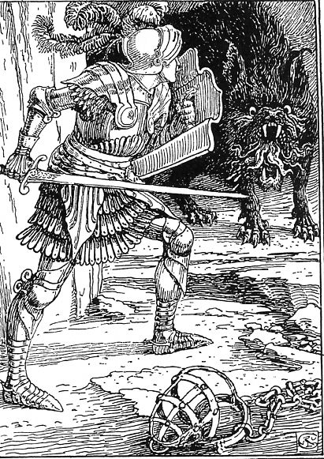
The Blatant BeastWalter Crane, 1895–97 · from the George Allen edition
xxiiiThrough all estates he found that he had past,In which he many massacres had left,And to the Clergy now was come at last;In which such spoil, such havocke, and such theftHe wrought, that thence all goodness he bereft,That endless were to tell. The Elfin Knight,Who now no place besides unsought had left,At length into a Monastery did light,Where he him found despoiling all with main and might.
xxivInto their cloisters now he broken had,Through which the Monckes he chased here and there,And them pursu’d into their dortours sad,And searched all their cels and secrets near;In which what filth and ordure did appear,Were irksome to report; yet that foul BeastNought sparing them, the more did toss and tear,And ransack all their denes from most to least,Regarding nought religion, nor their holy hest.
xxvFrom thence into the sacred Church he broke,And rob’d the Chancel, and the desks down threw,And Altars fouled, and blasphemy spoke,And th’Images for all their goodly hue,Did cast to ground, whilst none was them to rew;So all confounded and disordered there.But seeing Calidore, away he flew,Knowing his fatal hand by former fear;But he him fast pursuing, soon approached near.
xxviHim in a narrow place he overtook,And fierce assailing forc’d him turn again:Sternly he turn’d again, when he him strokeWith his sharpe steel, and ran at him amainWith open mouth, that seemed to containA full good peck within the utmost brim,All set with iron teeth in ranges twain,That terrified his foes, and armed him,Appearing like the mouth of Orcus grisly grim.
xxviiAnd therein were a thousand tongues empight,Of sundry kinds, and sundry quality,Some were of dogs, that barked day and night,And some of cats, that wrawling still did cry,And some of Bears, that groyn’d continually,And some of Tigres, that did seem to gren,And snare at all, that ever passed by:But most of them were tongues of mortal men,Which spake reproachfully, not caring where nor when.
xxviiiAnd them amongst were mingled here and there,The tongues of Serpents with three forked stings,That spat out poison and gore bloody gereAt all, that came within his ravenings,And spake licentious words, and hatful thingsOf good and bad alike, of low and hie;Ne Keasars spared he a whit, nor Kings,But either blotted them with infamy,Or bit them with his baneful teeth of injury.
xxixBut Calidore thereof no whit afraid,Rencounter’d him with so impetuous might,That th’outrage of his violence he stay’d,And bet aback, threat’ning in vain to bite,And spitting forth the poison of his spite,That foamed all about his bloody jaws.Tho rearing up his former feet on hight,He rampt upon him with his ravenous paws,As if he would have rent him with his cruel claws.
xxxBut he right well aware, his rage to ward,Did cast his shield atween, and therewithalPutting his puissance forth, pursu’d so hard,That backeward he enforced him to fall,And being down, ere he new help could call,His shield he on him threw, and fast down held,Like as a bullock, that in bloody stallOf butchers baleful hand to ground is feld,Is forcibly kept down, till he be throughly queld.
xxxiFull cruelly the Beast did rage and rore,To be down held, and maystred so with might,That he gan fret and foam out bloody gore,Striving in vain to rere him self upright.For still the more he strove, the more the KnightDid him suppress, and forcibly subdue;That made him almost mad for fell despite.He grind, he bit, he scratch’d, he venim threw,And fared like a fiend, right horrible in hue.
xxxiiOr like the hell-borne Hydra, which they fainThat great Alcides whilom overthrew,After that he had labour’d long in vain,To crop his thousand heads, the which still newForth budded, and in greater number grew.Such was the fury of this hellish Beast,Whilst Calidore him under him down threw;Who nathemore his heavy load releas’d,But aye the more he rag’d, the more his power increas’d.
xxxiiiTho when the Beast saw, he mote nought availe,By force, he gan his hundred tongues apply,And sharply at him to revile and raile,With bitter termes of shameful infamy;Oft interlacing many a forged lie,Whose like he never once did speak, nor hear,Nor ever thought thing so unworthily:Yet did he nought for all that him forbear,But strained him so streightly, that he chokt him near.
xxxivAt last when as he found his force to shrincke,And rage to quail, he toke a mussel strongOf surest iron, made with many a lincke;Therewith he mured up his mouth along,And therein shut up his blasphemous tongue,For never more defaming gentle Knight,Or unto lovely Lady doing wrong:And thereunto a great long chain he tight,With which he drew him forth, even in his own despite.
xxxvLike as whilom that strong Tirynthian swain,Brought forth with him the dreadful dog of hell,Against his will fast bound in iron chain,And roaring horribly, did him compelTo see the hatful sun, that he might tellTo grisly Pluto, what on earth was donne,And to the other damned ghosts, which dwellFor aye in darkens, which day light doth shone.So led this Knight his captive with like conquest won.
xxxviYet greatly did the Beast repine at thoseStrange bands, whose like till then he never bore,Ne ever any durst till then impose,And chauffed inly, seeing now no moreHim liberty was left aloud to rore:Yet durst he not draw back; nor once withstandThe proved power of noble Calidore,But trembled underneath his mighty hand,And like a fearful dog him followed through the land.
xxxviiHim through all Faery land he follow’d so,As if he learned had obedience long,That all the people where so he did go,Out of their townes did round about him throng,To see him lead that Beast in bondage strong,And seeing it, much wonder’d at the sight;And all such persons, as he erst did wrong,Reioyced much to see his captive plight,And much admire’d the Beast, but more admire’d the Knight.
xxxviiiThus was this Monster by the maistring mightOf doughty Calidore, suppress’d and tamed,That never more he mote endammadge wightWith his vile tongue, which many had defamed,And many causeless caused to be blamed:So did he eek long after this remain,Until that, whether wicked fate so framed,Or fault of men, he broke his iron chain,And got into the world at liberty again.
xxxixThenceforth more mischief and more scathe he wroughtTo mortal men, then he had done before;Ne ever could by any more be broughtInto like bands, ne maystred any more:Albe that long time after Calidore,The good Sir Pelleas him toke in hand,And after him Sir Lamoracke of yore,And all his brethren borne in Britain land;Yet none of them could ever bring him into band.
xlSo now he raungeth through the world again,And rageth sore in each degree and state;Ne any is, that may him now restrain,He grown is so great and strong of late,Barking and biting all that him do bate,Albe they worthy blame, or clear of crime:Ne spareth he most learned wits to rate,Ne spareth he the gentle Poets rime,But rends without regard of person or of time.
xliNe may this homely verse, of many meanest,Hope to escape his venemous despite,More than my former writs, all were they clearestFrom blameful blot, and free from all that wite,With which some wicked tongues did it backebite,And bring into a mighty Peres displeasure,That never so deserved to endite.Therfore do you my rimes keep better measure,And seek to please, that now is counted wisemens threasure.
TWO CANTOS OF MUTABILITIE
Two Cantos of Mutabilitie — under the legend of Constancie; never before imprinted
Constancie
The Proeme
hich, both for Form and Matter, appearto be parcel of some following Book of theFAERIE QUEENE,
⁂
UNDER THE LEGENDOFConstancie.Never before imprinted.
Booke VII · Constancie
Canto VI
❧
Proud Change (not pleas’d, in mortal things, beneath the Moon, to reign) Pretends, as well of Gods, as Men, to be the Sovereign.
❧
ihat man that sees the ever-whirling wheelOf Change, the which all mortal things doth sway,But that therby doth find, and plainly feel,How MUTABILITY in them doth playHer cruel sports, to many mens decay?Which that to all may better yet appear,I will rehearse that whilom I heard say,How she at first her self began to rear,Gainst all the Gods, and th’empire sought from them to bear.
iiBut first, here falleth fittest to unfoldHer antique race and linage ancient,As I have found it register’d of old,In Faery Land mongst records permanent:She was, to weet, a daughter by descentOf those old Titans, that did whilom striveWith Saturnes son for heavens regiment.Whom, though high Jove of kingdom did deprive,Yet many of their stem long after did survive.
iiiAnd many of them, afterwards obtain’dGreat power of Jove, and high authority;As Hecaté, in whose almighty hand,He plac’t all rule and principality,To be by her disposed diversly,To Gods, and men, as she them list divide:And drad Bellona, that doth sound on hieWars and alarums unto Nations wide,That makes both heaven and earth to tremble at her pride.
ivSo likewise did this Titanesse aspire,Rule and dominion to her self to gain;That as a Goddess, men might her admire,And heavenly honours yield, as to them twain.At first, on earth she sought it to obtain;Where she such proof and sad examples showedOf her great power, to many ones great pain,That not men only (whom she soon subdewed)But eke all other creatures, her bad doings rewed.
vFor, she the face of earthly things so changed,That all which Nature had establisht firstIn good estate, and in meet order ranged,She did pervert, and all their statutes burst:And all the worlds fair frame (which none yet durstOf Gods or men to alter or misguide)She alter’d quite, and made them all accurstThat God had blest; and did at first provideIn that still happy state for ever to abide.
viNe she the lawes of Nature only brake,But eke of Justice, and of Policy;And wrong of right, and bad of good did make,And death for life exchanged foolishly:Since which, all living wights have learn’d to die,And all this world is woxen daily worse.O pittious work of MUTABILITIE!By which, we all are subject to that curse,And death in stead of life have sucked from our Nurse.
viiAnd now, when all the earth she thus had broughtTo her behest, and thralled to her might,She gan to cast in her ambitious thought,T’attempt the empire of the heavens hight,And Jove himself to shoulder from his right.And first, she past the region of the ayre,And of the fire, whose substance thin and slight,Made no resistance, ne could her contraire,But ready passage to her pleasure did prepaire.
viiiThence, to the Circle of the Moon she clambe,Where Cynthia reigns in everlasting glory,To whose bright shining palace straight she came,All fairly deck’d with heavens goodly story;Whose silver gates (by which there sate an hoaryOld aged Sire, with hower-glass in hand,Hight Tyme) she enter’d, were he lief or sori:Ne stay’d till she the highest stage had scan’d,Where Cynthia did sit, that never still did stand.
ixHer sitting on an Ivory throne she found,Drawn of two steeds, th’one black, the other white,Environ’d with tenn thousand starrs around,That duly her attended day and night;And by her side, there ran her Page, that hightVesper, whom we the Evening-starr intend:That with his Torch, still twinkling like twilight,Her lightened all the way where she should wend,And joy to weary wand’ring travailers did lend:
xThat when the hardy Titanesse beheldThe goodly building of her Palace bright,Made of the heavens substance, and up-heldWith thousand Crystal pillors of huge hight,She gan to burn in her ambitious spright,And t’envie her that in such glory reign'd.Eftsoons she cast by force and tortious might,Her to displace; and to her self to have gainedThe kingdom of the Night, and waters by her wained.
xiBoldly she bid the Goddess down descend,And let her self into that Ivory throne;For, she her self more worthy thereof wend,And better able it to guide alone:Whether to men, whose fall she did bemoan,Or unto Gods, whose state she did malign,Or to th’infernall Powers, her need give loneOf her fair light, and bounty most benign,Her self of all that rule she deemed most condign.
xiiBut she that had to her that sovereign seatBy highest Jove assign’d, therein to bearNights burning lamp, regarded not her threat,Ne yielded ought for favour or for fear;But with stern countenance and disdainful chere,Bending her horned brows, did put her back:And boldly blaming her for coming there,Bade her at once from heavens coast to pack,Or at her peril bide the wrathful Thunders wrack.
xiiiYet nathemore the Giantesse forbare:But boldly preacing-on, raught forth her handTo pluck her down perforce from off her chair;And there-with lifting up her golden wand,Threaten’d to strike her if she did with-stand.Where-at the starrs, which round about her blazed,And eke the Moons bright wagon, still did stand,All being with so bold attempt amazed,And on her uncouth habit and stern loke still gazed.
xivMean-while, the lower World, which nothing knewOf all that chanced here, was darken’d quite;And eke the heavens, and all the heavenly crewOf happy wights, now unpurvaide of light,Were much afraid, and wonder’d at that sight;Fearing least Chaos broken had his chain,And brought again on them eternal night:But chiefly Mercury, that next doth reign,Ran forth in haste, unto the king of Gods to plain.
xvAll ran together with a great out-cry,To Joves fair Palace, fixt in heavens hight;And beating at his gates full earnestly,Gan call to him aloud with all their might,To know what meant that sudden lack of light.The father of the Gods when this he heard,Was troubled much at their so strange affright,Doubting least Typhon were again uprear’d,Or other his old foes, that once him sorely fear’d.
xviEftsoons the son of Maia forth he sentDown to the Circle of the Moon, to knoweThe cause of this so strange astonishment,And why she did her wonted course forslow;And if that any were on earth belowThat did with charms or Magic her molest,Him to attach, and down to hell to throw:But, if from heaven it were, then to arrestThe Author, and him bring before his presence prest.
xviiThe wing’d-foot God, so fast his plumes did beat,That soon he came where-as the TitanesseWas striving with fair Cynthia for her seat:At whose strange sight, and haughty hardiness,He wonder’d much, and feared her no less.Yet laying fear aside to do his charge,At last, he bade her (with bold steadfastness)Cesse to molest the Moon to walk at large,Or come before high Jove, her doings to discharge.
xviiiAnd there-with-all, he on her shoulder laidHis snaky-wreathed Mace, whose awful powerDoth make both Gods and hellish fiends afraid:Where-at the Titanesse did sternly lower,And stoutly answer’d, that in evil howerHe from his Jove such message to her brought,To bid her leave fair Cynthias silver bower;Sith she his Jove and him esteemed nought,No more than Cynthia’s self; but all their kingdoms sought.
xixThe Heavens Herald staid not to reply,But past away, his doings to relateUnto his Lord; who now in th’highest sky,Was placed in his principal Estate,With all the Gods about him congregate:To whom when Hermes had his message told,It did them all exceedingly amate,Save Jove; who, changing nought his count’nance bold,Did unto them at length these speeches wise unfold;
xxHarken to me awhile yea heavenly Powers;Ye may remember since th’Earths cursed seedSought to assail the heavens eternal towers,And to us all exceeding fear did breed:But how we then defeated all their deed,Yea all do knowe, and them destroied quite;Yet not so quite, but that there did succeedAn off-spring of their blood, which did alitUpon the fruitful earth, which doth us yet despite.
xxiOf that bad seed is this bold woman bred,That now with bold presumption doth aspireTo thrust fair Phœbe from her silver bed,And eke ourselves from heavens high Empire,If that her might were match to her desire:Wherefore, it now behoves us to adviseWhat way is best to drive her to retire;Whether by open force, or counsel wise,Aread ye sons of God, as best ye can devise.
xxiiSo having said, he ceas’d; and with his brow(His black eye-brow, whose doomful dreaded beckIs wont to wield the world unto his vow,And even the highest Powers of heaven to check)Made sign to them in their degrees to speak:Who straight gan cast their counsel grave and wise.Mean-while, th’Earths daughter, though she nought did reckOf Hermes message; yet gan now advise,What course were best to take in this hot bold emprise.
xxiiiEftsoons she thus resolv’d; that whil’st the Gods(After return of Hermes Embassy)Were troubled, and amongst themselves at ods,Before they could new counsels re-allie,To set upon them in that extasie;And take what fortune time and place would lend:So, forth she rose, and through the purest skyTo Joves high Palace straight cast to ascend,To prosecute her plot: Good on-set boads good end.
xxivShe there arriving, boldly in did pass;Where all the Gods she found in counsel close,All quite unarm’d, as then their manner was.At sight of her they sudden all arose,In great amaze, ne wist what way to chose.But Jove, all fearless, force’t them to aby;And in his sovereign throne, gan straight disposeHimself more full of grace and Majesty,That mote encheare his friends, and foes mote terrify.
xxvThat, when the haughty Titanesse beheld,All were she fraught with pride and impudence,Yet with the sight thereof was almost queld;And inly quaking, seem’d as reft of sense,And void of speech in that drad audience;Until that Jove himself, her self bespake:Speak thou frail woman, speak with confidence,Whence art thou, and what dost thou here now make?What idle errand hast thou, earths mansion to forsake?
xxviShe, half confused with his great command,Yet gathering spirit of her natures pride,Him boldly answer’d thus to his demand:I am a daughter, by the mothers side,Of her that is Grand-mother magnifiedOf all the Gods, great Earth, great Chaos child:But by the fathers (be it not envied)I greater am in blood (whereon I build)Then all the Gods, though wrongfully from heaven exil’d.
xxviiFor, Titan (as ye all acknowledge must)Was Saturnes elder brother by birth-right;Both, sons of Uranus: but by unjustAnd guileful means, through Corybantes slight,The younger thrust the elder from his right:Since which, thou Jove, injuriously hast heldThe Heavens rule from Titans sons by might;And them to hellish dungeons down hast feld:Witness ye Heavens the truth of all that I have teld.
xxviiiWhil’st she thus spake, the Gods that gave good earTo her bold words, and marked well her grace,Being of stature tall as any thereOf all the Gods, and beautiful of face,As any of the Goddesses in place,Stood all astonied, like a sort of Steers;Mongst whom, some beast of strange and forraine race,Unwares is chance’t, far straying from his peers:So did their ghastly gaze bewray their hidden fears.
xxixTill having pause’d awhile, Jove thus bespake;Will never mortal thoughts cesse to aspire,In this bold sort, to Heaven claim to make,And touch celestial seats with earthly mire?I would have thought, that bold Procrustes hire,Or Typhons fall, or proud Ixions pain,Or great Prometheus, tasting of our ire,Would have sufis’d, the rest for to restrain;And warn’d all men by their example to refrain:
xxxBut now, this off-scum of that cursed fry,Dare to renew the like bold enterprise,And challenge th’heritage of this our ski;Whom what should hinder, but that we likewiseShould handle as the rest of her allies,And thunder-drive to hell? With that, he shookHis Nectar-dewed locks, with which the skiesAnd all the world beneath for terror quooke,And eft his burning levin-brand in hand he toke.
xxxiBut, when he looked on her lovely face,In which, fair beams of beauty did appear,That could the greatest wrath soon turn to grace(Such sway doth beauty even in Heaven bear)He stay’d his hand: and having chang’d his chere,He thus again in milder wise began;But ah! if Gods should strive with flesh yfere,Then shortly should the progeny of ManBe rooted out, if Jove should do still what he can:
xxxiiBut thee fair Titans child, I rather ween,Through some vain error or inducement light,To see that mortal eyes have never seen;Or through ensample of thy sisters might,Bellona; whose great glory thou dost spite,Since thou hast seen her dreadful power below,Mongst wretched men (dismaide with her affright)To bandy Crowns, and Kingdoms to bestow:And sure thy worth, no less than hers doth seem to show.
xxxiiiBut wot thou this, thou hardy Titanesse,That not the worth of any living wightMay challenge ought in Heavens interess;Much less the Title of old Titans Right:For, we by Conquest of our sovereign might,And by eternal dome of Fates decree,Have won the Empire of the Heavens bright;Which to ourselves we hold, and to whom weShall worthy deem partakers of our bliss to be.
xxxivThen cesse thy idle claim thou foolish gerle,And seek by grace and goodness to obtainThat place from which by folly Titan fell;There-to thou maist perhaps, if so thou fainHave Jove thy gracious Lord and Sovereign.So, having said, she thus to him replied;Cesse Saturnes son, to seek by proffers vainOf idle hopes t’allure me to thy side,For to betray my Right, before I have it tried.
xxxvBut thee, O Jove, no equal Judge I deemOf my desert, or of my dewfull Right;That in thine own behalf maist partial seem:But to the highest him, that is behightFather of Gods and men by equal might;To weet, the God of Nature, I appeal.There-at Jove wexed wroth, and in his sprightDid inly grudge, yet did it well conceal;And bade Dan Phœbus Scribe her Appellation seale.
xxxviEftsoons the time and place appointed were,Where all, both heavenly Powers, and earthly wights,Before great Natures presence should appear,For trial of their Titles and best Rights:That was, to weet, upon the highest hightsOf Arlo-hill (Who knowes not Arlo-hill?)That is the highest head (in all mens sights)Of my old father Mole, whom Shepherds quillRenowned hath with hymns fit for a rural skill.
xxxviiAnd, were it not ill fitting for this file,To sing of hills and woods, mongst wars and Knights,I would abate the sternenesse of my stile,Mongst these stern stounds to mingle soft delights;And tell how Arlo through Dianaes spites(Being of old the best and fairest HillThat was in all this holy-Islands hights)Was made the most unpleasant, and most ill.Mean while, O Clio, lend Calliope thy quill.
xxxviiiWhilom, when IRELAND florished in fameOf wealths and goodness, far above the restOf all that bear the British Islands name,The Gods then us’d (for pleasure and for rest)Oft to resort there-to, when seem’d them best:But none of all there-in more pleasure found,Then Cynthia; that is sovereign Queen profess’dOf woods and forests, which therein abound,Sprinkled with wholsom waters, more than most on ground.
xxxixBut mongst them all, as fittest for her game,Either for chace of beasts with hound or boawe,Or for to shroud in shade from Phœbus flame,Or bathe in fountains that do freshly flow,Or from high hills, or from the dales below,She chose this Arlo; where she did resortWith all her Nymphs enranged on a rowe,With whom the woody Gods did oft consort:For, with the Nymphs, the Satyrs love to play and sport.
xlAmongst the which, there was a Nymph that hightMolanna; daughter of old father Mole,And sister unto Mulla, fair and bright:Unto whose bed false Bregog whilom stole,That Shepherd Colin dearly did condole,And made her luckless loves well known to be.But this Molanna were she not so shoal,Were no less fair and beautiful then she:Yet as she is, a fairer flood may no man see.
xliFor, first, she springs out of two marble Rocks,On which, a grove of Oakes high mounted grows,That as a garland seems to deck the locksOf som fair Bride, brought forth with pompous showsOut of her bower, that many flowers strows:So, through the floury Dales she tumbling down,Through many woods, and shady coverts flows(That on each side her silver channel crown)Till to the Plain she come, whose Valleys she doth drown.
xliiIn her sweet streams, Diana used oft(After her sweaty chace and toilsome play)To bathe her self; and after, on the softAnd downy grass, her dainty limbs to layIn covert shade, where none behold her may:For, much she hated sight of living eye.Foolish God Faunus, though full many a dayHe saw her clad, yet longed foolishlyTo see her naked mongst her Nymphs in privity.
xliiiNo way he found to compass his desire,But to corrupt Molanna, this her maid,Her to discover for some secret hire:So, her with flattering words he first assay’d;And after, pleasing gifts for her purvaid,Queen-apples, and red Cherries from the tree,With which he her allured and betray’d,To tell what time he might her Lady seeWhen she her self did bathe, that he might secret be.
xlivThere-to he promist, if she would him pleasureWith this small boone, to quit her with a better;To weet, that where-as she had out of measureLong lov’d the Fanchin, who by nought did set her,That he would undertake, for this to get herTo be his Love, and of him liked well:Besides all which, he vow’d to be her debterFor many moe good turns then he would tell;The least of which, this little pleasure should excel.
xlvThe simple maid did yield to him anon;And eft him placed where he close might viewThat never any saw, save only one;Who, for his hire to so fool-hardy dew,Was of his hounds devour’d in Hunters hue.Tho, as her manner was on sunny day,Diana, with her Nymphs about her, drewTo this sweet spring; where, doffing her array,She bath’d her lovely limbs, for Jove a likely pray.
xlviThere Faunus saw that pleased much his eye,And made his heart to tickle in his breast,That for great joy of some-what he did spy,He could him not contain in silent rest;But breaking forth in laughter, loud profess’dHis foolish thought. A foolish Faune indeed,That couldst not hold thy self so hidden blest,But wouldest needs thine own conceit aread.Babblers unworthy been of so divine a meed.
xlviiThe Goddess, all abashed with that noise,In haste forth started from the guilty brooke;And running straight where-as she heard his voice,Enclos’d the bush about, and there him toke,Like dared Lark; not daring up to lokeOn her whose sight before so much he sought.Thence, forth they drew him by the horns, and shookNigh all to pieces, that they left him nought;And then into the open light they forth him brought.
xlviiiLike as an huswife, that with busy careThinks of her Dairy to make wondrous gain,Finding where-as some wicked beast unwareThat breaks into her Dayr’house, there doth drainHer creaming pannes, and frustrate all her pain;Hath in some snare or gin set close behind,Entrapped him, and caught into her train,Then thinks what punishment were best assign’d,And thousand deaths deviseth in her vengeful mind:
xlixSo did Diana and her maidens allUse silly Faunus, now within their bail:They mock and scorn him, and him foul miscall;Some by the nose him pluck’d, some by the tail,And by his goatish beard some did him hail:Yet he (poor soul) with patience all did bear;For, nought against their wills might countervail:Ne ought he said what ever he did hear;But hanging down his head, did like a Mome appear.
lAt length, when they had flouted him their fill,They gan to cast what penance him to give.Some would have gelt him, but that same would spillThe Wood-gods breed, which must for ever live:Others would through the river him have drive,And ducked deep: but that seem’d penance light;But most agreed and did this sentence give,Him in Dears skin to clad; and in that plight,To hunt him with their hounds, him self save how he might.
liBut Cynthia’s self, more angry than the rest,Thought not enough, to punish him in sport,And of her shame to make a gamesome jest;But gan examine him in straighter sort,Which of her Nymphs, or other close consort,Him thither brought, and her to him betray’d?He, much affeard, to her confessed short,That ’twas Molanna which her so bewraid.Then all at once their hands upon Molanna laid.
liiBut him (according as they had decreed)With a Deers-skin they covered, and then chasteWith all their hounds that after him did speed;But he more speedy, from them fled more fastThen any Deere: so sore him dread aghast.They after follow’d all with shrill out-cry,Shouting as they the heavens would have brast:That all the woods and dales where he did fly,Did ring again, and loud reecho to the ski.
liiiSo they him follow’d till they weary were;When, back returning to Molann’ again,They, by command’ment of Diana, thereHer whelm’d with stones. Yet Faunus (for her pain)Of her beloved Fanchin did obtain,That her he would receive unto his bed.So now her waves pass through a pleasant Plain,Till with the Fanchin she her self do wed,And (both combin’d) themselves in one fair river spread.
livNath’lesse, Diana, full of indignation,Thence-forth abandon’d her delicious brooke;In whose sweet stream, before that bad occasion,So much delight to bathe her limbs she toke:Ne only her, but also quite forsookAll those fair forests about Arlo hid,And all that Mountain, which doth over-lokeThe richest champian that may else be rid,And the fair Shure, in which are thousand Salmons bred.
lvThem all, and all that she so dear did way,Thence-forth she left; and parting from the place,There-on an heavy hapless curse did lay,To weet, that Wolves, where she was wont to space,Should harbour’d be, and all those Woods deface,And Thieves should rob and spoil that Coast around.Since which, those Woods, and all that goodly Chase,Doth to this day with Wolves and Thieves abound:Which too-too true that lands in-dwellers since have found.
Booke VII · Constancie
Canto VII
❧
Pealing, from Jove, to Natur’s Bar, bold Alteration pleads Large Evidence: but Nature soon her righteous Dome areads.
❧
ih! whither dost thou now thou greater MuseMe from these woods and pleasing forests bring?And my frail spirit (that doth oft refuseThis too high flight, unfit for her weak wing)Lift up aloft, to tell of heavens King(Thy sovereign Sire) his fortunate success,And victory, in bigger noates to sing,Which he obtain’d against that Titanesse,That him of heavens Empire sought to dispossess.
iiYet sith I needs must follow thy behest,Do thou my weaker wit with skill inspire,Fit for this turn; and in my feeble breastKindle fresh sparks of that immortal fire,Which learned minds inflameth with desireOf heavenly things: for, who but thou alone,That art yborne of heaven and heavenly Sire,Can tell things doen in heaven so long ygone;So fare past memory of man that may be known.
iiiNow, at the time that was before agreed,The Gods assembled all on Arlo hill;As well those that are sprung of heavenly seed,As those that all the other world do fill,And rule both sea and land unto their will:Only th’infernall Powers might not appear;Aswell for horror of their count’naunce ill,As for th’unruly fiends which they did fear;Yet Pluto and Proserpina were present there.
ivAnd thither also came all other creatures,What-ever life or motion do retain,According to their sundry kinds of features;That Arlo scarsly could them all contain;So full they filled every hill and Plain:And had not Natures Sergeant (that is Order)Them well disposed by his busy pain,And ranged fare abroad in every border,They would have caused much confusion and disorder.
vThen forth issewed (great goddess) great dame Nature,With goodly port and gracious Majesty;Being far greater and more tall of statureThen any of the gods or Powers on hie:Yet certes by her face and physnomy,Whether she man or woman inly were,That could not any creature well descry:For, with a veil that wimpled every where,Her head and face was hid, that mote to none appear.
viThat some do say was so by skill devised,To hide the terror of her uncouth hue,From mortal eyes that should be sore agrized;For that her face did like a Lion show,That eye of wight could not indure to view:But others tell that it so beautious was,And round about such beams of splendor threw,That it the Sun a thousand times did pass,Ne could be seen, but like an image in a glass.
viiThat well may seamen true: for, well I weenThat this same day, when she on Arlo sat,Her garment was so bright and wondrous sheen,That my frail wit cannot devise to whatIt to compare, nor find like stuff to that,As those three sacred Saints, though else most wise,Yet on mount Thabor quite their wits forgat,When they their glorious Lord in strange disguiseTransfigur’d saw; his garments so did daze their eyes.
viiiIn a fayre Plain upon an equal Hill,She placed was in a pavilion;Not such as Crafts-men by their idle skillAre wont for Princes states to fashion:But th’earth her self of her own motion,Out of her fruitful bosom made to growMost dainty trees; that, shooting up anon,Did seem to bow their bloosming heads full lowe,For homage unto her, and like a throne did show.
ixSo hard it is for any living wight,All her array and vestiments to tell,That old Dan Geffrey (in whose gentle sprightThe pure well head of Poesy did dwell)In his Foules parley durst not with it mel,But it transfer’d to Alane, who he thoughtHad in his Plaint of kindes describ’d it well:Which who will read set forth so as it ought,Go seek he out that Alane where he may be sought.
xAnd all the earth far underneath her feetWas dight with flowers, that voluntary grewOut of the ground, and sent forth odours sweet;Tenn thousand mores of sundry sent and hue,That might delight the smell, or please the view:The which, the Nymphs, from all the brooks therebyHad gathered, which they at her foot-stole threw;That richer seem’d then any tapestry,That Princes bowers adorn with painted imagery.
xiAnd Mole himself, to honour her the more,Did deck himself in freshest fair attire,And his high head, that seemeth always horeWith harden’d frosts of former winters ire,He with an Oaken garland now did tire,As if the love of some new Nymph late seen,Had in him kindled youthful fresh desire,And made him change his gray attire to green;Ah gentle Mole! such joyance hath thee well beseen.
xiiWas never so great joyance since the day,That all the gods whilom assembled were,On Hæmus hill in their divine array,To celebrate the solemn bridal chere,Twixt Peleus, and dame Thetis pointed there;Where Phœbus self, that god of Poets hight,They say did sing the spousal hymn full clear,That all the gods were ravisht with delightOf his celestial song, and Musicks wondrous might.
xiiiThis great Grandmother of all creatures bredGreat Nature, ever young yet full of eld,Still moving, yet unmoved from her stead;Unseen of any, yet of all beheld;Thus sitting in her throne as I have teld,Before her came dame Mutabilitie;And being lowe before her presence feld,With meek obaysance and humility,Thus gan her plaintiff Plea, with words to amplify;
xivTo thee O greatest goddess, only great,An humble suppliant lo, I lowly flySeeking for Right, which I of thee entreat;Who Right to all dost deale indifferently,Damning all Wrong and tortious Injury,Which any of thy creatures do to other(Oppressing them with power, unequally)Sith of them all thou art the equal mother,And knittest each to each, as brother unto brother.
xvTo thee therefore of this same Jove I plain,And of his fellow gods that fain to be,That challenge to themselves the whole worlds reign;Of which, the greatest part is due to me,And heaven it self by heritage in Fee:For, heaven and earth I both alike do deem,Sith heaven and earth are both alike to thee;And, gods no more than men thou doest esteem:For, even the gods to thee, as men to gods do seem.
xviThen weigh, O sovereign goddess, by what rightThese gods do claim the worlds whole sovereignty;And that is only dew unto thy mightArrogate to themselves ambitiously:As for the gods own principality,Which Jove usurps unjustly; that to beMy heritage, Jove’s self cannot deny,From my great Grandsire Titan, unto me,Deriv’d by dew descent; as is well known to thee.
xviiYet mauger Jove, and all his gods beside,I do possess the worlds most regiment;As, if ye please it into parts divide,And every parts inholders to convent,Shall to your eyes appear incontinent.And first, the Earth (great mother of us all)That only seems unmov’d and permanent,And unto Mutability not thrall;Yet is she chang’d in part, and eek in general.
xviiiFor, all that from her springs, and is ybredde,How-ever fayre it flourish for a time,Yet see we soon decay; and, being dead,To turn again unto their earthly slime:Yet, out of their decay and mortal crime,We daily see new creatures to ariz;And of their Winter spring another Prime,Unlike in form, and chang’d by strange disguise:So turn they still about, and change in restless wise.
xixAs for her tenants; that is, man and beasts,The beasts we daily see massacred dy,As thralls and vassals unto mens behests:And men themselves do change continually,From youth to eld, from wealth to poverty,From good to bad, from bad to worst of all.Ne do their bodies only flit and fly:But eek their minds (which they immortal call)Still change and vary thoughts, as new occasions fall.
xxNe is the water in more constant case;Whether those same on high, or these below.For, th’Ocean moveth stile, from place to place;And every River still doth ebb and flow:Ne any Lake, that seems most still and slow,Ne Poole so small, that can his smoothness hold,When any wind doth under heaven blow;With which, the clouds are also toss’d and roll’d;Now like great Hills; and, straight, like sluses, them unfold.
xxiSo likewise are all wat’ry living wightsStill toss’d, and turned, with continual change,Never abiding in their steadfast plights.The fish, still floating, do at randon range,And never rest; but evermore exchangeTheir dwelling places, as the streams them carrie:Ne have the wat’ry fouls a certain grange,Wherein to rest, ne in one stead do tarry;But flitting still do fly, and still their places vary.
xxiiNext is the Ayre: which who feels not by sense(For, of all sense it is the middle mean)To flit still? and, with subtil influenceOf his thin spirit, all creatures to maintain,In state of life? O weak life! that does leanOn thing so tickle as th’unsteady ayre;Which every hour is chang’d, and alter’d cleanWith every blast that bloweth foul or fair:The fair doth it prolong; the foul doth it impair.
xxiiiTherein the changes infinite behold,Which to her creatures every minute chance;Now, boiling hot: straight, friezing deadly cold:Now, fair sun-shine, that makes all skip and dance:Straight, bitter storms and baleful countenance,That makes them all to shiver and to shake:Reign, hayle, and snow do pay them sad penance,And dreadful thunder-claps (that make them quake)With flames and flashing lights that thousand changes make.
xxivLast is the fire: which, though it live for ever,Ne can be quenched quite; yet, every day,We see his parts, so soon as they do sever,To lose their heat, and shortly to decay;So, makes himself his own consuming pray.Ne any living creatures doth he breed:But all, that are of others bred, doth slay;And, with their death, his cruel life doth feed;Nought leaning, but their barren ashes, without seed.
xxvThus, all these fower (the which the ground-work beOf all the world, and of all living wights)To thousand sorts of Change we subject see:Yet are they chang’d (by other wondrous slights)Into themselves, and lose their native mights;The Fire to Aire, and th’Ayre to Water sheer,And Water into Earth: yet Water fightsWith Fire, and Aire with Earth approaching near:Yet all are in one body, and as one appear.
xxviSo, in them all reigns Mutabilitie;How-ever these, that Gods themselves do call,Of them do claim the rule and sovereignty:As, Vesta, of the fire æthereall;Vulcan, of this, with us so usual;Ops, of the earth; and Juno of the Ayre;Neptune, of Seas; and Nymphs, of Rivers all.For, all those Rivers to me subject are:And all the rest, which they usurp, be all my share.
xxviiWhich to approven true, as I have told,Vouchsafe, O goddess, to thy presence callThe rest which do the world in being hold:As, times and seasons of the year that fall:Of all the which, demand in general,Or judge thy self, by verdit of thine eye,Whether to me they are not subject all.Nature did yield thereto; and by-and-by,Bade Order call them all, before her Majesty.
xxviiiSo, forth issue’d the Seasons of the year;First, lusty Spring, all dight in leaves of flowersThat freshly budded and new bloosmes did bear(In which a thousand birds had built their bowersThat sweetly sung, to call forth Paramours):And in his hand a javelin he did bear,And on his head (as fit for warlike stoures)A guilt engraven morion he did wear;That as some did him love, so others did him fear.
xxixThen came the jolly Sommer, being dightIn a thin silken cassock coloured green,That was unlined all, to be more light:And on his head a garland well beseenHe wore, from which as he had chauffed beenThe sweat did drop; and in his hand he boreA boawe and shafts, as he in forrest greenHad hunted late the Libbard or the Bore,And now would bathe his limbs, with labor heated sore.
xxxThen came the Autumne all in yellow clad,As though he joyed in his plentious store,Laden with fruits that made him laugh, full gladThat he had banisht hunger, which to-foreHad by the belly oft him pinched sore.Upon his head a wreath that was enrol’dWith ears of corn, of every sort he bore:And in his hand a sickle he did hold,To reap the ripened fruits the which the earth had yold.
xxxiLastly, came Winter cloathed all in frize,Chattering his teeth for cold that did him chill,Whil’st on his hoary beard his breath did frees;And the dull drops that from his purpled billAs from a limbeck did adown distill.In his right hand a tipped staff he held,With which his feeble steps he stayed still:For, he was faint with cold, and weak with eld;That scars his loosed limbs he hable was to weld.
xxxiiThese, marching softly, thus in order went,And after them, the Months all riding came;First, sturdy March with brows full sternly bent,And armed strongly, rode upon a Ram,The same which over Hellespontus swam:Yet in his hand a spade he also hent,And in a bag all sorts of seeds ysame,Which on the earth he strowed as he went,And fil’d her womb with fruitful hope of nourishment.
xxxiiiNext came fresh Aprill full of lustihead,And wanton as a Kid whose horne new buds:Upon a Bull he rode, the same which ledEuropa floating through th’ Argolick fluds:His homes were gilden all with golden studsAnd garnished with garlonds goodly dightOf all the fairest flowers and freshest budsWhich th’earth brings forth, and wet he seem’d in sightWith waves, through which he waded for his loves delight.
xxxivThen came fair May, the fairest maid on ground,Deck’d all with dainties of her seasons pride,And throwing flowers out of her lap around:Upon two brethrens shoulders she did ride,The twines of Leda; which on either sideSupported her like to their sovereign Queen.Lord! how all creatures laught, when her they spied,And leapt and dance’t as they had ravisht been!And Cupid self about her flutter’d all in green.
xxxvAnd after her, came jolly June, array’dAll in green leaves, as he a Player were;Yet in his time, he wrought as well as play’d,That by his plough-irons mote right well appear:Upon a Crab he rode, that him did bearWith crooked crawling steps an uncouth pase,And backward yode, as Bargemen wont to fareBending their force contrary to their face,Like that ungracious crew which fains demurest grace.
xxxviThen came hot July boiling like to fire,That all his garments he had cast away:Upon a Lyon raging yet with ireHe boldly rode and made him to obay:It was the beast that whilom did forayThe Nemæan forrest, till th’AmphytrionideHim slew, and with his hide did him array;Behind his back a sithe, and by his sideUnder his belt he bore a sickle circling wide.
xxxviiThe sixte was August, being rich array’dIn garment all of gold down to the ground:Yet rode he not, but led a lovely MaidForth by the lilly hand, the which was croundWith ears of corn, and full her hand was found;That was the righteous Virgin, which of oldLiv’d here on earth, and plenty made abound;But, after Wrong was lov’d and Justice sold,She left th’unrighteous world and was to heaven extol’d.
xxxviiiNext him, September marched eek on foot;Yet was he heavy laden with the spoilOf harvests riches, which he made his boot,And him enrich’d with bounty of the soil:In his one hand, as fit for harvests toil,He held a knife-hook; and in th’other handA pair of waits, with which he did assoilBoth more and less, where it in doubt did stand,And equal gave to each as Justice duly scann’d.
xxxixThen came October full of merry glee:For, yet his noule was totty of the must,Which he was treading in the wine-fats see,And of the joyous oil, whose gentle gustMade him so frolic and so full of lust:Upon a dreadful Scorpion he did ride,The same which by Dianaes doom unjustSlew great Orion: and eek by his sideHe had his ploughing share, and coulter ready tyde.
xlNext was November, he full gross and fat,As fed with lard, and that right well might seem;For, he had been a fatting hogs of late,That yet his brows with sweat, did reek and steem,And yet the season was full sharp and bream;In planting eek he took no small delight:Whereon he rode, not easy was to deem;For it a dreadful Centaure was in sight,The seed of Saturne, and fair Nais, Chiron hight.
xliAnd after him, came next the chill December:Yet he through merry feasting which he made,And great bonfires, did not the cold remember;His Saviours birth his mind so much did glad:Upon a shaggy-bearded Goat he rode,The same wherewith Dan Jove in tender years,They say, was nourisht by th’Idæan maid;And in his hand a broad deep boawle he bears;Of which, he freely drinks an health to all his peers.
xliiThen came old January, wrapped wellIn many weeds to keep the cold away;Yet did he quake and quiver like to quell,And blow his nails to warm them if he may:For, they were numb’d with holding all the dayAn hatchet keen, with which he felled wood,And from the trees did lop the needless spray:Upon an huge great Earth-pot steane he stood;From whose wide mouth, there flowed forth the Roman flood.
xliiiAnd lastly, came cold February, sittingIn an old wagon, for he could not ride;Drawn of two fishes for the season fitting,Which through the flood before did softly slideAnd swim away: yet had he by his sideHis plough and harness fit to till the ground,And toles to prune the trees, before the prideOf hasting Prime did make them burgein round:So past the twelve Months forth, and their dew places found.
xlivAnd after these, there came the Day, and Night,Riding together both with equal pase,Th’one on a Palfrey black, the other white;But Night had covered her uncomely faceWith a black veil, and held in hand a mace,On top whereof the moon and stars were pight,And sleep and darkness round about did trace:But Day did bear, upon his scepters hight,The goodly Sun, encompast all with beams bright.
xlvThen came the Howres, fair daughters of high Jove,And timely Night, the which were all endewedWith wondrous beauty fit to kindle love;But they were Virgins all, and love eschewed,That might forslack the charge to them fore-showedBy mighty Jove; who did them Porters makeOf heavens gate (whence all the gods issued)Which they did daily watch, and nightly wakeBy even turns, ne ever did their charge forsake.
xlviAnd after all came Life, and lastly Death;Death with most grim and grisly visage seen,Yet is he nought but parting of the breath;Ne ought to see, but like a shade to ween,Unbodied, unsoul’d, unheard, unseen.But Life was like a fair young lusty boy,Such as they fain Dan Cupid to have been,Full of delightful health and lively joy,Deck’d all with flowers, and wings of gold fit to employ.
xlviiWhen these were past, thus gan the Titanesse;Lo, mighty mother, now be judge and say,Whether in all thy creatures more or lessCHANGE doth not reign and bear the greatest sway:For, who sees not, that Time on all doth pray?But Times do change and move continually.So nothing here long standeth in one stay:Wherefore, this lower world who can denyBut to be subject still to Mutabilitie?
xlviiiThen thus gan Jove; Right true it is, that theseAnd all things else that under heaven dwellAre chang’d of Time, who doth them all disseiseOf being: But, who is it (to me tell)That Time himself doth move and still compelTo keep his course? Is not that namely weWhich pour that virtue from our heavenly cell,That moves them all, and makes them changed be?So them we gods do rule, and in them also thee.
xlixTo whom, thus Mutability: The thingsWhich we see not how they are mov’d and sway’d,Ye may attribute to yourselves as Kings,And say they by your secret power are made:But what we see not, who shall us perswade?But were they so, as ye them fain to be,Mov’d by your might, and order’d by your aide;Yet what if I can prove, that even yeaYourselves are likewise chang’d, and subject unto me?
lAnd first, concerning her that is the first,Even you fair Cynthia, whom so much ye makeJoves dearest darling, she was bred and nurstOn Cynthus hill, whence she her name did take:Then is she mortal borne, how-so ye crake;Besides, her face and countenance every dayWe changed see, and sundry forms partake,Now horn’d, now round, now bright, now brown and gray:So that as changefull as the Moone men use to say.
liNext, Mercury, who though he less appearTo change his hue, and always seem as one;Yet, he his course doth altar every year,And is of late far out of order gone:So Venus eek, that goodly Paragon,Though fair all night, yet is she dark all day;And Phœbus self, who lightsome is alone,Yet is he oft eclipsed by the way,And fills the darken’d world with terror and dismay.
liiNow Mars that valiant man is changed most:For, he some times so far runs out of square,That he his way doth seem quite to have lost,And clean without his usual sphere to fare;That even these Star-gazers stonisht areAt sight thereof, and damn their lying books:So likewise, grim Sir Saturne oft doth spareHis stern aspect, and calm his crabbed lokes:So many turning cranks these have, so many crookes.
liiiBut you Dan Jove, that only constant are,And King of all the rest, as ye do clame,Are you not subject eek to this misfare?Then let me ask you this withouten blame,Where were ye borne? some say in Crete by name,Others in Thebes, and others other-where;But wheresoever they comment the same,They all consent that ye begotten were,And borne here in this world, ne other can appear.
livThen are ye mortal borne, and thrall to me,Unless the kingdom of the sky yea makeImmortal, and unchangeable to be;Besides, that power and virtue which ye spake,That ye here work, doth many changes take,And your own natures change: for, each of youThat virtue have, or this, or that to make,Is check’d and changed from his nature trow,By others opposition or obliquid view.
lvBesides, the sundry motions of your Spheres,So sundry ways and fashions as clerks fain,Some in short space, and some in longer years;What is the same but alteration plain?Only the starry ski doth still remain:Yet do the Starrs and Signs therein still move,And even it self is mov’d, as wizards sain.But all that moveth, doth mutation love:Therefore both you and them to me I subject prove.
lviThen since within this wide great UniverseNothing doth firm and permanent appear,But all things toss’d and turned by transverse:What then should let, but I aloft should rearMy Trophy, and from all, the triumph bear?Now judge then (O thou greatest goddess trow!)According as thy self doest see and hear,And unto me addoom that is my dew;That is the rule of all, all being rul’d by you.
lviiSo having ended, silence long ensewed,Ne Nature to or fro spake for a space,But with firm eyes affixt, the ground still viewed.Mean while, all creatures, looking in her face,Expecting th’end of this so doubtful case,Did hang in long suspense what would ensue,To whether side should fall the sovereign place:At length, she looking up with cheerful view,The silence brake, and gave her dome in speeches few.
lviiiI well consider all that ye have said,And find that all things stedfastnes do hateAnd changed be: yet being rightly way’dThey are not changed from their first estate;But by their change their being do dilate:And turning to themselves at length again,Do work their own perfection so by fate:Then over them Change doth not rule and reign;But they reign over change, and do their states maintain.
lixCease therefore daughter further to aspire,And thee content thus to be rul’d by me:For thy decay thou seekst by thy desire;But time shall come that all shall changed be,And from thenceforth, none no more change shall see.So was the Titaness put down and whist,And Jove confirm’d in his imperial see.Then was that whole assembly quite dismist,And Natur’s self did vanish, whither no man wist.
Booke VII · Constancie · unperfite
Canto VIII
ihen I bethink me on that speech whilere,Of Mutability, and well it way:Me seems, that though she all unworthy wereOf the Heav’ns Rule; yet very sooth to say,In all things else she bears the greatest sway.Which makes me loath this state of life so tickle,And love of things so vain to cast away;Whose flouring pride, so fading and so fickle,Short Time shall soon cut down with his consuming sickle.
iiThen gin I think on that which Nature said,Of that same time when no more Change shall be,But steadfast rest of all things firmly stay’dUpon the pillars of Eternity,That is contrayr to Mutabilitie:For, all that moveth, doth in Change delight:But thence-forth all shall rest eternallyWith Him that is the God of Sabaoth hight:O that great Sabaoth God, grant me that Sabaoths sight.
A Letter of the Authors
expounding his whole intention in the course of this worke — to the Right noble and Valorous Sir Walter Raleigh, knight
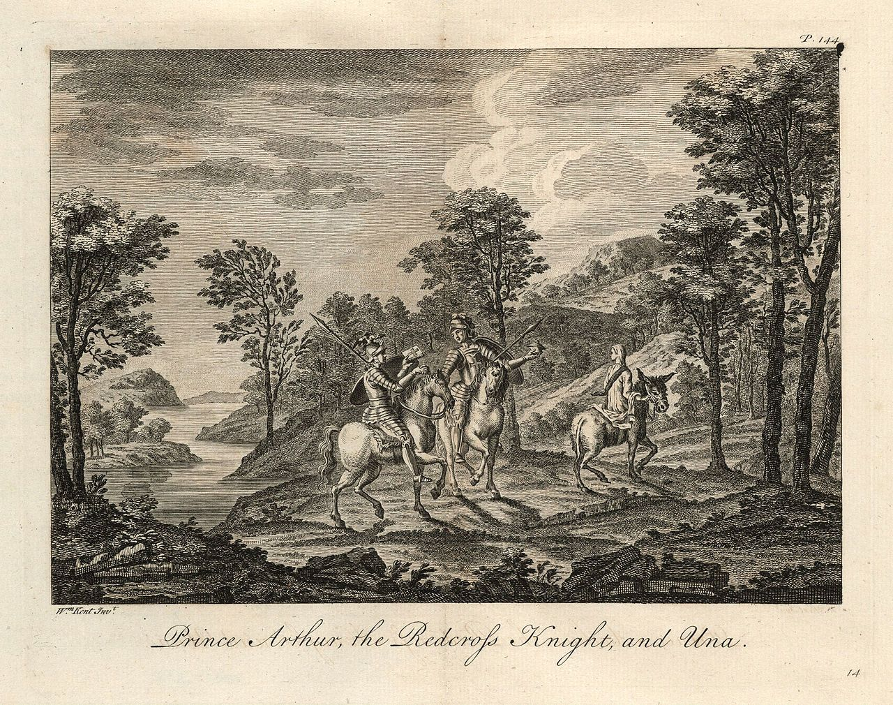
Letter of the Authors expounding his
whole intention in the course of this worke: which for that it giveth great light to the Reader, for the better understanding is hereunto annexed.
To the Right noble, and Valorous, Sir Walter Raleigh knight, Lo. Wardein of the Stanneryes, and her Maiesties liefetenaunt of the County of Cornewayll.
Sir knowing how doubtfully all Allegories may be construed, and this booke of mine, which I have entituled the Faery Queene, being a continued Allegory, or darke conceit, I have thought good as well for avoyding of gealous opinions and misconstructions, as also for your better light in reading therof (being so by you commanded,) to discover unto you the general intention and meaning, which in the whole course thereof I have fashioned, without expressing of any particular purposes or by-accidents therein occasioned. The generall end therefore of all the booke is to fashion a gentleman or noble person in vertuous and gentle discipline: Which for that I conceived shoulde be most plausible and pleasing, being coloured with an historicall fiction, the which the most part of men delight to read, rather for variety of matter, then for profite of the ensample: I chose the historye of king Arthure, as most fitte for the excellency of his person, being made famous by many mens former workes, and also furthest from the daunger of envy, and suspition of present time. In which I have followed all the antique Poets historicall, first Homere, who in the Persons of Agamemnon and Ulysses hath ensampled a good governour and a vertuous man, the one in his Ilias, the other in his Odysseis: then Virgil, whose like intention was to doe in the person of Aeneas: after him Ariosto comprised them both in his Orlando: and lately Tasso dissevered them againe, and formed both parts in two persons, namely that part which they in Philosophy call Ethice, or vertues of a private man, coloured in his Rinaldo: The other named Politice in his Godfredo. By ensample of which excellente Poets, I labour to pourtraict in Arthure, before he was king, the image of a brave knight, perfected in the twelve private morall vertues, as Aristotle hath devised, the which is the purpose of these first twelve bookes: which if I finde to be well accepted, I may be perhaps encoraged, to frame the other part of polliticke vertues in his person, after that hee came to be king. To some I know this Methode will seeme displeasaunt, which had rather have good discipline delivered plainly in way of precepts, or sermoned at large, as they use, then thus clowdily enwrapped in Allegoricall devises. But such, me seeme, should be satisfide with the use of these dayes, seeing all things accounted by their showes, and nothing esteemed of, that is not delightfull and pleasing to commune sence. For this cause is Xenophon preferred before Plato, for that the one in the exquisite depth of his judgement, formed a Commune welth such as it should be, but the other in the person of Cyrus and the Persians fashioned a governement such as might best be: So much more profitable and gratious is doctrine by ensample, then by rule. So have I laboured to doe in the person of Arthure: whome I conceive after his long education by Timon, to whom he was by Merlin delivered to be brought up, so soone as he was borne of the Lady Igrayne, to have seene in a dream or vision the Faery Queen, with whose excellent beauty ravished, he awaking resolved to seeke her out, and so being by Merlin armed, and by Timon throughly instructed, he went to seeke her forth in Faerye land. In that Faery Queene I meane glory in my generall intention, but in my particular I conceive the most excellent and glorious person of our soveraine the Queene, and her kingdoms in Faery land. And yet in some places els, I doe otherwise shadow her. For considering she beareth two persons, the one of a most royall Queene or Empresse, the other of a most vertuous and beautifull Lady, this latter part in some places I doe expresse in Belphœbe, fashioning her name according to your owne excellent conceipt of Cynthia, (Phœbe and Cynthia being both names of Diana.) So in the person of Prince Arthure I sette forth magnificence in particular, which vertue for that (according to Aristotle and the rest) it is the perfection of all the rest, and conteineth in it them all, therefore in the whole course I mention the deedes of Arthure applyable to that vertue, which I write of in that booke. But of the xii. other vertues, I make xii. other knights the patrones, for the more variety of the history: Of which these three bookes contayn three, The first of the knight of the Redcrosse, in whome I expresse Holynes: The seconde of Sir Guyon, in whome I sette forth Temperaunce; The third of Britomartis a Lady knight, in whome I picture Chastity. But because the beginning of the whole worke seemeth abrupte and as depending upon other antecedents, it needs that ye know the occasion of these three knights severall adventures. For the Methode of a Poet historical is not such, as of an Historiographer. For an Historiographer discourseth of offayres orderly as they were donne, accounting as well the times as the actions, but a Poet thrusteth into the middest, even where it most concerneth him, and there recoursing to the thinges forepaste, and divining of thinges to come, maketh a pleasing Analysis of all. The beginning therefore of my history, if it were to be told by an Historiographer should be the twelfth booke, which is the last, where I devise that the Faery Queene kept her Annuall feaste xii. dayes, uppon which xii. severall dayes, the occasions of the xii. severall adventures hapned, which being undertaken by xii. severall knights, are in these xii books severally handled and discoursed. The first was this. In the beginning of the feast, there presented himself a tall clownishe younge man, who falling before the Queen of Faries desired a boone (as the manner than was) which during that feast she might not refuse: which was that hee might have the atchievement of any adventure, which during that feaste should happen, that being graunted, he rested him on the floore, unfitte through his rusticity for a better place. Soone after entred a faire Ladye in mourning weedes, riding on a white Asse, with a dwarfe behind her leading a warlike steed, that bore the Armes of a knight, and his speare in the dwarfes hand. Shee falling before the Queene of Faeries, complayned that her father and mother an ancient King and Queene, had bene by an huge dragon many years shut up in a brasen Castle, who thence suffred them not to yssew: and therefore besought the Faery Queene to assygne her some one of her knights to take on him that exployt. Presently that clownish person upstarting, desired that adventure: whereat the Queene much wondering, and the Lady much gainesaying, yet he earnestly importuned his desire. In the end the Lady told him that unlesse that armour which she brought, would serve him (that is the armour of a Christian man specified by Saint Paul v. Ephes.) that he could not succeed in that enterprise, which being forthwith put upon him with dewe furnitures thereunto, he seemed the goodliest man in al that company, and was well liked of the Lady. And eftesoones taking on him knighthood, and mounting on that straunge Courser, he went forth with her on that adventure: where beginneth the first booke, uz.
A gentle knight was pricking on the plain. &c.
The second day ther came in a Palmer bearing an Infant with bloody hands, whose Parents he complained to have bene slayn by an Enchaunteresse called Acrasia: and therfore craved of the Faery Queene, to appoint him some knight, to performe that adventure, which being assigned to Sir Guyon, he presently went forth with that same Palmer: which is the beginning of the second booke and the whole subiect thereof. The third day there came in, a Groome who complained before the Faery Queene, that a vile Enchaunter called Busirane had in hand a most faire Lady called Amoretta, whom he kept in most grievous torment, because she would not yield him the pleasure of her body. Whereupon Sir Scudamour the lover of that Lady presently tooke on him that adventure. But being unable to performe it by reason of the hard Enchauntments, after long sorrow, in the end met with Britomartis, who succoured him, and reskewed his love.
But by occasion hereof, many other adventures are intermedled, but rather as Accidents, then intendments. As the love of Britomart, the overthrow of Marinell, the misery of Florimell, the vertuousnes of Belphœbe, the lasciviousnes of Hellenora, and many the like.
Thus much Sir, I have briefly overronne to direct your understanding to the wel-head of the History, that from thence gathering the whole intention of the conceit, ye may as in a handfull gripe al the discourse, which otherwise may happily seeme tedious and confused. So humbly craving the continuaunce of your honorable favour towards me, and th’ eternall establishment of your happines, I humbly take leave.
23. January. 1589.
Yours most humbly affectionate. Ed. Spenser.
A Note on the Text
The text is that of J. C. Smith’s Clarendon Press edition (Oxford, 1909), the standard critical text, collating the quartos of 1590 and 1596 with the folio of 1609, here taken from Project Gutenberg’s transcriptions and stripped of its apparatus. All six books are complete, with the two cantos of Mutabilitie and the eight lines of the canto unperfite, the verse arguments, the proems, and the Letter to Raleigh — 3,8563,850 stanzas, some 34,700 linesnbsp;stanzas, 34,6853,850 stanzas, some 34,700 linesnbsp;lines. The commendatory verses and dedicatory sonnets of 1590 are omitted.
The spelling is modernized throughout, on the principle that governs modern-spelling Shakespeares: orthography is the editor’s, everything else the poet’s. The printers’ graphs u/v and i/j are regularized; obsolete spellings are brought to their modern forms (plaine→plain, bloudie→bloody, chaunge→change, soveraine→sovereign) by a rule cascade whose every substitution must be attested in a modern lexicon — roughly five thousand distinct respellings in all. What is not spelling is not touched: Spenser’s archaic vocabulary and inflections stand (whilom, eke, eftsoons, doen, woxe, yclad, ydrad, ne, mote), as do his elisions, whose meter they carry; elided preterites printed without apostrophe are given one (seemd→seem’d, suffred→suffer’d) rather than a syllable-adding -ed. Proper names keep the forms Smith prints. Comparative then is emended to than. Where modernization dissolves an old eye-rhyme, it is allowed to, as in every modernized Renaissance text. A residue of forms that are ambiguous in modern English (borne, lose/loose, least for lest) is left as printed. Angle brackets mark Smith’s editorial supplements. Nothing whatever is expurgated.
Colophon & Sources
Set in the IM Fell types (digitized by Igino Marini from the seventeenth-century punches bequeathed to Oxford by Bishop John Fell) with EB Garamond for the apparatus. Text: Project Gutenberg eBooks #70717 and #72698 (Spenser’s Faerie Queene, ed. J. C. Smith, 2 vols., Clarendon 1909). Images are served from Wikimedia Commons, all public domain or reproductions of public-domain works:
Una and the Red Cross Knight — George Frederic Watts, c. 1869, National Museum Wales
Holiness defeats Error — Walter Crane, 1895–97, from the George Allen edition
Redcrosse and Duessa beside the bleeding tree — after a 19th-century drawing, Rijksmuseum, Amsterdam
Una and the Lion — Briton Rivière, 1880, private collection
Duessa leads Redcrosse to the House of Pride — after a 19th-century drawing, Rijksmuseum, Amsterdam
Duessa brings Sansjoy to the underworld — after a 19th-century drawing, Rijksmuseum, Amsterdam
Redcrosse and Duessa beside the fountain — after a 19th-century drawing, Rijksmuseum, Amsterdam
Prince Arthur and the Fairy Queen — Henry Fuseli, 1788, Kunstmuseum Basel
The Cave of Despair — Benjamin West, 1772, Yale Center for British Art
The Cave of Despair — J. M. W. Turner, c. 1835, Tate / National Gallery
Belphoebe appears to Braggadocchio — Walter Crane, 1895–97, Folger Shakespeare Library
Acrasia — Fernand Khnopff, 1897, for the Fairy Queen
Sir Guyon arriving at the Bower of Bliss — Thomas Uwins, Victoria and Albert Museum
Acrasia — John Melhuish Strudwick, c. 1888, private collection
Britomart — Walter Crane, 1895–97, frontispiece to Book III
The Flight of Florimell — Washington Allston, 1819, Detroit Institute of Arts
Britomart views Artegall in the enchanted glass — Walter Crane, 1895–97, from the George Allen edition
Britomart overthrows Marinell — Walter Crane, 1895–97, from the George Allen edition
Chrysogone conceives, in a ray of sunshine, Amoretta and Belphoebe — Henry Fuseli, c. 1800, The Metropolitan Museum of Art
Florimell saved by Proteus — Walter Crane, 1895–97, from the George Allen edition
Britomart delivers Amoretta from the enchantment of Busirane — Henry Fuseli, c. 1824, Kunsthaus Zürich
Britomart redeems Faire Amoret — William Etty, 1833, Tate
Fayre Britomart saves Amoret — Walter Crane, 1895–97, canto-head, George Allen edition
Blandamour winnes false Florimell — Walter Crane, 1895–97, canto-head, George Allen edition
Cambina, drawn by angry lions, parts the battle — Walter Crane, 1895–97, canto-head, George Allen edition
Britomart winnes the prize from all — Walter Crane, 1895–97, canto-head, George Allen edition
The Ladies for the girdle strive of famous Florimell — Walter Crane, 1895–97, canto-head, George Allen edition
Artegall kneels to the unveiled Britomart — Walter Crane, 1895–97, canto-head, George Allen edition
Belphoebe saves Amoret from greedie Lust — Walter Crane, 1895–97, canto-head, George Allen edition
Sclaunder rails after the departing companie — Walter Crane, 1895–97, plate at IV.viii.36
Great Venus Temple is describ'd — Walter Crane, 1895–97, canto-head, George Allen edition
Where Thames doth the Medway wed — Walter Crane, 1895–97, canto-head, George Allen edition
The Nymph his mother getteth her, and gives to him for wife — Walter Crane, 1895–97, canto-head, George Allen edition
The Blatant Beast — Walter Crane, 1895–97, from the George Allen edition
Title and dedication pages of the 1590 quarto; illustration after William Kent (Houghton Library)
Ornaments, initials, and the emblems of the seven virtues drawn for this edition. All images and types are embedded; the file is self-contained and needs no connection. Built July 2026.